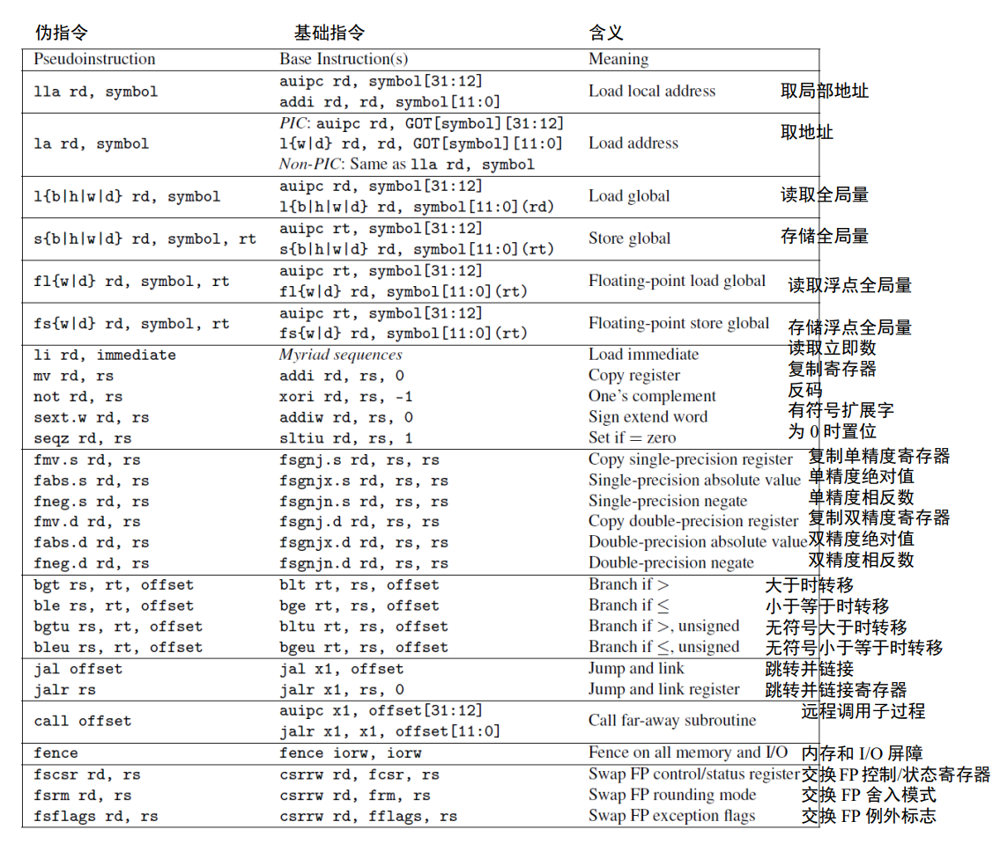
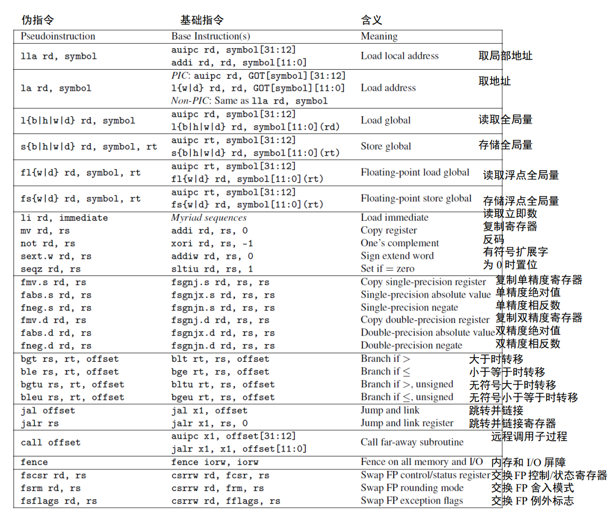

原文链接：https://thenewstack.io/using-rustlangs-async-tokio-runtime-for-cpu-bound-tasks/
翻译：trdthg
选题：Akagi201
使用 Tokio 处理 CPU 密集型任务
尽管 async 通常都被应用于异步网络 I/O，但是在这篇文章里，我会像你介绍为什么使用 Tokio 处理 CPU 密集型任务（比如数据分析引擎等）也是一个不错的选择。
Tokio 是什么？
Rust 本身提供了一个类似于 JavaScript 的异步编程模型。
为了充分利用多核和异步 I/O。一个运行时是必须的，尽管社区有很多异步运行时的选择，但是 Tokio 是事实上的标准。尽管 Tokio 在官网上描述到它是 Rust 语言的一个异步运行时，并且提供了编写网络服务所需要的模块，它也可以被用在其它场景。
为什么使用 Tokio 处理 CPU 密集型任务
现代化的数据分析引擎总是不可避免的要处理来自客户端的网络请求，以及通过网络和对象存储系统（比如 ASW S3、GCP Cloud、Azure 等）进行通信。因此，任何使用 Rust 实现的系统，大多都会用 Tokio 去处理这部分网络相关的服务，或者是一部分文件 I/O 服务。
除了应对网络外，数据分析引擎还需要做大量繁重的的 CPU 计算，消耗大量 CPU 资源去进行诸如：重新组织数据存储、提前计算各种索引、或者是直接回复客户端请求等工作。这些复杂计算通常会被切成许多单独的块（我把它们称为 "任务"），然后被并行的处理，以利用到现代 CPU 的多核特性。
任务调度器会决定哪个任务应该在什么时候运行，它会将任务映射到合适的 CPU 内核或者是线程上。
学术界和工业界对于各种任务调度器、工作池、线程池等已经积累了很多年的研究。
我自己已经实现并且使用过几个自定义的任务调度器。他们在大多数时间 (99.9%) 都工作的很好，但是在处理边缘情况（比如快速停机、任务取消、清理等）时，他们的效果非常不尽人意。由于这些任务调度器使用了较低级别的线程原语，出现线程间竞争的情况比比皆是，所以我不建议这样做。
因此，当我在 Rust 生态中寻找一个任务调度器时，你会很自然的选择 Tokio。Tokio 有很多优势：
- 你只需要 Tokio，并不需要添加其他依赖项。
- Tokio 实现了一个复杂的 支持任务窃取的调度器。
- Tokio 内部实现了对 async/await 的支持。并且有许多相对成熟的库去处理流、异步锁、管道、异步取消等。
- Tokio 在 Rust 生态系统中经过了良好测试，并且有着大量使用案例。
- Tokio 通常会将正在运行的任务和
Future放在同一个执行器内，这有利于实现局部缓存。 - Tokio 的 文档 很完善，并且在积极更新维护。
因此，选择 Tokio 作为 CPU 密集型任务的任务调度程序是理所应当的，对吧？WROOOOOOOONG！
使用 Tokio 的反对意见
选择 Tokio 在我们团队中变成了一个热门话题，到现在依然不是所有人都认可这个决定。在我们做 DataFusion 和 InfluxDB IOx 的早期，我们很担心这个问题。以下是一些反对意见：
Tokio 文档的警告：
老版本的 Tokio 文档（比如 1.10 版）里面有一条著名的警告：
If your code is CPU-bound and you wish to limit the number of threads used to run it, you should run it on another thread pool such as Rayon.
如果你的代码要处理 CPU 密集型任务，并且想要尽量减少使用到的线程数，你应该将这些任务分配到另一个线程池比如 Rayon。
这个警告对我们团队和社区都造成了很大的困惑。很多人读了之后都以为 Tokio 永远不应该用来处理 CPU 密集型任务。但是文档的关键其实是说，一个运行时实例（同一个线程池）不应该同时用于 I/O 和 CPU 计算，我们之后澄清了文档 的意图。
顺便说一句，Tokio 文档建议用 Rayon 处理 CPU 密集型任务。Rayon 对于很多程序都是很好的解决方案，但是它并不支持异步。如果你的代码中哪怕只有一点需要使用异步，那你就不得不跨过同步和异步的痛苦边界。我还发现实现一个 基于拉取的执行器模型 会更困难，这种模型要求某个任务必须等待所有的输入都准备好在能在 Rayon 中运行
尾部延迟会拖累你
聪明的人会说：使用 Tokio 处理 CPU 密集型任务会增加请求的尾部延迟，这是难以令人接受的。
尾部延迟？🙄
你可能认为：我正在编写一个数据库，尾部延迟听起来像是对于高负载的 Web 服务器的一个学术问题……”
但其实，这也是需要考虑的：思考一下健康检查，健康检查对于使用容器编排系统（比如 Kubernetes）部署的服务是必不可少的。检查的方式通常是发送一个 HTTP
请求到某个 API，例如 /health。如果该请求已经被分派到某一个任务队列中，但是 Tokio 正在忙于使用 CPU 进行大量数据处理任务，那么
Kubernetes 将不能及时得到“系统正常”的响应，你的进程就会被 K8s 杀死。因此得到结论：由于尾部延迟，你不能将 Tokio 用于 CPU
密集型任务。
但是，就像 Tokio 在文档中阐述的，想要防止你的程序在 CPU 完全饱和的情况下被 K8s
误杀，你应该使用两个独立的线程池。一个用来执行对尾部延迟敏感的任务，就比如响应 /health 接口。另一个用来执行 CPU
密集型任务。这些线程池的的最佳线程数需要根据具体需求去调整。
如果你将 Tokio 运行时只是视为一个复杂点的线程池，那么使用多个运行时实例的想法可能更容易接受，我们将在最后使用专用的执行器演示如何实现这个想法。
单任务开销很高
Tokio 的每个任务开销很高。
对于这点，我一点也不惊讶。人们总是可以实现比 Tokio 运行速度更快的线程池。但是，这些线程池并不是足够稳定，难以应对生产环境的负载，并且他们也不具备像 Tokio 一样的庞大生态系统。
在许多场景下，单任务的开销可以使用“矢量化处理” 来分摊。意思是每个任务回同时处理几千行数据而不是单单一行，你需要将任务分成合理大小的块。你也不能分摊所有工作场景下的开销。但是，对于我们的程序关心的实例来说，Tokio 的任务开销已经微乎其微了
实践
假设你已经被说服了使用 Tokio 去处理 CPU 密集型任务是可行的。现在你应该怎么做？
首先，至关重要的一点是，你的代码应该符合以下原则：异步代码永远不应该花费很长时间才能完成，这一点请参考 Alice Ryhl 的 Async: What is blocking?。这是为了让调度器有机会安排其他事情，比如任务窃取等。
当然了，这个“很长时间”取决于你的程序；Ryhl 建议在优化响应的尾部延迟时，单个异步任务完成时间应该在 10 ~ 100 微秒。我认为在针对 CPU 进行优化时 10~100 毫秒也能有不错的效果。但是在我的测试 estimated per-task Tokio overhead 中，Tokio 单任务的开销在约 10 纳秒范围内，因此几乎不可能用 10 毫秒的任务来测量 Tokio 运行时开销。
其次，将任务分派到一个单独的执行器
专用的执行器
这里是一个简单的例子，演示了我们如何在 InfluxDB IOx 上将任务分配到一个单独的 Tokio 运行时上（完整代码可以在我们的仓库里查看，里面还有关于清理、停机、合并的内容）
pub struct DedicatedExecutor {
state: Arc<Mutex<State>>,
}
/// Runs futures (and any `tasks` that are `tokio::task::spawned` by
/// them) on a separate Tokio Executor
struct State {
/// Channel for requests -- the dedicated executor takes requests
/// from here and runs them.
requests: Option<std::sync::mpsc::Sender<Task>>,
/// Thread which has a different Tokio runtime
/// installed and spawns tasks there
thread: Option<std::thread::JoinHandle<()>>,
}
impl DedicatedExecutor {
/// Creates a new `DedicatedExecutor` with a dedicated Tokio
/// executor that is separate from the threadpool created via
/// `[tokio::main]`.
pub fn new(thread_name: &str, num_threads: usize) -> Self {
let thread_name = thread_name.to_string();
let (tx, rx) = std::sync::mpsc::channel::<Task>();
let thread = std::thread::spawn(move || {
// Create a new Runtime to run tasks
let runtime = Tokio::runtime::Builder::new_multi_thread()
.enable_all()
.thread_name(&thread_name)
.worker_threads(num_threads)
// Lower OS priority of worker threads to prioritize main runtime
.on_thread_start(move || set_current_thread_priority_low())
.build()
.expect("Creating Tokio runtime");
// Pull task requests off the channel and send them to the executor
runtime.block_on(async move {
while let Ok(task) = rx.recv() {
Tokio::task::spawn(async move {
task.run().await;
});
}
let state = State {
requests: Some(tx),
thread: Some(thread),
};
Self {
state: Arc::new(Mutex::new(state)),
}
}
这段代码会在一个新线程 std::thread，并在这个线程里创建了一个新的 Tokio 运行时。运行时会从 channel 获取任务并运行。
注意：这个新的线程很关键，如果你尝试在主线程里或者是任何已经创建过 Tokio 运行时的线程里再次创建新的运行时，程序就会报错，因为已经有一个运行时了。
下面的代码将任务分派到第二个运行时。
impl DedicatedExecutor {
/// Runs the specified Future (and any tasks it spawns) on the
/// `DedicatedExecutor`.
pub fn spawn<T>(&self, task: T) -> Job<T::Output>
where
T: Future + Send + 'static,
T::Output: Send + 'static,
{
let (tx, rx) = tokio::sync::oneshot::channel();
let fut = Box::pin(async move {
let task_output = task.await;
tx.send(task_output).ok()
});
let mut state = self.state.lock();
let task = Task {
fut,
};
if let Some(requests) = &mut state.requests {
// would fail if someone has started shutdown
requests.send(task).ok();
} else {
warn!("tried to schedule task on an executor that was shutdown");
}
Job { rx, cancel }
}
}
上面的代码使用了一个名为 Job 的结构体，它是一个对 Future 的简单包装，Job 能够将 Future 的执行结果从单独的执行器内传输回主线程。相关代码如下。
#[pin_project(PinnedDrop)]
pub struct Job<T> {
#[pin]
rx: Receiver<T>,
}
impl<T> Future for Job<T> {
type Output = Result<T, Error>;
fn poll(
self: Pin<&mut Self>,
cx: &mut std::task::Context<'_>,
) -> std::task::Poll<Self::Output> {
let this = self.project();
this.rx.poll(cx)
}
}
就是这样！你可以在 Github gist 中找到所有代码。
原文链接：https://lucumr.pocoo.org/2021/11/14/abusing-serde/
翻译：trdthg
选题：trdthg
Rust 冒险：滥用 Serde
当你让一个 Rust 程序员指出自己最喜欢的东西时，他们会很快的指出 serde 是一个让工作愉快好帮手。serde 是一个 Rust 的序列化和反序列化框架。它的格式相对独立，可以让你处理 JSON，YAML 以及一系列不同的格式。
除了上面的之外，还有很多东西可以用 serve 完成。我认为有一些用例相当有趣，值得分享。
滥用序列化
Abusing Serialization
其中一个有趣的用例是用 serde 作为某种形式的反射框架，将结构体暴露给其他的不能原生支持 Rust 结构体的环境。在这些情况下，作为一个开发者，你序列化了一个可以被序列化的对象，接着立即以某种稍微不同的格式再次反序列化它。相比于反序列化，我们也可以自定义一个序列化器用来 '捕获' 序列化的调用。这是在 IPC，模板引擎上下文、格式转换中常用的模式。
这在实践中大概是什么样呢？让我们从用户的角度看一下我写的 MiniJinja 模板引擎。MiniJinja 使用 serde 作为核心数据模型，将结构化的数据传递给模板，以便它们可以在运行时进行评估。下面是一些给开发者的示例代码：
#[derive(Serialize, Debug)]
pub struct User {
name: String,
}
fn main() {
let mut env = Environment::new();
env.add_template("hello.txt", "Hello {{ user.name }}!")
.unwrap();
let template = env.get_template("hello.txt").unwrap();
let user = User {
name: "John".into(),
};
println!("{}", template.render(context!(user)).unwrap());
}
如你所见，我们定义了一个叫 User 的结构体，可以使用默认的 Serialize 实现将它序列化。这个对象接着被传递到
context!()。context!() 所做的就是创建了一个 map，然后将一个键设为
user，接着设置为该变量的值。这样做的目的是允许模板引擎访问到 user 的 '属性'，例如 name。Rust
不是动态语言，这意味着通常在运行时做这样的事情是不可能的。但是由于 serde 为 User 实现了
Seralize，我们可以这样做。具体的实现大致如下（伪代码）：
impl Serialize for User {
fn serialize(&self, serializer: S) -> Result<S::Ok, S::Error>
where S: Serializer
{
let s = serializer.serialize_struct("User", 1);
s.serialize_field("name", &self.name)?;
s.end()
}
}
正常情况下，serializer 是一个类似于 JSON 序列化器的东西，它可以将结构体写入到一个字符串或者是文件，在这个过程中把它编码为 JSON。但是 serde 提供的接口并不要求用户必须这样。实际上，MiniJinja 直接将结构体编码为一个内存中的结构，模板引擎可以解析它。
这种模式并不新颖，serde 本身其实也有使用。当你使用 serde 的 flatter 功能时，serde 会启用一个内部缓冲模式，数据会被存储在一个内部的 Context 类型中，Context 类型可以表示 serde 数据模型的全部内容。然后这个 context 可以被传递给另一个序列化器中。
我不仅在 MiniJinja，同时也在 insta （一个快照测试工具）使用到这种模式。为了避免由于非确定性数据导致的测试快照的不稳定性，我首先将其序列化为一种内部的格式，接着在该格式上进行一个再加工，最后再将其序列化为最终的格式（例如 YAML）。
TLS 恶作剧
TLS Shenanigans
TLS：Thread Local Storage，Shenanigans：恶作剧
然而，MiniJinja 在此处使用 serde 的有趣之处在于，它允许在序列化和序列化器之间传递不兼容的数据。如前所述，serde 有一个特定的数据模型，不符合该数据模型的东西都会遇到这个问题。例如，serde 可以编码的最大整型是 i128。如果你需要一个任意精度的整型，那就不走运了。但是还是有办法的，你可以使用 带内信令（in-band signalling）传递额外数据。例如，serde JSON 序列化器能够表示任意精度整型，因为它在单值对象中保留了一个特殊的键，并用它去指示 JSON 序列化 / 反序列化器组合，决定这个任意精度的整型是否要被序列化。它看起来像这样：
{ "$serde_json::private::Number": "value" }
但是你应该能发现，如果一个人给出了这样的 JSON 文档，serde JSON 会把它当作任意精度的整形去解析，这意味着 'value' 部分本身也需要于 serde 兼容。对于任意精度的整型，这没有问题，因为它可以用字符串表示。但是假如你想在序列化和反序列化中传递的东西根本不能序列化呢？
这时，巧妙地利用 thread local 就是一种变通方法。
在 MiniJinja 中，运行时值的内部表示是一个叫做 Value
的结构体。正如你所期望的，它可以容纳整型，浮点数，字符串，列表，对象等等。然而，他也可以容纳一些 serde
完全无法解析的类型。特别是它可以保存一种特殊类型的字符串，称为 'safe' string, 它是一个存储了安全的 HTML
代码的字符串，不需要转义，也不需要所谓的 '动态值'。后者特别有趣，因为它不能被序列化。
什么是动态值？它实际上是具有状态的对象的句柄，应该直接传递给模板。这里的一个例子是 MiniJinja 中的 loop 变量：
<ul>
{% for item in seq %}
<li>{{ loop.index }}: {{ item }}</li>
{% endfor %}
</ul>
MiniJinja（类似于 Jinja2）提供了一个特殊的 loop 变量可以访问循环的状态。例如，你可以通过 loop.index
来获取当前循环的迭代次数。在 MiniJinja 的工作原理中，'循环控制器' 本身会被直接传递给模板，并且把值本身当作引用计数存进去。
pub struct LoopState {
len: AtomicUsize,
idx: AtomicUsize,
}
let controller = Rc::new(LoopState {
idx: AtomicUsize::new(!0usize),
len: AtomicUsize::new(len),
});
当循环迭代时，控制器上的索引会 +1。
controller.idx.fetch_add(1, Ordering::Relaxed);
控制器本身会被直接添加到上下文中：
let template_side_controller = Value::from_object(controller);
为了达到这个目的，控制器需要实现 MiniJinja 内部的 Object 特征，下面是一个最小实现：
impl Object for LoopState {
fn attributes(&self) -> &[&str] {
&["index", "length"][..]
}
fn get_attr(&self, name: &str) -> Option<Value> {
let idx = self.idx.load(Ordering::Relaxed) as u64;
let len = self.len.load(Ordering::Relaxed) as u64;
match name {
"index" => Some(Value::from(idx + 1)),
"length" => Some(Value::from(len)),
_ => None,
}
}
}
在模板引擎那一边，系统知道当 index 属性被使用时，需要调用 get_attr() 方法。
到目前为止我们所说的都是理论，serde 究竟是如何做的呢？当 Value::from_object 调用时，传入的值会被 move 到 value
对象里。这样做不需要特殊处理，特别是由于已经使用了引用计数。但是现在的问题是，对于像 LoopState 这样本身没有实现 Serialize
的东西，它的值是如何被序列化的？答案是线程本地存储（thread local storage）和一个合作的（co-operating）序列化和反序列化器。
越过边界的 State
Out of Bound State
隐藏在 MiniJinja 的 Value 实现有这样一段代码：
const VALUE_HANDLE_MARKER: &str = "\x01__minijinja_ValueHandle";
thread_local! {
static INTERNAL_SERIALIZATION: AtomicBool = AtomicBool::new(false);
static LAST_VALUE_HANDLE: AtomicUsize = AtomicUsize::new(0);
static VALUE_HANDLES: RefCell<BTreeMap<usize, Value>> = RefCell::new(BTreeMap::new());
}
fn in_internal_serialization() -> bool {
INTERNAL_SERIALIZATION.with(|flag| flag.load(atomic::Ordering::Relaxed))
}
它们的用处是，Value 自身能够感知到什么时候使用内部序列化的特殊形式。这种内部序列化是一种特殊形式的序列化，我们明确知道我们的序列化数据的接收者是一个可以理解该数据的反序列化器。我们没有直接对数据进行序列化，而是将其存入到 TLS 中，然后把数据的句柄序列化到 serde 序列化器中。反序列化器会先反序列化句柄，接着再从 TLS 中提取值。
因此，我们的循环控制器序列化的实现大致如下：
impl Serialize for Value {
fn serialize<S>(&self, serializer: S) -> Result<S::Ok, S::Error>
where
S: Serializer,
{
// enable round tripping of values
if in_internal_serialization() {
use serde::ser::SerializeStruct;
let handle = LAST_VALUE_HANDLE.with(|x| x.fetch_add(1, atomic::Ordering::Relaxed));
VALUE_HANDLES.with(|handles| handles.borrow_mut().insert(handle, self.clone()));
let mut s = serializer.serialize_struct(VALUE_HANDLE_MARKER, 1)?;
s.serialize_field("handle", &handle)?;
return s.end();
}
// ... here follows implementation for serializing to JSON etc.
}
}
如果它被序列化为 JSON，我们大致能看到这样的东西：
{ "\u0001__minijinja_ValueHandle": 1 }
而真正的循环控制器将被存储在 VALUE_HANDLES 中句柄为 1 处。现在我们如何从里面的到数值呢？在 MiniJinja
中，反序列化其实从未发生，只有序列化。而且序列化也只是将内存中的对象组装起来。因此，我们只需要让序列化器理解带内信令如何处理，并以此找到带外的值。
impl ser::SerializeStruct for SerializeStruct {
type Ok = Value;
type Error = Error;
fn serialize_field<T: ?Sized>(&mut self, key: &'static str, value: &T) -> Result<(), Error>
where
T: Serialize,
{
let value = value.serialize(ValueSerializer)?;
self.fields.insert(key, value);
Ok(())
}
fn end(self) -> Result<Value, Error> {
match self.name {
VALUE_HANDLE_MARKER => {
let handle_id = self.fields["handle"].as_usize();
Ok(VALUE_HANDLES.with(|handles| {
let mut handles = handles.borrow_mut();
handles
.remove(&handle_id)
.expect("value handle not in registry")
}))
}
_ => /* regular struct code */
}
}
}
Ser-to-De
上面的例子是你可以滥用的一种方式，但是同样的模式在真实的序列化和反序列化中也可以用到。在 MiniJinja 中，我可以不使用序列化，因为我有效地利用了序列化代码，从一种内存格式转换到另一种内存格式。如果你想在进程间传递数据，情况就会变得棘手一些，实际的序列化就是必要的。例如，你想建立一个 IPC 系统，在进程之间交换数据，这里的挑战是，出于性能的考虑，对于比较大的内存段，你必须使用共享内存，或者是以文件描述符的形式传递打开的文件（因为这些文件有可能是 socket）。在我的实验性 unix-ipc crate 中，我就是这样做的。
我在这里建立了一个二级缓冲区，它可以放置文件描述符。同样，这里必须使用 TLS。
API 大致如下：
pub fn serialize<S: Serialize>(s: S) -> io::Result<(Vec<u8>, Vec<RawFd>)> {
let mut fds = Vec::new();
let mut out = Vec::new();
enter_ipc_mode(|| bincode::serialize_into(&mut out, &s), &mut fds)
.map_err(bincode_to_io_error)?;
Ok((out, fds))
}
从用户的角度来看，这些都是透明的。当一个 Serailize 实现遇到了一个文件对象时，它可以检查是否应该使用 IPC 的序列化，如果是，它可以把 FD
存起来，enter_ipc_mode 基本上将 fds 绑定到了一个线程局部变量里，接着调用 register_fd
注册它。例如，下面展示了内部句柄的序列化方式：
impl<F: IntoRawFd> Serialize for Handle<F> {
fn serialize<S>(&self, serializer: S) -> Result<S::Ok, S::Error>
where
S: ser::Serializer,
{
if is_ipc_mode() {
// effectively a weird version of `into_raw_fd` that does
// consume
let fd = self.extract_raw_fd();
let idx = register_fd(fd);
idx.serialize(serializer)
} else {
Err(ser::Error::custom("can only serialize in ipc mode"))
}
}
}
然后是反序列化：
impl<'de, F: FromRawFd + IntoRawFd> Deserialize<'de> for Handle<F> {
fn deserialize<D>(deserializer: D) -> Result<Handle<F>, D::Error>
where
D: de::Deserializer<'de>,
{
if is_ipc_mode() {
let idx = u32::deserialize(deserializer)?;
let fd = lookup_fd(idx).ok_or_else(|| de::Error::custom("fd not found in mapping"))?;
unsafe { Ok(Handle(Mutex::new(Some(FromRawFd::from_raw_fd(fd))))) }
} else {
Err(de::Error::custom("can only deserialize in ipc mode"))
}
}
}
从用户的角度来看，他只需要通过 IPC channel 传递一个 Handle::new(my_file) 就能实现。
Serde 的现状
State of Serde
不幸的是，上面所有的东西都依赖线程本地变量和对内信令。整体上都不是很好，如果有一天出了 serde 2.0，我希望有更好的方法实现上面的内容。
实际上，现在的 serde 仍然有不少问题和上述的 Hack 行为相关。
- serde requires in-band signalling
- Internal buffering disrupts format-specific deserialization features
- serde_json's arbitrary precision feature incompatible with flatten
说到这里，在我们需要重写 serde 之前，肯定还有进一步可以被滥用的地方。但是现在是时候应该慢慢考虑 serve 未来版本的设想了它应该对数据模型的支持更友好，可以用更少的 Hack 来脱离规定框架。
原文链接：https://lucumr.pocoo.org/2022/1/6/rust-extension-map/
翻译：trdthg
选题：trdthg
拓展 Rust 中的 Map
在 Rust 中，如果你想为用户提供一个灵活的 API，一般可以引入泛型参数。以一个 web 框架为例，它可能需要一个程序类型，并且需要传递给很多函数。这个程序类型需要能够以配置的形式被参数化。
引入 Any 特征
一个解决方法是使用 Any 特征。它需要一个 'static 的生命周期，当你之后使用它时，还需要用 Box
进行装箱。比如我们可能对它进行向下转型，即转换为原始的类型。这意味着你可以在某个地方（比如我们的 App）中存储和获取任意类型。
我们期望的 API 大致如下：
let app = App::new();
// place in extension map
app.extensions().insert(Config { ... });
app.extensions().insert(Database { ... });
// retrieve from extension map
let config = app.extensions().get::<Config>();
我们的 app 需要容纳其他拓展的类型，以便之后使用。
现在，让我们试试最简单的实现方式：准备一个 Extensions 对象，让它实现插入和获取的方法。如果一个拓展还不存在，我们就自动插入一个默认的（需要实现
Default 特征）。
use std::collections::HashMap;
use std::any::{Any, TypeId};
#[derive(Default)]
pub struct Extensions {
map: HashMap<TypeId, Box<dyn Any>>,
}
impl Extensions {
pub fn insert<T: 'static>(&mut self, value: T) {
self.map.insert(TypeId::of::<T>(), Box::new(value));
}
pub fn get<T: 'static>(&self) -> &T {
self.map.get(&TypeId::of::<T>())
.and_then(|b| b.downcast_ref())
.unwrap()
}
pub fn get_mut<T: Default + 'static>(&mut self) -> &mut T {
self.ensure::<T>();
self.map.get_mut(&TypeId::of::<T>())
.and_then(|b| b.downcast_mut())
.unwrap()
}
fn ensure<T: Default + 'static>(&mut self) {
if self.map.get(&TypeId::of::<T>()).is_none() {
self.insert(T::default());
}
}
}
上面的代码非常直接，但是存在两个问题：首先，只有 get_mut 能够调用 ensure 去插入默认值，如果有人直接调用 get 就会导致
panic。第二个问题是，借用检查器会让之后的编写非常困难。上面的 map 对于解决经典的问题（例如 app）是很有用的，你只需要配置一次，自那之后 map
就像是被冻结了一样，因为有太多的引用在飞来分飞去，以至于没有人能够得到 &mut 的引用。
how does it work？
上面的代码是如何做到的呢，Rust 中的每一种类型都会有一个 type ID，你可以使用 TypeId::of::<T>()
获取。他是唯一的，你可以用它进行比较，或者是作为 map 的键来使用。每种类型只允许有一个值。接着我们把 T 作为 dyn Any 存储在 map
里，Any 特征允许我们使用 downcast_ref 和 downcast_mut 方法拿到原始类型。由于我们使用了 ensure
方法确保这里的类型存在，因此可以安全的 unwrap。
内部可变性
让我们看一个 web 框架或者是模板引擎的常见案例。以
MiniJinja（模板引擎）为例，它里面有一个 State
对象，每次模板初始化时都会创建一次，State 没有实现 Send 和 Sync，MiniJinja 在评估时需要 State。如果你想让用户能够放入自定义的
State 呢？在这种情况下，我们可以通过在内部使用 RefCell 来调整上面的类型。
use std::collections::HashMap;
use std::any::{Any, TypeId};
use std::cell::{Ref, RefCell, RefMut};
#[derive(Default)]
pub struct Extensions {
map: RefCell<HashMap<TypeId, Box<dyn Any>>>,
}
impl Extensions {
pub fn insert<T: 'static>(&self, value: T) {
self.map.borrow_mut().insert(TypeId::of::<T>(), Box::new(value));
}
pub fn get<T: Default + 'static>(&self) -> Ref<'_, T> {
self.ensure::<T>();
Ref::map(self.map.borrow(), |m| {
m.get(&TypeId::of::<T>())
.and_then(|b| b.downcast_ref())
.unwrap()
})
}
pub fn get_mut<T: Default + 'static>(&self) -> RefMut<'_, T> {
self.ensure::<T>();
RefMut::map(self.map.borrow_mut(), |m| {
m.get_mut(&TypeId::of::<T>())
.and_then(|b| b.downcast_mut())
.unwrap()
})
}
fn ensure<T: Default + 'static>(&self) {
if self.map.borrow().get(&TypeId::of::<T>()).is_none() {
self.insert(T::default());
}
}
}
从用户的角度来看，几乎没有变化。主要的区别是你不需要一个可变引用就能调用 get_mut，这一壮举是由 RefCell 实现的，Refcell
能够将检查移动到运行时。当一个 RefMut 被给出时，如果已经存在任何的可变或不可变引用，就会发生
panic。对于这里的用户来说，这并不是一个很大的问题，因为我们可以很容易地确保只有一个可变的引用在使用。特别棒的是，Ref 和 RefMut
类型提供了一个静态的 map 方法，让你可以轻松派生出另一个 Ref 或 RefMut，并保持原来的引用，但对值进行转换。
同步支持
如果我们想要用 Send 和 Sync 来实现和上面相同的效果呢？我们需要一个锁。可惜的是标准库提供的 Mutex 和 RwLock 不能让你在拿到锁的同时
map，你可以使用 parking_lot 替代，它实现了必要的一些方法。
use parking_lot::{
MappedRwLockReadGuard,
MappedRwLockWriteGuard,
RwLock,
RwLockReadGuard,
RwLockWriteGuard,
};
use std::any::{Any, TypeId};
use std::collections::HashMap;
#[derive(Default)]
pub struct Extensions {
map: RwLock<HashMap<TypeId, Box<dyn Any>>>,
}
impl Extensions {
pub fn insert<T: Send + Sync + 'static>(&self, value: T) {
self.map.write().insert(TypeId::of::<T>(), Box::new(value));
}
pub fn get<T: Send + Sync + Default + 'static>(&self) -> MappedRwLockReadGuard<'_, T> {
self.ensure::<T>();
RwLockReadGuard::map(self.map.read(), |m| {
m.get(&TypeId::of::<T>())
.and_then(|b| b.downcast_ref())
.unwrap()
})
}
pub fn get_mut<T: Send + Sync + Default + 'static>(&self) -> MappedRwLockWriteGuard<'_, T> {
self.ensure::<T>();
RwLockWriteGuard::map(self.map.write(), |m| {
m.get_mut(&TypeId::of::<T>())
.and_then(|b| b.downcast_mut())
.unwrap()
})
}
fn ensure<T: Default + Send + Sync + 'static>(&self) {
if self.map.read().get(&TypeId::of::<T>()).is_none() {
self.insert(T::default());
}
}
}
注意：由于 Any 并没有实现 Debug，所以我们很难为我们的 map 实现 Debug 特征，一些简单的改变并不能解决目前的问题。下半部分我们将介绍
as-any 模式
我们面临的挑战是，在 Rust 里，你不能使用 Box<Any + Debug>，然而还是有一些方法解决这个问题。
为 map 实现 Debug
简化问题
我们的目标是对 Box<dyn Any> 做一个包装，并让 Wrapper 实现 Debug。
#[derive(Debug)]
struct AnyBox(Box<dyn Any + Debug>);
如果你尝试编译，编译器应该会很不高兴的抛出错误：
error[E0225]: only auto traits can be used as additional traits in a trait object
--> src/main.rs:9:29
|
9 | struct AnyBox(Box<dyn Any + Debug>);
| --- ^^^^^ additional non-auto trait
| |
| first non-auto trait
|
= help: consider creating a new trait with all of these as supertraits and
using that trait here instead: `trait NewTrait: Any + Debug {}`
超级特征
幸运的是，编译器再次为我们指明了解决之道，我们需要创建一个父特征，并利用特征约束。同时，我们为所有实现了 Any 和 Debug 的类型实现我们的超级特征。就像下面这样：
#[derive(Debug)]
struct AnyBox(Box<dyn DebugAny>);
trait DebugAny: Any + Debug {}
impl<T: Any + Debug + 'static> DebugAny for T {}
你可以想这样构建一个 Box，但是真正不能通过编译的是向下转型
fn main() {
let any_box = AnyBox(Box::new(42i32));
dbg!(any_box.0.downcast_ref::<i32>());
}
编译器会告诉我们，AnyBox 中的值并没有 downcast_ref 方法
error[E0599]: no method named `downcast_ref` found for struct
`Box<(dyn DebugAny + 'static)>` in the current scope
--> src/main.rs:15:20
|
15 | dbg!(any_box.0.downcast_ref::<i32>());
| ^^^^^^^^^^^^ method not found in `Box<(dyn DebugAny + 'static)>`
原因是 Box<dyn DebugAny> 并不是 Box<dyn Any>，因此我们不能那里得到 Any
特征拥有的方法。那么我们如何解决这个问题呢？最简单的方法是 "as any" 模式，我们在我们的 DebugAny
特征上实现一个方法，将其向上转换为一个 Any。看起来像这样：
trait DebugAny: Any + Debug {
fn as_any(&self) -> &dyn Any;
fn as_any_mut(&mut self) -> &mut dyn Any;
}
impl<T: Any + Debug + 'static> DebugAny for T {
fn as_any(&self) -> &dyn Any { self }
fn as_any_mut(&mut self) -> &mut dyn Any { self }
}
现在虽然我们依然不能在 DebugAny 上调用 downcast_ref，但是我们可以拿走它的值，并调用 as_any 得到一个
&dyn Any：
fn main() {
let any_box = AnyBox(Box::new(42i32));
dbg!(any_box.0.as_any().downcast_ref::<i32>());
dbg!(&any_box);
}
但是当我们运行后，却得到了一个 None。发生什么事了？？？
[src/main.rs:23] any_box.0.as_any().downcast_ref::<i32>() = None
这个谜题的答案与方法解析的工作方式和空白实现有关。当我们在 Box<dyn DebugAny> 上调用 as_any 时，Box
并没有发生自动解引用，事实上调用的是 Box<dyn DebugAny> 的 as_any，因为 Box 现在也实现了我们的
DebugAny。那么，我们如何穿过这个 Box 呢？通过手动解引用。
fn main() {
let any_box = AnyBox(Box::new(42i32));
dbg!((*any_box.0).as_any().downcast_ref::<i32>());
dbg!(&any_box);
}
这样就是我们预期的值了
[src/main.rs:23] (*any_box.0).as_any().downcast_ref::<i32>() = Some(
42,
)
[src/main.rs:24] &any_box = AnyBox(
42,
)
可调试的 Extension Map
有了上面的经验，我们现在可以拿出之前的非同步 map，稍加改造就能为其实现 Debug。
use std::any::{Any, TypeId};
use std::cell::{Ref, RefCell, RefMut};
use std::collections::HashMap;
use std::fmt::Debug;
trait DebugAny: Any + Debug {
fn as_any(&self) -> &dyn Any;
fn as_any_mut(&mut self) -> &mut dyn Any;
}
impl<T: Any + Debug + 'static> DebugAny for T {
fn as_any(&self) -> &dyn Any { self }
fn as_any_mut(&mut self) -> &mut dyn Any { self }
}
#[derive(Default, Debug)]
pub struct Extensions {
map: RefCell<HashMap<TypeId, Box<dyn DebugAny>>>,
}
impl Extensions {
pub fn insert<T: Debug + 'static>(&self, value: T) {
self.map
.borrow_mut()
.insert(TypeId::of::<T>(), Box::new(value));
}
pub fn get<T: Default + Debug + 'static>(&self) -> Ref<'_, T> {
self.ensure::<T>();
Ref::map(self.map.borrow(), |m| {
m.get(&TypeId::of::<T>())
.and_then(|b| (**b).as_any().downcast_ref())
.unwrap()
})
}
pub fn get_mut<T: Default + Debug + 'static>(&self) -> RefMut<'_, T> {
self.ensure::<T>();
RefMut::map(self.map.borrow_mut(), |m| {
m.get_mut(&TypeId::of::<T>())
.and_then(|b| (**b).as_any_mut().downcast_mut())
.unwrap()
})
}
fn ensure<T: Default + Debug + 'static>(&self) {
if self.map.borrow().get(&TypeId::of::<T>()).is_none() {
self.insert(T::default());
}
}
}
向 map 里面添加点东西，打印一下：
[src/main.rs:63] &extensions = Extensions {
map: RefCell {
value: {
TypeId {
t: 13431306602944299956,
}: 42,
},
},
}
在这个例子中，我在 map 中放置了一个 32 位的整数 42，它打印出了作为键的 TypeId，和作为值的 42。
保留类型名称
如果你想保留原来的类型名称，而不仅仅是类型的 ID，我们可以使用一个自定义的类型作为 map 的键。通过对 TypeId 和 TypeName 做一次简单的包装就能轻松实现：
use std::any::{TypeId, type_name};
use std::hash::{Hash, Hasher};
use std::fmt::{self, Debug};
pub struct TypeKey(TypeId, &'static str);
impl TypeKey {
pub fn of<T: 'static>() -> TypeKey {
TypeKey(TypeId::of::<T>(), type_name::<T>())
}
}
impl Hash for TypeKey {
fn hash<H: Hasher>(&self, state: &mut H) {
self.0.hash(state);
}
}
impl PartialEq for TypeKey {
fn eq(&self, other: &Self) -> bool {
self.0 == other.0
}
}
impl Eq for TypeKey {}
impl Debug for TypeKey {
fn fmt(&self, f: &mut fmt::Formatter<'_>) -> fmt::Result {
write!(f, "{}", self.1)
}
}
接着用它替换掉原来的键，调试一下：
[src/main.rs:90] &extensions = Extensions {
map: RefCell {
value: {
i32: 42,
alloc::vec::Vec<i32>: [
1,
2,
3,
],
},
},
}
注意，我在 map 中额外插入了一个 Vec<i32>，以获得更明显的输出。
查询引擎：推送与拉取
考虑以下的 SQL 语句
SELECT DISTINCT customer_first_name
FROM customer
WHERE customer_balance > 0
查询优化器通常将这样的 SQL 查询编译成一系列离散运算符：

Distinct
<- Map(customer_first_name)
<- Select(customer_balance > 0)
<- customer
在基于 Pull 的系统中，消费者 customers 驱动系统。每个运算符运算后都会产生一个新行：用户将向根节点（Distinct）请求一行，这一行回向
Map 询问一行，接着向 Select 询问一行，依此类推。
在基于 Push 的系统中，生产者 producers 驱动系统。每个运算符，当他接收到数据时，就会告知下游的运算符，customer
作为查询基表回告诉 Select 自己的信息，接着是 Map、Distinct。
Pull-Based 查询引擎
基于拉取的查询引擎一般也被称为使用 Volcano 或 Iterator 模型。这是最古老和最著名的查询执行模型，并以 1994 年标准化其约定的论文命名。
首先我们有一个关系，我们通过 Scan 把它专为一个迭代器
let customer = [
{ id: 1, firstName: "justin", balance: 10 },
{ id: 2, firstName: "sissel", balance: 0 },
{ id: 3, firstName: "justin", balance: -3 },
{ id: 4, firstName: "smudge", balance: 2 },
{ id: 5, firstName: "smudge", balance: 0 },
];
function* Scan(coll) {
for (let x of coll) {
yield x;
}
}
接下来为他实现一些操作符
function* Select(p, iter) {
for (let x of iter) {
if (p(x)) {
yield x;
}
}
}
function* Map(f, iter) {
for (let x of iter) {
yield f(x);
}
}
function* Distinct(iter) {
let seen = new Set();
for (let x of iter) {
if (!seen.has(x)) {
yield x;
seen.add(x);
}
}
}
翻译我们的查询语句
SELECT DISTINCT customer_first_name FROM customer WHERE customer_balance > 0
Distinct(
Map(
(c) => c.firstName,
Select((c) => c.balance > 0, Scan(customer))
)
),
Push-Based 查询引擎
基于推送的查询引擎，有时也称为 Reactive、Observer、Stream 或回调地狱模型，如您所料，与我们之前的示例类似，但它颠覆了它。让我们从定义 Scan 开始
let customer = [
{ id: 1, firstName: "justin", balance: 10 },
{ id: 2, firstName: "sissel", balance: 0 },
{ id: 3, firstName: "justin", balance: -3 },
{ id: 4, firstName: "smudge", balance: 2 },
{ id: 5, firstName: "smudge", balance: 0 },
];
function Scan(relation, out) {
for (r of relation) {
out(r);
}
}
我们将“此运算符告诉下游运算符”构建为它需要调用的闭包。
剩下的运算符也是如此
function Select(p, out) {
return (x) => {
if (p(x)) out(x);
};
}
function Map(f, out) {
return (x) => {
out(f(x));
};
}
function Distinct(out) {
let seen = new Set();
return (x) => {
if (!seen.has(x)) {
seen.add(x);
out(x);
}
};
}
查询语句建模：
let result = [];
Scan(
customer,
Select(
(c) => c.balance > 0,
Map(
(c) => c.firstName,
Distinct((r) => result.push(r)),
),
),
);
区别
在基于 Pull 的系统中，所有的操作符都是惰性的，只有当数据需要时，操作符才会开始计算（yield）。这也意味着系统的行为和用户的行为紧密耦合。
再基于 Push 的系统中，系统开始处于空闲状态，直到他接受到一行数据。因此系统的工作和消费者是解耦的。
基于 Push 的系统还需要创建一个缓冲区，并将查询结果放到里面。这就是基于 Push 的系统给人的感觉。它会假设消费者不存在，当被请求时，能够立即作出响应。
DAG, yo
SQL 中有一个 With 结构，它允许在查询中多次引用同一个结果集：
WITH foo as (<some complex query>)
SELECT * FROM
(SELECT * FROM foo WHERE c) AS foo1
JOIN
foo AS foo2
ON foo1.a = foo2.b
基于 Push 的系统能够优化查询结构，复用结果集，而基于 Pull 的系统无法做到这一点。
原文链接：https://www.youtube.com/watch?v=rDoqT-a6UFg
翻译：trdthg
选题：trdthg

可视化 Rust 各数据类型的内存布局
本文已获得作者翻译许可。由于译者个人能力有限，如有翻译错误，希望读者加以指正。 视频版翻译：B 站视频链接
// file: main.rs
fn main() {
println!("Hello World!");
}
当我们使用 Rust 中编写程序时，由于 Rust 的 生命周期和所有权模型，你最好为程序可能用到的数据结构做一些前期设计，不然 Rust 编译器可能让你十分痛苦。了解每个数据类型的内存布局有助于锻炼你的直觉，可以提前规避一些编译错误和性能问题。
在这个文章里，我们会讨论
- 在计算机运行二进制文件时发生了什么？
- 常见数据类型的内存布局 (包括：整形，元组，切片，向量，字符串，结构体，枚举，智能指针，特征对象，还有各种
Fn特征)
二进制数据段
当你编写一个 Rust 程序时，要么直接调用 rustc，要不就是通过 cargo 去生成一个可执行文件。
$ rustc main.rs
$ cargo build
这个二进制文件以一种特定的格式存储数据。对于 linux 系统，最常见的格式是 elf64 。不同的操作系统比如 linux, mac, windows
使用不同的格式。虽然二进制文件的格式不尽相同，但是它在各种的操作系统中的运行方式几乎相同。
常见的二进制文件一般由 文件头 + 分区 组成。对于 elf 格式的二进制文件，它的结构大致如下图所示：

段的数量根据编译器而不同。这里只展示了一些重要的一些段。
当你运行二进制文件时
以 elf64 格式的二进制文件为例，在程序运行时，内核会为程序分配一段连续的内存地址，并将这些分区映射到内存中去。

注意：这里的内存地址并不是内存条里实际的内存地址。但是当程序开始使用内存时，内核和硬件会把它们映射到真正的物理内存地址。这被称为 虚拟地址空间。一个正在运行的程序被称为一个进程。从进程的角度来看，它只能看到一段连续的内存，从 0 到地址高位的最大值。
下面我们会介绍进程地址空间中各个区域的作用：
-
代码段 (text)
代码段包含了可执行指令的集合。
编译器能把我们用高级语言写的程序转换为 CPU 可以执行的机器指令，代码段就包含了这些指令。这些指令根据 CPU 架构而有所不同。编译给 x86-64 架构 CPU 运行的二进制文件不能在 ARM 架构的 CPU 上运行。
代码段是 只读 的，运行的程序不能更改它。
-
数据段 (data)
数据段包含 已经初始化 过的数据。比如全局变量，全局静态变量，局部静态变量。
-
BSS 段 (bss)
bss 代表
Block started by symbol, 这里保存着 未被初始化 过的全局变量。由于 bss 段的变量未被初始化，这一段并不会直接占据二进制文件的体积，它只负责记录数据所需空间的大小 -
地址高位
内核会把一些额外的数据，比如环境变量，传递给程序的参数和参数的数量映射到地址高位。
堆 & 栈
堆栈简介
当程序运行时（运行态），还需要需要另外两个域：堆和栈

栈：
-
操作系统使用栈存储一个进程的抽象细节，包括 (进程名字，进程 ID 等)。
-
一个进程至少有一个执行线程，每一个线程都有自己的栈内存。
-
在 64 位的 linux 系统上，Rust 程序为主线程分配 8MB 的栈内存。对于用户创建的其他线程，rust 标准库支持自定义大小，默认的大小是 2MB。
-
栈内存的空间会从地址高位向低位增长，但是不会超过线程可以拥有的最大值。对于主线程来说就是 8MB。如果它使用的栈内存超过了 8MB，程序就会被内核终止，并返回一个
stackoverflow错误。 -
栈内存被用于执行函数 (见下方对栈的具体讲解)。
虽然主线程的栈内存大小有 8MB，但是这 8MB 也不会被立即分配，只有当程序开始使用时，内核才会开始为它分配内存。
堆：
- 所有线程共享一块堆内存
- 堆内存从地址低位向高位增长。
操作系统通常会提供一些接口让我们检查程序运行时的内存映射状态，对于 linux 系统，你可以在 /proc/PID/maps 文件中查看
下面展示了一个进程的映射状态（部分）：
$ cat /proc/844154/maps
55e6c3f44000-55e6c412c000 r-xp 00000000 103:03 22331679 /usr/bin/fish
55e6c412c000-55e6c4133000 r--p 001e7000 103:03 22331679 /usr/bin/fish
55e6c4133000-55e6c4134000 rw-p 001ee000 103:03 22331679 /usr/bin/fish
55e6c4134000-55e6c4135000 rw-p 00000000 00:00 0
55e6c4faa000-55e6c5103000 rw-p 00000000 00:00 0 [heap]
7fd62326d000-7fd62326f000 r--p 00034000 103:03 22285665 /usr/lib/ld-linux-x86-64.so.2
7fd62326f000-7fd623271000 rw-p 00036000 103:03 22285665 /usr/lib/ld-linux-x86-64.so.2
7ffecf8c5000-7ffecf8f5000 rw-p 00000000 00:00 0 [stack]
你可能会想问：堆内存和栈内存是否会相互覆盖？因为他们两个向对方的方向增长。
通过用 stack 的低位减去 heap 的高位
>>> (0x7ffecf8c5000 - 0x55e6c5103000) / (10 ** 12)
46.282743488512
差距为 47TB，所以栈堆冲突的情况几乎不可能出现
如果确实发生了，内核会提供守卫去终止程序。注意，这里的内存是指虚拟内存，并非电脑的真实内存大小。
CPU 字长
虚拟内存地址的范围由 CPU 字长 (word size) 决定，字长是指 CPU 一次可以并行处理的二进制位数，对于 64 位的 CPU 来说，它的字长为 64 位 (8 字节)。CPU 中大多数或者全部寄存器一般都是一样大。

因此可以得出：64 位 CPU 的寻址空间为 0 ~ 2^64-1。而对于 32 位的 CPU 来说，它的寻址空间只有从 0 到 2^32，大概 4GB。
目前，在 64 位 CPU 上，我们一般只使用前 48 位用于寻址，大小大概是 282TB 的内存
>>> 2**48 / (10**12)
281.474976710656
这其中，只有前 47 位是分配给用户空间使用，这意味着大概有 141TB 的虚拟内存空间是为我们的程序分配的，剩下的位于地址高位的 141TB
是为保留给内核使用的。如果你去查看程序的虚拟内存映射，你能使用的最大内存地址应该是 0x7fffffffffff
>>> hex(2**47-1)
'0x7fffffffffff'
栈内存
接下来让我们深入了解栈内存的用途
在这个例子中，整个程序只有一个主线程在运行，我们在 main 里调用了 add1 函数。
fn main() {
let a = 22;
let b = add_one(a);
}
fn add_one(i: i32) -> i32 {
i + 1
}
栈主要用来保存正在调用的函数的数据 (包括函数参数，函数的局部变量，和它的返回地址)。为一个运行中的函数分配的总内存被称为一个 栈帧。
-
main函数是程序的入口，首先main函数的栈帧被创建。main函数内部有一个两个i32类型的局部变量a和b，大小都是 4 个字节，其中a的值为 22。main函数的栈帧会确保有足够的空间去保存这些局部变量。ESP 和 EBP 寄存器内分别保存着栈顶指针和栈底指针，用来追踪当前的栈的顶部和底部。

-
当
main函数调用add1时，一个新的栈帧被创建用来保存add1函数的数据。栈顶指针被修改为新栈的顶部。
add1函数要接受一个i32类型的参数，因此 4 字节的空间会被保留在add1函数的栈帧上。add1函数并没有局部变量- 栈帧还会保存一个返回地址，当函数运行结束后，会根据该返回地址回到之前的指令。
-
函数调用结束
当函数调用结束后，就会把返回值 23 赋值给局部变量
b。同时栈顶指针也被修改。
注意：函数运行结束后，add1 的栈帧并没有被释放。当你的程序开始调用下一个函数时，新的栈帧会直接将其覆盖。对于栈来说，开辟和释放内存只需要修改栈指针即可。
由此可见，因为在栈上开辟和释放内存只需要移动指针，不需要进行任何系统调用，它的效率是很高的。
当然栈也有一些限制：
- 只有在编译时已知大小的变量才能被存储在栈上。
- 函数不能返回一个位于函数内部的局部变量的引用
如果你把 add_one 改成下面的样子，就会编译失败：
fn add_one(i: i32) -> &'static i32 {
let result = i + 1;
&result
}
error[E0515]: cannot return reference to local variable `result`
--> src/main.rs:8:5
|
8 | &result
| ^^^^^^^ returns a reference to data owned by the current function
根据我们之前介绍过栈的工作原理，假设你现在返回了一个函数内局部变量的引用，但是当函数返回时，本质上函数的内存就被释放了。当下一个函数被调用时，它的栈帧就会重写这块内存空间。
在一个带有 GC 的语言里，编译器能够检测到这种覆盖，并在会为这个变量在堆上分配一块空间，并返回它的引用。但是在堆上分配会带来部分额外开销。因为 Rust 没有 GC，而且不会强制你去显式的分配堆内存，所以这里会编译失败。
堆内存
在这个例子里，我们在 main 函数中调用了 heap 函数。
fn main() {
let result = heap();
}
fn heap() -> Box<i32> {
let b = Box::new(23);
b
}
首先会为两个函数再栈上创建栈帧。接着使用 box 将 23 分配在堆上。然后把 23 在堆上的地址赋值给了变量 b。box
只是一个指针，所以栈上有足够的空间去保存 box。

在 64 位系统上，指针的大小是 8 字节，所以在栈上的变量 b 的大小是 8 字节。而 b 指向的变量 23 是
i32类型，它在堆上只需要占用 4 字节。
当函数调用结束后，heap 函数返回的 box 指针就会被保存在 main 函数的局部变量里。

当你对栈上的数据进行赋值操作时，它的栈内存就会被直接 copy 过去。在这个例子里，用来保存 box 的 8 个字节就是从 heap
函数的栈帧直接复制到 main 的局部变量 result。现在即使 heap 函数的栈帧被释放，result
变量依然保存着数据的地址。堆允许你共享变量。
内存分配器
我们之前提到过每个线程都有各自的栈内存，他们共享一块堆内存。
假设你的程序不断在堆上分配新的数据，现在堆内存几乎耗尽了，需要对堆内存进行扩容。

程序的内存分配器一般会使用系统调用请求操作系统分配更多内存。对于 linux 系统来说，一般是 brk 或者 sbrk 系统调用。
在 Rust 里，堆内存分配器需要实现 GlobalAlloc 特征。你几乎不会直接用到它，编译器会在需要时插入合适的系统调用。
// /rust/library/std/src/sys/unix/alloc.rs
#[stable(feature = "alloc_system_type", since = "1.28.0")]
unsafe impl GlobalAlloc for System {
#[inline]
unsafe fn alloc(&self, layout: Layout) -> *mut u8 {
if layout.align() <= MIN_ALIGN && layout.align() <= layout.size() {
libc::malloc(layout.size()) as *mut u8
}
...
}
...
}
你可能很熟悉 C 语言里的 malloc 函数，但是它并不是系统调用，malloc 依然会调用 brk 或者 sbrk 去请求内核。Rust
的内存分配器依靠 C 标准库里提供的 malloc 函数，如果你使用像 ldd 这样的工具去检查二进制文件依赖的动态链接库，你应该会看到 libc
$ ldd target/debug/demo
linux-vdso.so.1 (0x00007fff60bd8000)
libc.so.6 => /usr/lib/libc.so.6 (0x00007f08d0c21000)
/lib64/ld-linux-x86-64.so.2 => /usr/lib64/ld-linux-x86-64.so.2 (0x00007f08d0ebf000)
Linux 下 Rust 默认使用 GNU 作为链接器，因此 Rust 二进制文件依赖于操作系统上的 C 标准库或者
libc库。libc更像是操作系统的一部分，使用像libc这样的动态链接库有助于减少二进制文件体积。
同时，内存分配器也不总是依赖于系统调用在堆上分配内存：
-
每次程序使用 box 等把数据分配在堆上时，程序的内存分配器都会成块的请求内存去减少系统调用的次数。
-
堆和栈不一样，内存不一定总是在堆的末尾被释放。当一些地方的内存被释放后，它并没有立即返还给操作系统，内存分配器会追踪内存分页，知道那些页正在使用，那些页被释放了。所以当需要更多堆内存时，它可以直接使用这些已经释放但还未归还的内存分页。
现在你应该知道为什么分配堆内存比栈内存更消耗性能了。分配堆内存可能使用到系统调用，而且内存分配器每一次分配内前，都必须从堆上找到一个空闲内存块。
Rust 各数据类型的内存布局
整形
| 长度 (byte) | 长度 (bit) | 有符号 | 无符号 |
|---|---|---|---|
| 1 字节 | 8 位 | i8 | u8 |
| 2 字节 | 16 位 | i16 | u16 |
| 4 字节 | 32 位 | i32 | u32 |
| 8 字节 | 64 位 | i64 | u64 |
| 16 字节 | 128 位 | i128 | u128 |
有符号和无符号整形的名字已经展示了它所占的位数，比如 i16 和 u16 在内存都是 16 位 (2 字节)。它们都被完整的分配在函数的栈帧上。

isize 和 usize 的大小则取决于你的系统，32 位系统就占用 4 字节，64 位系统就占用 8 字节。
字符型
char Rust 的字符不仅仅是 ASCII，所有的 Unicode 值都可以作为 Rust 字符。例如
a、\u{CA0}、*、字、\n、🦀
char 类型长度是 4 字节，直接分配在栈上

元组
元组是一些类型的集合
let a: (char, u8, i32) = ('a', 7, 354);
比如这里，变量 a 包含了 char, u8, i32 三种数据类型，它的内存布局就是将各个成员依次排列。
在这里 char 占用 4 字节，u8 占用 1 字节，i32 占用 4 字节。因为这三种类型都是只在栈上分配的，所以整个元组也全在栈上分配。

虽然看起来这个元组只会占用 9 字节的空间，但是其实并不是这样，你可以用 size_of 去查看这个元组占用的真正字节数
std::mem::size_of::<T>()
size_of 和 align_of
use std::mem::{size_of, align_of};
size_of::<(char, u8, i32)>(); // 12 字节
align_of::<(char, u8, i32)>(); // 4 字节
所有的数据类型还有一个对齐属性，你可以通过 align_of 查看。
数据类型的大小必须是对齐属性的整数倍。这一点不仅仅是 Rust，所有的编译器都是这样。数据对齐对 CPU 操作及缓存都有较大的好处，有助于 CPU 更快的读取数据。
对于这个元组，它的对齐属性值是 4，因此它占用的字节数是 12。剩下的 3 字节会被编译器填充空白数据
引用
接下来是引用类型 &T
let a: i32 = 25;
let b: &i32 = &a;
a 是 i32 类型，b 是对 a 的引用。
接下来，我不会在详细展示每个数据的字节大小，我们将重点去关注整体，关注他们是存储在堆上还是栈上。
在这里，a 存储在栈上，它占据 4 个字节。b 也存储在栈上，里面保存了变量 a 的地址。引用类型的大小取决于你的机器位数，所以 64 位系统上它占
8 字节。

如果我们再用 c 保存 b 的引用，c 的类型就是 &&i32
let c: &&i32 = &b;

引用也能指向堆上的数据。

可变引用也有相同的内存布局。
可变引用和不可变引用的区别是他们的使用方式，以及编译器为可变引用添加的额外限制。
数组
let a: [i32; 3] = [55, 66, 77];

一个数组的大小是固定的，而且它的大小是数据类型的一部分。数组中的每个元素都会在栈上相邻排放。但是当数组创建后，它的大小就不能再改变。
注意：只有大小固定而且在编译时已知的数据类型才能存储在栈上。
Vec
Vec 类型是可扩容的，它的大小能够改变，你可以用它代替数组。
let v: Vec<i32> = vec![55, 66, 77];

这里我们的变量 v 存储了和数组相同的数据，但是它是在堆上分配的。
变量 v 在栈上占用的大小是固定的，包含 3 个 usize：
- 第一个表示数据在堆上的地址，
- 剩下的两个表示 Vec 的容量和长度。
容量表示 Vec 的最大空间。当我们向 Vec 中添加更多数据时，如果元素个数还没有达到容量大小，Rust 就不必为堆内存分配更多空间。
如果长度和容量已经相等了，我们还要向 Vec 添加更多数据，Rust 就会在堆中重新分配出一块更大的内存，将原数据复制到新的内存区域，并更新栈中的指针。
切片
let s1: [i32] = a[0..2];
let s2: [i32] = v[0..2];
切片 [T] 和数组非常相似，但是不用指定大小。切片就像是底层数组的一个视图，s1 表示数组 a 的前两个元素，s2 表示向量的前两个元素。
由于切片没有指定元素数量，编译时 Rust 编译器不知道它具体占了多少字节。同时，你也不能将切片存在变量中，因为它没有已知大小，所以不能被分配在栈上，这样的类型被称为 DST 动态大小类型 。
还有其他的 DST 类型，比如字符串切片和特征对象。
如果你尝试运行上面的代码，应该会编译失败：
error[E0277]: the size for values of type `[i32]` cannot be known at compilation time
--> examples/vec.rs:8:9
|
8 | let s1: [i32] = a[0..2];
| ^^ doesn't have a size known at compile-time
|
help: consider borrowing here
|
8 | let s1: [i32] = &a[0..2];
| +
因此，几乎在任何情况下，我们只会使用到切片的引用 &[T]。被引用的数据既能在栈上，也能在堆上：

我们之前说过，引用只是一个指针，它占据一个 usize 去存储它所指向的数据的地址。
但是当你用指针去指向一个动态大小类型时 (比如切片)，Rust 会使用一个额外的 usize 去存储数据的长度。这种引用也叫做 胖指针
(将一些附加信息和指针一起存储)。
切片引用可以用两个 usize 表示，所以它可以存在栈上。
字符串
与字符串相关的有三种类型：String, str, &str，他们分别对应 Vec, [T]， &[T}
字符串类型 String 的内存布局和向量相同，唯一的区别是，字符串类型必须是 UTF-8 编码。
以下面的代码为例：
let s1: String = String::from("hello");

但是，如果你把一个字符串直接保存在变量中：
let s2: &str = "hello";
s2 的类型就会变成字符串切片的引用，这个字符串的数据不会在堆上，而是直接存储在编译好的二进制文件中。这种字符串有 'static
的生命周期，它永远不会被释放，在程序运行时都是可用的。

据我所知，Rust 不会指定字符串被保存在文件的那个部分，但是很可能就在代码段 (text segment)
和切片引用一样，对字符串的切片的引用也是一个胖指针，包含两个 usize，一个用来存储字符串的内存起始地址，另一个存储字符串长度。
你不能直接使用字符串切片 str:
// error: size can not be known at compile time
let s: str = s1[1..3];
对字符串的切片引用是可行的：
let s: &str = &s1[1..3];

结构体
Rust 有三种结构体类型：结构体，元组结构体 (Tuple Struct) 和单元结构体 (Unit-like Struct)。
普通结构体：
struct Data {
nums: Vec<usize>,
dimension: (usize, usize),
}
元组结构体：
struct Data(Vec<usize>);
单元结构体：
struct Data;
单元结构体不保存任何数据，所以 Rust 编译器甚至不会为他分配内存。
另外两种结构体的内存排布非常类似于之前所说的元组，我们以普通的结构体为例：
struct Data {
nums: Vec<usize>,
dimension: (usize, usize),
}
它有两个字段，一个 Vec 和一个元组，结构体的各个成员会在栈上依次相邻排列。
- Vec 需要占用 3 个
usize，nums 的成员会被分配在堆上。 - 元组需要占用 2 个
usize。

注意：我们在这里忽视了内存对齐和编译器填充的 padding。
枚举
像结构体一样，Rust 支持用不同的语法表示枚举。
下面展示的是一个 C 风格的枚举，在内存中他们被保存为从零开始的整数，Rust 编译器会自动选择最短的整数类型。
enum HTTPStatus {
Ok,
NotFound,
}

在这里最大值为 1，因此该枚举可以使用 1 字节存储。
你也可以手动为枚举的每个变体指定它的值：
enum HTTPStatus {
Ok = 200,
NotFound = 404,
}
这个例子里最大的数是 404，需要至少 2 字节存储。所以这个枚举的每种变体都需要 2 字节。

枚举值也可以选择具体的类型
enum Data {
Empty,
Number(i32),
Array(Vec<i32>)
}
在这个例子中
Empty变体不存储任何数据Number内部有一个i32Array里面有个Vec
它们的内存布局如下图所示：

首先我们看 Array 变体：
首先是一个整数标记 2 占用 1 字节，接着就是 Vec 所需的三个 usize ，编译器还会填充一些空白区域让他们内存对齐，所以这个变体需要 32
字节 (1 + 7 + 3 * 8)。
接着是 Number 变体，首先是整数标记 1，接着是 Number 里存储的 i32，占用 4
字节。因为所有变体的大小应该是一致的，所以编译器会为它们两个都添加 Padding 达到 32 字节
对于 Empty，它只需要一个字节去存储整数标记，但是编译器也必须添加 31 字节的 Padding
所以，枚举占用的空间取决于最大变体占用的空间。
减少内存使用的一个技巧就是降低枚举最大变体占用的内存：
enum Data {
Empty,
Number(i32),
Array(Box<Vec<i32>>) // 使用 Box 代替
}
在这个例子里，我们存除了 Vec 的指针，此时 Array 变体需要的内存只有 16 字节：

Box
Box 是一个指针指向堆上的数据，所以 Box 在栈上只需要 1 个 usize 去存储地址。
在上个例子中，Box 指向了一个在堆上分配的 Vec。
如果向量里面有值，这些值也会被存储在堆上。指向数据的指针将保存在 Vec 的指针字段里
对 Option 的优化
pub enum Option<T> {
None,
Some(T)
}
由于 Rust 不允许出现空指针，想要实现同样的效果，你需要使用
Option<Box<i32>>
这能够让 Rust 编译器确保不会出现空指针异常。

在其他语言里，使用一个指针就能表示这两种状态。但是 Rust 却需要一个额外的整数标记和随之带来的 padding，这会造成内存浪费。
编译器能对此做出一些优化，如果 Option 里是 Box 或者是类似的指针类型，编译器就会省略掉整数标记，并使用值为 0 的指针表示 None。

这种特性使得 Rust 中被包装在 Option 内的智能指针像其他语言里的指针一样，不会占用多余的内存。同时还能够提前找到并消除空指针异常
Copy 和 Move
在继续向下讨论之前，让我们先了解一下 Copy 和 Move
let num：i32 = 42;
let num_copy = num;
对于原始类型数据，他们的大小是在编译时已知的，会被存储在栈上。如果你将一个变量赋值给另一个变量，它得到的实际上是原始数据的一份拷，Rust 会逐位进行复制。

这两个变量之后能同时使用
对于在堆上存储的数据来说：
let v: Vec<String> = vec![
"Odin".to_String(),
"Thor".to_String(),
"Loki".to_String(),
]
在这个例子里，我们有一个在堆上分配的字符串向量。
变量 v 被保存在栈上，它需要 3 个 usize 去存储 Vec 的信息，并指向数据在堆中的地址。
每个字符串也需要 3 个 usize 来存储实际字符串的信息。
真正的字符串会被分配到堆上的其他地方。

从所有权角度来说，变量 v 拥有所有在堆上分配的内存。因为 Rust 没有 GC，当变量 v 自己超出作用域后，它需要自己释放自己拥有的堆内存。
接下来我们将 v 赋值给了 v2：
let v2 = v;
对于有 GC 的语言来说，程序会对变量 v 在栈上的数据进行了按位复制，最后 v2 也将拥有指向堆上数据的指针。

这种方案很节省内存，无论在堆中的数据有多大，我们只需要复制栈上的数据。垃圾回收器会追踪堆内存的引用数量，当引用计数归零，垃圾回收器会帮我们释放堆内存。
但是 Rust 没有 GC，它只有所有权模型。我们不清楚到底哪个变量需要对释放内存负责。
另一种方案是：在赋值时为堆内存也创建一个副本。但是这会导致内存使用量升高，降低性能。
Rust 的选择是让用户必须做出选择：如果你在对变量赋值时想让它拥有一份属于自己的堆内存，你应该使用 clone 方法。如果你不使用 clone
方法，Rust 编译器就不允许你再使用之前的变量。

我们把它称为：变量 v 已经被 move 了，现在 v2 是数据的拥有者。当 v2 超出作用域时，它会负责释放堆上的数据。
Rc
有时候我们想让一个值拥有多个拥有者，大多数情况下，你可以用普通的引用去解决。但是这种方法的问题在于，当数据的拥有者超出作用域后，所有的引用也不能再继续使用。
我们想要的是所有变量都是数据的拥有者，只有所有变量都超出作用域后，数据才会被释放。Rc 智能指针通过引用计数能够实现这个功能：
use std::rc::Rc;
let v: Rc<Vec<String>> = Rc::new(vec![
"Odin".to_String(),
"Thor".to_String(),
"Loki".to_String(),
]);
let v2 = v.clone();
println!("{}, {}", v.capacity(), v2.capacity())
当你使用 Rc 去包裹一个 Vec 时，Vec 的 3 个 usize 会和引用计数一起分配在堆上。变量 v 在栈只占用一个 usize，里面存储了
Rc 在堆上的地址。

现在你能通过克隆 v 来创建 v2，这个克隆不会克隆任何位于堆上的数据，他只会克隆一份栈上的地址，然后将 Rc 的引用计数加 1，现在 v 和 v2 都持有相同的一份数据，这就是为什么它被称为引用技术指针。

但是 Rc 也有限制，Rc 内部的数据是不可变的，你可以使用内部可变性可以解决这个问题。
每当有一个共享者超出作用域，引用计数就会减 1，让引用计数减到 0 时，整个堆内存就会被释放。
Send 和 Sync
Rust 有一些特殊的标记特征，例如 Send 和 Sync。
如果一个类型实现了 Send，那就意味着数据可以从一个线程移动到另一个线程。
如果一个类型实现了 Sync，多个线程就可以使用引用去共享该数据。
Rc 没有实现 Send 和 Sync。假设两个线程在某个时间点同时拥有对某数据的引用，并且同时对该引用进行克隆。两个线程同时更新引用计数就会引发线程安全问题。

Arc
如果你真的想要在线程间共享数据，你应该使用 原子 引用计数指针 Arc。
Arc 的工作方式几乎和 Rc 相同，只是引用计数的更新是原子性的，它是线程安全的。但是原子操作会带来一些微小的性能损耗。如果你只需要在单线程内共享数据，使用 Rc 就够了。
默认情况下 Arc 也是不变的，如果你想让数据是可变的，你可以使用 Mutex。
// Arc<Mutex<T>>
let data: Arc<Mutex<i32>> = Arc::new(Mutex::new(0));
现在即使有两个线程尝试同时修改数据，他们需要首先获取锁，同时只有有一个线程能拿到锁，因此只能由一个线程修改数据。
特征对象
实现了特征的实例被称为特征对象。
下面列举了将一种具体类型转化为特征对象的方法：
#![allow(unused)] fn main() { use std::io::Write; let mur buffer: Vec<u8> = vec![]; let w: &mut dyn Write = &mut buffer; }
第一个例子中，转化发生在为变量 w 赋值时
fn main() {
let mut buffer: Vec<u8> = vec![];
writer(&mut buffer);
}
fn writer(w: &mut dyn Write) {
// ...
}
第二个例子中，转化发生在将具体类型变量传递给接受特征对象的函数时
这两个例子里 Vec<u8> 类型的变量都被转化为实现了 Write 的特征对象。
Rust 用胖指针表示一个特征对象。该胖指针由两个普通指针组成，占用 2 个机器字长。
- 第一个指针指向值，这里就是
Vec<u8> - 另一个指针指向 vtable (虚表)。

vtable 在编译时生成，被所有相同类型的对象共享。vtable 包含了实现 Writer
必须实现的方法的指针。当你在调用特征对象的方法时，Rust 自动使用 vtable 找到对应的方法。
注意：dyn Write 也是动态大小类型，因此我们总是使用它的引用，即 &dyn Write。
我们能把 Vec<u8> 转换成特征对象是因为标准库已经为它实现了 Write 特征。
impl Write for Vec<u8>
Rust 不仅能将普通引用转化为特征对象，rust 也能将智能指针转换为特征对象：
// Box
use std::io::Write;
let mut buffer: Vec<u8> = vec![];
let w: Box<dyn Write> = Box::new(buffer);
// Rc
use std::io::Write;
use std::rc::Rc;
let mut buffer: Vec<u8> = vec![]
let mut w: Rc<dyn Write> = Rc::new(buffer);
无论是普通引用还是智能指针，在转换发生的时候，Rust 只是添加了适当的 vtable 指针，把原始指针转换为了一个胖指针。
函数指针
函数指针只需要一个 usize 去存储函数的地址。
test_func 是一个会返回 bool 的函数，我们可以把它存在了一个变量里。
fn main() {
let f: fn() -> bool = test_func;
}
fn test_func() -> bool {
true
}

闭包
Rust 没有具体的闭包类型，它制定了 3 个特征 Fn、FnMut、FnOnce。
FnOnce
首先是 FnOnce，create_closere 函数返回了一个实现 FnOnce 的对象
fn main() {
let c = create_closure();
}
fn create_closure() -> impl FnOnce() {
let name = String::from("john");
|| {
drop(name);
}
}
在函数体内部我们创建了一个局部变量 name，它是字符串类型，在栈上占据 3 个 usize
，接着又创建了一个闭包，闭包可以捕获函数内的局部变量。在闭包内部，我们 drop 了 name。
FnOnce 只是一个特征，它只定义了一个对象的行为或方法。Rust 内部会使用结构体表示闭包，它会根据闭包捕获的变量创建对应的结构体，并为该结构体实现最合适的特征
struct MyClosure {
name: String
}
impl FnOnce for MyClosure {
fn call_once(self) {
drop(self.name)
}
}
FnOnce特征的真实函数签名比较复杂，这里只展示一个简化版本。
结构体内部只有一个 name 字段，是闭包从 create_closure 函数内部捕获而来，call_once 是 FnOnce
特征必须实现的方法。因为闭包对应的结构体只有一个 String 类型字段，所以他的内存布局和 String 一样。

注意 call_once 函数的参数，他需要一个 self ，这意味着 call_once
只能调用一次。原因也很简单，如果我们调用两次这个闭包，拿他就会 drop name 两次。
FnMut
在这个例子里，我们创建了一个可变的闭包：
let mut i: i32 = 0;
let mut f = || {
i += 1;
};
f();
f();
println!("{}", i); // 2
这个闭包的类型是 FnMut ，因为我们在闭包里尝试修改变量 i。因此该闭包生成的结构体中将会有一个对变量 i 的可变引用，call_mut
方法也需要一个对 self 的可变引用：
struct MyClosure {
i: &mut i32
}
impl FnMut for MyClosure {
fn call_mut(&mut self) {
*self.i += 1;
}
}

如果你在闭包 f 改为不可变的：
let f = || {
i += 1;
};
就会编译失败：
error[E0596]: cannot borrow `f` as mutable, as it is not declared as mutable
--> src/main.rs:16:5
|
12 | let f = || {
| - help: consider changing this to be mutable: `mut f`
13 | i += 1;
| - calling `f` requires mutable binding due to mutable borrow of `i`
...
16 | f();
| ^ cannot borrow as mutable
For more information about this error, try `rustc --explain E0596`.
错误信息提示我们，该闭包需要设为可变的
Fn
最后是 Fn 特征：
fn create_closure() {
let msg = String::from("hello");
let my_print = || {
println!("{}", msg);
};
my_print();
my_print();
}
在这个例子里，我们的闭包只是打印了一下它捕获到的 msg 变量，print 宏接受的是变量的引用，所以 Rust 会自动为闭包实现 Fn 特征：
struct MyClosure {
msg: &String,
}
impl Fn for MyClosure {
fn call(&self) {
println!("{}", self.msg);
}
}
生成的结构体内部只有一个对 msg 的引用。call 方法只需要一个 self 的引用，因此这个闭包能够被多次调用。

move
这个例子中我们将使用和刚刚相同的闭包，只不过是用一个函数去返回：
fn create_closure() -> impl Fn() {
let msg = String::from("hello");
|| {
println!("{}", msg);
}
}
但是这样会编译错误：
error[E0597]: `msg` does not live long enough
--> src/main.rs:30:24
|
29 | || {
| -- value captured here
30 | println!("{}", msg);
| ^^^ borrowed value does not live long enough
31 | }
32 | }
| -- borrow later used here
| |
| `msg` dropped here while still borrowed
For more information about this error, try `rustc --explain E0597`.
错误信息提示我们，变量 msg 的生命周期可能比闭包短。
现在回想一下闭包的内存布局，闭包的结构体内部只有一个对 msg 的引用。所以当函数调用结束后，它的栈帧将被释放，闭包就不能再引用到该函数栈帧里的局部变量。
Rust 希望我们使用 move 关键字去明确表示我们想让闭包拿走闭包捕获到的变量的所有权
fn create_closure() -> impl Fn() {
let msg = String::from("hello");
move || {
println!("{}", msg);
}
}
当我们使用 move 之后，闭包的结构体就不再是引用，而是字符串本身。
struct MyClosure {
msg: String,
}
impl Fn for MyClosure {
fn call(&self) {
println!("{}", self.msg);
}
}

捕获多个变量
到目前为止，我们的闭包还只是捕获一个变量，在这个例子里闭包捕获了两个对象，一个字符串和一个 Vec：
fn create_closure() -> impl Fn() {
let msg = String::from("hello");
let v: Vec<i32> = vec![1, 2];
move || {
println!("{}", msg);
println!("{:?}", v);
}
}
它的结构体大致如下：
struct MyClosure {
msg: String,
v: Vec<i32>,
}
impl Fn for MyClosure {
fn call(&self) {
println!("{}", self.msg);
println!("{:?}", self.v);
}
}
它的内存布局和结构体的一样，并没有什么特殊的。

这个模式在其他地方也遵循，比如 异步生态中大量使用的 Future 特征。在内存中编译器会使用枚举表示实际的对象，并为这个枚举实现 Future 特征。这里不会详细讲解 Future 的实现细节，我提供了一个链接，视频里详细的解释了异步函数的实现细节。
资料
- 异步函数的一生 RustFest Barcelona - Tyler Mandry: Life of an async fn
- 堆栈 KAISER: hiding the kernel from user space
- 虚拟地址空间 Virtual address spaces
对重请求 - 应对尾部延迟
Hedged requests — Tackling tail latency
通常出现在出现在分布式系统中，实现分布式系统有很多优缺点
使用分布式系统的常见原因：
- 可用性
- 可扩展性
- 分区容错
- 独立部署
- 为不同目的使用不同的技术
这些可能是分布式系统的问题：
- 成本
- 复杂
- 一致性
- 延迟
我们将重点关注延迟，更具体地说是尾部延迟。
延迟
当我们使用分布式系统时，延迟会不可避免的增加。分布式系统中的每一跳都不是免费的，除了网络延迟还有其他成本，如果使用 HTTP 通信，我们还要处理消息、解析消息、验证身份令牌、以及我们想要添加到管道中的任何数据。这些是在设计分布式系统时需要考虑的问题。我们必须考虑是否有必要分发新的系统。
要回答这个问题，我们需要了解如何测量延迟。最简单的答案之一是使用百分比。
百分比
首先是定义我们的观察组。对于延迟，最常见的观察组是给定请求类别的响应时间。计算的方式如下：
- 获取请求的所有响应时间并排序。
- 取前 x% 的元素。
- 获取集合的最大（最长）值。
以请求 /hello-world 接口为例
- 获取请求的所有响应时间并排序。
- 获取响应时间：23, 20, 21, 20, 23, 20, 45, 21, 25, 25
- 排序：20, 20, 20, 21, 21, 23, 23, 25, 25, 45
- 取前 50% 元素：20, 20, 20, 21, 21
- 得到最大值：21
所以 P50 就是 21 ms，如果取前 90 % 元素，P90 就是 25 ms
尾部延迟
尾部延迟是百分位谱最末端的延迟。一般系统对 99% 的请求的响应都很快，但是对于剩下的 1% 可能非常差。
 对于一个每分钟接受数百万请求的系统来说，这 1% 就不是微不足道了
对于一个每分钟接受数百万请求的系统来说，这 1% 就不是微不足道了
2013 年 Google 发表的论文介绍了一些解决方法
- Hedged requests
- Tied requests
- Micro partitions
- Selective replication
- Latency-induced probation
- Good enough responses
- Canary requests
P99 = 140ms P95 = 70ms
剩下的 5% 请求占了总请求一半的延迟
对冲请求
如果请求的时长超过 P95 还没有结果，那么就重发
模拟尾部延迟
下面的代码模拟了有 %4 的请求会等待 100ms
package main
import (
"math/rand"
"net/http"
"time"
"github.com/gorilla/mux"
)
func main() {
router := mux.NewRouter()
router.HandleFunc("/ishealthy", func(w http.ResponseWriter, r *http.Request) {
rd := rand.New(rand.NewSource(time.Now().UnixNano()))
requestPercentile := rd.Intn(100)
waitTime := 0
if requestPercentile > 96 {
waitTime = 100
}
time.Sleep(time.Duration(waitTime+15) * time.Millisecond)
w.WriteHeader(http.StatusOK)
w.Write([]byte("Healthy"))
}).Methods(http.MethodGet)
http.ListenAndServe(":8080", router)
}
 从图中可以看到
从图中可以看到
- p50 小于 20ms
- p95 20ms 左右
- p99 超过 115ms
对重测试
新增两个接口
/falout：对于每个请求都转发出 3 个副本。应该能到达 P99 性能。但会发出 3 倍以上的请求。/hedged：在第一个未达到预期 P95 (21ms) 之后触发对冲请求。应该在 40 毫秒左右将尾部性能提高到 P99。最多只能多发出 5% 的请求。
falout
func queryFanOut(urls []string) string {
ch := make(chan string, len(urls))
for _, url := range urls {
go func(u string) {
ch <- executeQuery(u)
}(url)
}
return <-ch
}

hedged
func queryWithHedgedRequests(urls []string) string {
ch := make(chan string, len(urls))
for _, url := range urls {
go func(u string, c chan string) {
c <- executeQuery(u)
}(url, ch)
select {
case r := <-ch:
return r
case <-time.After(21 * time.Millisecond):
}
}
return <-ch
}

结论
仅用几行代码，我们就可以大幅改善尾部延迟。在将其用作生产系统之前，该示例还有很多需要改进的地方，但核心实现与此没有太大区别。 该技术针对一个非常具体的问题，在用于实际生产应用之前应进行彻底分析。
原文链接：https://kerkour.com/why-not-rust
翻译：trdthg
选题：子殊
什么时候不应该使用 Rust？
我非常相信 Rust 是提高软件性能和可靠性的一大步，这不仅能进一步加速软件开发，还能赚更多的 $$! Rust 的 Immutable 和较好的抽象能力能够极大的便利开发者。
但是任何事物总有两面性，Rust 不可能总是最优选择。我将在下面讨论一些不适合使用 Rust 的场景。
原型设计 & 黑客松
Rust 语言本身更倾向于可靠性而不是开发速度。因此，如果你只有 1～2 天的时间进行开发，你应该把宝贵的时间用在更有用的地方，而不是花在手动管理内存，处理每一个边缘情况上。
相反，如果你的项目要开发几周，Rust 的可靠性能帮你减轻后期的监控和调试的压力，省下大把的时间和金钱。
独立开发者
Rust 的第三方库生态尚且年轻。如果你是一个独立开发者，你可能像要外包尽可能多的工作，因此 Rust 可能不是最适合的。你可能更喜欢使用生态完善的语言，他们有大量开箱即用的第三方库。
另一方面，Rust 的可靠性其实也降低了独立开发者对监控和调试的需求。
与 SaaS 服务集成
如果你的应用需要与第三方 API 进行交互，你应该使用那些有官方 SDK 支持的语言，比如 TypeSript 或者 Python。
话虽这么说，现在 AWS 也有了许多官方的 Rust SDK，我希望更多的公司能够学习并提供 Rust SDK。
只是想完成而不是做到完美
老实说，并非所有软件都需要 Rust 提供的可靠性和性能。有时候，一些 bug 是可以接受的，Rust 只会让你慢下来。在这些场景下，您应该会更喜欢像 Go 等更无聊的语言。
原文链接：https://thenewstack.io/using-rustlangs-async-tokio-runtime-for-cpu-bound-tasks/
翻译：trdthg
选题：Akagi201
使用 Tokio 处理 CPU 密集型任务
尽管 async 通常都被应用于异步网络 I/O，但是在这篇文章里，我会像你介绍为什么使用 Tokio 处理 CPU 密集型任务（比如数据分析引擎等）也是一个不错的选择。
Tokio 是什么？
Rust 本身提供了一个类似于 JavaScript 的异步编程模型。
为了充分利用多核和异步 I/O。一个运行时是必须的，尽管社区有很多异步运行时的选择，但是 Tokio 是事实上的标准。尽管 Tokio 在官网上描述到它是 Rust 语言的一个异步运行时，并且提供了编写网络服务所需要的模块，它也可以被用在其它场景。
为什么使用 Tokio 处理 CPU 密集型任务
现代化的数据分析引擎总是不可避免的要处理来自客户端的网络请求，以及通过网络和对象存储系统（比如 ASW S3、GCP Cloud、Azure 等）进行通信。因此，任何使用 Rust 实现的系统，大多都会用 Tokio 去处理这部分网络相关的服务，或者是一部分文件 I/O 服务。
除了应对网络外，数据分析引擎还需要做大量繁重的的 CPU 计算，消耗大量 CPU 资源去进行诸如：重新组织数据存储、提前计算各种索引、或者是直接回复客户端请求等工作。这些复杂计算通常会被切成许多单独的块（我把它们称为 "任务"），然后被并行的处理，以利用到现代 CPU 的多核特性。
任务调度器会决定哪个任务应该在什么时候运行，它会将任务映射到合适的 CPU 内核或者是线程上。
学术界和工业界对于各种任务调度器、工作池、线程池等已经积累了很多年的研究。
我自己已经实现并且使用过几个自定义的任务调度器。他们在大多数时间 (99.9%) 都工作的很好，但是在处理边缘情况（比如快速停机、任务取消、清理等）时，他们的效果非常不尽人意。由于这些任务调度器使用了较低级别的线程原语，出现线程间竞争的情况比比皆是，所以我不建议这样做。
因此，当我在 Rust 生态中寻找一个任务调度器时，你会很自然的选择 Tokio。Tokio 有很多优势：
- 你只需要 Tokio，并不需要添加其他依赖项。
- Tokio 实现了一个复杂的 支持任务窃取的调度器。
- Tokio 内部实现了对 async/await 的支持。并且有许多相对成熟的库去处理流、异步锁、管道、异步取消等。
- Tokio 在 Rust 生态系统中经过了良好测试，并且有着大量使用案例。
- Tokio 通常会将正在运行的任务和
Future放在同一个执行器内，这有利于实现局部缓存。 - Tokio 的 文档 很完善，并且在积极更新维护。
因此，选择 Tokio 作为 CPU 密集型任务的任务调度程序是理所应当的，对吧？WROOOOOOOONG！
使用 Tokio 的反对意见
选择 Tokio 在我们团队中变成了一个热门话题，到现在依然不是所有人都认可这个决定。在我们做 DataFusion 和 InfluxDB IOx 的早期，我们很担心这个问题。以下是一些反对意见：
Tokio 文档的警告：
老版本的 Tokio 文档（比如 1.10 版）里面有一条著名的警告：
If your code is CPU-bound and you wish to limit the number of threads used to run it, you should run it on another thread pool such as Rayon.
如果你的代码要处理 CPU 密集型任务，并且想要尽量减少使用到的线程数，你应该将这些任务分配到另一个线程池比如 Rayon。
这个警告对我们团队和社区都造成了很大的困惑。很多人读了之后都以为 Tokio 永远不应该用来处理 CPU 密集型任务。但是文档的关键其实是说，一个运行时实例（同一个线程池）不应该同时用于 I/O 和 CPU 计算，我们之后澄清了文档 的意图。
顺便说一句，Tokio 文档建议用 Rayon 处理 CPU 密集型任务。Rayon 对于很多程序都是很好的解决方案，但是它并不支持异步。如果你的代码中哪怕只有一点需要使用异步，那你就不得不跨过同步和异步的痛苦边界。我还发现实现一个 基于拉取的执行器模型 会更困难，这种模型要求某个任务必须等待所有的输入都准备好在能在 Rayon 中运行
尾部延迟会拖累你
聪明的人会说：使用 Tokio 处理 CPU 密集型任务会增加请求的尾部延迟，这是难以令人接受的。
尾部延迟？🙄
你可能认为：我正在编写一个数据库，尾部延迟听起来像是对于高负载的 Web 服务器的一个学术问题……”
但其实，这也是需要考虑的：思考一下健康检查，健康检查对于使用容器编排系统（比如 Kubernetes）部署的服务是必不可少的。检查的方式通常是发送一个 HTTP
请求到某个 API ，例如 /health。如果该请求已经被分派到某一个任务队列中，但是 Tokio 正在忙于使用 CPU 进行大量数据处理任务，那么
Kubernetes 将不能及时得到 “系统正常” 的响应，你的进程就会被 K8s 杀死。因此得到结论：由于尾部延迟，你不能将 Tokio 用于 CPU
密集型任务。
但是，就像 Tokio 在文档中阐述的，想要防止你的程序在 CPU 完全饱和的情况下被 K8s
误杀，你应该使用两个独立的线程池。一个用来执行对尾部延迟敏感的任务，就比如响应 /health 接口。另一个用来执行 CPU
密集型任务。这些线程池的的最佳线程数需要根据具体需求去调整。
如果你将 Tokio 运行时只是视为一个复杂点的线程池，那么使用多个运行时实例的想法可能更容易接受，我们将在最后使用专用的执行器演示如何实现这个想法。
单任务开销很高
Tokio 的每个任务开销很高。
对于这点，我一点也不惊讶。人们总是可以实现比 Tokio 运行速度更快的线程池。但是，这些线程池并不是足够稳定，难以应对生产环境的负载，并且他们也不具备像 Tokio 一样的庞大生态系统。
在许多场景下，单任务的开销可以使用 “矢量化处理” 来分摊。意思是每个任务回同时处理几千行数据而不是单单一行，你需要将任务分成合理大小的块。你也不能分摊所有工作场景下的开销。但是，对于我们的程序关心的实例来说，Tokio 的任务开销已经微乎其微了
实践
假设你已经被说服了使用 Tokio 去处理 CPU 密集型任务是可行的。现在你应该怎么做？
首先，至关重要的一点是，你的代码应该符合以下原则：异步代码永远不应该花费很长时间才能完成，这一点请参考 Alice Ryhl 的 Async: What is blocking?。这是为了让调度器有机会安排其他事情，比如任务窃取等。
当然了，这个 “很长时间” 取决于你的程序；Ryhl 建议在优化响应的尾部延迟时，单个异步任务完成时间应该在 10 ~ 100 微秒。我认为在针对 CPU 进行优化时 10~100 毫秒也能有不错的效果。但是在我的测试 estimated per-task Tokio overhead 中，Tokio 单任务的开销在约 10 纳秒范围内，因此几乎不可能用 10 毫秒的任务来测量 Tokio 运行时开销。
其次，将任务分派到一个单独的执行器
专用的执行器
这里是一个简单的例子，演示了我们如何在 InfluxDB IOx 上将任务分配到一个单独的 Tokio 运行时上（完整代码可以在我们的仓库里查看，里面还有关于清理、停机、合并的内容）
pub struct DedicatedExecutor {
state: Arc<Mutex<State>>,
}
/// Runs futures (and any `tasks` that are `tokio::task::spawned` by
/// them) on a separate Tokio Executor
struct State {
/// Channel for requests -- the dedicated executor takes requests
/// from here and runs them.
requests: Option<std::sync::mpsc::Sender<Task>>,
/// Thread which has a different Tokio runtime
/// installed and spawns tasks there
thread: Option<std::thread::JoinHandle<()>>,
}
impl DedicatedExecutor {
/// Creates a new `DedicatedExecutor` with a dedicated Tokio
/// executor that is separate from the threadpool created via
/// `[tokio::main]`.
pub fn new(thread_name: &str, num_threads: usize) -> Self {
let thread_name = thread_name.to_string();
let (tx, rx) = std::sync::mpsc::channel::<Task>();
let thread = std::thread::spawn(move || {
// Create a new Runtime to run tasks
let runtime = Tokio::runtime::Builder::new_multi_thread()
.enable_all()
.thread_name(&thread_name)
.worker_threads(num_threads)
// Lower OS priority of worker threads to prioritize main runtime
.on_thread_start(move || set_current_thread_priority_low())
.build()
.expect("Creating Tokio runtime");
// Pull task requests off the channel and send them to the executor
runtime.block_on(async move {
while let Ok(task) = rx.recv() {
Tokio::task::spawn(async move {
task.run().await;
});
}
let state = State {
requests: Some(tx),
thread: Some(thread),
};
Self {
state: Arc::new(Mutex::new(state)),
}
}
这段代码会在一个新线程 std::thread，并在这个线程里创建了一个新的 Tokio 运行时。运行时会从 channel 获取任务并运行。
注意：这个新的线程很关键，如果你尝试在主线程里或者是任何已经创建过 Tokio 运行时的线程里再次创建新的运行时，程序就会报错，因为已经有一个运行时了。
下面的代码将任务分派到第二个运行时。
impl DedicatedExecutor {
/// Runs the specified Future (and any tasks it spawns) on the
/// `DedicatedExecutor`.
pub fn spawn<T>(&self, task: T) -> Job<T::Output>
where
T: Future + Send + 'static,
T::Output: Send + 'static,
{
let (tx, rx) = tokio::sync::oneshot::channel();
let fut = Box::pin(async move {
let task_output = task.await;
tx.send(task_output).ok()
});
let mut state = self.state.lock();
let task = Task {
fut,
};
if let Some(requests) = &mut state.requests {
// would fail if someone has started shutdown
requests.send(task).ok();
} else {
warn!("tried to schedule task on an executor that was shutdown");
}
Job { rx, cancel }
}
}
上面的代码使用了一个名为 Job 的结构体，它是一个对 Future 的简单包装，Job 能够将 Future 的执行结果从单独的执行器内传输回主线程。相关代码如下。
#[pin_project(PinnedDrop)]
pub struct Job<T> {
#[pin]
rx: Receiver<T>,
}
impl<T> Future for Job<T> {
type Output = Result<T, Error>;
fn poll(
self: Pin<&mut Self>,
cx: &mut std::task::Context<'_>,
) -> std::task::Poll<Self::Output> {
let this = self.project();
this.rx.poll(cx)
}
}
就是这样！ 你可以在 Github gist 中找到所有代码。
原文链接：https://lucumr.pocoo.org/2022/1/30/unsafe-rust/
翻译：trdthg
选题：trdthg
未初始化内存：unsafe Rust 太难了
Rust 在很多意义上不仅仅是一个现代的系统编程语言，也是一个实用的语言。它承诺了自己的安全性，并且提供了一个完整的框架，使得创建安全的抽象成为可能，同时运行时开销很小甚至为 0。你可以使用 unsafe 来明确的脱离安全的 Rust。
如果你之前看过这篇文章，你会惊讶的发现，它和之前的版本大不相同。这篇文章的作者是被 unsafe 的规则所困惑的受害者。我在文章中增加了一个例子，用来更好的展示其中的陷阱。我之前在 Twitter 上说过，编写 unsafe Rust 比 C / C++ 更困难，所以我想为我的观点作出一些解释。
从 C 到 Rust
我们从下面的例子开始：我们有一个待初始化的结构体。比较有趣的字段是
name。它是一个指针，指向一个已经分配好的字符串。除此之外，分配到哪里对我们并不重要，因此我们可以将这个结构体自身分配在栈上。我们的想法是，当这个结构体被初始化之后，它就可以被安全的传递和打印。
#include <stdio.h>
#include <stdlib.h>
#include <stdbool.h>
struct role {
char *name;
bool disabled;
int flag;
};
int main() {
struct role r;
r.name = strdup("basic");
r.flag = 1;
r.disabled = false;
printf("%s (%d, %s)\n", r.name, r.flag, r.disabled ? "true" : "false");
free(r.name);
}
接下来我们用 Rust 去实现上面的代码。现在我们并不需要过多的关注 Rust 文档，只需要专注于一对一翻译即可。在你阅读下面的代码之前还有一点要注意：我们正在有意的创建一个对 Rust 程序员更熟悉的对象，并且可以被看作公共 API。所以我们在这里直接使用 String，而不是 C 语言的字符串。
use std::mem;
struct Role {
name: String,
disabled: bool,
flag: u32,
}
fn main() {
let role = unsafe {
let mut role: Role = mem::zeroed();
role.name = "basic".to_string();
role.flag = 1;
role.disabled = false;
role
};
println!("{} ({}, {})", role.name, role.flag, role.disabled);
}
看到这里，立即就有人想问，这里为什么需要
unsafe？当然了，你的确不需要。但是这段代码使用了一个函数：std::mem::zeroed。如果你尝试在最近的 Rust
编译器运行，应该会的得到这个错误：
thread 'main' panicked at 'attempted to zero-initialize type `Role`,
which is invalid', src/main.rs:11:30
老版本的编译器能够正常运行，但是那其实也是错误的。怎么解决呢？编译器又一次告诉我们解决之法：
warning: the type `Role` does not permit zero-initialization
--> src/main.rs:11:30
|
11 | let mut role: Role = mem::zeroed();
| ^^^^^^^^^^^^^
| |
| this code causes undefined behavior when executed
| help: use `MaybeUninit<T>` instead, and only call
| `assume_init` after initialization is done
|
为什么 Role 类型不支持使用 0 初始化呢？我们需要改动那些代码？我们能不能不初始化？
有人可能会想，使用 #[repr(C)] 强制结构体使用 C 语言的内存布局，但是这不能解决问题。正如编译器给出的建议，我们需要
MaybeUninit。
use std::mem::MaybeUninit;
struct Role {
name: String,
disabled: bool,
flag: u32,
}
fn main() {
let role = unsafe {
let mut uninit = MaybeUninit::<Role>::zeroed();
let role = uninit.as_mut_ptr();
(*role).name = "basic".to_string();
(*role).flag = 1;
(*role).disabled = false;
uninit.assume_init()
};
println!("{} ({}, {})", role.name, role.flag, role.disabled);
}
将 zeroed 换为 MaybeUninit::zeroed 之后，一切都变了。现在我们不能直接使用结构体，而是要操作一个裸指针。由于裸指针没有实现
deref，并且 Rust 中没有 -> 操作符，我们需要手动解引用，并用这种笨拙的语法分配每一个字段。
首先：这样做可行吗？答案是肯定的。但是它正确吗？不正确。
答案在于，任何像可变引用（&mut）或者是栈上的值本身这样的构造，在 unsafe 代码之外仍然需要一直处于有效的状态。zeroed 返回一个值为 0
的结构，我们不能保证它可以有效的表示结构体或者任何其中的字段。在我们的例子中，我们的字符串在所有内容被清零的情况下是有效的，但是这并不能保证，而且是未定义行为。
需要注意的一点是，一个可变引用永远不能指向一个无效的对象，所以在对象的所有字段都被初始化之前，下面的操作是错误的：
let role = &mut *uninit.as_mut_ptr()
所以，让我们把 zeroed 改为 uninit。如果我们再次运行，程序就会崩溃。
// let mut uninit = MaybeUninit::<Role>::uninit();
free(): invalid pointer
为什么会崩溃呢？答案是，通过给 name 赋值一个新的字符串，我们也 drop 了之前的旧字符串。我们之前只是碰巧没有遇到这种情况，因为 Drop 碰巧能够处理一个被清零的字符串。但现在，我们深入了未定义行为。我们如何解决这个问题呢？我们需要以某种方式直接将字符串写到那里的指针。
我们首先要接受 MaybeUninit 是必要的，现在我们要处理这里的裸指针。这有些麻烦，但是看起来不是特别难。现在我们有两个新问题：我们知道 &mut X
是不允许的，但是 *mut X 是允许的。我们如何在不使用 &mut X 的情况下得到一个 *mut X? 讽刺的是，在 Rust 1.51
之前，再不打破任何规则之前，这是不可能的，但是现在，你可以使用 addr_of_mut! 宏。
let name_ptr = std::ptr::addr_of_mut!((*role).name);
太棒了，现在我们拿到了 name 的指针，如何写入呢？我们可以使用 write 方法。
addr_of_mut!((*role).name).write("basic".to_string());
现在完成了吗？还记得我们是如何使用普通结构体的吗？如果阅读一下文档，你就会发现，结构体的内存布局没有任何保证。事实表明，尽管目前的文档是这样说的，但是我们可以依靠字段的对齐性。如果我们处理的是
#[repr(packed)]，我们就必须使用 write_unaligned 方法来代替。如果 Rust
选择的结构体的一个成员是不对齐的，这是合法的。
最终的代码：
use std::mem::MaybeUninit;
use std::ptr::addr_of_mut;
struct Role {
name: String,
disabled: bool,
flag: u32,
}
fn main() {
let role = unsafe {
let mut uninit = MaybeUninit::<Role>::uninit();
let role = uninit.as_mut_ptr();
addr_of_mut!((*role).name).write("basic".to_string());
(*role).flag = 1;
(*role).disabled = false;
uninit.assume_init()
};
println!("{} ({}, {})", role.name, role.flag, role.disabled);
}
什么时候用 addr_of_mut!
一般有两种情况：未初始化的内存，未对齐的引用。Rust 不允许用户创建一个未对齐的引用（即时只是暂时的），同时也不允许创建一个对未初始化内存的引用。那么，这些引用是什么时候被创建的呢？
对于下面的代码：(*flag).flag = 1，根据 Rust 的规则，如果一个类型没有实现 Drop，这是可以的。如果该类型实现了
Drop，这行代码会产生很多问题：当 Drop::drop 被调用时，并且调用在未初始化的内存上，这时我们就需要
addr_of_mut!。这就是为什么我们可以直接为 flag 字段赋值，但是我们却需要通过 addr_of_mut! 来获取 name
字段，因为它是一个字符串。
MaybeUninit
对安全的理解随着时间的推移而不断改变。曾经，mem::uninitialized 被认为是一个健全的 API，但是在后来，MaybeUninit
被引入去解决发现的缺点。但是，由于部分初始化的类型的存在，MaybeUninit 在实践中并不理想。虽然由于 #[repr(transparent)]，
MaybeUninit 和 T 是内存兼容的，但是在嵌套使用时的效果并不佳。
有时你需要结构体的某个字段上有一个 MaybeUninit，但是只后你又希望这个抽象不存在，这种情况并不罕见。实际上，在实践中使用 MaybeUninit 是一个充满挑战的体验，但是这篇文章并没有体现出来。
我的 unsafe 代码正确吗？
在 2022 年，我承认，我不再对编写 Rust 代码感到自信。unsafe 的规则可能可能都是如此复杂，但是从我多年来阅读过的 unsafe 代码来说，大多数
unsafe 代码都不太关心这些规则，并且无视了它们。addr_of_mut!直到 1.53 才被添加到语言中是有原因的。即使到了今天，文档中都说它
Rust 结构体 repr 的对齐方式没有任何保证。
在过去的几年里，似乎发生了这样的事情：Rust 开发者在实践中编写 unsafe
越来越困难，现在的规则是如此复杂，以至于对一个随意的程序员来说非常难以理解，围绕他的文档也很容易被曲解。我在这篇文章的上一个版本中认为
addr_of_mut! 的一些使用是必要的，但实际上并非如此。在有人指出这个错误之前，文章已经得到了大量关注。
这些规则使得 Rust 最好的功能之一越来越难以接近，同时也越来越难以理解。要求存在 MaybeUninit，而不仅仅是过去的 mem::uninitialized API 是显而易见的，但是却展示了语言规则是多么的复杂。
我不认为这是好的。事实上，我认为这根本不是一个好的趋势，好像越来越少的人了解 unsafe Rust。与 C 的互操作性是让 Rust 伟大的一个原因，但是我们现在正在创建巨大的屏障，这是不可取的。更重要的是：编译器在指出我的错误时没有什么帮助。
让 unsafe 变得更符合人体工程学是一个困难的问题，但是它值得被解决。因为有一点很明确：人们不会很快停止编写 unsafe 代码。
Rust 六边形架构
六边形架构基本介绍
六边形架构，是一种软件设计模式。依照这种架构创建的程序，能够在没有 UI 或数据库的情况下正常工作。所以即使没有数据库你依然可以进行开发和运行自动化测试，而且无需其他用户参与。
端口与适配器
六边形架构也叫做端口与适配器架构。

什么是端口？
端口指的是六边形的边，属于应用程序的内部，是我们应用程序的入口和出口。它定义了一个接口，表示设备如何使用我们的用例。在 Rust 里就是由一个 Trait，以及一些 DTO 组成
什么是适配器？
适配器围绕着端口编写，能够将输入转化为符合端口的类型，并把输入转化为用用程序内部的方法调用。换句话说就是 controller 或者是命令行一条命令处理器。
当任何外部设备 (比如：WEB，APP，终端，测试...) 想要访问输入端口时，首先这个输入会被该设备对应的输入适配器，转化为符合要求的可用的方法调用，或者是消息，然后再传递给我们的应用程序。
当我们的应用程序需要向外发送数据时，首先它会把数据通过输出端口传递给输出适配器，然后再传递给输出对象 (比如：数据库，mock，API，邮件，消息队列...)
因此我们的应用程序外部是完全隔离的。
应用程序核心
使用六边形架构之后，我们应用程序的核心部分通常被称作域，域中有三个核概念：
- 实体 (Entities)：只是简单的定义了对象。
- 交互器 (Interactors)：实现复杂的业务逻辑，在本文里我们会将其称为用例 Usecase。
- 存储库 (Repositories)：只定义了操作实体的方法。
优点
在传统的分层架构中，只能从上往下调用。
而现在我们把接口保留在域中，域不再依赖外部的外部实现。保证了外部设备是可替换的。当业务逻辑需要用到数据存储时，直接调用抽象接口即可。
将要做些什么？
在接下来的文章里，我们将会实现一个 pokemon 服务。主要功能是增加、删除和查询。
为了体现六边形架构的优点，我们将会实现两套用户接口，包括 HTTP API 和 CLI。三套存储库，包括内存，SQLite 数据库和 Airtable (一个在线表格应用)。
六边形架构的核心不需要依赖于具体的存储库或者是用户接口，为了我们的程序能够稳定运行，我们也会非常注重于单元测试。一旦我们的域稳定下来，实现用户接口，替换存储库都会是非常简单快速的。
项目结构
src/
├── api
│ ├── fetch_pokemon.rs
│ └── mod.rs
├── cli
│ ├── fetch_pokemon.rs
│ └── mod.rs
├── domain
│ ├── entities.rs
│ ├── fetch_pokemon.rs
│ └── mod.rs
├── main.rs
└── repositories
├── mod.rs
└── pokemon.rs
六边形架构的核心部分通常被称作域，就是下面的 domain 模块，里面包括实体的定义和用例的实现。api 和 cli
是两套用户接口。repositories 中则是存储库的定义与实现
延申阅读
- 六边形架构 ( hexagonal-architecture )
- 干净架构 ( the-clean-architecture )
- 洋葱架构 ( The Onion Architecture )
- 软件架构编年史 ( The Software Architecture Chronicles )
原文链接：https://alexis-lozano.com/hexagonal-architecture-in-rust-4/
翻译：trdthg
选题：trdthg
2021-09-02 - Rust 六边形架构 #4 - 重构
这篇文章是下面系列的一部分
- Hexagonal architecture in Rust #1 - Domain
- Hexagonal architecture in Rust #2 - In-memory repository
- Hexagonal architecture in Rust #3 - HTTP API
- Hexagonal architecture in Rust #4 - Refactoring
- Hexagonal architecture in Rust #5 - Remaining use-cases
- Hexagonal architecture in Rust #6 - CLI
- Hexagonal architecture in Rust #7 - Long-lived repositories
嗨，又是我！起初，我想实现我们仍然需要处理的剩余的用例。但这将会是下一次的内容。今天我们将做一些重构 :)
开始之前
我做了两个我在第一篇文章中没有看到的更改。在 domain/entities.rs 中，我用 Self 替换了 u16：
impl From<PokemonNumber> for u16 {
fn from(n: PokemonNumber) -> Self {
n.0
}
}
在 repositories/pokemons.rs 中，我在 with_error 上添加了一个测试注释：
impl InMemoryRepository {
#[cfg(test)]
pub fn with_error(self) -> Self {
Self {
error: true,
..self
}
}
}
让我们现在进行重构 :)
使用 Result 替换自定义枚举
之前我们使用自定义枚举作为用例和 存储库 的返回值，现在把他们重构为 Result。
更改用例的返回值类型
首先，我们将用例的返回值暂时设置为 500 以方便测试、
pub fn serve(repo: Arc<dyn Repository>, req: &rouille::Request) -> rouille::Response {
let req = ...
rouille::Response::from(Status::InternalServerError)
// match create_pokemon::execute(repo, req) {
// create_pokemon::Response::Ok(number) => rouille::Response::json(&Response { number }),
// create_pokemon::Response::BadRequest => rouille::Response::from(Status::BadRequest),
// create_pokemon::Response::Conflict => rouille::Response::from(Status::Conflict),
// create_pokemon::Response::Error => rouille::Response::from(Status::InternalServerError),
// }
}
现在我们将测试的返回值修改为 Result 类型：
#[test]
fn it_should_return_a_bad_request_error_when_request_is_invalid() {
...
match res {
Err(Error::BadRequest) => {}
_ => unreachable!(),
};
}
#[test]
fn it_should_return_a_conflict_error_when_pokemon_number_already_exists() {
...
match res {
Err(Error::Conflict) => {}
_ => unreachable!(),
}
}
#[test]
fn it_should_return_an_unknown_error_when_an_unexpected_error_happens() {
...
match res {
Err(Error::Unknown) => {}
_ => unreachable!(),
};
}
#[test]
fn it_should_return_the_pokemon_number_otherwise() {
...
match res {
Ok(res_number) => assert_eq!(res_number, number),
_ => unreachable!(),
};
}
}
接着再修改用例，把它的返回值修改为 Result：
pub fn execute(repo: Arc<dyn Repository>, req: Request) -> Result<u16, Error> {
...
(Ok(number), Ok(name), Ok(types)) => match repo.insert(number, name, types) {
Insert::Ok(number) => Ok(u16::from(number)),
Insert::Conflict => Err(Error::Conflict),
Insert::Error => Err(Error::Unknown),
},
_ => Err(Error::BadRequest),
}
}
测试现在应该通过了！
cargo test
running 4 tests
test it_should_return_a_conflict_error_when_pokemon_number_already_exists ... ok
test it_should_return_a_bad_request_error_when_request_is_invalid ... ok
test it_should_return_an_unknown_error_when_an_unexpected_error_happens ... ok
test it_should_return_the_pokemon_number_otherwise ... ok
最后再去修改我们的 API：
pub fn serve(repo: Arc<dyn Repository>, req: &rouille::Request) -> rouille::Response {
let req = ...
match create_pokemon::execute(repo, req) {
Ok(number) => rouille::Response::json(&Response { number }),
Err(create_pokemon::Error::BadRequest) => rouille::Response::from(Status::BadRequest),
Err(create_pokemon::Error::Conflict) => rouille::Response::from(Status::Conflict),
Err(create_pokemon::Error::Unknown) => rouille::Response::from(Status::InternalServerError),
}
}
Usecase 修改完成，接下来我们去处理 Reposity
更改 Repository 的返回类型
Repository 没有测试，所以我们从修改用例调用 repo 的返回值开始：
use crate::repositories::pokemon::{InsertError, ...};
...
pub fn execute(repo: Arc<dyn Repository>, req: Request) -> Result<u16, Error> {
...
(Ok(number), Ok(name), Ok(types)) => match repo.insert(number, name, types) {
Ok(number) => Ok(u16::from(number)),
Err(InsertError::Conflict) => Err(Error::Conflict),
Err(InsertError::Unknown) => Err(Error::Unknown),
},
_ => Err(Error::BadRequest),
}
}
在宝可梦编号冲突的测试时，您应该将 .ok() 添加到存储库 insert 操作之后。现在让我们在 repositories/pokemon.rs
中删除 Insert 并创建 InsertError：
pub enum InsertError {
Conflict,
Unknown,
}
最后在更改 Repository Trait 和 InMemoryRepository 的返回值类型即可：
pub trait Repository: Send + Sync {
fn insert(&self,
number: PokemonNumber,
name: PokemonName,
types: PokemonTypes,
) -> Result<PokemonNumber, InsertError>;
}
impl Repository for InMemoryRepository {
fn insert(
&self,
number: PokemonNumber,
name: PokemonName,
types: PokemonTypes,
) -> Result<PokemonNumber, InsertError> {
if self.error {
return Err(InsertError::Unknown);
}
let mut lock = match self.pokemons.lock() {
Ok(lock) => lock,
_ => return Err(InsertError::Unknown),
};
if lock.iter().any(|pokemon| pokemon.number == number) {
return Err(InsertError::Conflict);
}
let number_clone = number.clone();
lock.push(Pokemon::new(number_clone, name, types));
Ok(number)
}
}
填加一个新的用例
在常规的 HTTP API 中，每次创建一个新的对象，我通常会把这个对象在返回回去。特别是当返回的对象中包含一切前端没有传来的字段。比如 create_at
等由存储库添加的字段。
首先，我需要你像我们一开始那样暂时注释掉 api/create_pokemon.rs。以便于我们专注于测试。
在 domain/create_pokemon.rs 中添加一个新的测试：
#[test]
fn it_should_return_the_pokemon_number_otherwise() {
let repo = Arc::new(InMemoryRepository::new());
let req = Request {
number: 25,
name: String::from("Pikachu"),
types: vec![String::from("Electric")],
};
let res = execute(repo, req);
match res {
Ok(Response {
number,
name,
types,
}) => {
assert_eq!(number, 25);
assert_eq!(name, String::from("Pikachu"));
assert_eq!(types, vec![String::from("Electric")]);
}
_ => unreachable!(),
};
}
同时创建一个 Response 结构体
pub struct Response {
pub number: u16,
pub name: String,
pub types: Vec<String>,
}
接下来，我们将修改 execute 函数，在插入成功时应该返回 Pokemon 的所有字段：
use crate::domain::entities::{Pokemon, ...};
pub fn execute(repo: Arc<dyn Repository>, req: Request) -> Result<Response, Error> {
...
(Ok(number), Ok(name), Ok(types)) => match repo.insert(number, name, types) {
Ok(Pokemon {
number,
name,
types,
}) => Ok(Response {
number: u16::from(number),
name: String::from(name),
types: Vec::<String>::from(types),
}),
Err(InsertError::Conflict) => Err(Error::Conflict),
Err(InsertError::Unknown) => Err(Error::Unknown),
},
_ => Err(Error::BadRequest),
}
}
在 insert 执行成功后，直接返回一个 Pokemon 结构体：
pub trait Repository: Send + Sync {
fn insert(
&self,
number: PokemonNumber,
name: PokemonName,
types: PokemonTypes,
) -> Result<Pokemon, InsertError>;
}
impl Repository for InMemoryRepository {
fn insert(
&self,
number: PokemonNumber,
name: PokemonName,
types: PokemonTypes,
) -> Result<Pokemon, InsertError> {
...
let pokemon = Pokemon::new(number, name, types);
lock.push(pokemon.clone());
Ok(pokemon)
}
}
为了使 pokemon.clone() 能够正常工作，我们需要为 Pokemon 实现 Clone Trait：
#[derive(Clone)]
pub struct PokemonName(String);
#[derive(Clone)]
pub struct PokemonTypes(Vec<PokemonType>);
#[derive(Clone)]
enum PokemonType {
#[derive(Clone)]
pub struct Pokemon {
现在存储库的插入逻辑已经完成，用例希望能够直接拿到 Pokemon 的 name 和 types 字段，我们需要把这两个字端也转为公开的：
pub struct Pokemon {
pub number: PokemonNumber,
pub name: PokemonName,
pub types: PokemonTypes,
}
接着，我们需要为 Response 实现类型转换，从 PokemonNumber 转换为 u16、从 PokemonName 转换为
String、从 PokemonTypes 转换为 Vec<String>:
impl From<PokemonName> for String {
fn from(n: PokemonName) -> Self {
n.0
}
}
impl From<PokemonTypes> for Vec<String> {
fn from(pts: PokemonTypes) -> Self {
let mut ts = vec![];
for pt in pts.0.into_iter() {
ts.push(String::from(pt));
}
ts
}
}
impl From<PokemonType> for String {
fn from(t: PokemonType) -> Self {
String::from(match t {
PokemonType::Electric => "Electric",
PokemonType::Fire => "Fire",
})
}
}
现在测试应该能够通过了：
cargo test
running 4 tests
test it_should_return_a_conflict_error_when_pokemon_number_already_exists ... ok
test it_should_return_a_bad_request_error_when_request_is_invalid ... ok
test it_should_return_an_unknown_error_when_an_unexpected_error_happens ... ok
test it_should_return_the_pokemon_number_otherwise ... ok
最后，我们去更新 api 的内容：
#[derive(Serialize)]
struct Response {
number: u16,
name: String,
types: Vec<String>,
}
pub fn serve(repo: Arc<dyn Repository>, req: &rouille::Request) -> rouille::Response {
let req = ...
match create_pokemon::execute(repo, req) {
Ok(create_pokemon::Response {
number,
name,
types,
}) => rouille::Response::json(&Response {
number,
name,
types,
}),
Err(create_pokemon::Error::BadRequest) => rouille::Response::from(Status::BadRequest),
Err(create_pokemon::Error::Conflict) => rouille::Response::from(Status::Conflict),
Err(create_pokemon::Error::Unknown) => rouille::Response::from(Status::InternalServerError),
}
}
cargo run 之后，再次向 server 发送数据：
{
"number": 17,
"name": "Charmander",
"types": [
"Fire"
]
}
创建一些测试值
你喜欢在测试过程中使用 PokemonName::try_from(String::from("Pikachu")).unwrap()
之类的东西吗？让我们在 domain/entities.rs 中创建一些函数：
宝可梦编号
#[cfg(test)]
impl PokemonNumber {
pub fn pikachu() -> Self {
Self(25)
}
pub fn charmander() -> Self {
Self(4)
}
}
宝可梦名字
#[cfg(test)]
impl PokemonName {
pub fn pikachu() -> Self {
Self(String::from("Pikachu"))
}
pub fn charmander() -> Self {
Self(String::from("Charmander"))
}
pub fn bad() -> Self {
Self(String::from(""))
}
}
宝可梦类型
#[cfg(test)]
impl PokemonTypes {
pub fn pikachu() -> Self {
Self(vec![PokemonType::Electric])
}
pub fn charmander() -> Self {
Self(vec![PokemonType::Fire])
}
}
接下来让我们在用例测试中使用这些测试值。首先为 Request 添加一个测试用的 new 方法，以便我们更轻松的模拟一个请求：
#[cfg(test)]
mod tests {
...
impl Request {
fn new(number: PokemonNumber, name: PokemonName, types: PokemonTypes) -> Self {
Self {
number: u16::from(number),
name: String::from(name),
types: Vec::<String>::from(types),
}
}
}
}
接下来就是各种的测试：
#[test]
fn it_should_return_a_bad_request_error_when_request_is_invalid() {
...
let req = Request::new(
PokemonNumber::pikachu(),
PokemonName::bad(),
PokemonTypes::pikachu(),
);
...
}
#[test]
fn it_should_return_a_conflict_error_when_pokemon_number_already_exists() {
...
repo.insert(
PokemonNumber::pikachu(),
PokemonName::pikachu(),
PokemonTypes::pikachu(),
)
.ok();
let req = Request::new(
PokemonNumber::pikachu(),
PokemonName::charmander(),
PokemonTypes::charmander(),
);
...
}
#[test]
fn it_should_return_an_unknown_error_when_an_unexpected_error_happens() {
...
let req = Request::new(
PokemonNumber::pikachu(),
PokemonName::pikachu(),
PokemonTypes::pikachu(),
);
...
}
#[test]
fn it_should_return_the_pokemon_otherwise() {
...
let req = Request::new(
PokemonNumber::pikachu(),
PokemonName::pikachu(),
PokemonTypes::pikachu(),
);
...
match res {
Ok(res) => {
assert_eq!(res.number, u16::from(PokemonNumber::pikachu()));
assert_eq!(res.name, String::from(PokemonName::pikachu()));
assert_eq!(res.types, Vec::<String>::from(PokemonTypes::pikachu()));
}
_ => unreachable!(),
};
}
总结
我们终于完成了这个漫长的重构，希望一切顺利 :) 我保证，下次我们将去实现一些新的用例！
代码可以在 Github 上查看
原文链接：https://alexis-lozano.com/hexagonal-architecture-in-rust-2/
翻译：trdthg
选题：trdthg
2021-08-24 - Rust 六边形架构 #2 - 内存中的存储库
这篇文章是下面系列的一部分
- Hexagonal architecture in Rust #1 - Domain
- Hexagonal architecture in Rust #2 - In-memory repository
- Hexagonal architecture in Rust #3 - HTTP API
- Hexagonal architecture in Rust #4 - Refactoring
- Hexagonal architecture in Rust #5 - Remaining use-cases
- Hexagonal architecture in Rust #6 - CLI
- Hexagonal architecture in Rust #7 - Long-lived repositories
免责声明：在本文中，我对存储库会使用到一个简单的可变引用，因为现在我们只是在测试中使用它。在下一篇文章，我会进行一些优化 : )
在上一篇文章中，我们已经开始搭建基本的项目架构。我们已经有了域模块，里面包含一个用例和一些实体：
src
├── domain
│ ├── create_pokemon.rs
│ ├── entities.rs
│ └── mod.rs
└── main.rs
内存存储库
让我们回到我们的 create_pokemon 用例。
目前，它可以在成功时返回宝可梦的数量，当请求参数不符合业务规则时会返回一个错误。现在我们并没有一个实际存储宝可梦的地方。让我们来解决这个问题！你应该知道我喜欢从什么开始：一个测试
: )。这个测试将检查我们不能有两个相同编号的宝可梦。
use crate::repositories::pokemon::InMemoryRepository;
#[test]
fn it_should_return_a_conflict_error_when_pokemon_number_already_exists() {
let number = PokemonNumber::try_from(25).unwrap();
let name = PokemonName::try_from(String::from("Pikachu")).unwrap();
let types = PokemonTypes::try_from(vec![String::from("Electric")]).unwrap();
let mut repo = InMemoryRepository::new();
repo.insert(number, name, types);
let req = Request {
number: 25,
name: String::from("Charmander"),
types: vec![String::from("Fire")],
};
let res = execute(&mut repo, req);
match res {
Response::Conflict => {}
_ => unreachable!(),
}
}
在个用例的测试中，我们直接在存储库中插入一个宝可梦。然后我们尝试使用用例再次插入一个具有相同编号的宝可梦。用例应该返回一个冲突错误。
像之前一样，它现在还不能通过编译，因为这里的很多代码都没有实现。让我们首先将 Conflict 错误添加到 Response 枚举中：
enum Response {
...
Conflict,
}
接着，在宝可梦类型中增加一个火属性
enum PokemonType {
Electric,
Fire,
}
impl TryFrom<String> for PokemonType {
type Error = ();
fn try_from(t: String) -> Result<Self, Self::Error> {
match t.as_str() {
"Electric" => Ok(Self::Electric),
"Fire" => Ok(Self::Fire),
_ => Err(()),
}
}
}
您可能想知道内存中的存储库是什么。它是在我们不知道客户将要使用什么作为存储库时，暂时使用的存储库。这是我们的第一个实现，它主要用于测试。因为它可以像真正的存储库一样工作，所以我们能够使用它去向客户展示我们的进度并要求他提供反馈。如你所见，存储库
repo 被当作参数传递给用例：
use crate::repositories::pokemon::Repository;
fn execute(repo: &mut dyn Repository, req: Request) -> Response {
这里需要注意的一点是，execute 函数并不会得到具体的存储库实现，而是任何实现了 Reposity 特征的结构体。让我们在之前的两个测试用例中也补充
repo 参数：
#[test]
fn it_should_return_a_bad_request_error_when_request_is_invalid() {
let mut repo = InMemoryRepository::new();
let req = Request {
...
let res = execute(&mut repo, req);
...
}
#[test]
fn it_should_return_the_pokemon_number_otherwise() {
let mut repo = InMemoryRepository::new();
let number = 25;
...
let res = execute(&mut repo, req);
...
}
接下来，我们将在新模块 repositories/pokemon.rs 中去定义 InMemoryRepository 结构体 和
Repository 特征：
src
├── domain
│ ├── create_pokemon.rs
│ ├── entities.rs
│ └── mod.rs
├── repositories
│ ├── mod.rs
│ └── pokemon.rs
└── main.rs
pub trait Repository {}
pub struct InMemoryRepository;
impl Repository for InMemoryRepository {}
不要忘了引用模块
// main.rs
mod repositories;
// repositories/mod.rs
pub mod pokemon;
接下来，让我们实现 InMemoryRepository 的 new 方法。在这里，InMemoryRepository
内部只是简单的存储了一个宝可梦列表
use crate::domain::entities::Pokemon;
pub struct InMemoryRepository {
pokemons: Vec<Pokemon>,
}
impl InMemoryRepository {
pub fn new() -> Self {
let pokemons: Vec<Pokemon> = vec![];
Self { pokemons }
}
}
现在，终于是实现 Pokemon 实体的时候了：
pub struct Pokemon {
pub number: PokemonNumber,
name: PokemonName,
types: PokemonTypes,
}
impl Pokemon {
pub fn new(number: PokemonNumber, name: PokemonName, types: PokemonTypes) -> Self {
Self {
number,
name,
types
}
}
}
同时，我们需要将 entities.rs 转为公开的：
// domain/mod.rs
pub mod entities;
现在唯一没有被实现的就剩下 insert 方法了，我们希望能够在任何实现了 Repository 特征的存储库上都能调用该方法，所以需要在 Trait
上添加一个函数签名，并为 InMemoryRepository 结构体实现 insert 方法：
use crate::domain::entities::{Pokemon, PokemonName, PokemonNumber, PokemonTypes};
pub trait Repository {
fn insert(&self, number: PokemonNumber, name: PokemonName, types: PokemonTypes) -> PokemonNumber;
}
impl Repository for InMemoryRepository {
fn insert(&self, number: PokemonNumber, name: PokemonName, types: PokemonTypes) -> PokemonNumber {
number
}
}
让我们尝试运行测试：
cargo test
running 3 tests
test it_should_return_a_bad_request_error_when_request_is_invalid ... ok
test it_should_return_the_pokemon_number_otherwise ... ok
test it_should_return_a_conflict_error_when_pokemon_number_already_exists ... FAILED
第三个测试失败了，插入成功时，insert 应该返回一个宝可梦的编号，如果对应的编号已经存在，需要返回一个冲突的错误。所以我们现在要填加一个 Insert
结构体表示这两种结果，同时要将原本的不可边借用变为可变借用：
pub enum Insert {
Ok(PokemonNumber),
Conflict,
}
pub trait Repository {
fn insert(&mut self, number: PokemonNumber, name: PokemonName, types: PokemonTypes) -> Insert;
}
接下来实现 InMemoryRepository 的 insert 方法：
impl Repository for InMemoryRepository {
fn insert(&mut self, number: PokemonNumber, name: PokemonName, types: PokemonTypes) -> Insert {
if self.pokemons.iter().any(|pokemon| pokemon.number == number) {
return Insert::Conflict;
}
let number_clone = number.clone();
self.pokemons.push(Pokemon::new(number_clone, name, types));
Insert::Ok(number)
}
}
为了让 clone 和 == 通过编译，我们还要为 PokemonNumber 实现 PartialEq 和 Clone 两个特征：
use std::cmp::PartialEq;
#[derive(PartialEq, Clone)]
pub struct PokemonNumber(u16);
最后，让 execute 函数调用 insert 方法
fn execute(repo: &mut dyn Repository, req: Request) -> Response {
match (
PokemonNumber::try_from(req.number),
PokemonName::try_from(req.name),
PokemonTypes::try_from(req.types),
) {
(Ok(number), Ok(name), Ok(types)) => match repo.insert(number, name, types) {
Insert::Ok(number) => Response::Ok(u16::from(number)),
Insert::Conflict => Response::Conflict,
},
_ => Response::BadRequest,
}
}
再次运行测试
cargo test
running 3 tests
test it_should_return_a_bad_request_error_when_request_is_invalid ... ok
test it_should_return_the_pokemon_number_otherwise ... ok
test it_should_return_a_conflict_error_when_pokemon_number_already_exists ... ok
太棒了，冲突测试也通过了！
以为已经结束了吗？
没有。在存储库中还有一种问题会发生。假设由于某些意外，存储库无法正常工作。如果是数据库，那就是连接错误，如果是 API，那就是网络错误。我们也应该处理这种情况。
你知道我现在要做什么：写一个测试！
#[test]
fn it_should_return_an_error_when_an_unexpected_error_happens() {
let mut repo = InMemoryRepository::new().with_error();
let number = 25;
let req = Request {
number,
name: String::from("Pikachu"),
types: vec![String::from("Electric")],
};
let res = execute(&mut repo, req);
match res {
Response::Error => {}
_ => unreachable!(),
};
}
这个测试有两个不同点。第一，我们添加了 with_error 方法表示存储库连接异常。第二，我们需要检查 Respnse 是否发生异常。
首先为 Response 添加一个新的类型
enum Response {
...
Error,
}
现在我们要实现 with_error 方法，我的想法是在 InMemoryRepository 中增加一个 error
字段，表示是否会在连接存储库时进行检查。如果 error 为 true 我们就返回一个错误，否则返回正常结果：
pub enum Insert {
...
Error,
}
pub struct InMemoryRepository {
error: bool,
pokemons: Vec<Pokemon>,
}
impl InMemoryRepository {
pub fn new() -> Self {
let pokemons: Vec<Pokemon> = vec![];
Self {
error: false,
pokemons,
}
}
pub fn with_error(self) -> Self {
Self {
error: true,
..self
}
}
}
impl Repository for InMemoryRepository {
fn insert(&mut self, number: PokemonNumber, name: PokemonName, types: PokemonTypes) -> Insert {
if self.error {
return Insert::Error;
}
if self.pokemons.iter().any(|pokemon| pokemon.number == number) {
return Insert::Conflict;
}
let number_clone = number.clone();
self.pokemons.push(Pokemon::new(number_clone, name, types));
Insert::Ok(number)
}
}
同样的，在 execute 中处理这种情况
fn execute(repo: &mut dyn Repository, req: Request) -> Response {
match (
PokemonNumber::try_from(req.number),
PokemonName::try_from(req.name),
PokemonTypes::try_from(req.types),
) {
(Ok(number), Ok(name), Ok(types)) => match repo.insert(number, name, types) {
Insert::Ok(number) => Response::Ok(u16::from(number)),
Insert::Conflict => Response::Conflict,
Insert::Error => Response::Error,
},
_ => Response::BadRequest,
}
}
让我们运行测试
cargo test
running 4 tests
test it_should_return_a_bad_request_error_when_request_is_invalid ... ok
test it_should_return_a_conflict_error_when_pokemon_number_already_exists ... ok
test it_should_return_an_error_when_an_unexpected_error_happens ... ok
test it_should_return_the_pokemon_number_otherwise ... ok
\o/
下一步
这篇文章的长度已经足够了，让我们暂时停到这里。下一次，我将为前端部分先实现 HTTP API。之后我会处理其他的用例。我们之后还会实现更多的存储库和前端接口，这些功能会通过添加不同的命令行参数进行开启。
和以前一样，我会在 github 上创建一个包含所有更改的分支。
原文链接：https://alexis-lozano.com/hexagonal-architecture-in-rust-7/
翻译：trdthg
选题：trdthg
2021-10-17 - Rust 六边形架构 #7 - 长期存储库
这里是本系列的最后一篇文章了。非常感谢你，在七篇文章之后仍然在这里的匿名读者。我们已经介绍了很多东西：我们有一个域，我们能够存储数据，我们可以使用 CLI 和 HTTP 服务器来操作我们的程序。那么我们还需要做什么呢？哦，我看到客户了，我们问问他吧。
- 嘿，最近好吗？
- 我很好，但你的软件不是很好。
- 哦... 有什么问题吗？
- 当我重启程序时，所有的数据都丢失了。
- 啊，对，那很正常。我们现在依然是在直接操作内存。
- 你能让这些数据得以长期保存吗？
- 这些数据？当然可以。您能给我们提供保存的地方吗？
- 嗯，我不知道。我要去找人问问。你能不能让程序暂时把数据存储再硬盘上？
- 马上完成！
好的，我们想要把数据保存在一个地方，当程序重启后也不会被删除。我们需要使用文件，同时因为我们想要使用一种可靠的方式去查询数据，我们将使用 SQL。文件和 SQL... 有东西在我脑海里尖叫者 SQLite
有一点好处是，我们现在已经实现了一个存储库系统，我们只需要填加一个新的存储库，以及一个命令行开关去决定使用那种存储库即可。因为有六边形架构，我们的域完全不用修改 : D
使用 SQLite 作为本地存储
创建数据库
首先我们要使用 sqlite3 提供的命令行工具创建一个数据库：
sqlite3 path/to/the/database.sqlite
你应该已经得到了 SQLite 的提示。现在我们要创建两张表。为什么是两张？因为一个宝可梦有很多种类型。所以我们不能再一列中存储所有的类型。
实际上，宝可梦表与类型表是多对多的关系：
- 一只宝可梦有多种类型
- 一个类型可以对应多个宝可梦
所以完整的数据库应该是下面的样子，它一共有 3 张表：
pokemons | number | name |
types | id | name |
pokemons_to_types | pokemons.number | types.id |
但是在这个例子里，因为我们有类型的 id，暂时我们只需要两张表：
pokemons | number | name |
types | pokemons.number | name |
让我们回到 SQLite 的命令行中。首先我们要激活外键 (默认是关闭的)。
注意：这个操作只会在本次连接中生效，
pragma foreign_keys = 1;
现在我们开始创建数据表：
create table pokemons (
number integer primary key,
name text
);
create table types (
pokemon_number integer,
name text,
foreign key (pokemon_number) references pokemons (number) on delete cascade,
primary key (pokemon_number, name)
);
on delete cascade 的效果是当一个宝可梦被删除时，类型表中所有 pokemon_number 和 number
相同的行也会被删除。这样我们在程序中就不用在关心了：) 现在你可以使用 Ctrl-D 退出 SQLite 了。
添加选择存储库的开关
现在我们有 SQLite 作为数据库，我们要再添加一个命令行参数告诉程序我们想使用 SQLite。大概效果是这样
pokedex --sqlite path/to/the/database.sqlite
当你使用 cargo run 时需要改为这样：
cargo run -- --sqlite path/to/the/database.sqlite
fn main() { let repo = Arc::new(InMemoryRepository::new());
let matches = App::new(crate_name!())
.version(crate_version!())
.author(crate_authors!())
.arg(Arg::with_name("cli").long("cli").help("Runs in CLI mode"))
.arg(Arg::with_name("sqlite").long("sqlite").value_name("PATH"))
.get_matches();
match matches.occurrences_of("cli") {
0 => api::serve("localhost:8000", repo),
_ => cli::run(repo),
}
}
现在数据库开关已经加上了，通过 --help 查看：
OPTIONS: --sqlite <PATH>
接下来我们去初始化一个暂时还没有实现的 SqliteRepository：
use repositories::pokemon::{..., SqliteRepository};
fn main() {
let matches = ...
let repo = build_repo(matches.value_of("sqlite"));
match matches.occurrences_of("cli") {
0 => api::serve("localhost:8000", repo),
_ => cli::run(repo),
}
}
fn build_repo(sqlite_value: Option<&str>) -> Arc<dyn Repository> {
if let Some(path) = sqlite_value {
match SqliteRepository::try_new(path) {
Ok(repo) => return Arc::new(repo),
_ => panic!("Error while creating sqlite repo"),
}
}
Arc::new(InMemoryRepository::new())
}
当 --sqlite 打开时，程序会尝试初始化 SQLite 存储库。如果初始化失败，程序就会崩溃并打印错误信息。如果没有开启 --sqlite
就会使用默认的内存存储库。
实现 SQlite 存储库
我从文章一开始就在谈论 SQLite。现在我们需要一种从 Rust 调用数据库的方法。我们将使用 rusqlite 去实现。让我们在
Cargo.toml 中导入它：
[dependencies]
rusqlite = "0.26.0"
现在我们要实现 SQLiteRepository，我要在 InMemoryRepository 所在的文加中创建
SQLiteRepository。当然，这不是强制的，你也可以根据去要把它放在一个新文件中：
use rusqlite::Connection;
pub struct SqliteRepository { connection: Mutex<Connection>, }
main.rs 中的 use 现在应该不会报错了，接着实现 try_new 方法：
use rusqlite::{..., OpenFlags};
impl SqliteRepository {
pub fn try_new(path: &str) -> Result<Self, ()> {
let connection = match Connection::open_with_flags(path, OpenFlags::SQLITE_OPEN_READ_WRITE)
{
Ok(connection) => connection,
_ => return Err(()),
};
match connection.execute("pragma foreign_keys = 1", []) {
Ok(_) => Ok(Self {
connection: Mutex::new(connection),
}),
_ => Err(()),
}
}
}
首先，我们调用 rusqlite 去新建一个对数据文件的连接。而且我们通过 OpenFlags 去明确禁止当文件不存在时 rusqulite
去自动创建数据文件。如果连接成功，我们就会执行只前提到的命令，确保外键开启。最后我们去返回这个存储库。
如果你现在尝试运行程序，还不能通过编译，为什么？因为我们还没有实现 Repository Trait 定义的的所有方法：
impl Repository for SqliteRepository {
fn insert(
&self,
number: PokemonNumber,
name: PokemonName,
types: PokemonTypes,
) -> Result<Pokemon, InsertError> {
Err(InsertError::Unknown)
}
fn fetch_all(&self) -> Result<Vec<Pokemon>, FetchAllError>{
Err(FetchAllError::Unknown)
}
fn fetch_one(&self, number: PokemonNumber) -> Result<Pokemon, FetchOneError> {
Err(FetchOneError::Unknown)
}
fn delete(&self, number: PokemonNumber) -> Result<(), DeleteError> {
Err(DeleteError::Unknown)
}
}
编译通过了，但是我们的存储库依然没什么用现在。接下来我们要实现那些方法 :)
辅助函数
在我们实现存储库需要的函数之前，让我们先定义两个辅助函数。我们想要查询一个或者是所有宝可梦，用 SQL 语句描述就是一个
select。我们创建的辅助函数能够把这两个查询逻辑整合到一起。
首先，我们编写一个能够拿到所有宝可梦编号和名字的函数。这个函数接受一个已经拿到锁的存储库，也可能会需要一个宝可梦的编号。如果函数接收到了编号，那么就会在 SQL
语句上添加 where 子句。这个函数会被添加到 impl SqliteRepository 块内，因为它不是 Repository Trait
的一部分。另外，我们将直接返回原始数据 ( u16 和 String )，而且这个函数应该是私有的。
use std::sync::{..., MutexGuard};
fn fetch_pokemon_rows(
lock: &MutexGuard<'_, Connection>,
number: Option<u16>,
) -> Result<Vec<(u16, String)>, ()> {
// code will go here
}
让我们开始吧。首先，我们要根据数字是否存在来定义查询语句和查询参数：
let (query, params) = match number {
Some(number) => (
"select number, name from pokemons where number = ?",
vec![number],
),
_ => ("select number, name from pokemons", vec![]),
};
相当简单吧？现在我们必须准备一个 statment 并传递我们的参数：
use rusqlite::{..., params_from_iter};
...
let mut stmt = match lock.prepare(query) {
Ok(stmt) => stmt,
_ => return Err(()),
};
let mut rows = match stmt.query(params_from_iter(params)) {
Ok(rows) => rows,
_ => return Err(()),
};
我们已经得到查询结果，现在需要把结果转换为一个 (u16, String) 类型的元组 再把他们汇集到一个向量里返回
...
let mut pokemon_rows = vec![];
while let Ok(Some(row)) = rows.next() {
match (row.get::<usize, u16>(0), row.get::<usize, String>(1)) {
(Ok(number), Ok(name)) => pokemon_rows.push((number, name)),
_ => return Err(()),
};
}
Ok(pokemon_rows)
对 types 表也一样，这个辅助函数接收一个数据库连接和一个 number，查询成功会返回一个字符串向量，表示某一只宝可梦的类型：
fn fetch_type_rows(lock: &MutexGuard<'_, Connection>, number: u16) -> Result<Vec<String>, ()> {
// code will go here
}
准备查询语句，带着参数进行查询：
let mut stmt = match lock.prepare("select name from types where pokemon_number = ?") {
Ok(stmt) => stmt,
_ => return Err(()),
};
let mut rows = match stmt.query([number]) {
Ok(rows) => rows,
_ => return Err(()),
};
依次从结果中提取出类型：
let mut type_rows = vec![];
while let Ok(Some(row)) = rows.next() {
match row.get::<usize, String>(0) {
Ok(name) => type_rows.push(name),
_ => return Err(()),
};
}
Ok(type_rows)
Aaaand，顺利完成！这两个功能现在都实现了。使用它们去实现 fetch_one 和 fetch_all 会更容易:)
查询一只宝可梦
我们会一步一步来，首先处理下面的方法：
fn fetch_one(&self, number: PokemonNumber) -> Result<Pokemon, FetchOneError> {
// code will go here
}
首先，我们要先拿到锁，并通过调用之前的辅助函数去查询宝可梦：
let lock = match self.connection.lock() {
Ok(lock) => lock,
_ => return Err(FetchOneError::Unknown),
};
let mut pokemon_rows = match Self::fetch_pokemon_rows(&lock, Some(u16::from(number.clone()))) {
Ok(pokemon_rows) => pokemon_rows,
_ => return Err(FetchOneError::Unknown),
};
当查询结果为空时，我们就返回 NotFound，否则返回查询结果的第一个：
...
if pokemon_rows.is_empty() {
return Err(FetchOneError::NotFound);
}
let pokemon_row = pokemon_rows.remove(0);
不错。现在我们去查询宝可梦类型：
let type_rows = match Self::fetch_type_rows(&lock, pokemon_row.0) {
Ok(type_rows) => type_rows,
_ => return Err(FetchOneError::Unknown),
};
我们已经有宝可梦的编号、名称和类型。总是时候把他们封装为 Response 了：
...
match (
PokemonNumber::try_from(pokemon_row.0),
PokemonName::try_from(pokemon_row.1),
PokemonTypes::try_from(type_rows),
) {
(Ok(number), Ok(name), Ok(types)) => Ok(Pokemon::new(number, name, types)),
_ => Err(FetchOneError::Unknown),
}
查询所有宝可梦
fn fetch_all(&self) -> Result<Vec<Pokemon>, FetchAllError> {
// code will go here
}
首先获取锁并查询所有宝可梦：
let lock = match self.connection.lock() {
Ok(lock) => lock,
_ => return Err(FetchAllError::Unknown),
};
let pokemon_rows = match Self::fetch_pokemon_rows(&lock, None) {
Ok(pokemon_rows) => pokemon_rows,
_ => return Err(FetchAllError::Unknown),
};
你可以注意到，我们把 number 参数设置为了 None，对每个宝可梦，我们会单独查询它的类型，最终封装为一个列表：
...
let mut pokemons = vec![];
for pokemon_row in pokemon_rows {
let type_rows = match Self::fetch_type_rows(&lock, pokemon_row.0) {
Ok(type_rows) => type_rows,
_ => return Err(FetchAllError::Unknown),
};
let pokemon = match (
PokemonNumber::try_from(pokemon_row.0),
PokemonName::try_from(pokemon_row.1),
PokemonTypes::try_from(type_rows),
) {
(Ok(number), Ok(name), Ok(types)) => Pokemon::new(number, name, types),
_ => return Err(FetchAllError::Unknown),
};
pokemons.push(pokemon);
}
Ok(pokemons)
插入一只宝可梦
fn insert(
&self,
number: PokemonNumber,
name: PokemonName,
types: PokemonTypes,
) -> Result<Pokemon, InsertError> {
// code will go here
}
首先，我们从连接中获取锁：
let mut lock = match self.connection.lock() {
Ok(lock) => lock,
_ => return Err(InsertError::Unknown),
};
接着我们创建了一个事务。为什么我们没有直接执行一条命令？因为我们需要向 pokemons 中插入一只宝可梦，同时要想 types
中插入它的类型。如果这两次插入有一个失败了，这次插入最好能回滚。使用事务时，你需要先创建 SQL 语句，之后提交。如果有错误发生，rusqlite
会自动完成回滚。
let transaction = match lock.transaction() {
Ok(transaction) => transaction,
_ => return Err(InsertError::Unknown),
};
现在我们要向事务中添加第一条命令。我们要插入一只宝可梦。如果已经存在，我们希望函数执行失败并返回一个错误：
use rusqlite::{..., Error::SqliteFailure, params};
...
match transaction.execute(
"insert into pokemons (number, name) values (?, ?)",
params![u16::from(number.clone()), String::from(name.clone())],
) {
Ok(_) => {}
Err(SqliteFailure(_, Some(message))) => {
if message == "UNIQUE constraint failed: pokemons.number" {
return Err(InsertError::Conflict);
} else {
return Err(InsertError::Unknown);
}
}
_ => return Err(InsertError::Unknown),
};
在这里，我们使用 rusqlite 返回的错误信息来检查错误是否是由于冲突引起的。现在宝可梦的插入逻辑完成了。
接下来要处理插入类型。我们需要为 PokemonTypes 参数中的每种类型都分别执行一次插入操作：
...
for _type in Vec::<String>::from(types.clone()) {
if let Err(_) = transaction.execute(
"insert into types (pokemon_number, name) values (?, ?)",
params![u16::from(number.clone()), _type],
) {
return Err(InsertError::Unknown);
}
}
现在，我们可以提交这个事务，并返回结果。
...
match transaction.commit() {
Ok(_) => Ok(Pokemon::new(number, name, types)),
_ => Err(InsertError::Unknown),
}
删除一只宝可梦
fn delete(&self, number: PokemonNumber) -> Result<(), DeleteError> {
// code will go here
}
let lock = match self.connection.lock() {
Ok(lock) => lock,
_ => return Err(DeleteError::Unknown),
};
match lock.execute(
"delete from pokemons where number = ?",
params![u16::from(number)],
) {
Ok(0) => Err(DeleteError::NotFound),
Ok(_) => Ok(()),
_ => Err(DeleteError::Unknown),
}
这里需要注意两点：第一，我们不需要再关注删除宝可梦时记得删除类型信息，在创建数据表时我们已经设置了 on delete cascade 让 sqlite
去自动处理。第二，我们使用删除操作返回的行数去判断是否删除成功，如果数量是 0，就表示删除失败。
你现在应该能使用你的 SQLite 数据库作为存储库了，而且能通过 CLI 和 HTTP API 两种方式访问。你可以尝试从 CLI 创建一些新的宝可梦，并从 HTTP API 去获取他们 :)
小插曲
🙀 我看到客户了，他正朝着我这边来。
- 你好 Alexis！
- 你好 客户！我已经实现了一个持久化的存储库，它把数据存储在计算机的硬盘上。
- 哦，太好了！虽然现在我知道了我们将使用什么作为存储库。
- 不错，速度很快。是 PostgreSQL 吗？还是 Mysql？
- 都不是，我们的公司希望它是水平可拓展的。
- 嗯，这让我想起了一个恐怖故事。那好吧，你们公司打算使用什么技术？
- 他们想使用 Airtable，一个类似于 Excel 的在线表格。
- 哦... 让我看看我能做的。
使用 Airtable 实现弹性存储库
好吧，现在我们必须创建另一个存储库了。生活就是如此。所以我们现在可以去 Airtable
网站看看它是怎么使用的。你必须创建一个账户，并且新建一个工作区。在这个工作区里，你应该有一个默认的工作表。把他重命名为
pokemons。你可以把表格的列改为下面的样子：
number:
选择 Number 类型
选择 Integer 子类型
关闭允许负数
name:
选择 Single line text 类型
types:
选择 Multiple select 类型
再选项里添加 Electric 和 Fire
我们能用一张数据表去为我们的数据建模了 : )
现在我们需要知道我们的程序怎样和 Airtable 进行交互。让我们去阅读一下 API 文档。在那里你应该能看到 Airtable
现在支持的客户端，撰写本文时并没有提供 Rust 的，所以我们要尝试使用它们的 HTTP API。我们的程序现在需要一个 HTTP 客户端，这里我们使用
ureq:
[dependencies]
ureq = { version = "2.2.0", features = ["json"] }
开启 json 特性能够帮我们把 HTTP 响应转化为 结构体 ( 感谢 serde )。但是再我们实现存储库之前，我们要再程序开始前让用户能够选择使用
Airtable 作为存储库。
添加启动开关
首先让我们看一下如何使用 API。这里是文档给出的一个请求示例：
curl https://api.airtable.com/v0/<WORKSPACE_ID>/pokemons -H "Authorization: Bearer <API_KEY>"
好的，所以我们的程序需要两个参数 api_key 和 workspace_id：
fn main() {
let matches = App::new(crate_name!())
.version(crate_version!())
.author(crate_authors!())
.arg(Arg::with_name("cli").long("cli").help("Runs in CLI mode"))
.arg(Arg::with_name("sqlite").long("sqlite").value_name("PATH"))
.arg(
Arg::with_name("airtable")
.long("airtable")
.value_names(&["API_KEY", "WORKSPACE_ID"]),
)
.get_matches();
}
现在，运行 pokedex --airtable <API_KEY> <WORKSPACE_ID> 就能设置 Airtable 作为存储库，使用 cargo
run 启动的话，你可以输入 cargo run -- --airtable <API_KEY> <WORKSPACE_ID>。可以使用 --help
检查是否生效：
OPTIONS:
--airtable <API_KEY> <WORKSPACE_ID>
接下来，让我们更新 build_repo 函数，使它能够创建一个 AirtableRepository：
use clap::{..., Values};
use repositories::pokemon::{AirtableRepository, ...};
fn main() {
...
let repo = build_repo(matches.value_of("sqlite"), matches.values_of("airtable"));
...
}
fn build_repo(sqlite_value: Option<&str>, airtable_values: Option<Values>) -> Arc<dyn Repository> {
if let Some(values) = airtable_values {
if let [api_key, workspace_id] = values.collect::<Vec<&str>>()[..] {
match AirtableRepository::try_new(api_key, workspace_id) {
Ok(repo) => return Arc::new(repo),
_ => panic!("Error while creating airtable repo"),
}
}
}
...
}
所以现在如果设置了 --airtable 标志，我们将使用 Airtable 作为存储库。如果设置了 --sqlite 标志，我们将使用
SQLite。否则我们使用内存存储库。现在让我们实现存储库；）
实现存储库
注意：网站的 API 经常发生变动，如果下面的测试失败了，请到官网查看最新的 API。
我将在 repositories/pokemon.rs 中添加
AirtableRepository。像以前一样，您可以将其放在新的文件中。让我们首先创建结构体：
pub struct AirtableRepository {
url: String,
auth_header: String,
}
我们依然需要实现 try_new 函数。我们将使用 workspace_id 创建 url，使用 api_key 创建
auth_header。接着还要发出请求以确保我们可以连接到我们的数据库：
impl AirtableRepository {
pub fn try_new(api_key: &str, workspace_id: &str) -> Result<Self, ()> {
let url = format!("https://api.airtable.com/v0/{}/pokemons", workspace_id);
let auth_header = format!("Bearer {}", api_key);
if let Err(_) = ureq::get(&url).set("Authorization", &auth_header).call() {
return Err(());
}
Ok(Self { url, auth_header })
}
}
接着我们要为它实现 Repository Trait：
impl Repository for AirtableRepository {
fn insert(
&self,
number: PokemonNumber,
name: PokemonName,
types: PokemonTypes,
) -> Result<Pokemon, InsertError> {
Err(InsertError::Unknown)
}
fn fetch_all(&self) -> Result<Vec<Pokemon>, FetchAllError> {
Err(FetchAllError::Unknown)
}
fn fetch_one(&self, number: PokemonNumber) -> Result<Pokemon, FetchOneError> {
Err(FetchOneError::Unknown)
}
fn delete(&self, number: PokemonNumber) -> Result<(), DeleteError> {
Err(DeleteError::Unknown)
}
}
辅助函数
你现在应该已经习惯了，这次我们只需要一个辅助函数。这个函数能让我们从 Airtable 中获取某一行或者多行数据。它的参数 &self 和 一个可选的
number。它的返回值可能是个 json 或者是个 Error。它依然是个私有的方法，再 impl AirtableRepository
块中实现。有了 serde 我们能将 json 直接转化为结构体，首先我们需要定义对应的结构体：
#[derive(Deserialize)]
struct AirtableJson {
records: Vec<AirtableRecord>,
}
#[derive(Deserialize)]
struct AirtableRecord {
id: String,
fields: AirtableFields,
}
#[derive(Deserialize)]
struct AirtableFields {
number: u16,
name: String,
types: Vec<String>,
}
接着是辅助函数：
fn fetch_pokemon_rows(&self, number: Option<u16>) -> Result<AirtableJson, ()> {
// code will go here
}
第一步要根据用户传来的 number 去创建请求链接：
let url = match number {
Some(number) => format!("{}?filterByFormula=number%3D{}", self.url, number),
None => format!("{}?sort%5B0%5D%5Bfield%5D=number", self.url),
};
请求参数看起来稍微有一点奇怪。第一个是依靠 number 进行过滤，第二个是根据 number 对数据排序。现在我们能用 ureq 尝试发出请求了：
let res = match ureq::get(&url)
.set("Authorization", &self.auth_header)
.call()
{
Ok(res) => res,
_ => return Err(()),
};
我们在返回值中接收到了 json ，接着我们把它转换为 AirtableJson:
match res.into_json::<AirtableJson>() {
Ok(json) => Ok(json),
_ => Err(()),
}
辅助函数完成了 : )
查询一个宝可梦
fn fetch_one(&self, number: PokemonNumber) -> Result<Pokemon, FetchOneError> {
// code will go here
}
首先，我们让使用我们之前实现的函数获取 json ：
let mut json = match self.fetch_pokemon_rows(Some(u16::from(number.clone()))) {
Ok(json) => json,
_ => return Err(FetchOneError::Unknown),
};
现在，如果 json 记录为空，则意味着我们想要的宝可梦不存在。所以我们会返回一个错误。否则，我们取第一条记录：
...
if json.records.is_empty() {
return Err(FetchOneError::NotFound);
}
let record = json.records.remove(0);
最后，我们需要做的是把这条记录转换为宝可梦：
...
match (
PokemonNumber::try_from(record.fields.number),
PokemonName::try_from(record.fields.name),
PokemonTypes::try_from(record.fields.types),
) {
(Ok(number), Ok(name), Ok(types)) => Ok(Pokemon::new(number, name, types)),
_ => Err(FetchOneError::Unknown),
}
获取所有宝可梦
fn fetch_all(&self) -> Result<Vec<Pokemon>, FetchAllError> {
// code will go here
}
首先，依然是使用辅助函数获取 json ：
let json = match self.fetch_pokemon_rows(None) {
Ok(json) => json,
_ => return Err(FetchAllError::Unknown),
};
这一次，我没有给辅助函数提供 number 。现在让我们将这些记录转换为 Pokemons 并返回：
...
let mut pokemons = vec![];
for record in json.records.into_iter() {
match (
PokemonNumber::try_from(record.fields.number),
PokemonName::try_from(record.fields.name),
PokemonTypes::try_from(record.fields.types),
) {
(Ok(number), Ok(name), Ok(types)) => {
pokemons.push(Pokemon::new(number, name, types))
}
_ => return Err(FetchAllError::Unknown),
}
}
Ok(pokemons)
插入一只宝可梦
fn insert(
&self,
number: PokemonNumber,
name: PokemonName,
types: PokemonTypes,
) -> Result<Pokemon, InsertError> {
// code will go here
}
Airtable 本身存在一个问题：AirtableRecord 的主键并不能保证数据的唯一性。或许你已经注意到了 AirtableRecord 中的
id 字段 :) 因此，我们不能尝试插入记录并等待返回错误，Airtable
只会负责在表中添加新行。然后我们要做的是首先尝试获取相同编号的宝可梦，如果此请求的结果不为空，则返回错误。
let json = match self.fetch_pokemon_rows(Some(u16::from(number.clone()))) {
Ok(json) => json,
_ => return Err(InsertError::Unknown),
};
if !json.records.is_empty() {
return Err(InsertError::Conflict);
}
现在我们已经做到了，我们能保证没有记录共享相同的 number ，所以我们可以插入我们的宝可梦。为此，我们需要创建一个 json 请求：
...
let body = ureq::json!({
"records": [{
"fields": {
"number": u16::from(number.clone()),
"name": String::from(name.clone()),
"types": Vec::<String>::from(types.clone()),
},
}],
});
最后，我们要带上 body 发出请求，并在成功时返回 Pokemon ：
...
if let Err(_) = ureq::post(&self.url)
.set("Authorization", &self.auth_header)
.send_json(body)
{
return Err(InsertError::Unknown);
}
Ok(Pokemon::new(number, name, types))
删除一只宝可梦
fn delete(&self, number: PokemonNumber) -> Result<(), DeleteError> {
// code will go here
}
和插入时一样，我们必须首先尝试查询与我们传递的 number 相同的记录。当记录为空时，我们会返回一个错误，我们不能删除不存在的记录 : )
否则，我们将拿到第一条记录。
let mut json = match self.fetch_pokemon_rows(Some(u16::from(number.clone()))) {
Ok(json) => json,
_ => return Err(DeleteError::Unknown),
};
if json.records.is_empty() {
return Err(DeleteError::NotFound);
}
let record = json.records.remove(0);
现在，我们将使用记录的 id 字段来删除记录：
...
match ureq::delete(&format!("{}/{}", self.url, record.id))
.set("Authorization", &self.auth_header)
.call()
{
Ok(_) => Ok(()),
_ => Err(DeleteError::Unknown),
}
总结
你现在应该能使用 内存，Airtable，或者是一个 SQLite 数据库作为程序的存储库。而且你能通过 CLI 和 HTTP API 两种方式去操作 :D
那是本系列的最后一篇文章。感谢您一直看到这里 :) 我希望这些文章对您有用。
该代码依然在 github 上查看。
原文链接：https://alexis-lozano.com/hexagonal-architecture-in-rust-1/
翻译：trdthg
选题：trdthg
2021-08-21 - Rust 六边形架构 #1 域
一段时间以来，我一直在阅读很多关于六边形架构、干净架构等的文章和书籍。我也已经听过了很多演讲。在学习这些主题的这段时间里，我一直在想如何在 Rust 中实现它们，因为我知道 Rust 的所有权模型可能会让它实现起来相对困难一些。
这篇文章是我用来展示如何使用我提到的模式来实现软件的系列文章的第一篇。
六边形架构
六边形架构、洋葱架构、干净架构……这些架构其实都是一回事，所以从现在开始我会主要介绍六边形架构。
六边形架构是让程序的核心部分独立于它的依赖项。核心部分通常称为 域 (Domain)，它是所有业务规则和实体的所在位置。依赖项基本上是程序的其余部分：数据库、框架、库、消息队列等等都包含在内。从本质上讲，这种架构是一种将业务部分与实现细节解耦的方法。
这种架构有以下一些优点：
- 你可以更改域而不更改依赖项
- 你可以在不更改域的情况下更改依赖项
- 你可以更容易测试项
- 你可以在需要时考虑使用哪些依赖，而不是在一开始就去实现业务细节
一个疯狂的业务需求出现了！
一天早上，我们的客户来找我们：
- 嗨，我需要一个软件来管理宝可梦。
- 好的，你想对这些宝可梦做些什么？
- 我需要创建新的宝可梦，删除它们，还有搜索它们。
- 大体了解了。您希望如何访问您的系统？使用浏览器还是使用终端？
- 呃，我真的不知道...
- 你想在哪里存放宝可梦？你们是否提供对象存储服务的数据库或帐号？
- 什么是数据库？
在这里，可以说客户不知道他想要什么。但事实上，目前我们真的不需要知道这些问题的答案。重要的是 用例 (Usecase)。让我们把客户的需求重写一下：
- 创建一只宝可梦
- 查询所有宝可梦
- 查询一只宝可梦
- 删除一只宝可梦
我们的第一个用例
我们的项目将用 Rust 实现，回收标题 : )，让我们首先新建一个项目
cargo new pokedex
接着我们创建第一个用例 domain/create_pokemon.rs:
src
├── domain
│ ├── create_pokemon.rs
│ └── mod.rs
└── main.rs
不要忘记加 mod.rs
// main.rs
mod domain;
// domain/mod.rs
mod create_pokemon;
我喜欢做的是首先编写测试，就好像代码已经编写好了一样。它能帮我们创建一个干净的 API。所以我们可以打开 domain/create_pokemon.rs 并添加我们的第一个测试：
#[cfg(test)]
mod tests {
use super::*;
#[test]
fn it_should_return_the_pokemon_number_otherwise() {
let number = 25;
let req = Request {
number,
name: String::from("Pikachu"),
types: vec![String::from("Electric")],
};
let res = execute(req);
assert_eq!(res, number);
}
}
当然，现在还不能通过编译。首先我们需要创建一个 Request 结构体：
struct Request {
number: u16,
name: String,
types: Vec<String>,
}
注意，我们没有在 Request
结构体中使用花哨的类型。为什么？因为我们不希望调用我们用例的代码知道域中具体的实体。正如我之前所说，我们的目标是拥有一个独立于依赖项的域。
现在，我们需要实现 execute 函数：
fn execute(req: Request) -> u16 {
req.number
}
有用！让我们把它交给我们的客户！我不确定他拿到这个结果是否会高兴。实际上，我们还没有检查请求格式是否正确。如果 number
不在正确的范围内怎么办？如果给定的 name 是空字符串怎么办？如果宝可梦世界中不存在其中一种类型怎么办？让我们现在来解决这个问题 : )
实体
让我们添加一个新测试用例，用来确保用例在请求格式错误时会返回一个错误：
#[test]
fn it_should_return_a_bad_request_error_when_request_is_invalid() {
let req = Request {
number: 25,
name: String::from(""),
types: vec![String::from("Electric")],
};
let res = execute(req);
match res {
Response::BadRequest => {}
_ => unreachable!(),
};
}
因为没有我们实现 Response结构体，所以现在还无法通过编译。因为现在我们的用例 (execute 函数) 调用后只会返回一个整形
u16，所以我们必须把它的返回值类型改为 Response：
enum Response {
Ok(u16),
BadRequest,
}
fn execute(req: Request) -> Response {
Response::BadRequest
}
同时还应该更改上一个测试用例去检查当请求格式正确时，用例会返回 Ok ：
match res {
Response::Ok(res_number) => assert_eq!(res_number, number),
_ => unreachable!(),
};
现在，代码编译成功了！但是检查 Ok 的测试失败了，因为现在 execute 只会返回 Response::BadRequest。
我们稍后会在来处理它。现在，我们要定义在请求中获得值的业务规则。让我们创建一个新文件 domain/entities.rs 来存储它们。
宝可梦数量
这个数字的范围必须大于 0, 小于 899：
pub struct PokemonNumber(u16);
impl TryFrom<u16> for PokemonNumber {
type Error = ();
fn try_from(n: u16) -> Result<Self, Self::Error> {
if n > 0 && n < 899 {
Ok(Self(n))
} else {
Err(())
}
}
}
impl From<PokemonNumber> for u16 {
fn from(n: PokemonNumber) -> u16 {
n.0
}
}
宝可梦名称
名称不能是空字符串
pub struct PokemonName(String);
impl TryFrom<String> for PokemonName {
type Error = ();
fn try_from(n: String) -> Result<Self, Self::Error> {
if n.is_empty() {
Err(())
} else {
Ok(Self(n))
}
}
}
宝可梦属性
属性不能是空列表，而且所有类型都必须是已经定义过的。现在我们暂时只定义一个电属性 Electric。
pub struct PokemonTypes(Vec<PokemonType>);
impl TryFrom<Vec<String>> for PokemonTypes {
type Error = ();
fn try_from(ts: Vec<String>) -> Result<Self, Self::Error> {
if ts.is_empty() {
Err(())
} else {
let mut pts = vec![];
for t in ts.iter() {
match PokemonType::try_from(String::from(t)) {
Ok(pt) => pts.push(pt),
_ => return Err(()),
}
}
Ok(Self(pts))
}
}
}
enum PokemonType {
Electric,
}
impl TryFrom<String> for PokemonType {
type Error = ();
fn try_from(t: String) -> Result<Self, Self::Error> {
match t.as_str() {
"Electric" => Ok(Self::Electric),
_ => Err(()),
}
}
}
现在，我们去更新一下 execute 函数
fn execute(req: Request) -> Response {
match (
PokemonNumber::try_from(req.number),
PokemonName::try_from(req.name),
PokemonTypes::try_from(req.types),
) {
(Ok(number), Ok(_), Ok(_)) => Response::Ok(u16::from(number)),
_ => Response::BadRequest,
}
}
干的好，所有测试都通过了！
下一步
在下一篇文章中，我们将看到如何实现多个 存储库 (Reposity) 去存储宝可梦。所有的存储库都会实现同一个
Trait，因此这些存储库能够非常方便的进行拓展 (pluggable) 和更换 (exchangeable)，我们还将为用例给出多种前端实现，以便能够通过多种前端接口去访问我们的系统。
代码可以在 Github 上查看
原文链接：https://alexis-lozano.com/hexagonal-architecture-in-rust-5/
翻译：trdthg
选题：trdthg
2021-09-12 - Rust 六边形架构 #5 - 其他用例
上次，我们做了一些重构。不知何故，我们的客户对我们很生气……我的意思是，他应该高兴，代码现在比以前更干净了。
在吃完一块蛋糕之后 (显然，这是我们应得的)，让我们继续实现剩下的用例。这篇文章可能会有点长，但是，嘿，如果你不想阅读整个过程，代码在 github 上 : ) 我们将实现的用例是：
- 获取所有宝可梦
- 查询一只宝可梦
- 删除一只宝可梦
获取所有宝可梦
像往常一样，我们将从测试开始。让我们首先创建一个新的用例 文件：domain/fetch_all_pokemons.rs：
// domain/mod.rs
pub mod fetch_all_pokemons;
让我们考虑一下这个用例有哪些可能的结果？
- 成功了，我们得到了宝可梦
- 存储库中发生了未知错误，我们无法得到我们的宝可梦
让我们先从错误案例开始：
#[cfg(test)]
mod tests {
use super::*;
use crate::repositories::pokemon::InMemoryRepository;
#[test]
fn it_should_return_an_unknown_error_when_an_unexpected_error_happens() {
let repo = Arc::new(InMemoryRepository::new().with_error());
let res = execute(repo);
match res {
Err(Error::Unknown) => {}
_ => unreachable!(),
};
}
}
如您所见，我仍然没有写一行代码，只写了测试。当然，现在还不能通过编译。这里有两件事很有趣：
- 这里的测试和创建宝可梦那里几乎一样
- 这里不需要 repo 之外的其他参数
接下来让我们添加一些必要的代码让测试通过：
use crate::repositories::pokemon::Repository;
use std::sync::Arc;
pub enum Error {
Unknown,
}
pub fn execute(repo: Arc<dyn Repository>) -> Result<(), Error> {
Err(Error::Unknown)
}
接着继续添加下一个测试：
#[test]
fn it_should_return_all_the_pokemons_ordered_by_increasing_number_otherwise() {
let repo = Arc::new(InMemoryRepository::new());
repo.insert(
PokemonNumber::pikachu(),
PokemonName::pikachu(),
PokemonTypes::pikachu(),
)
.ok();
repo.insert(
PokemonNumber::charmander(),
PokemonName::charmander(),
PokemonTypes::charmander(),
)
.ok();
let res = execute(repo);
match res {
Ok(res) => {
assert_eq!(res[0].number, u16::from(PokemonNumber::charmander()));
assert_eq!(res[0].name, String::from(PokemonName::charmander()));
assert_eq!(res[0].types, Vec::<String>::from(PokemonTypes::charmander()));
assert_eq!(res[1].number, u16::from(PokemonNumber::pikachu()));
assert_eq!(res[1].name, String::from(PokemonName::pikachu()));
assert_eq!(res[1].types, Vec::<String>::from(PokemonTypes::pikachu()));
}
_ => unreachable!(),
};
}
在测试里，我按照 number 递减的顺序插入了宝可梦，所以存储库中宝可梦的排序应该是确定的。当存储库没有输出错误时，我们应该能从用例中得到一个
Vec<Response>。现在我们要为用例加入 Response，并编写一部分用例函数的内容：
pub struct Response {
pub number: u16,
pub name: String,
pub types: Vec<String>,
}
pub fn execute(repo: Arc<dyn Repository>) -> Result<Vec<Response>, Error> {
match repo.fetch_all() {
Ok(pokemons) => Ok(pokemons
.into_iter()
.map(|p| Response {
number: u16::from(p.number),
name: String::from(p.name),
types: Vec::<String>::from(p.types),
})
.collect::<Vec<Response>>()),
Err(FetchAllError::Unknown) => Err(Error::Unknown),
}
}
然后再为存储库添加并实现 fetch_all 方法：
pub enum FetchAllError {
Unknown,
}
pub trait Repository: Send + Sync {
fn fetch_all(&self) -> Result<Vec<Pokemon>, FetchAllError>;
}
impl Repository for InMemoryRepository {
fn fetch_all(&self) -> Result<Vec<Pokemon>, FetchAllError> {
if self.error {
return Err(FetchAllError::Unknown);
}
let lock = match self.pokemons.lock() {
Ok(lock) => lock,
_ => return Err(FetchAllError::Unknown),
};
let mut pokemons = lock.to_vec();
pokemons.sort_by(|a, b| a.number.cmp(&b.number));
Ok(pokemons)
}
}
为了实现宝可梦按照 number 排序，PokemonNumber 需要实现 PartialEq、 Eq、PartialOrd、Ord
这 4 个 Trait
#[derive(Clone, PartialEq, Eq, PartialOrd, Ord)]
pub struct PokemonNumber(u16);
运行 cargo test：
cargo test
running 6 tests
...
it_should_return_an_unknown_error_when_an_unexpected_error_happens ... ok
it_should_return_all_the_pokemons_ordered_by_increasing_number_otherwise ... ok
我们已经完成了这个用例 :) 现在让我们快速实现 api。在 api/mod.rs 中，添加以下内容：
mod fetch_all_pokemons;
// in the router macro
(GET) (/) => {
fetch_all_pokemons::serve(repo.clone())
}
接着实现具体的 handler api/fetch_all_pokemons.rs：
use crate::api::Status;
use crate::domain::fetch_all_pokemons;
use crate::repositories::pokemon::Repository;
use rouille;
use serde::Serialize;
use std::sync::Arc;
#[derive(Serialize)]
struct Response {
number: u16,
name: String,
types: Vec<String>,
}
pub fn serve(repo: Arc<dyn Repository>) -> rouille::Response {
match fetch_all_pokemons::execute(repo) {
Ok(res) => rouille::Response::json(
&res.into_iter()
.map(|p| Response {
number: p.number,
name: p.name,
types: p.types,
})
.collect::<Vec<Response>>(),
),
Err(fetch_all_pokemons::Error::Unknown) => {
rouille::Response::from(Status::InternalServerError)
}
}
}
现在您可以运行 cargo run，并使用你最喜欢的 HTTP 客户端 (curl、postman、...)。通过在 / 上发送 POST
请求来创建一些宝可梦。然后您可以使用浏览器访问 http://localhost:8000。这是我得到的：
[
{
"number": 4,
"name": "Charmander",
"types": [
"Fire"
]
},
{
"number": 25,
"name": "Pikachu",
"types": [
"Electric"
]
}
]
查询一只宝可梦
第二个用例！现在我们想通过给系统一个宝可梦的编号来获取一个宝可梦。让我们创建一个新的用例文件 domain/fetch_pokemon.rs：
// domain/mod.rs
pub mod fetch_pokemon;
让我们思考一下用例运行时可能遇到什么情况。
- 存储库可能会引发未知错误。
- 请求参数可能是不合法的。
- 用户给定的编号可能对应没有宝可梦。
- 获得宝可梦成功了
让我们从未知错误的测试开始。新建 domain/fetch_pokemon.rs 并添加以下内容：
use crate::domain::entities::PokemonNumber;
use std::sync::Arc;
#[cfg(test)]
mod tests {
use super::*;
use crate::repositories::pokemon::InMemoryRepository;
#[test]
fn it_should_return_an_unknown_error_when_an_unexpected_error_happens() {
let repo = Arc::new(InMemoryRepository::new().with_error());
let req = Request::new(PokemonNumber::pikachu());
let res = execute(repo, req);
match res {
Err(Error::Unknown) => {}
_ => unreachable!(),
};
}
}
接着，为测试实现必要的类型和函数：
pub struct Request {
pub number: u16,
}
pub enum Error {
Unknown
}
为了让测试更清晰，我们还为 Request 实现了一个 new 方法，当然只在测试时使用：
#[cfg(test)]
mod tests {
...
impl Request {
fn new(number: PokemonNumber) -> Self {
Self {
number: u16::from(number),
}
}
}
}
最后，再实现一个只用满足这项测试的 execute 函数即可：
use crate::repositories::pokemon::Repository;
pub fn execute(repo: Arc<dyn Repository>, req: Request) -> Result<(), Error> {
Err(Error::Unknown)
}
让我们运行 cargo test fetch_pokemon:
test it_should_return_an_unknown_error_when_an_unexpected_error_happens ... ok
好的。我们可以开始下一个测试了。让我们来看一下请求格式错误的情况：
#[test]
fn it_should_return_a_bad_request_error_when_request_is_invalid() {
let repo = Arc::new(InMemoryRepository::new());
let req = Request::new(PokemonNumber::bad());
let res = execute(repo, req);
match res {
Err(Error::BadRequest) => {}
_ => unreachable!(),
};
}
首先，让我们在 PokemonNumber 中创建 bad 函数。在 domain/entities.rs 中添加以下内容：
#[cfg(test)]
impl PokemonNumber {
...
pub fn bad() -> Self {
Self(0)
}
}
接着，在 Error 中添加 Badrequest 类型与之对应：
pub enum Error {
BadRequest,
...
}
现在已经能够通过编译，但是测试尚且不能通过，实际上，我们的 execute 函数暂时只能返回 Unknown 类型：
use std::convert::TryFrom;
pub fn execute(repo: Arc<dyn Repository>, req: Request) -> Result<(), Error> {
match PokemonNumber::try_from(req.number) {
Ok(number) => Err(Error::Unknown),
_ => Err(Error::BadRequest),
}
}
现在两个测试都通过了！我们现在可以进行第三个测试：在存储库中找不到宝可梦时，应该返回 NotFound:
#[test]
fn it_should_return_a_not_found_error_when_the_repo_does_not_contain_the_pokemon() {
let repo = Arc::new(InMemoryRepository::new());
let req = Request::new(PokemonNumber::pikachu());
let res = execute(repo, req);
match res {
Err(Error::NotFound) => {}
_ => unreachable!(),
};
}
同样，在 Error 中补充 NotFound 错误类型：
pub enum Error {
...
NotFound,
...
}
像之前一样，测试没有通过。我们需要在 execute 函数中处理对应的错误类型：
use crate::repositories::pokemon::{FetchOneError, ...};
Ok(number) => match repo.fetch_one(number) {
Ok(_) => Ok(()),
Err(FetchOneError::NotFound) => Err(Error::NotFound),
Err(FetchOneError::Unknown) => Err(Error::Unknown),
}
接着在 repositories/pokemon.rs 中补充对应的方法和错误类型：
pub enum FetchOneError {
NotFound,
Unknown,
}
pub trait Repository: Send + Sync {
...
fn fetch_one(&self, number: PokemonNumber) -> Result<(), FetchOneError>;
}
impl Repository for InMemoryRepository {
...
fn fetch_one(&self, number: PokemonNumber) -> Result<(), FetchOneError> {
if self.error {
return Err(FetchOneError::Unknown);
}
Err(FetchOneError::NotFound)
}
}
Et voilà，测试通过了！最后去处理获取成功的测试吧：
#[cfg(test)]
mod tests {
use crate::domain::entities::{PokemonName, PokemonTypes};
#[test]
fn it_should_return_the_pokemon_otherwise() {
let repo = Arc::new(InMemoryRepository::new());
repo.insert(
PokemonNumber::pikachu(),
PokemonName::pikachu(),
PokemonTypes::pikachu(),
)
.ok();
let req = Request::new(PokemonNumber::pikachu());
let res = execute(repo, req);
match res {
Ok(res) => {
assert_eq!(res.number, u16::from(PokemonNumber::pikachu()));
assert_eq!(res.name, String::from(PokemonName::pikachu()));
assert_eq!(res.types, Vec::<String>::from(PokemonTypes::pikachu()));
}
_ => unreachable!(),
};
}
}
首先创建 Response 类型，并改变 execute 的返回值类型：
pub struct Response {
pub number: u16,
pub name: String,
pub types: Vec<String>,
}
pub fn execute(repo: Arc<dyn Repository>, req: Request) -> Result<Response, Error> {
现在，我们去处理 Ok(_) 的部分：
use crate::domain::entities::{Pokemon, ...};
Ok(Pokemon {
number,
name,
types,
}) => Ok(Response {
number: u16::from(number),
name: String::from(name),
types: Vec::<String>::from(types),
})
最后修改存储库的 fetch_one 函数：
pub trait Repository: Send + Sync {
fn fetch_one(&self, number: PokemonNumber) -> Result<Pokemon, FetchOneError>;
}
impl Repository for InMemoryRepository {
fn fetch_one(&self, number: PokemonNumber) -> Result<Pokemon, FetchOneError> {
if self.error {
return Err(FetchOneError::Unknown);
}
let lock = match self.pokemons.lock() {
Ok(lock) => lock,
_ => return Err(FetchOneError::Unknown),
};
match lock.iter().find(|p| p.number == number) {
Some(pokemon) => Ok(pokemon.clone()),
None => Err(FetchOneError::NotFound),
}
}
}
所有的测试都通过了现在：
test it_should_return_a_not_found_error_when_the_repo_does_not_contain_the_pokemon ... ok
test it_should_return_the_pokemon_otherwise ... ok
test it_should_return_a_bad_request_error_when_request_is_invalid ... ok
test it_should_return_an_unknown_error_when_an_unexpected_error_happens ... ok
让我们现在向 API 中前加一个新路由：
mod fetch_pokemon;
// in the router macro
(GET) (/{number: u16}) => {
fetch_pokemon::serve(repo.clone(), number)
}
接着再 api/fetch_pokemon.rs 创建对应的 serve 函数：
use crate::api::Status;
use crate::domain::fetch_pokemon;
use crate::repositories::pokemon::Repository;
use rouille;
use serde::Serialize;
use std::sync::Arc;
#[derive(Serialize)]
struct Response {
number: u16,
name: String,
types: Vec<String>,
}
pub fn serve(repo: Arc<dyn Repository>, number: u16) -> rouille::Response {
let req = fetch_pokemon::Request { number };
match fetch_pokemon::execute(repo, req) {
Ok(fetch_pokemon::Response {
number,
name,
types,
}) => rouille::Response::json(&Response {
number,
name,
types,
}),
Err(fetch_pokemon::Error::BadRequest) => rouille::Response::from(Status::BadRequest),
Err(fetch_pokemon::Error::NotFound) => rouille::Response::from(Status::NotFound),
Err(fetch_pokemon::Error::Unknown) => rouille::Response::from(Status::InternalServerError),
}
}
现在您可以运行应用程序，打开您的 HTTP 客户端并将一些宝可梦添加到存储库中。然后，您应该能够通过在网址末尾添加宝可梦的数量来一一获取它们。 例如，在我的计算机上，http://localhost:8000/25 上的 GET 请求返回了：
{
"number": 25,
"name": "Pikachu",
"types": [
"Electric"
]
}
删除一只宝可梦
我保证，我们很快就会完成。删除宝可梦是我们的最后一个用例。这个用例的结果有四种可能：
- 成功
- 请求格式错误
- 没有找到对应的宝可梦
- 未知错误
您应该已经注意到，它们与获取 Pokemon 用例中的完全相同。我会解释更快一些。现在就开始了。让我们直接编写所有测试：
// domain/mod.rs
pub mod delete_pokemon;
// domain/delete_pokemon.rs
#[cfg(test)]
mod tests {
use super::*;
use crate::domain::entities::{PokemonName, PokemonTypes};
use crate::repositories::pokemon::InMemoryRepository;
#[test]
fn it_should_return_an_unknown_error_when_an_unexpected_error_happens() {
let repo = Arc::new(InMemoryRepository::new().with_error());
let req = Request::new(PokemonNumber::pikachu());
let res = execute(repo, req);
match res {
Err(Error::Unknown) => {}
_ => unreachable!(),
};
}
#[test]
fn it_should_return_a_bad_request_error_when_request_is_invalid() {
let repo = Arc::new(InMemoryRepository::new());
let req = Request::new(PokemonNumber::bad());
let res = execute(repo, req);
match res {
Err(Error::BadRequest) => {}
_ => unreachable!(),
};
}
#[test]
fn it_should_return_a_not_found_error_when_the_repo_does_not_contain_the_pokemon() {
let repo = Arc::new(InMemoryRepository::new());
let req = Request::new(PokemonNumber::pikachu());
let res = execute(repo, req);
match res {
Err(Error::NotFound) => {}
_ => unreachable!(),
};
}
#[test]
fn it_should_return_ok_otherwise() {
let repo = Arc::new(InMemoryRepository::new());
repo.insert(
PokemonNumber::pikachu(),
PokemonName::pikachu(),
PokemonTypes::pikachu(),
)
.ok();
let req = Request::new(PokemonNumber::pikachu());
let res = execute(repo, req);
match res {
Ok(()) => {},
_ => unreachable!(),
};
}
impl Request {
fn new(number: PokemonNumber) -> Self {
Self {
number: u16::from(number),
}
}
}
}
除了成功情况下的测试，其他的测试基本上是对 domain/fetch_pokemon.rs 的复制粘贴。接下来是类型：
pub struct Request {
pub number: u16,
}
pub enum Error {
BadRequest,
NotFound,
Unknown,
}
我们不需要定义 Response 类型，因为在 Ok 情况下我们不会返回任何内容。让我们定义 execute 函数：
use crate::domain::entities::PokemonNumber;
use crate::repositories::pokemon::{DeleteError, Repository};
use std::convert::TryFrom;
use std::sync::Arc;
pub fn execute(repo: Arc<dyn Repository>, req: Request) -> Result<(), Error> {
match PokemonNumber::try_from(req.number) {
Ok(number) => match repo.delete(number) {
Ok(()) => Ok(()),
Err(DeleteError::NotFound) => Err(Error::NotFound),
Err(DeleteError::Unknown) => Err(Error::Unknown),
},
_ => Err(Error::BadRequest),
}
}
太好了！现在我们只剩下实现存储库了，我们很快就会完成：
pub enum DeleteError {
NotFound,
Unknown,
}
pub trait Repository: Send + Sync {
fn delete(&self, number: PokemonNumber) -> Result<(), DeleteError>;
}
impl Repository for InMemoryRepository {
fn delete(&self, number: PokemonNumber) -> Result<(), DeleteError> {
if self.error {
return Err(DeleteError::Unknown);
}
let mut lock = match self.pokemons.lock() {
Ok(lock) => lock,
_ => return Err(DeleteError::Unknown),
};
let index = match lock.iter().position(|p| p.number == number) {
Some(index) => index,
None => return Err(DeleteError::NotFound),
};
lock.remove(index);
Ok(())
}
}
运行测试：
test it_should_return_a_bad_request_error_when_request_is_invalid ... ok
test it_should_return_a_not_found_error_when_the_repo_does_not_contain_the_pokemon ... ok
test it_should_return_an_unknown_error_when_an_unexpected_error_happens ... ok
test it_should_return_ok_otherwise ... ok
We can now add the new route in our API. Let's add the following to api/mod.rs:
现在我们可以在 API 中添加新路由：
mod delete_pokemon;
// in the router macro
(DELETE) (/{number: u16}) => {
delete_pokemon::serve(repo.clone(), number)
}
enum Status {
Ok,
...
}
impl From<Status> for rouille::Response {
fn from(status: Status) -> Self {
let status_code = match status {
Status::Ok => 200,
...
我在 Status 中补充一个 OK 类型用来表示没有相应体的 200 状态码，现在添加对应的 serve 函数：
use crate::api::Status;
use crate::domain::delete_pokemon;
use crate::repositories::pokemon::Repository;
use rouille;
use std::sync::Arc;
pub fn serve(repo: Arc<dyn Repository>, number: u16) -> rouille::Response {
let req = delete_pokemon::Request { number };
match delete_pokemon::execute(repo, req) {
Ok(()) => rouille::Response::from(Status::Ok),
Err(delete_pokemon::Error::BadRequest) => rouille::Response::from(Status::BadRequest),
Err(delete_pokemon::Error::NotFound) => rouille::Response::from(Status::NotFound),
Err(delete_pokemon::Error::Unknown) => rouille::Response::from(Status::InternalServerError),
}
}
通过使用 HTTP 客户端，现在你应该能够删除宝可梦了 :)
总结
我希望它不会太长......但现在我们的客户很高兴！耶！下一次，我们将为我们的用例实现另一个前端。现在我们只有一个 HTTP API，如果还能有一个 CLI 来管理我们的宝可梦就好了 :)
代码可以在 Github 上查看
原文链接：https://alexis-lozano.com/hexagonal-architecture-in-rust-6/
翻译：trdthg
选题：trdthg
2021-10-09 - Rust 六边形架构 #6 - CLI
嘿，好久不见！上次，我们实现了剩余的用例，并将它们连接到我们的 API。现在，我想添加另一种方式来使用我们的程序。我们将使用 CLI。CLI 是 Command Line Interface (命令行接口) 的意思，它只是一个缩写词，意思是：“让我们通过终端使用这个程序”。
搭建脚手架
构建 CLI 意味着我们需要在项目中添加新的依赖和一个新文件夹。让我们从添加依赖开始。我们需要一种方法，再运行之前需要提示用户是运行 CLI 还是 HTTP
API。我们将使用 clap 添加命令行开关让用户选择启动方式，同时还会使用 dialoguer 去创建提示信息。
打开 Cargo.toml，并添加：
[dependencies]
...
clap = "2.33.3"
dialoguer = "0.8.0"
当你再读这篇文章时可以将依赖换为最新的。现在让我们添加一些命令行开关，打开 main.rs:
#[macro_use]
extern crate clap;
use clap::{App, Arg};
And then we can use it:
fn main() {
let repo = Arc::new(InMemoryRepository::new());
let matches = App::new(crate_name!())
.version(crate_version!())
.author(crate_authors!())
.arg(Arg::with_name("cli").long("cli").help("Runs in CLI mode"))
.get_matches();
match matches.occurrences_of("cli") {
0 => api::serve("localhost:8000", repo),
_ => unreachable!(),
}
}
所以，首先我们创建了存储库。然后我们创建一个处理 CLI 的 clap 应用程序。如果在运行程序时添加 --cli 标志，程序现在将
panic。如果没有添加，就会运行 API。正如我之前所说，clap 能让我们快速创建一个 CLI。您可以通过运行来尝试：
cargo run -- --help
pokedex 0.1.0
Alexis Lozano <alexis.pascal.lozano@gmail.com>
USAGE:
pokedex [FLAGS]
FLAGS:
--cli Runs in CLI mode
-h, --help Prints help information
-V, --version Prints version information
非常不错是吧 :)
现在我们要把 unreachable!() 替换为 cli::run(repo)。我们现在要创建一个 cli 模块，所有和 cli
相关的代码都会在该模块里。在 main.rs 里引入模块：
mod cli;
接着让我们创建 src/cli 文件夹，并在其中添加一个 mod.rs 文件。在 cli/mod.rs 中添加以下代码：
use crate::repositories::pokemon::Repository;
use std::sync::Arc;
pub fn run(repo: Arc<dyn Repository>) {}
现在运行 cargo run -- --cli 应该不会 panic 了。
接着让我们创建一个循环：
use dialoguer::{theme::ColorfulTheme, Select};
pub fn run(repo: Arc<dyn Repository>) {
loop {
let choices = [
"Fetch all Pokemons",
"Fetch a Pokemon",
"Create a Pokemon",
"Delete a Pokemon",
"Exit",
];
let index = match Select::with_theme(&ColorfulTheme::default())
.with_prompt("Make your choice")
.items(&choices)
.default(0)
.interact()
{
Ok(index) => index,
_ => continue,
};
match index {
4 => break,
_ => continue,
};
}
}
我们列出了所有用户能够运行的命令。如果用户选择 Exit，程序就会退出。否则，程序暂时什么都不会做。别担心，我们马上就会实现其他的命令。
创建一个宝可梦
让我们从创建开始。如果我们能够有方法向存储库中添加宝可梦，后面的测试就更容易做了：
match index {
2 => create_pokemon::run(repo.clone()),
...
};
现在我们需要创建一个新的模块：
mod create_pokemon;
好了，在 cli/create_pokemon.rs 中填加上对应的函数签名：
use crate::repositories::pokemon::Repository;
use std::sync::Arc;
pub fn run(repo: Arc<dyn Repository>) {}
为了创建一个宝可梦，CLI 需要向用户询问宝可梦的 编号、名称和类型。为了方便这个过程，并且提高提示信息的复用性，我们会为这些信息分别实现各自的提示函数：
use crate::cli::{prompt_name, prompt_number, prompt_types};
pub fn run(repo: Arc<dyn Repository>) {
let number = prompt_number();
let name = prompt_name();
let types = prompt_types();
}
接着在 cli/mod.rs 中实现：
use dialoguer::{..., Input, MultiSelect};
pub fn prompt_number() -> Result<u16, ()> {
match Input::new().with_prompt("Pokemon number").interact_text() {
Ok(number) => Ok(number),
_ => Err(()),
}
}
pub fn prompt_name() -> Result<String, ()> {
match Input::new().with_prompt("Pokemon name").interact_text() {
Ok(name) => Ok(name),
_ => Err(()),
}
}
pub fn prompt_types() -> Result<Vec<String>, ()> {
let types = ["Electric", "Fire"];
match MultiSelect::new()
.with_prompt("Pokemon types")
.items(&types)
.interact()
{
Ok(indexes) => Ok(indexes
.into_iter()
.map(|index| String::from(types[index]))
.collect::<Vec<String>>()),
_ => Err(()),
}
}
提示：多选框按空格选中
如你所见，所有的提示都可能失败，让我们回到 cli/create_pokemon.rs，有了用户的输入信息，我们可以将它封装为用例中需要的
Request 结构体：
use crate::domain::create_pokemon;
pub fn run(repo: Arc<dyn Repository>) {
...
let req = match (number, name, types) {
(Ok(number), Ok(name), Ok(types)) => create_pokemon::Request {
number,
name,
types,
},
_ => {
println!("An error occurred during the prompt");
return;
}
};
当发生输入错误时，我们会退回到主菜单。现在有了 Request 结构体，我们就能调用创建宝可梦的用例了：
pub fn run(repo: Arc<dyn Repository>) {
...
match create_pokemon::execute(repo, req) {
Ok(res) => {},
Err(create_pokemon::Error::BadRequest) => println!("The request is invalid"),
Err(create_pokemon::Error::Conflict) => println!("The Pokemon already exists"),
Err(create_pokemon::Error::Unknown) => println!("An unknown error occurred"),
};
}
我们处理了所有的错误类型，每种错误都会反馈到用户的终端上。当用例执行成功时，我们会返回一个 Response：
#[derive(Debug)]
struct Response {
number: u16,
name: String,
types: Vec<String>,
}
pub fn run(repo: Arc<dyn Repository>) {
...
match create_pokemon::execute(repo, req) {
Ok(res) => println!(
"{:?}",
Response {
number: res.number,
name: res.name,
types: res.types,
}
),
...
};
}
好了，让我们测试一下！打开终端，以命令行模式运行：
✔ Make your choice · Create a Pokemon
Pokemon number: 25
Pokemon name: Pikachu
Pokemon types: Electric
Response { number: 25, name: "Pikachu", types: ["Electric"] }
Great! First command implemented, let's do the next one!
获取所有宝可梦
现在我们去实现获取所有宝可梦！首先我们在对应的 index 添加相应的处理函数：
match index {
0 => fetch_all_pokemons::run(repo.clone()),
...
};
创建模块
mod fetch_all_pokemons;
现在实现具体的功能：
use crate::domain::fetch_all_pokemons;
use crate::repositories::pokemon::Repository;
use std::sync::Arc;
#[derive(Debug)]
struct Response {
number: u16,
name: String,
types: Vec<String>,
}
pub fn run(repo: Arc<dyn Repository>) {
match fetch_all_pokemons::execute(repo) {
Ok(res) => res.into_iter().for_each(|p| {
println!(
"{:?}",
Response {
number: p.number,
name: p.name,
types: p.types,
}
);
}),
Err(fetch_all_pokemons::Error::Unknown) => println!("An unknown error occurred"),
};
}
我已经详细的解释过第一个例子，这里就没必要一步一步说明了。这个命令不需要任何参赛，所以也不需要任何提示信息，我们只需要从存储库拿到结果，依次打印即可。
查询一个宝可梦
和之前一样，创建一个模块：
mod fetch_pokemon;
...
match index {
...
1 => fetch_pokemon::run(repo.clone()),
...
};
创建对应的处理函数
use crate::cli::prompt_number;
use crate::domain::fetch_pokemon;
use crate::repositories::pokemon::Repository;
use std::sync::Arc;
#[derive(Debug)]
struct Response {
number: u16,
name: String,
types: Vec<String>,
}
pub fn run(repo: Arc<dyn Repository>) {
let number = prompt_number();
let req = match number {
Ok(number) => fetch_pokemon::Request { number },
_ => {
println!("An error occurred during the prompt");
return;
}
};
match fetch_pokemon::execute(repo, req) {
Ok(res) => println!(
"{:?}",
Response {
number: res.number,
name: res.name,
types: res.types,
}
),
Err(fetch_pokemon::Error::BadRequest) => println!("The request is invalid"),
Err(fetch_pokemon::Error::NotFound) => println!("The Pokemon does not exist"),
Err(fetch_pokemon::Error::Unknown) => println!("An unknown error occurred"),
}
}
这里，我们先向用户询问了编号，如果获取失败了就输出错误信息。接着构建 Request 结构体，调用用例，成功就打印结果，否则打印错误信息。
删除一个宝可梦
最后一个命令！
mod delete_pokemon;
...
match index {
...
3 => delete_pokemon::run(repo.clone()),
...
};
创建新模块：
use crate::cli::prompt_number;
use crate::domain::delete_pokemon;
use crate::repositories::pokemon::Repository;
use std::sync::Arc;
pub fn run(repo: Arc<dyn Repository>) {
let number = prompt_number();
let req = match number {
Ok(number) => delete_pokemon::Request { number },
_ => {
println!("An error occurred during the prompt");
return;
}
};
match delete_pokemon::execute(repo, req) {
Ok(()) => println!("The Pokemon has been deleted"),
Err(delete_pokemon::Error::BadRequest) => println!("The request is invalid"),
Err(delete_pokemon::Error::NotFound) => println!("The Pokemon does not exist"),
Err(delete_pokemon::Error::Unknown) => println!("An unknown error occurred"),
}
}
和查询一个宝可梦基本一样，只不过不需要返回信息。
总结
现在您无需直接发送 HTTP 请求即可在终端中享受使用程序 : D 但是你知道我们缺少什么吗？一个真正存储我们的宝可梦的地方。目前，它们只存在于内存中，因此每次我们运行程序时存储库都是空的。从 CLI 创建我们的宝可梦然后从 API 获取它们会很酷 : ) 下一篇将是本系列的最后一篇文章：实现一个长期保存的存储库。
代码可以在 Github 上查看
原文链接：https://alexis-lozano.com/hexagonal-architecture-in-rust-3/
翻译：trdthg
选题：trdthg
2021-08-26 - Rust 六边形架构 #3 - HTTP API
这篇文章是下面系列的一部分
- Hexagonal architecture in Rust #1 - Domain
- Hexagonal architecture in Rust #2 - In-memory repository
- Hexagonal architecture in Rust #3 - HTTP API
- Hexagonal architecture in Rust #4 - Refactoring
- Hexagonal architecture in Rust #5 - Remaining use-cases
- Hexagonal architecture in Rust #6 - CLI
- Hexagonal architecture in Rust #7 - Long-lived repositories
集结吧，我的战友们。今天我们将要战斗！谁？你问我。它是这片土地上不言而喻的恶魔：👿借用检查！
好了，让我们暂时停止这个指环王风格的印象，工作等待着我们 : )
在之前的文章中，我们定义了我们的域实体，并且实现了一个用例和一个存储库。
src
├── domain
│ ├── create_pokemon.rs
│ ├── entities.rs
│ └── mod.rs
├── repositories
│ ├── mod.rs
│ └── pokemon.rs
└── main.rs
我们本可以把它交给我们的客户，但是除了运行测试能够通过之外，main.rs 文件仍然只输出一个 hello world。今天，我们将把我们的项目转换成一个返回 JSON 的 HTTP API。
HTTP API
如果你没记错的话，我没有在项目中使用异步。这是为了专注于考虑我们应用程序的架构。如果你真的想使用异步，那就去吧 : ) 非异步的 Web 框架并不多，但仍然有一些。我再本文中的选择是 rouille，它能很好地处理我们的用例。
所以首先，我们打开 Cargo.toml 并将其添加到我们的依赖项中：
[dependencies]
rouille = "3.2.1"
现在让我们创建一个包含我们所有的 API 的文件夹。这里面包括 mod.rs 文件，我们将在其中添加基本的路由逻辑。我还将添加一个简单的 health.rs 文件来处理我们的第一个路由：
src
└── api
├── health.rs
└── mod.rs
我们只会在 api 文件夹中使用到 rouille，如果在以后，我们想用 actix 代替 rouille，我们只需要修改 api
的部分即可 (其实我们还要把一些函数转换为异步的，但是它与 Web 框架的选择并不相关)
现在让我们创建一个基本可用的 API，当我们在向 /health 上发送 GET 请求时，它应该返回一些文本。首先，我们要在 main.rs 中引入
rutille, 并使用之后会创建的 serve 函数：
mod api;
mod domain;
mod repositories;
#[macro_use]
extern crate rouille;
fn main() {
api::serve("localhost:8000");
}
接下来，在 api/mod.rs 里添加 serve 函数
mod health;
pub fn serve(url: &str) {
rouille::start_server(url, move |req| {
router!(req,
(GET) (/health) => {
health::serve()
},
_ => {
rouille::Response::from(Status::NotFound)
}
)
});
}
现在只需要编辑 api/health.rs：
use rouille;
pub fn serve() -> rouille::Response {
rouille::Response::text("Gotta catch them all!")
}
现在您应该可以使用 cargo run 运行程序并使用浏览器访问 http://localhost:8000/health。
在那里，一条美丽的信息在等着你：
Gotta catch them all!
太棒了！但我之前说过我们想要一个 JSON API。让我们将这个 API 接口转换为返回 JSON。我们将用到 serde。rouille
本身已经使用了一些 serde 的特征，你可以通过 cargo tree | grep serde 查看：
├── serde v1.0.129
├── serde_derive v1.0.129 (proc-macro)
├── serde_json v1.0.66
│ └── serde v1.0.129
接着让我们在 Cargo.toml 中添加与 rouille 使用的版本相同的 serde 依赖。
[dependencies]
rouille = "3.2.1"
serde = { version = "1.0.129", features = ["derive"] }
serde_json = "1.0.66"
现在来修改 api/health.rs:
use rouille;
use serde::Serialize;
#[derive(Serialize)]
struct Response {
message: String,
}
pub fn serve() -> rouille::Response {
rouille::Response::json(&Response {
message: String::from("Gotta catch them all!"),
})
}
在次访问你的浏览器 🎉 :D
{
"message": "Gotta catch them all!"
}
获取请求
我们的客户想要的是能够创造一个宝可梦。首先，由于我们的 API 将是 RESTful，下面是我们将使用的 HTTP 请求的示例：
- POST http://localhost:8000
- Headers
Content-Type: application/json
- Body
{
"number": 4,
"name": "Charmander",
"types": ["Fire"]
}
现在，让我们回到 api/mod.rs 添加一个新的路由
mod create_pokemon;
mod health;
pub fn serve(url: &str) {
rouille::start_server(url, move |req| {
router!(req,
...
(POST) (/) => {
create_pokemon::serve(req)
},
...
)
});
}
让我们创建一个新的文件 api/create_pokemon.rs 并写入下面的内容：
use rouille;
use serde::Serialize;
#[derive(Serialize)]
struct Response {
message: String,
}
pub fn serve(_req: &rouille::Request) -> rouille::Response {
rouille::Response::json(&Response {
message: String::from("Pokemon created!"),
})
}
现在您可以使用 REST 客户端 (postman、curl、...) 在 http://localhost:8000 上发送 POST 请求，body 可以是任何东西。你应该会收到以下内容：
{
"message": "Pokemon created!"
}
但是当请求上下文不是我们想要的时，API 最好能返回 400 状态码。让我们稍微修改一下 api/create_pokemon.rs：
use crate::api::Status;
use serde::{Deserialize, Serialize};
#[derive(Deserialize)]
struct Request {
number: u16,
name: String,
types: Vec<String>,
}
pub fn serve(req: &rouille::Request) -> rouille::Response {
match rouille::input::json_input::<Request>(req) {
Ok(_) => {}
_ => return rouille::Response::from(Status::BadRequest),
};
...
}
现在，如果向 API 发送一个没有 name 值的请求，或者如果 number 为负数，用户将会收到 400 状态码。
添加存储库
好的，但是实际上现在宝可梦既没有创建也没有添加到存储库中。而且 API 也不会调用用例！首先让我们在 main.rs 中创建一个内存存储库，并把它作为参数传递给 API：
use repositories::pokemon::InMemoryRepository;
fn main() {
let repo = InMemoryRepository::new();
api::serve("localhost:8000", &mut repo);
}
现在，我们必须相应地编辑 api/mod.rs：
use crate::repositories::pokemon::Repository;
pub fn serve(url: &str, repo: &mut dyn Repository) {
rouille::start_server(url, move |req| {
router!(req,
...
(POST) (/) => {
create_pokemon::serve(repo, req)
},
...
)
});
}
别忘了修改 api/create_pokemon.rs：
use crate::repositories::pokemon::Repository;
pub fn serve(_repo: &mut dyn Repository, req: &rouille::Request) -> rouille::Response {
你现在可以运行 cargo run 了，它应该 ...
error[E0277]: `dyn Repository` cannot be sent between threads safely
= help: the trait `Send` is not implemented for `dyn Repository`
error[E0277]: `dyn Repository` cannot be shared between threads safely
= help: the trait `Sync` is not implemented for `dyn Repository`
error: aborting due to 2 previous errors
我只保留了最基础的错误日志。有些东西不起作用，这是因为......借用检查器。我的意思是这其实是我的错，但是借用检查器在罩着我们 : )
打败借用检查器
像往常一样，编译器很有帮助：它告诉我们需要在 Repository 上实现 Send 和 Sync。让我们修改
repositories/pokemon.rs 来实现这一点：
pub trait Repository: Send + Sync {
fn insert(&mut self, number: PokemonNumber, name: PokemonName, types: PokemonTypes) -> Insert;
}
Rust 很容易，对吧？我们的修复将非常快，因为一旦运行 cargo run：
error[E0621]: explicit lifetime required in the type of `repo`
--> src/api/mod.rs:7:5
|
6 | pub fn serve(url: &str, repo: &mut dyn Repository) {
| ------------------- help: add explicit lifetime `'static` to the type of `repo`: `&'static mut (dyn Repository + 'static)`
现在，编译器告诉我们存储库上需要一个
“静态生命周期”。让我们思考一下，这里真正的问题是什么？我们希望将存储库的引用发送到为每个请求生成的线程中。现在我们使用我们的
InMemoryRepository
结构体创建了一个存储库。问题是，当我们的应用程序执行到主函数结束时，这个存储库的资源将被释放。但也许有些线程仍然会引用到它。最终导致编译器错误。
我们想要的是以某种方式告诉程序，只有在引用不再存在时再释放掉我们的存储库。这种方式称为引用计数器。我们很幸运，Rust
为此提供了两种类型，其中一种是专门为了在线程之间安全共享而创建的。它的名字是 Arc，这就是我们将要使用的。
因此，让我们在 main.rs 中用 Arc 包装我们的存储库：
use std::sync::Arc;
fn main() {
let repo = Arc::new(InMemoryRepository::new());
api::serve("localhost:8000", repo);
}
你可以看到我们移除了两个东西：一个 & 和一个 mut。 Arc
实际上是一个指针，因此它的大小在编译时是已知的。它指向位于堆中的存储库。因此我们不需要引用它。其次，Arc
是不可变的，所以我们必须使用内部可变性。这点我们稍后再谈。
现在让我们修改 api/mod.rs：
use std::sync::Arc;
pub fn serve(url: &str, repo: Arc<dyn Repository>) {
rouille::start_server(url, move |req| {
router!(req,
...
(POST) (/) => {
create_pokemon::serve(repo.clone(), req)
},
...
)
});
}
最后再来修改 api/create_pokemon.rs:
use std::sync::Arc;
pub fn serve(_repo: Arc<dyn Repository>, req: &rouille::Request) -> rouille::Response {
编译成功 \o/
域也需要爱 💓
我们围绕着一个域设计了我们的程序，其中包含使用用例获取数据和一个存储库用来保存数据。像之前一样，我们也必须在用例中把存储库替换为 Arc
的可变引用。好在我现在只实现了一个用例 : ) 让我们在 domain/create_pokemon.rs 中修改函数签名：
use std::sync::Arc;
fn execute(repo: Arc<dyn Repository>, req: Request) -> Response {
不要忘记测试中也要修改！
let repo = Arc::new(InMemoryRepository::new());
let res = execute(repo, req);
在运行 cargo run 之后，我们偶然发现了我之前讨论过的一个问题：Arc 是不可变的。
25 | (Ok(number), Ok(name), Ok(types)) => match repo.insert(number, name, types) {
| ^^^^ cannot borrow as mutable
如果我们检查 repositories/pokemon.rs 中的 Repository Trait，我们可以看到 insert
方法希望存储库是可变的：
pub trait Repository: Send + Sync {
fn insert(&mut self, number: PokemonNumber, name: PokemonName, types: PokemonTypes) -> Insert;
}
所以我们将在 Repository Trait 和我们的实现中删除这个 mut : ) 让我们运行 cargo run：
36 | fn insert(&self, number: PokemonNumber, name: PokemonName, types: PokemonTypes) -> Insert {
| ----- help: consider changing this to be a mutable reference: `&mut self`
...
46 | self.pokemons.push(Pokemon::new(number_clone, name, types));
| ^^^^^^^^^^^^^ `self` is a `&` reference, so the data it refers to cannot be borrowed as mutable
哎呀，这个错误信息不是很有帮助。我们刚刚删除了 mut，现在编译器希望我们重新添加它。实际上这是合乎逻辑的，编译器不知道存储库在 Arc 中。
有趣的是，问题不再在于 trait，而在于我们的存储库实现。我们需要能够在 self 不可变的情况下改变内部的 pokemons。
这就是内部可变性。而且，Rust 再次为此提供了一些原语！我们将选择 Mutex 原语，因为它是为了在线程之间共享数据而设计的。因此，让我们将
pokemons 包装到 Mutex 中：
use std::sync::Mutex;
pub struct InMemoryRepository {
error: bool,
pokemons: Mutex<Vec<Pokemon>>,
}
impl InMemoryRepository {
pub fn new() -> Self {
let pokemons: Mutex<Vec<Pokemon>> = Mutex::new(vec![]);
Self {
error: false,
pokemons,
}
}
}
现在，我们必须锁定 Mutex 才能读取或写入宝可梦。锁定 Mutex
意味着所有线程必须轮流等待读取或写入它所保存的数据，因此同时只有一个线程访问数据。
impl Repository for InMemoryRepository {
fn insert(&self, number: PokemonNumber, name: PokemonName, types: PokemonTypes) -> Insert {
if self.error {
return Insert::Error;
}
let mut lock = match self.pokemons.lock() {
Ok(lock) => lock,
_ => return Insert::Error,
};
if lock.iter().any(|pokemon| pokemon.number == number) {
return Insert::Conflict;
}
let number_clone = number.clone();
lock.push(Pokemon::new(number_clone, name, types));
Insert::Ok(number)
}
}
现在它编译通过，并且所有的测试也仍然通过！
API + domain =< 3
是时候将 API 连接到 Domain 了。让我们修改 api/create_pokemon.rs：
use crate::domain::create_pokemon;
pub fn serve(repo: Arc<dyn Repository>, req: &rouille::Request) -> rouille::Response {
let req = match rouille::input::json_input::<Request>(req) {
Ok(req) => create_pokemon::Request {
number: req.number,
name: req.name,
types: req.types,
},
_ => return rouille::Response::from(Status::BadRequest),
};
match create_pokemon::execute(repo, req) {
create_pokemon::Response::Ok(number) => rouille::Response::json(&Response { number }),
create_pokemon::Response::BadRequest => rouille::Response::from(Status::BadRequest),
create_pokemon::Response::Conflict => rouille::Response::from(Status::Conflict),
create_pokemon::Response::Error => rouille::Response::from(Status::InternalServerError),
}
}
记得把域中需要的代码改为 pub：
// domain/mod.rs
pub mod create_pokemon;
// domain/create_pokemon.rs
pub struct Request {
pub number: u16,
pub name: String,
pub types: Vec<String>,
}
pub enum Response {
...
}
pub fn execute(repo: Arc<dyn Repository>, req: Request) -> Response {
...
}
在次运行 cargo run 并向 create_pokemon 路由发送有效请求：
{
"number": 30
}
\o/
下一步
这篇文章比预期的要长，对此我感到抱歉。希望它对你有用 :) 在下一篇文章中，我将实现其他的用例 (客户厌倦了等待我解释一切，客户真糟糕 :p) 再之后，我将实现其他的前端和存储库，以更好地了解六边形架构的强大功能。
像往常一样，代码可以在 github 上查看。
Rust 六边形架构
六边形架构基本介绍
六边形架构，是一种软件设计模式。依照这种架构创建的程序，能够在没有 UI 或数据库的情况下正常工作。所以即使没有数据库你依然可以进行开发和运行自动化测试，而且无需其他用户参与。
端口与适配器
六边形架构也叫做端口与适配器架构。
什么是端口？
端口指的是六边形的边，属于应用程序的内部，是我们应用程序的入口和出口。它定义了一个接口，表示设备如何使用我们的用例。在 Rust 里就是由一个 Trait，以及一些 DTO 组成
什么是适配器？
适配器围绕着端口编写，能够将输入转化为符合端口的类型，并把输入转化为用用程序内部的方法调用。换句话说就是 controller 或者是命令行一条命令处理器。
当任何外部设备 (比如：WEB，APP，终端，测试...) 想要访问输入端口时，首先这个输入会被该设备对应的输入适配器，转化为符合要求的可用的方法调用，或者是消息，然后再传递给我们的应用程序。
当我们的应用程序需要向外发送数据时，首先它会把数据通过输出端口传递给输出适配器，然后再传递给输出对象 (比如：数据库，mock，API，邮件，消息队列...)
因此我们的应用程序外部是完全隔离的。
应用程序核心
使用六边形架构之后，我们应用程序的核心部分通常被称作域，域中有三个核概念：
- 实体 (Entities)：只是简单的定义了对象。
- 交互器 (Interactors)：实现复杂的业务逻辑，在本文里我们会将其称为用例 Usecase。
- 存储库 (Repositories)：只定义了操作实体的方法。
优点
在传统的分层架构中，只能从上往下调用。
而现在我们把接口保留在域中，域不再依赖外部的外部实现。保证了外部设备是可替换的。当业务逻辑需要用到数据存储时，直接调用抽象接口即可。
将要做些什么？
在接下来的文章里，我们将会实现一个 pokemon 服务。主要功能是增加、删除和查询。
为了体现六边形架构的优点，我们将会实现两套用户接口，包括 HTTP API 和 CLI。三套存储库，包括内存，SQLite 数据库和 Airtable (一个在线表格应用)。
六边形架构的核心不需要依赖于具体的存储库或者是用户接口，为了我们的程序能够稳定运行，我们也会非常注重于单元测试。一旦我们的域稳定下来，实现用户接口，替换存储库都会是非常简单快速的。
项目结构
src/
├── api
│ ├── fetch_pokemon.rs
│ └── mod.rs
├── cli
│ ├── fetch_pokemon.rs
│ └── mod.rs
├── domain
│ ├── entities.rs
│ ├── fetch_pokemon.rs
│ └── mod.rs
├── main.rs
└── repositories
├── mod.rs
└── pokemon.rs
六边形架构的核心部分通常被称作域，就是下面的 domain 模块，里面包括实体的定义和用例的实现。api 和 cli
是两套用户接口。repositories 中则是存储库的定义与实现
延申阅读
- 六边形架构 ( hexagonal-architecture )
- 干净架构 ( the-clean-architecture )
- 洋葱架构 ( The Onion Architecture )
- 软件架构编年史 ( The Software Architecture Chronicles )
java
Java
基础知识
for(;;) 和 while(true) 的区别
虽然两者都能实现死循环，但是源码中都是选择 for(;;) 原因：
编译前 编译后
while (1) mov eax,1
test eax,eax
je foo+23h
jmp foo+18h
编译前 编译后
for (;;) jmp foo+23h
对比之下，for (;;) 指令少，不占用寄存器，而且没有判断跳转，比 while (1) 好。 也就是说两者在在宏观上完全一样的逻辑，但是底层完全不一样，for 相对于来说更加简洁明了。
equal 与==的区别
- 区别
- ==是运算符，equal 是方法，
- 比较基本类型：只能用==, 不能用 equal
- 比较包装类型：==比较的是内存地址，而 equal 比较的是值
- 比较对象：==和 equal 比较的都是内存地址，因为 equal 没有被重写，没有被重写的 equal 都是 object 的 equal 方法 ::: warning 注意 String（还有 Date，Integer）类型重写了 equals 方法，使其比较的是存储对象的内容是否相等，而不是堆内存地址。 :::
Class.this 和 this 的区别
当 inner class（内部类）必顺使用到 outer class（外部类）的 this instance（实例）时，或者匿名内部类要使用外部类的实例。
待续...
包装类
int VS Integer
初始化
- 1 int 类的变量初始为 0. Integer 的变量则初始化为 null.
- 2 Integer 变量必须实例化后才能使用，int 变量不需要 .
- 3 在 Int 是将值直接存储，Integer 对象是生成指针指向此对象。
比较
- Integer ? int
<br/>只要两个变量的值是向等的，则结果为 true。 因为包装类 Integer 和基本数据类型 int 比较时，java 会自动拆包装为 int，然后进行比较，实际上就变为两个 int 变量的比较。 - new Integer() ? !new Integer()，
<br/>结果为 false ! new Integer() 当变量值在 -128~127 之间时，非 new 生成的 Integer 变量指向的是 java 常量池中 cache 数组中存储的指向了堆中的 Integer 对象， 而 new Integer() 生成的变量指向堆中新建的对象，两者在内存中的地址不同； - new Interger() ? new Integer()
<br/>false - !new Integer() ? !new Integer()
<br/>如果两个值相等，且在区间 -128 到 127 之间则 true 只要不同或者有值在区间外就不相同
应用
Integer a = Integer.parseInt("1");
Integer b = Integer.parseInt("1");
synchronized(i)
"析构函数"
java 提供 finalize() 方法，垃圾回收器准备释放内存的时候，会先调用 finalize()。
- 特征
- 对象不一定会被回收。
- 垃圾回收不是析构函数。
- 垃圾回收只与内存有关。
- 垃圾回收和 finalize() 都是靠不住的，只要 JVM 还没有快到耗尽内存的地步，它是不会浪费时间进行垃圾回收的。
- 应对方法
- 主动调用 System.gc() 方法强制垃圾回收器来释放这些对象的内存。
- Java 1.1 通过提供一个 System.runFinalizersOnExit() 方法，不象 System.gc() 方法那样，System.runFinalizersOnExit() 方法并不立即试图启动垃圾回收器。而是当应用程序或 Applet 退出时，它调用每个对象的 finalize() 方法。
- 继承 finalize()
泛型
T 的位置
- 示例
static <T> void show(Collection<T> C) {
System.out.println("使用泛型 ------->" + C);
}
- 解释
- 第一处：静态方法不能直接引用类定义处的泛型，需要提前定义好泛型才能使用
- 第二处：指定 Collection 的元素类型为 T
边界通配符
<? extends T>和<? super T>
- 引例
- 这种情况下是可行的
Plate<Fruit> plate = new Plate<>(apple);
- 这种情况下，虽然苹果和水果有继承关系，但盘子间没有继承关系会报错
Plate<Fruit> plate = new Plate<Apple>(apple);
- 上下界通配符
- Apple -> Fruit -> Food
<? extends T>可以是任何 T 的子类
Plate<? extends Food> plate = new Plate<Fruit>(apple);
<? super T>可以是任何 T 的父类
Plate<? super Apple> plate = new Plate<Food>(fruit);
- 上下界通配符的副作用
- 上界
<? extends T>不能往里存，只能往外取
Plate<? extends Food> plate = new Plate<Fruit>(apple);
Food a = plate.getItem();
// plate.setItem(food); 失效
- 下界<? super T>不影响往里存，但往外取只能放在 Object 对象里
Plate<? super Apple> plate = new Plate<Food>(fruit);
plate2.setItem(apple);
// Apple b = plate2.getItem(); 失效
// 元素的类型信息全部丢失。
::: tip 补充
- ?与 T 的区别
- 对编译器来说所有的 T 都代表同一种类型。比如下面这个泛型方法里，三个 T 都指代同一个类型，要么都是 String，要么都是 Integer。
- 但通配符
<?>没有这种约束，Plate<?>单纯的就表示：盘子里放了一个东西，是什么我不知道。所以题主问题里的错误就在这里，Plate<？ extends Fruit>里什么都放不进去。 :::
注解
- 注解会影响程序的编译和运行
- 注解本身只是一个标注，本身不用包含逻辑处理内容
作用范围
- RUNTIME：程序运行时起作用，例如：
@WebServlet - SOURCE：编译时期作用，例如
@Override
@Target
指定注解针对的目标
- ElementType.Type 类、方法
- ElementType.Field 成员变量
- ElementType.METHOD 成员方法
- ElementType.PARAMETER 方法参数
- ElementType.CONSTRUCTOR 构造器
- ElementType.PACKAGE 包
- ElementType.ANNOTATION_TYPE 注解
@Retention
指定注解的保留域
- RetentionPolicy.SOURCE 源代码级别，由编译器处理，处理后不再保留
- RetentionPolicy.CLASS 注解信息保留到 class 文件中
- RetentionPolicy.RUNTION 由 jvm 读取，运行时使用
示例
- 注解类
@Target(ElementType.METHOD)
@Retention(RetentionPolicy.RUNTIME)
public @interface InitAnno {
}
- 被注解类
public class Foo {
@InitAnno
public void bar() {
System.out.println("进入了 bar 方法");
}
}
- Main
public static void main(String[] args) {
Class<?> clazz = Class.forName("Foo");
Annotation annotation = clazz.getAnnotation(InitAnno.class);
if (annotation == null) {
System.out.println("类前没有 InitAnno 注解");
}
Method[] methods = clazz.getMethods();
for (Method method : methods) {
boolean isInitAnno = method.isAnnotationPresent(InitAnno.class);
if (isInitAnno) {
method.invoke(clazz.getConstructor(null).newInstance(null), null);
}
}
}
多线程
实现
- 继承 Thread 类
MyThread thread = new MyThread();
thread.start();
- 实现 Runnable 接口
MyRunnable runnable = new MyRunnable();
Thread thread = new Thread(runnable);
Thread thread = new Thread(new MyRunnable() {
@Override
public void run() {
for(int i = 0;i<100;i++) {
System.out.println("MyRunnable1");
}
}
});
thread.start();
::: tip 提示 Runnable 相比 Thread 耦合低，lambda 表达式更低 ::: 3. 实现 Callable 接口
Callable<String> callable = () -> {
System.out.println("进去了");
return "Hello";
};
FutureTask<String> featureTask = new FutureTask<>(callable);
Thread thread = new Thread(featureTask);
System.out.println(featureTask.get());
注意！Callable 与 Thread 没有直接关系，需要间接实现
public interface RunnableFuture<V> extends Runnable, Future<V> {
/**
* Sets this Future to the result of its computation
* unless it has been cancelled.
*/
void run();
}
public class FutureTask<V> implements RunnableFuture<V> {
private Callable<V> callable;
}
graph LR
A[Callable] -->B(FutureTask) --> C(RunnableFuture) --> D(Runnable) --> E(Thread)
常用方法
1. 休眠
thread.sleep(3000);
2. 合并
thread.join(3000);
3. 礼让
yield();
线程同步
每个 java 对象都有一个内置锁，内置锁会保护使用 synchronized 关键字修饰的方法 要调用该方法必须先获取锁，否则就处于堵塞状态
- 静态变量
public class SameRunnable implements Runnable {
private static int num = 0;
@Override
public synchronized void run() {
++num;
Thread.sleep(10);
System.out.println("第" + Thread.currentThread().getName() + "位访客是第" + num + "个");
}
}
- 静态代码块，锁定类 synchronized 关键字也能修饰代码块，以下例子也能有相同的效果
public class Test {
public static void main(String[] args) {
for (int i = 0; i < 5; i++) {
Thread thread = new Thread(new Runnable() {
public void run() {
Test test = new Test();
test.print();
}
}).start();
}
}
public synchronized void print() {
synchronized (Test.class) { // 锁定类 (非静态可 this), 不能是类的实例
System.out.println("开始");
Thread.currentThread().sleep(1000);
System.out.println("结束");
}
}
}
- 锁定实例方法 ::: danger 注意 synchronized 关键字只是修饰共享的资源，下面的例子不能得到想要的效果 :::
public synchronized void print() {
System.out.println("开始");
Thread.currentThread().sleep(1000);
System.out.println("结束");
}
线程安全的单例模式
- 锁定类
public volatile class Runner {
private static Runner runner;
// 记得加关键字，防止多个线程访问时还没创建过对象
// 1. 🔒整个方法
public synchronized static Runner getRunner() {
if (runner == null) {
runner = new Runner();
}
return runner;
}
// 只锁代码块，不影响该方法内的其他业务
public static Runner getRunner() {
synchronized(Runner.class) {
if (runner == null) {
runner = new Runner();
}
}
return runner;
}
}
::: tip 其他锁定对象
- synchronized(runner): n 个空指针异常，不能锁空对象
- Integer i = Integer.parseInt("1"); synchronized(i): 也可以
- Integer a = Integer.parseInt("1"); Integer b = Integer.parseInt("1"); synchronized(i) 开启两个线程，若 a,b 值 (详情见 Integer 包装类) 相同，则线程安全，否则不安全 :::
voletile 关键字
- 引例
public class exam {
public static void main(String[] args) {
int num = 0;
int finalNum = num;
new Thread(() -> {
while (finalNum == 0) {
}
}).start();
TimeUnit.SECONDS.sleep(1);
num = 1;
System.out.println(num);
}
}
- 在该例子中，循环不会停止 new Thread 与 main 同时操作 num，他们分别从主内存复制到工作内存，对各自的工作内存中的数据进行操作， main 线程对 num+1，同步到主线程，但 new Thread 的任务未停止，没有与主内存同步，循环不会终止
- 若循环中加一个执行语句，循环会终止，工作内存会即使与主内存进行同步
当各个线程操作时，数据没有进行同步到主内存，产生错误 voletile 关键字使多个线程直接操作主内存，不在经过工作内存
待续...
JUC
特征
synchronized 与 Lock 对比
- synchronized 自动上锁解锁，Lock 手动上锁解锁
- synchronized 无法判断是否获取到锁，Lock 可以
- synchronized 拿不到锁会一直等待，Lock 不会
- synchronized 是关键字，jvm 实现，Lock 是接口，jdk 实现
- synchronized 是非公平锁，Lock 自由设置
公平锁：多个线程排队加锁
<br/>非公平锁：不判断是否有其他等待线程，直接占用
基本操作
private Lock lock = new ReentrantLock();
lock.lock();
...
lock.unlock();
死锁
/*
* num = 1 的人拿到 chopsticks1，等待 chopsticks2
* num = 2 的人拿到 chopsticks2，等待 chopsticks1
* */
@Override
public void run() {
if (num == 1) {
synchronized (chopsticks1) {
Thread.sleep(100);
synchronized (chopsticks2) {
System.out.println("1 吃完了");
}
}
}
if (num == 2) {
synchronized (chopsticks2) {
synchronized (chopsticks1) {
System.out.println("2 吃完了");
}
}
}
}
生产者消费者
// 1. synchronize
class Container {
private int num = 5;
public synchronized void add() {
while (num != 0) {
this.wait();
}
num += 1;
TimeUnit.SECONDS.sleep(1);
System.out.println(Thread.currentThread().getName() + "生产了 1 个，还有" + num + "个");
this.notify();
}
public synchronized void pop(int i) {
while (num == 0) {
this.wait();
}
num -= 1;
System.out.println(i + "购买了 1 个，还有" + num + "个");
this.notify();
}
}
// 2. Lock 要以 condition.await 和 condition.singal 代替 wait 和 notify
class Container2 {
private int num = 5;
ReentrantLock lock = new ReentrantLock();
private Condition condition = lock.newCondition();
public void add() {
lock.lock();
while (num != 0) {
condition.await();
}
num += 1;
TimeUnit.SECONDS.sleep(1);
System.out.println(Thread.currentThread().getName() + "生产了 1 个，还有" + num + "个");
condition.signal();
lock.unlock();
}
}
tryLock
class TimeLock {
private final ReentrantLock lock = new ReentrantLock();
public void tryLock() {
try {
if (lock.tryLock(3, TimeUnit.SECONDS)) {
System.out.println("3 秒内拿到了锁");
TimeUnit.SECONDS.sleep(5);
} else {
System.out.println("3 秒内没拿到锁");
}
} catch (InterruptedException e) {
e.printStackTrace();
} finally {
if (lock.isHeldByCurrentThread()) {
lock.unlock(); // 只能由上锁者去解锁
}
}
}
}
同时读写
- 对 ArrayList 读写操作同时存在会抛出异常
public class ReadAndWrite {
public static void main(String[] args) {
List<String> list = new ArrayList<>();
//List<String> list = new Vector<>();
// List<String> list = Collections.synchronizedList(new ArrayList<>());
// List<String> list = new CopyOnWriteArrayList();
for (int i = 0; i < 10; i++) {
new Thread(() -> {
try {
TimeUnit.MILLISECONDS.sleep(1);
} catch (InterruptedException e) {
e.printStackTrace();
}
list.add("a");
System.out.println(Thread.currentThread().getName() + list);
}, String.valueOf(i)).start();
}
}
}
- 原因 ArrayList 不是线程安全的
public boolean add(E e) {
ensureCapacityInternal(size + 1); // Increments modCount!!
elementData[size++] = e;
return true;
}
- 解决方法
- 更换为 Vector
public synchronized boolean add(E e) {
modCount++;
ensureCapacityHelper(elementCount + 1);
elementData[elementCount++] = e;
return true;
}
-
更换为 Collections.synchronizedList()
-
JUC: CopyOnWriteList
CopyOnWrite 实现了读写分离，当我们往一个容器添加元素的时候，不是直接给容器添加，而是先将当前容器复制一 份，向新的容器中添加数据，添加完成之后，再将原容器的引用指向新的容器。
public boolean add(E e) {
final ReentrantLock lock = this.lock;
lock.lock();
try {
Object[] elements = getArray();
int len = elements.length;
Object[] newElements = Arrays.copyOf(elements, len + 1);
newElements[len] = e;
setArray(newElements);
return true;
} finally {
lock.unlock();
}
}
计数器
- 减法计数器 countDownLatch 可以确保某个线程优先执行，当计数器清零在唤醒其他线程
public class CountDown {
public static void main(String[] args) {
CountDownLatch countDownLatch = new CountDownLatch(80);
new Thread(() -> {
for (int i = 0; i < 100; i++) {
countDownLatch.countDown();
System.out.println(i);
}
}).start();
countDownLatch.await(); // 必须唤醒，且计数器要清零
for (int i = 0; i < 10; i++) {
System.out.println("main");
}
}
}
::: warning 注意 new CountDownLatch(80), countDownLatch.countDown(), countDownLatch.await() 必须配合使用，只要计数器没有清零，计数器不会停止，其他线程也不能唤醒 :::
- 加法计数器 试图唤醒当前线程，当加到一定数量成功唤醒，之后清零，再次累加循环
// 构造器
public CyclicBarrier(int parties, Runnable barrierAction) {
if (parties <= 0) throw new IllegalArgumentException();
this.parties = parties;
this.count = parties;
this.barrierCommand = barrierAction;
}
// Test
public class CyclicBarrier_ {
public static void main(String[] args) {
CyclicBarrier cyclicBarrier = new CyclicBarrier(5, () -> {
System.out.println("放行");
});
for (int i = 0; i < 10; i++) {
final int temp = i;
new Thread(() -> {
cyclicBarrier.await();
}).start();
}
}
}
- 计数线程限流 限制同时进入的线程数
- 初始化
- 获得许可
- 释放
public static void main(String[] args) {
Semaphore semaphore = new Semaphore(5); // 限制最多 5 人
for (int i = 0; i < 15; i++) {
new Thread(() -> {
try {
semaphore.acquire();
System.out.println(Thread.currentThread().getName() + "进去了");
TimeUnit.SECONDS.sleep(2);
System.out.println(Thread.currentThread().getName() + "出去了");
} catch (InterruptedException e) {
e.printStackTrace();
} finally {
semaphore.release();
}
}).start();
}
}
读写锁
读写锁也是为了实现线程同步，只不过粒度更细，可以为读和写设置不同的锁
class Cache {
private Map<Integer, String> map = new HashMap<>();
private ReadWriteLock readWriteLock = new ReentrantReadWriteLock();
public void write(Integer id, String value) {
readWriteLock.writeLock().lock();
System.out.println("开始写入 ID: " + id);
map.put(id, value);
System.out.println("写入完成 ID: " + id);
readWriteLock.writeLock().unlock();
}
public String read(Integer id) {
readWriteLock.readLock().lock();
System.out.println("开始读取 ID: " + id);
String a = map.get(id);
System.out.println("读取完成 ID: " + id);
readWriteLock.readLock().unlock();
return a;
}
}
::: tip 补充 写入锁也叫独占锁，只能被 1 个线程占用，读取锁也叫共享锁，多个线程可以同时占用。 :::
线程池
- 基本使用
预先创建好一定数量的线程对象，存入缓冲池中，需要用的时候直接从缓冲池中取出，用完之后不要销毁，还回到缓冲池中，为了提高资源的利用率。优势：
- 提高线程的利用率
- 提高响应速度
- 便于统一管理线程对象
- 可以控制最大的并发数
public class ThreadPool_ {
public static void main(String[] args) {
// 单例
//ExecutorService executorService = Executors.newSingleThreadExecutor();
// 指定线程数量
//ExecutorService executorService = Executors.newFixedThreadPool(5);
// 缓冲线程池
ExecutorService executorService = Executors.newCachedThreadPool();
for (int i = 0; i < 60; i++) {
final int temp = i;
executorService.execute(() -> {
System.out.println(Thread.currentThread().getName() + " " + temp);
});
}
executorService.shutdown();
}
}
- 构造函数
三个常用线程池都 return new ThreadPoolExecutor(); ThreadPoolExecutor 的构造函数如下
public ThreadPoolExecutor( int corePoolSize,
int maximumPoolSize,
long keepAliveTime,
TimeUnit unit,
BlockingQueue<Runnable> workQueue,
ThreadFactory threadFactory,
RejectedExecutionHandler handler) {
- corePoolSize: 核心池数量
- maximumPoolSize: 线程池容量上限，任务量增大时，线程池主动扩容
- keepAliveTime: 线程对象存活时间
- unit: 线程对象存活时间单位
- workQueue: 线程队列 (新的任务在队列中等候获取线程对象)
- threadFactory: 线程工厂创建线程对象
- handler: 拒绝策略
- 拒绝策略
RejectedExecutionHandler 是一个接口，均在 ThreadPoolExecutor 中实现
- AbortPolicyz:直接抛出异常
/**
* A handler for rejected tasks that throws a
* {@code RejectedExecutionException}.
*/
public static class AbortPolicy implements RejectedExecutionHandler {
- DiscardPolicy: 直接拒绝
/**
* A handler for rejected tasks that silently discards the
* rejected task.
*/
public static class DiscardPolicy implements RejectedExecutionHandler {
- DiscardOldestPolicy: 尝试与等待队列中最开始的任务争夺，不抛出异常
/**
* A handler for rejected tasks that discards the oldest unhandled
* request and then retries {@code execute}, unless the executor
* is shut down, in which case the task is discarded.
*/
public static class DiscardOldestPolicy implements RejectedExecutionHandler {
- CallerRunsPolicy 由发起请求线程处理
/**
* A handler for rejected tasks that runs the rejected task
* directly in the calling thread of the {@code execute} method,
* unless the executor has been shut down, in which case the task
* is discarded.
*/
public static class CallerRunsPolicy implements RejectedExecutionHandler {
- 自定义线程池
executorService = new ThreadPoolExecutor(
4,
10,
2L,
TimeUnit.SECONDS,
new ArrayBlockingQueue<>(20),
Executors.defaultThreadFactory(),
new ThreadPoolExecutor.AbortPolicy());
4 种 workQueue 堵塞队列，用来存储等待执行的任务
- ArrayBlockingQueue: 基于数组的先进先出队列，创建时必须指定大小。
- LinkedBlockingQueue: 基于链表的先进先出队列，创建时可以不指定大小，默认值是 Integer.MAX VALUE。最大值。
- SynchronousQueue: 它不会保持提交的任务，而是直接新建一个线程来执行新来的任务。
- PriorityBlockingQueue: 具有优先级的阻塞队列。
Forkjoin
- 概念
- Forkjoin 是 JDK 1.7 后发布的多线程并发处理框架，功能上和 JUC 类似， JUC 更多时候是使用单个类完成操作，Forkjoin 使用多个类同时完成某项工作，处理上比 JUC 更加丰富，
- 本质上是对线程池的一种的补充，对线程池功能的一种扩展，基于线程池，
- 它的核心思想就是将一个大型的任务拆分成很多个小任务，然后由多个线程并发执行，最终将小任务的结果进行汇总，生成最终的结果。
- 基本使用 设置临界值，递归分配任务，知道任务不能被再分
public class FolkJoin_ extends RecursiveTask<Long> {
private Long start;
private Long end;
private Long temp = 200_0000L;
public FolkJoin_(Long start, Long end) {
this.start = start;
this.end = end;
}
@Override
protected Long compute() {
if ((end - start) < temp) {
Long sum = 0L;
for (Long i = start; i < end ; i++) {
sum += i;
}
return sum;
} else {
Long avg = (start + end) / 2;
FolkJoin_ tast1 = new FolkJoin_(start, avg);
FolkJoin_ tast2 = new FolkJoin_(avg, end);
tast1.fork();
tast2.fork();
return tast1.join()+tast2.join();
}
}
}
Main.java
Long start = System.currentTimeMillis();
ForkJoinPool folkJoinPool = new ForkJoinPool();
FolkJoin_ task = new FolkJoin_(0L, 10_0000_0000L);
folkJoinPool.execute(task);
System.out.println(task.get() + " " + (System.currentTimeMillis() - start) / 1000.0);
待续...
SprintBoot
统一参数校验
增加对枚举的校验规则
springboot validator 枚举值校验功能实现
全局处理校验失败
MybatisPlus
1. 配置引入
1.1 pom.xml
<!--基础依赖-->
<dependency>
<groupId>com.baomidou</groupId>
<artifactId>mybatis-plus-boot-starter</artifactId>
<version>3.4.2</version>
</dependency>
<dependency>
<groupId>mysql</groupId>
<artifactId>mysql-connector-java</artifactId>
<scope>runtime</scope>
</dependency>
<!--生成器依赖-->
<dependency>
<groupId>com.baomidou</groupId>
<artifactId>mybatis-plus-generator</artifactId>
<version>3.3.2</version>
</dependency>
<dependency> <!--生成器模板 Velocity(默认) FreeMarker Beetl-->
<groupId>org.apache.velocity</groupId>
<artifactId>velocity</artifactId>
<version>1.7</version>
</dependency>
1.2 yml
mybatis-plus:
# 打印 sql 语句
configuration:
log-impl: org.apache.ibatis.logging.stdout.StdOutImpl
# @EnumValue 配置
type-enums-package: com.southwind.mybatis_plus.enums
# @TableLogic
global-config:
db-config:
logic-not-delete-value: 0
logic-delete-value: 1
2. 源码
META-INF/spring.factories
@ConfigurationProperties(
prefix = "spring.datasource"
)
public class DataSourceProperties implements BeanClassLoaderAware, InitializingBean {
private ClassLoader classLoader;
private String name;
private boolean generateUniqueName = true;
private Class<? extends DataSource> type;
private String driverClassName;
private String url;
...
// mybatis_plus 舍弃了 xml 文档的配置方式，采用配置类读取 yml
3. 注解
-
基本注解
@TableName(value = "mybatis_plus_user") //tablename=value @TableId(value = "id", type = IdType.NONE) // 默认雪花 id, entity 要 Long，数据库要 bigint 类型才能存进去 @TableField(value = "age", select = false, exist = false) // 是否查询，是否存在 -
自动填充
// (create_time, update_time 等),需要配置 MetaObjectHandler @TableField(fill = FieldFill.INSERT_UPDATE) private Date createTime; @Component public class MyMetaObjectHandler implements MetaObjectHandler { @Override public void insertFill(MetaObject metaObject) { this.setFieldValByName("createTime", new Date(), metaObject); this.setFieldValByName("updateTime", new Date(), metaObject); } @Override public void updateFill(MetaObject metaObject) { this.setFieldValByName("updateTime", new Date(), metaObject); } } -
乐观锁
// where version = 1..., 配置 OptimisticLockerConfig，增加 version 字段 @Version // 每次 update 后，version 都会自增 1, private int version; @Configuration public class MybatisPlusConfig { @Bean public MybatisPlusInterceptor optimisticLocerInceptor() { MybatisPlusInterceptor mybatisPlusInterceptor = new MybatisPlusInterceptor(); mybatisPlusInterceptor.addInnerInterceptor(new OptimisticLockerInnerInterceptor()); return mybatisPlusInterceptor; } } -
枚举映射
@EnumValue private StatusEnum statusEnum; public enum StatusEnum { // 1. 实体类加注解，yml 需配置 WORK(1, "上班"), REST(0, "休息"); StatusEnum(Integer code, String msg) { this.code = code; this.msg = msg; } @EnumValue private Integer code; // 状态 private String msg; // 描述 } /* mybatis-plus: * type-enums-package: com.southwind.mybatis_plus.enums */ public enum StatusEnum2 implements IEnum { // 2. 实体类实现接口，yml 无需配置 WORK(1, "上班"), REST(0, "休息"); StatusEnum2(Integer code, String msg) { this.code = code; this.msg = msg; } // 不用加 @EnumValue 注解 private Integer code; // 状态 private String msg; // 描述 // 需要重写方法 @Override public Serializable getValue() { return this.code; } } // 5. 逻辑删除 where deleted=0 @TableLogic // 增加 deleted 字段 private Integer deleted;
4. CRUD
-
条件查询
mapper.selectList(null); // 查询全部 QueryWrapper wrapper = new QueryWrapper(); wrapper.eq("name", "张三"); // == wrapper.lt("age", 3); // < wrapper.gt("age", 3); // > wrapper.ge("age", 3); // >= wrapper.ne("age", 3); // <> Map<String, Object> map = new HashMap<>(); map.put("name", "张三"); map.put("age", 13); wrapper.allEq(map); -
模糊查询
wrapper.like("name", "红"); // 模糊查询 (name like 红) wrapper.likeLeft("name", "红"); // 模糊查询 (name like %红) 以红开头 wrapper.likeRight("name", "红"); // 模糊查询 (name like 红%) 以红结尾 wrapper.inSql("age", "sql 语句"); // (where age in ResultSet) wrapper.orderByAsc("age"); //升序 wrapper.orderByDesc("age"); //升序 wrapper.having("age > 8"); // 两句可以叠加 mapper.selectList(wrapper); mapper.selectMaps(wrapper); // 结果以 Map 形式返回 -
分页查询 (配置拦截器)
Page<Mybatis_plus_user> page = new Page<>(1, 3); // 每一页取两条记录 Page<Mybatis_plus_user> result = mapper.selectPage(page, null); result.getRecords().forEach(System.out::println); @Bean public PaginationInnerInterceptor paginationInnerInterceptor() { return new PaginationInnerInterceptor(); }
5. 自定义 SQL
```java
@Select("Select p.*, u.id userId, u.name userName from mybatis_plus_product p, mybatis_plus_user u where p.id=#{id}")
List<UserVO> findVOsById(Integer id);
// 适用于 VO 且 u.id, u.name 没有被封装为一个对象，用 UserName 代替 user 与实体类对应
```
6. Generator
```java
public class MybatisPlusGenerator {
public static void main(String[] args) {
AutoGenerator autoGenerator = new AutoGenerator();
// 数据源
autoGenerator.setDataSource(new DataSourceConfig()
.setDbType(DbType.MYSQL)
.setUrl("jdbc:mysql://localhost:3306/library?serverTimezone=GMT")
.setUsername("root")
.setPassword("123")
.setDriverName("com.mysql.cj.jdbc.Driver")
);
// 全局配置
autoGenerator.setGlobalConfig(new GlobalConfig()
.setOutputDir( "src/main/java")
.setOpen(false)
.setAuthor("trdthg")
.setServiceName("%sService") // 设定 service 类名不带 I
);
// 包信息
autoGenerator.setPackageInfo(new PackageConfig()
.setParent("com.southwind.mybatis_plus")
.setModuleName("generator")
.setController("controller")
.setEntity("entity")
.setMapper("mapper")
.setService("service")
.setServiceImpl("service.impl")
);
// 策略配置
autoGenerator.setStrategy(new StrategyConfig()
.setEntityLombokModel(true)
.setColumnNaming(NamingStrategy.underline_to_camel) //数据库下划线自动转 entity 驼峰
.setNaming(NamingStrategy.underline_to_camel)
);
autoGenerator.execute();
}
}
```
Redis
- pom.xml
<dependency>
<groupId>org.springframework.boot</groupId>
<artifactId>spring-boot-starter-web</artifactId>
<version>2.4.4</version>
</dependency>
<dependency>
<groupId>org.springframework.boot</groupId>
<artifactId>spring-boot-starter-data-redis</artifactId>
</dependency>
<dependency>
<groupId>org.apache.commons</groupId>
<artifactId>commons-pool2</artifactId>
</dependency>
- yml
sprint:
redis:
database: 0
host: localhost
port: 6379
- controller
@RestController
public class RedisController {
@Autowired
private RedisTemplate redisTemplate;
@PostMapping("/set")
public void set(@RequestBody Student student) {
redisTemplate.opsForValue().set("student", student);
System.out.println("设置完成");
}
@GetMapping("/get/{key}")
public Student get(@PathVariable("key") String key) {
return (Student) redisTemplate.opsForValue().get(key);
}
@DeleteMapping("/delete/{key}")
public boolean delete(@PathVariable("key") String key) {
return !redisTemplate.delete(key);
}
@GetMapping("/string")
public String string() {
redisTemplate.opsForValue().set("string", "hello world");
return (String) redisTemplate.opsForValue().get("string");
}
@GetMapping("/list")
public List<String> list() {
ListOperations<String, String> listOperations = redisTemplate.opsForList();
listOperations.leftPush("list", "aaa");
listOperations.leftPush("list", "bbb");
listOperations.leftPush("list", "ccc");
return listOperations.range("list", 0, 1);
}
@GetMapping("/set")
public Set<String> set() {
SetOperations<String, String> setOperations = redisTemplate.opsForSet();
setOperations.add("set", "集合 1");
setOperations.add("set", "集合 4");
return setOperations.members("set");
}
@GetMapping("/zset")
public Set<String> zset() {
ZSetOperations<String, String> zSetOperations = redisTemplate.opsForZSet();
//zSetOperations.add("zset", "hello", 1);
zSetOperations.add("zset", "hello", 2);
zSetOperations.add("zset", "world", 1);
zSetOperations.add("zset", "hello", 3);
return zSetOperations.range("zset", 0, 2);
}
@GetMapping("/hash")
public String hash() {
HashOperations hashOperations = redisTemplate.opsForHash();
hashOperations.put("hash", "id", "1");
hashOperations.put("hash", "name", "张三");
hashOperations.put("hash", "score", "1.345");
return (String) hashOperations.get("hash", "name");
}
}
Shiro
核心组件
- UsernamePasswordToken: 封装用户登录信息，根据信息创建令牌 token
- SecurityManager：核心部分，负责安全认证和授权
- Subject：抽象概念，包含了用户信息
- Realm：开发者自定义模块，登录授权的逻辑具体实现
- Authenticationinfo：用户角色信息，认证时使用
- Authorization：角色权限信息，授权时使用
- DefaultWebSecurityManager：开发者将 Realm 注入其中才能生效
- ShiroFilterFactoryBean：过滤器对象，shiro 通过创建 filter 对象执行开发者定义的过滤规则 ::: tip 用户与权限没有直接关联 用户 - 角色 - 权限 三者之间为多对多关系 :::
依赖
<dependency>
<groupId>org.apache.shiro</groupId>
<artifactId>shiro-spring</artifactId>
<version>1.7.1</version>
</dependency>
过滤器的实现
public class ShiroUserRealm extends AuthorizingRealm {
@Autowired
ShiroUserService shiroUserService;
// 授权
@Override
protected AuthorizationInfo doGetAuthorizationInfo(PrincipalCollection principals) {
return null;
}
// 验证
@Override
protected AuthenticationInfo doGetAuthenticationInfo(AuthenticationToken token) throws AuthenticationException {
UsernamePasswordToken usernamePasswordToken = (UsernamePasswordToken) token;
ShiroUser shiroUser = shiroUserService.findByUsername(usernamePasswordToken.getUsername());
if (shiroUser != null) {
// 密码是否正确不用手动验证，丢进去就行
// 不正确会抛出密码错误异常
return new SimpleAuthenticationInfo(shiroUser, shiroUser.getPassword(), getName());
}
// 会自动抛出账户不存在的异常
return null;
}
}
配置类
- Realm Manager Factory 三层注入
- @Qualifier("defaultWebSecurityManager") 按照名字查询 Bean
@Configuration
public class ShiroConfig {
@Bean
public ShiroFilterFactoryBean shiroFilterFactoryBean(@Qualifier("defaultWebSecurityManager") DefaultWebSecurityManager defaultWebSecurityManager) {
ShiroFilterFactoryBean shiroFilterFactoryBean = new ShiroFilterFactoryBean();
shiroFilterFactoryBean.setSecurityManager(defaultWebSecurityManager);
return shiroFilterFactoryBean;
}
@Bean
public DefaultWebSecurityManager defaultWebSecurityManager(@Qualifier("shiroUserRealm") ShiroUserRealm shiroUserRealm) {
DefaultWebSecurityManager defaultWebSecurityManager = new DefaultWebSecurityManager();
defaultWebSecurityManager.setRealm(shiroUserRealm);
return defaultWebSecurityManager;
}
@Bean
public ShiroUserRealm shiroUserRealm() {
return new ShiroUserRealm();
}
}
授权认证规则
- 认证过滤器
- anon：无需认证
- authc：必须认证
- authcBasic：需要通过 HttpBasic 认证
- user：不一定需要认证，只需要被记录就不需要再次认证
- 授权过滤器
- perms：必须拥有某个权限
- role：必须拥有某个角色
- port：请求端口必须是指定值
- rest：请求必须基于 Restful，GET、POST、PUT、DELETE
- ssl：必须是安全的 URL 请求，协议是 HTTPS
@Bean
public ShiroFilterFactoryBean shiroFilterFactoryBean(@Qualifier("defaultWebSecurityManager") DefaultWebSecurityManager defaultWebSecurityManager) {
ShiroFilterFactoryBean shiroFilterFactoryBean = new ShiroFilterFactoryBean();
shiroFilterFactoryBean.setSecurityManager(defaultWebSecurityManager);
// 权限设置
Map<String, String> map = new Hashtable<>();
map.put("/index", "anon");
map.put("/userspace", "authc");
map.put("/manage", "perms[manager]");
map.put("/root", "roles[vip]");
map.put("/special", "authc, roles[vip]");
shiroFilterFactoryBean.setFilterChainDefinitionMap(map);
shiroFilterFactoryBean.setLoginUrl("shiroUser/login");
return shiroFilterFactoryBean;
}
Spring-Cloud-Alibaba
服务治理 Nacos
官网教程 Nacos 网页使用
nacos 默认需要配置 nginx 才能通过网页访问，执行sh startup.sh -m standalone可以直接访问
- 服务注册
- 在 SpringBoot 下新建
Provider子模块，继承SCAlbaba父项目，
<parent> <!--<groupId>org.springframework.boot</groupId>--> <!--<artifactId>spring-boot-starter-parent</artifactId>--> <!--<version>2.4.5</version>--> <!--<relativePath/> <!– lookup parent from repository –>--> <groupId>com.example</groupId> <artifactId>southwind_springcloudalibaba</artifactId> <version>0.0.1-SNAPSHOT</version> </parent>- 加上 web 依赖，加上 nacos-discovery 依赖
<dependency> <groupId>org.springframework.boot</groupId> <artifactId>spring-boot-starter-web</artifactId> </dependency> <dependency> <groupId>com.alibaba.cloud</groupId> <artifactId>spring-cloud-starter-alibaba-nacos-discovery</artifactId> <version>2021.1</version> </dependency>- 配置 yml
spring: cloud: nacos: discovery: server-addr: localhost:8848 application: name: provider server: port: 8082 - 在 SpringBoot 下新建
::: tip 提示 Idea 通过编辑配置可以多开应用 ::: 2. 服务发现 -
在 SpringBoot 下新建Consumer子模块，继承SCAlbaba父项目， - 继承和依赖同上 - yml 只用配端口
yml server: port: 8082 - controller ```java @RestController public class
ConsumerController {
@Autowired
private DiscoveryClient discoveryClient;
@GetMapping("/getInstance")
public List<ServiceInstance> getInstance() {
return this.discoveryClient.getInstances("provider");
}
}
```
负载均衡
- 服务调用 Privider 中提供了 getPort 方法，多个 Provider 实例由 Consumer 调用 Provider
@RestController
public class ProviderController {
@Value("${server.port}") // el 表达式，读取 yml 文件中的内容
private String port;
@GetMapping("/getPort")
public String getPort() {
return port;
}
}
Consumer
@RestController
@Slf4j // 日志打印
public class ConsumerController {
@Autowired
private DiscoveryClient discoveryClient;
@Autowired
private RestTemplate restTemplate; // 需要手动装载
@GetMapping("/port")
public String getPort() {
// 1. 获取随机一个 provider 实例
List<ServiceInstance> providers = discoveryClient.getInstances("provider");
int randomIndex = ThreadLocalRandom.current().nextInt(providers.size());
ServiceInstance provider = providers.get(randomIndex);
String uri = provider.getUri().toString(); // uri： ip + port
String url = uri + "/getPort";
// 2. 接口调用
log.info("调用的端口是" + provider.getHost());
String port = restTemplate.getForObject(url, String.class);
return "调用 Consumer，调用了端口为" + port + "的 Provider 的 getPort";
}
}
::: warning restTemplte 无法自动注入，需要手动注入 :::
@Configuration
public class ConsumerConfiguration {
// 放到 Main 下也可
@Bean
public RestTemplate restTemplate() {
return new RestTemplate();
}
}
-
Ribbon 负载均衡
- config 配置
@Bean @LoadBalanced public RestTemplate restTemplate() { return new RestTemplate(); }- controller
// Ribbon 负载均衡 @GetMapping("/getPort2") public String getPort2() { // 默认轮询算法 String port = restTemplate.getForObject("http://provider/getPort", String.class); return "调用 Consumer，调用了端口为" + port + "的 Provider 的 getPort"; }- 负载均衡算法（可自定义）
@Bean public IRule myRule(){ return new RandomRule(); }- RoundRobinRule： 轮询
- RandomRule： 随机
- AvaliabilityFilteringRule： 会先过滤由于多次访问故障而处于断路器跳闸的状态的服务和并发的连接数量超过阈值的服务，然后对剩余的服务列表按照轮询策略
- WeightedResponseTimeRule： 根据平均响应时间计算所有服务的权重，响应时间越快服务权重越大
- RetryRule： 先按照 RoundRobinRule 策略获取服务，如果获取服务失败会在指定时间内重试
- BestAvailableRule： 会先过滤掉由于多次访问故障二处于断路器跳闸状态的服务，然后选择一个并发量最小的服务
- ZoneAvoidanceRule： 默认规则，复合判断 server 所在的区域的性能和 server 的可用性选择服务器
待续...
待续...
Spring
IOC
获取实例
ApplicationContext applicationContext = new ClassPathXmlApplicationContext("spring.xml");
// 1. 通过 id 获取实例
Student student = (Student) applicationContext.getBean("student");
// 2. 通过运行时类获取实例 (缺点：xml 中一种数据类型只能有一个实例)
//Student student = (Student) applicationContext.getBean(Student.class);
System.out.println(student);
Bean 配置
- 无参构造
<bean id="student" class="com.southwind.entity.Student"
scope="prototype" parent="student" autowire="byType" depends-on="a2">
<property name="id" value="1"/>
<property name="name" value="张三"/>
<property name="age" value="12"/>
<property name="address" ref="address"/>
</bean>
- scope: 默认为 singleton，单例模式，prototype 为工厂模式
- panent 参数：不同对象只要属性相同就能继承
- autowire: byName 根据 id=(address) 寻找，根据 class=(Student) 寻找
- depend-on: 规定 bean 创建顺序
- 有参构造
<bean id="student3" class="com.southwind.entity.Student">
<constructor-arg name="id" value="3"/>
<constructor-arg name="name" value="李四"/>
<!--可以用 index 代替 name，但是也要按顺序写-->
<constructor-arg name="age" value="14"/>
<!--<constructor-arg index="2" value="14"/>-->
<constructor-arg name="address" ref="address"/>
<constructor-arg name="addresses">
<list>
<ref bean="address"/>
<ref bean="address2"/>
</list>
</constructor-arg>
</bean>
::: tip 提示 spring 通过反射调用无参构造创建对象，bean 必须有无参构造 ::: ClassPathXmlApplicationContext 类实现了 ApplicationContext 接口，有 getBean 方法 下面是一个 ClassPathXmlApplicationContext 的简单实现
public class ClassPathXmlApplicationContext implements ApplicationContext {
private Map<String, Object> ioc = new HashMap<>();
public ClassPathXmlApplicationContext(String path) {
try {
// xml 文件解析
SAXReader saxReader = new SAXReader();
Document document = saxReader.read("./src/main/resources/" + path);
System.out.println(document);
Element root = document.getRootElement();
Iterator<?> iterator = root.elementIterator();
// 遍历所有节点
while (iterator.hasNext()) {
Element element = (Element) iterator.next();
String id = element.attributeValue("id");
String className = element.attributeValue("class");
// 通过反射创建对象
Class<?> clazz = Class.forName(className);
// 获取无参构造函数
Constructor<?> constructor = clazz.getConstructor();
Object object = constructor.newInstance();
Iterator<Element> beanIterator = element.elementIterator();
while (beanIterator.hasNext()) {
Element property = beanIterator.next();
String name = property.attributeValue("name");
String value = property.attributeValue("value");
String ref = property.attributeValue("ref");
// 获取 set 方法
// 1. 拼接方法名
String methodName = "set" + name.substring(0, 1).toUpperCase() + name.substring(1);
// 2. 获取形参类型
Field field = clazz.getDeclaredField(name);
// 3. 获取带参数的方法
Method method = clazz.getDeclaredMethod(methodName, field.getType());
// 4. 将实参类型 String 转换为所需的
String fieldName = field.getType().getName();
if (fieldName == "long") {
method.invoke(object, Long.parseLong(value));
} else if (fieldName == "int") {
method.invoke(object, Integer.parseInt(value));
} else {
method.invoke(object, value);
}
if (ref != null) {
method.invoke(object, ioc.get(ref));
// 这里可能要做个递归
// 或者是把 bean 全找到后再根据 ref 互相赋值
// 这里简单写
}
}
ioc.put(id, object);
System.out.println(object);
}
System.out.println("XML 解析完毕");
} catch (DocumentException | ClassNotFoundException | NoSuchMethodException | InstantiationException | InvocationTargetException | IllegalArgumentException | IllegalAccessException e) {
e.printStackTrace();
} catch (NoSuchFieldException e) {
e.printStackTrace();
}
}
@Override
public Object getBean(String id) {
return ioc.get(id);
}
}
- 静态工厂
- factory
public class StaticCarFactory {
private static Map<Long, Car> carMap;
static {
carMap = new HashMap<>();
carMap.put(1L, new Car(1L, "宝马"));
carMap.put(2L, new Car(2L, "奔驰"));
}
public static Car getCar(long id) {
return carMap.get(id);
}
}
- spring.xml
<!--配置静态工厂-->
<bean id="car" class="com.southwind.factory.StaticCarFactory" factory-method="getCar">
<constructor-arg value="2"/>
</bean>
- 实例工厂
- factory
public class InstanceCarFactory {
private Map<Long, Car> carMap;
public InstanceCarFactory() {
carMap = new HashMap<>();
carMap.put(1L, new Car(1L, "宝马"));
carMap.put(2L, new Car(2L, "奔驰"));
}
public Car getCar(long id) {
return carMap.get(id);
}
}
- xml
<!--配置实例工厂-->
<bean id="carFactory" class="com.southwind.factory.InstanceCarFactory"/>
<bean id="car2" factory-bean="carFactory" factory-method="getCar">
<constructor-arg value="2"/>
</bean>
AOP
手动反射实现
- handler
public class CalInvocationHandler implements InvocationHandler {
// 接受委托对象
private Object object = null;
// 返回代理对象
public Object bind(Object object) {
this.object = object;
// 获取运行时类
Class<?> clazz = object.getClass();
// 获取类加载器
ClassLoader classLoader = clazz.getClassLoader();
// 获取类的所有接口
Class<?>[] interfaces = clazz.getInterfaces();
//创建能实现委托对象所有功能的代理对象
return Proxy.newProxyInstance(classLoader, interfaces, this);
}
@Override
public Object invoke(Object proxy, Method method, Object[] args) throws Throwable {
System.out.println(method.getName() + "的参数是" + Arrays.toString(args));
Object result = method.invoke(this.object, args);
System.out.println(method.getName() + "的结果是" + result);
return result;
}
}
- Test
public class Test {
public static void main(String[] args) {
Cal cal = new CalImpl();
CalInvocationHandler calInvocationHandler = new CalInvocationHandler();
cal = (Cal) calInvocationHandler.bind(cal);
cal.add(1, 2);
}
}
@Aspect 实现
- loggerAspect
@Aspect // 让普通对象成为切面对象
@Component // 交给 ioc 管理 bean 同时委托对象也要被 ioc 管理
public class loggerAspect {
// 方法名用*代替 参数用..代替
//@Before("execution(public int com.southwind.utils.impl.CalImpl.add(int, int))")
@Before("execution(int com.southwind.utils.impl.CalImpl.*(..))")
public void before(JoinPoint joinPoint) {
String methodName = joinPoint.getSignature().getName();
String args = Arrays.toString(joinPoint.getArgs());
System.out.println(methodName + "的参数是" + args);
}
@After("execution(int com.southwind.utils.impl.CalImpl.*(..))")
public void after(JoinPoint joinPoint) {
String methodName = joinPoint.getSignature().getName();
System.out.println(methodName + "执行完毕");
}
@AfterReturning(
value = "execution(int com.southwind.utils.impl.CalImpl.*(..))",
returning = "result")
public void afterReturning(JoinPoint joinPoint, Object result) {
String methodName = joinPoint.getSignature().getName();
System.out.println(methodName + "的结果是" + result);
}
@AfterThrowing(
value = "execution(int com.southwind.utils.impl.CalImpl.*(..))",
throwing = "e")
public void afterThrowing(JoinPoint joinPoint, Exception e) {
String methodName = joinPoint.getSignature().getName();
System.out.println(methodName + "抛出异常" + e);
}
}
- spring.xml
<!--自动扫描 base-package 下的对象，将添加了 @component 注解的对象加入 ioc 容器-->
<context:component-scan base-package="com.southwind"/>
<!--自动扫描，为添加了 @aspect 注解的对象自动生成代理对象-->
<aop:aspectj-autoproxy/>
- Test2
// 加载配置文件
ApplicationContext applicationContext = new ClassPathXmlApplicationContext("spring.xml");
// 自动生成的代理对象被自动加入 ioc,
// @component("id") 如果不加参数 bean 的 id 为委托对象首字母小写
Cal proxy = (Cal) applicationContext.getBean("calImpl");
proxy.add(1, 2);
spring-mvc
Mybatis
- pom.xml
<dependency>
<groupId>org.mybatis</groupId>
<artifactId>mybatis</artifactId>
<version>3.5.6</version>
</dependency>
<dependency>
<groupId>mysql</groupId>
<artifactId>mysql-connector-java</artifactId>
<version>8.0.23</version>
</dependency>
- config.xml
<?xml version="1.0" encoding="UTF-8" ?>
<!DOCTYPE configuration PUBLIC "-//mybatis.org//DTD Config 3.0//EN" "http://mybatis.org/dtd/mybatis-3-config.dtd">
<configuration>
<!-- 配置 mybits 运行环境-->
<environments default="development">
<environment id="development">
<!-- JDBC 事务管理-->
<transactionManager type="JDBC"></transactionManager>
<!-- POOLED 配置数据库连接池-->
<dataSource type="POOLED">
<property name="driver" value="com.mysql.cj.jdbc.Driver"/>
<property name="url" value="jdbc:mysql://localhost:3306/library?useUnicode=true&characterEncoding=UTF-8"/>
<property name="username" value="root"/>
<property name="password" value=""/>
</dataSource>
</environment>
</environments>
<!--注册 xml 文件-->
<mappers>
<mapper resource="com/southwind/mapper/AccountMapper.xml"></mapper>
<mapper resource="com/southwind/mapper/StudentMapper.xml"></mapper>
<mapper resource="com/southwind/mapper/ClassesMapper.xml"></mapper>
</mappers>
</configuration>
集合框架
List
Arrays
Arrays.copy()
- 创建一个新的集合用来储存数据
- type(T) == type(U) ? 直接创建 : 通过反射机制创建
- 调用 System.arraycopy() 拷贝到新集合上
public static <T,U> T[] copyOf(U[] original, int newLength, Class<? extends T[]> newType) {
@SuppressWarnings("unchecked")
T[] copy = ((Object)newType == (Object)Object[].class)
? (T[]) new Object[newLength]
: (T[]) Array.newInstance(newType.getComponentType(), newLength);
System.arraycopy(original, 0, copy, 0,
Math.min(original.length, newLength));
return copy;
}
Collection
- 解释
public interface Collection<E> extends Iterable<E> {
- 继承自 Iterable，实现了 forEach && iterator && spliterator
- removeIf 方法传入 Predicate(函数接口，传入比较的方法), 利用 Iterator 迭代
- 源码
public interface MyCollection<E> extends Iterable<E> {
int size();
boolean isEmpty();
boolean contains(Object o);
Iterator<E> iterator();
Object[] toArray();
<T> T[] toArray(T[] a);
boolean add(E e);
boolean remove(Object o);
boolean containsAll(Collection<?> c);
boolean addAll(Collection<? extends E> c);
boolean removeAll(Collection<?> c);
default boolean removeIf(Predicate<? super E> filter) {
Objects.requireNonNull(filter);
boolean removed = false;
final Iterator<E> each = iterator();
while (each.hasNext()) {
if (filter.test(each.next())) {
each.remove();
removed = true;
}
}
return removed;
}
boolean retainAll(Collection<?> c);
void clear();
boolean equals(Object o);
int hashCode();
// 自从 1.8
//default Spliterator<E> spliterator() {
// return Spliterators.spliterator(this, 0);
//}
//default Stream<E> stream() {
// return StreamSupport.stream(spliterator(), false);
//}
//default Stream<E> parallelStream() {
// return StreamSupport.stream(spliterator(), true);
//}
}
List
- 解释
- 相比于 Collection，主要增加了
- get
- sort
- index 相关
- listIterator
- SubList
- 源码
public interface MyList<E> extends Collection<E> {
int size();
boolean isEmpty();
boolean contains(Object o);
Iterator<E> iterator();
Object[] toArray();
<T> T[] toArray(T[] a);
boolean add(E e);
boolean remove(Object o);
boolean containsAll(Collection<?> c);
boolean addAll(Collection<? extends E> c);
boolean addAll(int index, Collection<? extends E> c);
boolean removeAll(Collection<?> c);
boolean retainAll(Collection<?> c);
default void replaceAll(UnaryOperator<E> operator) {
Objects.requireNonNull(operator);
final ListIterator<E> li = this.listIterator();
while (li.hasNext()) {
li.set(operator.apply(li.next()));
}
}
default void sort(Comparator<? super E> c) {
Object[] a = this.toArray();
Arrays.sort(a, (Comparator) c);
ListIterator<E> i = this.listIterator();
for (Object e : a) {
i.next();
i.set((E) e);
}
}
void clear();
boolean equals(Object o);
int hashCode();
E get(int index);
E set(int index, E element);
void add(int index, E element);
E remove(int index);
int indexOf(Object o);
int lastIndexOf(Object o);
ListIterator<E> listIterator();
ListIterator<E> listIterator(int index);
List<E> subList(int fromIndex, int toIndex);
AbstractCollection
- 解释
- 提供了两个抽象方法
public abstract Iterator<E> iterator();
public abstract int size();
- 实现了 toArray() 方法
- 源码
public abstract class MyAbstractCollection<E> implements Collection<E> {
protected MyAbstractCollection() {
}
public abstract Iterator<E> iterator();
public abstract int size();
public boolean isEmpty() {
return size() == 0;
}
public boolean contains(Object o) {
Iterator<E> it = iterator();
if (o==null) {
while (it.hasNext())
if (it.next()==null)
return true;
} else {
while (it.hasNext())
if (o.equals(it.next()))
return true;
}
return false;
}
public Object[] toArray() {
// Estimate size of array; be prepared to see more or fewer elements
Object[] r = new Object[size()];
Iterator<E> it = iterator();
for (int i = 0; i < r.length; i++) {
if (! it.hasNext()) // fewer elements than expected
return Arrays.copyOf(r, i);
r[i] = it.next();
}
return it.hasNext() ? finishToArray(r, it) : r;
}
public <T> T[] toArray(T[] a) {
// Estimate size of array; be prepared to see more or fewer elements
int size = size();
T[] r = a.length >= size ? a :
(T[])java.lang.reflect.Array
.newInstance(a.getClass().getComponentType(), size);
Iterator<E> it = iterator();
for (int i = 0; i < r.length; i++) {
if (! it.hasNext()) { // fewer elements than expected
if (a == r) {
r[i] = null; // null-terminate
} else if (a.length < i) {
return Arrays.copyOf(r, i);
} else {
System.arraycopy(r, 0, a, 0, i);
if (a.length > i) {
a[i] = null;
}
}
return a;
}
r[i] = (T)it.next();
}
// more elements than expected
return it.hasNext() ? finishToArray(r, it) : r;
}
private static <T> T[] finishToArray(T[] r, Iterator<?> it) {
int len = r.length;
int i = len;
while (it.hasNext()) {
if (i == len) {
len = ArraysSupport.newLength(len,
1, /* minimum growth */
(len >> 1) + 1 /* preferred growth */);
r = Arrays.copyOf(r, len);
}
r[i++] = (T)it.next();
}
// trim if overallocated
return (i == len) ? r : Arrays.copyOf(r, i);
}
public boolean add(E e) {
throw new UnsupportedOperationException();
}
public boolean remove(Object o) {
Iterator<E> it = iterator();
if (o==null) {
while (it.hasNext()) {
if (it.next()==null) {
it.remove();
return true;
}
}
} else {
while (it.hasNext()) {
if (o.equals(it.next())) {
it.remove();
return true;
}
}
}
return false;
}
public boolean containsAll(Collection<?> c) {
for (Object e : c)
if (!contains(e))
return false;
return true;
}
public boolean addAll(Collection<? extends E> c) {
boolean modified = false;
for (E e : c)
if (add(e))
modified = true;
return modified;
}
public boolean removeAll(Collection<?> c) {
Objects.requireNonNull(c);
boolean modified = false;
Iterator<?> it = iterator();
while (it.hasNext()) {
if (c.contains(it.next())) {
it.remove();
modified = true;
}
}
return modified;
}
public boolean retainAll(Collection<?> c) {
Objects.requireNonNull(c);
boolean modified = false;
Iterator<E> it = iterator();
while (it.hasNext()) {
if (!c.contains(it.next())) {
it.remove();
modified = true;
}
}
return modified;
}
public void clear() {
Iterator<E> it = iterator();
while (it.hasNext()) {
it.next();
it.remove();
}
}
public String toString() {
Iterator<E> it = iterator();
if (! it.hasNext())
return "[]";
StringBuilder sb = new StringBuilder();
sb.append('[');
for (;;) {
E e = it.next();
sb.append(e == this ? "(this Collection)" : e);
if (! it.hasNext())
return sb.append(']').toString();
sb.append(',').append(' ');
}
}
}
- 解释
- toArray 该方法没有直接返回，目的是为了应对多线程
public Object[] toArray() {
// Estimate size of array; be prepared to see more or fewer elements
Object[] r = new Object[size()];
Iterator<E> it = iterator();
for (int i = 0; i < r.length; i++) {
if (! it.hasNext()) // fewer elements than expected
return Arrays.copyOf(r, i);
r[i] = it.next();
}
return it.hasNext() ? finishToArray(r, it) : r;
}
- 为什么不是遍历迭代器？如果有多个线程操作该集合，其中某个线程向集合中添加了元素，此时如果在迭代器的遍历中向数组中添加元素，则会抛出数组越界异常。
- 为什么返回一个新数组？如果多线程删除了元素，新数组长度更小，节约空间 如果多线程添加了元素，调用 finishToArray
private static <T> T[] finishToArray(T[] r, Iterator<?> it) {
int len = r.length;
int i = len;
while (it.hasNext()) {
if (i == len) {
len = ArraysSupport.newLength(len,
1, /* minimum growth */
(len >> 1) + 1 /* preferred growth */);
r = Arrays.copyOf(r, len);
}
r[i++] = (T)it.next();
}
// trim if overallocated
return (i == len) ? r : Arrays.copyOf(r, i);
}
- 该方法每次迭代都会比较当前数组长度与迭代器长度，利用 Array.copyOf 进行扩容 最后返回前再次判断，确保数组容量与实际数据长度相同
AbstractList
- 概述
- extend
- AbstractList 继承自 AbstractCollection 抽象类，实现了 List 接口，
- 它实现了 List 的一些位置相关操作 (比如 get,set,add,remove)，是第一个实现随机访问方法的集合类，但不支持添加和替换。
- AbstractList 内部已经提供了 Iterator, ListIterator 迭代器的实现类，分别为 Itr, ListItr
- 实现了 SubList 类
- super
- 是 ArrayList 和 AbstractSequentiaList 的父类。
- 提供了一个抽象类
public abstract E get(int index);
modCount 与 fail-fast
- modCount 作用是记录集合结构被改变的次数 (添加，删除等等), 目的是为了防止迭代过程中，其他线程，或者自己对集合结构修改，并不只是更改元素内容
- fail-fast 机制在迭代器中实现， fail-fast 机制并不保证在不同步的修改下一定会抛出异常，它只是尽最大努力去抛出，所以这种机制一般仅用于检测 bug。
Itr 类
- 特征变量
- cursor: 是指集合遍历过程中的即将遍历的元素的索引
- lastRet: 它主要用于记录刚刚遍历过的元素的索引
- expectedModCount: 为集合修改次数 (默认为 0)
int expectedModCount = modCount;
- 源码
private class Itr implements Iterator<E> {
/**
* Index of element to be returned by subsequent call to next.
*/
int cursor = 0;
/**
* Index of element returned by most recent call to next or
* previous. Reset to -1 if this element is deleted by a call
* to remove.
*/
int lastRet = -1;
/**
* The modCount value that the iterator believes that the backing
* List should have. If this expectation is violated, the iterator
* has detected concurrent modification.
*/
int expectedModCount = modCount;
public boolean hasNext() {
return cursor != size();
}
public E next() {
checkForComodification();
try {
int i = cursor;
E next = get(i);
lastRet = i;
cursor = i + 1;
return next;
} catch (IndexOutOfBoundsException e) {
checkForComodification();
throw new NoSuchElementException(e);
}
}
public void remove() {
if (lastRet < 0)
throw new IllegalStateException();
checkForComodification();
try {
AbstractList.this.remove(lastRet);
if (lastRet < cursor)
cursor--;
lastRet = -1;
expectedModCount = modCount;
} catch (IndexOutOfBoundsException e) {
throw new ConcurrentModificationException();
}
}
final void checkForComodification() {
if (modCount != expectedModCount)
throw new ConcurrentModificationException();
}
}
- 解释
- iterator 进行 next() 和 remove() 前都需要进行 checkForComodification(), 检查迭代过程中集合结构是否放生改变 ? 抛出 ConcurrentModificationException() : 正常执行
- 迭代器自身的 next, remove 不会对 modCount 进行修改，集合调用 add 等方法时会修改
如何避免 fail-fast
- 调用 Iterator 自身的 remove() 而不是集合的 Itr.remove() 并不会修改 modCount 的值，并且不会对后面的遍历造成影响，因为该方法 remove 不能指定元素，只能 remove 当前遍历过的那个元素，所以调用该方法并不会发生 fail-fast 现象。该方法有局限性。
- 使用 java 并发包 (java.util.concurrent) 中的类来代替 ArrayList 和 hashMap。示例
- CopyOnWriterArrayList CopyOnWriter 是写时复制的容器 (COW)，在读写时是线程安全的。该容器在对 add 和 remove 等操作时，并不是在原数组上进行修改，而是将原数组拷贝一份，在新数组上进行修改，待完成后，才将指向旧数组的引用指向新数组，所以对于 CopyOnWriterArrayList 在迭代过程并不会发生 fail-fast 现象。但 CopyOnWrite 容器只能保证数据的最终一致性，不能保证数据的实时一致性。
- ConcurrentHashMap ConcurrentHashMap 采用了锁机制，是线程安全的。在迭代方面，ConcurrentHashMap 使用了一种不同的迭代方式。在这种迭代方式中，当 iterator 被创建后集合再发生改变就不再是抛出 ConcurrentModificationException，取而代之的是在改变时 new 新的数据从而不影响原有的数据 ，iterator 完成后再将头指针替换为新的数据 ，这样 iterator 线程可以使用原来老的数据，而写线程也可以并发的完成改变。即迭代不会发生 fail-fast，但不保证获取的是最新的数据。
ListItr 类
- 概述
- ListItr 继承自 Itr 实现了 ListIterator 接口
- 添加了 previous(返回前一位), add(增加), set(修改) 方法
- 与 Itr 一样，每次修改前需要检查 modCount 是否一致，修改后再次同步 modCount
- 源码
private class ListItr extends Itr implements ListIterator<E> {
ListItr(int index) {
cursor = index;
}
public boolean hasPrevious() {
return cursor != 0;
}
public E previous() {
checkForComodification();
try {
int i = cursor - 1;
E previous = get(i);
lastRet = cursor = i;
return previous;
} catch (IndexOutOfBoundsException e) {
checkForComodification();
throw new NoSuchElementException(e);
}
}
public int nextIndex() {
return cursor;
}
public int previousIndex() {
return cursor-1;
}
public void set(E e) {
if (lastRet < 0)
throw new IllegalStateException();
checkForComodification();
try {
AbstractList.this.set(lastRet, e);
expectedModCount = modCount;
} catch (IndexOutOfBoundsException ex) {
throw new ConcurrentModificationException();
}
}
public void add(E e) {
checkForComodification();
try {
int i = cursor;
AbstractList.this.add(i, e);
lastRet = -1;
cursor = i + 1;
expectedModCount = modCount;
} catch (IndexOutOfBoundsException ex) {
throw new ConcurrentModificationException();
}
}
}
ArrayList
:::warning 注意 ArrayList 不是线程安全的，如果需要， 可以选择使用 Collections.synchronizedList 方法“包装”列表。最好在创建时执行此操作，以防止意外不同步地访问列表 - from Josh Bloch, Neal Gafter :::
概述
- 创建
public class ArrayList<E>
extends AbstractList<E>
implements List<E>, RandomAccess, Cloneable, java.io.Serializable
- 构造函数：
- 无参长度默认为 10
- 指定长度
- 从另一个 Collection 拷贝
public ArrayList(Collection<? extends E> c) {
Object[] a = c.toArray();
if ((size = a.length) != 0) {
if (c.getClass() == ArrayList.class) {
elementData = a;
} else {
elementData = Arrays.copyOf(a, size, Object[].class);
}
} else {
// replace with empty array.
elementData = EMPTY_ELEMENTDATA;
}
}
其他方法
- trimToSize(最小化)
- 用来最小化实例存储，将容器大小调整为当前元素所占用的容量大小。
public void trimToSize() {
modCount++;
if (size < elementData.length) {
elementData = (size == 0)
? EMPTY_ELEMENTDATA
: Arrays.copyOf(elementData, size);
}
}
- ensureCapacity(最大化)
- 利用 grow(minCapacity) 主动扩容，当需要扩大的容量很大时，能有效提高效率
public void ensureCapacity(int minCapacity) {
if (minCapacity > elementData.length
&& !(elementData == DEFAULTCAPACITY_EMPTY_ELEMENTDATA
&& minCapacity <= DEFAULT_CAPACITY)) {
modCount++;
grow(minCapacity);
}
}
- addAll
- modCount++
- 拷贝新集合
- 判断是否超出原集合剩余容量
- System.copy()
- shiftTailOverGap
- 将某段元素进行平移
- batchRemove retainAll , removeAll 均通过调用此方法实现
- 第一次循环，记录原数组中第一次出现的位置
- 第二次循环
for (Object e; r < end; r++)
if (c.contains(e = es[r]) == complement)
es[w++] = e;
- r: 记录遍历到的 index
- w: 记录原始数组被覆盖到的 index
- 这部分的意思是，w 的目的是记录新的内容覆盖掉原有的内容，覆盖的原则是，判断 elementData[r] 是否符合需要，若符合就把他粘到 w 处
- 最后 finally 执行 shiftTailOverGap，目的是把后面的乱七八糟的后缀
核心方法
- grow
- 不传参
return grow(size + 1); - 传参
private Object[] grow(int minCapacity) {
int oldCapacity = elementData.length;
if (oldCapacity > 0 || elementData != DEFAULTCAPACITY_EMPTY_ELEMENTDATA) {
int newCapacity = ArraysSupport.newLength(oldCapacity,
minCapacity - oldCapacity, /* minimum growth */
oldCapacity >> 1 /* preferred growth */);
return elementData = Arrays.copyOf(elementData, newCapacity);
} else {
return elementData = new Object[Math.max(DEFAULT_CAPACITY, minCapacity)];
}
}
- 若扩容时没有元素直接阔到 max(10, minCapacity)
- 若有元素，由于右移运算符的存在，每次扩容并不一定是 minCapacity 的的大小，一般为原大小的 1.5 倍， 具体可以查看 System.newLength 和 System.hugeLength
-
clone() 常规的浅拷贝
-
add(), set(), remove()
- new ArrayList()
- 调用构造函数创建新的空集合集合
- 通过 AbstractList 创建 modCount=0
- add():
- modCount++
- if elementData.length >= 0 ? 扩容 50% :扩容默认 10 格
- elementData[size] = e (size 是已经存入的数据个数)
- 若集合满了则先调用 grow() 扩容，在赋值
- new ArrayList()
-
add(index), remove(index)
- add(index) 同理，扩容采用 System.arraycopy 在原数组上扩容
- 若 index 不是最后一个，则需要先用 System.arraycopy 从 index 让后方的数据向后挪一位，空出新的位置用来插入
System.arraycopy(elementData, index,
elementData, index + 1,
s - index);
- remove(index) 调用了 fastRemove(), 通过 System.arraycopy() 最小化容器，在将指定位置设置为 null
private void fastRemove(Object[] es, int i) {
modCount++;
final int newSize;
if ((newSize = size - 1) > i)
System.arraycopy(es, i + 1, es, i, newSize - i);
es[size = newSize] = null;
}
待续...
Set
Set
概述
public interface Set<E> extends Collection<E> {
AbstractSet
概述
public abstract class AbstractSet<E> extends AbstractCollection<E> implements Set<E> {
- 继承自 AbstractCollection，实现了 Set 接口
- 只重写了 equals(), hashcode(), removeAll() 方法，几乎没变
待续...
Map
接口 Map
Map
基础方法
public interface Map<K, V> {
int size();
boolean isEmpty();
boolean containsKey(Object key);
boolean containsValue(Object value);
V get(Object key);
V put(K key, V value);
V remove(Object key);
void putAll(Map<? extends K, ? extends V> m);
void clear();
Set<K> keySet();
Collection<V> values();
Set<Map.Entry<K, V>> entrySet();
static <K, V> Map<K, V> of(K k1, V v1, K k2, V v2) { // 最大支持 10 对
return new ImmutableCollections.MapN<>(k1, v1, k2, v2);
}
default boolean remove(Object key, Object value) { // 允许 key 为 null
Object curValue = get(key);
if (!Objects.equals(curValue, value) ||
(curValue == null && !containsKey(key))) {
return false;
}
remove(key);
return true;
}
内部 Entry 接口
interface Entry<K, V> {
K getKey();
V getValue();
V setValue(V value);
boolean equals(Object o);
int hashCode();
public static <K extends Comparable<? super K>, V> Comparator<Map.Entry<K, V>> comparingByKey() {
return (Comparator<Map.Entry<K, V>> & Serializable) (c1, c2) -> c1.getKey().compareTo(c2.getKey());
}
public static <K, V extends Comparable<? super V>> Comparator<Map.Entry<K, V>> comparingByValue() {}
public static <K, V> Comparator<Map.Entry<K, V>> comparingByKey(Comparator<? super K> cmp) {
Objects.requireNonNull(cmp);
return (Comparator<Map.Entry<K, V>> & Serializable) (c1, c2) -> cmp.compare(c1.getKey(), c2.getKey());
}
public static <K, V> Comparator<Map.Entry<K, V>> comparingByValue(Comparator<? super V> cmp) {}
}
其他方法
- equal hashcode
- 3 个 replace 4 个 ifAbsent 1 个 merge
boolean equals(Object o);
int hashCode();
default V getOrDefault(Object key, V defaultValue) { // 没有则返回
V v;
return (((v = get(key)) != null) || containsKey(key))
? v
: defaultValue;
}
default void forEach(BiConsumer<? super K, ? super V> action) {
Objects.requireNonNull(action);
for (Map.Entry<K, V> entry : entrySet()) {
K k;
V v;
try {
k = entry.getKey();
v = entry.getValue();
} catch (IllegalStateException ise) {
// this usually means the entry is no longer in the map.
throw new ConcurrentModificationException(ise);
}
action.accept(k, v);
}
}
default boolean replace(K key, V oldValue, V newValue) {
Object curValue = get(key);
if (!Objects.equals(curValue, oldValue) ||
(curValue == null && !containsKey(key))) {
return false;
}
put(key, newValue);
return true;
}
default V replace(K key, V value) {}
default void replaceAll(BiFunction<? super K, ? super V, ? extends V> function) { // function 批量处理
Objects.requireNonNull(function);
for (Map.Entry<K, V> entry : entrySet()) {
K k;
V v;
try {
k = entry.getKey();
v = entry.getValue();
} catch (IllegalStateException ise) {
// this usually means the entry is no longer in the map.
throw new ConcurrentModificationException(ise);
}
// ise thrown from function is not a cme.
v = function.apply(k, v);
try {
entry.setValue(v);
} catch (IllegalStateException ise) {
// this usually means the entry is no longer in the map.
throw new ConcurrentModificationException(ise);
}
}
}
default V putIfAbsent(K key, V value) { // 不存在 key 则添加
V v = get(key);
if (v == null) {
v = put(key, value);
}
return v;
}
// computeIfPresent 同理
// compute 用 key 和 value 生产新的 value
default V computeIfAbsent(K key,
Function<? super K, ? extends V> mappingFunction) { // 不存在就用方法新建
Objects.requireNonNull(mappingFunction);
V v;
if ((v = get(key)) == null) {
V newValue;
if ((newValue = mappingFunction.apply(key)) != null) {
put(key, newValue);
return newValue;
}
}
return v;
}
default V merge(K key, V value,
BiFunction<? super V, ? super V, ? extends V> remappingFunction) {
Objects.requireNonNull(remappingFunction);
Objects.requireNonNull(value);
V oldValue = get(key);
V newValue = (oldValue == null) ? value :
remappingFunction.apply(oldValue, value);
if (newValue == null) {
remove(key);
} else {
put(key, newValue);
}
return newValue;
}
AbstractMap
概述
- 实现 Map 接口，没有实现 Map.Entry() 接口
- 有一个抽象方法
public abstract Set<Entry<K,V>> entrySet();
- 默认不支持修改
enttrySet()
public abstract Set<Entry<K,V>> entrySet();
- 当我们要实现一个不可变的 Map 时，只需要继承这个类，然后实现 entrySet() 方法，这个方法返回一个保存所有 key-value 映射的 set。通常这个 Set 不支持 add(), remove() 方法，Set 对应的迭代器也不支持 remove() 方法。
- 如果想要实现一个可变的 Map，我们需要在上述操作外，重写 put() 方法，因为 默认不支持 put 操作：
public V put(K key, V value) {
throw new UnsupportedOperationException();
}
而且 entrySet() 返回的 Set 的迭代器，也得实现 remove() 方法，因为 AbstractMap 中的 删除相关操作都需要调用该迭代器的 remove() 方法。
基础方法
- put() 默认需要重写，否则直接抛异常
- 其他无非都是 Iterator 遍历
三个视图
- 获取所有键
public Set<K> keySet() { - 获取所有值
public Collection<V> values() { - 获取所有键值对
public abstract Set<Entry<K,V>> entrySet();
SortedMap
public interface SortedMap<K,V> extends Map<K,V> {
内置方法：
Comparator<? super K> comparator();
SortedMap<K,V> subMap(K fromKey, K toKey);
SortedMap<K,V> headMap(K toKey);
SortedMap<K,V> tailMap(K fromKey);
K firstKey();
K lastKey();
Set<K> keySet();
Collection<V> values();
Set<Map.Entry<K, V>> entrySet();
NavigableMap
public interface NavigableMap<K,V> extends SortedMap<K,V> {
内置方法：
Map.Entry<K,V> lowerEntry(K key); // 比给定的 entry 小的最大的 entry
K lowerKey(K key);
Map.Entry<K,V> floorEntry(K key);
K floorKey(K key); // <=
Map.Entry<K,V> ceilingEntry(K key);
K ceilingKey(K key);
Map.Entry<K,V> higherEntry(K key);
K higherKey(K key);
Map.Entry<K,V> firstEntry();
Map.Entry<K,V> lastEntry();
Map.Entry<K,V> pollFirstEntry();
Map.Entry<K,V> pollLastEntry();
NavigableMap<K,V> descendingMap(); // reverse order view
NavigableSet<K> navigableKeySet();
NavigableSet<K> descendingKeySet();
NavigableMap<K,V> subMap(K fromKey, boolean fromInclusive,
K toKey, boolean toInclusive);
NavigableMap<K,V> headMap(K toKey, boolean inclusive); // less than toKey
NavigableMap<K,V> tailMap(K fromKey, boolean inclusive);
SortedMap<K,V> subMap(K fromKey, K toKey);
SortedMap<K,V> headMap(K toKey);
SortedMap<K,V> tailMap(K fromKey);
TreeMap
public class TreeMap<K,V>
extends AbstractMap<K,V>
implements NavigableMap<K,V>, Cloneable, java.io.Serializable
{
成员变量
// maintain the order Or keep keys'order natural
private final Comparator<? super K> comparator;
private transient Entry<K,V> root;
private transient int size = 0;
private transient int modCount = 0;
static final class Entry<K,V> implements Map.Entry<K,V> {
K key;
V value;
Entry<K,V> left;
Entry<K,V> right;
Entry<K,V> parent;
boolean color = BLACK;
构造器
是否自带 Comparator 是否从其他 Map 复制
public TreeMap() {
comparator = null;
}
public TreeMap(Comparator<? super K> comparator) {
this.comparator = comparator;
}
public TreeMap(Map<? extends K, ? extends V> m) {
comparator = null;
putAll(m);
}
public TreeMap(SortedMap<K, ? extends V> m) {
comparator = m.comparator();
try {
buildFromSorted(m.size(), m.entrySet().iterator(), null, null);
} catch (java.io.IOException cannotHappen) {
} catch (ClassNotFoundException cannotHappen) {
}
}
Put
put 就是普通的二叉树插入 若用户指定判断条件，就按照指定的条件判断插入坐枝还是插入右枝 否则使用默认的比较方法 重点是插入后调用了 fixAfterInsertion(e);
public V put(K key, V value) {
Entry<K,V> t = root;
if (t == null) {
compare(key, key); // type (and possibly null) check
root = new Entry<>(key, value, null);
size = 1;
modCount++;
return null;
}
int cmp;
Entry<K,V> parent;
// split comparator and comparable paths
Comparator<? super K> cpr = comparator;
if (cpr != null) {
do {
parent = t;
cmp = cpr.compare(key, t.key);
if (cmp < 0)
t = t.left;
else if (cmp > 0)
t = t.right;
else
return t.setValue(value);
} while (t != null);
}
else {
if (key == null)
throw new NullPointerException();
@SuppressWarnings("unchecked")
Comparable<? super K> k = (Comparable<? super K>) key;
do {
parent = t;
cmp = k.compareTo(t.key);
if (cmp < 0)
t = t.left;
else if (cmp > 0)
t = t.right;
else
return t.setValue(value);
} while (t != null);
}
Entry<K,V> e = new Entry<>(key, value, parent);
if (cmp < 0)
parent.left = e;
else
parent.right = e;
fixAfterInsertion(e);
size++;
modCount++;
return null;
}
fixAfterInsertion(e);
HashMap
public class HashMap<K,V> extends AbstractMap<K,V>
implements Map<K,V>, Cloneable, Serializable {
成员变量
private static final long serialVersionUID = 362498820763181265L;：序列化 IDstatic final int DEFAULT_INITIAL_CAPACITY = 1 << 4; // aka 16：指定默认初始长度static final int MAXIMUM_CAPACITY = 1 << 30;：最大长度static final float DEFAULT_LOAD_FACTOR = 0.75f;：负载因子static final int TREEIFY_THRESHOLD = 8;：由链表转为红黑树的临界值 1（链表长度>8）static final int UNTREEIFY_THRESHOLD = 6;：由红黑树转为链表的临界值static final int MIN_TREEIFY_CAPACITY = 64;：：由链表转为红黑树的临界值 2（capicity>64）
- loadFactor 值为 0.75 加载因子的选择与 Poisson_distribution 有关 链表 8 号位有值的概率是 0.00000006（理想随机情况下），具体可以查看源码注释 更多的是为了防止用户自己实现了不好的哈希算法时导致链表过长，从而导致查询效率低，而此时转为红黑树更多的是一种保底策略，用来保证极端情况下查询的效率。
- 刚开始不使用红黑树的原因
单个 TreeNode 需要占用的空间大约是普通 Node 的两倍，所以只有当包含足够多的 Nodes 时才会转成 TreeNodes， 而当桶中节点数小于 6 时又会变回普通的链表的形式，以便节省空间，
- 链表转红黑树选择 8 红黑树平均查找长度为 log(n) 链表平均查找长度为 n/2
构造器
- HashMap 提供了 4 种构造器，可以自主选择初始长度和负载因子
- 若传入的初始长度不是二次幂，java 会自动将用户传入的 initialCapacity 转换为比它大的二进制数，目的是方便在求索引时使用位运算更快取模 ::: tip 注意 虽然创建了新的 table，但是没有将 capicity 进行赋值仍然是零，只将 loadFactor 和 threshold 进行赋值 这点需要在 resize() 中用到 :::
public HashMap(int initialCapacity, float loadFactor) {
if (initialCapacity < 0)
throw new IllegalArgumentException("Illegal initial capacity: " + initialCapacity);
// 不能超过默认最大长度
if (initialCapacity > MAXIMUM_CAPACITY)
initialCapacity = MAXIMUM_CAPACITY;
// 负载因子不能小于零
if (loadFactor <= 0 || Float.isNaN(loadFactor))
throw new IllegalArgumentException("Illegal load factor: " + loadFactor);
this.loadFactor = loadFactor;
// 这里虽然不是用`capicity * loadfactory`为扩容临界值赋值，但是还会在 put 方法里重新修正
this.threshold = tableSizeFor(initialCapacity);
}
public HashMap(int initialCapacity) {
this(initialCapacity, DEFAULT_LOAD_FACTOR);
}
public HashMap() {
this.loadFactor = DEFAULT_LOAD_FACTOR; // all other fields defaulted
// 此时阈值和容量值大小都为 0
}
public HashMap(Map<? extends K, ? extends V> m) {
this.loadFactor = DEFAULT_LOAD_FACTOR;
putMapEntries(m, false);
}
初始长度修正
这里使用 5 次右移 + 或运算 一下是举例：
0000 0000 0000 1010 0000 0011 1110 1010 n
0000 0000 0000 0101 0000 0001 1111 0101 n >>> 1
--------------------------------------- |
0000 0000 0000 1111 0000 0011 1111 1111 n
0000 0000 0000 0011 1100 0000 1111 1111 n >>> 2
--------------------------------------- |
0000 0000 0000 1111 1100 0011 1111 1111 n
0000 0000 0000 0000 1111 1100 0011 1111 n >>> 4
--------------------------------------- |
0000 0000 0000 1111 1111 1111 1111 1111 n
0000 0000 0000 0000 0000 1111 1111 1111 n >>> 8
剩下的就不用写了全部被转换成 1，最后在加上 1 就是：
>Returns a power of two size for the given target capacity.
static final int tableSizeFor(int cap) {
int n = cap - 1;
n |= n >>> 1;
n |= n >>> 2;
n |= n >>> 4;
n |= n >>> 8;
n |= n >>> 16;
return (n < 0) ? 1 : (n >= MAXIMUM_CAPACITY) ? MAXIMUM_CAPACITY : n + 1;
}
链表转红黑树
若链表长度>8，尝试转为红黑树
if (binCount >= TREEIFY_THRESHOLD - 1) // -1 for 1st
treeifyBin(tab, hash);
- 若检测到 size<64，扩容，不转为红黑树
final void treeifyBin(Node<K,V>[] tab, int hash) {
int n, index; Node<K,V> e;
if (tab == null || (n = tab.length) < MIN_TREEIFY_CAPACITY)
resize();
resize 扩容后所有元素的索引值会重新分配，链表长度会发生变化，更加散列
- 若检测到 size>=64，转为红黑树
- 链表转为 LinkedHashMap（节点转为 TreeNode，加入向前的指针和左右字节点）
else if ((e = tab[index = (n - 1) & hash]) != null) { TreeNode<K,V> hd = null, tl = null; do { TreeNode<K,V> p = replacementTreeNode(e, null); if (tl == null) hd = p; else { p.prev = tl; tl.next = p; } tl = p; } while ((e = e.next) != null);-
把根节点放入桶中，进行平衡
-
待续
扩容_resize
-
确定新容量的大小：
- 若 oldCap > 0(正常情况下扩容)
//翻倍或者调为 MAXIMUM_CAPACITY(本身就超过最大值或者翻倍后会超过最大值) if (oldCap > 0) { if (oldCap >= MAXIMUM_CAPACITY) { threshold = Integer.MAX_VALUE; return oldTab; } else if ((newCap = oldCap << 1) < MAXIMUM_CAPACITY && oldCap >= DEFAULT_INITIAL_CAPACITY) newThr = oldThr << 1; // double threshold } - 若 oldThr > 0（初始化下需要扩容，手动选择初始容量）
这里需要说明，在构造器中有如下代码// 确定初始长度 else if (oldThr > 0) // initial capacity was placed in threshold newCap = oldThr;this.threshold = tableSizeFor(initialCapacity); // tableSizeFor 返回的就是 Capicity，只不过赋值给了 threshold(也就是 oldThr)，在这里 newCap 才被确定 - 若 oldCap == oldThr == 0（初始化下需要扩容，没有手动选择初始容量）按照默认值进行初始化
else { // zero initial threshold signifies using defaults newCap = DEFAULT_INITIAL_CAPACITY; newThr = (int)(DEFAULT_LOAD_FACTOR * DEFAULT_INITIAL_CAPACITY); }
- 若 oldCap > 0(正常情况下扩容)
-
确定新的扩容边界
if (newThr == 0) { float ft = (float)newCap * loadFactor; newThr = (newCap < MAXIMUM_CAPACITY && ft < (float)MAXIMUM_CAPACITY ? (int)ft : Integer.MAX_VALUE); } threshold = newThr; -
开辟新的空间，重新排列原来的元素
- 开辟
Node<K,V>[] newTab = (Node<K,V>[])new Node[newCap]; table = newTab;若原数组不为空（不是刚初始化的），循环原 tab
- 用 e 代替 oldTab
if (oldTab != null) { for (int j = 0; j < oldCap; ++j) { Node<K,V> e; if ((e = oldTab[j]) != null) {- 若原 tab 在 j 处不为空
- 清空原 table 在 j 处的占用
oldTab[j] = null; - 重新计算索引
- 若不是链表或红黑树，直接移动
if (e.next == null) newTab[e.hash & (newCap - 1)] = e;- 若是红黑树，待续
else if (e instanceof TreeNode) ((TreeNode<K,V>)e).split(this, newTab, j, oldCap);- 若是链表 这里 e.hash & oldCap 直接与二次幂（不是 n-1）做&运算 二次幂低位全为零，与 hash 做与运算后能够得到得到新索引的最高位为是 0 还是 1 (e.hash & oldCap) == 0 => 确定新索引是原索引还是原索引 +n
else { // preserve order Node<K,V> loHead = null, loTail = null; Node<K,V> hiHead = null, hiTail = null; Node<K,V> next; do { next = e.next; // 判断新索引最高为 if ((e.hash & oldCap) == 0) { if (loTail == null) loHead = e; else //如果可能会拼接一个新链表 loTail.next = e; loTail = e; } else { if (hiTail == null) hiHead = e; else hiTail.next = e; hiTail = e; } } while ((e = next) != null); // 新链表的头节点装入到新桶中 if (loTail != null) { loTail.next = null; newTab[j] = loHead; } if (hiTail != null) { hiTail.next = null; newTab[j + oldCap] = hiHead; } } } ```java
- 清空原 table 在 j 处的占用
扩容后的索引规律
假如原数组长度 n = 16
- hash & (n-1)
- key1 与 15
1101 1001 0010 1100 1111 000|0 0101 key1.hashCode()
0000 0000 0000 0000 0000 000|0 1111 n - 1
---------------------------------- &
0000 0000 0000 0000 0000 000|0 0101 5
- key1 与 31
1101 1001 0010 1100 1111 000|0 0101 key1.hashCode()
0000 0000 0000 0000 0000 000|1 1111 n * 2 - 1
---------------------------------- &
0000 0000 0000 0000 0000 000|0 0101 5
- key2 与 15
1101 1001 0010 1100 1111 001|1 0101 key2.hashCode()
0000 0000 0000 0000 0000 000|0 1111 n - 1
---------------------------------- &
0000 0000 0000 0000 0000 000|0 0101 5
- key2 与 31
1101 1001 0010 1100 1111 001|1 0101 key2.hashCode()
0000 0000 0000 0000 0000 000|1 1111 n * 2 - 1
---------------------------------- &
0000 0000 0000 0000 0000 000|1 0101 5 + 16
由上图可见，新索引位置只能是原索引或者原索引 +n，到底是那种情况只用看新索引高位是 0 还是 1
- 优点：不用真的重新计算新索引位置，只需要计算高位是 0 还是 1 即可确定新索引
- hash & n
- key2 与 16 1101 1001 0010 1100 1111 001|1 0101 key2.hashCode() 0000 0000 0000 0000 0000 000|0 1111 n ---------------------------------- & 0000 0000 0000 0000 0000 000|0 0101 5
- key2 与 32 1101 1001 0010 1100 1111 001|1 0101 key2.hashCode() 0000 0000 0000 0000 0000 000|1 0000 n ---------------------------------- & 0000 0000 0000 0000 0000 000|1 0000 得到最高位为 1
hash 计算方法
先调用 key.hashCode()，在于自身高位异或
static final int hash(Object key) {
int h;
return (key == null) ? 0 : (h = key.hashCode()) ^ (h >>> 16);
}
示例
1101 0111 1010 1111 1000 0110 0001 1011 hash
0000 0000 0000 0000 1101 0111 1010 1111 hash >>> 16
--------------------------------------- ^
1101 0111 1010 1111 0101 0001 1011 0100
原因：
- 混合高低位信息
- 确保 hash 不会向 0 或 1 单独靠拢
put
-
put 调用 putVal 实现
public V put(K key, V value) { return putVal(hash(key), key, value, false, true); } -
方法参数
- boolean onlyIfAbsent：只有不存在才添加（即不修改原数据）
- boolean evict：如果为 false 表示为创建状态
-
具体实现
- 如果 table == null，resize 新建数组
final V putVal(int hash, K key, V value, boolean onlyIfAbsent,
boolean evict) {
Node<K,V>[] tab; Node<K,V> p; int n, i;
if ((tab = table) == null || (n = tab.length) == 0)
n = (tab = resize()).length;
- 插入/或记录被修改 value 的节点 e
- 若索引位置为空，直接插入
if ((p = tab[i = (n - 1) & hash]) == null) tab[i] = newNode(hash, key, value, null); else {- 若不为空，且 key 相同，e 就是当前节点
Node<K,V> e; K k; if (p.hash == hash && ((k = p.key) == key || (key != null && key.equals(k)))) e = p;- 若不为空，但是为红黑树，按照红黑树插入
else if (p instanceof TreeNode) e = ((TreeNode<K,V>)p).putTreeVal(this, tab, hash, key, value);- 若不为空但是为链表 找到相同节点就记录 e 没找到就尾插新结点，并判断是否转为红黑树
else { for (int binCount = 0; ; ++binCount) { if ((e = p.next) == null) { p.next = newNode(hash, key, value, null); if (binCount >= TREEIFY_THRESHOLD - 1) // -1 for 1st treeifyBin(tab, hash); break; } if (e.hash == hash && ((k = e.key) == key || (key != null && key.equals(k)))) break; p = e; } } - 如果上一步没有插入新结点而是准备覆盖 value，就在这一步覆盖
if (e != null) { // existing mapping for key
V oldValue = e.value;
if (!onlyIfAbsent || oldValue == null)
e.value = value;
afterNodeAccess(e);
return oldValue;
}
}
- fastfail 检验，扩容检验
++modCount;
if (++size > threshold)
resize();
afterNodeInsertion(evict); // 空函数，不知道有啥用
return null;
}
remove
- 判断 table 是否为空，table 是否存有元素，要找的索引位置是否有值
final Node<K,V> removeNode(int hash, Object key, Object value,
boolean matchValue, boolean movable) {
Node<K,V>[] tab; Node<K,V> p; int n, index;
if ((tab = table) != null && (n = tab.length) > 0 &&
(p = tab[index = (n - 1) & hash]) != null) {
- 找到待删除节点 node 记录
- index 处就是所找节点
Node<K,V> node = null, e; K k; V v; if (p.hash == hash && ((k = p.key) == key || (key != null && key.equals(k)))) node = p; - 是红黑树，按照红黑树的方式查找
else if ((e = p.next) != null) { if (p instanceof TreeNode) node = ((TreeNode<K,V>)p).getTreeNode(hash, key); - 是链表，按照链表方式查找
else { do { if (e.hash == hash && ((k = e.key) == key || (key != null && key.equals(k)))) { node = e; break; } p = e; } while ((e = e.next) != null); } }
- index 处就是所找节点
- 删除节点，处理后事
if (node != null && (!matchValue || (v = node.value) == value ||
(value != null && value.equals(v)))) {
if (node instanceof TreeNode)
((TreeNode<K,V>)node).removeTreeNode(this, tab, movable);
else if (node == p)
tab[index] = node.next;
else
p.next = node.next;
++modCount;
--size;
afterNodeRemoval(node);
return node;
}
}
return null;
}
待续...
待续...
标记接口
序列化
Serializable 接口
- 序列化就是将对象转换为字节序列的过程，反序列化就是把持久化的字节文件数据恢复为对象的过程。
- 对于 JVM 来说，要进行持久化的类必须要有一个标记，只有持有这个标记 JVM 才允许类创建的对象可以通过其 IO 系统转换为字节数据，从而实现持久化，而这个标记就是 Serializable 接口。
- 而在反序列化的过程中则需要使用 serialVersionUID 来确定由那个类来加载这个对象，所以我们在实现 Serializable 接口的时候，一般还会要去尽量显示地定义 serialVersionUID
public class MySerializable {
public static void main(String[] args) {
write();
read();
}
public static void write() {
Student student = new Student(1, "zhangsan");
ObjectOutputStream objectOutputStream = new ObjectOutputStream(new FileOutputStream("src/resources/student.txt"));
objectOutputStream.writeObject(student);
}
public static void read() {
ObjectInputStream objectInputStream = null;
objectInputStream = new ObjectInputStream(new FileInputStream("src/resources/student.txt"));
Student student = (Student) objectInputStream.readObject();
}
}
@Data
@AllArgsConstructor
class Student implements Serializable {
private int id;
private String name;
}
如果我们在序列化中没有显示地声明 serialVersionUID，则序列化运行时将会根据该类的各个方面计算该类默认的 serialVersionUID 值。>但是，Java 官方强烈建议所有要序列化的类都显示地声明 serialVersionUID 字段，因为如果高度依赖于 JVM 默认生成 serialVersionUID，可>能会导致其与编译器的实现细节耦合，这样可能会导致在反序列化的过程中发生意外的 InvalidClassException 异常。因此，为了保证跨不？>同 Java 编译器实现的 serialVersionUID 值的一致，实现 Serializable 接口的必须显示地声明 serialVersionUID 字段。
此外 serialVersionUID 字段地声明要尽可能使用 private 关键字修饰，这是因为该字段的声明只适用于声明的类，该字段作为成员变量被子>类继承是没有用处的！有个特殊的地方需要注意的是，数组类是不能显示地声明 serialVersionUID 的，因为它们始终具有默认计算的值，不过>数组类反序列化过程中也是放弃了匹配 serialVersionUID 值的要求。
transient
- 在实现 Serializable 接口后可以用该关键字修饰，让这个属性不序列化
- 但是用 static 修饰后，一定不会被序列化
- 若选择实现 Externalizable 接口，则属性是否进行序列化需要手动指定，与是否有 transient 关键字无关
RandomAccess
- 概述 RandomAccess 是一个空的接口，它用来标识某个类是否支持 随机访问（随机访问，相对比“按顺序访问”）。一个支持随机访问的类明显可以使用更加高效的算法。
public interface RandomAccess {
}
- List 中支持随机访问最佳的例子就是 ArrayList，它的数据结构使得 get(), set(), add() 等方法的时间复杂度都是 O(1);
- 反例就是 LinkedList，链表结构使得它不支持随机访问，只能按序访问，因此在一些操作上性能略逊一筹。
- 例子
- 通常在操作一个 List 对象时，通常会判断是否支持 随机访问，也就是* 是否为 RandomAccess 的实例*，从而使用不同的算法。比如遍历，实现了 RandomAccess 的集合使用 get():
for (int i=0, n=list.size(); i < n; i++)
list.get(i);
比用迭代器更快：
for (Iterator i=list.iterator(); i.hasNext(); )
i.next();
实现了 RandomAccess 接口的类有：ArrayList, AttributeList, CopyOnWriteArrayList, Vector, Stack 等。
Cloneable
浅拷贝
- 概述 实现了 Cloneable 接口的对象能进行克隆，Object 实现了先拷贝
public interface Cloneable {
}
clon 方法再 Object 类中定义
protected native Object clone() throws CloneNotSupportedException;
- 引例
- 这里先定义一个学生
@Data
@AllArgsConstructor
class Student implements Cloneable{
String name;
Address address;
@Override
protected Object clone() throws CloneNotSupportedException {
return super.clone();
}
}
- student2 由 student 浅拷贝得到
Student student = new Student("a", address1);
Student student2 = (Student) student.clone();
- student == student2 => False
- student.address == student2.address => True 两人的地址不同，但是“地址”所指向的地址相同
深拷贝
- 实现 Cloneable 接口并重写 Object 类中的 clone() 方法；
-
在上面的例子中想要实现 address 也不相同可以在重写 clone() 加上
stu.addr = (Address)addr.clone(); //深度复制 -
缺点： 如果引用类型里面还包含很多引用类型，或者内层引用类型的类里面又包含引用类型，使用 clone 方法就会很麻烦。这时我们可以用序列化的方式来实现对象的深克隆。
- 实现 Serializable 接口，通过对象的序列化和反序列化实现克隆，可以实现真正的深度克隆。
-
手动写新的 clone 方法
-
缺点：需要对象及对象所有的对象属性都实现序列化
-
示例
public class DeepClone {
public static void main(String[] args) {
Inner inner = new Inner();
Outer outer = new Outer(inner);
Outer outer1 = outer.myClone();
System.out.println(outer.inner == outer1.inner); // False
}
}
@AllArgsConstructor
class Outer implements Serializable {
private static final long serialVersionUID = 369285298572941L; //最好是显式声明 ID
public Inner inner;
public Outer myClone() {
Outer outer = null;
ByteArrayOutputStream baos = new ByteArrayOutputStream();
ObjectOutputStream oos = new ObjectOutputStream(baos);
oos.writeObject(this);
ByteArrayInputStream bais = new ByteArrayInputStream(baos.toByteArray());
ObjectInputStream ois = new ObjectInputStream(bais);
outer = (Outer) ois.readObject();
return outer;
}
}
class Inner implements Serializable {
private static final long serialVersionUID = 872390113109L; //最好是显式声明 ID
}
::: tip 注意 注意：基于序列化和反序列化实现的克隆不仅仅是深度克隆，更重要的是通过泛型限定，可以检查出要克隆的对象是否支持序列化，这项检查是编译器完成的，不是在运行时抛出异常，这种是方案明显优于使用 Object 类的 clone 方法克隆对象。让问题在编译的时候暴露出来总是优于把问题留到运行时。 :::
待续...
函数式接口
概述
@FunctionalInterface
- 特征
- 该注解只能标记在"有且仅有一个抽象方法"的接口上。
- JDK8 接口中的静态方法和默认方法，都不算是抽象方法。
- 接口默认继承 java.lang.Object，所以如果接口显示声明覆盖了 Object 中方法，那么也不算抽象方法。
- 该注解不是必须的，如果一个接口符合"函数式接口"定义，那么加不加该注解都没有影响。加上该注解能够更好地让编译器进行检查。如果编写的不是函数式接口，但是加上了 @FunctionInterface，那么编译器会报错。
- 示例
// 正确的函数式接口
@FunctionalInterface
public interface TestInterface {
// 抽象方法
public void sub();
// java.lang.Object 中的方法不是抽象方法
public boolean equals(Object var1);
// default 不是抽象方法
public default void defaultMethod(){}
// static 不是抽象方法
public static void staticMethod(){}
}
Consumer
Consumer
- 定义
- 它不是生产一个数据，而是消费一个数据，其数据类型由泛型决定
- 泛型指定什么类型，就可以使用 accept 方法消费什么类型的数据
- 至于具体怎么消费 (使用)，需要自定义
@FunctionalInterface
public interface Consumer<T> {
void accept(T t);
default Consumer<T> andThen(Consumer<? super T> after) {
Objects.requireNonNull(after);
return (T t) -> { accept(t); after.accept(t); };
}
}
BiComsumer
与 Consumer 类似
@FunctionalInterface
public interface BiConsumer<T, U> {
void accept(T t, U u);
default BiConsumer<T, U> andThen(BiConsumer<? super T, ? super U> after) {
Objects.requireNonNull(after);
return (l, r) -> {
accept(l, r);
after.accept(l, r);
};
}
- 示例 Iterable 接口，用法和 Thread 类似
public static void main(String[] args) {
List<String> list = new ArrayList<>();
list.add("1");
list.add("1");
Consumer consumer = new Consumer() {
@Override
public void accept(Object o) {
System.out.println(o);
}
};
list.forEach(consumer);
}
Predicate
- 特性
- JDK8 提供的函数式接口
- 提供一个抽象方法 test，接受一个参数，根据这个参数进行一些判断，返回判断结果 true / false
- 提供几个默认的 default 方法，and, or, negate 用于进行组合判断
- 在流中被广泛使用
- 定义
@FunctionalInterface
public interface MyPredict<T> {
// jdk 1.8
boolean test(T t);
default Predicate<T> and(Predicate<? super T> other) {
Objects.requireNonNull(other);
return (t) -> test(t) && other.test(t);
}
default Predicate<T> negate() {
return (t) -> !test(t);
}
default Predicate<T> or(Predicate<? super T> other) {
Objects.requireNonNull(other);
return (t) -> test(t) || other.test(t);
}
static <T> Predicate<T> isEqual(Object targetRef) {
return (null == targetRef)
? Objects::isNull
: object -> targetRef.equals(object);
}
// jdk 11
static <T> Predicate<T> not(Predicate<? super T> target) {
Objects.requireNonNull(target);
return (Predicate<T>)target.negate();
}
}
- 示例
public static void main(String[] args) {
Predicate predicate = "Yes"::equals; // lambda 表达式
Predicate predicate2 = o -> !"No".equals(o);
System.out.println(predicate.test("Yes"));
System.out.println(predicate.and(predicate2).test("Yes"));;
}
Function
Function
- 特性 Function 接口的主要作用是将一个给定的对象进行加工，然后返回加工后的对象，这个加工可以是任何操作。
- 定义
public interface MyFunction<T, R> {
R apply(T t);
default <V> Function<V, R> compose(Function<? super V, ? extends T> before) {
Objects.requireNonNull(before);
return (V v) -> apply(before.apply(v));
}
default <V> Function<T, V> andThen(Function<? super R, ? extends V> after) {
Objects.requireNonNull(after);
return (T t) -> after.apply(apply(t));
}
static <T> Function<T, T> identity() {
return t -> t;
}
}
- 示例
public static void main(String[] args) {
Function<String, Integer> f1 = (t) -> Integer.valueOf(t) * 10;
System.out.println(f1.apply("3"));
// 返回自己
System.out.println(Function.identity().apply("3"));
// apply 后执行
System.out.println(f1.andThen((r) -> String.valueOf(r) + ".....").apply("4"));
// apply 前执行
System.out.println(f1.compose((String r) -> r.substring(1)).apply("a5"));
}
BiFunction
@FunctionalInterface
public interface BiFunction<T, U, R> {
R apply(T t, U u);
default <V> BiFunction<T, U, V> andThen(Function<? super R, ? extends V> after) {
Objects.requireNonNull(after);
return (T t, U u) -> after.apply(apply(t, u));
}
UnaryOperator
- 定义
@FunctionalInterface
public interface MyUnaryOperator<T> extends Function<T, T> {
static <T> UnaryOperator<T> identity() {
return t -> t;
}
}
`
- 示例
public static void main(String[] args) {
UnaryOperator<Integer> unaryOperator = x -> x + 1;
System.out.println(unaryOperator.apply(10)); // 11
UnaryOperator<String> unaryOperator1 = x -> x + 1;
System.out.println(unaryOperator1.apply("aa")); // aa1
}
Compare
Comparable
- Comparable 是排序接口。
- 若一个类实现了 Comparable 接口，就意味着“该类支持排序”。
public interface Comparable<T> {
public int compareTo(T o);
}
Comparator
源码
@FunctionalInterface
public interface MyComparator<T> {
// jdk 1.2
int compare(T o1, T o2);
boolean equals(Object obj);
// jdk 1.8
//default Comparator<T> reversed() {
// return Collections.reverseOrder(this);
//}
default Comparator<T> thenComparing(Comparator<? super T> other) {
Objects.requireNonNull(other);
return (Comparator<T> & Serializable) (c1, c2) -> {
int res = compare(c1, c2);
return (res != 0) ? res : other.compare(c1, c2);
};
}
default <U> Comparator<T> thenComparing(
Function<? super T, ? extends U> keyExtractor,
Comparator<? super U> keyComparator)
{
return thenComparing(comparing(keyExtractor, keyComparator));
}
default <U extends Comparable<? super U>> Comparator<T> thenComparing(
Function<? super T, ? extends U> keyExtractor)
{
return thenComparing(comparing(keyExtractor));
}
default Comparator<T> thenComparingInt(ToIntFunction<? super T> keyExtractor) {
return thenComparing(comparingInt(keyExtractor));
}
default Comparator<T> thenComparingLong(ToLongFunction<? super T> keyExtractor) {
return thenComparing(comparingLong(keyExtractor));
}
default Comparator<T> thenComparingDouble(ToDoubleFunction<? super T> keyExtractor) {
return thenComparing(comparingDouble(keyExtractor));
}
public static <T extends Comparable<? super T>> Comparator<T> reverseOrder() {
return Collections.reverseOrder();
}
public static <T extends Comparable<? super T>> Comparator<T> naturalOrder() {
return (Comparator<T>) Comparators.NaturalOrderComparator.INSTANCE;
}
public static <T> Comparator<T> nullsFirst(Comparator<? super T> comparator) {
return new Comparators.NullComparator<>(true, comparator);
}
public static <T> Comparator<T> nullsLast(Comparator<? super T> comparator) {
return new Comparators.NullComparator<>(false, comparator);
}
public static <T, U> Comparator<T> comparing(
Function<? super T, ? extends U> keyExtractor,
Comparator<? super U> keyComparator)
{
Objects.requireNonNull(keyExtractor);
Objects.requireNonNull(keyComparator);
return (Comparator<T> & Serializable)
(c1, c2) -> keyComparator.compare(keyExtractor.apply(c1),
keyExtractor.apply(c2));
}
public static <T, U extends Comparable<? super U>> Comparator<T> comparing(
Function<? super T, ? extends U> keyExtractor)
{
Objects.requireNonNull(keyExtractor);
return (Comparator<T> & Serializable)
(c1, c2) -> keyExtractor.apply(c1).compareTo(keyExtractor.apply(c2));
}
public static <T> Comparator<T> comparingInt(ToIntFunction<? super T> keyExtractor) {
Objects.requireNonNull(keyExtractor);
return (Comparator<T> & Serializable)
(c1, c2) -> Integer.compare(keyExtractor.applyAsInt(c1), keyExtractor.applyAsInt(c2));
}
public static <T> Comparator<T> comparingLong(ToLongFunction<? super T> keyExtractor) {
Objects.requireNonNull(keyExtractor);
return (Comparator<T> & Serializable)
(c1, c2) -> Long.compare(keyExtractor.applyAsLong(c1), keyExtractor.applyAsLong(c2));
}
public static<T> Comparator<T> comparingDouble(ToDoubleFunction<? super T> keyExtractor) {
Objects.requireNonNull(keyExtractor);
return (Comparator<T> & Serializable)
(c1, c2) -> Double.compare(keyExtractor.applyAsDouble(c1), keyExtractor.applyAsDouble(c2));
}
}
方法解释
- thenComparing
- &是 java8 新语法
// (Comparator<T> & Serializable) == (Comparator<T>) (Serializable)
default Comparator<T> thenComparing(Comparator<? super T> other) {
Objects.requireNonNull(other);
return (Comparator<T> & Serializable) (c1, c2) -> {
int res = compare(c1, c2);
return (res != 0) ? res : other.compare(c1, c2);
};
}
- 示例
public static void main(String[] args) {
Comparator comparator = new Comparator() {
@Override
public int compare(Object o1, Object o2) {
return (o1 != o2) ? 1 : 0;
}
};
System.out.println(comparator.compare("111", "111"));
System.out.println(comparator.thenComparing((o1, o2) -> (o1 == o2) ? 1 : 0).compare("111", "111"));
}
- comparing
- 利用 Function 先处理再比较
public static <T, U> Comparator<T> comparing( Function<? super T, ? extends U> keyExtractor,
Comparator<? super U> keyComparator) {
Objects.requireNonNull(keyExtractor);
Objects.requireNonNull(keyComparator);
return (Comparator<T> & Serializable)
(c1, c2) -> keyComparator.compare(keyExtractor.apply(c1),
keyExtractor.apply(c2));
}
- reverseOrder
- 利用 Collections 实现
public static <T extends Comparable<? super T>> Comparator<T> reverseOrder() {
return Collections.reverseOrder();
}
待续...
其他
Object
- 概述
- @HotSpotIntrinsicCandidate
- 自 JDK 9 引入
- 作用： 被 @HotSpotIntrinsicCandidate 标注的方法，在 HotSpot 中都有一套高效的实现，该高效实现基于 CPU 指令，运行时，HotSpot 维护的高效实现会替代 JDK 的源码实现，从而获得更高的效率。
- 源码
public class MyObject {
//@HotSpotIntrinsicCandidate
public Object() {}
//@HotSpotIntrinsicCandidate
public final native Class<?> getClass();
@HotSpotIntrinsicCandidate
public native int hashCode();
public boolean equals(Object obj) {
return (this == obj);
}
@HotSpotIntrinsicCandidate
protected native Object clone() throws CloneNotSupportedException;
public String toString() {
return getClass().getName() + "@" + Integer.toHexString(hashCode());
}
@HotSpotIntrinsicCandidate
public final native void notify();
@HotSpotIntrinsicCandidate
public final native void notifyAll();
public final void wait() throws InterruptedException {
wait(0L);
}
public final native void wait(long timeoutMillis) throws InterruptedException;
public final void wait(long timeoutMillis, int nanos) throws InterruptedException {
if (timeoutMillis < 0) {
throw new IllegalArgumentException("timeoutMillis value is negative");
}
if (nanos < 0 || nanos > 999999) {
throw new IllegalArgumentException(
"nanosecond timeout value out of range");
}
if (nanos > 0 && timeoutMillis < Long.MAX_VALUE) {
timeoutMillis++;
}
wait(timeoutMillis);
}
@Deprecated(since="9")
protected void finalize() throws Throwable { }
}
待续...
java
frontend
实现一个 mini-bundle
const fs = require("fs");
const path = require("path");
const babylon = require("babylon");
const traverse = require("babel-traverse").default;
const babel = require("babel-core");
let ID = 0;
// 根据文件名，拿到该文件的信息，包括 id，code(转换后的), requirements
function createAsset(filename) {
// 通过 fs 引入入口文件
const content = fs.readFileSync(filename, "utf8");
// 解析出语法树
const ast = babylon.parse(content, {
sourceType: "module",
});
// 拿到所有的 import 依赖
const dependencies = [];
traverse(ast, {
ImportDeclaration: (({ node }) => {
dependencies.push(node.source.value);
}),
});
const id = ID++;
const code = babel.transformFromAst(ast, null, {
// presets 告诉 babel 转换的方法
// env 指 babel-preset-env 插件，确保转换的代码能够在所有浏览器上运行
presets: ["env"],
});
return {
id,
filename,
dependencies,
code,
};
}
// 创建一个 Array，里面是所有的依赖，每一个 Node 用 mapping 保存依赖之间的关系
function createGraph(entry) {
// 通过入口文件开始，拿到所有文件
const mainAsset = createAsset(entry);
// 保存所有的依赖
const queue = [mainAsset];
for (const asset of queue) {
const dirname = path.dirname(asset.filename);
asset.mapping = {};
asset.dependencies.forEach((relativePath) => {
const absolutePath = path.join(dirname, relativePath);
const child = createAsset(absolutePath);
// 每个 Node 用一个 map 存储他依赖的对象
asset.mapping[relativePath] = child.id;
queue.push(child);
});
}
return queue;
}
function bundle(graph) {
// 构造参数（超大的）
// 参数整体是一个 Object，下面拼接了 Object 里的所有键值对，如下：
// id: [code, mapping]
// code 最外层还套上了一个 function
let modules = ``;
graph.forEach((mod) => {
modules += `${mod.id}: [
function(require, module, exports) {
${mod.code.code}
},
${JSON.stringify(mod.mapping)}
],`;
});
const result = `
// 最外面是一层自调用函数，传入了上面构造的参数
(function(modules) {
// 通过文件的 id，
function require(id) {
// 通过文件获得文件的函数和依赖 map
const [fn, mapping] = modules[id];
// 通过依赖的 id，在 mapping 中找到对应的文件名，接着直接调用 require
function localRequire(relativePath) {
return require(mapping[relativePath]);
}
// 保存 export
const module = { exports: {} };
// 调用函数
fn(localRequire, module, module.exports);
return module.exports;
}
// 从入口文件开始
require(0)
})({${modules}});
`;
return result;
}
const graph = createGraph("./example/entry.js");
console.log(graph);
const result = bundle(graph);
console.log(result);
fs.writeFileSync("./app.js", result.toString());
JS 进阶
1. Object.defineProperty
Object.defineProperty(obj, prop, description)
obj
要定义属性的对象。
prop
要定义或修改的属性的名称或 Symbol 。
descriptor
要定义或修改的属性描述符。
该函数能够精确的定义一个对象上某个属性的描述符 属性描述符分为数据描述符和存取描述符，判断是什么描述符需要看这个描述符中拥有的键值 如果一个描述符不具有 value、writable、get 和 set 中的任意一个键，那么它将被认为是一个数据描述符。如果一个描述符同时拥有 value 或 writable 和 get 或 set 键，则会产生一个异常。
下面是描述符可选的键值
- 通用键值
- configurable 当且仅当该属性的 configurable 键值为 true 时，该属性的描述符才能够被改变，同时该属性也能从对应的对象上被删除。 默认为 false。
- enumerable 当且仅当该属性的 enumerable 键值为 true 时，该属性才会出现在对象的枚举属性中。默认为 false。
- 数据描述符还具有以下可选键值：
- value 该属性对应的值。可以是任何有效的 JavaScript 值（数值，对象，函数等）。默认为 undefined。
- writable 当且仅当该属性的 writable 键值为 true 时，属性的值，也就是上面的 value，才能被赋值运算符 (en-US) 改变。 默认为 false。
- 存取描述符还具有以下可选键值：
- get 属性的 getter 函数，如果没有 getter，则为 undefined。当访问该属性时，会调用此函数。执行时不传入任何参数，但是会传入 this 对象（由于继承关系，这里的 this 并不一定是定义该属性的对象）。该函数的返回值会被用作属性的值。默认为 undefined。
- set 属性的 setter 函数，如果没有 setter，则为 undefined。当属性值被修改时，会调用此函数。该方法接受一个参数（也就是被赋予的新值），会传入赋值时的 this 对象。默认为 undefined。
2. new Proxy(target, handler)
2.1 基本概念
创建代理对象实现对对象操作时的拦截和自定义
- handler (en-US) 一个通常以函数作为属性的对象，各属性中的函数分别定义了在执行各种操作时代理 p 的行为。
- traps handler 对象拥有的 traps（捕获器）
- target 要使用 Proxy 包装的目标对象（可以是任何类型的对象，包括原生数组，函数，甚至另一个代理）。
2.2 标准的 traps
下面列出了一些常用的捕获器
- handler.getPrototypeOf() Object.getPrototypeOf 方法的捕捉器。
- handler.setPrototypeOf() Object.setPrototypeOf 方法的捕捉器。
- handler.isExtensible() Object.isExtensible 方法的捕捉器。
- handler.preventExtensions() Object.preventExtensions 方法的捕捉器。
- handler.getOwnPropertyDescriptor() Object.getOwnPropertyDescriptor 方法的捕捉器。
- handler.defineProperty() Object.defineProperty 方法的捕捉器。
- handler.has() in 操作符的捕捉器。
- handler.get() 属性读取操作的捕捉器。
- handler.set() 属性设置操作的捕捉器。
- handler.deleteProperty() delete 操作符的捕捉器。
- handler.ownKeys() Object.getOwnPropertyNames 方法和 Object.getOwnPropertySymbols 方法的捕捉器。
- handler.apply() 函数调用操作的捕捉器。
- handler.construct() new 操作符的捕捉器。
2.3 get set
下面是一个使用 get 捕获器进行变量打印的例子
let target = {
id: 1,
name: "小明",
};
const handler = {
get: function (target, property, reveiver) {
console.log("target: ", target);
console.log("property: ", property);
console.log("reveiver: ", reveiver);
return target[property];
},
};
let proxyTarget = new Proxy(target, handler);
console.log(proxyTarget.id);
Object.defineProperty(proxyTarget, "id", {
get: undefined,
});
console.log("id", proxyTarget.id);
console.log("name:", proxyTarget.name);
console.log("target", target);
console.log("proxyTarget", proxyTarget);
2.4 代理转发
下面对 proxy 的修改被正确转发到 target 上
let target = {};
let p = new Proxy(target, {});
p.a = 37; // 操作转发到目标
console.log(target.a); // 37. 操作已经被正确地转发
set trap 可以进行值修正及附加属性 比如
let products = new Proxy({
browsers: ["Internet Explorer", "Netscape"],
}, {
get: function (obj, prop) {
// 附加一个属性
if (prop === "latestBrowser") {
return obj.browsers[obj.browsers.length - 1];
}
// 默认行为是返回属性值
return obj[prop];
},
set: function (obj, prop, value) {
// 附加属性
if (prop === "latestBrowser") {
obj.browsers.push(value);
return;
}
// 如果不是数组，则进行转换
if (typeof value === "string") {
value = [value];
}
// 默认行为是保存属性值
obj[prop] = value;
// 表示成功
return true;
},
});
console.log(products.browsers); // ['Internet Explorer', 'Netscape']
products.browsers = "Firefox"; // 如果不小心传入了一个字符串
console.log(products.browsers); // ['Firefox'] <- 也没问题，得到的依旧是一个数组
products.latestBrowser = "Chrome";
console.log(products.browsers); // ['Firefox', 'Chrome']
console.log(products.latestBrowser); // 'Chrome'
2.5 对方法调用的代理
function sum(a, b) {
return a + b;
}
const handler2 = {
apply: function (target, thisArg, argumentsList) {
console.log(`argumentsList ${argumentsList}`);
// expected output: "Calculate sum: 1,2"
console.log("thisArg", thisArg);
return target(argumentsList[0], argumentsList[1]) * 10;
},
};
const proxy1 = new Proxy(sum, handler2);
console.log(sum(1, 2));
// expected output: 3
console.log(proxy1(1, 2));
// expected output: 30
2.6 对构造函数的代理
使用构造函数声明类
var Person = function (name) {
this.name = name;
};
let person = new Person("aa");
console.log(person);
使用 extend 方法代理 Boy 类的构造方法
function extend(sup, base) {
var descriptor = Object.getOwnPropertyDescriptor(
base.prototype,
"constructor",
);
base.prototype = Object.create(sup.prototype);
var handler = {
construct: function (target, args) {
var obj = Object.create(base.prototype);
this.apply(target, obj, args);
return obj;
},
apply: function (target, that, args) {
sup.apply(that, args);
base.apply(that, args);
},
};
var proxy = new Proxy(base, handler);
descriptor.value = proxy;
Object.defineProperty(base.prototype, "constructor", descriptor);
return proxy;
}
var Person = function (name) {
this.name = name;
};
var Boy = extend(Person, function (name, age) {
this.age = age;
});
Boy.prototype.sex = "M";
var Peter = new Boy("Peter", 13);
console.log(Peter.sex); // "M"
console.log(Peter.name); // "Peter"
console.log(Peter.age); // 13
2.7 实例：交换两个单选框的选择状态
let view = new Proxy({
selected: null,
}, {
set: function (obj, prop, newval) {
let oldval = obj[prop];
if (prop === "selected") {
if (oldval) {
oldval.setAttribute("aria-selected", "false");
}
if (newval) {
newval.setAttribute("aria-selected", "true");
}
}
// 默认行为是存储被传入 setter 函数的属性值
obj[prop] = newval;
// 表示操作成功
return true;
},
});
let i1 = view.selected = document.getElementById("item-1");
console.log(i1.getAttribute("aria-selected")); // 'true'
let i2 = view.selected = document.getElementById("item-2");
console.log(i1.getAttribute("aria-selected")); // 'false'
console.log(i2.getAttribute("aria-selected")); // 'true'
2.8 实例：对数组方法的拓展
- products.number 为 array.length 起别名 array.number
- products.name | products.type 通过 array 中 object 的某个键获取元素
let products = new Proxy([
{ name: "Firefox", type: "browser" },
{ name: "SeaMonkey", type: "browser" },
{ name: "Thunderbird", type: "mailer" },
], {
get: function (obj, prop) {
// 默认行为是返回属性值，prop ?通常是一个整数
if (prop in obj) {
return obj[prop];
}
// 获取 products 的 number; 它是 products.length 的别名
if (prop === "number") {
return obj.length;
}
let result, types = {};
for (let product of obj) {
if (product.name === prop) {
result = product;
}
if (types[product.type]) {
types[product.type].push(product);
} else {
types[product.type] = [product];
}
}
// 通过 name 获取 product
if (result) {
return result;
}
// 通过 type 获取 products
if (prop in types) {
return types[prop];
}
// 获取 product type
if (prop === "types") {
return Object.keys(types);
}
return undefined;
},
});
console.log(products[0]); // { name: 'Firefox', type: 'browser' }
console.log(products["Firefox"]); // { name: 'Firefox', type: 'browser' }
console.log(products["Chrome"]); // undefined
console.log(products.browser); // [{ name: 'Firefox', type: 'browser' }, { name: 'SeaMonkey', type: 'browser' }]
console.log(products.types); // ['browser', 'mailer']
console.log(products.number); // 3
其他
Map vs WeakMap
WeakMap 只能用 Object 做键，而且是一个弱引用，
能够触发垃圾回收机制
不能被 enumerate
Map 使用任意类型作为键
在 gc 时不能自动删除关联内存
可以被迭代
Vue Mastery
Deep Dive With Even You
1. V-DOM
实现 dom 重点在于
- 获取新增节点的各种属性，使用 createElement 拼接出一个新的节点，并将其挂载到 dom 树中
- 能够用比较算法比较新的 dom 和旧的 dom 的不同，并高效的更新节点
1.1 h
该函数只是定义了一个标签的属性并返回
function h(tag, props, children) {
return {
tag,
props,
children,
};
}
1.2 mount
生成 + 挂载节点的封装 使用 node.el 作为指针保存了节点的信息
function mount(vnode, container) {
// 创建新节点
// 这里用 node.el 保存了旧的 dom 树
const el = vnode.el = document.createElement(vnode.tag);
// 添加 props 属性
if (vnode.props) {
for (const key in vnode.props) {
const value = vnode.props[key];
el.setAttribute(key, value);
}
}
// 挂载子节点
// string 类型就直接修改 textContent
// Array 类型就以此对 child 调用 mount 挂载到新节点上
if (vnode.children) {
if (typeof vnode.children === "string") {
el.textContent = vnode.children;
} else if (vnode.children instanceof Array) {
console.log(vnode.children);
vnode.children.forEach((child) => {
mount(child, el);
});
} else {
el.textContent = `[ERROR]: ${vnode.children}`;
}
}
container.appendChild(el);
}
1.3 patch
比较新节点和旧节点的差异，最小化修改节点内容 重点在于新旧节点的 children 都是 Array 类型时，如何最高效的实现两组 Array 的同步 比如多的添加，少的删除，变的修改，换为位置的怎么把位置换回来
function patch(n1, n2) {
// 1. 比较是不是同一个标签
if (n1.tag === n2.tag) {
const el = n2.el = n1.el;
// check props 检查 props 属性，变了的就修改，没有的就添加
const oldProps = n1.props || {};
const newProps = n2.props || {};
for (const key in newProps) {
const oldValue = oldProps[key];
const newValue = newProps[key];
if (oldValue !== newValue) {
el.setAttribute(key, newValue);
}
}
// 把旧节点多余的 props 删除
for (const key in oldProps) {
if (!(key in newProps)) {
el.removeAttribute(key);
}
}
// children 检查子节点
const oldChildren = n1.children;
const newChildren = n2.children;
// 如果新节点是 string 类型且和旧节点不一样，就覆盖掉旧节点
if (typeof newChildren === "string") {
if (typeof oldChildren === "string") {
if ((oldChildren !== newChildren)) {
el.textContent = newChildren;
}
} else {
el.textContent = newChildren;
}
// 如果新节点是 Array 类型
} else if (newChildren instanceof Array) {
// 旧的是 string 类型，依次添加 newChild
if (typeof oldChildren === "string") {
el.innerHTML = "";
newChildren.forEach((child) => {
mount(child, el);
});
// 旧的也是个 Array
} else if (oldChildren instanceof Array) {
const commonLength = Math.min(oldChildren.length, newChildren.length);
// 一次比较每一对 child，修改旧 child 的内容
for (let i = 0; i < commonLength; i++) {
patch(oldChildren[i], newChildren[i]);
}
// 如果 newChildren 数量更多，就把多出的新节点添加到新节点上
if (newChildren.length > oldChildren.length) {
newChildren.slice(oldChildren.length).forEach((child) => {
mount(child, el);
});
// 否则，删除多余的新节点
} else if (newChildren.length < oldChildren.length) {
oldChildren.slice(newChildren.length).forEach((child) => {
el.removeChild(child.el);
});
}
}
} else {
}
} else {
// replace
}
}
1.4 完整代码
<!DOCTYPE html>
<html lang="en">
<head>
<meta charset="UTF-8">
<meta http-equiv="X-UA-Compatible" content="IE=edge">
<meta name="viewport" content="width=device-width, initial-scale=1.0">
<title>Document</title>
<style>
.red {
color: red;
}
.green {
color: green;
}
.m-4 {
margin: 10px;
}
</style>
</head>
<body>
<div id="app">title</div>
<script>
// @ts-check
function h(tag, props, children) {
return {
tag,
props,
children
}
}
function mount(vnode, container) {
// 这里用 node.el 保存了旧的 dom 树
const el = vnode.el = document.createElement(vnode.tag)
// props
if (vnode.props) {
for (const key in vnode.props) {
const value = vnode.props[key]
el.setAttribute(key, value)
}
}
if (vnode.children) {
if (typeof vnode.children === 'string') {
el.textContent = vnode.children
} else if (vnode.children instanceof Array) {
console.log(vnode.children)
vnode.children.forEach(child => {
mount(child, el)
})
} else {
el.textContent = `[ERROR]: ${vnode.children}`
}
}
container.appendChild(el)
}
const vdom = h('div', { class: 'red' }, [
h('span', {class: 'm-4'}, 'hello')
])
function patch(n1, n2) {
if (n1.tag === n2.tag) {
const el = n2.el = n1.el
// check props
const oldProps = n1.props || {};
const newProps = n2.props || {};
for (const key in newProps) {
const oldValue = oldProps[key]
const newValue = newProps[key]
if (oldValue !== newValue) {
el.setAttribute(key, newValue)
}
}
for (const key in oldProps) {
if (!(key in newProps)) {
el.removeAttribute(key)
}
}
// childrem
const oldChildren = n1.children
const newChildren = n2.children
if (typeof newChildren === "string") {
if (typeof oldChildren === 'string') {
if ((oldChildren !== newChildren)) {
el.textContent = newChildren
}
} else {
el.textContent = newChildren
}
} else if (newChildren instanceof Array) {
if (typeof oldChildren === 'string') {
el.innerHTML = ''
newChildren .forEach(child => {
mount(child, el)
})
} else if (oldChildren instanceof Array) {
const commonLength = Math.min(oldChildren.length, newChildren.length)
for (let i = 0; i < commonLength; i++) {
patch(oldChildren[i], newChildren[i])
}
if (newChildren.length > oldChildren.length) {
newChildren.slice(oldChildren.length).forEach(child => {
mount(child, el)
})
} else if (newChildren.length < oldChildren.length) {
oldChildren.slice(newChildren.length).forEach(child => {
el.removeChild(child.el)
})
}
}
} else {
}
} else {
// replace
}
}
mount(vdom, document.querySelector("#app"))
const vdom2 = h('div', { class: 'green' }, [
h('span', {class: 'm-4'}, 'msg')
])
patch(vdom, vdom2)
</script>
</body>
</html>
2. Ref
实现 ref，和 watchEffect 的监听
2.1 基本过程
为 Dep 类实现了 set，get，可以像 ref 一样通过 dep.value 获取和修改变量 而且能在 get，set 前后做一些其他工作，比如这里用到的 set 后调用 notify 激活 watchEffect get 时 (首次调用 watchEffect 时)，把用到的变量添加到各自的 subscriber 里
- 被监听变量加载 subscriber 首次调用 watchffect 时，先初始化 activeEffect 为传入 watchEffect 的函数，被 get 过的变量会执行 depend，向 subscriber 中加入 activeEffect(即为 warchEffect 函数内传递的箭头函数) 接着在变量被 set 后就能调用 notify，唤醒 subscriber 中的箭头函数
- 误区 如果，像下面的例子中，假如 ok.value 的值开始为 true，那么 ok 和 msg 都能正确加载 subscriber 加入 ok.value 开始为 false，msg 就不能正确加载 subscriber，在之后修改中也不会正确激活 notify，即使在之后 get 也不行，因为 depend 只有在 effect 不为空才能添加 subscriber，effect 的初始化是在 watchEffect() 中进行的，watchffect 结束后 acticeEffect 就被 null 了
2.2 watchEffect 的初始化
watchEffect 函数完成的工作是初始化 activeEffect 在 watchEffect() 首次被调用时，执行每个监听变量的 depend()，加入 subscriber，之后在变量被修改时就能使用 notify 激活 activeEffect
function watchEffect(effect) {
activeEffect = effect;
effect();
activeEffect = null;
}
watchEffect(() => {
// console.log(dep.value)
if (ok.value) {
console.log(ok.value, msg.value);
} else {
console.log("Error");
}
});
2.3 Dep 类的实现
class Dep {
constructor(value) {
this.subscriber = new Set();
this._value = value;
}
get value() {
this.depend();
return this._value;
}
set value(value) {
this._value = value;
this.notify();
}
depend() {
if (activeEffect) {
this.subscriber.add(activeEffect);
}
}
notify() {
this.subscriber.forEach((effect) => {
effect();
});
}
}
2.4 完整代码
<!DOCTYPE html>
<html lang="en">
<head>
<meta charset="UTF-8">
<meta http-equiv="X-UA-Compatible" content="IE=edge">
<meta name="viewport" content="width=device-width, initial-scale=1.0">
<title>Document</title>
</head>
<body>
<script>
let activeEffect
class Dep {
constructor(value) {
this.subscriber = new Set()
this._value = value
}
get value() {
this.depend()
return this._value
}
set value(value) {
this._value = value
this.notify()
}
depend() {
if (activeEffect) {
this.subscriber.add(activeEffect)
}
}
notify() {
this.subscriber.forEach(effect => {
effect()
})
}
}
function watchEffect(effect) {
activeEffect = effect
effect()
activeEffect = null
}
const dep = new Dep({aa: 1});
const ok = new Dep(true);
const msg = new Dep('hello');
watchEffect(() => {
// console.log(dep.value)
if (ok.value) {
console.log(ok.value, msg.value);
} else {
console.log('Error');
}
})
dep.o = {aa: 2}
msg.value = "Ss"
ok.value = false
msg.value = "Ssr"
</script>
</body>
</html>
2.5 方便调试的版本
<!DOCTYPE html>
<html lang="en">
<head>
<meta charset="UTF-8">
<meta http-equiv="X-UA-Compatible" content="IE=edge">
<meta name="viewport" content="width=device-width, initial-scale=1.0">
<title>Document</title>
</head>
<body>
<script>
let activeEffect
class Dep {
constructor(value) {
this.subscriber = new Set()
this._value = value
}
get value() {
console.log('in get value');
this.depend()
return this._value
}
set value(value) {
console.log('in set value');
this._value = value
this.notify()
}
depend() {
console.log('activateEffect: ', activeEffect);
if (activeEffect) {
this.subscriber.add(activeEffect)
}
}
notify() {
console.log('subscriber: ', this.subscriber);
this.subscriber.forEach(effect => {
effect()
})
}
}
function watchEffect(effect) {
activeEffect = effect
effect()
activeEffect = null
}
const dep = new Dep({aa: 1});
const ok = new Dep(false);
const msg = new Dep('hello');
console.log('ok', ok, 'msg', msg);
console.log('----------- 0 -----------');
watchEffect(() => {
// console.log(dep.value)
if (ok.value) {
console.log(ok.value, msg.value);
} else {
console.log('Error');
}
})
console.log('ok', ok, 'msg', msg);
console.log('----------- 1 -----------');
// dep 不在 watchffect 中
console.log(dep.value)
dep.value = {aa: 2}
console.log(dep.value)
console.log('----------- 2 -----------');
// 这里虽然修改了 msg 的值，但是由于 msg 之前没有被 get 过，他的 subscriber 为空，notify 不会激活 watchEffect 运行
console.log(msg.value);
msg.value = "Ss"
console.log('ok', ok, 'msg', msg);
console.log('----------- 3 -----------');
ok.value = true
console.log('----------- 4 -----------');
msg.value = "Ssr"
console.log('ok', ok, 'msg', msg);
</script>
</body>
</html>
3. Reactive
大体思路和 dep 相似，这里提供两套实现
- 基于 Object.defineProperty (vue2)
function reactive(raw) {
// 仿照 dep 类，为每个键值设定 setter 和 getter 方法
// raw 中的每个对象都是一个 Dep 实例
Object.keys(raw).forEach((key) => {
let dep = new Dep(key);
let value = raw[key];
Object.defineProperty(raw, key, {
fuck() {
console.log("cnm");
},
get() {
dep.depend();
return value;
},
set(newValue) {
value = newValue;
dep.notify();
},
});
});
return raw;
}
- 基于 Proxy 的实现 (vue3)
const targetMap = new WeakMap();
function getDep(target, key) {
let depsMap = targetMap.get(target);
if (!depsMap) {
depsMap = new Map();
targetMap.set(target, depsMap);
}
let dep = depsMap.get(key);
if (!dep) {
dep = new Dep();
depsMap.set(key, dep);
}
return dep;
}
// 使用 Proxy 实现的另一个好处是，我们能够检测到添加新元素，比如下面的 state.msg
const reactiveHandler = {
get(target, key, receiver) {
const dep = getDep(target, key);
dep.depend();
return Reflect.get(target, key, receiver);
},
set(target, key, value, receiver) {
const dep = getDep(target, key);
const result = Reflect.set(target, key, value, receiver);
// 先修改值在 notify
dep.notify();
return result;
},
// 还可以实现更多的 traps
has() {
},
onKeys() {
},
};
function reactive(raw) {
return new Proxy(raw, reactiveHandler);
}
const state = reactive({
count: 0,
fuck: "Fuck!",
});
- 完整代码
<!DOCTYPE html>
<html lang="en">
<head>
<meta charset="UTF-8">
<meta http-equiv="X-UA-Compatible" content="IE=edge">
<meta name="viewport" content="width=device-width, initial-scale=1.0">
<title>Document</title>
</head>
<body>
<div id="app"></div>
<script>
let activeEffect
class Dep {
subscriber = new Set()
depend() {
if (activeEffect) {
this.subscriber.add(activeEffect)
}
}
notify() {
this.subscriber.forEach(effect => {
effect()
})
}
}
function watchEffect(effect) {
activeEffect = effect
effect()
activeEffect = null
}
// function reactive(raw) {
// // 仿照 dep 类，为每个键值设定 setter 和 getter 方法
// // raw 中的每个对象都是一个 Dep 实例
// Object.keys(raw).forEach(key => {
// let dep = new Dep(key)
// let value = raw[key]
// Object.defineProperty(raw, key, {
// fuck() {
// console.log('cnm');
// },
// get() {
// dep.depend()
// return value
// },
// set(newValue) {
// value = newValue
// dep.notify()
// }
// })
// })
// return raw
// }
// targetMap depMap
// obj1 key1 dep
// key2 dep
// obj2 key1 dep
// key2 dep
const targetMap = new WeakMap();
function getDep(target, key) {
let depsMap = targetMap.get(target);
if (!depsMap) {
depsMap = new Map();
targetMap.set(target, depsMap);
}
let dep = depsMap.get(key);
if (!dep) {
dep = new Dep();
depsMap.set(key, dep);
}
return dep
}
// 使用 Proxy 实现的另一个好处是，我们能够检测到添加新元素，比如下面的 state.msg
const reactiveHandler = {
get(target, key, receiver) {
const dep = getDep(target, key);
dep.depend()
return Reflect.get(target, key, receiver)
},
set(target, key, value, receiver) {
const dep = getDep(target, key);
const result = Reflect.set(target, key, value, receiver);
// 先修改值在 notify
dep.notify()
return result
},
// 还可以实现更多的 traps
has() {
},
onKeys() {
}
}
function reactive(raw) {
return new Proxy(raw, reactiveHandler)
}
const state = reactive({
count: 0,
fuck: 'Fuck!'
})
console.log('state:', state);
watchEffect(() => {
console.log(state.count, state.msg)
})
state.count++
state.msg = 'i am not exist before '
</script>
</body>
</html>
4. Mini-Vue
有了上面的东西基本就够了
下面是一个计数应用
const App = {
data: reactive({
count: 0,
}),
render() {
return h("div", {
onclick: () => {
this.data.count++;
},
}, this.data.count);
},
};
function mountApp(component, container) {
let isMounted = false;
let prevVdom;
watchEffect(() => {
if (!isMounted) {
prevVdom = component.render();
mount(prevVdom, container);
isMounted = true;
} else {
const newVdom = component.render();
patch(prevVdom, newVdom);
prevVdom = newVdom;
}
});
}
mountApp(App, document.querySelector("#app"));
5. Composition API
一个小小的封装应用
<!DOCTYPE html>
<html lang="en">
<head>
<meta charset="UTF-8">
<meta http-equiv="X-UA-Compatible" content="IE=edge">
<meta name="viewport" content="width=device-width, initial-scale=1.0">
<title>Document</title>
<script src="https://unpkg.com/vue@next"></script>
</head>
<body>
<div id="app"></div>
<script>
const { createApp, ref, watchEffect } = Vue
function usePost(getId) {
return useFetch(() => `https://jsonplaceholder.typicode.com/todos/${getId()}`)
}
function useFetch(getUrl) {
const data = ref(null)
const error = ref(null)
const isPending = ref(true)
watchEffect(() => {
isPending.value = true
data.value = null
error.value = null
fetch(getUrl())
.then(res => res.json())
.then(_data => {
setTimeout(() => {
data.value = _data
isPending.value = false
}, 1000)
})
.catch(e => {
error.value = e
isPending.value = false
})
})
return { data, error, isPending }
}
const Post = {
template: `
Posts
<div v-if='isPending'>Loading...</div>
<div v-else-if="data">{{ data }}</div>
<div v-else-if="error">Something is wrong: {{ error.message }}</div>
`,
props: {
id: 0
},
setup(props) {
console.log('props', props);
const { data, error, isPending } = usePost(() => props.id)
return {
data,
error,
isPending
}
}
}
const App = {
components: { Post },
data() {
return {
id: 1
}
},
template: `
<button @click="id++">Change ID</button>
<Post :id="2"/>
`
}
createApp(App).mount("#app")
</script>
</body>
</html>
Vue
Vue2.x
Vue 基础
src 引入
<script src="https://cdn.jsdelivr.net/npm/vue/dist/vue.js"></script>;
question.html 例子
<!DOCTYPE html>
<html>
<head>
<meta charset="utf-8">
<script src="vue.js" type="text/javascript" charset="utf-8"></script>
<script src="https://cdn.jsdelivr.net/npm/axios@0.12.0/dist/axios.min.js"></script>
</head>
<body>
<div id="watch-example">
<p>输入框：
<input v-model="question" placeholder="sss">
</p>
<p> 答案： {{ answer }}</p>
<!--// {{}}语法不能作用在 HTML attribute 上，的但是可以用 [attributeName]
可以嵌入 JavaScript 表达式-->
</div>
<script>
var vm = new Vue({
el: "#watch-example", // 1. 绑定的根节点
data: { // 2. 一个组件的 data 选项必须是一个函数 data: function () {return {count: 0}}
question: '',
answer: "你还没有输入任何问题",
},
watch: { // 如果 `question` 发生改变，这个函数就会运行
question: function(newQuestion, oldQuestion) {
console.log(1);
this.answer = "等待您输入完成"; // 只有当实例被创建时就已经存在于 data 中的 property 才是响应式的
setTimeout(function(){}, 1000);
this.getAnswer();
}
},
methods: {
getAnswer: function() {
console.log("正在查询结果")
if (this.question.indexOf("?") === -1) {
this.answer = '问题要以？结尾';
}
this.answer = "Thinking..."
var this_ = this; // axios 为新的 this
axios.get("https://yesno.wtf/api").then(function (response) {
this_.answer = "找到结果"
}).catch(function(error) {
this_.answer = "没找到结果";
})
},
}
})
</script>
</body>
</html>
计算属性
computed: {
fullName: // 默认为 set，可增加 get
(set: )function () {
return this.firstName + ' ' + this.lastName
}
}
v-bind for class
- 对象语法
// 1. v-bind:class="{ active: isActive, 'text-danger': hasError }" data: { isActive: true, hasError: false } // 2. <div v-bind:class="classObject"></div> data: { classObject: { active: true, 'text-danger': false } } computed: { classObject: function () { return { active: this.isActive && !this.error, 'text-danger': this.error && this.error.type === 'fatal' } } } - 数组语法
// 1.
<div v-bind:class="[activeClass, errorClass]"></div>
data: {
activeClass: 'active',
errorClass: 'text-danger'
}
// 2.
<div v-bind:class="[isActive ? activeClass : '', errorClass]"></div>
// 3.
<div v-bind:class="[{ active: isActive }, errorClass]"></div>
VuePress
注意
- 部分字符需转义，例如
<>
Home 配置
---
home: true
heroImage: logo.png
heroText: Trdthg 的个人主页
# tagline: Hero 副标题
# actionText: 快速上手 →
# actionLink: /zh/guide/
features:
- title: 简洁至上
details: 以 Markdown 为中心的项目结构，以最少的配置帮助你专注于写作。
- title: Vue 驱动
details: 享受 Vue + webpack 的开发体验，在 Markdown 中使用 Vue 组件，同时可以使用 Vue 来开发自定义主题。
- title: 高性能
details: VuePress 为每个页面预渲染生成静态的 HTML，同时在页面被加载的时候，将作为 SPA 运行。
footer: MIT Licensed | Copyright © 2020-present Evan You
---
自定义主题
-
新建 .vuepress -> styles -> palette.styl
-
示例
// $accentColor =blue//默认主题颜色
// $textColor = #006400//默认字体颜色
$textColor = #000//默认字体颜色
$borderColor = #eaecef//默认边框颜色
$codeBgColor = #282c34//默认背景颜色
//示例修改相关样式 f12 找到需要修改的地方找到对应 class 类拿过来直接用就行了
.sidebar-group.is-sub-group > .sidebar-heading:not(.clickable){
opacity :1
}
.theme-container {
background-image: url(https://www.10wallpaper.com/wallpaper/1920x1200/1909/2019_Red_Blue_Abstract_Design_Desktop_1920x1200.jpg);
background-repeat:no-repeat;
background-attachment:fixed;
}
.page {
padding-top: 5rem;
padding-left: 15rem;
}
.sidebar {
width: 15rem;
opacity:0.5;
}
.theme-default-content {
top: 200px;
background-color: #FFFAFA;
}
.content__default {
// background-color: #000;
top: 200px;
border-radius: 10px;
}
nav && sidebar
sidebar: {
'/java/': ['java', 'sourceread', 'spring', 'springboot', 'stuffs'],
'/js/': ['js', 'vue'],
'/python/': ['python'],
'/rust/': ['rust', 'lists'],
'/other/': ['other', 'script', 'datastructure'],
'/': [''] //不能放在数组第一个，否则会导致右侧栏无法使用
}, // 侧边栏配置
nav:[ // 导航栏配置
{text: 'Java', link: '/java/java'},
{text: '前端', link: '/js/js' },
{text: 'Python', link: '/python/python'},
{text: 'Rust', link: '/rust/rust' },
{text: '其他', link: '/other/other'},
{text: 'Github', link: 'https://github.com/trdthg'}
],
更新时间
plugins: ['@vuepress/last-updated'],
themeConfig: {
lastUpdated: 'Last Updated', // string | boolean
}
待续...
未整理
未整理
- 图片
- 雪碧图
- svg(svgo)
- dataURL
- 种类
- img：base64，以及为什么用 base64(减少请求)
- svg 为什么不使用 64，他是文本格式，img 是二进制
- 图标字体 (icon-font)
- prefetch 加载优先级低的资源，比如其他路由资源，link 的别的页面等等
- preload 加在当前路由的必要资源
- 图片懒加载 data-src -> src (当视口到达后赋值，加载实现懒加载图片)
- 防抖，节流
- 路由懒加载
- HTTP2, HTTP3/QUIC，HTTP 长连接
- Vue 虚拟 DOM 优化
- 静态节点
- 禁止选中 | 禁止复制：
- css: user-select：none
-
js:
- document.body.selectstart = (e) => {e.preventDefault()}
-
- document.body.oncopy = (e) => {e.preventDefault()}
- 取消请求 需要一个 controller 和 siginal，把 siginal 传递给请求对象，使用 controller 改变 signal 的状态，fetch: AbortController, axios: CancelToken 面试官：如何中断已发出去的请求？
网站
HTTP 相关
压缩
后端 gzip
网址 trdthg.github.io 检测结果
是否压缩是
压缩类型 gzip
原始文件大小 23146 字节
压缩后文件大小 3454 字节
压缩率（估计值）85.08%
配置压缩
gzip on; #是否开启 gzip 模块 on 表示开启 off 表示关闭
gzip_buffers 4 16k; #设置压缩所需要的缓冲区大小
gzip_comp_level 6; #压缩级别 1-9，数字越大压缩的越好，也越占用 CPU 时间
gzip_min_length 100k; #设置允许压缩的最小字节
gzip_http_version 1.1; #设置压缩 http 协议的版本，默认是 1.1
gzip_types text/plain text/css application/json application/x-javascript text/xml application/xml application/xml+rss text/javascript; #设置压缩的文件类型
gzip_vary on; #是否在 http header 中添加`Vary: Accept-Encoding`，辅助选择不同压缩算法产生的副本
注意一些不常用的资源，比如字体，有需要也应该加入 gzip_type
字体类型扩展名 Content-type
.eot application/vnd.ms-fontobject
.ttf font/ttf
.otf font/opentype
.woff font/x-woff
.svg image/svg+xml
怎么选择合适的压缩比
gzip_comp_level 0: 0，94840, 63 [ms], 29%
gzip_comp_level 1: 2.43，39005, 248 [ms], 100%
gzip_comp_level 2: 2.51，37743, 273 [ms], 100%
gzip_comp_level 3; 2.57，36849, 327 [ms], 100%
gzip_comp_level 4; 2.73，34807, 370 [ms], 100%
gzip_comp_level 5; 2.80，33898, 491 [ms], 100%
gzip_comp_level 6; 2.82，33686, 604 [ms], 100%
gzip_comp_level 7; 2.82，33626, 659 [ms], 100%
gzip_comp_level 8; 2.82，33626, 698 [ms], 100%
gzip_comp_level 9; 2.82，33626, 698 [ms], 100%
- 随着压缩级别的升高，压缩比有所提高，但到了级别 6 后，很难再提高；
- 随着压缩级别的升高，处理时间明显变慢；
- gzip 很消耗 cpu 的性能，高并发情况下 cpu 达到 100%
注意事项
- 不是压缩级别越高越好，其实 gzip_comp_level 1 的压缩能力已经够用了，后面级别越高，压缩的比例其实增长不大，反而很吃处理性能。
- 压缩一定要和静态资源缓存相结合，缓存压缩后的版本，否则每次都压缩高负载下服务器肯定吃不住。
- 图片/mp3 这样的二进制文件，不必压缩，因为压缩率比较小，比如 100 只能压缩到 80 字节，而且压缩也是耗费 CPU 资源的。
- 比较小的文件不必压缩，意义不存在。
配置压缩缓存
这里的缓存控制主要是针对图片，css,js 等变化周期较短的静态文件; 第一次访问 以图片为例，当我们第一次访问这张图片时，服务器返回的是 200，同时在响应头返回了两个键，
- Etag:即该文件的'指纹'(唯一标识)
- Last-Modified:'文件的修改时间'; 此时浏览器，以及其他的缓存服务器就会把这张图片给缓存起来;
第二次访问 再次请求这张图片时，请求头增加了两个键值，
- If-Modified-Since:上次发生改变的时间;
- If-None-Match:上次文件本身的 Etag 值，服务器根据这两个键值判断其 Etag 和 Last-Modified，如果都没发生改变就不返回这张图片，只返回一个 304 的状态码，服务器接收到这个 304 的状态码就会自己去从缓存里面找这个被缓存的图片;
可以减少服务器的带宽压力以及提升了网站访问速度;
location ~* ^.+\.(ico|gif|jpg|jpeg|png)$ {
access_log off;
expires 30d;
}
location ~* ^.+\.(css|js|txt|xml|swf|wav)$ {
access_log off;
expires 24h;
}
location ~* ^.+\.(html|htm)$ {
expires 1h;
}
terser 压缩
- 去除多余字符：空格，换行及注释
- 多行代码压缩到一行时要注意行尾分号
- 压缩变量名：变量名，函数名及属性名
- 缩短变量的命名也需要 AST 支持，不至于在作用域中造成命名冲突。
- 解析程序逻辑：合并声明以及布尔值简化
// 压缩前 const a = 3; const b = 4; // 压缩后 const a = 3, b = 4; // 压缩前 !b && !c && !d && !e; // 压缩后 !(b || c || d || e);- 解析程序逻辑：编译预计算
// 压缩前 const ONE_YEAR = 365 * 24 * 60 * 60; // 压缩后 const ONE_YAAR = 31536000; // 压缩前 function hello() { console.log("hello, world"); } hello(); // 压缩后 console.log("hello, world");
库
uglify、terser 与 swc
tree shaking
- 依赖于 webpack 静态分析，结合 AST 删除不必要的节点
- 对引入的 json 文件做静态分析
- 需要使用 wabpack 插件
webpack-json-access-optimizer - 把 json 转换为 array，并删除不必要的内容
// strings.json ["Hello world!", "Hello world again!"]; // index.js const strings = require("./strings.json"); console.log(strings[0], strings[1]);
- 需要使用 wabpack 插件
- 对 css，下面用到了 style-loader，会把 css 加到 style 标签里
{ test: /\.css$/, use: ['style-loader', 'css-loader'], } // You just have to add the sideEffects: true property to it. { test: /\.css$/, use: ['style-loader', 'css-loader'], sideEffects: true } - sideeffect 能直接跳过整个模块/文件
http 缓存
介绍
更少的请求，更少的流量，更少的峰值带宽，从而节省一大笔服务器或者 CDN 的费用。
- 减少请求次数
- 减少峰值带宽 控制 HTTP 缓存只需要使用 Cache-control 控制
Expires：是 http1.0 的规范，它的值是一个绝对时间的 GMT 格式的时间字符串。比如网页的 Expires 值是：expires:Mar, 06 Apr 2020 10:47:02 GMT。问题：到期时间是由服务端生成的，如果客户端时间跟服务器时间不一致，这就会导致缓存命中的误差。 两者同时存在的话，Cache-Control 优先级高于 Expires
Cache-Control
1) max-age：用来设置资源（representations）可以被缓存多长时间，单位为秒；
2) s-maxage：和 max-age 是一样的，不过它只针对代理服务器缓存而言；**s-maxage 的优先级高于 max-age**
3) public：可以被所有的用户缓存，包括用户浏览器和 CDN 等中间代理服务器。
4) private：只能被用户浏览器缓存，而不能被代理服务器缓存；
5) no-cache：no-cache 是会被缓存的，但是依然强制客户端直接向服务器发送请求，只不过每次在向客户端（浏览器）提供响应数据时，缓存都要向服务器评估缓存响应的有效性。当服务器接收到请求，会判断资源是否变更，变更则返回新内容，否则返回 304。
6) no-store：禁止一切缓存（响应真的不被缓存）。
7) max-stale：能容忍的最大过期时间。max-stale 指令标示了客户端愿意接收一个已经过期了的响应。如果指定了 max-stale 的值，则最大容忍时间为对应的秒数。如果没有指定，那么说明浏览器愿意接收任何 age 的响应（age 表示响应由源站生成或确认的时间与当前时间的差值）。
8) min-fresh：能够容忍的最小新鲜度。min-fresh 标示了客户端不愿意接受新鲜度不多于当前的 age 加上 min-fresh 设定的时间之和的响应。
什么是指纹
 如图所示，指纹就是文件的 hash 值
如图所示，指纹就是文件的 hash 值
- main.js 带有 hash 值，属于带指纹的永久资源 (强缓存)
- index.js 不带 hash 值，虽然设置了 no-chche，但是依然是协商缓存
区别下面两种缓存就是依靠指纹 (是不是永久缓存)，而 cache-control 值是决定对缓存的处理策略 (存不存，用不用)
文件指纹生成策略
生成策略
- hash：当有文件修改，整个项目构建的 hash 值就会更新。
filename: '[name]-[hash].bundle.css' - chunkhash：和 webpack 打包的 chunk 相关，不同的 entry 会生成不同的 hash，一般用于 js 的打包。
filename: '[name]-[chunkhash].bundle.css' - contenthash：根据文件内容来定义 hash，文件内容不变，contenthash 不变。例如 css 的打包，由于 修改 js 或 html
文件，但是没有修改引入的 css 样式时，文件不需要生成新的哈希值，所以可适用于 css 的打包。
filename: '[name]-[contenthash:8].bundle.css'
可以在哈希末尾配置哈希值的长度 filename 配置格式
js-chunkhash
JS 文件指纹设置：
chunkhash;
module.export = {
entry: {
index: "./src/index.js",
search: "./src/search.js",
},
output: {
path: path.resolve(__dirname, "dist"),
filename: "[name][chunkhash:8].js",
},
};
css-contenthash
CSS 文件指纹：contenthash --（min-css-extract-plugin 可以生产 css 文件） 1.直接使用'style-loader'方式通过 style 标签将 CSS 插入到 head 中并没有生成单独的 CSS 文件，因此也不存在 使用指纹时候可以更新文件，所以这里通过'min-css-extract-plugin'插件将 CSS 提取成单独的 CSS 文件，并添加文件指纹。2.安装依赖 mini-css-extract-plugin -- 'npm i mini-css-extract-plugin -D'
const MiniCssExtractPlugin = require("mini-css-extract-plugin");
module.export = {
module: {
rules: [
{
test: /\.css$/,
use: [
MiniCssExtractPlugin.loader,
"css-loader",
],
},
],
},
plugins: [
new MiniCssExtractPlugin({
filename: "[name][contenthash:8].css",
}),
],
};
img-hash
图片文件指纹设置：hash 1.其中，hash 对应的是文件内容的哈希值，默认为 md5 生成，不同于前面所说的 hash 值。
module.export = {
module: {
rules: [
{
test: /\.(png|svg|jpg|jpeg|gif)$/,
use: [{
loader: "file-loader",
options: {
name: "img/[name][hash:8].[ext]",
},
}],
},
],
},
};
注意事项
使用了 md5 指纹之后发现每次打包还是会发生变化？答：这是由于 webpack 的处理机制导致的，webpack 每次打包会把每个模块的配置信息，如文件名、文件顺序、文件 md5 等信息作为配置打入 js 中，以便于其进行模块管理，而这部内容，每次打包都有可能发生变化，导致整个 js 文件名每次都会发生变化。webpack 提供了一个 manifest 的机制来剥出这个配置文件。我们需要使用 CommonsChunkPlugin 来将其剥离，同时使用 chunk-manifest-webpack-plugin 读取其 内容导出另外一个文件，防止其内容变化导致整个 js 文件指纹发生变化
Bundle Splitting：尽量减少资源变更
把大 js 文件，分成小的文件，尽量减少缓存失效的范围
 此时我们可以对资源进行分层次缓存的打包方案，这是一个建议方案：
此时我们可以对资源进行分层次缓存的打包方案，这是一个建议方案：
- webpack-runtime: 应用中的 webpack 的版本比较稳定，分离出来，保证长久的永久缓存
- react/react-dom: react 的版本更新频次也较低
- vendor: 常用的第三方模块打包在一起，如 lodash，- classnames 基本上每个页面都会引用到，但是它们的更新频率会更高一些。另外对低频次使用的第三方模块不要打进来
- pageA: A 路由页面，当 A 页面的组件发生变更后，它的缓存将会失效
- pageB: B 路由页面
- echarts: 不常用且过大的第三方模块单独打包
- mathjax: 不常用且过大的第三方模块单独打包
- jspdf: 不常用且过大的第三方模块单独打包
随着 http2 的发展，特别是多路复用，初始页面的静态资源不受资源数量的影响。因此为了更好的缓存效果以及按需加载，也有很多方案建议把所有的第三方模块进行单模块打包。
永久缓存 / 强制缓存 (带指纹)
Cache-Control: public,max-age=31536000,immutable
max-age 表示缓存时间为 1 年，直接从缓存数据库 (浏览器的本地缓存) 拿到数据，下图中的 (disk cache) 就是
 而为了解决更新的问题，就需要在文件名 (或者路径) 中添加 hash，版本号等动态字符，之后更改动态字符，从而达到更改引用 URL 的目的，让之前的强制缓存失效
(其实并未立即失效，只是不再使用了而已)。在线提供的类库 (如 jquery-3.3.1.min.js, lodash.min.js 等) 均采用这个模式。
而为了解决更新的问题，就需要在文件名 (或者路径) 中添加 hash，版本号等动态字符，之后更改动态字符，从而达到更改引用 URL 的目的，让之前的强制缓存失效
(其实并未立即失效，只是不再使用了而已)。在线提供的类库 (如 jquery-3.3.1.min.js, lodash.min.js 等) 均采用这个模式。
默认的强制缓存时间
首先要明确两个响应头代表的含义：
- Date: 指源服务器响应报文生成的时间，差不多与发请求的时间等价
- Last-Modified: 指静态资源上次修改的时间，取决于 mtime
LM factor 算法认为当请求服务器时，如果没有设置 Cache-Control，如果距离上次的 Last-Modified 越远，则生成的强制缓存时间越长。
// 用公式表示如下，其中 factor 介于 0 与 1 之间：
MaxAge = (Date - LastModified) * factor;

协商缓存 / 对比缓存 (不带指纹)
第一次请求会缓存数据，Etag，Last-Modified，之后请求都要发出请求携带If-Modified-Since, If-None-Match判断缓存的时效性，如果是
304，就表示缓存可用，浏览器就直接用缓存数据

Etag 和 Last-Modified 的区别
Etag 优先级更高，服务前先比较 Etag，同时存在时会以 ETag 为准。
Last-Modified / If-Modified-Since
- 精确到秒：
Last-Modify: Thu,31 Dec 2037 23:59:59 GMT - 使用
stat ./xxx.txt获取文件 (夹) 信息
服务器响应请求时，会告诉浏览器一个告诉浏览器资源的最后修改时间：Last-Modified，浏览器之后再请求的时候，会带上一个头：If-Modified-Since，这个值就是服务器上一次给的 Last-Modified 的时间，服务器会比对资源当前最后的修改时间，如果大于 If-Modified-Since，则说明资源修改过了，浏览器不能再使用缓存，否则浏览器可以继续使用缓存，并返回 304 状态码。
Etag / If-None-Match
- Etag/If-None-Match 是“实体标签”（Entity Tag）的缩写
- 优先级高于 Last-Modified / If-Modified-Since）
- 优势
- 解决内容并不改变，仅仅改改变修改时间的问题
- 解决只就精确到秒的问题：某些文件修改非常频繁，比如在秒以下的时间内进行修改，(比方说 1s 内修改了 N 次)，If-Modified-Since 能检查到的粒度是 s 级的，这种修改无法判断 (或者说 UNIX 记录 MTIME 只能精确到秒)；
- 某些服务器不能精确的得到文件的最后修改时间。
服务器响应请求时，通过 Etag 头部告诉浏览器当前资源在服务器的唯一标识（生成规则由服务器决定），浏览器再次请求时，就会带上一个头 If-None-Match，这个值就是服务器上一次给的 Etag 的值，服务器比对一下资源当前的 Etag 是否跟 If-None-Match 一致，不一致则说明资源修改过了，浏览器不能再使用缓存，否则浏览器可以继续使用缓存，并返回 304 状态码。
nginx 配置 etag 由文件内容的 hash 或者 mtime/size 生成
最佳缓存策略
缓存位置
请求一个资源时，会按照优先级（Service Worker - Memory Cache - Disk Cache - Push Cache）依次查找缓存，如果命中则使用缓存，否则发起请求。
- service walker
浏览器背后的独立线程，Service Worker 中涉及到请求拦截，所以必须使用 HTTPS 协议来保障安全
当 Service Worker 没有命中缓存的时候，我们需要去调用 fetch 函数获取数据。也就是说，如果我们没有在 Service Worker 命中缓存的话，会根据缓存查找优先级去查找数据。但是不管我们是从 Memory Cache 中还是从网络请求中获取的数据，浏览器都会显示我们是从 Service Worker 中获取的内容。
- 200 from memory cache
主要包含的是当前中页面中已经抓取到的资源，会随着进程的释放而释放，一旦我们关闭 Tab 页面，内存中的缓存也就被释放了。 一般来说，系统不会给内存分配较大的容量，因此内存缓存一般用于存储较小文件。同时内存缓存在有时效性要求的场景下也很有用（比如浏览器的隐私模式）。当前系统内存使用率高的话，文件优先存储进硬盘
还保存着 preload/prefetch 相关的资源，preloader 的相关指令已经是页面优化的常见手段之一，它可以一边解析 js/css 文件，一边网络请求下一个资源。200 from prefetch cache 在 preload 或 prefetch 的资源加载时，两者也是均存储在 http cache，当资源加载完成后，如果资源是可以被缓存的，那么其被存储在 http cache 中等待后续使用；如果资源不可被缓存，那么其在被使用前均存储在 memory cache。
-
200 from disk cache 表示不访问服务器，直接从硬盘中读取缓存。与内存相比，硬盘的读取速度相对较慢，但硬盘缓存持续的时间更长，关闭进程之后，缓存的资源仍然存在。由于硬盘的容量较大，因此一般用于存储大文件。 对于大文件来说，大概率是不存储在内存中的，反之优先
-
Push cache
Push Cache（推送缓存）是 HTTP/2 中的内容，当以上三种缓存都没有命中时，它才会被使用。它只在会话（Session）中存在，一旦会话结束就被释放，并且缓存时间也很短暂，在 Chrome 浏览器中只有 5 分钟左右，同时它也并非严格执行 HTTP 头中的缓存指令。
- 可以推送 no-cache 和 no-store 的资源
- 一旦连接被关闭，Push Cache 就被释放
- 多个页面可以使用同一个 HTTP/2 的连接，可以使用同一个 Push Cache，有的浏览器会对相同域名但不同的 tab 标签使用同一个 HTTP 连接。
- Push Cache 中的缓存只能被使用一次
- 浏览器可以拒绝接受已经存在的资源推送
- 你可以给其他域名推送资源
其他
- CDN Cache
以腾讯 CDN 为例：X-Cache-Lookup:Hit From MemCache 表示命中 CDN 节点的内存；X-Cache-Lookup:Hit From Disktank 表示命中 CDN 节点的磁盘；X-Cache-Lookup:Hit From Upstream 表示没有命中 CDN。
- 其他的不展开了，具体参考下面的 所有缓存机制的解读
IndexDB(浏览器本地存储)，Service Worker，LocalStorage，SessionStorage
用户行为如何触发缓存策略
-
打开网页，地址栏输入地址：查找 disk cache 中是否有匹配。如有则使用；如没有则发送网络请求。
-
普通刷新 (F5)：跳过强缓存，但是会检查协商缓存 (因为 TAB 并没有关闭，因此 memory cache 是可用的，会被优先使用 (如果匹配的话)。其次才是 disk cache)。
- 当你点“刷新”按钮的时候，浏览器会在请求头里加一个“Cache-Control: maxage=0”。因为 max-age 是“生存时间”，而本地缓存里的数据至少保存了几秒钟，所以浏览器就不会使用缓存，而是向服务器发请求。服务器看到 max-age=0，也就会用一个最新生成的报文回应浏览器。
- 强制刷新 (Ctrl + F5)：浏览器不使用缓存 (跳过强缓存和协商缓存)，直接从服务器加载，因此发送的请求头部均带有 Cache-control: no-cache(为了兼容，还带了 Pragma: no-cache),服务器直接返回 200 和最新内容。
- “Cache-Control: no-cache”，含义和“max-age=0”基本一样，就看后台的服务器怎么理解，通常两者的效果是相同的。
最佳缓存策略
定义最优缓存策略
-
更新频繁的应该提取为单文件：有些资源的更新比其他资源频繁。如果资源的特定部分（例如 JS 函数或一组 CSS 样式）会经常更新，应考虑将其代码作为单独的文件提供。这样，每次获取更新时，剩余内容（例如不会频繁更新的库代码）可以从缓存中获取，确保下载的内容量最少；
-
确保服务器配置或移除 ETag：因为 Etag 跟服务器配置有关，每台服务器的 Etag 都是不同的；其他
-
确定中继缓存可以缓存哪些资源：对所有用户的响应完全相同的资源很适合由 CDN 或其他中继缓存进行缓存；
-
使用一致的网址：如果您在不同的网址上提供相同的内容，将会多次获取和存储该内容。注意：URL 区分大小写！
-
确定每个资源的最优缓存周期：不同的资源可能有不同的更新要求。审查并确定每个资源适合的 max-age；
-
确定网站的最佳缓存层级：对 HTML 文档组合使用包含内容特征码的资源网址以及短时间或 no-cache 的生命周期，可以控制客户端获取更新的速度；
-
善用 HTML5 的缓存机制：合理设计启用 LocalStorage、SessionStorage、IndexDB、SW 等存储，会给页面性能带来明显提升；
-
用好本地缓存

参考资料
cookie 和 session 的区别
1.使用方式
cookie 机制：如果不在浏览器中设置过期事件，cookie 被保存在内存中，生命周期随浏览器的关闭而结束，这种 cookie 简称为会话 cookie。如果在浏览器中设置了 cookie 的过期事件，cookie 会被保存在硬盘中，关闭浏览器后，cookie 数据仍然存在，直到过期事件结束才消失。cookie 是服务端发给客户端的特殊信息，cookie 是以文本的方式保存在客户端，每次请求时都带上它
session 机制：当服务器收到请求需要创建 session 对象时，首先会检查客户端请求中是否包含 sessionid。如果有 sessionid，服务器将根据该 id 返回对应 session 对象。如果客户端请求中没有 sessionid，服务器会创建新的 session 对象，并把 sessionid 在本次响应中返回给客户端。通常使用 cookie 方式存储 sessionid 到客户端，在交互中浏览器按照规则将 sessionid 发送给服务器。如果用户禁用 cookie，则要使用 URL 重写，可以通过 response.encodeURL(url) 进行实现；API 对 encodeURL 的结束为，当浏览器支持 cookie 时，url 不做任何处理；当浏览器不支持 cookie 的时候，将会重写 URL 将 sessionid 拼接到访问地址后。
2.保持状态
cookie 保存在浏览器端，session 保存在服务器端
3.存储的大小
单个 cookie 保存的数据不能超过 4kb；session 大小没有限制。
4.存储内容
cookie 只能保存字符串类型，以文本的方式。session 通过类似与 Hashtable 的数据结构来保存，能支持任何类型的对象（session 中可含有多个对象）
5.安全性
session 的安全性大于 cookie。原因如下：
① sessionid 存储在 cookie 中，若要攻破 session 首先要攻破 cookie； ② sessionid 是要有人登录，或者启动 session_start 才会有，所以攻破 cookie 也不一定能得到 sessionid； ③ 第二次启动 session_start 后，前一次的 sessionid 就是失效了，session 过期后，sessionid 也随之失效。 ④ sessionid 是加密的。
综上所述，攻击者必须在短时间内攻破加密的 sessionid，这很难。
6.应用场景
cookie：（1）判断用户是否登录过网站，以便下次登录时能够实现自动登录（或者记住密码）。（2）保存上次登录的事件等信息。（3）保存上次查看的页面 （4）浏览计数
session：
（1）网上商城中的购物车（2）保存用户登录信息（3）将某些数据放入 session 中，供同一用户的不同页面使用（4）防止用户非法登录
localStorage 和 sessionStorage 的区别
1.生命周期
localStorage 的生命周期是永久的，关闭页面或浏览器之后 localStorage 中的数据也不会消失。localStorage 除非主动删除数据，否则数据永远不会消失。
sessionStorage 的生命周期是仅在当前会话下有效。sessionStorage 引入了一个“浏览器窗口”的概念，sessionStorage 是在同源的窗口中始终存在的数据。只要这个浏览器窗口没有关闭，即使刷新页面或者进入同源另一个页面，数据依然存在。但是 sessionStorage 在关闭了浏览器窗口后就会被销毁。同时独立的打开同一个窗口同一个页面，sessionStorage 也是不一样的。
2.存储大小
localStorage 和 sessionStorage 的存储数据大小一般都是：5MB
3.存储位置
localStorage 和 sessionStorage 都保存在客户端，不与服务器进行交互通信
4.存储内容类型
localStorage 和 sessionStorage 只能存储字符串类型，对于复杂的对象可以使用 ECMAScript 提供的 JSON 对象的 stringify 和 parse 来处理
5.应用场景
localStorage：常用于长期登录（+ 判断用户是否已登录），适合长期保存在本地的数据
sessionStorage：敏感账号一次性登录
Cookie 中的 httponly 的属性和作用
1.什么是 HttpOnly?
如果 cookie 中设置了 HttpOnly 属性，那么，这样能有效的防止 XSS 攻击，窃取 cookie 内容，这样就增加了 cookie 的安全性，即便是这样，也不要将重要信息存入 cookie。XSS 全称 Cross SiteScript，跨站脚本攻击，是 Web 程序中常见的漏洞，XSS 属于被动式且用于客户端的攻击方式，所以容易被忽略其危害性。其原理是攻击者向有 XSS 漏洞的网站中输入 (传入) 恶意的 HTML 代码，当其它用户浏览该网站时，这段 HTML 代码会自动执行，从而达到攻击的目的。如，盗取用户 Cookie、破坏页面结构、重定向到其它网站等。
2.HttpOnly 的设置样例
response.setHeader("Set-Cookie", "cookiename=httponlyTest;Path=/;Domain=domainvalue;Max-Age=seconds;HTTPOnly"); 例如： //设置 cookie
response.addHeader("Set-Cookie", "uid=112; Path=/; HttpOnly")
//设置多个 cookie
response.addHeader("Set-Cookie", "uid=112; Path=/; HttpOnly");
response.addHeader("Set-Cookie", "timeout=30; Path=/test; HttpOnly");
//设置 https 的 cookie
response.addHeader("Set-Cookie", "uid=112; Path=/; Secure; HttpOnly");
具体参数的含义再次不做阐述，设置完毕后通过 js 脚本是读不到该 cookie 的，但使用如下方式可以读取。
Cookie cookies[]=request.getCookies();
参考/资料
package.json
dependencies 与 devDependencies 有何区别
- 对于业务代码，打包时依靠的是 bundle 的依赖分析，与 dev 无关
- 对于库而言，当库被引入时，dev 中的依赖不会被下载
cjs、es、umd
- cjs 是动态加载模块，可以直接 require 一个变量
require(`./${a}`);
- esm 是语言上的规范，因此在 Node 及 浏览器中均会支持
- esm 是静态导入，可以在编译期进行 Tree shaking，减少 js 体积
- 如果要动态导入，可以
const ms = await import("https://cdn.skypack.dev/ms@latest"); ms.default(1000);
flutter
无线调试
老连根线是真的不爽，usb 接口不稳定老是端开连接🔗，这下就好了
- 查看连接设备
»»»» adb devices
List of devices attached
LGV358fbccb96 device
- 设置监听端口
»»»» adb tcpip 1583
restarting in TCP mode port: 1583
- 局域网内连接到手机
手机 ip 一般在 wifi 设置里可以查到
»»»» adb connect 192.168.31.176:1583
connected to 192.168.31.176:1583
路由系统
两个关联的页面
HOME(FirstRoute) -> SecondRoute HOME(FirstRoute) <- SecondRoute
class FirstRoute extends StatelessWidget {
const FirstRoute({Key? key}) : super(key: key);
@override
Widget build(BuildContext context) {
return Scaffold(
appBar: AppBar(title: const Text("First Route")),
body: Center(
child: ElevatedButton(
child: const Text("Open route"),
onPressed: () {
Navigator.push(
context,
MaterialPageRoute(builder: (context) => const SecondRoute()),
);
},
),
));
}
}
class SecondRoute extends StatelessWidget {
const SecondRoute({Key? key}) : super(key: key);
@override
Widget build(BuildContext context) {
return Scaffold(
appBar: AppBar(title: const Text("Second Route")),
body: Center(
child: ElevatedButton(
child: const Text("Go Back!"),
onPressed: () {
Navigator.pop(context);
},
)),
);
}
}
定义路由
- 常规的方法
// 定义路由
initialRoute: '/random-words',
routes: {
'/': (context) => const FirstRoute(),
'/second': (context) => const SecondRoute(),
'/random-words': (context) => const RandomWords(),
},
Navigator.pushNamed(context, '/second');
::: warn 注意：home 与 initialRoute 冲突 ::: 2. 使用常量定义在组件内部定义路由
class RandomWords extends StatefulWidget {
const RandomWords({Key? key}) : super(key: key);
// 这里！
static const routeName = '/random-words';
@override
_RandomWordsState createState() => _RandomWordsState();
}
// 使用 1
initialRoute: HomePage.routeName,
routes: {
FirstRoute.routeName: (context) => const FirstRoute(),
},
// 使用 2
final result = await Navigator.pushNamed(context, SecondRoute.routeName);
返回数据到老页面
- pop 方法有第二个参数，可以返回一些东西
- push 方法有返回值，可以接收 pop 的值，不过是 Future 类型，需要用 async 和 await 处理
// First Route
ElevatedButton(
child: const Text("Open new route and choose one"),
onPressed: () {
_navigateAndDisplaySelection(context);
},
),
void _navigateAndDisplaySelection(BuildContext context) async {
// Navigator.push returns a Future that completes after calling
// Navigator.pop on the Selection Screen.
final result = await Navigator.pushNamed(context, '/second');
ScaffoldMessenger.of(context)
..removeCurrentSnackBar()
..showSnackBar(SnackBar(content: Text('you choose `$result`')));
}
// Second Route
ElevatedButton(
child: const Text("Open route"),
onPressed: () {
Navigator.pop(context, "this arg is optional");
},
),
传递数据到新页面
- 通过构造函数指定参数
只能在定义路由时：const XXXScreen(args)传递参数 这种方法只适用于直接 navigate 到新页面时使用
class TodoDetailScreen extends StatelessWidget {
const TodoDetailScreen({Key? key, required this.todo}) : super(key: key);
final Todo todo;
- 在 build 函数内指定参数
通过ModalRoute.of函数拿到参数
class ExtractArguementScreen extends StatelessWidget {
const ExtractArguementScreen({Key? key}) : super(key: key);
static const routeName = '/navigator-3-extractArguments';
@override
Widget build(BuildContext context) {
/// `ModalRoute.of`能返回当前路由以及携带的参数
final args = ModalRoute.of(context)!.settings.arguments as ScreenArguments;
return Scaffold(
appBar: AppBar(
title: Text(args.title),
),
body: Center(child: Text(args.message)),
);
}
}
- 还是在构造函数里指定，不过定义为
生成路由
// 声明组件
class PassArguementScreen extends StatelessWidget {
const PassArguementScreen({Key? key, required this.args}) : super(key: key);
static const routeName = "/navigator-3-passArguements";
// 这里和 1 一样
final ScreenArguments args;
@override
Widget build(BuildContext context) {
return Scaffold(
appBar: AppBar(
title: Text(args.title),
),
body: Center(child: Text(args.message)),
);
}
}
// 定义路由，可 route 并列
onGenerateRoute: (settings) {
if (settings.name == PassArguementScreen.routeName) {
final args = settings.arguments as ScreenArguments;
return MaterialPageRoute(builder: (context) {
return PassArguementScreen(
args: ScreenArguments(args.title, args.message));
});
}
assert(false, 'Need to implement ${settings.name}');
return null;
},
页面之间的动效
- Hreo 组件
只需要在两个页面都是用 Hero 组件包起来就行了
tag：作为Hero组件的标识，在这两个页面中必须相同。child：在两个屏幕直接跨越的那个 widget。
child: Hero(
tag: src,
child: Image.network(src),
)),
常用 css
- 使用伪类扩大可点击区域
#btn::before {
content: "";
position: absolute;
top: -20px;
right: -20px;
bottom: -20px;
left: -20px;
}
- sroll-behavior: smooth | 实现平滑滚动
- user-select: all | 选择所有文本
- Text Overflow | ...代替多的文本
- object-fit: cover | 保持长宽比
img {
width: 128px;
height: 128px;
object-fit: cover;
}
- onerror | 无图片 404
img.error {
display: inline-block;
transform: scale(1);
content: '';
color: transparent;
}
img.error::before {
content: '';
position: absolute;
left: 0;
top: 0;
width: 100%;
height: 100%;
background: #f5f5f5 url('https://cdn-images-1.medium.com/max/1600/1*we8wfyztsdo12e2Cww6oVA.jpeg') no-repeat center / 100% 100%;
}
// 一些优化
img.error::after {
content: attr(alt);
position: absolute;
left: 0;
bottom: 0;
width: 100%;
line-height: 2;
background-color: rgba(0, 0, 0, .5);
color: white;
font-size: 12px;
text-align: center;
white-space: nowrap;
overflow: hidden;
text-overflow: ellipsis;
}
Image 无图片
虚拟 DOM
基本介绍
React 的 render() 方法，会创建一棵由 React 元素组成的树。在下一次 state 或 props 更新时，相同的 render() 方法会返回一棵不同的树。React 需要基于这两棵树之间的差别来判断如何高效的更新 UI，以保证当前 UI 与最新的树保持同步。 该算法不会尝试匹配不同组件类型的子树。如果你发现你在两种不同类型的组件中切换，但输出非常相似的内容，建议把它们改成同一类型。
Diff 算法

根节点是不同元素
React 会拆卸原有的树并且建立起新的树 (触发一个完整的重建流程)。在根节点以下的组件也会被卸载，它们的状态会被销毁。比如，当比对以下更变时：
<div>
<Counter />
</div>
<span>
<Counter />
</span>
React 会销毁 Counter 组件并且重新装载一个新的组件。
销毁的过程：当卸载一棵树时，对应的 DOM 节点也会被销毁。组件实例将执行 componentWillUnmount() 方法。当建立一棵新的树时，对应的 DOM 节点会被创建以及插入到 DOM 中。组件实例将执行 UNSAFE_componentWillMount() 方法，紧接着 componentDidMount() 方法。所有与之前的树相关联的 state 也会被销毁。
对比同一类型元素
保留原来的 DOM 节点，只需要比较属性
<div className="before" title="stuff" />
<div className="after" title="stuff" />
// 通过对比这两个元素，React 知道只需要修改 DOM 元素上的 className 属性。
在对子节点进行递归
对子节点进行递归
默认情况下，当递归 DOM 节点的子元素时，React 会同时遍历两个子元素的列表；当产生差异时，生成一个 mutation。
- 在子元素列表末尾新增元素时，更新开销比较小。比如：
React 会先匹配两个<ul> <li>first</li> <li>second</li> </ul> <ul> <li>first</li> <li>second</li> <li>third</li> </ul><li>first</li>对应的树，然后匹配第二个元素<li>second</li>对应的树，最后插入第三个元素的<li>third</li>树。 - 将新增元素插入到表头，那么更新开销会比较大
React 并不会意识到应该保留<ul> <li>Duke</li> <li>Villanova</li> </ul> <ul> <li>Connecticut</li> <li>Duke</li> <li>Villanova</li> </ul><li>Duke</li>和<li>Villanova</li>，而是会重建每一个子元素。这种情况会带来性能问题。
Key
- 使用 Key 进行优化 为了解决上述问题，React 引入了 key 属性。当子元素拥有 key 时，React 使用 key 来匹配原有树上的子元素以及最新树上的子元素。以下示例在新增 key 之后，使得树的转换效率得以提高：
// 现在 React 知道只有带着 '2014' key 的元素是新元素，带着 '2015' 以及 '2016' key 的元素仅仅移动了。
<ul>
<li key="2015">Duke</li>
<li key="2016">Villanova</li>
</ul>
<ul>
<li key="2014">Connecticut</li>
<li key="2015">Duke</li>
<li key="2016">Villanova</li>
</ul>
另一个例子
// 记的带上 ID
<div>
{events.map((event) => <Event event={event} key={event.id} />)}
</div>;
- 如何使用 Key
<li key={item.id}>{item.name}</li>;
- key 不需要全局唯一，但在列表中需要保持唯一
- 新增一个 ID 字段到你的模型中
- 利用一部分内容作为哈希值来生成一个 key
- 元素在数组中的下标作为 key :::warn 利用下标的注意事项
- Key 应该具有稳定，可预测，以及列表内唯一的特质。不稳定的 key（比如通过 Math.random() 生成的）会导致许多组件实例和 DOM 节点被不必要地重新创建，这可能导致性能下降和子组件中的状态丢失。
- 这个策略在元素不进行重新排序时比较合适，如果有顺序修改，diff 就会变慢。
- 如果 key 是一个下标，修改顺序时会修改当前的 key，会导致非受控组件的 state（比如输入框）可能相互篡改，会出现无法预期的变动。 :::
组件更新时机
一个例子
App 为父组件，Tile 为子组件
const App = () => {
const [message, setMessage] = React.useState("");
return (
<>
<Tile message={message} />
<Tile />
</>
);
};
所以，渲染函数一共被调用 3 次，真实 dom 只被更新 1 次 当 message 更新后，两个子组件会被重新渲染，即使第二个 Tail 没有 prop
 其中红色点代表渲染节点。在 React 中，这代表调用渲染函数。在真实 DOM 中，这代表重新绘制 UI。
其中红色点代表渲染节点。在 React 中，这代表调用渲染函数。在真实 DOM 中，这代表重新绘制 UI。
- 重绘 UI 的性能瓶颈已经被 React 进行了优化。
- 但是所有左侧的红色点代表这些组件的渲染函数都被执行了。react 需要在组件上使用 diff 算法检查组件的差异
一些函数
- shouldComponentUpdate 这个函数是 React 的生命周期函数之一，它允许我们通过告诉 React 何时更新类组件来优化渲染性能。
// 它的参数是组件要进行渲染时，下一个 props 和下一个 state：
shouldComponentUpdate(nextProps, nextState) {
// return true or false
}
这个函数非常简单：返回 true 会让 React 调用渲染函数，返回 false 就会阻止 React 调用渲染函数。
什么时候不更新
- props 并没有使用 setState 进行更新。
// 比如 this.props.user.name = "Felix"; - prop 的引用并没有发生变化。
如何强制重新渲染
使用 React Hooks 进行强制渲染
const [state, updateState] = React.useState();
const forceUpdate = React.useCallback(() => updateState({}), []);
改变结构进行优化
把 setState 放到子组件内部
const InputSelfHandling = () => {
const [text, setText] = React.useState("");
return (
<input
value={text}
placeholder="Write something"
onChange={(e) => setText(e.target.value)}
/>
);
};
使用 Memo 优化
使用 React.memo()
使用方法非常简单
const Tile = React.memo(() => {
let eventUpdates = React.useRef(0);
return (
<div className="black-tile">
<Updates updates={eventUpdates.current++} />
</div>
);
});
坑
下面的例子中 React.memo 无效
const App = () => {
const updates = React.useRef(0);
const [text, setText] = React.useState("");
// const data = React.useState(""); // !!! 这个没事
const data = { test: "data" }; // !!! 这个不行
React.useEffect(() => {
updates.current++;
});
return (
<div className="app">
<div className="blue-wrapper">
<input
value={text}
placeholder="Write something"
onChange={(e) => setText(e.target.value)}
/>
<Updates updates={updates.current} />
<br />
<Tile />
<TileMemo data={data} /> // !!! 这里会重新渲染
</div>
</div>
);
};
ReactDOM.render(<App />, document.getElementById("app"));
原因：data 这个变量在 render 函数执行后就被重新声明了，所以他们的引用不同，但是值是相同的
解决方法
- 使用 React.memo 的第二个参数
const TileMemo = React.memo(() => {
let updates = React.useRef(0);
return (
<div className="black-tile">
<Updates updates={updates.current++} />
</div>
);
}, (prevProps, nextProps) => {
if (prevProps.data.test === nextProps.data.test) {
return true; // props are equal
}
return false; // props are not equal -> update the component
});
- 使用 React.useMemo 把这种变量用 React.useMemo 包裹起来，这个变量在 re-render 时就不会重新 new
const data = React.useMemo(() => ({
test: "data",
}), []);
array 里的变量发生改变后会重新计算 data 变量
关于函数
在 js 里，function 就像对象一样，在 re-render 后引用也会改变，所以这时需要用useCallback
const App = () => {
const updates = React.useRef(0);
const [text, setText] = React.useState("");
// const onClick = () => {
// console.log('click');
// };
const onClick = React.useCallback(() => {
console.log("click");
}, []);
return (
<div className="app">
<div className="blue-wrapper">
<input
value={text}
placeholder="Write something"
onChange={(e) => setText(e.target.value)}
/>
<Updates updates={updates.current++} />
<Tile />
<TileMemo onClick={onClick} />
</div>
</div>
);
};
什么时候不使用
- 组件太大，消耗内存
- props 变更非常频繁
参考
- When does React re-render components?
- React 何时才会进行组件重渲染
- How to use React.memo() to improve performance
- React-高级 - 协调 给工程师带来额外的心智负担😅
- Why We Memo All the Things
- 为什么我们在所有的东西上使用 Memo
frontend
Blog
日志
::: tip 提示 this is a tip :::
6 月
6 月 13 日
计划还行吧，虽然期末没好好复习 看 java 源码是真的劝退，HashMap 的红黑树实现先放一边吧，这边准备先从 TreeMap 入手 :-） Spring-Cloud-Alibaba 的版本问题真烦人，加了 @LoadBalanced，服务都在 nacos 注册了也还是找不到
6 月 9 日
去了腾讯 serverless 大会，学习了一波新知识，停更了几天 指定了学习计划
- Rust（个人兴趣）
- Java（混口饭吃：基础 + 框架）目前缓步推进中 希望文档补齐也能加入每日任务中
6 月 2 日
这两天自己通过购买 VPS 搭建了自己的 v2ray，搭建过程中服务端安装配置很简单，配置完成后可以用v2ray url获取 vmess 配置连接，手机端连接很顺利，windows，linux 配置很有问题，linux 下 edge 浏览器没法翻墙，直到突然发现火狐能正常使用才知道 edge（chrome）走的是系统代理，需要手动配置系统代理后才能正常使用。
5 月
5 月 31 日
修复了关联查询的 bug 修复了权限验证的 bug，权限验证也要在 map 中添加 authc 进行登录验证 把 token 改为了 access_token + refresh_token 实现了 token 的自动更新 将 username 改为从 token 解析得到
5 月 30 日
今天写了 Shiro 模块（southwind_shiro），以及 shiro + redis + token 整合版，现在关于权限还没有测试，下一步是把权限信息也加入到 redis 缓存里，整一套可以复用的登录模板
5 月 27 日
10 天前开得 hashmap 终于继续了，今天只把增删看了，关于红黑树方面的具体实现明天再说
5 月 26 日
花了几天天装了个 manjaro 系统双系统，用了两天感觉还不错，今天早上发现耗电量不尽人意，只能说一般般吧，比 windows 看着好像差点，在用用看先;
5 月 22 日
卡了几天的红黑树终于写完了... 回去看 HashMap 吧 (≧﹏≦)
5 月 20 日
- 昨天的 avl 树，因为需要在添加节点后重置 height，必须使用递归
- 今天的红黑树非常带劲，判断旋转条件太 xx 了，红黑树没有 height 了，while 循环会好些的多，我却用递归，今天只写了 add，剩下的明天再说， 先写作业了
5 月 18 日
昨天开了 HashMap 源码学习 决定先去学习树 (二叉搜索树 -> AVL 树 -> 红黑树)
5 月 15 日
对博客加了自定义内容
- 添加背景
- 美化布局
- 分离 java 部分
5 月 14 日
开了 rust 的坑，开坑真爽
5 月 13 日
开了集合框架源码阅读的坑
5 月 12 日
c++ 菜鸟教程看完了反正，java 简直是 C++--, 舍弃了大量的模块，升华了面向对象的思想 8266 micropython 成功运行
5 月 11 日
开了 8266 模块的坑 并发编程 ++
5 月 10 日
开了 C++ 的新坑，看到了重裁 java 把书看完了，感觉讲的贼浅，只讲了某些类怎么用而已，不过网络编程那部分的感念倒是更清晰了 UDP + TCP 并发编程 ++
3 月
3 月 6 日
1. pickle 模块
#pickle 提供了一个简单的持久化功能。可以将对象以文件的形式存放在磁盘上。
'''pickle 模块只能在 python 中使用，python 中几乎所有的数据类型（列表，字典，集合，类等）都可以用 pickle 来序列化，
pickle 序列化后的数据，可读性差，人一般无法识别。'''
1. pickle.dump(obj, file[, protocol])
序列化对象，并将结果数据流写入到文件对象中。参数 protocol 是序列化模式，默认值为 0，表示以文本的形式序列化。 protocol 的值还可以是 1 或 2，表示以二进制的形式序列化。
1. pickle.load(file)
反序列化对象。将文件中的数据解析为一个 Python 对象。
#其中要注意的是，在 load(file) 的时候，要让 python 能够找到类的定义，否则会报错：
2. networks.from_dict_of_lists
# 读取字典对象，并制成 graph
dol= {0:[1]} # single edge (0,1)
G=nx.from_dict_of_lists(dol)
1 月
1 月 14 日
1. Java 处理 JSON
@RequestMapping(value="/aaa", method = RequestMethod.POST)
@ResponseBody
public JSONObject aaa(@RequestBody JSONObject user) {
// 一。读取 json 数据
{
"num": 1234567,
"pwd": 689753,
"arr": [
{"name":"张三", "age":12},
{"name":"李四", "age":13},
{"name":"王五", "age":14}
]
}
// 1.普通数据
Integer num = user.get("num")
// 2.列表嵌套 json
ArrayList<Map> mmm = (ArrayList) user.get("arr");
for (Map mm : mmm) {
System.out.println(mm.get("name"));
}
// 二。创建 JSONObject 实例并返回
//1. 普通数据
JSONObject user_ = new JSONObject();
user_.put("num", user.get("num"));
//2. 列表
JSONObject info = new JSONObject();
info.put("num", user.get("num")); //创建{}
JSONArray arr = new JSONArray();
arr.add(user__); // 创建列表 arr[],并把 info 添加到 arr 中 => [{},{}]
user_.put("套娃", arr); // { key:val, key: [{}, {}]}
return user_;
}
2. ArrayList
- 添加：add()
- 取值：get( int index )
- 修改：set( int index, Object obj)
- 删除：remove(int index)
- 计算大小：list.size() 方法
| addAll() | 添加集合中的所有元素到 arraylist 中 |
|---|---|
| clear() | 删除 arraylist 中的所有元素 |
| clone() | 复制一份 arraylist |
| contains() | 判断元素是否在 arraylist |
| indexOf() | 返回 arraylist 中元素的索引值 |
| removeAll() | 删除存在于指定集合中的 arraylist 里的所有元素 |
| remove() | 删除 arraylist 里的单个元素 |
| isEmpty() | 判断 arraylist 是否为空 |
| subList() | 截取部分 arraylist 的元素 |
| sort() | 对 arraylist 元素进行排序 |
| toArray() | 将 arraylist 转换为数组 |
| ensureCapacity() | 设置指定容量大小的 arraylist |
| lastIndexOf() | 返回指定元素在 arraylist 中最后一次出现的位置 |
| retainAll() | 保留 arraylist 中在指定集合中也存在的那些元素 |
| containsAll() | 查看 arraylist 是否包含指定集合中的所有元素 |
| trimToSize() | 将 arraylist 中的容量调整为数组中的元素个数 |
| removeRange() | 删除 arraylist 中指定索引之间存在的元素 |
| replaceAll() | 将给定的操作内容替换掉数组中每一个元素 |
| removeIf() | 删除所有满足特定条件的 arraylist 元素 |
3. HashMap
创建 Map: HashMap<String, String> map = new HashMap<String, String>();
-
添加 : map.put("key" : "value" )
-
获取 : map.get(int index)
-
删除 : map.remove(int index)
-
迭代方法
// 方法 1 map.keySet() 返回键集合 使用 map.get(key) 获取 value for (Integer i : Sites.keySet()) { System.out.println("key: " + i + " value: " + Sites.get(i)); } // 方法 2 map.values() 返回值集合 for(String value: Sites.values()) { System.out.print(value + ", "); }
| clear() | 删除 hashMap 中的所有键/值对 |
|---|---|
| clone() | 复制一份 hashMap |
| isEmpty() | 判断 hashMap 是否为空 |
| size() | 计算 hashMap 中键/值对的数量 |
| put() | 将键/值对添加到 hashMap 中 |
| putAll() | 将所有键/值对添加到 hashMap 中 |
| putIfAbsent() | 如果 hashMap 中不存在指定的键，则将指定的键/值对插入到 hashMap 中。 |
| remove() | 删除 hashMap 中指定键 key 的映射关系 |
| containsKey() | 检查 hashMap 中是否存在指定的 key 对应的映射关系。 |
| containsValue() | 检查 hashMap 中是否存在指定的 value 对应的映射关系。 |
| replace() | 替换 hashMap 中是指定的 key 对应的 value。 |
| replaceAll() | 将 hashMap 中的所有映射关系替换成给定的函数所执行的结果。 |
| get() | 获取指定 key 对应对 value |
| getOrDefault() | 获取指定 key 对应对 value，如果找不到 key，则返回设置的默认值 |
| forEach() | 对 hashMap 中的每个映射执行指定的操作。 |
| entrySet() | 返回 hashMap 中所有映射项的集合集合视图。 |
| keySet() | 返回 hashMap 中所有 key 组成的集合视图。 |
| values() | 返回 hashMap 中存在的所有 value 值。 |
| merge() | 添加键值对到 hashMap 中 |
| compute() | 对 hashMap 中指定 key 的值进行重新计算 |
| computeIfAbsent() | 对 hashMap 中指定 key 的值进行重新计算，如果不存在这个 key，则添加到 hasMap 中 |
| computeIfPresent() | 对 hashMap 中指定 key 的值进行重新计算，前提是该 key 存在于 hashMap 中。 |
1 月 15 日
1. 神经八股复习
# 1. 引入数据集
fashion_mnist = tf.keras.datasets.fashion_mnist
# (x_train, y_train), (x_test, y_test) = mnist.load_data()
(x_train, y_train), (x_test, y_test) = fashion_mnist.load_data()
x_train, x_test = x_train/255.0, x_test/255.0
# 2. 搭建神经网络
model = tf.keras.Sequential([
tf.keras.layers.Flatten(),
tf.keras.layers.Dense(128, activation='relu'),
# tf.keras.layers.Dense(32, activation='sigmoid',kernel_regularizer=tf.keras.regularizers.l2()),
tf.keras.layers.Dense(10, activation='softmax'),
])
# 3. 选择 优化器 | 损失函数 | 以及 metrics
model.compile( optimizer='adam',
loss=tf.keras.losses.SparseCategoricalCrossentropy(from_logits=False),
metrics=['sparse_categorical_accuracy'])
# PS: metrics 可选：y_ = y_train y = x_train * w + b
1. 'accuracy' y_和 y 都是数值
2. 'categorical_accuracy' y_和 y 都是独热码
3. 'sparsecategorical_accuracy' y_是数值 y 是独热码
# 4. 执行训练过程
model.fit(
x_train, y_train,
batch_size=48, epochs=5,
validation_data=(x_test,y_test), #(1) 任选一个 选择测试集
validation_split= #(2) 任选一个 不选择测试集，从训练集中划分一块作为测试集
validation_freq=1 # 多少 epoch 测试一次
)
# 5. 打印网络结构和参数统计
model.summary()
2. numpy 方法
1. reshape(数据，形状) => x_train = np.reshape(x_train, (len(x_train), 1, 5))
2. np.random.shuffle() # 列表打乱重排，将 x_train 和 y_train 用相同的随机数重排
3. RNN 期望的输入形状
# 以字母预测为例 a->b b->c c->d d->e e->a
x_train = np.reshape(x_train, (len(x_train), 1, 5))
'''
三个参数分别是 (送入样本数 循环核时间展开步数 每个时间步输入特征数)
这里每次输入一个字母 返回一个预测字母 (输入一次就给出预测结果) 所以循环核时间展开步数为 1
输入特征是独热码 [1,0,0,0,0] 有五个值，所以每个时间步输入特征数为 5
'''
1 月 16 日
1. Embedding 编码
# 在 sequential 中搭建神经网络时先进行 embedding 编码
# 1. 将 x_train 变成 embedding 期待的形状
x_train = np.reshape(x_train, (len(x_train), 1) # (样本数，时间展开步数)
# 2. 搭建神经网络
model = tf.keras.Sequential([
Embedding(5,2), # (需要表示的结果数量，编码维度 (几个数字能表示一个结果))
SimpleRNN(3),
Dense(5, activation='softmax')
])
2. spring MVC
/// 1. 普通传参
@RequestMapping(value="/index3", method = RequestMethod.POST, params={"name", "id=10"})
// ！！！注意！！！id 的类型已经被自动完成类型转换
//0 public String index3(String name, int id) { 正常
//(1) 如果不想用 name 和 id 作为参数 需要进行参数绑定
//(2)（1）public String index3(String str, int age) { 报错
//(2)（2）public String index3(String str, Integer age) { 不报错 但值均为 Null
public String index3(@RequestParam("name") String str,@RequestParam("id") int age) {
System.out.println("执行了带有参数的 POST 请求");
// return "您传递的 name 是" + name + " id 是" + id;
return "您传递的 name 是" + str + " id 是" + age;
}
/// 2. rest 风格的传参 必须进行参数映射
@RequestMapping(value="/rest/{name}/{id}", method = RequestMethod.POST)
public String rest(@PathVariable("name") String name,@PathVariable("id") int id) {
return "您传递的 name 是" + name + " id 是" + id;
}
/// 3. 取出 cookie 信息
@RequestMapping("/cookie")
public String cookie (@CookieValue(value = "JSESSIONID") String sessionId) {
return "SESSIONID: " + sessionId ;
}
3. SpringBoot(水)
server:
port: 8081 # 默认端口
4. pandas 读取列
data = pd.read_csv('./pandas/test.csv')
# 1. loc 单行
# 2. iloc[1:2,3:4] 按索引 行和列
# 3. iloc[[1,2,3], [2,3]] 第 1,2,3 行的第 2,3 列
data_name_and_score = data.iloc[1:2, 1:3].values # iloc 方法 [行，列] 都是前闭后开 结果以二维数组表示
# 4. 写入 csv/excel
df.to_csv('a.csv')
df.to_excel('a.xlsx', sheet_name='sheet1')
5. numpy
# 1. np.asarray() 可以将数据转为 numpy 格式
# 2. data.flatten() 可以将数据拉为一维
# 3. reshaape(data, (1,-1)) (数据，形状) 不必多说
1 月 17 日
1. Sequential 参数
# 1. RNN
SimpleRNN(80, return_sequences=True), # 两层都是 RNN 时，前一层要加上 return_sequences=True
# 2. Dropout
Dropout(0.2), # 随即扔掉一些神经元，防止过拟合，可以先设为 0，逐渐调大，找到最优值
2. cp_callbacks 参数
cp_callback = tf.keras.callbacks.ModelCheckPoint(
filepath = checkpoint_save_path,
save_weights_only = True,
save_best_only = True,
monitor = 'var_loss', # 指定需要监测的值
)
3. model.fit 参数
# 都用来描述验证集，与测试集不同
validation_data=(x_test, y_test),
validation_freq=1,
'''
其实验证集是从训练集中抽取出来用于调参的，
而测试集是和训练集无交集的，用于测试所选参数用于该模型的效果的，这个还是不要弄错了。。。
在 Keras 中，验证集的划分只要在 fit 函数里设置 validation_split 的值就好了，这个对应了取训练集中百分之几的数据出来当做验证集。
'''
-
训练集（train set）—— 用于模型拟合的数据样本。在训练过程中对训练误差进行梯度下降
作用：训练的权重参数。
-
验证集（validation set）—— 是模型训练过程中单独留出的样本集，
作用：调整模型的超参数 验证集可以用在训练的过程中，一般在训练时，几个 epoch 结束后跑一次验证集看看效果。(验证得太频繁会影响训练速度) 这样做的第一个好处是，可以及时发现模型或者参数的问题，比如模型在验证集上发散啦、出现很奇怪的结果啦 (如无穷大)、mAP 不增长或者增长很慢啦等等情况，这时可以及时终止训练，重新调参或者调整模型，而不需要等到训练结束。另外一个好处是验证模型的泛化能力，如果在验证集上的效果比训练集上差很多，就该考虑模型是否过拟合了。同时，还可以通过验证集对比不同的模型。在一般的神经网络中， 我们用验证数据集去寻找最优的网络深度（number of hidden layers)，或者决定反向传播算法的停止点或者在神经网络中选择隐藏层神经元的数量； 由于验证集是用来”训练”超参数的，尽管验证集的误差通常会比训练集误差小，一般来说验证集比较小会低估泛化误差。所有超参数优化完成之后，泛化误差可能会通过测试集来估计。 在普通的机器学习中常用的交叉验证（Cross Validation) 就是把训练数据集本身再细分成不同的验证数据集去训练模型。
-
测试集 —— 用来评估模最终模型的泛化能力。但不能作为调参、选择特征等算法相关的选择的依据。
作用：只是验证
4. 归一化操作
from sklearn.preprocessing import MinMaxScaler
motai = pd.read_csv('./tensorflow/SH600519.csv')
train_set = motai.iloc[:2426-300,2:3].values
test_set = motai.iloc[2426-300:,2:3].values
# !! 归一化 !!
sc = MinMaxScaler(feature_range=(0,1)) # 定义归一化，选定范围到 (0-1) 间
train_set_scaled = sc.fit_transform(train_set)
# fit 求得训练集固有属性 (如平均值，最大值，方差等), transform 对训练集进行归一化
test_set = sc.transform(test_set)
# 利用训练集的属性对测试集进行归一化
5. TensorBoard 使用
# 1. 设置路径和文件名
log_dir="logs/fit/" + datetime.datetime.now().strftime("%Y%m%d-%H%M%S")
# 2. 添加 tf.keras.callback.TensorBoard 回调可确保创建和存储日志
tensorboard_callback = tf.keras.callbacks.TensorBoard(log_dir=log_dir, histogram_freq=1)
# 3. callbacks 中加入
callbacks = [cp_callback,tensorboard_callback]
# 4. 控制台运行 (需要将 tensorboard 加入环境变量 例如:C:\Users\YMZ\anaconda3\envs\tf2\Scripts )
tensorboard --logdir logs/fit
1 月 18 日
1. 傻子预测股市
- 输入 : 60 天的开盘价
- 输出 : 61 天的开盘价
- 把预测的 61 天当作输入值 , 重复上述实验
- 结果 : 曲线趋于平坦，没用
i = 500
data60_ori = maotai.iloc[:1213,2:3].values
def pre(i, data60_ori):
i -= 1
if i > 0:
data60 = data60_ori
data60 = sc.transform(data60)
readyfortest = []
readyfortest.append(data60[len(data60)-60:len(data60),0])
readyfortest = np.array(readyfortest)
readyfortest = np.reshape(readyfortest, (readyfortest.shape[0], 60, 1))
preprice = model.predict(readyfortest)
preprice = sc.inverse_transform(preprice)
data60_ori = np.vstack((data60_ori, preprice))
pre(i, data60_ori)
else:
print('------over------')
print(data60_ori.shape)
plt.plot(all_set, c='r', label='Real Price')
plt.plot(data60_ori, c='b', label='Predict Price')
plt.plot(test1, c='y', label='Predict Price')
plt.legend()
plt.show()
2. pandas 删除列
# 在数据预处理中，需要删除 dataframe 的一列的话，可以使用下面的方法。
train = train.drop(['A'], axis=1)
# 其中 axis=1 代表的是要删除一列，而不是一行。
3. pandas 解析时间
trips = pd.read_csv('./data/trips.csv',encoding='gbk')
# 1. 转换格式
trips['进站时间'] = pd.to_datetime(trips['进站时间'],format="%Y/%m/%d %H:%M")
# 2. 解析
year = trips['某一列'].dt.year # 获取一列
year = trips['某一列'][int index].year # 只获取一个
4. pandas 筛选数据
# 1. ==
print( trips.loc[ trips['进站时间'].dt.month.isin([4,5]) ])
# 2. is in []
print( trips.loc[ trips['进站时间'].dt.month.isin([2,3,4]) ])
# 3. & | !
注意只有一个 & 或 |
# 4. 筛选结果计数 (两种都行)
print( trips.loc[ trips['进站时间'].dt.month.isin([2,3,5,6,7]) ].count())
print( trips.loc[ trips['进站时间'].dt.month.isin([2,3,5,6,7]) ]['进站时间'].count())
1 月 19 日
1. pandas 行列操作
# 1. 判断是星期几
trips['dayofweek'] = trips['进站时间'].dt.dayofweek
# 2. 新增行/列
trips['new_col'] = '0'
trips.loc['new_row'] = '0'
# 3. 遍历行
for index, row in trips.iterrows():
# 4. 替换某格数据
trips.iloc[index,10] = row_[1]
2. pandas 日期 (完整)
pandas 日期时间数据的分割提取操作
import pandas as pd
import numpy as np
import time
s=time.time()
data_2019=pd.read_excel('d:\\data\\abc.xlsx')
data=data_2019[['卡号','交易时间']]
data['日期'] =data_2019['交易时间'].dt.date
data['时间'] =data_2019['交易时间'].dt.time
data['年'] = data_2019['交易时间'].dt.year
data['季节'] = data_2019['交易时间'].dt.quarter
data['月'] = data_2019['交易时间'].dt.month
data['周']=data_2019['交易时间'].dt.week
data['日'] = data_2019['交易时间'].dt.day
data['小时'] =data_2019['交易时间'].dt.hour
data['分钟'] =data_2019['交易时间'].dt.minute
data['秒'] = data_2019['交易时间'].dt.second
data['一年第几天'] =data_2019['交易时间'].dt.dayofyear
data['一年第几周'] = data_2019['交易时间'].dt.weekofyear
data['一周第几天'] = data_2019['交易时间'].dt.dayofweek
data['一个月含有多少天'] = data_2019['交易时间'].dt.days_in_month
data['星期名称'] =data_2019['交易时间'].dt.weekday_name
print(data)
data.to_excel('d:\\data\\abcsss.xlsx')
3. Series 对象
# Series 常用属性和方法
获取数据的值，使用 values 方法
获取索引的值，使用 index 方法
获取每对索引的值，使用 items 方法
1 月 20 日
1. 获取某月天数
import calendar
res = calendar.monthrange(2020,5)
print(res[1])
2. 纵向显示 x 轴坐标
df = pd.DataFrame(pd.read_csv('./sta_flow_by_day.csv'))
plt.xticks(rotation=270)
plt.bar([f'{month}.{day}' for month, day in zip(np.array(df['month']), np.array(df['day']))], np.array(df['flow']))
plt.show()
3. pandas 筛选注意
# 不同条件一定要加括号
df = df.loc[(df['sta'] == 'Sta1') & (df['month']==2)]
1 月 21 日
1. 分割线 (水)
print('#-&-$-@-%-'*13)
2. 防止无 key
try except 真好用
for key in stas.keys():
month = stas[key]
for sta in month.keys():
try:
big_dict[sta][key] = month[sta]
except:
try:
big_dict_gun[sta][key] = month[sta]
except:
big_dict_gun[sta] = {}
3. onehot 应用
# 2. 把 route 列转为 onehot 编码
enc_route = sklearn.preprocessing.OneHotEncoder(sparse=False) # Key here is sparse=False!
route_onehot = enc_route.fit_transform(np.array(list(df['route'])).reshape(len(df['route']),1))
print(df['route'].shape)
print(route_onehot)
# fit_transform = fit + transform
# 之后可以用 enc_route.transform() 编码测试集
1 月 22 日
1. 反归一化 (1.17)
preprice = model.predict(readyfortest)
preprice = sc.inverse_transform(preprice)
2. pandas 排序
#默认为升序
df_3 = df.sort_values(by=['day','flow'])
1.23 日~ 1.27 日
1.神经网络经验总结
# 1. 模型隐藏层层数设置
1. 在神经网络中，当且仅当数据非线性分离时才需要隐藏层！
2. 对于一般简单的数据集，一两层隐藏层通常就足够了。但对于涉及时间序列或计算机视觉的复杂数据集，则需要额外增加层数。单层神经网络只能用于表示线性分离函数，也就是非常简单的问题，比如分类问题中的两个类可以用一条直线整齐地分开。
3. 一般规律
没有隐藏层：仅能够表示线性可分函数或决策
隐藏层数=1：可以拟合任何“包含从一个有限空间到另一个有限空间的连续映射”的函数
隐藏层数=2：搭配适当的激活函数可以表示任意精度的任意决策边界，并且可以拟合任何精度的任何平滑映射
隐藏层数>2：多出来的隐藏层可以学习复杂的描述（某种自动特征工程）
# 2. 模型隐藏层神经元个数设置
1、隐藏单元的数量不应该超过输入层中单元的两倍
2、隐藏单元的大小应该介于输入单元和输出单元之间
3、神经元的数量应捕获输入数据集方差的 70~90%
# 3. 注意输入训练集的形状
# 4. 注意输入层特征的输入顺序
与输出层关联性强的放前面
有些关联性弱的特征加入会严重扰乱准确性 比如 day
文档页
magic
RISC-V
RISC-V 特点
- 增量 ISA(指令集架构)
- 核心是名为 RV32I 的核心 ISA，它是固定的永远不会改变
- 可以增加拓展，例如 RV32IMDF 将乘法 (RV32M),单精度浮点 (RV32D) 和双精度浮点 (RV32D) 的拓展添加到了基础指令集中。
- RISC-V 编译器可以根据拓展生成当前硬件环境下的最佳代码
ISA
ISA 设计
- 成本
- 简洁性
- ISA 的简洁性，从而缩小实现 ISA 的处理器的尺寸
- 性能
- 架构和具体实现的分离
- 提升空间
- 程序大小
- 易于编程/编译/链接
RV32I 指令格式
六种基本指令格式分别是：
- 用于
寄存器-寄存器操作的 R 类型指令 - 用于短立即数和访存 load 操作的 I 型指令
- 用于访存 store 操作的 S 型指令
- 用于条件跳转操作的 B 类型指令
- 用于长立即数的 U 型指令
- 用于无条件跳转的 J 型指令
优势：
- 指令只有六种格式，并且所有的指令都是 32 位长，这简化了指令解码
- 第二，RISC-V 指令提供三个寄存器操作数，而不是像 x86-32 一样，让源操作数和目的操作数共享一个字段。(节约了 1 条 move（搬运）指令)
寄存器
- RV32I 有 31 寄存器加上一个值恒为 0 的 x0 寄存器。
- ARM-32 只有 16 个寄存器
- x86-32 甚至只有 8 个寄存器。
-
为常量 0 单独分配一个寄存器是 RISC-V ISA 能如此简单的一个很 大的因素。而 ARM-32 和 x86-32 指令集中没有零寄存器。
-
程序计数器（PC）是 ARM-32 的 16 个寄存器之一，这意味着任何改变寄存器的指令 都有可能导致分支跳转。PC 作为一个寄存器使硬件分支预测变得复杂，因为在典型的 ISA 中，仅 10%-20% 的指令为分支指令，而在 ARM-32 中，任何指令都有可能是分支指令。而 分支预测的准确性对于良好的流水线性能至关重要。另外将 PC 作为一个寄存器也意味着 可用的通用寄存器少了一个。
| 寄存器 | 功能 |
|---|---|
| x0 / szero | 硬连线到 0 (Hardwired zero) |
| x1 / ra | 返回地址 (Return address) |
| x2 / sp | 栈指针 (Stack pointer) |
| x3 / gp | 全局指针 (Global pointer) |
| x4 / tp | 线程指针 (Thread pointer) |
| x5 / t0 | 临时 (Temporary) |
| x6 / t1 | 临时 |
| x7 / t2 | 临时 |
| x8 / s0 / fp | 保存寄存器 (saved register) / frame pointer |
| x9 / s1 | 保存寄存器 |
| x10 / a0 | 函数参数 (Function argument), 返回地址 |
| x11 / a1 | 函数参数，返回地址 |
| x12 / a2 | 函数参数 |
| x13 / a3 | 函数参数 |
| x14 / a4 | 函数参数 |
| x15 / a5 | 函数参数 |
| x16 / a6 | 函数参数 |
| x17 / a7 | 函数参数 |
| x18 / s2 | 保存寄存器 |
| x19 / s3 | 保存寄存器 |
| x20 / s4 | 保存寄存器 |
| x21 / s5 | 保存寄存器 |
| x22 / s6 | 保存寄存器 |
| x23 / s7 | 保存寄存器 |
| x24 / s8 | 保存寄存器 |
| x25 / s9 | 保存寄存器 |
| x26 / s10 | 保存寄存器 |
| x27 / s11 | 保存寄存器 |
| x28 / t3 | 临时 |
| x29 / t4 | 临时 |
| x30 / t5 | 临时 |
| x31 / t6 | 临时 |
| PS | 程序计数器 |
保存寄存器和临时寄存器为什么不是连续编号的？
为了支持 RV32E——一个只有 16 个寄存器的嵌入式版本的 RISC-V（参见第 11 章），只使用寄存器 x0 到 x15——一部分保存寄存器和一部分临时寄存器都在这个范围内。其它的保存寄存器和临时寄存器在剩余 16 个寄存器内。RV32E 较小，但由于和 RV32I 不匹配，目前还没有编译器支持。
计算机中的指令表示
指令

计算指令
- 简单计算：add, sub
- 逻辑指令：and, or, xor
- 移位指令：sll, srl, sra
- 小于时置位：slt, altu (unsigned), 立即数版 (slti，sltiu)
决策指令
判断 (if-then-else)
// f, g, h, i, j
// x19, x20, x21, x22, x23
if (i == g)
f = g + h;
else
f = g - h;
除了 Else 标签之外，还需要有一个 Exit 的标签，用于 If 执行完跳过 Else。
bne x22, x23, Else // if
add x19, x20, x21
beq x0, x0, Exit // 无条件分支的一种实现方法
Else: sub x19, x20. x21 // else
Exit:
循环 (for / while)
// i: x22, k: x24, save: x25
while (save[i] == k)
i += 1;
- 将
save[i]加载到临时寄存器里。- 加载
save[i]前还需要得到它的地址，将 i 加到 save 的基址上。 - 由于字节寻址问题，i 还需要乘 8。这个可以通过左移实现
- 添加 Loop 标签
- 加载
slid x10, x22, 3 ; i * 8, 并存到 x10 里
add x10, x10, x25 ; 在加上 save 基址
ld x9, 0(x10) ; 将 x10 存储到临时寄存器
Loop: bne x9, x24, Exit ; 比较
addi x22, x22, 1 ; i = i + １
beq x0, x0, Loop ; 继续循环
Exit：
case / switch
实现方法：
- 转换为一系列 if-then-else
- 更高效的方法：使用分支地址表或分支表。
过程指令 (函数)
过程调用时的寄存器的分配
x0硬连线为 0x10 - x17: 参数寄存器，用于传递参数或者返回值x1: 一个返回地址寄存器
跳转指令
jal: 跳转 - 链接指令
jal x1, ProcedureAddress
跳转到 ProcedureAddress 并把下一条指令的返回值保存到目标寄存器 rd.
在存储程序中，总需要一个寄存器存储当前指令的地址，这个寄存器被称为 "程序计数器", 缩写为 "PC".所以
jal指令实际上是将PC + 4写入到 x1 中
jalr间接跳转，可以用于处理 case 语句。
jalr x0, 0(x1)
由于 x0 硬连线到 0，所以其效果是丢弃返回地址
当用户 jal x1 X jalr x0, 0(x1)
使用更多寄存器
假设一个过程需要比 8 个更多的寄存器，需要将寄存器换出到存储器。
换出寄存器的理想结构是栈，栈中需要一个指针，指向下一个过程应该放置寄存器的位置（或者旧寄存器值的存放位置）。在 RISC-V 中，栈指针是 x2 也称 sp。
// g: x10, h: x11, i: x12, j: x13
// f: x20
// 临时寄存器：x5, x6
long long int leaf_example(long long int g, long long int h, long long int i, long long int k) {
long long int f;
f = (g + h) - (i + j);
return f;
}
汇编：
leaf_example:
; 压栈 (sd 从寄存器取双字到存储器)
addi sp, sp, -24
sd x5, 16(sp) ; tmp1
sd x6, 8(sp) ; tmp2
sd x20, 0(sp) ; f
; 计算
add x5, x10, x11 ; x5 = g + h
add x6, x12, x13 ; x6 = i + j
sub x20, x5, x6 ; f = x5 - x6
; 把返回值复制到一个参数寄存器
addi x10, x20, 0 ; f -> x10
; 弹栈 (ld 从存储器取双字到寄存器)
ld x20, 0(sp)
ld x6, 8(sp)
ld x5, 16(sp)
addi sp, sp, 24
; 返回
jalr x0, 0(x1)
上面使用了 x5 和 x6 作为临时寄存器，并假设它的旧值必须被保存和恢复。为了避免保存和恢复一个其值从没被用过的寄存器 (通常称为临时寄存器), RISC-V 把寄存器分为类两组：
- x5 ~ x7, x28 ~ x31: 临时寄存器，在过程调用时，不会被调用者保存。
- x8 ~ x9, x18 ~ x27: 保存寄存器 (saved register), 在过程调用中，必须被保存。
这一约定，减少了寄存器换出，x5, x6 不用保存，减少了两次存储和载入，x20 必须保存和恢复。
嵌套过程
不调用其他过程的过程称为 leaf 进程
如何解决嵌套？
将其他所有必须保存的寄存器压栈。调用者将所有参数寄存器 (x10 ~ x17) 或临时寄存器 (x5~x7 和 x28 ~ x31) 压栈，被调用者将返回地址寄存器 x1 和被调用者使用的保存寄存器 (x8~x9 和 x18 ~ x27) 压栈。
long long int fact(long long int n) {
if (n < 1)
return 1;
else
return n * fact(n - 1);
}
汇编：
fact:
; 压栈
addi sp, sp, -16 ; 参数 n 和返回地址 x1
sd x1, 8(sp) ; 把返回地址 x1 存到 8[sp] 中
sd x10, 0(sp) ; 把 x10 [[参数 n]] 存到 0[sp] 中
; 判断
addi x5, x10, -1 ; x5 = n - 1
bge x5, x0, L1 ; if (n - 1 >= 0) goto L1;
; true
addi x10, x0, 1 ; x10 = 1
addi sp, sp, 16 ; 弹栈
jalr x0, 0(x1) ; 跳回去 x1
L1:
; false
addi x10, x10, -1 ; [[x10 = n - 1]]
jal x1, fact ; fact // 这里发生递归
addi x6, x10, 0 ; 把计算结果存到 x6
ld x10, 0(sp)
ld x1, 8(sp)
addi sp, sp, 16 ; 弹栈
mul x10, x10, x6 ; return n * fact(n - 1)
jalr x0, 0(x1)
通过把返回地址 (PC + 4) 存到栈上实现了返回。
尾递归
long long int sum(long long int n, long long int acc) {
if (n > 0)
return sum(n - 1, acc + n);
else
return acc;
}
这种求和的递归可以用迭代高效实现
; 假设 x10 = n, x11 = acc, 结果放入 x12
sum:
ble x10, x0, sum_exit
add x11, x11, x10
addi x10, x10, -1
jal x0, sum
sum_exit:
addi x12, x11, 0
jalr x0, 0(x1)
字符处理指令
RISC-V 中一系列指令可以从双字中提取一个字节
lbu(加载无符号字节): 从内存中加载一个字节，放到寄存器的最右边八位sb(存储字节): 从存储器最右边八位取一个字节并写入内存
lbu x12 0(x10) // read from x10
sb x12 0(x11) // write to x11
字符串的设计：
- 字符串第一位保留，表示字符串长度
- 附加长度的变量（如结构体）
- 字符串的结尾用一个字符标记结尾
strcpy 的汇编实现
void strcpy(char x[], char y[]) {
size_t i;
i = 0;
while ((x[i] = y[i]) != '\0') { // copy & test byte
i += 1;
}
}
假设 x: x10, y: x11, i: x19
strcpy:
addi sp, sp, -8 ; 压栈
sd x19, 0(sp) ; 保存 i
add x19, 0, 0; ; i = 0 + 0
L1:
add x5, x19, x11 ; 计算 数组基址 + 偏移量 (i)
lbu x6, 0(x5) ; 加载对应字节，注意：这里不用 *8，因为是字节数组
bep x6, x0, L2
addi x19, x19, 1 ; if (== '\0')
jal x0, L1
L2:
ld x19, 0(sp) ; else
addi sp, sp, 8 ; 弹栈
jalr x0, 0(x1) ; 返回
大立即数
假如常量超过了 12 位怎么办？
RISC-V 提供了 lui (load upper immediate) 指令 (取高位立即数)，能够将 20 位常量加载到寄存器的第 31 到 12 位。
将以下 64 位常量加载到寄存器 x19：
; 00000000 00000000 00000000 00000000 00000000 00111101 00000101 00000000
; 加载前 20 位
lui x19, 976 ; 976: 00000000 00111101
; 此时 x19
; 00000000 00000000 00000000 00000000 00000000 00111101 00000000 00000000
; 加载后 12 位
addi x19, x19, 1280 ; 1280: 00000101 00000000
swap 和 排序
swap
void swap(long long int v[], size_t k) {
long long int temp;
temp = v[k];
v[k] = v[k + 1];
v[k + 1] = temp;
}
手动把 C 翻译为 ASM 时，我们遵循一下步骤：
- 为程序中的变量分配寄存器
- 为过程生成汇编代码
- 保存过程调用间的寄存器
下面是详细过程：
寄存器的分配。RISC-V 参数传递默认使用 x10 和 x17 寄存器，由于 swap 只有两个参数，所以可以在 x10 和 x17 保存。
还剩一个变量 temp，我们用 x5 保存它。
剩下的 C 过程代码：
temp = v[k];
v[k] = v[k + 1];
v[k + 1] = tmep;
对应的 ASM:
; 使用数组基址 + 8 * i 计算地址
alli x6, x11, 3 ; reg x6 = k * 8
add x6, x10, x6 ; reg x6 = x6 + (k * 8)
; 加载数组数据到寄存器
ld x5, 0(x6) ; reg x5 (temp) = v[k]
ld x7, 8(x6) ; reg x7 = v[k + 1]
; 把寄存器数据存入数组
sd x7, 0(x6) ; v[k] = reg x7
sd x5, 8(x6) ; v[k + 1] = reg x5 (temp)
RISC-V 是字节寻址，双字之间相差了 8 个字节。
sort
void sort(long long int v[], size_t int n) {
size_t i, j;
for (int i = 0; i < n; i += 1) {
for (j = i - 1; j >= 0 && v[j] > v[j + 1]; j -= 1) {
swap(v, j);
}
}
}
-
寄存器的分配：
v 和 n 两个参数保存在 x10 和 x11 中，我们将 i 和 j 两个临时寄存器分配在 x19 和 x20 (都是保存寄存器).
-
翻译过程体代码：
过程体由两层 for 循环和一个 swap 调用组成，我们从外到内展开代码。
第一层 for 循环
for (int i = 0; i < n; i += 1) {:
for 循环分三步，对 i 做初始化，判断 i < n 和 i += 1, 分别对应下面的汇编指令：
; 初始化
li x19, 0 ; li 是汇编器提供的伪指令, 目的是简化汇编的编写
; i += 1
addi x19, x19, 1
; 判断 i < n
for1tst:
beg x19, x11, exit1 ; 如果 i >= 0, 则退出
j for1tst
exit1:
经过排序后：
li x19, 0
for1tst:
bge x19, x11, exit1 ; 如果 i >= 0, 则退出
...
; i 循环的 body
...
addi x19, x19, 1 ; i += 1
j for1tst ; 继续循环
exit1:
第二层循环
for (j = i - 1; j >= 0 && v[j] > v[j + 1]; j -= 1) {
; 初始化
addi x20, x19, -1
; j -= 1
addi x20, x20, -1
; 判断条件,任意一个为假都要推出循环
for2tst:
; 判断 j >= 0
ble x20, 0, exit2
; 判断 v[j]> v[j + 1]
; 先计算地址
slii x5, x20, 8 ; reg x5 = j * 8
add x5, x10, x5 ; reg x5 = v = j * 8
ld x6, 0(x5) ; 加载 v[j]
ld x7, 8(x5) ; 加载 v[j + 1]
bge x6, x7, exit2 ; 比较
...
(第二个循环的内容)
...
addi x20, x20, -1 ; j -= 1
j for2tst ; 重复循环
exit2:
调用 swap
调用 swap 很容易： j x1 swap
swap 需要 x10 (v) 和 x11 (k) 中的值，其中一种方法是：将 swap 的参数提前复制到其他寄存器中，使得 x10 和 x11 在调用 swap 时可用。
mv x21, x10 ; 把 x10 复制到 x21
mv x22, x11 ; 把 x11 复制到 x20
然后将这两个参数传递给 swap:
mv x10, x21 ; 把 x10 从 x21 恢复回去
mv x11, x20 ; ?
保留 sort 中的寄存器
sort:
addi sp, sp, -40
sd x1, 32(sp) ; 返回地址
sd x22, 24(sp) ; 把 x22 保存到栈
sd x21, 16(sp) ; 同上
sd x20, 8(sp) ; 同上
sd x19, 0(sp) ; 同上
完整过程
void sort(long long int v[], size_t int n) {
size_t i, j;
for (int i = 0; i < n; i += 1) {
for (j = i - 1; j >= 0 && v[j] > v[j + 1]; j -= 1) {
swap(v, j);
}
}
}
- v 和 n 两个参数保存在 x10 和 x11 中，
- i 和 j 两个临时寄存器分配在 x19 和 x20 (都是保存寄存器).
sort:
addi sp, sp, -40
sd x1, 32(sp) ; 返回地址
sd x22, 24(sp) ; 把 x22 保存到栈
sd x21, 16(sp) ; 同上
sd x20, 8(sp) ; 同上
sd x19, 0(sp) ; 同上
; 为 swap 保存参数
mv x21, x10 ; 把 x10 (v) 复制到 x21
mv x22, x11 ; 把 x11 (k) 复制到 x22
; 初始化 i = 0
li x19, 0
for1tst:
bge x19, x22, exit1 ; 如果 i >= 0, 则退出
; 初始化 j = i - 1
addi x20, x19, -1 ; j = i - 1
for2tst:
; 判断 j >= 0
ble x20, 0, exit2
; 判断 v[j]> v[j + 1]
; 先计算地址
slii x5, x20, 8 ; reg x5 = j * 8
add x5, x10, x5 ; reg x5 = v = j * 8
ld x6, 0(x5) ; 加载 v[j]
ld x7, 8(x5) ; 加载 v[j + 1]
bge x6, x7, exit2 ; 如果 v[j] > v[j + 1], 则退出
; 恢复寄存器, 并调用 swap
mv x10, x21
mv x11, x20
jal x1, swap
addi x20, x20, -1 ; j -= 1
j for2tst ; 重复循环
exit2:
addi x19, x19, 1 ; i += 1
j for1tst ; 继续循环
exit1:
ld x19, 0(sp)
ld x20, 8(sp)
ld x21, 16(sp)
ld x22, 24(sp)
ld x1, 32(sp)
addi sp, sp, 40
jalr x0, 0(x1)
swap:
; 使用数组基址 + 8 * i 计算地址
alli x6, x11, 3 ; reg x6 = k * 8
add x6, x10, x6 ; reg x6 = x6 + (k * 8)
; 加载数组数据到寄存器
ld x5, 0(x6) ; reg x5 (temp) = v[k]
ld x7, 8(x6) ; reg x7 = v[k + 1]
; 把寄存器数据存入数组
sd x7, 0(x6) ; v[k] = reg x7
sd x5, 8(x6) ; v[k + 1] = reg x5 (temp)
数组和指针
clear1(long long int array[], size_t int size) {
size_t i;
for (i = 0; i < size; i += 1) {
array[i] = 0;
}
}
clear2(long long int *array, size_t int size) {
long long int *p
for (p = &array[0]; p < &array[size]; p = p + 1) {
*p = 0;
}
}
假设 array: x10, size: x11, i: x5
li x5, 0 ; i = 0
loop1:
slii x6, x5, 3 ; i * 8
add x7, x10, x6
sd 0, 0(x7) ; array[i] = 0
addi x5, x5, 1
ble x5, x11, loop1 ; if i < size; goto loop1
指针实现
mv x5, x10 ; p(x5) = x10
loop2:
sd x0, 0(x5) ; 加载 *p
addi x5, x5, 8 ; p = p + 8
slli x6, x11, 3 ; x6 = size + 8
add x7, x10, x6 ; x7 = &array[size]
bltu x5, x7, loop2
这段代码可以优化，将计算 &array[size] 移动到外部：
mv x5, x10 ; p(x5) = x10
slli x6, x11, 3 ; x6 = size + 8
add x7, x10, x6 ; x7 = &array[size]
loop2:
sd x0, 0(x5) ; 加载 *p
addi x5, x5, 8 ; p = p + 8
bltu x5, x7, loop2
减少了两条指令，这种优化对应分别于两种编译器优化：
- "强度削弱": 使用移位代替乘法
- 循环变量消除：消除循环内的数组地址计算
并发
这里介绍上锁 (lock) 和解锁 (unlock) 的同步实现
在多处理器中实现同步所需的关键是一组硬件原语，它们能够提供以原子方式读取和修改内存单元的能力。也就是说在内存单元的读取和写人之间不能插人其他任何操作。
如果没有这样的能力，构建基本同步原语的成本将会很高并会随着处理器数量的增加而急剧增加。
有许多基本硬件原语的实现方案，所有这些都提供了原子读和原子写的能力以及一些判断读写是否是原子操作的力法。
通常，体系结构设计人员不希望用户使用基本的硬件原语而是期望系统程序员使用原语来构建同步库，这个过程通常复杂且棘手。
我们从 原子交换 (atomic exchange 或 atomic swap) 原语开始展示如何使用它来构建 基本同步原语。它是构建同步机制的一种典型操作，它将寄存器中的值与存储器中的值进行交换。
为了了解如何使用它来构建基木同步原语，假设要构建一个简单的锁变量，其中用 0 表示锁可用，用 1 用于表示锁已被占用。
处理器尝试通过将寄存器中的 1 与该锁变量对应的内存地址的值进行交换来设置加锁。如果某个其他处理器已声明访间该锁变量则交换指令的返回值为 1 表明该锁已被其他处理器占用，否则为 0 表示加锁成功。在后一种情况下，锁变量的值变为 1 以防止其他处理器也加锁成功
现在考虑两个处理器尝试同时进行交换操作：这种竞争会被阻止。因为其中一个处理器将首先执行交换并返回。而第二个处理器在进行交换时将返回 1。使用交换原语实现同步的关键是操作的原子性：交换是不可分割的．硬件将对两个同时发生的交换进行排序，尝试以这种方式设置同步变量的两个处理器都不可能认为它们同时设置了变量。
实现单个的原子存储操作为处理器的设计带来了一些挑战，因为它要求在单条不可中断的指令中完成存储器的读和写操作
另一种方法是使用指令对其中第二条指令返回一个值，该值表示该指令对是否被原子执行。如果任何处理器执行的所有其他操作都发生在该对指令之前或之后，则该指令对实际上是原子的。因此，当指令对实际上是原子操作时没有其他处理器可以在指令对之间改变值。
在 RISC-V 中，这对指令指的是一个称为 保留加载 (load-reserved) 双字 (1 rd) 的特殊加载指令，和一个称为 条件存储 (store-conditional) 双字 (sc.d) 的特殊存储指令。这些指令按序使用：
- 如果保留加载指令指定的内存位置的内容在条件存储指令执行到同一地址之前发生了变化，则条件存储指令失败且不会将值写人内存。
- 条件存储指令定义为将（可能是不同的）寄存器的值存储在内存中，如果成功则将另一个寄存器的值更改为 0 ,如果失败则更改为非零值。
因此，sc.d 指定了三个寄存器：
- 一个用于保存地址
- 一个用于指示原子操作的失败或成功
- 还有一个用于如果成功则将值存储在内存中。
由于保留加载指令返回初始位，并且条件存储指令仅在成功时返回 0，因此以下序列在寄存器 x20 中指定的内存位置上实现原子交换
again:
lr.d x10, (x20) ; 保留加载 load-reserved
sc.d x11, x23, (x20) ; 条件存储 store-conditional
bne x11, x0, again ; 失败则重试
addi x23, x10, 0 ; 保存加载到的值到 x23
详细阐述：虽然同步是为多处理器而提出的，但原子交换对于单个处理器操作系统中处理多个进程也很有用。为了确保单个处理器中的执行不受任何干扰，如果处理器在两个指令对之间进行上下文切换，则条件存储也会失败
详细阐述：保留加载/条件存储机制的一个优点是可以用于构建其他同步原语，例如原子的比较和交换 (atomic compare and swap) 或原子的取后加 (atomic fetch-and-increment), 这在一些并行编程模型中使用。这些同步原语的实现需要在 lr.d 和 sc.d 之间插入更多指令，但不会太多
由于条件存储会在另一个 store 尝试加载保留地址或异常之后失败，因此必须注意选择在两个指令之间插入哪些指令。特别是，只有保留加载/条件存储块中的整点算术、前向分支和后向分支被允许执行且不会出现问题；否则，可能会产生死锁情况 - 由于重复的页错误，处理器永远无法完成 sc.d。此外，保留加载和条件存储之间的指令数应该很少，以将由于不相关事件或竞争处理器导致条件存储频繁失败的可能性降至最低。
详细阐述：虽然上面的代码实现了原子交换，但下面的代码可以更有效地获取寄存器 x20 对应存储中的锁变量，其中值 0 表示锁变量是空闲的，值 1 表示锁变量被占用：
addi x12, x0, 1 ; x12 设为 1
again:
lr.d x10, (x20) ; 读取锁状态
bne x10, x0, again ; 如果是 0
sc.d x11, x12, (x20) ; 把 1 存到 x20, 把 x20 返回到 x11
bne x11, 0, again ; 如果 x11 为 1, 说明已经被上锁, again
sd x0, 0(x20) ; 使用普通的存储指令就能释放锁
向量 or SIMD？
数组是一个常见的例子。虽然它是科学应用的基础，但它也被多媒体程序使 用。前者使用单精度和双精度浮点数据，后者通常使用 8 位和 16 位整数数据。
SIMD
最著名的数据级并行架构是单指令多数据 (SIMD，Single Instruction Multiple Data)。 SIMD
- 它将 64 位寄存器的数据分成许多个 8 位、16 位或 32 位的部分， 然后并行地计算它们。
- 操作码提供了数据宽度和操作类型。
- 数据传输只用单个（宽）SIMD 寄存器的 load 和 store 进行。
向量
- 计算机从内存中中收集数据并将它们放入长的，顺序的向量寄存器中。在这些向 量寄存器上，流水线执行单元可以高效地执行运算。
- 向量架构将结果从向量寄存器中取出，并将其并分散地存回主存。
- 向量寄存器的大小由实现决定，而不是像 SIMD 中那样嵌入操作码中。
对比
将向量的长度和每个时钟周期可以进行的最大操作数分离，是向量体系结构的关键所在：
- 向量微架构可以灵活地设计数据并行硬件而不会影响到程序员，程序员可以不用重写代码就享受到长向量带来的好处。
- 向量架构比 SIMD 架构拥有更少的指令数量。
- 与 SIMD 不同，向量架构有着完善的编译器技术。
向量架构不如 SIMD 架构受欢迎的一个原因是：大家担心增加大型向量寄存器会延长中断时保存和恢复程序（上下文切换）的时间。动态寄存器类型对此很有帮助。程序员必须告诉处理器正在使用哪些向量寄存器，这意味着处理器需要在上下文切换中仅保存和恢复那些寄存器。RV32V 约定在不使用向量指令的时候禁用所有向量寄存器，这意味着处理器既可以具有向量寄存器的性能优势，又仅会在向量指令执行过程中发生中断时才会带来额外的上下文切换开销。早期的向量架构在发生中断时，不得不忍受保存和恢复全部向量寄存器的最大的上下文切换开销。
高级专题
C，Java 与 Jit
为了保持可移植性并提高执行速度，Java 发展的下一阶段目标 是设计在程序运行时翻译的编译器。
这样的 即时编译器（JIT) 通常会对正在运行的程序进行剖视，以找到 "热点" 方法所在的位置，然后将它们翻译成（运行虚拟机的）宿主机对应的指令。编译过的部分将在下次运行程序时保存，以便每次运行时速度更快。这种解释和编译的平衡随着时间的推移而发展，因此经常运行的 Java 程序几乎没有解释的开销。
随着计算机的速度变得越来越快，编译器也变得更为强大，并且随着研究人员发明出更 好的动态编译 Java 的方法，Java 与 C 或 C+＋之间的性能差距正在缩小。
其他 IPS
总结
- 简单源于规整。规整性使 RISC-V 指令系统具有很多特点：所有指令都保持单一长度、算术指令中总是使用寄存器作为操作数、所有指令格式中寄存器字段都保持在相同位置。
- 更少则更决。对速度的要求导致 RISC-V 有 32 个寄存器而不是更多。
- 优秀的设计需要适当的折中。一个 RISC-V 的例子是，在指令中提供更大的地址和常 数．与保持所有的指令具有相同的长度之间的折中。
每种类型的 RISC-v 指令都与编程语言中出现的结构相关：
- 算术指令对应于赋值语句中的操作
- 传输指令最有可能发生在处理数组或结构体等数据结构时。
- 条件分支用于 if 语句和循环中。
- 无条件分支用于过程调用和返回，以及 case/switch 语句
这些指令出现频率不相等，少数常用指令在大多数指令中占主导地位。下图展示了 SPEC CPU 2006 的每类指令的出现频率。指令的不同出现频率在数据路径、控制和流水线中起着重要作用
| 指令类别 | RISC-V 实例 | 对应的高级语言 | 整数频率 | 浮点频率 |
|---|---|---|---|---|
| 算术 | add, sub, addi | 赋值语句中的操作 | 6% | 48% |
| 数据传输 | ld, sd, lw, sw, lh, sh, lb, sb, lui | 对存储器中数据结构的引用 | 35% | 36% |
| 逻辑 | and, or, xor, sll, srl, sra | 赋值语句中的操作 | 12% | 14% |
| 分支 | beq, bne, blt, bge, bltu, bgeu | if 语句；循环 | 34% | 8% |
| 跳转 | jal, jalr | 过程调用&返回；switch 语句 | 2% | 0% |
翻译并启动程序
编译器
函数调用过程
函数调用过程通常分为 6 个阶段：
- 将参数存储到函数能够访问到的位置；
- 跳转到函数开始位置 (使用 RV32I 的 jal 指令)；
- 获取函数需要的局部存储资源，按需保存寄存器；
- 执行函数中的指令；
- 将返回值存储到调用者能够访问到的位置，恢复寄存器，释放局部存储资源；
- 返回调用函数的位置 (使用 ret 指令);
汇编器
ret 实际上是一个伪指令，汇编器会用 jalr x0, x1, 0 来替换它。大多数的 RISC-V 伪指令依赖于 x0。因此，把一个寄存器硬编码为 0 便于将许多常用指令——如跳转 (jump）、返回 (return)、等于 0 时转移 (branch on equal to zero)——作为伪指令，进而简化 RISC-V 指令集。
 

hello.c
#include <stdio.h>
int main() {
printf("hello, %s\n", "world");
return 0;
}
hello.s
; Directive: enter text section 指示符: 进入代码段
.text
; Directive: align code to 2^2 bytes 指示符: 按 2^2 字节对齐代码
.align 2
; Directive: declare global symbol main 指示符: 声明全局符号 main
.globl main
; label for start of main main 的开始标记
main:
; allocate stack frame 分配栈帧
addi sp, sp, -16
; save return address 存储返回地址
sw ra, 12(sp)
; compute address of string1 计算 string1 的地址
lui a0, %hi(string1)
; string1
addi a0, a0, %lo(string1)
; compute address of string2 计算 string2 的地址
lui a1, %hi(string2)
; string2
addi a1, a1, %lo(string2)
; call function printf 调用 printf 函数
call printf
; restore return address 恢复返回地址
lw ra, 12(sp)
; deallocate stack frame 释放栈帧
addi sp, sp, 16
; load return value 0 读取返回值
li a0, 0
; return 返回
ret
; Directive: enter read-only data section 指示符: 进入只读数据段
.section .rodata
; Directive: align data section to 4 bytes 指示符: 按 4 字节对齐数据
.balign 4
; label for first string 第一个字符串标记
string1:
; Directive: null-terminated string 指示符: 空字符结尾的字符串
.string "Hello, %s\n"
; label for second string 第二个字符串标记
string2:
; Directive: null-terminated string 指示符: 空字符结尾的字符串
.string "world"
hello.o
00000000 <main> :
0: ff010113 addi sp, sp, -16
4: 00112623 sw ra, 12(sp)
8: 00000537 lui a0, 0x0
c: 00050513 mv a0, a0
10: 000005b7 lui a1, 0x0
14: 00058593 mv a1, a1
18: 00000097 auipc ra, 0x0
1c: 000080e7 jalr ra
20: 00c12083 lw ra, 12(sp)
24: 01010113 addi sp, sp, 16
28: 00000513 li a0, 0
2c: 00008067 ret
位置 8 到 1c 的这几条指令的地址为 0, 将被链接器填充。
特权架构
简介
为什么需要特权机架构？
-
管理，保护共享资源
- 共享资源：例如内存，IO 设备（音响，声卡输出），处理器核心
-
对上层用户屏蔽下层实现细节
如何管理，保护：
- 内存：使用虚拟内存地址
- IO 设备：也使用虚拟内存地址
- 访问权限：
特权等级：
- M：机器（Machine）
- U：用户（程序执行）（User）
- S：监管（Supervisor）
- U：虚拟
不同的芯片有不同的使用场景，有不同的价格，实现了不同的特权机别
两种权限模式
- 运行最可信的代码的机器模式（machine mode）M-mode
- 以及为 Linux，FreeBSD 和 Windows 等操作系统提供支持的监管者模式（supervisor mode）。
处理器通常大部分时间都运行在权限最低的模式下，处理中断和异常时会将控制权移交到更高权限的模式。
特权级的组合
M-mode
机器模式（缩写为 M 模式，M-mode）是 RISC-V 中 hart（hardware thread，硬件线 程）可以执行的最高权限模式。
-
在 M 模式下运行的 hart 对内存，I/O 和一些对于启动和配置系统来说必要的底层功能有着完全的使用权。
-
是所有标准 RISC-V 处理器都必须实现的权限模式。实际上简单的 RISC-V 微控制器仅支持 M 模式。
-
可以在没有外部输入的情况下自己运行，没有什么外部网络接入（即程序在烧写之后也不会更新，上面的代码绝对安全），这时就不需要区分特权台和用户态，代码运行在最高权限下，应用层代码对 CPU 有完全的控制权，成本最低。
-
M 态也可以运行例如 FreeRTOS 之类的操作系统实现分时多任务调度，但是因为没有实现内存保护，操作系统可能会被应用程序搞垮
M + U
- 增加了内存保护，操作系统可以运行在受保护的内存段里。运行在 U 态的应用程序无法修改运行在 M 态的操作系统。
- 可以接入网络，甚至能自己升级
- 应用程序出错不会影响操作系统，操作系统可以对出错做一些处理（善后工作）
M + S + U
- 引入了页表，从而可以实现虚拟内存等高级功能，实现了安全上的保障。
对比 & 其他
特权级为什么不在操作系统层实现？
- 也可以，不过太常用，下放到了硬件
- 软件无法模拟（对内存的访问）
更高级别的特权级更强大
- 可以执行更多指令
- 可以操作更多 CSR（Control/State Register）
不同的 CSR 在不同的特权级可能会有不同的副本，例如 mtvec 和 stvec，一个是 M 态，一个是 S 态
各特权态的指令
-
各特权级都有的指令
-
ECALL
- 实现特权级别的切换，通常是在 U 态（用户态）调用来陷入 S 态，在 S 态调用陷入 M 态。
不过为了实现这种陷入关系，还需要额外的配置，见下文
- ECALL 是单向的，需要用 SRET 返回
- 实现特权级别的切换，通常是在 U 态（用户态）调用来陷入 S 态，在 S 态调用陷入 M 态。
-
EBREAK
- 产生断点异常，对于程序调试有帮助
-
FENCE.L
- 产生一个内存读写屏障
-
SRET
- 从 S 态返回 U 态（只有在支持在 S 态的 CPU 上才可以）
还有一个 URET 指令
-
-
S 态引入的指令
- SFENCE.VMA
- 刷页表
- SFENCE.VMA
-
M 态引入的指令
- WFI
- 让当前处理器进入休眠状态
- WFI
各特权态的 CSR
- CSR 寄存器有一套独立的地址空间，访问 CSR 需要使用专有指令
- 每一个处理器核心都有自己的一套独立的 4K CSR，均分给了 4 各特权态，对于每一个特权态，最多有 1024 个 CSR 寄存器可以使用。
- 访问没有权限的，不存在的，写只读的 CSR 都会 Trap。
RISC-V 只分配了 4K 的地址空间给 CSR，这 4K 空间的第 [9:8] 两个 bit 表示了 CSR 输入那个特权级
内存地址翻译：虚拟内存
- 在 RISC-V 下，页表最小为 4K
- 有多种地址映射方式（如 Sv32, Sv39, Sv48, 它们的虚拟地址的位宽不同，最大寻址范围也不同）
- 巨页！
页表项结构
一个 RV32 Sv32 页表项
|32 20|19 10|9 8|7|6|5|4|3|2|1|0|
| PPN[1] | PPN[0] | RSW |D|A|G|U|X|W|R|V|
一个 RV32 Sv39 页表项
|63 54|53 28|27 19|18 10|9 8|7|6|5|4|3|2|1|0|
| Reserved | PPN[2] | PPN[1] | PPN[0] | RSW |D|A|G|U|X|W|R|V|
-
V: 其他位是否有效（V=1 有效），如果 V = 0，则便利到该页表的会直接产生错误
-
R | W | X：可读可写可执行。如果都是 0，则这个页表项是指向下一级页表的指针，否则它是页表树的一个页节点
-
U：是否为用户界面。如果 U = 0，则 U 模式不能访问，但 S 可以，如果 U = 1，则 U 模式可以访问，但 S 不可以。对于云服务，用户数据安全也很重要，用户的私有数据也不是操作系统可以随便访问的。
-
G：这个映射是否对所有虚拟内存都有效，硬件根据它提高地址转换性能
-
A：是否被访问过（从上次清除开始）
-
D：是否被写入过（从上次清除开始）
A 和 D 可以用来判断缺页，mmap 文件映射到地址，判断是否要加载，是否要刷新
- RSW：留给操作系统使用，会被硬件忽略
- PPN:包含物理页号，是物理地址的一部分。
- 若这个页表是一个页节点，则 PPN 是转换后物理地址的一部分
- 否则，是下一个页表的地址
内存屏障
S 态唯一引入的指令：SFENCE.VMA
只会刷新当前处理器的快表（页表缓存），如果是多核环境，还需要核间通信同步刷新其他核心的页表缓存
内存保护
有两种机制
- 如果处理器支持，并且开启了内存地址转换（也就利用了页表），就可以通过页表里的权限位控制每个内存页的访问
- 如果不支持 S 态，可以通过 PMP（物理内存保护单元）。粒度大，保护区域小
- 虚拟内存优先于 PMP
中断与异常
机器模式最重要的特性是拦截和处理异常（不寻常的运行时事件）的能力。
RISC-V 将异常分为两类：
-
（同步）异常
- 同步事件
- 发生原因明确，由具体的某一条指令导致。这类异常在指令执行期间产生，如访问了无效的存储器地址或执行了具有无效操作码的指令时。
-
中断。
- 异步事件。它是与指令流异步的外部事件，比如鼠标的单击。
- 有三种标准的中断源：软件、时钟和外部来源。软件中断通过向内存映射寄存器中存数来触发
-
中断和异常的处理流程几乎是一样的
和事件处理有关的 CSR
（说事件是因为它们异常和中断都能处理）
-
stvec, mtved(Trap-Vector Base-Address Register)
-
设置事件处理函数的地址，事件发生后会跳转到这里并执行对应的处理函数
-
跳转策略有两种
- 无论发生什么时间，都跳到同一个固定的位置执行处理函数
然后再分发，虽然性能低，但是代码灵活
- 通过向量表，根据事件编号跳到不同的地址。
通常第二种的跳转效率比较高，但是逻辑死板
-
-
medeleg，mideleg（Trap Delegation Register)
- 决定发生事件时跳到那个特权级
-
scause，mcause（Cause Register）
- 存储时间发生原因的 ID，最高位是 1 表示中断，最高位 0 表示异常。
-
stval，mtval（Trap Value Register）
- 存储和事件相关的外部信息，例如非法地址，非法操作数，
-
sepc，sstatus（Exception Program Register）
- 记录从高特权级别返回低特权级时，要返回到的地址
-
mstatus，sstatus（Status Register）
- 记录一些常用的标志位
Trap 的代理机制
通常事件发生就会直接跳转到 M 态，但是没必要。
一般是 U -> S -> M
直接调用 ECALL 会无条件跳转到 M 态，通过设置 medeleg 和 mideleg 能够实现在 U 态执行 ECALL 跳转到 S 态，在 S 态执行 ECALL 会跳转到 M 态。
异常
RISC-V 中实现精确例外：保证异常之前的所有指令都完整地执行了，而后续的指令都没有开始执行（或等同于没有执行）。
在 M 模式运行期间可能发生的同步例外有五种：
- 访问错误异常：当物理内存的地址不支持访问类型时发生（例如尝试写入 ROM）。
- 断点异常：在执行
ebreak指令，或者地址或数据与调试触发器匹配时发生。 - 环境调用异常：在执行
ecall指令时发生。 - 非法指令异常：在译码阶段发现无效操作码时发生。
- 非对齐地址异常：在有效地址不能被访问大小整除时发生，例如地址为 0x12 的
amoadd.w.
不同的异常对应不同的操作码
机器模式下的异常处理
八个控制状态寄存器（CSR）是机器模式下异常处理的必要部分：
- mtvec（Machine Trap Vector）它保存发生异常时处理器需要跳转到的地址。
- mepc（Machine Exception PC）它指向发生异常的指令。
- mcause（Machine Exception Cause）它指示发生异常的种类。
- mie（Machine Interrupt Enable）它指出处理器目前能处理和必须忽略的中断。
- mip（Machine Interrupt Pending）它列出目前正准备处理的中断。
- mtval（Machine Trap Value）它保存了陷入（trap）的附加信息：地址例外中出错 的地址、发生非法指令例外的指令本身，对于其他异常，它的值为 0。
- mscratch（Machine Scratch）它暂时存放一个字大小的数据。
- mstatus（Machine Status）它保存全局中断使能，以及许多其他的状态
页表
- 动态的申请内存
- 虚拟内存空洞
- 虚拟内存地址（VA），物理地址（PA）
| VA | PA | Size |
| | | |
页表没有存在 PCB 中，位于一块单独的内存中。PCK 是一个相对紧凑的结构，里面存储了进程的状态，里面存储了页表的指针。当 CPU 切换进程时，还需要同时切换页表。
如何优化 VA 到 PA 的转换：
- 让硬件自动完成查表和转换
- 优化列表的存储数据结构，加快查找。
两种方案选择哪个呢？当然是两者都要 \doge。
硬件查表
引入了一个 MMU 的硬件电路来实现。为了让 MMU 也能查的更快，也需要给 MMU 提供一种更加优化的数据结构。
TLB 是 MLU 的一个子电路，包含了页表缓存，TLB 可以实现的很复杂，例如用硬件电路实现的 哈希表，LRU 算法等。
当切换进程时，TLB 也需要被清空吗？
TLB 如果足够复杂的话，它里面可以设置进程的标志位，不同的区块存储不同进程的页表缓存
优化存储数据结构
内存地址转换的最小单位是什么，或者说 Size 一列最小是多少。
假如以 1 字节为单位进行映射，那么映射以字节就需要存储 VA, PA, Size 一共 3 * 4 = 12 字节，属于是本末倒置了。
从而出现了页的概念。通常每个页的大小为 4KB，超过 4KB 的被称为巨页。最小的映射单元就是页。
我们把上面 VA 到 PA 的映射叫做页表，页表里的每一行映射关系被称为页表项。
暴力存储
按照 VA 从小到大排序，检索时二分查找，复杂度 O(logN)
页表存储
限制 Size 只能是 4KB，一次性把整个虚拟空间建立好映射关系
- Size 列可以去除
- 排序自然是排好的
- 复杂度为 O(1)，直接除 4096
- 映射表的 VA 列也不需要了，他可以用数组下标表示
以 32 位机器为例，4GB 的 VA，一共包含了 1M 个 4KB 页。等于要申请一个长度为 1M = 1024 * 1024 的大数组，每个数组元素是 PA，占 32bit，所以整个页表占 1M * 4B = 4MB
缺点
- 上面的是 Sv32，对于 Sv39，每个进程就要分配 512MB 内存，10 个进程就是 5GB
- 页表利用率低？
多级页表
不是多有的进程都会使用完整的内存空间，虚拟地址空间里有很多的空洞，我们只需要把进程用到的 VA 做映射。所以我们现在的的目的是优化如何存储一个非常稀疏的数组。
地址是一个数，越高位表示的范围就越大，这是一种编码的思路。
具体到页表上，我们也可以把 32 各比特位划分为 10 + 10 + 12 三段，实现多级页表。前十位指向一级页表，中间 10 位指向二级页表，最后 10 位指向物理地址。
异同：
- 需要查两次表，但是从时间复杂度上来看，这是一个常数级别的操作，仍然是 O(1)
- 由于构造的是树形结构，刚开始只需要存储树根，某些二级页表的 VA 从来没有被使用过，所以这一部分对应的的二级页表就不用存储。需要时随便找到一块 4KB 的空间就行，具有高效的插入和删除。
RISC-V 中的实现
Sv32，Sv39，Sv48 各种页表都有不同的划分
RISC-V 32 实际上有 34 位 12 + 10 + 12。芯片引用到 16 GB 的内存，但是进程依然只能访问 4GB 的空间。
一级、二级页表本身的地位都为 0，这些位被拿来做其他事了，提供了更丰富的功能，不只是地址映射，具体见 页表项结构。
如何在多进程间切换页表？
每个进程都有自己的页表，每个页表都是一棵树，都有一个树根，这个树根也是一个大小为 4KB 的内存区域，只要我们能够知道这个区域（树根）的首地址，就相当于知道了整个页表
所以在 RISC-V 里，S 态引入了一个叫做 satp 的寄存器，apt 是 Address.Translation and Protection，即地址翻译和保护。这个地方存储的就是当前进程的根页表的页号，切换时就修改它的值。
Copy On Write 的实现
当进行 fork 时，操作系统会把父进程的页表项都设置为只读，并把父进程的页表项复制一份给子进程（这里指的应该是一级页表）。所以子进程和父进程其实共享相同的物理内存（两个进程各自的 VA 映射到同一个 PA）。
只要父进程和子进程都只进行读操作，那么就无事发生。假如进行写操作，因为现在父子进程都是只读的，会触发一个异常，从 U 态陷入 S 态。此时有操作系统接管执行权，根据异常的原因发现是要修改共享的内存，于是操作系统就：
- 为子进程重新分配一个页面
- 然后把子进程的页表项指向新的页面
- 并把这块内存在父子进程中都改为可读可写
- 最后返回用户态。
回顾中断和异常，这里的就是异常，trap 处理结束后会重新跳到导致异常的指令（即重试），程序就像什么都没发生一样。
通过这种方式我们就实现了 COW，以 4KB 为单位，用多少内存就复制多少内存。
Mmap 的实现
也是通过设置页表权限，然后引发异常，操作系统做一番操作。
当用户要把硬盘上的某个文件映射到内存的某个地址空间里时，就可以先在页表项里把这一段 VA 对应的内存映射到一块物理内存上，然后把硬盘文件里的数据加载到对应的物理内存对应的区域里。
如果映射的文件很小，那就可以把文件一次性读到内存。
如果文件很大，我们可以先在 VA 里把文件的内存空间都分配好页表，但是不指向具体的物理内存，同时设置读写权限。
- 当程序读内存时，同样会触发陷入，然后操作系统会根据读写的地址将磁盘文件对应的区块加载到内存里，然后再修改页表。
- 当写内存时，对应的页表项的 D 标志位被设为 1，操作系统会有一个后台线程定期检查哪些页表是脏的，并把脏页刷回到内存。
Haskell 语言
⭐️Learn You a Haskell for Great Good!
0. 特性
-
We usually use ' to either denote a strict version of a function (one that isn't lazy) or a slightly modified version of a function or a variable. Because ' is a valid character in functions, we can make a function like this.
‘在 haskell 中是声明的合法字符，一般中加’的函数代表一个函数的修改版本或者严格版本
1. 开始
Starting Out
1.1 基本函数
- 最小值：
min 1 3 - 最大值：
max 1 3 - 加一：
succ 1
1.2 列表
-
合并：
[1,2,3,4] ++ [9,10,11,12] -
根据索引取值：
"Steve Buscemi" !! 6 -
开头插入：
'A':" SMALL CAT"[1,2,3] is actually just syntactic sugar for 1:2:3:[].
-
取表头：
head [1, 2, 3, 4, 5] -
取表尾：
tail [1, 2, 3, 4, 5] -
取最后一个元素：
last [1, 2, 3, 4, 5] -
取除了最后一个元素：
init [1, 2, 3, 4, 5] -
长度：
length [5,4,3,2,1] -
是否为空：
null [1,2,3] -
反转列表：
reverse [5,4,3,2,1] -
取前 n 个：
take 3 [5,4,3,2,1] -
从第 n 个开始向后取：
drop 3 [8,4,2,1,5,6] -
最大元素：
maximum [1,9,2,3,4] -
最小元素：
minimum [8,4,2,1,5,6] -
加：
sum [5,2,1,6,3,2,5,7] -
乘：
product [6,2,1,2] -
是否在列表中：
4elem[3,4,5,6]
1.3 生成式
- 循环追加（append）：
cycle [1,2,3] - 循环生成（extend）：
repeat 5 - 生成式：
boomBangs xs = [ if x < 10 then "BOOM!" else "BANG!" | x <- xs, odd x]
1.4 元组
类型随意，
- fst：
fst ("Wow", False) - snd：
snd ("Wow", False)
1.5 重要
- zip
zip [5,3,2,6,2,7,2,5,4,6,6] ["im","a","turtle"] [(5,"im"),(3,"a"),(2,"turtle")] zip [1..] ["apple", "orange", "cherry", "mango"] [(1,"apple"),(2,"orange"),(3,"cherry"),(4,"mango")]
2. 类型系统
Types and Typeclasses
2.1 查看类型
ghci 查看
：t (1, "qqq")
2.2 Typeclasses 101
所有的 == + - * / 都是 function
ghci> :t (==)
(==) :: (Eq a) => a -> a -> Bool
Everything before the => symbol is called a class constraint. We can read the previous type declaration like this: the equality function takes any two values that are of the same type and returns a Bool. The type of those two values must be a member of the Eq class (this was the class constraint).
=>之前的被叫做类型约束
Type variables
ghci> :t head
head :: [a] -> a
a 就是类型变量，但是由于 a 不是某一个特定的类型，所以我们称 head 多态函数
Functions that have type variables are called polymorphic functions.
Typeclasses 就是类型约束
下面举出了一系列常用的 Typeclasses
2.2.1 Eq
The Eq typeclass provides an interface for testing for equality. Any type where it makes sense to test for equality between two values of that type should be a member of the Eq class. All standard Haskell types except for IO (the type for dealing with input and output) and functions are a part of the Eq typeclass.
Eq 提供了一个比较的接口，任何能够比较该类型的两个值之间相等性的都应该是 Eq 类的成员
2.2.2 Ord
All the types we covered so far except for functions are part of Ord. Ord covers all the standard comparing functions such as >, <, >= and <=. The compare function takes two Ord members of the same type and returns an ordering. Ordering is a type that can be GT, LT or EQ, meaning greater than, lesser than and equal, respectively.
Ord 包含了所有标准的比较函数，例如 > < >= <=, 比较函数接受两个类型相同的 Ord 成员，并返回一个排序，排序是 GT，LT，EQ，分别表示大于，小于，等于
ghci> "Abrakadabra" < "Zebra"
True
ghci> "Abrakadabra" `compare` "Zebra"
LT
ghci> 5 >= 2
True
ghci> 5 `compare` 3
GT
2.2.3 Show
Members of Show can be presented as strings. All types covered so far except for functions are a part of Show. The most used function that deals with the Show typeclass is show. It takes a value whose type is a member of Show and presents it to us as a string.
Show 的成员可以被打印为字符串，到目前为止，除了函数之外的所有类型都是 Show 的一部分。
show 函数接受一个类型为 Show 成员的值，并将其作为字符串呈现
ghci> :t read
read :: (Read a) => String -> a
2.2.4 Read
Read is sort of the opposite typeclass of Show. The read function takes a string and returns a type which is a member of Read.
read 函数接受一个 String，并返回一个 Read 的成员的类型
问题
ghci> read "4"
<interactive>:1:0:
Ambiguous type variable `a' in the constraint:
`Read a' arising from a use of `read' at <interactive>:1:0-7
Probable fix: add a type signature that fixes these type variable(s)
指定 return 类型
ghci> read "5" :: Int
5
ghci> read "5" :: Float
5.0
ghci> (read "5" :: Float) * 4
20.0
ghci> read "[1,2,3,4]" :: [Int]
[1,2,3,4]
ghci> read "(3, 'a')" :: (Int, Char)
(3, 'a')
2.2.5 Enum
Enum members are sequentially ordered types — they can be enumerated. The main advantage of the Enum typeclass is that we can use its types in list ranges. They also have defined successors and predecesors, which you can get with the succ and pred functions. Types in this class: (), Bool, Char, Ordering, Int, Integer, Float and Double.
枚举类型是按照顺序排序的类型，他们可以被枚举，我们可以在列表中使用它的所有类型。
他们还被定义了前驱和后继，因此可以对它的类型使用 succ 和 pred 函数
ghci> ['a'..'e']
"abcde"
ghci> [LT .. GT]
[LT,EQ,GT]
ghci> [3 .. 5]
[3,4,5]
ghci> succ 'B'
'C'
2.2.6 Bounded
Bounded members have an upper and a lower bound.
Bounded 类型有上界和下界
ghci> minBound :: Int
-2147483648
ghci> maxBound :: Char
'\1114111'
ghci> maxBound :: Bool
True
ghci> minBound :: Bool
False
minBound and maxBound are interesting because they have a type of (Bounded a) => a. In a sense they are polymorphic constants.
他们是多态性常量，见下文
如果元组的元素也在元组中，那么这个元组也是 Bounded 的成员。
ghci> maxBound :: (Bool, Int, Char)
(True,2147483647,'\1114111')
2.2.7 Num
Num 也是一个多态性常量，他能表现的向任何 Num 类的成员（包括 Int, Integer, Float, Double）
ghci> :t 20
20 :: (Num t) => t
ghci> 20 :: Int
20
ghci> 20 :: Integer
20
ghci> 20 :: Float
20.0
ghci> 20 :: Double
20.0
(5 :: Int) * (6 :: Integer) will error， while 5 * (6 :: Integer) will work just fine
2.2.9 Integral & Floating
IntegralcontainsIntandIntegerFloatingcontainsFloatandDouble.
fromIntegral可以帮我们实现类型转换
-- It has a type declaration of
fromIntegral :: (Num b, Integral a) => a -> b
-- so, you can use it as
fromIntegral (length [1,2,3,4]) + 3.2
3. 函数语法
Syntax in Functions
3.1 Match 表达式
Pattern marching
-
在 ghci 中声明类型需要使用多行块中
:{ lucky :: Int -> String lucky a = show(a) :} :type lucky lucky :: Int -> String -
匹配列表长度
tell :: (Show a) => [a] -> String tell [] = "The list is empty" tell (x:[]) = "The list has one element: " ++ show x tell (x:y:[]) = "The list has two elements: " ++ show x ++ " and " ++ show y tell (x:y:_) = "This list is long. The first two elements are: " ++ show x ++ " and " ++ show y -
一个 length 函数的实现
length' :: (Num b) => [a] -> b length' [] = 0 length' (_:xs) = 1 + length' xs
3.2 Guard
-
标准
bmiTell :: (RealFloat a) => a -> String bmiTell bmi | bmi <= 18.5 = "You're underweight, you emo, you!" | bmi <= 25.0 = "You're supposedly normal. Pffft, I bet you're ugly!" | bmi <= 30.0 = "You're fat! Lose some weight, fatty!" | otherwise = "You're a whale, congratulations!" myCompare :: (Ord a) => a -> a -> Ordering a `myCompare` b | a > b = GT | a == b = EQ | otherwise = LT -
inline 版（可读性差）
max' :: (Ord a) => a -> a -> a max' a b | a > b = a | otherwise = b
3.3 where
-
作用在 guard 上
bmiTell :: (RealFloat a) => a -> a -> String bmiTell weight height | bmi <= skinny = "You're underweight, you emo, you!" | bmi <= normal = "You're supposedly normal. Pffft, I bet you're ugly!" | bmi <= fat = "You're fat! Lose some weight, fatty!" | otherwise = "You're a whale, congratulations!" where bmi = weight / height ^ 2 skinny = 18.5 normal = 25.0 fat = 30.0where bindings aren't shared across function bodies of different patterns. If you want several patterns of one function to access some shared name, you have to define it globally.
where 的绑定不能在函数体里共享，除非以全局方式定义
-
作用在 pattern match 上
initials :: String -> String -> String initials firstname lastname = [f] ++ ". " ++ [l] ++ "." where (f:_) = firstname (l:_) = lastname -
使用 where 定义 function
calcBmis :: (RealFloat a) => [(a, a)] -> [a] calcBmis xs = [bmi w h | (w, h) <- xs] where bmi weight height = weight / height ^ 2
3.4 Let it be
** let <bindings> in <expression> **
cylinder :: (RealFloat a) => a -> a -> a
cylinder r h =
let sideArea = 2 * pi * r * h
topArea = pi * r ^2
in sideArea + 2 * topArea
The difference is that let bindings are expressions themselves. where bindings are just syntactic constructs.
Let 把绑定放在前面，where 把绑定放在后面，但是 Let 是一个表达式，Where 只是个语法结构
3.5 Case Expression
-
示例 1
describeList :: [a] -> String describeList xs = "The list is " ++ case xs of [] -> "empty." [x] -> "a singleton list." xs -> "a longer list." -
示例 2
describeList :: [a] -> String describeList xs = "The list is " ++ what xs where what [] = "empty." what [x] = "a singleton list." what xs = "a longer list."
4. 递归
Recursion
### 4.1 maxium
-- 第一种
maximum' :: (Ord a) => [a] -> a
maximum' [] = error "maximum of empty list"
maximum' [x] = x
maximum' (x:xs)
| x > maxTail = x
| otherwise = maxTail
where maxTail = maximum' xs
-- 第二种
maximum' :: (Ord a) => [a] -> a
maximum' [] = error "maximum of empty list"
maximum' [x] = x
maximum' (x:xs) = max x (maximum' xs)
4.2 replicate
replicate' :: (Num i, Ord i) => i -> a -> [a]
replicate' n x
| n <= 0 = []
| otherwise = x:replicate' (n-1) x
4.3 take
take' :: (Num i, Ord i) => i -> [a] -> [a]
take' n _
| n <= 0 = []
take' _ [] = []
take' n (x:xs) = x : take' (n-1) xs
4.4 zip
elem' :: (Eq a) => a -> [a] -> Bool
elem' a [] = False
elem' a (x:xs)
| a == x = True
| otherwise = a `elem'` xs
4.5 quick sort
quicksort :: (Ord a) => [a] -> [a]
quicksort [] = []
quicksort (x:xs) =
let smallerSorted = quicksort [a | a <- xs, a <= x]
biggerSorted = quicksort [a | a <- xs, a > x]
in smallerSorted ++ [x] ++ biggerSorted
quicksort (x:xs) = quicksort [a | a <- xs, a <= x] ++ [x] ++ quicksort [a | a <- xs, a > x]
5. 高阶函数
Higher order functions
能够以函数作为参数，或者返回一个函数的函数都是高阶函数，告诫函数就是 Haskell 的体验
5.1 Curried functions
ghci> max 4 5
5
-- max 本身可以这样写
ghci> (max 4) 5
5
让我们看看 max 的类型
max :: (Ord a) => a -> a -> a.
-- 也能写作
max :: (Ord a) => a -> (a -> a).
所以 max 这个函数能够返回一个函数
同时
5.2 一些高阶函数
applyTwice :: (a -> a) -> a -> a
applyTwice f x = f (f x)
ghci> applyTwice (+3) 10
16
zipWith' :: (a -> b -> c) -> [a] -> [b] -> [c]
zipWith' _ [] _ = []
zipWith' _ _ [] = []
zipWith' f (x:xs) (y:ys) = f x y : zipWith' f xs ys
zipWith' (++) ["aaa", "bbb"] ["ccc", "ddd"]
["aaaccc","bbbddd"]
flip
flip' :: (a -> b -> c) -> b -> a -> c
flip' f y x = f x y
5.3 Map
map (+3) [1,5,3,1,6]is the same as writing[x+3 | x <- [1,5,3,1,6]].
map :: (a -> b) -> [a] -> [b]
map _ [] = []
map f (x:xs) = f x : map f xs
5.4 Filter
filter :: (a -> Bool) -> [a] -> [a]
filter _ [] = []
filter p (x:xs)
| p x = x : filter p xs
| otherwise = filter p xs
5.5 takeWhile
take 直到限制条件到
sum (takeWhile (<10000) (filter odd (map (^2) [1..])))
sum (takeWhile (<10000) [n^2 | n <- [1..], odd (n^2)])
5.6 Chain
生成 Collatz sequences
chain :: (Integral a) => a -> [a]
chain 1 = [1]
chain n
| even n = n:chain (n `div` 2)
| odd n = n:chain (n*3 + 1)
-- 小练习
numLongChains :: Int
numLongChains = length (filter isLong (map chain [1..100]))
where isLong xs = length xs > 15
5.7 map (*) [0..]
If we map
*over the list[0..], we get back a list of functions that only take one parameter, so(Num a) => [a -> a].map (*) [0..]produces a list like the one we'd get by writing[(0*),(1*),(2*),(3*),(4*),(5*)...
实例代码
ghci> let listOfFuns = map (*) [0..]
ghci> (listOfFuns !! 4) 5
20
5.8 Lambdas
语法：一般以小括号阔起来，以 \ 开头
numLongChains :: Int
numLongChains = length (filter (\xs -> length xs > 15) (map chain [1..100]))
一个比较好的用发
flip' :: (a -> b -> c) -> b -> a -> c
flip' f = \x y -> f y x
5.9 Fold
我们用 fold 再次实现 sum 函数
sum' :: (Num a) => [a] -> a
sum' xs = foldl (\acc x -> acc + x) 0 xs
ghci> sum' [3,5,2,1]
11
- foldl 接受 2 个参数，分别是函数和一个初始值 (或者说累加器), acc 开始为 0，之后依次加 3, 5, 2, 1
函数的第一个参数是累加器，第二个是当前的值
-- 再次实现 elem
elem' :: (Eq a) => a -> [a] -> Bool
elem' x xs = foldl (\acc el -> if el == x then True else acc) False xs
-
foldr 与 foldl 相似，不过是从右侧开始遍历元素，其中，foldr 的第一个参数是当前元素，第二个元素是 acc 累加器
-
两种 map 的实现
-- foldr map' :: (a -> b) -> [a] -> [b] map' f xs = foldr (\x acc -> f x : acc) [] xs -- foldl map' f xs = foldl (\acc x -> acc ++ [f x]) [] xs在上面的案例中，
foldr实现的更好，因为:的开销比++小的多 -
要注意的是 foldr 可以作用在无线列表上，foldl 不能
-
foldl1 和 foldr1 使用第一个或者最后一个作为初值，不需要那个参数了
-- 这里是一堆例子 maximum' :: (Ord a) => [a] -> a maximum' = foldr1 (\x acc -> if x > acc then x else acc) reverse' :: [a] -> [a] reverse' = foldl (\acc x -> x : acc) [] product' :: (Num a) => [a] -> a product' = foldr1 (*) filter' :: (a -> Bool) -> [a] -> [a] filter' p = foldr (\x acc -> if p x then x : acc else acc) [] head' :: [a] -> a head' = foldr1 (\x _ -> x) last' :: [a] -> a last' = foldl1 (\_ x -> x) -
scanl 和 scanr 和 fold 类似，不过会把中间的状态保留，并返回一个列表
ghci> scanl (+) 0 [3,5,2,1] [0,3,8,10,11] ghci> scanr (+) 0 [3,5,2,1] [11,8,3,1,0] ghci> scanl1 (\acc x -> if x > acc then x else acc) [3,4,5,3,7,9,2,1] [3,4,5,5,7,9,9,9] ghci> scanl (flip (:)) [] [3,2,1] [[],[3],[2,3],[1,2,3]]
5.10 $ 运算符
Whereas normal function application (putting a space between two things) has a really high precedence, the $ function has the lowest precedence. Function application with a space is left-associative (so f a b c is the same as ((f a) b) c)), function application with $ is right-associative.
空格具有较高的优先级，但是 $ 具有最低的优先级
使用空格分割的是左关联的，而使用 $ 分割的是右关联的
有什么用？
-
少些括号
sum (map sqrt [1..130])可以用sum $ map sqrt [1..130]代替，sqrt 3 + 4 + 9是 13+ 根号 3，但是sqrt $ 3 + 4 + 9就正常[]:
How about sum (filter (> 10) (map (*2) [2..10]))? Well, because $ is right-associative, f (g (z x)) is equal to f $ g $ z x. And so, we can rewrite sum (filter (> 10) (map (*2) [2..10])) as sum $ filter (> 10) $ map (*2) [2..10].
-
增加特性
加了 $ 意味着可以被当作函数来对待，所以下面的写法是可行的
ghci> map ($ 3) [(4+), (10*), (^2), sqrt]
[7.0,30.0,9.0,1.7320508075688772]
5.11 函数组合
. 是一个运算符，他的定义如下
(.) :: (b -> c) -> (a -> b) -> a -> c
f . g = \x -> f (g x)
有了这个后，一些嵌套的函数就能简写，例如
-- before
ghci> map (\x -> negate (abs x)) [5,-3,-6,7,-3,2,-19,24]
[-5,-3,-6,-7,-3,-2,-19,-24]
-- now
ghci> map (negate . abs) [5,-3,-6,7,-3,2,-19,24]
[-5,-3,-6,-7,-3,-2,-19,-24]
6. 模块
Modules
6.1 导入模块
- 导入
-- 1. 导入一个模块
ghci> import Data.List
-- 2. 导入多个模块
ghci> :m + Data.List Data.Map Data.Set
-- 3. 导入某些函数
ghci> import Data.List (nub, sort)
-- 4. 不导入某些指定的函数
ghci> import Data.List hiding (nub)
- As
-- 避免重名， 但是使用时必须指定 Data.Map.filter
import qualified Data.Map
-- 换名， 可以用 M.filter
import qualified Data.Map as M
6.2 Data.List
-
intersperse
向 List 中填充元素*, 类似与 python 中的 join
ghci> intersperse '.' "MONKEY" "M.O.N.K.E.Y" ghci> intersperse 0 [1,2,3,4,5,6] [1,0,2,0,3,0,4,0,5,0,6] -
intercalate
join 后进行 concat，填充后合并返回，
ghci> intersperse '.' "MONKEY" "M.O.N.K.E.Y" ghci> intersperse 0 [1,2,3,4,5,6] [1,0,2,0,3,0,4,0,5,0,6] -
transpose
矩阵转置
ghci> transpose [[1,2,3],[4,5,6],[7,8,9]] [[1,4,7],[2,5,8],[3,6,9]] ghci> transpose ["hey","there","guys"] ["htg","ehu","yey","rs","e"] -
foldl' foldl1'
能够立即运算，防止堆栈溢出
foldl' and foldl1' are stricter versions of their respective lazy incarnations. When using lazy folds on really big lists, you might often get a stack overflow error. The culprit for that is that due to the lazy nature of the folds, the accumulator value isn't actually updated as the folding happens. What actually happens is that the accumulator kind of makes a promise that it will compute its value when asked to actually produce the result (also called a thunk). That happens for every intermediate accumulator and all those thunks overflow your stack. The strict folds aren't lazy buggers and actually compute the intermediate values as they go along instead of filling up your stack with thunks. So if you ever get stack overflow errors when doing lazy folds, try switching to their strict versions.
-
concat
和并所有元素并返回
ghci> concat ["foo","bar","car"] "foobarcar" ghci> concat [[3,4,5],[2,3,4],[2,1,1]] [3,4,5,2,3,4,2,1,1]concatMap == concat map
-
and & or
需要配合 map 使用
and takes a list of boolean values and returns True only if all the values in the list are True.
全为真返回 True
ghci> and $ map (>4) [5,6,7,8] True ghci> and $ map (==4) [4,4,4,3,4] Falseor is like and, only it returns True if any of the boolean values in a list is True.
有真就返回 True
ghci> or $ map (==4) [2,3,4,5,6,1] True ghci> or $ map (>4) [1,2,3] False -
all & any
and 和 or 的替代品
ghci> any (==4) [2,3,5,6,1,4] True ghci> all (>4) [6,9,10] True ghci> all (`elem` ['A'..'Z']) "HEYGUYSwhatsup" False ghci> any (`elem` ['A'..'Z']) "HEYGUYSwhatsup" True -
iterate
根据每次的结果生成下一次的值
Prelude> take 10 (iterate (+10) 0) [0,10,20,30,40,50,60,70,80,90] Prelude> take 5 $ iterate (++ "haha") "haha" ["haha","hahahaha","hahahahahaha","hahahahahahahaha","hahahahahahahahahaha"] -
splitAt
分割生成列表
ghci> splitAt 3 "heyman" ("hey","man") ghci> splitAt 100 "heyman" ("heyman","") ghci> splitAt (-3) "heyman" ("","heyman") ghci> let (a,b) = splitAt 3 "foobar" in b ++ a "barfoo" -
takeWhile & dropWhile
根据条件 take 或 drop
ghci> takeWhile (>3) [6,5,4,3,2,1,2,3,4,5,4,3,2,1] [6,5,4] ghci> takeWhile (/=' ') "This is a sentence" "This" ghci> dropWhile (/=' ') "This is a sentence" " is a sentence" ghci> dropWhile (<3) [1,2,2,2,3,4,5,4,3,2,1] [3,4,5,4,3,2,1] -
break & span
就是把 takeWhile 的后半部分也返回了
ghci> break (==4) [1,2,3,4,5,6,7] ([1,2,3],[4,5,6,7]) ghci> span (/=4) [1,2,3,4,5,6,7] ([1,2,3],[4,5,6,7]) -
sort
排序呗
ghci> sort [8,5,3,2,1,6,4,2] [1,2,2,3,4,5,6,8] ghci> sort "This will be sorted soon" " Tbdeehiillnooorssstw" -
group
分组但不排序
ghci> group [1,1,1,1,2,2,2,2,3,3,2,2,2,5,6,7] [[1,1,1,1],[2,2,2,2],[3,3],[2,2,2],[5],[6],[7]] -
inits & tails
生成一个前缀和
ghci> inits "w00t" ["","w","w0","w00","w00t"] ghci> tails "w00t" ["w00t","00t","0t","t",""] ghci> let w = "w00t" in zip (inits w) (tails w) [("","w00t"),("w","00t"),("w0","0t"),("w00","t"),("w00t","")] -
isInfixOf & isPrefixOf & isSuffixOf
是否是 sublist，是否在开头，是否在结尾
ghci> "cat" `isInfixOf` "im a cat burglar" True ghci> "Cat" `isInfixOf` "im a cat burglar" False ghci> "cats" `isInfixOf` "im a cat burglar" False ghci> "hey" `isPrefixOf` "hey there!" True ghci> "hey" `isPrefixOf` "oh hey there!" False ghci> "there!" `isSuffixOf` "oh hey there!" True ghci> "there!" `isSuffixOf` "oh hey there" False -
elem & notElem & partition
判断是否是，分为两组
```haskell
ghci> partition (`elem` ['A'..'Z']) "BOBsidneyMORGANeddy"
("BOBMORGAN","sidneyeddy")
17. find & findIndex & findIndices
find 返回第一个符合的元素
ghci> find (>4) [1,2,3,4,5,6]
Just 5
ghci> find (>9) [1,2,3,4,5,6]
Nothing
ghci> :t find
find :: (a -> Bool) -> [a] -> Maybe a
ghci> findIndex (==4) [5,3,2,1,6,4]
Just 5
ghci> findIndex (==7) [5,3,2,1,6,4]
Nothing
ghci> findIndices (`elem` ['A'..'Z']) "Where Are The Caps?"
[0,6,10,14]
18. elemIndex & elemIndIces
返回元素的 index
```haskell
ghci> :t elemIndex
elemIndex :: (Eq a) => a -> [a] -> Maybe Int
ghci> 4 `elemIndex` [1,2,3,4,5,6]
Just 3
ghci> 10 `elemIndex` [1,2,3,4,5,6]
Nothing
ghci> ' ' `elemIndices` "Where are the spaces?"
[5,9,13]
```
19. more zip
一直提供到 7
```haskell
ghci> zipWith3 (\x y z -> x + y + z) [1,2,3] [4,5,2,2] [2,2,3]
[7,9,8]
ghci> zip4 [2,3,3] [2,2,2] [5,5,3] [2,2,2]
[(2,2,5,2),(3,2,5,2),(3,2,3,2)]
```
20. line & word
line 切出没一行，word 切出每个单词
```haskell
ghci> lines "first line\nsecond line\nthird line"
["first line","second line","third line"]
ghci> unlines ["first line", "second line", "third line"]
"first line\nsecond line\nthird line\n"
ghci> words "hey these are the words in this sentence"
["hey","these","are","the","words","in","this","sentence"]
ghci> words "hey these are the words in this\nsentence"
["hey","these","are","the","words","in","this","sentence"]
ghci> unwords ["hey","there","mate"]
"hey there mate"
```
21. nub
元素去重
```haskell
ghci> nub [1,2,3,4,3,2,1,2,3,4,3,2,1]
[1,2,3,4]
ghci> nub "Lots of words and stuff"
"Lots fwrdanu"
```
22. delete
删掉地一个匹配的元素
```haskell
-- delete takes an element and a list and deletes the first occurence of that element in the list.
ghci> delete 'h' "hey there ghang!"
"ey there ghang!"
ghci> delete 'h' . delete 'h' $ "hey there ghang!"
"ey tere ghang!"
ghci> delete 'h' . delete 'h' . delete 'h' $ "hey there ghang!"
"ey tere gang!"
```
23. \\\\
删掉更多
-- \\ is the list difference function. It acts like a set difference, basically. For every element in the right-hand list, it removes a matching element in the left one.
ghci> [1..10] \\ [2,5,9]
[1,3,4,6,7,8,10]
ghci> "Im a big baby" \\ "big"
"Im a baby"
24. union
求并集
```haskell
ghci> "hey man" `union` "man what's up"
"hey manwt'sup"
ghci> [1..7] `union` [5..10]
[1,2,3,4,5,6,7,8,9,10]
```
25. intersect
求交集
```haskell
ghci> [1..7] `intersect` [5..10]
[5,6,7]
```
26. insert
插入呗
```haskell
ghci> insert 4 [3,5,1,2,8,2]
[3,4,5,1,2,8,2]
ghci> insert 4 [1,3,4,4,1]
[1,3,4,4,4,1]
```
27. deleteBy, unionBy, intersectBy and groupBy
以一个数开始， 以此比较他后面的数，知道不匹配， 组成数组
接着以第一个不匹配的数开始，重复比较
```haskell
ghci> let values = [-4.3, -2.4, -1.2, 0.4, 2.3, 5.9, 10.5, 29.1, 5.3, -2.4, -14.5, 2.9, 2.3]
ghci> groupBy (\x y -> (x > 0) == (y > 0)) values
-- 也可以写成 \x y -> (x > 0) && (y > 0) || (x <= 0) && (y <= 0)
[[-4.3,-2.4,-1.2],[0.4,2.3,5.9,10.5,29.1,5.3],[-2.4,-14.5],[2.9,2.3]]
ghci> groupBy (\x y -> (x>0) == (y<0)) values
-- 第一个数和后面的符号都不同
[[-4.3],[-2.4],[-1.2,0.4,2.3,5.9,10.5,29.1,5.3],[-2.4],[-14.5,2.9,2.3]]
```
28. on
还有更好的方法写上面的 lambada 表达式
on 需要从 Data.Function 导入
on 接受两个参数，第二个会对参数做的运算， 第一个是函数会比较两个运算后结果
```haskell
on :: (b -> b -> c) -> (a -> b) -> a -> a -> c
f `on` g = \x y -> f (g x) (g y)
```
### 6.3 Data.Char
Data.Char 提供了一系列处理字符的函数，配合 map 和 filter 使用也可以用来处理字符串
**1. 判断类**
1. isControl checks whether a character is a control character.
2. isSpace checks whether a character is a white-space characters. That includes spaces, tab characters, newlines, etc.
3. isLower checks whether a character is lower-cased.
4. isUpper checks whether a character is upper-cased.
5. isAlpha checks whether a character is a letter.
6. isAlphaNum checks whether a character is a letter or a number.
7. isPrint checks whether a character is printable. Control characters, for instance, are not printable.
8. isDigit checks whether a character is a digit.
9. isOctDigit checks whether a character is an octal digit.
10. isHexDigit checks whether a character is a hex digit.
11. isLetter checks whether a character is a letter.
12. isMark checks for Unicode mark characters. Those are characters that combine with preceding letters to form latters with accents. Use this if you are French.
13. isNumber checks whether a character is numeric.
14. isPunctuation checks whether a character is punctuation.
15. isSymbol checks whether a character is a fancy mathematical or currency symbol.
16. isSeparator checks for Unicode spaces and separators.
17. isAscii checks whether a character falls into the first 128 characters of the Unicode character set.
18. isLatin1 checks whether a character falls into the first 256 characters of Unicode.
19. isAsciiUpper checks whether a character is ASCII and upper-case.
20. isAsciiLower checks whether a character is ASCII and lower-case.
**2. 转换类**
1. toUpper converts a character to upper-case. Spaces, numbers, and the like remain unchanged.
2. toLower converts a character to lower-case.
3. toTitle converts a character to title-case. For most characters, title-case is the same as upper-case.
4. digitToInt converts a character to an Int. To succeed, the character must be in the ranges '0'..'9', 'a'..'f' or 'A'..'F'.
5. intToDigit is the inverse function of digitToInt. It takes an Int in the range of 0..15 and converts it to a lower-case character.
6. ord and chr convert characters to their corresponding numbers and vice versa:
```haskell
ghci> ord 'a'
97
ghci> chr 97
'a'
ghci> map ord "abcdefgh"
[97,98,99,100,101,102,103,104]
-
encode
-- 一种编码方式 encode :: Int -> String -> String encode shift msg = let ords = map ord msg shifted = map (+ shift) ords in map chr shifted -- 另一种实现 map (chr . (+ shift) . ord) msg. -- 实例代码 ghci> encode 3 "Heeeeey" "Khhhhh|" ghci> encode 4 "Heeeeey" "Liiiii}" ghci> encode 1 "abcd" "bcde" ghci> encode 5 "Marry Christmas! Ho ho ho!" "Rfww~%Hmwnxyrfx&%Mt%mt%mt&"
6.4 Data.Map
下面给出了几种写 map 的方法
-- 第一种 filter 实现
findKey :: (Eq k) => k -> [(k, v)] -> v
findKey key xs = (snd . head . filter (\ (k, v) -> key == k)) xs
-- 第二种 Maybe 非空校验
findKey :: (Eq k) => k -> [(k, v)] -> Maybe v
findKey _ [] = Nothing
findKey key ((k, v):xs) = if k == key
then Just v
else findKey key xs
-- 第三种 使用 foldr 而非递归，因为比递归的可读性更好
-- Note: It's usually better to use folds for this standard list recursion pattern instead of explicitly writing the recursion because they're easier to read and identify. Everyone knows it's a fold when they see the foldr call, but it takes some more thinking to read explicit recursion.
findKey :: (Eq k) => k -> [(k,v)] -> Maybe v
findKey key xs = foldr (\(k,v) acc -> if key == k then Just v else acc) Nothing xs
main :: IO ()
main = do
let phoneBook =
[("aaa","111")
,("bbb","222")
,("ccc","333")
]
print $ findKey "bbb" phoneBook
下面是一堆函数
-
fromList
创建一个 Map
ghci> Map.fromList [("betty","555-2938"),("bonnie","452-2928"),("lucille","205-2928")] fromList [("betty","555-2938"),("bonnie","452-2928"),("lucille","205-2928")] ghci> Map.fromList [(1,2),(3,4),(3,2),(5,5)] fromList [(1,2),(3,2),(5,5)]自己实现
-- We can implement our own fromList by using the empty map, insert and a fold. Watch: fromList' :: (Ord k) => [(k,v)] -> Map.Map k v fromList' = foldr (\(k,v) acc -> Map.insert k v acc) Map.empty -
empty
返回一个空 Map
ghci> Map.empty fromList [] -
insert
插入一对 k，v
ghci> Map.empty fromList [] ghci> Map.insert 3 100 Map.empty fromList [(3,100)] ghci> Map.insert 5 600 (Map.insert 4 200 ( Map.insert 3 100 Map.empty)) fromList [(3,100),(4,200),(5,600)] ghci> Map.insert 5 600 . Map.insert 4 200 . Map.insert 3 100 $ Map.empty fromList [(3,100),(4,200),(5,600)] -
null
检查是否为空
ghci> Map.null Map.empty True ghci> Map.null $ Map.fromList [(2,3),(5,5)] False -
size
返回 map 的大小
ghci> Map.size Map.empty 0 ghci> Map.size $ Map.fromList [(2,4),(3,3),(4,2),(5,4),(6,4)] 5 -
singleton
重建只有一对 kv 的 Map
ghci> Map.singleton 3 9 fromList [(3,9)] ghci> Map.insert 5 9 $ Map.singleton 3 9 fromList [(3,9),(5,9)] -
lookup
就是 get
Prelude Map> Map.lookup 4 a Just 200 -
member
就是 in
ghci> Map.member 3 $ Map.fromList [(3,6),(4,3),(6,9)] True ghci> Map.member 3 $ Map.fromList [(2,5),(4,5)] False -
map and filter
只作用于 v
ghci> Map.map (*100) $ Map.fromList [(1,1),(2,4),(3,9)] fromList [(1,100),(2,400),(3,900)] ghci> Map.filter isUpper $ Map.fromList [(1,'a'),(2,'A'),(3,'b'),(4,'B')] fromList [(2,'A'),(4,'B')] -
toList
如其名
ghci> Map.toList . Map.insert 9 2 $ Map.singleton 4 3 [(4,3),(9,2)] -
keys and elems
返回 keys 和 values
-
fromListWith
类似与 fromList， 不过有一个函数决定重复的 key 应该怎么办
-- 有重复的键 phoneBook = [("betty","555-2938") ,("betty","342-2492") ,("bonnie","452-2928") ,("patsy","493-2928") ,("patsy","943-2929") ,("patsy","827-9162") ,("lucille","205-2928") ,("wendy","939-8282") ,("penny","853-2492") ,("penny","555-2111") ] -- 重复的键的值会被加一起 phoneBookToMap :: (Ord k) => [(k, String)] -> Map.Map k String phoneBookToMap xs = Map.fromListWith (\number1 number2 -> number1 ++ ", " ++ number2) xs -- 查看 ghci> Map.lookup "patsy" $ phoneBookToMap phoneBook "827-9162, 943-2929, 493-2928" ghci> Map.lookup "wendy" $ phoneBookToMap phoneBook "939-8282" ghci> Map.lookup "betty" $ phoneBookToMap phoneBook "342-2492, 555-2938"下面是另外两个例子
ghci> Map.fromListWith max [(2,3),(2,5),(2,100),(3,29),(3,22),(3,11),(4,22),(4,15)] fromList [(2,100),(3,29),(4,22)] ghci> Map.fromListWith (+) [(2,3),(2,5),(2,100),(3,29),(3,22),(3,11),(4,22),(4,15)] fromList [(2,108),(3,62),(4,37)] -
insertWith
差不多， 条件插入
ghci> Map.insertWith (+) 3 100 $ Map.fromList [(3,4),(5,103),(6,339)] fromList [(3,104),(5,103),(6,339)]
6.5 Data.Set
-
fromList
去重
text1 = "I just had an anime dream. Anime... Reality... Are they so different?" text2 = "The old man left his garbage can out and now his trash is all over my lawn!" ghci> let set1 = Set.fromList text1 ghci> let set2 = Set.fromList text2 ghci> set1 fromList " .?AIRadefhijlmnorstuy" ghci> set2 fromList " !Tabcdefghilmnorstuvwy" -
intersection
求交集
ghci> Set.intersection set1 set2 fromList " adefhilmnorstuy" -
difference
求第一个集合有第二个没有
ghci> Set.difference set1 set2 fromList ".?AIRj" ghci> Set.difference set2 set1 fromList "!Tbcgvw" -
union
ghci> Set.union set1 set2 fromList " !.?AIRTabcdefghijlmnorstuvwy" -
其他
null, size, member, empty, singleton, insert and delete 就和你想的一样
7. 自定义类型
使用 data 关键字定义
等号左边的是 type name，等好右边的是 value constructors
data Bool = False | True
Int 类型可能有下面的定义
-- 真实不是这样的，只是为了说明问题
data Int = -2147483648 | -2147483647 | ... | -1 | 0 | 1 | 2 | ... | 2147483647
7.1 基本类型定义
下面让我们进行一个形状的定义
一个圆的定义可能需要三个参数，前两个是圆的坐标，第三个参数是半径，所以我们可以想 (43.1, 55.0, 10.4)这样定义一个圆，但是这三个参数也能表示一个 3D vector 或者是别的什么东西，所以我们最好定义一个叫做 Shape 的新类型
data Shape = Circle Float Float Float | Rectangle Float Float Float Float
ghci> :t Circle
Circle :: Float -> Float -> Float -> Shape
ghci> :t Rectangle
Rectangle :: Float -> Float -> Float -> Float -> Shape
new 一个实例
ghci> Circle 10 20 5
Circle 10.0 20.0 5.0
ghci> Rectangle 50 230 60 90
Rectangle 50.0 230.0 60.0 90.0
type name 和 value constructor 首字母需要大写
下面定义了一个完整的 Shape 模块
-- Shape(..) 会将所有的构造器暴露给外部
-- 等同于 Shape (Rectangle, Circle)
module Shapes
( Point(..)
, Shape(..)
, surface
, nudge
, baseCircle
, baseRect
) where
-- deriving (Show) 自动实现 Show
data Point = Point Float Float deriving (Show)
data Shape = Circle Point Float | Rectangle Point Point deriving (Show)
surface :: Shape -> Float
surface (Circle _ r) = pi * r ^ 2
surface (Rectangle (Point x1 y1) (Point x2 y2)) = (abs $ x2 - x1) * (abs $ y2 - y1)
nudge :: Shape -> Float -> Float -> Shape
nudge (Circle (Point x y) r) a b = Circle (Point (x+a) (y+b)) r
nudge (Rectangle (Point x1 y1) (Point x2 y2)) a b = Rectangle (Point (x1+a) (y1+b)) (Point (x2+a) (y2+b))
baseCircle :: Float -> Shape
baseCircle r = Circle (Point 0 0) r
baseRect :: Float -> Float -> Shape
baseRect width height = Rectangle (Point 0 0) (Point width height)
我们也可以不暴露 Shape，让用户只能通过 baseCircle，baseRect 构造，让我们的接口更加抽象
7.2 record syntax 定义类型
第一种方式
data Person = Person String String Int Float String String deriving (Show)
firstName :: Person -> String
firstName (Person firstname _ _ _ _ _) = firstname
lastName :: Person -> String
lastName (Person _ lastname _ _ _ _) = lastname
age :: Person -> Int
age (Person _ _ age _ _ _) = age
height :: Person -> Float
height (Person _ _ _ height _ _) = height
phoneNumber :: Person -> String
phoneNumber (Person _ _ _ _ number _) = number
flavor :: Person -> String
flavor (Person _ _ _ _ _ flavor) = flavor
使用 record syntax 定义 Person
data Person = Person { firstName :: String
, lastName :: String
, age :: Int
, height :: Float
, phoneNumber :: String
, flavor :: String
} deriving (Show)
haskell 会自动生成上面的函数
ghci> :t flavor
flavor :: Person -> String
ghci> :t firstName
firstName :: Person -> String
new 一个实例
ghci> Car {company="Ford", model="Mustang", year=1967}
Car {company = "Ford", model = "Mustang", year = 1967}
7.3 类型参数
7.3.1 Maybe
data Maybe a = Nothing | Just a
类型构造器
a 是一个类型参数，因为这个类型 a，所以我们称 Maybe 是一个 type constructor（类型构造器）（注意：和之前的 value constructor 不一样），所以 Maybe 不是一个类型
我们能够传入 Char 或者 Int，就能的到一个 Maybe Char 或者 Maybe Int 类型
7.3.2 Car
下面举了一个 Car 的例子，他就可能是 (Car String String Int) 类型
data Car a b c = Car { company :: a
, model :: b
, year :: c
} deriving (Show)
但是用这种形式声明并没有太多好处，大部分情况下我们只需要一种状态 Car String String Int 就够了
所以我们会用下面的方式
data Car = Car { company :: String
, model :: String
, year :: Int
} deriving (Show)
tellCar :: Car -> String
tellCar (Car {company = c, model = m, year = y}) = "This " ++ c ++ " " ++ m ++ " was made in " ++ show y
我们之前也见过一个使用类型参数的例子，就是 Map，k，v 分别是 key 和 value 的类型
data (Ord k) => Map k v = ...
7.3.3 Vector
data Vector2 a = Vector2 [a] [a] [a] deriving (Show)
vplus :: (Char t) => Vector2 t -> Vector2 t -> Vector2 t
(Vector2 a1 a2 a3) `vplus` (Vector2 b1 b2 b3) = Vector2 a1++b1 a2++b2 a3++b3
7.4 派生实例
Derived instances
7.4.1 derive
Typeclasses 更像是接口，我们使用 derive 关键字可以自动派生出行为
data Person = Person { firstName :: String
, lastName :: String
, age :: Int
} deriving (Eq, Show, Read)
该类型派生自 Eq，所以实现了 == 和 /=, 还能够应用在任何在类型签名上具有 Eq a 的函数
ghci> let mikeD = Person {firstName = "Michael", lastName = "Diamond", age = 43}
ghci> let adRock = Person {firstName = "Adam", lastName = "Horovitz", age = 41}
ghci> let mca = Person {firstName = "Adam", lastName = "Yauch", age = 44}
ghci> mca == adRock
False
ghci> mikeD == Person {firstName = "Michael", lastName = "Diamond", age = 43}
True
Read 和 Show 能实现类型和字符串间的相互转化，当我们使用 Read 时，需要指定结果的类型
ghci> read "Person {firstName =\"Michael\", lastName =\"Diamond\", age = 43}" :: Person
Person {firstName = "Michael", lastName = "Diamond", age = 43}
偶们也能够读取参数化类型（parameterized types），但是必须填上类型
-- So we can't do
read "Just 't'" :: Maybe a
-- but we can do
read "Just 't'" :: Maybe Char
7.4.2 实现一些 Typeclasses
-
Ord 的比较规则，在前面的比较小，与 Char 比较无关
data Day = Monday | Tuesday | Wednesday | Thursday | Friday | Saturday | Sunday deriving (Eq, Ord, Show, Read, Bounded, Enum) ghci> Saturday > Friday True
7.4.3 类型同义词
Type synonyms
就是换个名而已
-- 下面是 String 的定义
type String = [Char]
type IntMap v = Map Int v
type IntMap = Map Int
需要分清类型构造器和值构造器（type constructors and value constructors）的区别
7.4.4 Either
下面我们在介绍一种类型 Either
-- 定义
data Either a b = Left a | Right b deriving (Eq, Ord, Read, Show)
So far, we've seen that Maybe a was mostly used to represent the results of computations that could have either failed or not. But somtimes, Maybe a isn't good enough because Nothing doesn't really convey much information other than that something has failed. That's cool for functions that can fail in only one way or if we're just not interested in how and why they failed. A Data.Map lookup fails only if the key we were looking for wasn't in the map, so we know exactly what happened. However, when we're interested in how some function failed or why, we usually use the result type of Either a b, where a is some sort of type that can tell us something about the possible failure and b is the type of a successful computation. Hence, errors use the Left value constructor while results use Right.
Maybe 不能满足所有的需要，Either 通常用于错误处理，左值一般表示错误原因，右值一般是正确的结果
下面给除了一个例子
import qualified Data.Map as Map
-- declear LockerMap
data LockerState = Taken | Free deriving (Show, Eq)
type Code = String
type LockerMap = Map.Map Int (LockerState, Code)
-- give a LoockerLookUp function
lockerLookUp :: Int -> LockerMap -> Either String Code
lockerLookUp lockerNum map = case Map.lookup lockerNum map of
Nothing -> Left $ "Locker Number" ++ show lockerNum ++ "doesn't exist"
Just (lockerState, code) -> if lockerState == Taken
then Left $ "Locker Number" ++ show lockerNum ++ "is already taken!"
else Right code
main = do
let lockers = Map.fromList[(1, (Taken, "aaa")),(2, (Free, "bbb")),(3, (Taken, "ccc"))]
print $ lockerLookUp 1 lockers
print $ lockerLookUp 2 lockers
print $ lockerLookUp 3 lockers
print $ lockerLookUp 4 lockers
7.4.5 递归
下面的例子实现了一个 List 和一个 Tree
infixr 5 :-:
data List a = Empty | a :-: (List a) deriving (Show, Read, Ord, Eq)
-- 或者是 record syntex
-- data Lsit = Empty | Cons {listHead :: a, listTail :: List a} deriving (Show, Read, Eq, Ord)
-- infixr 5 ++
-- (++) :: [a] -> [a] -> [a]
-- [] ++ ys = ys
-- (x:xs) ++ ys = x:(xs ++ ys)
infixr 5 .++
(.++) :: List a -> List a -> List a
Empty .++ ys = ys
(x :-: xs) .++ ys = x :-: (xs .++ ys)
data Tree a = EmptyTree | Node a (Tree a) (Tree a) deriving (Show, Read, Eq, Ord)
singleton :: a -> Tree a
singleton x = Node x EmptyTree EmptyTree
treeInsert :: (Ord a) => a -> Tree a -> Tree a
treeInsert x EmptyTree = singleton x
treeInsert x (Node a left right)
| x == a = Node x left right
| x < a = Node a (treeInsert x left) right
| x > a = Node a left (treeInsert x right)
treeElem :: (Ord) a => a -> Tree a -> Bool
treeElem x EmptyTree = False
treeElem x (Node a left right)
| x == a = True
| x < a = treeElem x left
| x > a = treeElem x right
main = do
putStrLn "start..."
let a = 3 :-: 4 :-: 5 :-: Empty
print a
let b = 6 :-: 7 :-: Empty
print(a .++ b)
let nums = [8, 6, 4, 1, 3, 5]
let numsTree = foldr treeInsert EmptyTree nums
print numsTree
print $ treeElem 4 numsTree
putStrLn "end..."
7.4.6 Typeclasses 102
A quick recap on typeclasses: typeclasses are like interfaces. A typeclass defines some behavior (like comparing for equality, comparing for ordering, enumeration) and then types that can behave in that way are made instances of that typeclass. The behavior of typeclasses is achieved by defining functions or just type declarations that we then implement. So when we say that a type is an instance of a typeclass, we mean that we can use the functions that the typeclass defines with that type.
对 typeclasses 的简要回顾：typeclasses 就像接口。一个 typeclasses 定义了一些行为（比如比较，排序），可以实现这些行为的类型就是这些 typeclass 的实例，通过定义函数或者声明去实现这些行为，因此，当我们说类型是类型的一个类型的实例时，我们的意思是我们可以使用 TypeClass 定义该类型的函数。
-- 使用 :info Num 可以查看 typeclass 定义
Prelude> :info Num
type Num :: * -> Constraint
class Num a where
(+) :: a -> a -> a
(-) :: a -> a -> a
(*) :: a -> a -> a
negate :: a -> a
abs :: a -> a
signum :: a -> a
fromInteger :: Integer -> a
{-# MINIMAL (+), (*), abs, signum, fromInteger, (negate | (-)) #-}
-- Defined in ‘GHC.Num’
instance Num Word -- Defined in ‘GHC.Num’
instance Num Integer -- Defined in ‘GHC.Num’
instance Num Int -- Defined in ‘GHC.Num’
instance Num Float -- Defined in ‘GHC.Float’
instance Num Double -- Defined in ‘GHC.Float’
1. 定义 typeclasses
下面是 Eq 在标准库的定义
class Eq a where
(==) :: a -> a -> Bool
(/=) :: a -> a -> Bool
x == y = not (x /= y)
x /= y = not (x == y)
class 定义了一个 typeclass，Eq 是名字，a 是实例，a 只要是一个小写的单词就行
接着我们定义了一些函数，在 class 里实现函数不是强制的，只需要一个定义就够了
Some people might understand this better if we wrote class Eq equatable where and then specified the type declarations like
(==) :: equatable -> equatable -> Bool.这种写法可能更好理解：
(==) :: equatable -> equatable -> Bool
If we have say class Eq a where and then define a type declaration within that class like (==) :: a -> -a -> Bool, then when we examine the type of that function later on, it will have the type of
(Eq a) => a -> a -> Bool.当我们在 class 中定义这个函数后，在查看这个函数的类型时，就会显示出 typeclasses
2. 实现 typeclass
下面我们实现一个 TrafficLight
data TrafficLight = Red | Yellow | Green
-- 实现比较
instance Eq TrafficLight where
Red == Red = True
Green == Green = True
Yellow == Yellow = True
_ == _ = False
-- 手动实现字符串转换
instance Show TrafficLight where
show Red = "Red light"
show Yellow = "Yellow light"
show Green = "Green light"
main = do
putStrLn "start..."
print $ Red == Red
print $ show [Red, Yellow, Green]
3. subtypeclasses
下面是 Num 在标准库中的定义（第一行）
class (Eq a) => Num a where
在实现 Num 前，必须保证 a 实现了 Eq
对于多态类型
instance Eq (Maybe m) where
Just x == Just y = x == y
Nothing == Nothing = True
_ == _ = False
上面的例子好像解决了问题，但是不能确定 m 的类型实现了 Eq，所以我们应该修改上面的声明：
instance (Eq m) => Eq (Maybe m) where
Just x == Just y = x == y
Nothing == Nothing = True
_ == _ = False
这次我们增加了一个类型限定，我们限定了所有 Maybe m 类型都是 Eq，除非 m 也是 Eq
🍏
Take into account that the type you're trying to make an instance of will replace the parameter in the class declaration. The a from class Eq a where will be replaced with a real type when you make an instance, so try mentally putting your type into the function type declarations as well. (==) :: Maybe -> Maybe -> Bool doesn't make much sense but (==) :: (Eq m) => Maybe m -> Maybe m -> Bool does. But this is just something to think about, because == will always have a type of (==) :: (Eq a) => a -> a -> Bool, no matter what instances we make.
一定要 注意 'a' 在实现时需要被替换为 concrete type
4. 实现一个玩具
在 js 中，任何非空类型都被当成是 true
if (0) alert("YEAH!") else alert("NO!")
if ("") alert ("YEAH!") else alert("NO!")
if (false) alert("YEAH") else alert("NO!)
//etc. and all of these will throw an alert of NO!. If you do
if ("WHAT") alert ("YEAH") else alert("NO!")
// it will alert a "YEAH!"
A yesno typeclass
class YesNo a where
yesno :: a -> Bool
instance YesNo Int where
yesno 0 = False
yesno _ = True
instance YesNo [a] where
yesno [] = False
yesno _ = True
-- Bool 也不要忘了
instance YesNo Bool where
yesno = id
-- 因为我们并不关心 Maybe 包含什么类型，只要他有东西就行了，所以没有加类型限定
instance YesNo (Maybe a) where
yesno (Just _) = True
yesno Nothing = False
-- 仿照着写一个 if
yesnoIf :: (YesNo a) => a -> b -> b -> b
yesnoIf a onyes onno = if yesno a then onyes else onno
main :: IO ()
main = do
putStrLn "start..."
print $ length []
print $ yesno [0]
print $ yesno Nothing
print $ yesno True
putStrLn $ yesnoIf (Just 1) "yes !" "No -_-"
7.4.7 Functor 和 Kinds
1. 什么是 Kind
We used :k on a type to get its kind, just like we can use :t on a value to get its type. Like we said, types are the labels of values and kinds are the labels of types and there are parallels between the two.
我们能用 :t 查看一个值 (value) 的类型 (type)
-- '=>'是类型限定 !!!
Prelude> :t 1
1 :: Num p => p
Prelude> :t [1, 2]
[1, 2] :: Num a => [a]
Prelude> :t Just 1
Just 1 :: Num a => Maybe a
也能用 :k 查看一个类型 (type) 的 Kind
Prelude> :k Int
Int :: *
Prelude> :k Num
Num :: * -> Constraint
Prelude> :k Maybe
Maybe :: * -> *
Prelude> :k Either
Either :: * -> * -> *
Prelude> :k Functor
Functor :: (* -> *) -> Constraint
'*' 是什么
A * means that the type is a concrete type. A concrete type is a type that doesn't take any type parameters and values can only have types that are concrete types. If I had to read * out loud (I haven't had to do that so far), I'd say star or just type.
* 就是一个固定的类型，不能携带 Type parameter
* -> * 就是接受一个 type parameter，返回一个类型，比如 Maybe 和 Maybe Int
* -> * -> * 同理
所以 Functor 的类型就好理解了
class Functor f where
fmap :: (a -> b) -> f a -> f b
2. 什么是 Functor
看一眼 fmap 的定义，实现了 Functor 的类型，fmap 能够把这些类型里面的东西转换到另一种东西，就是说 fmap 只作用于 box 里面的东西
class Functor f where
fmap :: (a -> b) -> f a -> f b
这个是 map 的定义
map :: (a -> b) -> [a] -> [b]
map 就是特殊化的 fmap ,只能用于 [],不能用于 Maybe, Ehther 等类型
anything like a box that can hold something can impl Functor, lsuch as Maybe, [], Tree = Empty | Tree a left rght, Either
所有能够承载其他类型的东西都能实现 Functor，比如 Maybe, [], Tree, Either
下面是关于 Either 的 Functor 实现
instance Functor (Either a) where
fmap f (Right x) = Right (f x)
fmap f (Left x) = Left x
-- (b -> c) -> Either a b -> Ether a c
-- 和下面的一样
-- (b -> c) -> (Either a) b -> (Either a) c
-- in this case, we only mapped the right value constructor, -- well, if we look at the define of Either: -- data Either a b = Left a | Right b -- we can't make sure f can handle both type a and type b -- Another example is Map.Map, where fmap just map a function v -> v' over a Map k v, and return Map k v'
在这个例子里，我们只 map 了 Either 的右值，因为不能保证 Either a b 的类型相同，Map.Map 也是，只有 value 改变
3. 实现一个 Tofu
class Tofu t where
tofu :: j a -> t a j
data Frank a b = Frank {frankField :: b a} deriving (Show)
instance Tofu Frank where
tofu x = Frank x
data Barry t k p = Barry { yabba :: p, dabba :: t k }
instance Functor (Barry a b) where
fmap f (Barry { yabba = x, dabba = y }) = Barry {yabba = f x, dabba = y }
main :: IO ()
main = do
let a = Frank { frankField = Just 'c' }
print a
let b = tofu (Just 'a') :: Frank Char Maybe
print b
let c = tofu ["Hello"] :: Frank [Char] []
print c
putStrLn "start..."
8. IO
8.1 cmd 参数
import System.Environment
import Data.List
main = do
-- 获取参数
args <- getArgs
-- 获取名字
progName <- getProgName
putStrLn progName
mapM_ putStrLn args
8.2 输入
-
获取输入
main = do putStrLn "start..." -- 获取输入数据 line <- getLine -- 判断不为空就反转 if null line then return () else do putStrLn $ reverseWords line main reverseWords :: String -> String reverseWords = unwords . map reverse . words -
文件交互
- openFile (fileName, openMode): 打开文件返回 handle 对象
- hGetContents (handle)：读取文件内容
- with 语法
- appendFile(fileName, content)：追加内容
- readBuffer: 设置缓冲区
import System.IO
main = do
handle <- openFile "haiku.txt" ReadMode
-- Lazy, don't read and stored in memory an once
contents <- hGetContents handle
putStrLn contents
hClose handle
withFile "haiku.txt" ReadMode (\handle -> do
contents <- hGetContents handle
putStrLn contents)
-- withOpen's define
-- openFle :: FilePath -> IOMode -> (Handle -> IO a) -> IO a
-- openFile path mode f = do
-- handle <- openFile path mode
-- result <- f handle
-- hClose f
-- return result
-- More function
-- hGetLine hPutStr hPutStrLn hGetChar
contents <- readFile "todo.txt"
putStrLn contents
todo <- getLine
appendFile "todo.txt" $ todo ++ "\n"
-- set buffering manualy
-- BufferMode = NoBuffering | LineBuffering | BlockBuffering (Maybe Int)
withFile "todo.txt" ReadMode (\handle -> do
hSetBuffering handle $ BlockBuffering (Just 2)
contents <- hGetContents handle
putStrLn contents)
-- read file in big chunks can help to minimize disk access or when our file is actually a slow network resource
8.3. 循环
- forever(loop)
import Control.Monad
import Data.Char
main = forever $ do
putStr "Give a input: "
l <- getLine
putStrLn $ map toUpper l
- when(while)
import Control.Monad
main = do
return ()
-- aaa <- return "aaavvv"
-- putStrLn aaa
c <- getChar
when (c /= ' ') $ do
putChar c
main
8.4 map IO action
mapM & mapM_ & sequence
main = do
-- 1.1 sequence can run erery IO action in it, and return their result as a list
-- rs <- sequence [getLine, getLine, getLine]
-- print rs
-- 1.2
-- map print [1, 2, 3]
-- [print 1, print 2, print 3]
res <- sequence $ map print [1, 2, 3]
-- `print 1` just return a `()`
-- so res is [(), (), ()]
print res
-- 2.1 mapM can be used to map a function that return IO action
mapm <- mapM print [1, 2, 3]
print mapm
-- 2.2 mapM_ just abundon the results
mapm_ <- mapM_ print [1, 2, 3]
print mapm_
8.6 todo list
import Data.List
import System.Directory
import System.Environment
import System.IO
dispatch :: [(String, [String] -> IO ())]
dispatch =
[ ("add", add),
("view", view),
("remove", remove)
]
main = do
(command : args) <- getArgs
let (Just action) = lookup command dispatch
action args
add :: [String] -> IO ()
add [fileName, todoItem] = appendFile fileName (todoItem ++ "\n")
add _ = putStrLn "Plz input [filename, todoItem]"
view :: [String] -> IO ()
view [fileName] = do
contents <- readFile fileName
let todoTasks = lines contents
numberedTasks = zipWith (\n line -> show n ++ " - " ++ line) [0 ..] todoTasks
putStr $ unlines numberedTasks
view _ = putStrLn "Plz input [filename]"
remove :: [String] -> IO ()
remove [fileName, numberString] = do
handle <- openFile fileName ReadMode
(tempName, tempHandle) <- openTempFile "." "temp"
contents <- hGetContents handle
let number = read numberString
todoTasks = lines contents
newTodoItems = delete (todoTasks !! number) todoTasks
hPutStr tempHandle $ unlines newTodoItems
hClose handle
hClose tempHandle
removeFile fileName
renameFile tempName fileName
remove _ = putStrLn "Plz input [filename, numberString]"
8.7 Error Handle
- try & catch
import Control.Exception
import System.Environment
import System.IO
import System.IO.Error
main = toTry `catch` handler
toTry :: IO ()
toTry = do
(fileName : _) <- getArgs
contents <- readFile fileName
putStrLn $ "The file has " ++ show (length (lines contents)) ++ " lines!"
handler :: IOError -> IO ()
handler e = putStrLn "Whoops, had some trouble!"
-- main = do
-- toTry `catch` handler1
-- thenTryThis `catch` handler2
-- launchRockets
- error kind
import System.Environment
import System.IO
import System.IO.Error
import Control.Exception
main = toTry `catch` handler
toTry :: IO ()
toTry = do (fileName:_) <- getArgs
contents <- readFile fileName
putStrLn $ "The file has " ++ show (length (lines contents)) ++ " lines!"
handler :: IOError -> IO ()
handler e
| isDoesNotExistError e = putStrLn "The file doesn't exist!"
| otherwise = ioError e
-- isAlreadyExistsError
-- isDoesNotExistError
-- isAlreadyInUseError
-- isFullError
-- isEOFError
-- isIllegalOperation
-- isPermissionError
-- isUserError
9. Solve Some Problems
9.1 计算后缀表达式
import Data.List
solveRPN :: (Num a, Read a) => String -> a
solveRPN = head . foldl foldingFunction [] . words
where
foldingFunction (x:y:ys) "*" = (x * y):ys
foldingFunction (x:y:ys) "+" = (x + y):ys
foldingFunction (x:y:ys) "-" = (x - y):ys
foldingFunction xs numString = read numString:xs
solveRPN2 :: (Num a, Read a, Floating a) => String -> a
solveRPN2 = head . foldl foldingFunction [] . words
where
foldingFunction (x:y:ys) "*" = (x * y):ys
foldingFunction (x:y:ys) "+" = (x + y):ys
foldingFunction (x:y:ys) "-" = (x - y):ys
foldingFunction (x:y:ys) "/" = (y / x):ys
foldingFunction (x:y:ys) "^" = (y ** x):ys
foldingFunction (x:xs) "ln" = log x:xs
foldingFunction xs "sum" = [sum xs]
foldingFunction xs numString = read numString:xs
main :: IO ()
main = do
putStrLn "start..."
print $ solveRPN "90 34 12 33 55 66 + * - + -"
putStrLn "end..."
9.2 计算最短路
-- newtype Road = Road Int Node
-- newtype Node = Node Road Road | EndNode Road
-- newtype Road = Road Int Node
-- newtype Node = Node Road (Maybe Road)
data Section = Section
{ getA :: Int,
getB :: Int,
getC :: Int
}
deriving (Show)
type RoadSystem = [Section]
headthrowToLondon :: RoadSystem
headthrowToLondon = [Section 50 10 30, Section 5 90 20, Section 40 2 25, Section 10 8 0]
data Label = A | B | C deriving (Show)
type Path = [(Label, Int)]
roadStep :: (Path, Path) -> Section -> (Path, Path)
roadStep (pathA, pathB) (Section a b c) =
let priceA = sum $ map snd pathA
priceB = sum $ map snd pathB
forwardPriceToA = priceA + a
crossPriceToA = priceB + b + c
forwardPriceToB = priceB + b
crossPriceToB = priceA + a + c
newPathToA =
if forwardPriceToA <= crossPriceToA
then (A, a) : pathA
else (C, c) : (B, b) : pathB
newPathToB =
if forwardPriceToB <= crossPriceToB
then (B, b) : pathB
else (C, c) : (A, a) : pathA
in (newPathToA, newPathToB)
optimalPath :: RoadSystem -> Path
optimalPath roadSystem =
let (bestAPath, bestBPath) = foldl roadStep ([], []) roadSystem
in if sum (map snd bestAPath) <= sum (map snd bestBPath)
then reverse bestAPath
else reverse bestBPath
main :: IO ()
main = do
print $ roadStep ([], []) (head headthrowToLondon)
print $ optimalPath headthrowToLondon
contents <- getContents
let threes = groupOf 3 (map read $ lines contents)
roadSystem = map (\[a,b,c] -> Section a b c) threes
path = optimalPath roadSystem
pathString = concat $ map (show . fst) path
pathPrice = sum $ map snd path
putStrLn $ "The best path to take is: " ++ pathString
putStrLn $ "The price is: " ++ show pathPrice
groupOf :: Int -> [a] -> [[a]]
groupOf 0 _ = undefined
groupOf _ [] = []
groupOf n xs = take n xs : groupOf n (drop n xs)
10. Functors, Applicative Functors and Monoids
极度建议参考下面的文章，图文解释十分直观 Functors, Applicatives, And Monads In Pictures
10.1 Functor
fmap (+3) (Just 2)

10.2 Applicatives
Just (+3) <*> Just 2 == Just 5
> [(*2), (+3)] <*> [1, 2, 3]
[2, 4, 6, 4, 5, 6]

10.3 Monads
判断一个数的奇偶
half x = if even x
then Just (x `div` 2)
else Nothing
加入 x 现在是一个 wrapped 的比如说 Maybe，这里引入一个新的操作符 >>=
> Just 3 >>= half
Nothing
> Just 4 >>= half
Just 2
> Nothing >>= half
Nothing
之所以能像上面一样操作是因为，Maybe 是个 Monad
instance Monad Maybe where
Nothing >>= func = Nothing
Just val >>= func = func val
Just
 Nothing
Nothing

10.4 总结

Bash
set 指令
# 写法一
set -euxo pipefail
# 写法二
set -eux
set -o pipefail
另一种办法是在执行 Bash 脚本的时候，从命令行传入这些参数。
bash -euxo pipefail script.sh
-e
等价于：-o errexit
它使得脚本只要发生错误，就终止执行。
set +e 可以关闭 -e 选项，之后你可以使用 set -e 重新打开
还有一种方法是使用 command || true，使得该命令即使执行失败，脚本也不会终止执行。
-u
等价于：set -o nounset
遇到不存在的变量就会报错，并停止执行。
$ bash script.sh
bash: script.sh:行4: a: 未绑定的变量
-x
等价于：set -o xtrace
打印当前执行的命令
$ bash -c "set -x; echo a; echo b; echo 3"
- echo a
a
- echo b
b
- echo 3
3
set -o pipefail
set -e 不适用于管道命令。只要最后一个子命令不失败，管道命令总是会执行成功，因此它后面命令依然会执行，set -e 就失效了。
例如：foo | echo a
set -o pipefail 用来解决这种情况，只要一个子命令失败，整个管道命令就失败，脚本就会终止执行。
- 不加参数
如果命令行下不带任何参数，直接运行 set，会显示所有的环境变量和 Shell 函数。
错误处理
如果脚本里面有运行失败的命令（返回值非 0），执行时会报错。但是，Bash 会忽略这个错误，继续往下执行。
如果某个命令失败，需要脚本停止执行，一般采用下面的写法。
command || exit 1
上面的写法表示只要 command 有非零返回值，脚本就会停止执行。
如果停止执行之前需要完成多个操作，就要采用下面三种写法。
# 写法一
command || { echo "command failed"; exit 1; }
# 写法二
if ! command; then echo "command failed"; exit 1; fi
# 写法三
command
if [ "$?" -ne 0 ]; then echo "command failed"; exit 1; fi
另外，除了停止执行，还有一种情况。如果两个命令有继承关系，只有第一个命令成功了，才能继续执行第二个命令，那么就要采用下面的写法。
command1 && command2
变量
定义
# 普通变量
myUrl="abcd"
# 只读变量
readonly myUrl="abcd"
注意事项
-
变量定义的等号两边不能有空格
-
使用变量时 变量名外面的花括号是可选的
for skill in Ada Coffee Action Java; do echo "I am good at ${skill}Script" done -
使用
unset删除变量
字符串
- 获取长度
echo "length: ${#myUrl}"
- 获取切片
echo "length: ${myUrl:1:4}"
- 第一次出现的索引
string="runoob is a great site"
echo `expr index "$string" r` # 输出 1
echo `expr index "$string" u` # 输出 2
echo `expr index "$string" un` # 输出 2
数组
array=(value0 garabe value2 value3)
array[1]=value1
echo ${array[1]}
echo ${array[@]} # 读取所有
# 读取长度
length=${#array_name[@]}
# 或者
length=${#array_name[*]}
bash 里的数组和字典较为类似，如果不指定，那么每个元素对应的键就是索引
dict=()
# declare dict
# declare -A dict
dict["a"]=1
echo ${dict["a"]}
# 1
参数
$ 相关
-
参数相关
-
$#:传递到脚本的参数个数下面两个常用来遍历所有参数
-
$@: 与$*相同，但是使用时加引号，并在引号中返回每个参数。如
$@用「"」括起来的情况、以"$1" "$2" … "$n"的形式输出所有参数。for i in "$*"; do echo $i done # 1 2 3 for i in "$@"; do echo $i done # 1 # 2 # 3 -
$_: 拼接所有参数并返回。如
$_用「"」括起来的情况、以"$1 $2 … $n"的形式输出所有参数。
-
-
进程 ID 相关
$$: 脚本运行的当前进程 ID 号$!: 后台运行的最后一个进程的 ID 号$-: 显示 Shell 使用的当前选项，与 set 命令功能相同。$?: 显示最后命令的退出状态。0 表示没有错误，其他任何值表明有错误。
运算符
原生 bash 不支持数学运算，但是可以通过其他命令实现，例如 awk 和 expr
val=`expr 2 + 2`
echo "两数之和为 : $val"
算数运算符
+ - * / % = == !=
注意 :
-
表达式和运算符之间必须有空格
-
表达式必须要被 `` 包含
-
注意要转义
*号val=`expr $a \* $b` echo "a * b : $val"在 MAC 中 shell 的 expr 语法是：$((表达式))，此处表达式中的 "*" 不需要转义符号 "" 。
-
判断的中括号两侧必须有空格
if [ $a == $b ] then echo "a 等于 b" fi if [ $a != $b ] then echo "a 不等于 b" fi
关系运算符
关系运算符只支持数字，不支持字符串，除非字符串的值是数字。
-eq -ne -gt -lt -ge -le
布尔运算符
! (非) -o (或) -a (与)
逻辑运算符
&& ||
字符串运算符
-
==: 相等 -
!=: 不相等 -
$: 字符串是否不为空if [ $a ] -
-z: 长度是否为 0if [ -z $a ] -
-n: 长度是否不为 0
文件测试运算符
常用
-
-e: 检测文件（包括目录）是否存在 -
-s: 检测文件是否为空（文件大小是否大于 0） -
-f: 检测文件是否是普通文件（既不是目录，也不是设备文件） -
-d: 检测文件是否是目录 -
-r: 检测文件是否可读 -
-w: 检测文件是否可写 -
-x: 检测文件是否可执行
其他
-b: 检测文件是否是块设备文件-c: 检测文件是否是字符设备文件-g: 检测文件是否设置了 SGID 位-k: 检测文件是否设置了粘着位 (Sticky Bit)-p: 检测文件是否是有名管道-u: 检测文件是否设置了 SUID 位-S: 判断某文件是否 socket。-L: 检测文件是否存在并且是一个符号链接。
流程控制
if
if 语句语法格式：
if [ "$a" -gt "$b" ]; then
command1
elif (( a > b )); then
command2
else
commandN
fi
- if else 的
[...]判断语句中大于使用-gt，小于使用-lt。 - 如果使用
((...))作为判断语句，大于和小于可以直接使用>和<。 - 也可以使用 test
注意：所有分支都不能为空
写成一行（适用于终端命令提示符）：
if [ $(ps -ef | grep -c "ssh") -gt 1 ]; then echo "true"; fi
for 循环
for var in item1 item2 ... itemN
do
command1
command2
...
commandN
done
写成一行：
for var in item1 item2 ... itemN; do command1; command2… done;
支持 break 和 continue 语句
while : # 无限循环
do
echo -n "输入 1 到 5 之间的数字:"
read aNum # 获取用户输入
case $aNum in
# 可以匹配多个模式
1|2|3|4|5) echo "你输入的数字为 $aNum!"
;;
*) echo "你输入的数字不是 1 到 5 之间的! 游戏结束"
break
;;
esac
done
示例
for loop in 1 2 3 4 5
do
echo "The value is: $loop"
done
for str in This is a string
do
echo $str
done
while
int=1
while(( $int<=5 ))
do
echo $int
let "int++"
done
let 命令，它用于执行一个或多个表达式，变量计算中不需要加上 $ 来表示变量
无限循环
无限循环语法格式：
while :
do
command
done
或者
while true
do
command
done
或者
for (( ; ; ))
until 循环
until 循环执行一系列命令直至条件为 true 时停止。
与 while 循环在处理方式上刚好相反。
until 语法格式：
until condition
do
command
done
输出 0-9
a=0
until [ ! $a -lt 10 ]
do
echo $a
a=`expr $a + 1`
done
case 语句
;;: 表示 break*: 如果没有匹配就会走*
aNum=1
case $aNum in
1|2) echo '你选择了 1'
;;
2) echo '你选择了 2'
;;
3) echo '你选择了 3'
;;
4) echo '你选择了 4'
;;
*) echo '你没有输入 1 到 4 之间的数字'
;;
esac
函数
bash 的函数类似于进程
参数传递直接跟在函数名之后，参数获取使用 $ 获取
funWithParam(){
echo "第一个参数为 $1 !"
echo "第二个参数为 $2 !"
echo "第十个参数为 $10 !"
echo "第十个参数为 ${10} !"
echo "第十一个参数为 ${11} !"
echo "参数总数有 $# 个!"
echo "作为一个字符串输出所有参数 $* !"
}
funWithParam 1 2 3 4 5 6 7 8 9 34 73
-
返回值可选 return，如果不加 return，会以最后一条命令的返回值作为返回值。
-
命令的返回值仅仅表示是否出错，返回值为 0 就是成功，其他值为出错
要注意的是，和 C 语言不同，shell 语言中 0 代表 true，0 以外的值代表 false。
-
必须使用
$?拿到真正的返回值
function demoFun2(){
echo "这是我的第二个 shell 函数!"
expr 1 + 1
}
demoFun2
echo $?
重定向
-
将 stdout 重定向到 file：
command > file -
将 stdin 重定向到 file：
command < file -
stderr 重定向到 file：
command 2>file注意：这里的 2 和 > 之间不可以有空格，2> 是一体的时候才表示错误输出。
-
stderr 追加到 file 文件末尾：
command 2>>file -
将 stdout 和 stderr 合并后重定向到 file:
command > file 2>&1或command >> file 2>&1 -
对 stdin 和 stdout 都重定向：
command < file1 >file2command 命令将 stdin 重定向到 file1，将 stdout 重定向到 file2。
执行某个命令，但不在屏幕上显示输出结果，那么可以将输出重定向到 /dev/null：
command > /dev/null
/dev/null 是一个特殊的文件，写入到它的内容都会被丢弃。如果尝试从该文件读取内容，那么什么也读不到。
将命令的输出重定向到它，会起到"禁止输出"的效果。如果希望屏蔽 stdout 和 stderr，可以这样写：
command > /dev/null 2>&1
import
Shell 也可以包含外部脚本
#使用 . 号来引用test1.sh 文件
. ./test1.sh
# 或者使用以下包含文件代码
# source ./test1.sh
其他
echo
-
执行命令（反引号）
echo `date` -
结果重定向
echo "It is a test" > myfile -
原样输出字符串，不进行转义或取变量 (用单引号)
echo '$name\"' -
-e开启转义echo -e "OK! \n" # -e 开启转义 \n 换行 echo -e "OK! \c" # -e 开启转义 \c 不换行
test
if [ $a == $b ]
if test $a == $b
注释
SomeThing 可以是任何东西
:<<SomeThing
注释内容...
注释内容...
注释内容...
SomeThing
原子操作与内存顺序
原子操作能够用来实现无🔓并发
程序运行问题
下面列举了影响代码执行顺序的诸多原因
1. 编译器重排
编译器会尽可能优化代码，在单线程下一般不会出现问题
x = 1;
y = 3;
x = 2;
上面的代码可能被优化为下面的样子
x = 2;
y = 3;
但是在多线程下可能会有问题
2.指令重排
类似于上面的，下面的代码中 y = 200 可能会先于 x = 100 执行，打印出的 x 可能是 0 或 100 例 1:
int x = 0; // global variable
int y = 0; // global variable
Thread-1: Thread-2:
x = 100; while (y != 200) {};
y = 200; std::cout << x;
例 2:
#![allow(unused)] fn main() { 初始状态: x = 0, y = 1 线程 1 线程 2 y = 3; if x == 1 { x = 1; y *= 2; } }
这段程序实际上有两种可能的结果：
- y = 3：线程 2 在线程 1 完成之前检查了 x 的值
- y = 6：线程 2 在线程 1 完成之后检查了 x 的值
- y = 2：线程 2 看到了 x = 1，但是没看到 y = 3，接下来用计算结果覆盖了 y = 3
3. CPU Cache
由于一次复制操作涉及到 move(内存 -> 寄存器) add mov(寄存器 -> 内存) 三条汇编指令，在 add 操作完成后，数据还没有被拷贝到内存时，另一个线程可能读取到此时还没有被修改的数据，或者是两个线程同时修改，结果某一个线程修改的结果被另一个线程覆盖
术语
下列术语定义了多线程和单线程中各个变量操作之间的关系 这些关系只是我们期望的，想要确保下面的关系在活动中是正常的，就需要内存顺序了
1. happens-before
先于，或者说 B 能看到 A 操作的结果，AB 分别在两个线程里
2. sequenced-before
同上 A,B 在一个线程内
3. synchronized-with
x 是支持原子操作的变量 A 写入 (store)x，B 读取 (load)x，分别在两个线程内，则 A((store) 就是 synchornized-with B(load) 的
4. inter-thread
跨线程 第三点说到 A：store synchornized-with B: load 那么 A happens-before B 多线程中写入先于读取
内存顺序
1. Relaxed
只保证在同一个线程中满足 Happens-before，这是最宽松的规则，他对编译器和 CPU 不做任何限制，可以乱需，因此下面的例子不保证会成功
#![allow(unused)] fn main() { #[test] fn to_relaxed() { let x: &'static _ = Box::leak(Box::new(AtomicUsize::new(0))); let y: &'static _ = Box::leak(Box::new(AtomicUsize::new(0))); let t1 = thread::spawn(move || { // 读取 x 存到 y 里 let r1 = y.load(Ordering::Relaxed); x.store(r1, Ordering::Relaxed); r1 }); let t2 = thread::spawn(move || { // 读取 y 存到 x 里 let r2 = x.load(Ordering::Relaxed); // 下面两行可能会被重排 y.store(42, Ordering::Relaxed); r2 }); let r1 = t1.join().unwrap(); let r2 = t2.join().unwrap(); // 可能出现 r1 == r2 == 42 } }
2. Acquire-Release
Release 释放 ，设定内存屏障 (Memory barrier)，保证它之前的操作永远在它之前，但是它后面的操作可能被重排到它前面
Acquire 获取 , 设定内存屏障，保证在它之后的访问永远在它之后，但是它之前的操作却有可能被重排到它后面，往往和
Release在不同线程中联合使用 AcqRel: Acquire 和 Release 的结合，同时拥有它们俩提供的保证。比如你要对一个
atomic 自增 1，同时希望该操作之前和之后的读取或写入操作不会被重新排序
这两个操作通常成对使用，对 store 使用 Release，对 load 使用 Acquire 先后顺序具体看下面的代码
fn write_x_then_y() { X.store(true, Ordering::Relaxed); Y.store(true, Ordering::Release); } fn read_y_then_x() { while !Y.load(Ordering::Acquire) {} if X.load(Ordering::Relaxed) { Z.fetch_add(1, Ordering::SeqCst); } } fn main() { let t1 = thread::spawn(move || { write_x_then_y(); }); let t2 = thread::spawn(move || { read_y_then_x(); }); t1.join().unwrap(); t2.join().unwrap(); assert_ne!(Z.load(Ordering::SeqCst), 0); }
3. Sequence
顺序一致性，强制所有线程看到一致的原子操作，完全的分界点，SeqCst 就像是 AcqRel 的加强版，它不管原子操作是属于读取还是写入的操作，只要某个线程有用到 SeqCst 的原子操作，线程中该 SeqCst 操作前的数据操作绝对不会被重新排在该 SeqCst 操作之后，且该 SeqCst 操作后的数据操作也绝对不会被重新排在 SeqCst 操作前。下面的例子，只有使用 SeqCst ordering，才能保证 Z 最后的值不为 0
fn write_x() { X.store(true, Ordering::SeqCst); // 1 } fn write_y() { Y.store(true, Ordering::SeqCst); // 2 } fn read_x_then_y() { while !X.load(Ordering::SeqCst) {} if Y.load(Ordering::SeqCst) { // 3 Z.fetch_add(1, Ordering::SeqCst); } } fn read_y_then_x() { while !Y.load(Ordering::SeqCst) {} if X.load(Ordering::SeqCst) { // 4 Z.fetch_add(1, Ordering::SeqCst); } } fn main() { let t1 = thread::spawn(move || { write_x(); }); let t2 = thread::spawn(move || { write_y(); }); let t3 = thread::spawn(move || { read_x_then_y(); }); let t4 = thread::spawn(move || { read_y_then_x(); }); t1.join().unwrap(); t2.join().unwrap(); t3.join().unwrap(); t4.join().unwrap(); assert_ne!(Z.load(Ordering::SeqCst), 0); }
4. Fence
fence 是支持 synchornized-with 的另一种方式，可以和 Acquire-Release 对比一下
例 1：
#![allow(unused)] fn main() { fn producer() -> JoinHandle<()> { thread::spawn(move || { unsafe { DATA = 100; // A } READY.store(true, Ordering::Release); // B: 内存屏障 ↑ }) } fn consumer() -> JoinHandle<()> { thread::spawn(move || { while !READY.load(Ordering::Acquire) {} // C: 内存屏障 ↓ assert_eq!(100, unsafe { DATA }); // D }) } }
例 2：
fn write_x_then_y() { X.store(true, Ordering::Relaxed); // 1 fence(Ordering::Release); // 2 Y.store(true, Ordering::Relaxed); // 3 } fn read_y_then_x() { while !Y.load(Ordering::Relaxed) {} // 4 fence(Ordering::Acquire); // 5 if X.load(Ordering::Relaxed) { // 6 Z.fetch_add(1, Ordering::SeqCst); } } fn main() { let t1 = thread::spawn(move || { write_x_then_y(); }); let t2 = thread::spawn(move || { read_y_then_x(); }); t1.join().unwrap(); t2.join().unwrap(); assert_ne!(Z.load(Ordering::SeqCst), 0); }
fence 的官方文档 An atomic fence. Depending on the specified order, a fence prevents the compiler and CPU from reordering certain types of memory operations around it. That creates synchronizes-with relationships between it and atomic operations or fences in other threads.
A fence ‘A’ which has (at least) Release ordering semantics, synchronizes with a fence ‘B’ with (at least) Acquire semantics, if and only if there exist operations X and Y, both operating on some atomic object ‘M’ such that A is sequenced before X, Y is synchronized before B and Y observes the change to M. This provides a happens-before dependence between A and B.
Thread 1 Thread 2
fence(Release); A --------------
x.store(3, Relaxed); X --------- |
| |
| |
-------------> Y if x.load(Relaxed) == 3 {
|-------> B fence(Acquire);
...
}
其他
1. Tips
- 不知道怎么选择时，优先使用 SeqCst，虽然会稍微减慢速度，但是慢一点也比出现错误好
- 多线程只计数 fetch_add 而不使用该值触发其他逻辑分支的简单使用场景，可以使用 Relaxed 参考 Which std::sync::atomic::Ordering to use?
- 在多线程环境中要使用 Atomic 需要配合 Arc
2. Atomic 能替代锁吗？
那么原子类型既然这么全能，它可以替代锁吗？答案是不行：
- 对于复杂的场景下，锁的使用简单粗暴，不容易有坑
- std::sync::atomic 包中仅提供了数值类型的原子操作：AtomicBool, AtomicIsize, AtomicUsize, AtomicI8, AtomicU16 等，而锁可以应用于各种类型
- 在有些情况下，必须使用锁来配合，例如上一章节中使用 Mutex 配合 Condvar
3. Atomic 的应用场景
事实上，Atomic 虽然对于用户不太常用，但是对于高性能库的开发者、标准库开发者都非常常用，它是并发原语的基石，除此之外，还有一些场景适用：
- 无锁 (lock free) 数据结构
- 全局变量，例如全局自增 ID，在后续章节会介绍
- 跨线程计数器，例如可以用于统计指标
引用
- Rust 并发编程 - Memory Ordering (siddontang )
- 知乎
- 理解 C++ 的 Memory Order (Senlin's Blog)
- Rust 学习笔记
- rust 语言圣经
- Rust 高级编程
资料
IO 多路复用
Rust 使用 Epoll
use std::{
collections::HashMap,
io::{self, Read, Write},
net::{TcpListener, TcpStream},
os::unix::prelude::{AsRawFd, RawFd},
};
#[allow(unused_macros)]
macro_rules! syscall {
($fn: ident ( $($arg: expr),* $(,)* ) ) => {{
let res = unsafe { libc::$fn($($arg, )*) };
if res == -1 {
Err(std::io::Error::last_os_error())
} else {
Ok(res)
}
}};
}
const HTTP_RESP: &[u8] = b"HTTP/1.1 200 OK
content-type: text/html
content-length: 5
Hello";
const READ_FLAGS: i32 = libc::EPOLLONESHOT | libc::EPOLLIN;
const WRITE_FLAGS: i32 = libc::EPOLLONESHOT | libc::EPOLLOUT;
#[derive(Debug)]
pub struct RequestContext {
pub stream: TcpStream,
pub content_length: usize,
pub buf: Vec<u8>,
}
impl RequestContext {
fn new(stream: TcpStream) -> Self {
Self {
stream,
buf: Vec::new(),
content_length: 0,
}
}
fn read_cb(&mut self, key: u64, epoll_fd: RawFd) -> io::Result<()> {
let mut buf = [0u8; 4096];
// 这里 stream 应该不会阻塞，因为我们是在被通知后才调用的
match self.stream.read(&mut buf) {
Ok(_) => {
if let Ok(data) = std::str::from_utf8(&buf) {
// 如果这段数据是开始，就能设置 Content-length.
// 如果是 data 的一部分，那就什么也不做，安心读取就完事了
self.parse_and_set_content_length(data);
}
}
Err(e) if e.kind() == io::ErrorKind::WouldBlock => {}
Err(e) => {
return Err(e);
}
}
// 把临时缓冲区的内容追加到结构体上下文里
self.buf.extend_from_slice(&buf);
// 判断以下读没读完，如果没有读完，就重新注册为读，下次接着读。否则注册为写，给客户端回复
if self.buf.len() >= self.content_length {
println!("got all data: {} bytes", self.buf.len());
modify_interest(epoll_fd, self.stream.as_raw_fd(), listener_write_event(key))?;
} else {
println!("read not end: {} bytes", self.buf.len());
modify_interest(epoll_fd, self.stream.as_raw_fd(), listener_read_event(key))?;
}
Ok(())
}
fn parse_and_set_content_length(&mut self, data: &str) {
println!("{}", data);
if data.contains("HTTP") {
if let Some(content_length) = data
.lines()
.find(|x| x.to_lowercase().starts_with("content-length: "))
{
if let Some(len) = content_length
.to_lowercase()
.strip_prefix("content-length: ")
{
self.content_length = len.parse::<usize>().expect("content-length is valid");
println!("set content length: {} bytes", self.content_length);
}
} else {
println!("没读到 Content-Length");
}
}
println!("不是 HTTP");
}
fn write_cb(&mut self, key: u64, epoll_fd: RawFd) -> io::Result<()> {
match self.stream.write(HTTP_RESP) {
Ok(_) => println!("answered from request {}", key),
Err(e) => eprintln!("could not answer to request {}, {}", key, e),
}
self.stream.shutdown(std::net::Shutdown::Both)?;
let fd = self.stream.as_raw_fd();
remove_interest(epoll_fd, fd)?;
unsafe { close(fd) };
Ok(())
}
}
fn main() -> io::Result<()> {
let mut listener = TcpListener::bind("127.0.0.1:8080").expect("绑定端口失败");
// 设置为非阻塞模式
// 当我们 accept 时，如果 socket 没有准备好，会阻塞。
// 而现在会直接返回一个 io::ErrorKind::WouldBlock
listener
.set_nonblocking(true)
.expect("set non-block failed");
let listener_fd = listener.as_raw_fd();
// 创建一个 epoll，并返回它的 fd
// 有了这个 fd，我们就能对事件进行操作，包括读取、添加、修改、移除。
let epoll_fd = epoll_create().expect("创建 epoll 失败");
// 向 epoll 中注册 listener，并设置我们感兴趣的事件是读
let mut key = 100;
add_interst(epoll_fd, listener_fd, listener_read_event(key))?;
// 现在我们有了 epoll，也注册了事件，下一步就是事件循环
let mut events: Vec<libc::epoll_event> = Vec::with_capacity(1024);
let mut request_contexts: HashMap<u64, RequestContext> = HashMap::new();
loop {
events.clear();
// epoll_wait 发生阻塞的条件：
// - 有事件发生
// - 信号把它打断
// - 超时了
// - 我们可以把超时事件设置为 -1，这样 epoll_wait 会一只阻塞，直到前两种情况发生
// 当 epoll_wait 返回时，它会返回事件的数量
let res = match syscall!(epoll_wait(
epoll_fd,
events.as_mut_ptr() as *mut libc::epoll_event,
1024,
1000 as libc::c_int, // 超时时间，毫秒为单位
)) {
Ok(v) => v,
Err(e) => panic!("在等待 epoll 时发生错误：{}", e),
};
// 设置 events 的容量
unsafe { events.set_len(res as usize) };
// 处理请求
for event in events.iter() {
// 因为没有 fd，我们需要通过 key 去判断，这个事件是那个 fd 的。
match event.u64 {
// 如果是 100，就说明我们的 server 接收到了新的连接。
100 => {
match listener.accept() {
Ok((stream, addr)) => {
// 将客户端设置为非阻塞的，给他一个 key，并添加到到 epoll 中
stream
.set_nonblocking(true)
.expect("这里在此设置了 non-blocking");
println!("new client: {}", addr);
key += 1;
add_interst(epoll_fd, stream.as_raw_fd(), listener_read_event(key))
.expect("发生什么是了，客户端裂开了？");
// 这里
request_contexts.insert(key, RequestContext::new(stream));
}
Err(e) => eprintln!("couldn't accept: {}", e),
}
// 因为我们使用的是 ONESHORT 事件监听器，所以我们必须重新注册 server
modify_interest(epoll_fd, listener_fd.as_raw_fd(), listener_read_event(100))
.expect("重置 server 失败");
}
// 如果不是 key 不是 100，那就是其他的客户端连接。
key => {
// 用 hashmap 去匹配是那个连接
if let Some(context) = request_contexts.get_mut(&key) {
let events = event.events;
match events {
// 如果可读，就去读，如果没读完，就重新注册读，读完了将兴趣点改为写
v if v as i32 & libc::EPOLLIN == libc::EPOLLIN => {
// 读取数据
context.read_cb(key, epoll_fd)?;
}
// 返回数据，close(fd), shutdown(stream), remove_interest(epoll_fd, fd)
v if v as i32 & libc::EPOLLOUT == libc::EPOLLOUT => {
context.write_cb(key, epoll_fd)?;
// 同时移出 hashmap
request_contexts.remove(&key);
}
v => println!("unexpected events: {}", v),
}
}
}
}
}
}
println!("Hello, world!");
Ok(())
}
/// 向 epoll 中传入一个感兴趣的连接
///
/// epoll_fd: epoll 的 fd
/// fd：将要被 epoll 管理的 fd
/// event：被通知事件类型。
///
/// 当 fd 上有事件发生时，比如读或者是写，这个事件发生后 epoll 就会通知我们，并将 fd 从 epoll 中删除
/// 因此如果我们需要继续读取，我们需要重新注册这个 fd
fn add_interst(epoll_fd: RawFd, fd: RawFd, mut event: libc::epoll_event) -> io::Result<()> {
syscall!(epoll_ctl(epoll_fd, libc::EPOLL_CTL_ADD, fd, &mut event))?;
Ok(())
}
fn modify_interest(epoll_fd: RawFd, fd: RawFd, mut event: libc::epoll_event) -> io::Result<()> {
// 改用 EPOLL_CTL_MOD 标志，因为之前已经被添加过
syscall!(epoll_ctl(epoll_fd, libc::EPOLL_CTL_MOD, fd, &mut event))?;
Ok(())
}
fn close(fd: RawFd) {
let _ = syscall!(close(fd));
}
fn remove_interest(epoll_fd: RawFd, fd: RawFd) -> io::Result<()> {
// 改用 EPOLL_CTL_MOD 标志，因为之前已经被添加过
syscall!(epoll_ctl(
epoll_fd,
libc::EPOLL_CTL_DEL,
fd,
std::ptr::null_mut()
))?;
Ok(())
}
/// 生成一个事件类型
///
/// key 是我们为该事件设置的 id
///
/// 对于 listener，我们只对读事件感兴趣，因此这里只有 READ_FLAG
fn listener_read_event(key: u64) -> libc::epoll_event {
libc::epoll_event {
events: READ_FLAGS as u32,
u64: key,
}
}
fn listener_write_event(key: u64) -> libc::epoll_event {
libc::epoll_event {
events: WRITE_FLAGS as u32,
u64: key,
}
}
fn epoll_create() -> io::Result<RawFd> {
let fd = syscall!(epoll_create1(0))?;
if let Ok(flags) = syscall!(fcntl(fd, libc::F_GETFD)) {
let _ = syscall!(fcntl(fd, libc::F_SETFD, flags | libc::FD_CLOEXEC));
}
Ok(fd)
}
#[cfg(test)]
mod test {
#[test]
fn test() {
let a = [232, 183, 159];
let s = std::str::from_utf8(&a[..]).unwrap();
dbg!(s);
}
}
其他
errno.h
定义
该头文件定义了一个 int 类型的左值，errno，包含了任何函数使用 errno 功能时会产生的错误码
- EINTR：表示被中断的系统调用
修改 errno 的值
errno 的默认值为 0, 当 调用系统调用时，可能会接受到某个信号导致调用退出，并返回一个错误码，并修改 errno 的值，可以通过 errno 判断系统调用是否失败，
错误码对不同函数有不同意义
-
write: 由于信号中断，没写成功任何数据。
The call was interrupted by a signal before any data was written.
-
read: 由于信号中断，没读到任何数据。
The call was interrupted by a signal before any data was read.
-
sem_wait: 函数调用被信号处理函数中断
The call was interrupted by a signal handler.
-
recv: 由于信号中断返回，没有任何数据可用。
function was interrupted by a signal that was caught, before any data was available.
如何应对
当碰到 EINTR 错误的时候，可以采取有一些可以重启的系统调用要进行重启，而对于有一些系统调用是不能够重启的。例如：accept、read、write、select、和 open 之类的函数来说，是可以进行重启的。不过对于套接字编程中的 connect 函数我们是不能重启的，若 connect 函数返回一个 EINTR 错误的时候，我们不能再次调用它，否则将立即返回一个错误。针对 connect 不能重启的处理方法是，必须调用 select 来等待连接完成。
系统中断不一定被当作错误
-
如果错误码为 EINTR 则 重新调用系统调用 ,例如 Postgresql 中有一段代码：
retry1: if (send(port->sock, &SSLok, 1, 0) != 1) { if (errno == EINTR) goto retry1; /* if interrupted, just retry */ } -
重新定义系统调用,忽略错误码为 EINTR 的情况。例如，Cherokee 中的一段代码：
int cherokee_stat (const char *restrict path, struct stat *buf) { int re; do { re = stat (path, buf); } while ((re == -1) && (errno == EINTR)); return re; }
如何保证线/进程安全
一般而言，编译器会自动保证 errno 的安全性，但是为了妥善期间，我们希望在写 makefile 的时 候把 _LIBC_REENTRANT 宏定义，比 如我们在检查 <bits/errno.h> 文件中发现如下的定义：
# ifndef __ASSEMBLER__
/* Function to get address of global `errno' variable. */
extern int *__errno_location (void) __THROW __attribute__ ((__const__));
# if !defined _LIBC || defined _LIBC_REENTRANT
/* When using threads, errno is a per-thread value. */
# define errno (*__errno_location ())
# endif
# endif /* !__ASSEMBLER__ */
#endif /* _ERRNO_H */
也就是说，在没有定义 __LIBC 或者定义 _LIBC_REENTRANT 的时候，errno 是多线程 / 进程安全的。一般而言， ASSEMBLER, _LIBC 和 _LIBC_REENTRANT 都不会被编译器定义，但是如果我们定义 _LIBC_REENTRANT 一次又何妨那？为了检测一下你编译器是否定义上述变量，不妨使用下面一个简单程序。
希望读者在进行移植的时候，读一下相关的 unix 版本的 <bits/errno.h> 文 件，来确定应该定义什么宏。不同的 unix 版本可能存在着一些小的差别！
#include <stdio.h>
#include <errno.h>
int main(void)
{
#ifndef __ASSEMBLER__
printf( "Undefine __ASSEMBLER__\n" );
#else
printf( "define __ASSEMBLER__\n" );
#endif
#ifndef __LIBC
printf( "Undefine __LIBC\n" );
#else
printf( "define __LIBC\n" );
#endif
#ifndef _LIBC_REENTRANT
printf( "Undefine _LIBC_REENTRANT\n" );
#else
printf( "define _LIBC_REENTRANT\n" );
#endif
return 0;
}
参考：https://blog.csdn.net/hnlyyk/article/details/51444617
CI/CD
🤤这东西简直太棒了！
自动部署 Github Page
- 这里使用 source 分支作为写文档的分支
- push 后自动 build (这里使用
borales/actions-yarn@v2.3.0，如果使用 npm，需要set-node) - 将打包好的文件发布到 master 分支上 (使用
peaceiris/actions-github-pages@v3.1.12)
name: Github Page
on:
push:
branches:
- source
jobs:
build-and-deploy:
# 运行环境
runs-on: ubuntu-latest
# 开始 job
steps:
# from [actions/checkout](https://github.com/actions/checkout#checkout-v2)
# This action checks-out your repository under $GITHUB_WORKSPACE, so your workflow can access it.
# 属于是必要选项了，能够拿到当前分支，对应这里就是 source 分支
- uses: actions/checkout@v2
# 使用 yarn
# 安装依赖
- name: Install dependencies
uses: borales/actions-yarn@v2.3.0
with:
cmd: install # will run `yarn install` command
- name: Build
uses: borales/actions-yarn@v2.3.0
with:
cmd: build # will run `yarn build` command
# 把 disk 文件发布到另一个 branch
- name: Deploy with <GitHub Pages v3>
uses: peaceiris/actions-github-pages@v3.1.12
with:
# 发布到当前仓库
github_token: ${{ secrets.GITHUB_TOKEN }}
# 的 main 分支
publish_branch: main
# 要发布的文件夹
publish_dir: ./docs/.vuepress/dist
自动 Release
- 实例使用 dev 作为开发分支
- 当 push 有标签时，把 release 的文件自动发布 (
softprops/action-gh-release@v1) - 同时把分支同步到
master上 (tretuna/sync-branches@1.4.0)
name: Release
on:
push:
branches: [ dev ]
tags:
- "v*"
env:
CARGO_TERM_COLOR: always
jobs:
release:
runs-on: ubuntu-latest
steps:
- uses: actions/checkout@v2
- name: Build
run: cargo build --verbose
- name: Run tests
run: cargo test --verbose
- name: Release
uses: softprops/action-gh-release@v1
with:
files: ./target/debug/yarm
- name: Opening pull request
uses: tretuna/sync-branches@1.4.0
with:
GITHUB_TOKEN: ${{secrets.GITHUB_TOKEN}}
FROM_BRANCH: "dev"
TO_BRANCH: "master"
文件系统
1. inode
1.1 什么是 inode
 文件存储在硬盘上，硬盘的最小存储单元是扇区，硬盘会按照多个扇区按块读取扇区，一个文件的数据就被存储在多个块中，
同时我们还需要有一个地方存储文件的元信息。这种存储文件元信息的区域就叫做 inode（索引节点）。
文件存储在硬盘上，硬盘的最小存储单元是扇区，硬盘会按照多个扇区按块读取扇区，一个文件的数据就被存储在多个块中，
同时我们还需要有一个地方存储文件的元信息。这种存储文件元信息的区域就叫做 inode（索引节点）。
1.2 inode 的内容
每一个文件都有对应的 inode 我们可以通过 stat xxx 去查看，主要包括：
- 文件大小
- 文件的拥有者
- 文件的 Group ID
- 文件的读写执行权限
- 文件的时间戳，ctime：创建时间，mtime：修改时间，atime：打开时间
- 链接数：比如创建软链接，再次查看就会多 1
- 数据块的位置
不过单单没有文件名就离谱
[trthg@trthg--manjaro ioclub]$ stat package.json
File: package.json
Size: 1006 Blocks: 8 IO Block: 4096 regular file
Device: 0,39 Inode: 4528790 Links: 1
Access: (0644/-rw-r--r--) Uid: ( 1000/ trthg) Gid: ( 1001/ trthg)
Access: 2021-11-01 22:00:54.464935992 +0800
Modify: 2021-11-01 22:00:54.464935992 +0800
Change: 2021-11-01 22:00:54.464935992 +0800
Birth: 2021-11-01 22:00:54.464935992 +0800
1.3 inode 的大小
- inode 与 数据块本身会储存在不同的区域，硬盘格式化时，操作系统就会把硬盘分为两个区，数据区和 inode 区
- inode 节点的大小一般在格式化时就给定，一般是 128 或 256 字节
- 一般每 1-2kb 就会设置一个 inode，假定在一块 1GB 的硬盘中，每个 inode 节点的大小为 128 字节，每 1KB 就设置一个 inode，那么 inode table 的大小就会达到 128MB，占整块硬盘的 12.8%。
查看每个硬盘分区的 inode 总数，和已经使用的数量
[trthg@trthg--manjaro ioclub]$ df -i
Filesystem Inodes IUsed IFree IUse% Mounted on
dev 1.9M 585 1.9M 1% /dev
run 1.9M 1.1K 1.9M 1% /run
/dev/nvme0n1p2 0 0 0 - /
tmpfs 1.9M 175 1.9M 1% /dev/shm
/dev/nvme0n1p2 0 0 0 - /home
/dev/nvme0n1p2 0 0 0 - /var/cache
/dev/nvme0n1p2 0 0 0 - /var/log
tmpfs 400K 3.8K 397K 1% /tmp
/dev/nvme0n1p1 0 0 0 - /boot/efi
tmpfs 386K 303 386K 1% /run/user/1000
查看 inode 大小
没找到
1.4 inode 号码
每个 inode 都有一个 id 相当与，操作系统用这个 id 来识别文件
[trthg@trthg--manjaro ioclub]$ ls -i package.json
4528790 package.json
1.5 目录文件
目录文件也是一种文件，目录文件本身结构简单，它存储的是一个列表，列表中存储目录项
目录项存储的：
- 文件名
- 文件的 inode 号
可以用 ls -i dir 查看该目录下所有文件的文件名和 inode
目录文件的读权限（r）和写权限（w），都是针对目录文件本身。由于目录文件内只有文件名和 inode 号码，读取 inode 节点内的信息需要目录文件的执行权限（x）， 所以如果只有读权限，只能获取文件名，无法获取其他信息，因为其他信息都储存在 inode 节点中，而
1.6 硬链接
有了上面的知识就能理解了，硬链接就是指多个文件名可以指向同一个 inode 号， . 和 .. 就是硬链接，加了一个硬链接，原文件的 LINK 数就会
+1
1.7 软链接
软链接指的是一个文件的内容存储的是另一个文件的路径，访问 A 就会自动导向 B
ln -s
1.8 其他
八、inode 的特殊作用
由于 inode 号码与文件名分离，这种机制导致了一些 Unix/Linux 系统特有的现象。
-
有时，文件名包含特殊字符，无法正常删除。这时，直接删除 inode 节点，就能起到删除文件的作用。
-
移动文件或重命名文件，只是改变文件名，不影响 inode 号码。
-
打开一个文件以后，系统就以 inode 号码来识别这个文件，不再考虑文件名。因此，通常来说，系统无法从 inode 号码得知文件名。
第 3 点使得软件更新变得简单，可以在不关闭软件的情况下进行更新，不需要重启。因为系统通过 inode 号码，识别运行中的文件，不通过文件名。更新的时候，新版文件以同样的文件名，生成一个新的 inode，不会影响到运行中的文件。等到下一次运行这个软件的时候，文件名就自动指向新版文件，旧版文件的 inode 则被回收。
2. 文件描述符
Advanced Programming in the UNIX® Environment: Second Edition By W. Richard Stevens, Stephen A. Rago
2.1 与 inode 的区别
inode 本身只是对应没一个文件，但是一个文件能被多个人打开，因此需要有 fd 去记录文件的打开状态
内核维护一个内核级文件描述符表，存储了主要包括：
- 文件偏移量
- 文件的打开状态
- inode 指针
这些是全部
1. 当前文件偏移量（调用 read() 和 write() 时更新，或使用 lseek() 直接修改）
2. 打开文件时所使用的状态标识（即，open() 的 flags 参数）
3. 文件访问模式（如调用 open() 时所设置的只读模式、只写模式或读写模式）
4. 与信号驱动相关的设置
5. 对该文件 i-node 对象的引用
6. 文件类型（例如：常规文件、套接字或 FIFO）和访问权限
7. 一个指针，指向该文件所持有的锁列表
8. 文件的各种属性，包括文件大小以及与不同类型操作相关的时间戳
只要有进程打开一个文件，内核就会产生这个去记录文件打开状态，接着向进程返回这个记录的索引位置，就是 fd
进程本身维护一个进程级的文件描述符表，存储了：
- 文件描述符
- 文件指针
查看进程占用的 fd 数目
// 226889 是进程的 PID， 可以通过 lsof -i：6379 查看
ls /proc/226889/fd | wc -w ✔
9
2.2 不同级别的表的对应关系

- 在进程 A 中，文件描述符 1 和 30 都指向了同一个打开的文件句柄（标号 23）。这可能是通过调用 dup()、dup2()、fcntl() 或者对同一个文件多次调用了 open() 函数而形成的。
- 进程 A 的文件描述符 2 和进程 B 的文件描述符 2 都指向了同一个打开的文件句柄（标号 73）。这种情形可能是在调用 fork() 后出现的（即，进程 A、B 是父子进程关系），或者当某进程通过 UNIX 域套接字将一个打开的文件描述符传递给另一个进程时，也会发生。再者是不同的进程独自去调用 open 函数打开了同一个文件，此时进程内部的描述符正好分配到与其他进程打开该文件的描述符一样。
- 此外，进程 A 的描述符 0 和进程 B 的描述符 3 分别指向不同的打开文件句柄，但这些句柄均指向 i-node 表的相同条目（1976），换言之，指向同一个文件。发生这种情况是因为每个进程各自对同一个文件发起了 open() 调用。同一个进程两次打开同一个文件，也会发生类似情况。
不同文件描述符存储的内容

2.3 fd 的限制
-
系统级限制
文件描述符是系统的一个重要资源，虽然说系统内存有多少就可以打开多少的文件描述符，但是在实际实现过程中内核是会做相应的处理的，一般最大打开文件数会是系统内存的 10%（以 KB 来计算）
查看方式：
sysctl -a | grep fs.file-max -
用户级限制
与此同时，内核为了不让某一个进程消耗掉所有的文件资源，其也会对单个进程最大打开文件数做默认值处理，默认值一般是 1024，使用
ulimit -n命令可以查看。
一般可以通过修改限制优化系统
3. 使用 fd
3.1 open / read
#include <stdio.h>
#include <stdlib.h>
#include <string.h>
#include <unistd.h>
#include <sys/types.h>
#include <sys/stat.h>
#include <fcntl.h>
int main (void){
int fd;
int numbytes;
char path[] = "file";
char buf[256];
/*
* O_CREAT:如果文件不存在则创建
* O_RDONLY:以只读模式打开文件
*/
fd = open(path, O_CREAT | O_RDONLY, 0644);
if(fd < 0){
perror("open()");
exit(EXIT_FAILURE);
}
memset(buf, 0x00, 256);
while((numbytes = read(fd, buf, 255)) > 0){
printf("%d bytes read: %s", numbytes, buf);
memset(buf, 0x00, 256);
}
close (fd);
exit(EXIT_SUCCESS);
}
大数据
使用 VM 搭建 hadoop 集群
1. 准备
- centos7.5 镜像
- JDK8
- Hadoop
- 参考链接
2. 安装 hadoop101 虚拟机
- 软件选择：最小安装是纯命令行
- 安装位置：选择手动和以自由配置盘符配置及大小，设备类型 (LVM 相比于标准分区能自由扩缩容)
- KDUMP 可以暂时不要
- 设置用户名密码：示例 username: hadoop101 password: 000000
3. 配置本机网络环境
- 关闭防火墙
- VM 配置 VMnet8 编辑 -> 虚拟网络编辑器
- Windows 配置 VMnet8
4. 配置虚拟机网络环境
- 关闭虚拟机防火墙：
systemctl disable firewalld.service - 关闭 NetworkManage:
systemctl stop NetworkManagersystemctl disable NetworkManager
- !!! 修改网卡配置：
vim /etc/sysconfig/network-scripts/ifcfg-ens33
BOOTPROTO=static #启用静态 IP 地址 ,默认为 dhcp
IPADDR=192.168.182.3 #设置 IP 地址 (这台虚拟机想要的 ip)
NETMASK=255.255.225.0 #设置子网掩码
GATEWAY=192.168.182.2 #设置网关 (和外部的网关相同)
- 重启网卡：
service network restart可以通过ping 8.8.8.8检测是否通
5. 克隆前
- 安装辅助包管理器：
yum install -y epel-release - 未知：
kill -9 3030 - 卸载系统自带 JDK:
- 查看：
rpm -qa | grep java - 卸载：
sudo yum remove packagename
- 修改虚拟机 host
- 修改 hostname 如下：
nano /etc/hostname
hadoop101
- 修改 hosts 如下：
nano /etc/hosts
127.0.0.1 localhost localhost.localdomain localhost4 localhost4.localdomain4
::1 localhost localhost.localdomain localhost6 localhost6.localdomain6
192.168.93.21 hadoop101
192.168.93.22 hadoop102
192.168.93.23 hadoop103
6. 克隆 (完整克隆) 后
- 通过 vmware 进行 clone 出 n 台相同的虚拟机
- 修改每台克隆出的网卡 IPADDR:
vim /etc/sysconfig/network-scripts/ifcfg-ens33 - 修改 hostname:
nano /etc/hostname
7. 安装及配置环境变量
- 安装软件 为了方便统一管理
- 压缩包目录：
/opt/software - 解压目录：
/opt/module解压： - 给权限：
chmod 777 /opt/software - 解压 (-C 指定解压目录):
tar -zxvf jdk-8u212-linux-x64.tar.gz -C /opt/module/
- 修改环境变量 为了永久修改环境变量：修改文件
sudo nano /etc/profile.d/users.sh如下
#JAVA
export JAVA_HOME=/opt/module/jdk1.8.0_212
export PATH=$PATH:$JAVA_HOME/bin
#HADOOP
export HADOOP_HOME=/opt/module/hadoop-3.1.3
export PATH=$PATH:$HADOOP_HOME/bin
export PATH=$PATH:$HADOOP_HOME/sbin
- 重置
source /etc/profile::: warning 使用export PATH=$PATH:xxxxx会在终端关闭后失效 :::
8. 配置集群分发脚本和免密登录
- scp 服务器间拷贝
# 将当前服务器的/opt/module/jdk1.8.0_212 目录拷贝到 hadoop102 服务器的/opt/module 目录下
# 值得注意的是，hadoop102 服务器下的/opt/module 目录必须存在
# -r 指递归复制整个目录
# root 是指 hadoop102 的用户
scp -r /opt/module/jdk1.8.0_212 root@hadoop102:/opt/module
- rsync 远程同步工具
# 值得注意的是，每个服务器都需要安装
yum -y install rsync
# -a 表示归档拷贝
# -v 表示显示拷贝过程
rsync -av /opt/module/hadoop-3.1.3/ root@hadoop102:/opt/module/hadoop-3.1.3/
# 让两个文件夹同步
- 分发脚本 (起名:xsync)
#!/bin/bash
#1. 判断参数个数
if [ $# -lt 1 ]
then
echo Not Enough Arguement!
exit;
fi
#2. 遍历集群所有机器
for host in hadoop101 hadoop102 hadoop103
do
echo ==================== $host ====================
#3. 遍历所有目录，挨个发送
for file in $@
do
#4. 判断文件是否存在
if [ -e $file ]
then
#5. 获取父目录
pdir=$(cd -P $(dirname $file); pwd)
#6. 获取当前文件的名称
fname=$(basename $file)
ssh $host "mkdir -p $pdir"
rsync -av $pdir/$fname $host:$pdir
else
echo $file does not exists!
fi
done
done
::: danger
空格必须加：
if [ -e $file ]等号两边的空格必不能加：pdir=$(cd -P $(dirname $file); pwd)$@返回所有命令行参数，所以可以一次同步多个文件 (夹)
:::
- 后续处理 文件创建在/bin/下：
/bin/xsync方便直接调用
# 给运行权限
chmod +x xsync
# 测试同步环境变量
xsync /etc/profile.d/
- 免密登录
cd /root/.ssh
# 生成私钥公钥
ssh-keygen -t rsa
# 分发密钥
ssh-copy-id hadoop101
ssh-copy-id hadoop102
ssh-copy-id hadoop103
9
HDFS
日志型，只允许追加
HBase
基于 HDFS，不会将旧数据删除
数据模型
HBase 是一个稀疏的 (不同时间没有数据)，多维度 (4 个维度在能限定到一个单元格) 的，排序的映射表

概念视图
 不同时间可能没有数据，体现了 HBase 是稀疏表
不同时间可能没有数据，体现了 HBase 是稀疏表
物理视图
列标识并没有区分

按行按列的区分

按行：
- 不便于读取某一列数据，必须扫描所有行，并把每行的某个字段取出来
按列：
- 压缩性能好，按列存，数据类型相同，能够更好的压缩
实现原理
服务器划分
- master 服务器负责管理写请求，负载均衡等
- 客户端并不依赖 master 服务去找到数据位置
- 用户直接访问的是 region 服务器

物理存储
- 不同的 region 不许存储在同一个服务器上，一个服务器可以存储多个 region(1-2G, 10-1000 个)
- region 太大了就会垂直分裂 (操作指针，速度较快)，分裂时用户读取的依然是之前的
region，当服务器经过合并，写入新的文件之后，新来的用户彩绘访问新的 region

索引结构
 各个层次的作用
各个层次的作用
 3 层结构完全足够使用，对于经常访问的可以增加缓存
3 层结构完全足够使用，对于经常访问的可以增加缓存
- 如何解决缓存失效，缓存失效的话数据就找不到了
运行架构
架构图
 master:
master:
- 对数据表进行增删改查
- 负载均衡，把负载大的服务器上的 region 表拿到其他负载小的服务器上
- 管理 region 的分裂合并操作之后的发布
- 重新分配故障服务器上的 region
region 写入 HDFS
 对于单个 region 服务器，上面存储了多个 region 块，每个列族被划分为一个 store
对于单个 region 服务器，上面存储了多个 region 块，每个列族被划分为一个 store
锁与 resion 块共用一个 Hlog 文件
region 将数据写入 HDFS 会线写入 memStore 中 (缓存)，缓存满了之后，刷入 StoreFile 中，StoreFile 就是 HFile, HDFS 中的数据格式
用户写入 Region
用户写入请求被分配给 region
- 写入缓存
- 写入日志 (Hlog), 必须写入磁盘才算成功
- 系统将缓存周期性刷入磁盘，并在 Hlog 写入标记
- 每次刷写都会生成一个 StoreFile
- 多个 StoreFile 会合并为大文件，太大就会引发 StoreFile 的分裂，region 就分裂了
zookeeper 监听 Region 服务器，如果 Region 服务器发生故障，就会通知 Master 服务武器，Master 服务器将 Region 服务器上的 Hlog 文件拉取过来，并根据日志文件将所有 Region 分配到其他可用的 Region 服务器
优化存储
-
时间靠近的数据存在一起：
用
Long.Max_VALUE - timestamp作为行键，最新的数据能够快速命中 -
提升读写性能
设置
HColumnDescriptor.setlnMemory = true, 将 Region 服务器的 Region 放入缓存中 -
删除旧版本数据 设置
HColumnDescriptr.setMaxVersionsMaxVersions = true，只会保留最新版本 -
过期自动清除 设置
setTimeToLive(2 * 24 * 60 * 60)超过两天就自动清除
二级索引
Hindex: 依赖触发器在插入数据后同时插入索引表 HBase + Redis: 将索引暂时存入 redis，之后在刷入 HBase Solr + HBase: 高性能全文索引，由 Solr 构建索引得到数据的 RowKey
NoSQL

键值数据库

列族数据库

文档数据库

MapReduce
分布式并行编程模型，相比与传统的并行编程框架的区别
模型简介
|
传统的计算方法是数据向计算靠拢
|
MapReduce 计算项数据靠拢
|


体系结构

Client
- 用户将编写的程序提交到 Client
- 通过 Client 提供的借口查看作业的运行状态
JobTracker
- 负责资源监控
- 负责作业调度 (依靠 TaskSchedular 决定任务应该分发给那个 Taskracker)
- 监测底层其他 Taskracker 以及当前运行的 Job 的状况
- 如果检测到失败，需要把 Job 转移到其他节点，并继续追踪
TaskTracker
- 执行具体的相关任务，一般是 JobTracker 发来的命令
- 把自己的资源使用情况，任务运行进度通过心跳的方式发送给 JobTracker
Go 语言
###./ 基础
格式化
fmt.Printf("type %T value %v \n", a, a)
循环
if num := 10; num > 0 {
fmt.Println(num)
}
for i := 1; i < 10; i++ {
fmt.Println(i)
if i == 3 {
break
}
}
finger := 2
switch finger {
case 1:
fmt.Println(1)
case 2:
fmt.Println(2)
fallthrough
default:
println("sss")
}
dd := 1
switch {
case dd > 0:
println(0)
case dd > -1:
println(-1)
}
数组
数组有固定大小，数组的大小是类型的一部分，因此 [5]int 和 [25]int 是不同类型
a := []int{2}
a[0] = 1
fmt.Println(a)
var b [3][2]int
b = [3][2]int{
{1, 2},
{1, 2},
{1, 2},
}
fmt.Println(b)
veggies := []string{"potatoes", "tomatoes", "brinjal"}
fruits := []string{"oranges", "apples"}
food := append(veggies, fruits...)
fmt.Println("food:", veggies, fruits, food)
fmt.Println("food:", cap(veggies), cap(fruits), cap(food))
fmt.Println("food:", len(veggies), len(fruits), len(food))
nums := []int{1, 2}
change(nums...)
pln(nums...)
map
// map 的零值为 nil，必须使用 make 初始化
// map 是 引用类型，当 map 被赋值给另一个变量是后，他们共享一个
// map 不能使用==判断，==只能用来判断 map 是否为 nil，应该遍历字典元素去比较两个字典
var mm map[string]int
// mm["s"] = 1 // 回报错，map is nil
// fmt.Printf("%T %v \n", mm, mm) // 这里虽然能打印出 map[]，但是无济于事
if mm == nil {
mm = make(map[string]int)
mm["s"] = 1
fmt.Printf("%T %v \n", mm, mm)
}
mmm := map[string]int{
"aaa": 1,
}
if v, ok := mmm["aa"]; ok == true {
fmt.Println(v)
delete(mmm, "aa")
} else {
fmt.Println("no such key")
fmt.Println(len(mmm))
for k, v := range mmm {
fmt.Println(k, v)
}
}
字符串 与 切片
// 字符串
name := "Señor"
for i := 0; i < len(name); i++ {
fmt.Printf("%c", name[i])
}
fmt.Printf("\n")
for _, v := range name {
fmt.Printf("%c", v)
}
fmt.Printf("\n")
name_ := []rune(name)
for i := 0; i < len(name_); i++ {
fmt.Printf("%c", name_[i])
}
当对切片调用append(slice, ...elems)是，如果超出切片的 cap，就会重新分配内存空间，因此必须需要用变量接受返回值
//关于切片
// a[x] 是 (*a)[x] 的简写形式
// arr := [3]int{1, 2, 3}
// modify(&arr)
// modify(arr[:]) 这种更常用
// arr++ 这种直接进行指针操作不被允许
func modify1(arr *[3]int) {
(*arr)[0] = 90
}
func modify2(arr *[3]int) {
arr[0] = 90
}
func change(elems ...int) {
for i, v := range elems {
v += 1 // 无效
elems[i] += 1 // 有效
}
}
func pln(elems ...int) {
for i, v := range elems {
fmt.Printf("index: %v value %v\n", i, v)
}
}
结构体
- 结构体是值类型。如果它的每一个字段都是可比较的，则该结构体也是可比较的。如果两个结构体变量的对应字段相等，则这两个变量也是相等的。
- 如果结构体包含不可比较的字段，则结构体变量也不可比较。
书写
-
匿名结构体：string,int 就是字段名，字段不能重复
type Person struct { string int } person := Person{"aa", 1} fmt.Println(person.int, person.string) -
提升字段：嵌入的结构体，可以直接调用里面的字段
type Group struct { string int Person } -
匿名 + 提升，向上面的情况
匿名的类型可以重复，但是会以自身的为准
group := Group{"bb", 1, person} fmt.Print(group.string, group.string)
结构体 Tag
格式 空格分割的键值对
使用 示例：json 库能够反序列化结构体
- 如果加上 omitepty，当结构体为空是就会被忽略
- 如果不加，为空的字段会被解析为空字符串""
type Person struct {
Name string `json:"name"`
Age int `json:"age"`
Addr string `json:"addr"` // ,omitempty
}
func main() {
p1 := Person{
Name: "Jack",
Age: 22,
}
data1, _ := json.Marshal(p1)
fmt.Printf("%s\n", data1)
}
可以通过反射读取 tag
// 三种获取 field
field := reflect.TypeOf(obj).FieldByName("Name")
field := reflect.ValueOf(obj).Type().Field(i) // i 表示第几个字段
field := reflect.ValueOf(&obj).Elem().Type().Field(i) // i 表示第几个字段
// 获取 Tag
tag := field.Tag
// 获取键值对
labelValue := tag.Get("label") // 获取不到就会返回 ""
labelValue,ok := tag.Lookup("label")
- 获取键值对，有 Get 和 Lookup 两种方法，但其实 Get 只是对 Lookup 函数的简单封装而已，当没有获取到对应 tag
的内容，会返回空字符串。
func (tag StructTag) Get(key string) string { v, _ := tag.Lookup(key) return v } - 空 Tag 和不设置 Tag 效果是一样的
方法 & 函数
结构体上的方法
- 结构体方法：不管是一个值，还是一个可以解引用的指针，调用这样的方法都是合法的。或者说：用一个指针或者一个可取得地址的值来调用都是合法的
- 匿名字段的方法：属于结构体的匿名字段的方法可以被直接调用，就好像这些方法是属于定义了匿名字段的结构体一样。
type rectangle struct {
length int
width int
}
func (r *rectangle) area() {
r.length += 1
}
// func (r rectangle) area() {
// r.length += 1
// }
r := rectangle{
length: 10,
width: 5,
}
r.area()
(&r).area()
// {12, 5}
// 如果改为 不带*的方法，{10, 5}
那么什么时候使用指针接收器，什么时候使用值接收器？
- 一般来说，指针接收器可以使用在：对方法内部的接收器所做的改变应该对调用者可见时。
- 指针接收器也可以被使用在如下场景：当拷贝一个结构体的代价过于昂贵时。考虑下一个结构体有很多的字段。在方法内使用这个结构体做为值接收器需要拷贝整个结构体，这是很昂贵的。在这种情况下使用指针接收器，结构体不会被拷贝，只会传递一个指针到方法内部使用。
- 在其他的所有情况，值接收器都可以被使用。
孤儿规则🐶
下面的不允许，因为 int 类型和这个方法，不再同一个包里
func (a int) add(b int) {
}
解决方法
- 定义类型别名
type myInt int
func (a myInt) add(b myInt) myInt {
return a + b
}
- wrapper 包装
函数
匿名函数
func main() {
func(n string) {
fmt.Println("Welcome", n)
}("Gophers")
}
自定义函数类型
type add func(a int, b int) int
func main() {
var a add = func(a int, b int) int {
return a + b
}
s := a(5, 6)
fmt.Println("Sum", s)
}
高阶函数
// 接受函数
func simple(a func(a, b int) int) {
fmt.Println(a(60, 7))
}
// 返回函数
func simple() func(a, b int) int {
f := func(a, b int) int {
return a + b
}
return f
}
接口
类似于 dyn Train
type SalaryCalculator interface {
CalculateSalary() int
}
employees := []SalaryCalculator{pemp1, pemp2, cemp1}
接口的断言
- 类型断言
func assert(i interface{}) {
v, ok := i.(int)
fmt.Println(v, ok)
// 如果不是 int 类型，v 就会被赋为 T 的零值
}
func main() {
var s interface{} = 56
assert(s)
var i interface{} = "Steven Paul"
assert(i)
}
- switch type 注意：把变量传递到函数中后会自动转换类型到 interface，因此调用函数能行，但是下面直接 switch 就不行
- 回报错：a (variable of type int) is not an interface
func findType(i interface{}) {
switch i.(type) {
case string:
fmt.Printf("I am a string and my value is %s\n", i.(string))
case int:
fmt.Printf("I am an int and my value is %d\n", i.(int))
default:
fmt.Printf("Unknown type\n")
}
}
func main() {
a := 1
findType(a)
switch interface{}(a).(type) {
case string:
fmt.Printf("I am a string and my value is %s\n", interface{}(a).(string))
case int:
fmt.Printf("I am an int and my value is %d\n", interface{}(a).(int))
default:
fmt.Printf("Unknown type\n")
}
}
接口类型变量
声明一个变量是接口类型，那么这个变量可以被赋值为，任何实现了接口的类型
type Describer interface {
Describe()
}
type Person struct {
name string
age int
}
type Address struct {
state string
country string
}
现在还不能赋值，接下来为两个 struct 我们实现接口
为 person 实现 describe，使用值接受者，下面两种赋值都可以，也都能调用方法
func (p Person) Describe() { // 使用值接受者实现
fmt.Printf("%s is %d years old\n", p.name, p.age)
}
var d1 Describer
p1 := Person{"Sam", 25}
d1 = p1
d1.Describe()
p2 := Person{"James", 32}
d1 = &p2
d1.Describe()
为 Address 实现 describer，使用指针接受者，下面就比较特殊 d = a 不能直接赋值，如果是在结构体的方法中，下面的两种赋值都是可以的，但是在接口中不行
其原因是：对于使用指针接受者的方法，用一个指针或者一个可取得地址的值来调用都是合法的。但接口中存储的具体值（Concrete Value）并不能取到地址，因此在下面的例子中，对于编译器无法自动获取 a 的地址，于是程序报错。
func (a *Address) Describe() { // 使用指针接受者实现
fmt.Printf("State %s Country %s", a.state, a.country)
}
var d Describer
a := Address{"Washington", "USA"}
//d = a // 这是不合法的，会报错：Address does not implement Describer
d = &a // 这是合法的，Address 类型的指针实现了 Describer 接口
d.Describe()
接口可以嵌套
类似于匿名结构体的嵌套 一个结构体实现了 A，B，那就说它也实现了 C
type A interface {
foo()
}
type B interface {
bar() int
}
type C interface {
A
B
}
接口的零值
接口的零值是 nil，同时其底层值（Underlying Value）和具体类型（Concrete Type）都为 nil。调用方法会 panic
接口的坑
- 不能把 interface 赋值为别的类型
func main() { // 声明 a 变量，类型 int，初始值为 1 var a int = 1 // 声明 i 变量，类型为 interface{}, 初始值为 a，此时 i 的值变为 1 var i interface{} = a // 声明 b 变量，尝试赋值 i var b int = i } - 切片也不能再分
func main() { sli := []int{2, 3, 5, 7, 11, 13} var i interface{} i = sli g := i[1:3] fmt.Println(g) }
channel
特性
- go 的 channel 默认是双向的，既可以 send，也可以 recv
- channel 必须有发送端和接收端，否则就 panic
- make(chan int, n) n 表示缓冲区大小，可以省略，默认为 0
- 而对于无缓冲 channel，接受和发送都要在不同携程之间，不让两个人互相阻塞
- 对于有缓冲区 channel，在缓冲区大小内，两个不会互相阻塞，可以在同一协程内
- 如果超过缓冲区大小，就会 panic，所以超过缓冲区大小的还是必须在其他的协程中处理
- 缓冲区也有 len 和 cap 的概念
- 对于 rust，如果超出缓冲区大小 send 就会返回 Error
func sendData(sendch chan<- int) {
sendch <- 10
}
func main() {
cha1 := make(chan int)
go sendData(cha1)
fmt.Println(<-cha1)
}
单向 channel
// 声明参数是一个只能发送的 ch
func sendData(sendch chan<- int) {
sendch <- 10
}
func main() {
// 声明一个只能发送的 channel，下面使用它去接受就会 panic
// 如果声明为 chan int，下面的接受不会 panic，在 sendData 会被转换为只能发送的 channel，而 main 中的仍然是双向的
sendch := make(chan<- int)
go sendData(sendch)
fmt.Println(<-sendch)
}
关闭 channel
不能一直 send 或者一直 recv，处理完及时把一端 close 了
func producer(chnl chan int) {
for i := 0; i < 10; i++ {
chnl <- i
}
// 发送完成后，使用 send 函数显式关闭 channel
close(chnl)
}
func main() {
ch := make(chan int)
go producer(ch)
for {
// 通过 ok 判断 channel 是否关闭
v, ok := <-ch
if ok == false {
break
}
fmt.Println("Received ", v, ok)
}
}
waitGroup
等待一群协程结束
注意一定要使用指针
工作池
// 模拟耗时的计算
func calculate(number int) int {
time.Sleep(2 * time.Second)
return number
}
// 生产者，分发工作
func produceJobs(jobs chan<- Job, n int) {
for i := 0; i < n; i++ {
// fmt.Printf("sending %d \n", i)
jobs <- Job{
id: i,
number: i,
}
}
close(jobs)
}
// 消费者，接受工作，干完活就通知以下管理员
func consumeFunc(jobs <-chan Job, results chan<- int, wg *sync.WaitGroup) {
// 每个 worker 都在抢工作，真积极啊
for job := range jobs {
// fmt.Printf("id: %d\n", job.id)
results <- calculate(job.number)
}
wg.Done()
}
// 管理员，等待所有工人都通知他，每次被通知，计数器就减 1，当计数器为 0 是就不再阻塞
func consumeJobs(jobs <-chan Job, results chan<- int, worker_number int) {
// 等待一批 goroutine 结束，类似于 join
var wg sync.WaitGroup
// 为每一个工作开启一个 goroutine
for i := 0; i < worker_number; i++ {
wg.Add(1)
go consumeFunc(jobs, results, &wg)
}
wg.Wait() // 阻塞当前 goroutine 直到计数器归 0，所有 job 都应该做完了，result 应该也都发送出去了
close(results)
}
type Job struct {
id int
number int
}
func main() {
startTime := time.Now()
jobs := make(chan Job, 10)
results := make(chan int, 10)
// 发送 work, jobs send
go produceJobs(jobs, 100)
// jobs recv | results send
go consumeJobs(jobs, results, 50)
// results recv
a := 0
for res := range results {
a += res
}
fmt.Print("res: ", a)
endTime := time.Now()
diff := endTime.Sub(startTime)
fmt.Println("total time taken ", diff.Seconds(), "seconds")
}
select
用法挺普通
- channel 不限制 send/recv，只要是对 channel 的操作就行
- 如果有多个 channel 准备就绪，就随机选择一个执行
- 死锁与默认情况：如果 select 一直没有命中，就会触发死锁，导致 panic，空 select 一样也会导致 panic
- 可以准备一个 timeout chan，到时间就 send 作为超时信号
func main() {
ch := make(chan string)
select {
case <-ch:
default:
fmt.Println("default case executed")
}
}
并发
goroutine 不能保证并发安全，下面是一些解决方法
- 总体说来，当 Go 协程需要与其他协程通信时，可以使用 channel。而当只允许一个协程访问临界区时，可以使用 Mutex。
- 就我们上面解决的问题而言，我更倾向于使用 Mutex，因为该问题并不需要协程间的通信。所以 Mutex 是很自然的选择。
mutex
func aa(wg *sync.WaitGroup, m *sync.Mutex) {
m.Lock()
x += 1
m.Unlock()
wg.Done()
}
func main() {
var wg sync.WaitGroup
var m sync.Mutex
for i := 0; i < 1000; i++ {
wg.Add(1)
go aa(&wg, &m)
}
wg.Wait()
fmt.Print(x)
}
channel
使用缓冲为 1 的 channel 实现
func aa(wg *sync.WaitGroup, ch chan bool) {
ch <- true
x += 1
<-ch
wg.Done()
}
func main() {
startTime := time.Now()
var wg sync.WaitGroup
var ch = make(chan bool, 1)
for i := 0; i < 1000; i++ {
wg.Add(1)
go aa(&wg, ch)
}
wg.Wait()
fmt.Print(x)
}
defer
实参求值
当执行 defer 语句的时候，就会对延迟函数的实参进行求值。
func printA(a int) {
fmt.Println("value of a in deferred function", a)
}
func main() {
a := 5
defer printA(a)
a = 10
}
// value of a in deferred function 5
defer 栈
当一个函数内多次调用 defer 时，Go 会把 defer 调用放入到一个栈中，随后按照后进先出（Last In First Out, LIFO）的顺序执行。
下面的程序，使用 defer 栈，将一个字符串逆序打印。
func main() {
name := "Naveen"
for _, v := range []rune(name) {
defer fmt.Printf("%c", v)
}
}
// 倒叙输出：neevaN
defer 在 return 后执行
import "fmt"
var name string = "go"
func myfunc() string {
defer func() {
name = "python"
}()
fmt.Printf("myfunc 函数里的 name：%s\n", name) // go
return name
}
func main() {
myname := myfunc()
fmt.Printf("main 函数里的 name: %s\n", name) // python
fmt.Println("main 函数里的 myname: ", myname) // go
}
使用场景
func (r rect) area(wg *sync.WaitGroup) {
// defer wg.Done() // 代替下面的 3 个 return 中的 wg.Done()
if r.length < 0 {
fmt.Printf("rect %v's length should be greater than zero\n", r)
wg.Done()
return
}
if r.width < 0 {
fmt.Printf("rect %v's width should be greater than zero\n", r)
wg.Done()
return
}
area := r.length * r.width
fmt.Printf("rect %v's area %d\n", r, area)
wg.Done()
}
错误处理
错误接口
在标准库里的定义
type error interface {
Error() string
}
open 函数的设计
type PathError struct {
Op string
Path string
Err error
}
func (e *PathError) Error() string { return e.Op + " " + e.Path + ": " + e.Err.Error() }
错误类型断言
通过类型断言拿到错误信息
func main() {
f, err := os.Open("/test.txt")
if err, ok := err.(*os.PathError); ok {
fmt.Println("File at path", err.Path, "failed to open")
return
}
fmt.Println(f.Name(), "opened successfully")
}
子错误类型
type DNSError struct {
...
}
func (e *DNSError) Error() string {
...
}
func (e *DNSError) Timeout() bool {
...
}
func (e *DNSError) Temporary() bool {
...
}
func main() {
addr, err := net.LookupHost("golangbot123.com")
if err, ok := err.(*net.DNSError); ok {
if err.Timeout() {
fmt.Println("operation timed out")
} else if err.Temporary() {
fmt.Println("temporary error")
} else {
fmt.Println("generic error: ", err)
}
return
}
fmt.Println(addr)
}
panic 和 recover
下面使用 recover 去恢复 panic
- 注意：Go 协程中调用 recover 才管用。recover 不能恢复一个不同协程的 panic。
func recoverName() {
if r := recover(); r!= nil {
fmt.Println("recovered from ", r)
}
}
func fullName(firstName *string, lastName *string) {
defer recoverName()
if firstName == nil {
panic("runtime error: first name cannot be nil")
}
if lastName == nil {
panic("runtime error: last name cannot be nil")
}
fmt.Printf("%s %s\n", *firstName, *lastName)
fmt.Println("returned normally from fullName")
}
恢复后获得堆栈
import (
"runtime/debug"
)
func r() {
if r := recover(); r != nil {
fmt.Println("Recovered", r)
debug.PrintStack()
}
}
反射
基础
type order struct {
ordId int
customerId int
}
func play(q interface{}) {
t := reflect.TypeOf(q)
k := t.Kind()
v := reflect.ValueOf(q)
fieldsNum := v.NumField()
fmt.Println("Type: ", t, "Kind: ", k)
fmt.Println("Value: ", v, "FieldNum: ", fieldsNum)
for i := 0; i < fieldsNum; i++ {
fmt.Println(t.Field(i).Name, v.Field(i).Type(), v.Field(i))
}
}
func createQuery(q interface{}) {
// 拿到类型
if reflect.TypeOf(q).Kind() != reflect.Struct {
return
}
// 拿到类型名称
t := reflect.TypeOf(q).Name()
query := fmt.Sprintf("insert into %s values(", t)
// 拿到值
v := reflect.ValueOf(q)
// 拿到字段数量
for i := 0; i < v.NumField(); i++ {
// 拿到字段类型，字段名称，字段值
switch v.Field(i).Kind() {
case reflect.Int:
if i == 0 {
query = fmt.Sprintf("%s%d", query, v.Field(i).Int())
} else {
query = fmt.Sprintf("%s, %d", query, v.Field(i).Int())
}
case reflect.String:
if i == 0 {
query = fmt.Sprintf("%s\"%s\"", query, v.Field(i).String())
} else {
query = fmt.Sprintf("%s, \"%s\"", query, v.Field(i).String())
}
default:
fmt.Println("unsupported field type")
return
}
}
query = fmt.Sprintf("%s)", query)
fmt.Println(query)
return
}
func main() {
o := order{
ordId: 456,
customerId: 56,
}
play(o)
println("----------------------------------------")
createQuery(o)
var a int = 1
b := reflect.ValueOf(a).String()
fmt.Println(reflect.TypeOf(b))
}
修改类型
func main() {
var age interface{} = 25
v := reflect.ValueOf(age)
// 从反射对象到接口变量
i := v.Interface().(int)
}
可写性
func main() {
var name string = "Go 编程时光"
v1 := reflect.ValueOf(&name)
fmt.Println("v1 可写性为：", v1.CanSet())
v2 := v1.Elem()
fmt.Println("v2 可写性为：", v2.CanSet())
}
进阶
变量
make
make 函数创建 slice、map 或 chan 类型变量
和 new 的区别
-
new：为所有的类型分配内存，并初始化为零值，返回指针。
-
make：只能为 slice，map，chan 分配内存，并初始化，返回的是类型 (指针)。因为这三个本身就是引用类型
-
slice、map 和 chan 是 Go 中的引用类型，它们的创建和初始化，一般使用 make。特别的，chan 只能用 make。slice 和 map 还可以简单的方式：
slice := []int{0, 0}
m := map[string]int{}
匿名变量
- 不分配内存，不占用内存空间
浮点数
浮点数转二进制时丢失了精度，计算完再转回十进制时和理论结果不同。
- f32: 1 8
- f64: 1 11
作用域
分类
- 内置作用域：不需要自己声明，所有的关键字和内置类型、函数都拥有全局作用域
- 包级作用域：必須函数外声明，在该包内的所有文件都可以访问
- 文件级作用域：不需要声明，导入即可。一个文件中通过 import 导入的包名，只在该文件内可用
- 局部作用域：在自己的语句块内声明，包括函数，for、if 等语句块，或自定义的 {} 语句块形成的作用域，只在自己的局部作用域内可用
作用规则
- 低层作用域，可以访问高层作用域
- 同一层级的作用域，是相互隔离的
- 低层作用域里声明的变量，会覆盖高层作用域里声明的变量
动态作用域
下面的 bash 脚本中，func02 在 func01 内部可以访问到 value，但在 func01 外面不能，属于动态作用域
#!/bin/bash
func01() {
local value=1
func02
}
func02() {
echo "func02 sees value as ${value}"
}
# 执行函数
func01
func02
协程池
type Pool struct {
work chan func() // 任务
sem chan struct{} // 使用缓冲区大小控制工人数量
}
func New(size int) *Pool {
return &Pool{
work: make(chan func()),
sem: make(chan struct{}, size),
}
}
func (p *Pool) worker(task func()) {
defer func() { <-p.sem }()
for {
task()
task = <-p.work
}
}
func (p *Pool) NewTask(task func()) {
// 第一次加新任务时，work 缓冲区大小为 0，发出去也没人接受，所以一定会走第二个
// 相当于找到了第一个工人处理任务，worker 本身是个 for 循环，它处理完第一个任务后会继续接受新任务
// 第二次加入时，就被第一个工人处理了，
// 如果第三个加入，因为 sem 缓冲区大小的限制，不会继续产生新的 worker
select {
case p.work <- task:
case p.sem <- struct{}{}:
go p.worker(task)
}
}
func main() {
pool := New(2)
for i := 0; i < 5; i++ {
pool.NewTask(func() {
time.Sleep(1 * time.Second)
fmt.Println(time.Now())
})
}
time.Sleep(4 * time.Second)
}
动态类型
接口分为两种iface和eface
所有的变量都实现了空接口 (eface)
// 定义静态类型
i := (int)(25)
i = "Go 编程时光" // 会报错
// 定义动态类型
i := (interface{})(25)
var i interface{}
i = 18
i = "Go 编程时光" // 上面三种都行，不会报错
var reader io.Reader
tty, err := os.OpenFile("/dev/tty", os.O_RDWR, 0)
if err != nil {
return nil, err
}
reader = tty
第一行代码结束后，reader 的静态类型为io.Reader还没有动态类型
 被赋值为 tty 后，reader 的动态类型变为
被赋值为 tty 后，reader 的动态类型变为*os.File

//不带函数的 interface
var empty interface{}
tty, err := os.OpenFile("/dev/tty", os.O_RDWR, 0)
if err != nil {
return nil, err
}
empty = tty
刚开始 empty 是 eface，_type为 nil
 被赋值后，
被赋值后，_type的静态类型为*os.File

导入
导入方式：
- 绝对导入：从
$GOPATH/src或$GOROOT或者$GOPATH/pkg/mod目录下搜索包并导入 - 相对导入：从当前目录中搜索包并开始导入。就像下面这样
注意：
- 导入时，是按照目录导入。导入目录后，可以使用这个目录下的所有包。
- 只要不是
.或..开头，全都是绝对路径
context
当一个 goutine 开启后，只能通过 channel 的通知实现管理，使用 context 更方便了
当你把 Context 传递给多个 goroutine 使用时，只要执行一次 cancel 操作，所有的 goroutine 就可以收到 取消的信号，Context 是线程安全的，可以放心地在多个 goroutine 中使用。
context 创建依赖于 4 个函数
- withCancel 最普通，只能使用 cancel 去结束
- withDeadline 和 WithDeadline 会在超时后自动 cancel，传递的是绝对时间和相对时间
- withValue 能够携带一些键值对 (键应该是可比的，值必须是线程安全的)
func WithCancel(parent Context) (ctx Context, cancel CancelFunc)
func WithDeadline(parent Context, deadline time.Time) (Context, CancelFunc)
func WithTimeout(parent Context, timeout time.Duration) (Context, CancelFunc)
func WithValue(parent Context, key, val interface{}) Context
func monitor(ctx context.Context, number int) {
for {
select {
case <- ctx.Done():
fmt.Printf("监控器%v，监控结束。\n", number)
return
default:
fmt.Printf("监控器%v，正在监控中...\n", number)
time.Sleep(2 * time.Second)
}
}
}
func main() {
ctx01, cancel := context.WithCancel(context.Background())
ctx02, cancel := context.WithDeadline(ctx01, time.Now().Add(1 * time.Second))
defer cancel()
for i :=1 ; i <= 5; i++ {
go monitor(ctx02, i)
}
time.Sleep(5 * time.Second)
if ctx02.Err() != nil {
fmt.Println("监控器取消的原因：", ctx02.Err())
}
fmt.Println("主程序退出！！")
}
参考
协程与异步
协程的 C 实现
linux
下在头文件ucontext.h提供了getcontext(),setcontext(),makecontext(),swapcontext()四个函数和mcontext_t 和 ucontext_t结构体。
这 4 个函数能够实现保存，获取，设置，切换上下文，是协程实现的核心，也是 yield 的核心
结构体则保留了协程的 id，运行堆栈等信息
-
不同协程保存在队列中，由一个调度器进行推进各个协程
-
调度器会依次执行每个协程，每当某一个协程进行了 yield 操作 (
swapcontext()), 调度器就会切换到另一个协程的上下文，继续推进 -
当所有协程都执行完成，就结束
下面的图片是阅读了上面代码后的整理

Reactor 机制
异步


Rust 异步原理
Future 特征
trait Future {
type Output;
fn poll(self: Pin<&mut Self>, cx: &mut Context)
-> Poll<Self::Output>;
}
enum Poll<T> {
Pending,
Ready(T),
}
编译异步代码时发生了什么
下面是一段异步代码，它向 server 异步请求了一段数据，接着把结果进行格式转换，最后将数据通过 stream 异步发送出去：
async fn handle_request(
server: &RpcServer,
mut stream: TcpStream,
id: i32,
) -> impl Future<Output = ()> {
let row = get_row(&server, id).await;
let encoded = json::encode(&row);
stream.write_all(encoded.as_bytes()).await;
}
编译器会为为这个异步函数创建一个对象，能够表现当前异步操作的状态：
struct RequestHandler {
server: &RpcServer,
stream: TcpStream,
id: i32,
}
接着需要为它实现 Future 特征
在 poll 方法内部就是一个状态机，每次调用 poll 就会尝试推进异步任务，并根据状态作出对应的活动
impl Future for RequestHandler {
type Output = ();
fn poll(&mut self, cx: &mut Context) -> Pool<()> {
loop {
match self.state {
...
}
}
}
}
状态机
现在我们要为它手动编写一个状态机
首先为了能够跟踪请求的状态，我们要为结构体添加一个 state 字段：
struct RequestHandler {
...
state: RHState
}
接着 match 状态，并执行对应的行为。
- 第一个状态是
Unpolled，此时这个异步函数还没有被 poll 过，它要进行一些初始化操作 - 第二个状态是
GettingRow，我们等待从数据库获取数据 - 第三个状态是
Writing，等待写入 tcpstream - 第四个状态是
Ready，完成并准备返回结果
Unpolled
我们首先调用 get_row 函数，因为它是异步的，所以并不会立即执行，而是返回一个 future 对象。
match self.state {
Unpolled => {
self.row_fut = Some(get_row(&self.server, self.id));
self.state = GettingRow
}
}
同时我们在结构体中添加一个字段保存这个 future
struct RequestHandler {
...
row_fut: Option<RowGet>,
}
GettingRow
第二阶段我们就要开始尝试推进异步任务，如果任务完成的话就把需要的变量赋值到结构体，并初始化下一个 future 任务，推进状态。
match self.state {
...
GettingRow => {
match self.row_fut.unwrap().poll(cx) {
Poll::Pending => return Poll::Pending,
Poll::Ready(row) => {
self.row_fut = None;
self.encoded = json::encode(row);
self.write_fut = Some(self.stream.write_all(
self.encoded.as_bytes()));
self.state = Writing;
}
}
}
}
结构体需要添加 encoded 字段，和下一个 future 任务：
struct RequestHandler {
...
encoded: String,
write_fut: Option<WriteAll>,
}
Writing
第三阶段任务很简单，如果写入完成就推进状态：
match self.state {
...
Writing => {
match self.row_fut.unwrap().poll(cx) {
Poll::Pending => return Poll::Pending,
Poll::Ready(_) => self.state = Ready,
}
}
}
Ready
最后就返回异步函数真正的的运行结果
match self.state {
...
Ready => return Poll::Ready(())
}

使用 enum 节省内存
使用 struct 保存异步任务时，我们不得不为所有变量和异步任务都提前分配好内存。
下图是这个结构体的内存布局
 如果两个异步任务不会同时运行，那么这两个阶段的异步任务应该能够复用同一块内存，就像下图里那样：
如果两个异步任务不会同时运行，那么这两个阶段的异步任务应该能够复用同一块内存，就像下图里那样：
 假设异步任务里面还嵌套着其他的异步任务，那么这个结构体就会变得更大，嵌套层级越深，内存占用就越大
假设异步任务里面还嵌套着其他的异步任务，那么这个结构体就会变得更大，嵌套层级越深，内存占用就越大
性能
drop
async fn do_stuff(context: Arc<Context>) {
info!("running foo with context {}", context);
foo().await;
} // <- std::mem::drop(context);
对于上面的异步函数有一个小小的性能问题，每当一个变量超出作用域时，Rust 都会隐式的在函数末尾插入 drop，所以直到函数运行结束 context 变量才会被释放。但是我们在打完日志之后就不需要 context 了，没必要等到 foo 执行完在释放掉 context
其中一个解决方法时将 context 移动到函数的内部作用域：
async fn do_stuff(context: Arc<Context>) {
{
let context = context;
info!("running foo with context {}", context);
} // <- std::mem::drop(context);
foo().await;
}
drop 会被移动到内部作用域的末尾，但是这样依然不完美。future 在被 poll 之前什么都不会做，函数开始的任何一行都不会执行，所以在没有 poll 时我们还是一只持有着 context 变量。
解决问题的最好办法实际上是脱糖：
fn do_stuff(context: Arc<Context>) -> impl Future<Output = ()> {
info!("running foo with context {}", context);
async {
foo().await;
}
}
这样 context 根本就不会被保存在我们的状态机里，我们也永远不会持有对 context 的引用
大数据
另一个注意的点是，当你在 await 一个非常大的临时变量或者表达式
struct Big([u8; 1024]);
impl Drop for Big { /* print "GOODBYE" */ }
async fn foo(x: usize) -> usize { /* ... */ }
async fn bar() -> usize {
let result = foo(Big::new().0.len()).await;
result
}
如果你尝试打印 bar 的大小：
fn main() {
dng!(std::mem::size_of_val(&bar())); // 1024
}
结果会非常大，那是因为 Rust 会在状态机里插入 Big 的副本。原因是 只要你在语句中创建临时变量，都会在语句的最后调用该临时变量的 drop
函数。因此在 .await 运行后，drop 函数里的打印会执行。
异步函数里的临时变量都会存活到 .await 之后。
解决方法：让获取 len 和 调用 foo 方法之间插入一个分号
async fn bar() -> usize {
let len = Big::new().0.len();
let result = foo(len).await;
result
}
当然，你也可以写成这样：
async fn bar() -> usize {
let fut = foo(Big::new().0.len());
let result = fut.await;
result
}
因为我们不再需要在状态机中保存 Big 的副本，所以现在 bar 就小的多了：
fn main() {
dng!(std::mem::size_of_val(&bar())); // 24
}
如果你没有为 Big 实现 Drop，编译器应该为此做出一些优化，不过这个现在不谈
magic
软件架构
六边形架构
六边形架构，是一种软件设计模式。依照这种架构创建的程序，能够在没有 UI 或数据库的情况下正常工作。所以即使没有数据库你依然可以进行开发和运行自动化测试，而且无需其他用户参与。
端口与适配器
六边形架构也叫做端口与适配器架构。
什么是端口？
端口指的是六边形的边，属于应用程序的内部，是我们应用程序的入口和出口。它定义了一个接口，表示设备如何使用我们的用例。在 Rust 里就是由一个 Trait，以及一些 DTO 组成
什么是适配器？
适配器围绕着端口编写，能够将输入转化为符合端口的类型，并把输入转化为用用程序内部的方法调用。换句话说就是 controller 或者是命令行一条命令处理器。
当任何外部设备 (比如：WEB，APP，终端，测试...) 想要访问输入端口时，首先这个输入会被该设备对应的输入适配器，转化为符合要求的可用的方法调用，或者是消息，然后再传递给我们的应用程序。
当我们的应用程序需要向外发送数据时，首先它会把数据通过输出端口传递给输出适配器，然后再传递给输出对象 (比如：数据库，mock，API，邮件，消息队列...)
因此我们的应用程序外部是完全隔离的。
应用程序核心
使用六边形架构之后，我们应用程序的核心部分通常被称作域，域中有三个核概念：
- 实体 (Entities)：只是简单的定义了对象。
- 交互器 (Interactors)：实现复杂的业务逻辑，在本文里我们会将其称为用例 Usecase。
- 存储库 (Repositories)：只定义了操作实体的方法。
优点
在传统的分层架构中，只能从上往下调用。
而现在我们把接口保留在域中，域不再依赖外部的外部实现。保证了外部设备是可替换的。当业务逻辑需要用到数据存储时，直接调用抽象接口即可。
参考
干净架构
The Clean Architecture
- Uncle Bob 原文 文章不太长，
- 很好的翻译 + 总结
参考

分层架构
起始和上面的差不多，思路都一样，三层架构基本对应

- User Interface 层： 系统对外暴露的接口层 (API) 层。主要功能是接收外部的调用，调用底层的服务，然后将底层服务返回的数据返回给调用者。这一层只包含对外的 DTO 对象的声明，接口声明，DTO 对象转换，日志打印等。不能包含因为逻辑。
- Application 层：对应到系统用例层。它描述了整个系统的全部功能，它是对底层领域层对象的组织和编排，通过对领域层对象的编排，实现了用例。Application 层不实现业务逻辑，它只对底层的领域对象进行编排以实现用例。一般在这一层里使用仓储对数据进行读取和保存。事务处理一般也在这一层。这一层主要包括 Service，用来调用 Domain 层的对象完成一个业务。访问第三方的远程调用一般也是在这一层。
- Domain 层：核心业务逻辑层。包含实体、值对象和领域服务等领域对象等。实现所有的业务逻辑。业务逻辑就是存在于问题域即业务领域中的实体、概念、规则和策略等，与具体的实现技术无关，主要包含：1）业务实体（领域对象）。2）业务规则：例如借记卡取款数额不得超过账户余额等等。3) 业务策略： 例如机票预订的超订策略等。4) 完整性约束： 例如账户的账号不得为空。5）业务流程：比如，”下单“是一个业务流程，它包括“用户登录 - 选择商品 - 结算 - 下订单 - 付款”这一系列的动作。 Infrastructure 层：负责所有的对外的交互。比如数据库访问层实现，RPC 接口，MQ 等。
目录结构
下面是一个实例目录 (较上面的结构有修改)
.
├── adapter # 适配层
│ ├── api # API 交互接口，将用例适配为 Rest API # controller
│ ├── dao # 数据库访问，实现 usecase/port/dao 下的接口 # dao_impl
│ └── usecase # 第三方服务，实现 usecase/port/service 下的接口 # usecase_impl
│ ├── cli # 命令行交互接口，将用例适配为命令
│ ├── gui # 图形交互接口，将用例适配为图形界面操作
├── entity # 实体层
│ ├── ...
│ └── user # 用户实体 # model/do
└── usecase # 用例层
├── ...
├── UserUsecases.java # 用户模块相关用例 # usecase | dao
├── exception # 用例层异常
└── port # 用例层依赖的外部服务接口定义
或者抽出一个 domain 代替 entity 和 usecase
.
├── api
│ ├── user # 包含 controller，实现了 dao 和 usecase
│ │ ├── usecase
│ │ ├── dao # 可替换，例如提供 mysql，postgra 等不同实现
│ │ └── handler
│ └── article
│
└── domain
└── user # 包含了 model | usecase | dao
└── article
参考
关于 DO，DTO，BO 等对象的关系图解
概念
POJO（Plain Ordinary Java Object）：在本规约中，POJO 专指只有 setter/getter/toString 的简单类，包括 DO/DTO/BO/VO 等。
【参考】分层领域模型规约：—《阿里巴巴 Java 开发规约》
- DO（Data Object）：与数据库表结构一一对应，通过 DAO 层向上传输数据源对象。
- DTO（Data Transfer Object）：数据传输对象，Service 或 Manager 向外传输的对象。
- BO（Business Object）：业务对象。可以由 Service 层输出的封装业务逻辑的对象。
- Query：数据查询对象，各层接收上层的查询请求。额外规定：【强制】超过 2 个参数的查询封装，禁止使用 Map 类来传输。
- VO（View Object）：显示层对象，通常是 Web 向模板渲染引擎层传输的对象。
说人话就是
-
DAO：封装对数据库的访问，常规的增删改查（CRUD 操作）都通过 DAO 来实现。
-
PO/DO: 跟数据库表是一一对应的，一个 PO/DO 数据是表的一条记录。PO / DO 只是数据的对象，不包含任何的操作。举个例子，学生表是 StudentDO，对学生表的增删改查等操作就是 StudentDAO。
-
DTO：
- 在分布式系统中，系统之间可以通过 DTO 进行数据传输；https://www.google.com/search?q=&oq=DDD+%E5%92%8C+%E5%B9%B2%E5%87%80%E6%9E%B6%E6%9E%84%E7%9A%84%E5%8C%BA%E5%88%AB&aqs=chrome..69i57.9554j0j1&sourceid=chrome&ie=UTF-8
- DTO 也可以在应用内部，核心层和应用层之间传递数据，DTO 只是简单的数据传输，没有业务逻辑的处理；
- 有的场景，比如数据库表有 10 个字段，id(唯一 id)、version(版本号)，gmt_create(记录创建时间) 这些字段不需要对外提供，所以 DTO 可以只取有含义的业务字段，DO 是和数据库记录的一一映射，但是 DTO 只需要按照业务需要定义需要的字段。
-
BO: 包含 PO/DO 和 DAO，有点类似于 domain(entity, usecase) 的概念，BO 主要作用是把业务逻辑封装为一个对象。这个对象可以包括一个或多个其它的对象，还能够完成 DO - DTO 之间的转换
-
VO: 对应页面显示（web 页面/移动端 H5/Native 视图）的数据对象。举个例子，DTO 中时间 Date 格式，或者是 yyyyMMddHHmmss 的字符串，但是 VO 需要的是前端展示的格式，需要转成”yyyy 年 MM 月 dd 月"；
图解

riscv
common
PgSQL
基本使用
version()
SELECT version();
current_date
SELECT CURRENT_DATE;
CRUD
SELECT 2 + 2;
DROP TABLE IF EXISTS weather;
DROP TABLE IF EXISTS cities;
-- internal commands, starts with '\'
-- create table
-- smallint, real, double precision, char(N), varchar(N), date, time, timestamp, and interval, as well as other types of general utility and a rich set of geometric types.
CREATE TABLE weather (
city varchar(80),
temp_lo int, -- low temperature
temp_hi int, -- high temperature
prcp real, -- precipitation
date date
);
CREATE TABLE cities (
name varchar(80),
location point
);
INSERT INTO cities VALUES ('San Francisco', '(-194.0, 53.0)');
INSERT INTO weather VALUES ('San Francisco', 46, 50, 0.25, '1994-11-27');
INSERT INTO weather (city, temp_lo, temp_hi, prcp, date) VALUES ('San Francisco', 43, 57, 0.0, '1994-11-29');
INSERT INTO weather (date, city, temp_hi, temp_lo) VALUES ('1994-11-29', 'Hayward', 54, 37);
SELECT * FROM weather;
SELECT
city,
temp_lo,
temp_hi,
prcp,
date
FROM
weather;
/
SELECT
city,
(temp_hi + temp_lo) / 2 AS temp_avg,
date
FROM
weather;
>
SELECT
*
FROM
weather
WHERE
city = 'San Francisco'
AND prcp > 0.0;
ORDER BY
SELECT
*
FROM
weather
ORDER BY
city;
SELECT
*
FROM
weather
ORDER BY
city,
temp_lo;
DISTINCT
SELECT DISTINCT
city
FROM
weather;
SELECT DISTINCT
city
FROM
weather
ORDER BY
city;
WHERE
SELECT
*
FROM
weather,
cities
WHERE
city = name;
JOIN
SELECT
*
FROM
weather
JOIN cities ON city = name;
SELECT
weather.city,
weather.temp_lo,
weather.temp_hi,
weather.prcp,
weather.date,
cities.location
FROM
weather
JOIN cities ON weather.city = cities.name;
JOIN ON
SELECT
*
FROM
weather
LEFT OUTER JOIN cities ON weather.city = cities.name;
SELECT
w1.city,
w1.temp_lo AS low,
w1.temp_hi AS high,
w2.city,
w2.temp_lo AS low,
w2.temp_hi AS high
FROM
weather w1
JOIN weather w2 ON w1.temp_lo < w2.temp_lo
AND w1.temp_hi > w2.temp_hi;
SELECT
*
FROM
weather w
JOIN cities c ON w.city = c.name;
MAX
ERROR:
SELECT city FROM weather WHERE temp_lo = max(temp_lo); WRONG
SELECT
max(temp_lo)
FROM
weather;
SELECT
city
FROM
weather
WHERE
temp_lo = (
SELECT
max(temp_lo)
FROM
weather);
SELECT
city,
max(temp_lo),
count(*) FILTER (WHERE temp_lo < 30)
FROM
weather
WHERE
city LIKE 'S%' -- (1)
GROUP BY
city
HAVING
max(temp_lo) < 40;
UPDATE
-- update
UPDATE
weather
SET
temp_hi = temp_hi - 2,
temp_lo = temp_lo - 2
WHERE
date > '1994-11-28';
DELETE
DELETE FROM weather
WHERE city = 'Hayward';
高级功能
VIEW
大量使用视图是良好的 SQL 数据库设计的一个关键方面。视图允许将表的结构细节封装在一致的接口后面，这些细节可能会随着应用程序的发展而改变。
视图几乎可以用在任何可以使用真实表的地方。在其他视图上建立视图的情况并不少见。
CREATE VIEW myview AS
SELECT
name,
temp_lo,
temp_hi,
prcp,
date,
location
FROM
weather,
cities
WHERE
city = name;
SELECT
*
FROM
myview;
COPY
COPY weather
FROM
'/home/user/weather.txt';
FOREIGN KEY
外键的行为可以根据你的应用进行细微的调整。
CREATE TABLE cities (
name varchar(80) primary key,
location point
);
CREATE TABLE weather (
city varchar(80) references cities(name),
temp_lo int,
temp_hi int,
prcp real,
date date
);
running
INSERT INTO weather VALUES ('Berkeley', 45, 53, 0.0, '1994-11-28');
should be
ERROR: insert or update on table "weather" violates foreign key constraint "weather_city_fkey"
DETAIL: Key (city)=(Berkeley) is not present in table "cities".
Transactions
BEGIN;
UPDATE accounts SET balance = balance - 100.00 WHERE name = 'Alice';
SAVEPOINT my_savepoint;
UPDATE accounts SET balance = balance + 100.00 WHERE name = 'Bob';
-- oops ... forget that and use Wally's account
ROLLBACK TO my_savepoint;
UPDATE accounts SET balance = balance + 100.00 WHERE name = 'Wally';
COMMIT;
Window Functions
快速开始
求所在部门的平均工资
SELECT
depname, empno, salary, avg(salary)
OVER (PARTITION BY depname)
FROM empsalary;
depname | empno | salary | avg
-----------+-------+--------+-----------------------
develop | 11 | 5200 | 5020.0000000000000000
develop | 7 | 4200 | 5020.0000000000000000
develop | 9 | 4500 | 5020.0000000000000000
develop | 8 | 6000 | 5020.0000000000000000
develop | 10 | 5200 | 5020.0000000000000000
personnel | 5 | 3500 | 3700.0000000000000000
personnel | 2 | 3900 | 3700.0000000000000000
sales | 3 | 4800 | 4866.6666666666666667
sales | 1 | 5000 | 4866.6666666666666667
sales | 4 | 4800 | 4866.6666666666666667
(10 rows)
每个部门的工资排名：
SELECT depname, empno, salary,
rank() OVER (PARTITION BY depname ORDER BY salary DESC)
FROM empsalary;
rank 函数为当前行的分区中每个不同的 ORDER BY 值产生一个数字等级，使用 ORDER BY 子句定义的顺序。rank 不需要明确的参数，因为其行为完全由 OVER 子句决定。
depname | empno | salary | rank
-----------+-------+--------+------
develop | 8 | 6000 | 1
develop | 10 | 5200 | 2
develop | 11 | 5200 | 2
develop | 9 | 4500 | 4
develop | 7 | 4200 | 5
personnel | 2 | 3900 | 1
personnel | 5 | 3500 | 2
sales | 1 | 5000 | 1
sales | 4 | 4800 | 2
sales | 3 | 4800 | 2
(10 rows)
ORDER BY
ORDER BY
SELECT salary, sum(salary) OVER () FROM empsalary;
salary | sum
--------+-------
5200 | 47100
5000 | 47100
3500 | 47100
4800 | 47100
3900 | 47100
4200 | 47100
4500 | 47100
4800 | 47100
6000 | 47100
5200 | 47100
(10 rows)
SELECT salary, sum(salary) OVER (ORDER BY salary) FROM empsalary;
salary | sum
--------+-------
3500 | 3500
3900 | 7400
4200 | 11600
4500 | 16100
4800 | 25700
4800 | 25700
5000 | 30700
5200 | 41100
5200 | 41100
6000 | 47100
(10 rows)
不能使用的情况
窗口函数只允许在查询的 SELECT 和 ORDER BY 子句中使用。其他地方例如 GROUP BY、HAVING 和 WHERE 子句中是禁止的。
这是因为它们在逻辑上是在这些子句的处理之后执行的。
另外，窗口函数在非窗口聚合函数之后执行。这意味着在一个窗口函数的参数中包含一个聚合函数的调用是有效的，但反之则无效。
如果需要在窗口计算执行后对行进行过滤或分组，你可以使用一个子选择。例如。
SELECT depname, empno, salary, enroll_date
FROM
(SELECT depname, empno, salary, enroll_date,
rank() OVER (PARTITION BY depname ORDER BY salary DESC, empno) AS pos
FROM empsalary
) AS ss
WHERE pos < 3;
多个窗口函数
上述查询只显示内部查询中排名小于 3 的记录。
当一个查询涉及到多个窗口函数时，可以用一个单独的 OVER 子句来写出每一个窗口函数。
但是如果几个函数需要相同的窗口行为，这样做是重复和容易出错的。
相反，可以在 WINDOW 子句中命名每个窗口行为，然后在 OVER 中引用。比如说。
SELECT sum(salary) OVER w, avg(salary) OVER w
FROM empsalary
WINDOW w AS (PARTITION BY depname ORDER BY salary DESC);
Inheritance 继承
创建两个表。一张城市表和一张首都表。当然，首都也是城市，
我们希望在列出所有城市时，能以隐含的方式显示首都。下面是一些备选方案。
使用视图实现：
CREATE TABLE capitals (
name text,
population real,
elevation int, -- (in ft)
state char(2)
);
CREATE TABLE non_capitals (
name text,
population real,
elevation int -- (in ft)
);
CREATE VIEW cities AS
SELECT name, population, elevation FROM capitals
UNION
SELECT name, population, elevation FROM non_capitals;
使用继承实现：
在 PostgreSQL 中，一个表可以从零个或多个其他表继承。
CREATE TABLE cities (
name text,
population real,
elevation int -- (in ft)
);
CREATE TABLE capitals (
state char(2) UNIQUE NOT NULL
) INHERITS (cities);
capitals 继承了城市的所有列（名称、人口和海拔）。capitals 表有一个额外的列，state。
name 列的类型是 text，这是 PostgreSQL 的原生类型，用于可变长度的字符串。
继承会自动从子表中查询
SELECT name, elevation
FROM cities
WHERE elevation > 500;
你可以使用 ONLY 避免自动查询
SELECT name, elevation
FROM ONLY cities
WHERE elevation > 500;
SQL 语言
常量
- 字符串，用单引号
两个仅由至少一个换行的空白处隔开的字符串常量被连接起来，并有效地处理，就像字符串被写成一个常量一样。比如说
SELECT 'foo'
'bar';
和
SELECT 'foobar';
相等
但是
SELECT 'foo' 'bar';
是不合法的
g
Git
远程仓库
本地创建远程仓库
hub create
添加远程仓库
git remote add origin(远程仓库名，随意) git@github.com:trdthg/trdthg.github.io.git
追踪远程分支
本地分支名可省略，默认为当前分支
git branch -u origin/remote_branch_name <local_branch_name>
创建分支时追踪
git checkout -b local_branch_name --track origin/remote_branch_name
-u 选项是--set-upstream-to 的简写
git branch --set-upstream-to=origin/remote_branch_name local_branch_name
分支
删除远程分支
git push origin --delete xxx
删除本地分支
git branch -d xxx
git branch -D xxx
缓存当前修改
git stash
git stash list
git stash pop
仓库管理
拆分仓库
- 将 src/locale 目录拆分到一个新分支里
git subtree split -P src/locale -b my-locale
必须从仓库根目录下执行
- 从另一个仓库里拉取上面的分支
cd ..
mkdir repo
cd repo
git init
git pull ../dayjs my-locale
打标签
共享标签
默认情况下，git push 命令并不会传送标签到远程仓库服务器上。在创建完标签后你必须显式地推送标签到共享服务器上。 这个过程就像共享远程分支一样——你可以运行 git push origin tagname。
git push origin v1.5
如果想要一次性推送很多标签，也可以使用带有 --tags 选项的 git push 命令。这将会把所有不在远程仓库服务器上的标签全部传送到那里。
git push origin --tags
创建标签
Git 支持两种标签：轻量标签（lightweight）与附注标签（annotated）。
附注标签
在 Git 中创建附注标签十分简单。 最简单的方式是当你在运行 tag 命令时指定 -a 选项
-m 选项指定了一条将会存储在标签中的信息。
git tag -a v1.4 -m "my version 1.4"
轻量标签
另一种给提交打标签的方式是使用轻量标签。 轻量标签本质上是将提交校验和存储到一个文件中——没有保存任何其他信息。 创建轻量标签，不需要使用 -a、-s 或 -m 选项，只需要提供标签名字：
git tag v1.4-lw
忘记打标签？
加上分支即可
git tag -a v1.2 9fceb02
删除标签
git tag -d v1.4-lw
git hook
git hook 的所有类型都在.git/hooks文件夹下
applypatch-msg.sample post-update.sample pre-merge-commit.sample pre-rebase.sample update.sample
commit-msg.sample pre-applypatch.sample prepare-commit-msg.sample pre-receive.sample
fsmonitor-watchman.sample pre-commit.sample pre-push.sample push-to-checkout.sample
不过一般可以使用 husky 这个插件去具体使用
安装
npm install husky -D
生成 ./husky 配置文件夹
npm set-script prepare "husky install"
npm run prepare
Add a hook:
下面可以直接把要执行的脚本写在 ./husky/pre-commit 中
npx husky add .husky/pre-commit "npm test"
git add .husky/pre-commit
测试：
git commit -m "Keep calm and commi
.gitignore
基本规则
.idea/ # 忽略仓库中所有.idea (目录)
/.idea/ # 忽略仓库中 (根) 目录下的.idea (目录)
/.settings # 忽略仓库中 (根) 目录下的 .settings (文件或目录)
~'$'*.docx # office 打开时生成的 (临时文件)
!etc/eclipse/.checkstyle # (不忽略) .checkstyle 文件或目录
glob 模式 (正则)
doc/*.txt # 忽略 doc 目录下一级的所有 (以 `.txt` 结尾) 的 (文件或目录)
doc/**/*.pdf # 忽略 doc (目录下所有的) .pdf 文件或目录
debug?.log # 忽略 debug?.log 文件或目录，其中 ? 为任意一个字符
debug[0-9].log # 忽略 debug0.log、debug2.log 等，但不忽略 debuga.log 文件
debug[01].log # 仅忽略 debug0.log、debug1.log
debug[!01].log # 不忽略 debug0.log、debug1.log
特性
- 从上到下，后面覆盖前面的
- 以上规则仅适用于未被缓存或加入版本控制的文件 如果忽略失效，可以尝试
.gitignore 只能忽略那些原来没有被 track 的文件，如果某些文件已经被纳入了版本管理中，则修改.gitignore 是无效的。 那么解决方法就是先把本地缓存删除（改变成未 track 状态），然后再提交。 git rm -r --cached . git add . git commit -m 'update .gitignore'
其他
pull
菜鸟 git pull 其实就是 git fetch 和 git merge FETCH_HEAD 的简写。命令格式如下：
git pull <远程主机名> <远程分支名>:<本地分支名>
amend
覆盖最近一次 commit 信息
git commit --amend -m ":bug: Fix: xxx" -s
Linux 不常用命令
command &让进程在后台运行，比如：sleep 1000 &- jobs 查看后台运行的进程
- fg %n 让后台运行的进程 n 到前台来
- bg %n 让进程 n 到后台去；
errno
当系统调用被信号阻断时会返回 EINTR，为了重新执行系统调用你可以使用 while 循环判断 errno 不等于 EINTR，或者是为信号指定 SA_RESTART，使系统调用可以自动重新运行，但是对某一些特定的系统调用没有影响
数据结构
二叉搜索树
初始化
typedef struct Node {
int data;
struct Node* left;
struct Node* right;
} Node;
typedef struct Tree {
int init;
int length;
Node* root;
} Tree;
Node* initNode() {
Node* p = (Node*)malloc(sizeof(Node));
p -> left = NULL;
p -> right = NULL;
p -> data = 0;
return p;
}
Tree* initTree() {
Tree* p = (Tree*)malloc(sizeof(Tree));
p->root = initNode();
p->init = 0;
return p;
}
遍历
void preorderTraversal(Node* node) {
if (node != NULL) {
printf("%d ", node->data);
preorderTraversal(node->left);
preorderTraversal(node->right);
}
}
void inorderTraversal(Node* node) {
if (node != NULL) {
inorderTraversal(node->left);
printf("%d ", node->data);
inorderTraversal(node->right);
}
}
void postorderTraversal(Node* node) {
if (node != NULL) {
postorderTraversal(node->left);
postorderTraversal(node->right);
printf("%d ", node->data);
}
}
void levalorderTraversal(Tree* tree) {
printf("%d\n", tree->length);
int arr[100];
int i=0, j=0; // i 记录已经加入的元素数，j 记录最后输出的节点
int size = 1; // 记录实际元素个数
Node* nodes[100] = {NULL};
Node* node = tree->root;
nodes[0] = node;
while (size > 0) {
printf("%d ", nodes[j]->data);
printf("%d ", node->data);
j += 1;
size -= 1;
if (node->left != NULL) {
i += 1;
nodes[i] = node->left;
size += 1;
}
if (node->right != NULL) {
i += 1;
nodes[i] = node->right;
size += 1;
}
node = nodes[j];
}
}
CRUD
#include<stdio.h>
#include<stdlib.h>
Node* add(Tree* tree, int data) {
Node* current = tree->root;
Node* parent;
tree->length += 1;
if (tree->init == 0) {
tree->init = 1;
tree->root->data = data;
} else {
Node* node = initNode();
node->data = data;
while (1) {
parent = current;
if (data <= current->data) {
current = current->left;
if (current == NULL) {
parent->left = node;
break;
}
} else {
current = current->right;
if (current == NULL) {
parent->right = node;
break;
}
}
}
}
return 0;
}
Node* findMax(Node* node) {
if (node->right != NULL) {
findMax(node->right);
} else {
return node;
}
}
Node* findMin(Node* node) {
if (node->left != NULL) {
findMax(node->left);
} else {
return node;
}
}
int find(Node* node, int data) {
if (node != NULL) {
if (node->data == data) return node->data;
else if (data < node->data) find(node->left, data);
else find(node->right, data);
} else {
return -1;
}
}
int delete(Node* root, Node* node, int data) {
Node* parent = node;
// if (node == root && data == root->data) {
// return 0;
// }
if (node != NULL && node != root) {
if (data < node->data) {
node = node->left;
} else {
node = node->right;
}
}
if (data == node->data) {
if (node->left == NULL && node->right == NULL) {
if (data <= parent->data) parent->left = NULL; else parent->right = NULL;
} else if (node->left == NULL) {
if (data > parent->data) parent->right = node->right; else parent->left = node->right;
} else if (node->right == NULL) {
if (data < parent->data) parent->left = node->left; else parent->right = node->left;
} else {
Node* innerparent = node;
Node* innernode = node->right;
while (innernode->left != NULL) {
innerparent = innernode;
innernode = node->left;
}
node->data = innernode->data;
if (innerparent == node) {
node->right = innernode->right;
} else {
innerparent->left = NULL;
}
}
return 1;
} else if (data < node->data) {
delete(root, node, data);
} else {
delete(root, node, data);
}
}
示例
int main(void) {
Tree* tree = initTree();
add(tree, 8);
add(tree, 10);
add(tree, 5);
add(tree, 42);
add(tree, 6);
add(tree, 3);
add(tree, 2);
add(tree, 4);
add(tree, 7);
preorderTraversal(tree->root);
printf("\n");
inorderTraversal(tree->root);
printf("\n");
postorderTraversal(tree->root);
printf("\n");
levalorderTraversal(tree);
printf("\n");
printf("max: %d min: %d\n", findMax(tree->root)->data, findMin(tree->root)->data);
printf("find 3: %d \n", find(tree->root, 3));
printf("delete: %d \n", delete(tree->root, tree->root, 8));
preorderTraversal(tree->root);
return 0;
}
AVL 树 (自平衡二叉搜索树)
初始化
同二叉搜索树，只是多了一个 height 属性
Node* initNode() {
Node* p = (Node*)malloc(sizeof(Node));
p->left = NULL;
p->right = NULL;
p->value = 0;
p->height = 1;
return p;
}
Tree* initTree() {
Tree* p = (Tree*)malloc(sizeof(Tree));
p->root = initNode();
p->init = 0;
p->length = 0;
return p;
}
Node* addCheck(Tree* tree, int value) {
if (tree->init == 0) {
tree->init = 1;
tree->root->value = value;
return tree->root;
} else {
return add(tree->root, value);
}
}
void removeChect(Tree* tree, int value) {
if (tree->init == 0) {
} else {
removeNode(tree->root, value);
}
}
旋转
- 右旋
Node* RightRotation(Node* node) {
Node* res = node->left;
node->left = node->left->right;
res->right = node;
node->height = getHeight(node);
res->height = getHeight(res);
return res;
}
- 左旋
Node* LeftRotation(Node* node) {
Node* res = node->right;
node->right = node->right->left;
res->left = node;
node->height = getHeight(node);
// res->height = getHeight(res);
return res;
}
::: warning 注意 先旋的节点是 node 的子节点，不是 node 本身 ::: 3. 先左后右
Node* LeftRightRotation(Node* node) {
node->left = LeftRotation(node->left);
return RightRotation(node);
}
- 先右后左
Node* RightLeftRotation(Node* node) {
node->right = RightRotation(node->right);
return LeftRotation(node);
}
add
注意事项
- 相对于普通的二叉搜索树，AVL 树要记录并更新 height，必须用递归才能在添加节点后重回老路，更新走过的的节点
- 在判断是否平衡时需要确保 height 及时被更新
- 判断旋转方式的条件
Node* add(Node* node, int value) {
if (node == NULL) {
Node* newNode = initNode();
newNode->value = value;
return newNode;
} else if (value < node->value) {
node->left = add(node->left, value);
node->height = getHeight(node);
if (getBalanceFactor(node) == 2) {
if (value < node->left->value) {
node = RightRotation(node);
} else {
node = LeftRightRotation(node);
}
}
} else {
node->right = add(node->right, value);
node->height = getHeight(node);
if (getBalanceFactor(node) == -2) {
if (value < node->right->value) {
node = LeftRotation(node);
} else {
node = RightLeftRotation(node);
}
}
}
node->height = getHeight(node);
return node;
}
remove
注意事项 4. 注意旋转条件
Node* removeNode(Node* node, int value) {
if (node == NULL) {
return NULL;
}
if (value == node->value) {
if (node->left == NULL && node->right == NULL) {
return NULL;
} else if (node->right == NULL) {
return node->left;
} else if (node->left == NULL) {
return node->right;
} else {
Node* newNode = reHeightRight(node->right);
node->value = newNode->value;
node->right = newNode->right;
}
} else if (value < node->value) {
node->left = removeNode(node->left, value);
node->height = getHeight(node);
if (getBalanceFactor(node) == -2) {
if (getHeight(node->left) > 0) {
node = RightRotation(node);
} else {
node = RightLeftRotation(node);
}
}
} else {
node->right = removeNode(node->right, value);
node->height = getHeight(node);
if (getBalanceFactor(node) == 2) {
if (getHeight(node->left) > 0) {
node = LeftRightRotation(node);
} else {
node = LeftRotation(node);
}
}
}
node->height = getHeight(node);
}
工具方法
- getHeight
int getHeight(Node* node) {
if (node == NULL) {
return 0;
}
int hl, hr;
if (node->left == NULL) {
hl = 0;
} else {
hl = node->left->height;
}
if (node->right == NULL) {
hr = 0;
} else {
hr = node->right->height;
}
return 1 + max(hl, hr);
}
- reHeight 配合 remove 使用，保证当有两个子节点的 node 被 remove 后，node.right 的 min 被删除后， node.right 的 height 被更新
Node* reHeightRight(Node* node) {
Node* parent = node;
if (node->left != NULL) {
node = node->left;
Node* newNode = reHeightRight(node);
node->height = getHeight(node);
return newNode;
} else {
return node;
}
}
- getBalanceFactor 获取平衡因子
int getBalanceFactor(Node* node) {
// 获取平衡因子 (左子树 - 右子树，注意保留负号)
if (node == NULL) {
return 0;
}
int a = getHeight(node->left) - getHeight(node->right);
return a;
}
已知问题
- 旋转条件有待确认
- 当根节点被旋转时，tree.root 无法及时更新 已解决：remove 方法多传一个 Tree* tree，判断 node==tree->root, 如果是，则 tree->root = temp
if (getBalanceFactor(node) == 2) {
Node* temp = NULL;
if (getHeight(node->left) > 0) {
temp = LeftRightRotation(node);
} else {
temp = LeftRotation(node);
}
if (node == tree->root) {
tree->root = temp;
} else {
node = temp;
}
}
红黑树
::: tip 建议 不建议用递归，建议用 while 循环实现，不是顺序回退，而是跳连的 :::
第二版
初始化
typedef struct Node {
int key;
int value;
int color; // 红为 1，黑为 0
struct Node* parent;
struct Node* left;
struct Node* right;
} Node;
typedef struct Tree {
int init;
Node* root;
} Tree;
void preorderTraversal(Node* node) {
if (node != NULL) {
printf("%d %s ", node->value, node->color ? "r" : "b");
preorderTraversal(node->left);
preorderTraversal(node->right);
}
}
Node* initNode() {
Node* p = (Node*)malloc(sizeof(Node));
p->key = 0;
p->value = 0;
p->color = red;
p->parent = NULL;
p->left = NULL;
p->right = NULL;
return p;
}
Tree* initTree() {
Tree* p = (Tree*)malloc(sizeof(Tree));
p->root = initNode();
p->init = 0;
return p;
}
旋转
::: tip 注意 左/右旋与变色是分开的，这里只有旋转，变色需要在调用前实现 左右/右左旋的第一次不需要变色，第二次旋转前的变色已经嵌入两次旋转之间 :::
- 右旋
Node* RightRotation(Node* node, Tree* tree) {
Node* res = node->left;
node->left = res->right;
if (res->right != NULL)
res->right->parent = node;
res->right = node;
res->parent = node->parent;
if (node->parent == NULL) {
tree->root = res;
} else {
if (node->parent->left == node)
node->parent->left = res;
else
node->parent->right = res;
}
node->parent = res;
// if (node == tree->root) {
// tree->root = res;
// }
return res;
}
- 左旋
Node* LeftRotation(Node* node, Tree* tree) {
Node* res = node->right;
node->right = res->left;
if (res->left != NULL)
res->left->parent = node;
res->left = node;
res->parent = node->parent;
if (node->parent == NULL) {
tree->root = res;
} else {
if (node->parent->left == node)
node->parent->left = res;
else
node->parent->right = res;
}
node->parent = res;
// if (node == tree->root) {
// tree->root = res;
// }
return res;
}
- 左右旋
Node* LeftRightRotation(Node* node, Tree* tree) {
node->left = LeftRotation(node->left, tree);
node->color = red;
node->left->color = black;
RightRotation(node, tree);
}
- 右左旋
Node* RightLeftRotation(Node* node, Tree* tree) {
node->right = RightRotation(node->right, tree);
node->color = red;
node->right->color = black;
LeftRotation(node, tree);
}
add
这里只需要找到正确的位置插入即可，fixUp() 传入的是新插入的 node
Node* put(Node* node, int key, int value) {
Node* parent = NULL;
Node* newNode = initNode();
newNode->key = key; newNode->value = value;
// 1.添加新节点
while (node != NULL) {
parent = node;
if (value < node->value) {
node = node->left;
if (node == NULL) {
parent->left = newNode;
newNode->parent = parent;
break;
}
}
else {
node = node->right;
if (node == NULL) {
parent->right = newNode;
newNode->parent = parent;
break;
}
}
}
return newNode;
}
void putCheck(Tree* tree, int key, int value) {
if (tree->init == 0) {
tree->root->key = key;
tree->root->value = value;
tree->init = 1;
tree->root->color = 0;
} else {
fixUp(put(tree->root, key, value), tree);
tree->root->color = black;
}
}
remove
删除较为复杂，这里先把代码一节两半，以下为文字叙述：
- while 循环目的是找到要删除的点
第一部分，若有两个子节点
- 把点进行对接，一共可以拆分为 4 块
- 若被删除的点是黑色则进 fixUp(), 传入的是被删去节点的右子树的最小节点右节点
Node* removes(Node* node, int key, int value, Tree* tree) {
Node* parent = NULL; // 这个 parent 是指 replace 的 parent
Node* child = NULL;
Node* replace = NULL;
int color;
while (node != NULL) {
// 找到了那个点
if (node->value == value) {
// 两个子节点都不为空
/*
*共有四次对接过程
* 1. replace(移动后) 和 replace.father
* 2. replace(移动前).right 和 replace.father
* 3. replace(移动后) 和 node.right
* 4. replace(移动前) 和 node.left
*/
if (node->left != NULL && node->right != NULL) {
replace = node->right;
while (replace->left != NULL) {
replace = replace->left;
}
// 1.1
if (node->parent != NULL) {
if (node->parent->left == node) {
node->parent->left = replace;
} else {
node->parent->right = replace;
}
} else {
tree->root = replace;
}
child = replace->right;
parent = replace->parent;
color = replace->color;
// 2.
if (parent == node) {
parent = replace;
} else {
// 被替换的节点的兄弟节点要被接到 replace.parent 上
if (child != NULL) {child->parent = parent;}
parent->left = child;
// 3.
replace->right = node->right;
node->right->parent = replace;
}
// 1.2
replace->parent = node->parent;
replace->color = node->color;
// 4.
replace->left = node->left;
node->left->parent = replace;
if (color == black) {
if (child != NULL) {
fixUp(child, tree);
} else {
fixUp(parent, tree);
}
}
node = NULL;
return NULL;
}
第二部分，若最多有一个子节点
// 获取 node 的子节点
if (node->left != NULL) {
child = node->left;
} else {
child = node->right;
}
if (child != NULL) {
child->parent = node->parent;
}
parent = node->parent;
color = node->color;
// node.子节点要被接到 node.parent 上
if (parent != NULL) {
if (parent->left == node) {
parent->left = child;
} else {
parent->right = child;
}
} else {
// 特殊处理若去掉的节点是根节点
tree->root = child;
}
// 若果删去的点是黑色的，需要修复
node = NULL;
if (child != NULL) {
fixUp(child, tree);
} else {
fixUp(parent, tree);
}
return NULL;
}
// 继续找到要去除的点
if (value < node->value) {
node = node->left;
} else {
node = node->right;
}
}
return NULL;
}
fixUp
这里是核心：注意回退的跳跃性
- 若只是变色，则 node = grandparent
- 若只是左旋或右旋，则 node = parent
- 若是左右旋或右左旋，则 node = grandparent
Node* fixUp(Node* node, Tree* tree) {
Node* parent;
Node* grandparent;
Node* uncle;
while (node->parent != NULL && node->parent->color == red) {
parent = node->parent;
grandparent = parent->parent;
if (grandparent == NULL) return NULL;
if (parent == grandparent->left) {
uncle = grandparent->right;
} else {
uncle = grandparent->left;
}
if (uncle != NULL && uncle->color == red) {
uncle->color = black;
parent->color = black;
grandparent->color = red;
node = grandparent;
continue;
} else if (uncle == NULL || uncle->color == black) {
if (grandparent->left == parent) {
if (parent->left == node) {
parent->color = black;
grandparent->color = red;
RightRotation(grandparent, tree);
} else {
LeftRightRotation(grandparent, tree);
node = node->parent;
}
} else {
if (parent->left == node) {
RightLeftRotation(grandparent, tree);
node = node->parent;
} else {
parent->color = black;
grandparent->color = red;
RightRotation(grandparent, tree);
}
}
}
}
}
测试样例
int main(void) {
Tree* tree = initTree();
putCheck(tree, 1, 80);
putCheck(tree, 1, 40);
putCheck(tree, 1, 160);
putCheck(tree, 1, 20);
putCheck(tree, 1, 60);
// 1.单右旋
// putCheck(tree, 10);
// putCheck(tree, 5);
// 2.左右旋
// putCheck(tree, 5); putCheck(tree, 11);
// 3.右左旋
// putCheck(tree, 30);
// putCheck(tree, 25);
// 4.红红
putCheck(tree, 1, 10);
putCheck(tree, 1, 30);
putCheck(tree, 1, 25);
// 5. 暂时就这样了，明天再说
preorderTraversal(tree->root);
printf("\n");
// 6. 负载测试
putCheck(tree, 1, 28);
putCheck(tree, 1, 22);
preorderTraversal(tree->root);
printf("\n");
putCheck(tree, 1, 23);
putCheck(tree, 1, 24);
preorderTraversal(tree->root);
printf("\n");
// 删除
removeChect(tree, 1, 23);
preorderTraversal(tree->root);
return 0;
}
失败的写了一半第一版
初始化
- 相比于 AVL 树，红黑树不再强调高度，转为由红黑判断是否旋转或变色
- 因为高度不用改变，所以用 while 循环代替递归会更好更容易
typedef struct Node {
int value;
int color; // 红为 1，黑为 0
struct Node* parent;
struct Node* left;
struct Node* right;
} Node;
typedef struct Tree {
int init;
Node* root;
} Tree;
Node* initNode() {
Node* p = (Node*)malloc(sizeof(Node));
p->value = 0;
p->color = red;
p->parent = NULL;
p->left = NULL;
p->right = NULL;
return p;
}
Tree* initTree() {
Tree* p = (Tree*)malloc(sizeof(Tree));
p->root = initNode();
p->init = 0;
return p;
}
add
Node* add(Node* node, int value, Tree* tree) {
// 判断是否递归到 nil，并创建新节点
if (node == NULL) {
Node* newNode = initNode();
newNode->value = value;
return newNode;
}
// 👈
if (value < node->value) {
Node* newNode = add(node->left, value, tree);
// 判断是否发生旋转，若果旋转了则递归的 node 与 newNode 父子关系会发生改变，要判断并及时继续回退，知道父子关系正常
if (newNode == tree->root) {
return newNode;
}
// 若父子关系正常，则纠正父子关系，好像只在新建新子节点时真正发挥作用，待证实，
// 用递归写真难受
newNode->parent = node;
node->left = newNode;
// 判断是否需要旋转或变色
// 父节点为红色
// node->parent != tree->root 这个待大量测试
if (node->color != black && node != tree->root && node->parent != tree->root) {
Node* newNode = reNode(node, leftdirctction, tree);
// 如果只换颜色则结构没有调整，按正常递归走
if (newNode == NULL) {return node;}
// 判断根是否被转走了
else if (newNode->right == tree->root) {
newNode->parent = NULL;
newNode->color = black;
tree->root = newNode;
} else {
// 只要进了船，就不走寻常路
return newNode;
}
}
} else { // 👉
Node* newNode = add(node->right, value, tree);
if (newNode == tree->root) {
return newNode;
} else if (node->parent == newNode) {
return newNode;
}
newNode->parent = node;
node->right = newNode;
if (node->color != black && node != tree->root) {
Node* newNode = reNode(node, rightdirctction, tree);
if (newNode == NULL) {return node;}
else if (newNode->right == tree->root) {
newNode->parent = NULL;
newNode->color = black;
tree->root = newNode;
} else {
return newNode;
}
}
}
return node;
}
Node* addCheck(Tree* tree, int value) {
if (tree->init == 0) {
tree->init = 1;
tree->root->value = value;
tree->root->color = black;
return tree->root;
} else {
return add(tree->root, value, tree);
}
}
reNode
用于旋转或变色，配合图片酌情观看 (＞﹏＜)
- 单旋的情况
Node* reNode(Node* node, int isleftdirection, Tree* tree) {
Node* res = NULL; // 声明返回值
// 找到需要用得到的节点，father(node) 和 gradfather
Node* grandfather = node->parent;
Node* brother = NULL;
// isleft 父节点是不是爷节点的左支，isleftdirection 子节点是不是父节点的左支
int isleft = node->value < grandfather->value;
if (isleft) brother = grandfather->right; else brother = grandfather->left;
// 若兄弟节点为红色则只换颜色
if (brother != NULL && brother->color == red) {
brother->color = black;
node->color = black;
grandfather->color = red;
return NULL;
} else {
// 若爷节点和父节点均为红色，需要把当前节点设为爷节点，这里用 while 循环会方便得多，在此处暂时只处理父节点和爷节点同为红色，如果再有更高辈的节点，这里不写了
if (grandfather->parent == NULL) {
return node;
} else if (grandfather->color == red) {
grandfather = grandfather->parent;
// 单旋就行
if (isleft) {
res = RightRotation(grandfather);
} else {
res = LeftRotation(grandfather);
}
} else {
if (isleft) {
if (isleftdirection) { // 左左 右旋
res = RightRotation(grandfather);
} else { // 左右 左右旋
res = LeftRightRotation(grandfather);
}
} else {
if (isleftdirection) { // 右右 左旋
res = RightLeftRotation(grandfather);
} else { // 右左 右左旋
res = LeftRotation(grandfather);
}
}
return res;
}
}
}
待续...
Docker
1 镜像
1.1 获取镜像
docker pull
没必要，直接 docker run 就行了
1.2 列出镜像
-
列出所有：
docker image list -
列出所有虚悬镜像：
docker image list -f dangling=true这个镜像既没有仓库名，也没有标签，均为
<none>
1.3 删除镜像
-
删除：
docker image rm xxxxxx 可以是 镜像短 ID、镜像长 ID、镜像名、或者镜像摘要
-
删除所有虚悬镜像：
docker image prune -
删除所有仓库名为 redis 的镜像：
docker image rm $(docker image ls -q redis)
1.4 docker-drag
https://github.com/NotGlop/docker-drag
使用方法：
python docker_pull.py hello-world
python docker_pull.py mysql/mysql-server:8.0
python docker_pull.py mcr.microsoft.com/mssql-tools
python docker_pull.py consul@sha256:6ba4bfe1449ad8ac5a76cb29b6c3ff54489477a23786afb61ae30fb3b1ac0ae9
加载镜像：docker image load -i xxx.tar
2 容器
2.0 列出容器
docker container ls -a
docker ps -a
2.1 启动容器
新建容器： docker run -d -it ubuntu:18.04 /bin/bash
2.2 重启容器
docker container start
2.3 终止容器
docker container stop
docker container restart
2.4 进入容器
docker exec -it ubuntu:18.04 /bin/bash
2.5 导入导出
-
导出：
docker export 7691a814370e > ubuntu.tar -
导入：
- 从文件：
cat ubuntu.tar | docker import - test/ubuntu:v1.0 - 从路径：
docker import http://example.com/exampleimage.tgz example/imagerepo
- 从文件：
2.6 删除容器
-
删除已经关闭的一个容器：
docker container rm -
删除所有已经关闭的容器：
docker container prune
3 Dockerfile
这里会将一个 Dockerfile 的构建过程
ENV & ARG
ARG 用于设置环境变量
- 只在 build 期间生效，run 期无效
- 在构建镜像的时候使用
--build-arg进行传递，会 覆盖 Dockerfile 中指定的同名参数
灵活使用 ARG 指令，可以在不修改 Dockerfile 的情况下，构建不同镜像。我们可以在构建镜像的时候，给参数传递不同的值，构建出不同的镜像
ENV 指令和 ARG 指令特别相似
- ARG 在 build 的时候生效，ENV 在 run 的时候生效，都可以直接使用这里定义的环境变量。
docker run --env可以修改这些值
ADD & COPY
COPY
- 支持通配符
- 可以改变用户和组
COPY package.json /usr/src/app/
COPY hom* /mydir/
COPY hom?.txt /mydir/
COPY --chown=55:mygroup files* /mydir/
- 如果 src 是 URL，并且 dest 不以斜杠结尾，则从 URL 下载文件并将其复制到 dest。
- 如果 dest 以斜杠结尾，将自动推断出 url 的名字（保留最后一部分），保存到 dest
- 如果 src 是目录，则将复制目录的整个内容，包括文件系统元数据。
ADD
- 源路经是 URL 会尝试下载
- 源路径是压缩文件 (gzip, bzip2 以及 xz), 会自动解压
EXPOSE
指定容器向外部暴露的端口，但并不会自动映射到宿主机，使用-P后会将这些端口随机映射到宿主机
EXPOSE 8080
EXPOSE 7000-8000
RUN
RUN cd /app
RUN echo "hello" > world.txt
上面的两个RUN并不是在同一个环境下运行的，他们不是一个容器，他们的工作目录当然也不一样
可以通过WORKDIR去同步不同命令的工作目录
WORKDIR /app
RUN echo "hello" > world.txt
多个WORKDIR之间是有联系的
WORKDIR /a
WORKDIR b
WORKDIR c
RUN pwd
# /a/b/c
ENTRYPOINT
ENTRYPOINT 配置容器启动时的执行命令
- 不会被忽略，一定会被执行，即使运行 docker run 时指定了其他命令
VOLUME
挂载主机目录 / 挂载数据卷
VOLUME: HostPath:ContainerPath
挂载匿名卷，匿名卷中的数据不会持久化
VOLUME /data
命令行挂载
--mount type=bind,source=/src/webapp,target=/usr/share/nginx/html,readonly \
| key | value |
|---|---|
| type | bind, volume, or tmpfs |
| source/src | Docker Host 上的一个目录或者文件 |
| destination/dst/target | 被挂载容器上的一个目录或者文件 |
| readonly | 挂载为只读 |
格式
-
指定基础镜像
定制一个镜像，需要以一个镜像为基础
FROM alpine:latest -
RUN 执行命令 格式：
RUN <命令>，就像直接在命令行中输入的命令一样。刚才写的 Dockerfile 中的RUN指令就是这种格式。 -
ENTRYPOINT 添加 prefix
ENTRYPOINT [ "curl", "-s", "http://myip.ipip.net" ]从外部运行
docker run myip -i，就相当于docker run myip curl -s http://myip.ipip.net -i
build
docker build -t xxx .
例子
curl 自动查询 ip
FROM ubuntu:18.04
RUN apt-get update \
&& apt-get install -y curl \
&& rm -rf /var/lib/apt/lists/*
CMD ["curl", "-s", "http://"]
redis + redis-json + redis-search
FROM alpine:latest
COPY ./cargo-config /cargo-config
RUN mkdir -p ~/.cargo && mv /cargo-config ~/.cargo/config \
\
&& sed -i 's/dl-cdn.alpinelinux.org/mirrors.ustc.edu.cn/g' /etc/apk/repositories \
&& apk add --no-cache \
redis \
openssh \
sudo \
libgcc \
\
clang-libs \
git \
bash \
python3 \
py3-setuptools \
py3-pip \
unzip \
wget \
alpine-sdk \
cmake \
cargo \
\
&& mkdir -p /opt/build /opt/redis-modules \
\
&& cd /opt/build \
&& git clone https://github.com/RedisJSON/RedisJSON \
&& cd RedisJSON \
&& git submodule update --init --recursive \
&& cd .. \
&& git clone https://github.com/RediSearch/RediSearch \
\
&& cd /opt/build/RedisJSON \
&& make build shell=/bin/bash \
&& cp target/release/librejson.so /opt/redis-modules \
\
&& cd /opt/build/RediSearch \
&& cmake . -DCMAKE_INSTALL_PREFIX="/opt/redis-modules" -Bbuild \
&& cmake --build build \
&& cp build/redisearch.so /opt/redis-modules \
\
&& rm -rf /opt/build \
&& rm -rf ~/.cargo \
&& strip /opt/redis-modules/*.so \
&& apk del --purge alpine-sdk cmake cargo python3 py3-setuptools py3-pip unzip wget bash git clang-libs \
&& adduser -D -s /bin/ash admin
USER admin
VOLUME ["/home/admin"]
WORKDIR /home/admin
EXPOSE 6379
CMD ["redis-server", "--loadmodule", "/opt/redis-modules/librejson.so", "--loadmodule", "/opt/redis-modules/redisearch.so"]
4 自动化
pass 凭证管理
- pass
- docker-credential-pass
坑
gpg2 一定不要使用 sudo 执行，docker 也要加到 group 里
-
注意
docker login登陆的 url 是什么，这个 url 需要时 jib 白名单里有的docker login默认登陆的 url 是index.docker.io/v1如果 jib 无法识别，可以尝试使用
docker login registry.hub.docker.com现在有的凭证可以通过
docker-credential-pass list查看»»»» docker-credential-pass list {"https://index.docker.io/v1/":"trdthg","registry.hub.docker.com":"trdthg"} -
jib 自动 push 需要从白名单 url 中一个个尝试，
docker login
jib
登陆成功会有下面的提示
[INFO] Using credentials from Docker config (/home/trdthg/.docker/config.json) for adoptopenjdk/openjdk8
5 docker-compose
限制资源
redis:
image: redis:alpine
container_name: redis
deploy:
resources:
limits:
cpus: '0.50'
memory: 50M
--compatibility: 以兼容模式运行，将 v3 的语法转化为 v2 的语法，而不需要将 compose 文件改为 v2 的版本
docker-compose --compatibility up -d
完整配置参考
version: "3" # 指定 docker-compose 语法版本
services: # 从以下定义服务配置列表
server_name: # 可将 server_name 替换为自定义的名字，如 mysql/php 都可以
container_name: container_name # 指定实例化后的容器名，可将 container_name 替换为自定义名
image: xxx:latest # 指定使用的镜像名及标签
build: # 如果没有现成的镜像，需要自己构建使用这个选项
context: /xxx/xxx/Dockerfile # 指定构建镜像文件的路径
dockerfile: .... # 指定 Dockerfile 文件名，上一条指定，这一条就不要了
ports:
- "00:00" # 容器内的映射端口，本地端口：容器内端口
- "00:00" # 可指定多个
volumes:
- test1:/xx/xx # 这里使用 managed volume 的方法，将容器内的目录映射到物理机，方便管理
- test2:/xx/xx # 前者是 volumes 目录下的名字，后者是容器内目录
- test3:/xx/xx # 在文件的最后还要使用 volumes 指定这几个 tests
volumes_from: # 指定卷容器
- volume_container_name # 卷容器名
restarts: always # 设置无论遇到什么错，重启容器
depends_on: # 用来解决依赖关系，如这个服务的启动，必须在哪个服务启动之后
- server_name # 这个是名字其他服务在这个文件中的 server_name
- server_name1 # 按照先后顺序启动
links: # 与 depend_on 相对应，上面控制容器启动，这个控制容器连接
- mysql # 值可以是 - 服务名，比较复杂，可以在该服务中使用 links 中 mysql 代替这个 mysql 的 ip
networks: # 加入指定的网络，与之前的添加网卡名类似
- my_net # bridge 类型的网卡名
- myapp_net # 如果没有网卡会被创建，建议使用时先创建号，在指定
environment: # 定义变量，类似 dockerfile 中的 ENV
- TZ=Asia/Shanghai # 这里设置容器的时区为亚洲上海，也就解决了容器通过 compose 编排启动的 时区问题！！！！解决了容器的时区问题！！！
变量值：变量名 # 这些变量将会被直接写到镜像中的/etc/profile
command: [ #使用 command 可以覆盖容器启动后默认执行的命令
'--character-set-server=utf8mb4', #设置数据库表的数据集
'--collation-server=utf8mb4_unicode_ci', #设置数据库表的数据集
'--default-time-zone=+8:00' #设置 mysql 数据库的 时区问题！！！！而不是设置容器的时区问题！！！！
]
server_name2: # 开始第二个容器
server_name:
stdin_open: true # 类似于 docker run -d
tty: true # 类似于 docker run -t
volumes: # 以上每个服务中挂载映射的目录都在这里写入一次，也叫作声明 volume
test1:
test2:
test3:
networks: # 如果要指定 ip 网段，还是创建好在使用即可，声明 networks
my_net:
driver: bridge # 指定网卡类型
myapp_net:
driver: bridge
spring-boot + mysql
doocker-compose.yml
网络：
-
如果不特殊指明，所有的 service 都会自动加入 default 网络里
-
host 会被 service 的名称代替
tguio.club => mysql -
端口号会被容器暴露的端口代替
4205 => 3306 -
容器之间可以通过自己暴露的端口互相访问
-
宿主机还是需要通过绑定到宿主机上的端口访问
services:
web:
build: .
ports:
- "8848:8848"
depends_on:
- mysql
- redis
mysql:
image: mysql:latest
environment:
MYSQL_DATABASE: dev
MYSQL_USER: admin
MYSQL_PASSWORD: admin
MYSQL_ROOT_PASSWORD: 2022A22db
ports:
- "4205:3306"
restart: always
redis:
image: "redis:alpine"
ports:
- "5470:6379"
server:
port: 8848
spring:
datasource:
# url: jdbc:mysql://tguio.club:4205/dev?serverTimezone=UTC&useSSL=false&autoReconnect=true&tinyInt1isBit=false&useUnicode=true&characterEncoding=utf8&allowPublicKeyRetrieval=true
url: jdbc:mysql://mysql:3306/dev?serverTimezone=UTC&useSSL=false&autoReconnect=true&tinyInt1isBit=false&useUnicode=true&characterEncoding=utf8&allowPublicKeyRetrieval=true
username: admin
password: admin
jpa:
properties:
hibernate:
format_sql: true
# show_sql: true
hbm2ddl:
auto: update
redis:
# host: tguio.club
host: redis
port: 5470
pool:
max-active: 8
max-wait: -1
max-idle: 4
min-idle: 1
# timeout: 5
5 其他
端口映射
- 一对一指定：
-p <宿主端口>:<容器端口> - 一对一随机：
-P 80把容器的 80 端口随机映射宿主机上
- 多对多指定：
-p 1000-2000:1000-2000容器的 1000-2000 的所有端口，映射到宿主机端口 1000-2000
- 多对多随机：
docker run --expose=1000-2000容器的 1000-2000 的所有端口，随机映射到宿主机docker run -P把容器暴露的所有端口都随机映射宿主机上
正则匹配用法
-
删除容器
sudo docker ps -a | awk '{print $1, $2}' | grep "jdk" | xargs -t sudo docker rm -
删除镜像
sudo docker images | awk '{print $1, $2}' | grep "jdk" | awk '{print $1}' | xargs -t sudo docker rmiawk 能够且分为一行，print 能选择字段
重命名
镜像 id 名称 tag(可省略)
docker tag e49db activemp:1.5.5
添加sudo权限
# 如果 docker 组不存在，则添加之：
sudo groupadd docker
# 将当前用户添加到 docker 组
sudo gpasswd -a trdthg docker
# 添加访问和执行权限
sudo chmod a+rw /var/run/docker.sock
推送到 dockerhub
- 登陆
docker login -u xxx
Password: 输入 token
- 推送 注意：需要修改 image 名称为
{username}/{image-name}:{tag}
docker push `{username}/{image-name}:{tag}`
连路追踪 / 性能监测
全连路追踪
skywalking
这里使用探针实现信息收集，使用默认的 H2 存储
springboot 配置
server:
port: 8848
spring:
datasource:
url: jdbc:mysql://mysql:3306/dev?serverTimezone=UTC&useSSL=false&autoReconnect=true&tinyInt1isBit=false&useUnicode=true&characterEncoding=utf8&allowPublicKeyRetrieval=true
username: admin
password: admin
jpa:
properties:
hibernate:
format_sql: true
hbm2ddl:
auto: update
redis:
host: redis
port: 6379
pool:
max-active: 8
max-wait: -1
max-idle: 4
min-idle: 1
Dockerfile 配置
-
ADD /target/decsion-engine-0.1.5.jar app.jar- 拷贝项目打包好的 jar 包
-
ADD ./agent agent- 注意：agent 需要和 jar 包放一起，不仅仅是 skywalking-agent.jar，
- config 下是 skywalking 的默认配置文件，其中的参数可以被 java 传递的参数覆盖
- log 下存储了日志，一般监测信息没有可以尝试查看该文件夹
- plugin 下存储了对不同进程的信息采集工具，必须依赖他们才能正常监测
-
java xxx- xxx 指服务的名字，随意
- backend_service 指的是 skywalking 的链接
- 可以是 docker-compose 定义的 (oap:port1)
- 也可以是宿主机的 ip 端口 (192.168.xxx:port2)
-
完整
FROM adoptopenjdk/openjdk8
VOLUME ["/tmp", "/logs"]
EXPOSE 8848
ADD /target/decsion-engine-0.1.5.jar app.jar
ADD ./agent agent
# ADD ./skywalking-agent.jar skywalking-agent.jar # 这个不对
CMD java -javaagent:agent/skywalking-agent.jar -Dskywalking.agent.service_name=xxx -Dskywalking.collector.backend_service=192.168.31.226:11800 -jar app.jar
# 下面的一样，不影响，如果没成功，一定是别的地方写错了😅
# ENTRYPOINT ["java", "-javaagent:agent/skywalking-agent.jar", "-Dskywalking.agent.service_name=xxx", "-Dskywalking.collector.backend_service=192.168.31.226:11800", "-jar", "app.jar"]
docker-compose.yml
需要注意的点
- 服务的先后顺序
- 通过设置 restart 不断重试，直到依赖的服务启动完成
- ip(host), 端口号 (port)
- 容器之间通过可以直接用
${container_name}:${container_port}互相访问：mysql:3306 - 也可以直接用
${host_ip}:${host_port}互相访问：192.168.31.226:4205
- 容器之间通过可以直接用
services:
web:
# image: "trdthg/decision-engine:latest"
build: .
ports:
- "8848:8848"
depends_on:
- mysql
- redis
- oap
- skywaling-ui
restart: always
mysql:
image: mysql:latest
environment:
MYSQL_DATABASE: dev
MYSQL_USER: admin
MYSQL_PASSWORD: admin
MYSQL_ROOT_PASSWORD: 2022A22db
ports:
- "4205:3306"
logging:
driver: "none"
restart: always
redis:
image: "redis:alpine"
ports:
- "5470:6379"
logging:
driver: "none"
oap:
image: apache/skywalking-oap-server:8.4.0-es6
container_name: oap
restart: always
ports:
- 11800:11800 # agent 上报数据的端口，这是 gRPC 端口
- 12800:12800 # ui 读取数据的端口，这是 http 端口
# logging:
# driver: "none"
skywaling-ui:
image: apache/skywalking-ui:8.4.0
container_name: ui
depends_on:
- oap
links:
- oap
ports:
- 8088:8080
environment:
- SW_OAP_ADDRESS=http://oap:12800
logging:
driver: "none"
参考
火焰图
火焰图简明教程
arthas
arthas 是 Alibaba 开源的 Java 诊断工具，其中整合了很多实用的工具，例如查看当前 JVM 的线程堆栈信息、查看和修改 JVM 的系统属性、方法执行数据观测、生成火焰图等。最大的优点是对监控应用无代码侵入，也不需要重启监控应用或者添加启动参数就可以随意 attach 到目标 JVM 进程然后进行各种操作。 此处重点提到的是 arthas 中的 profiler 功能，实际上是对 async-profiler 的封装，可以对 JVM 应用进行采样后输出各种类型的火焰图。
基本使用
1. 安装启动
启动 profiler 采样后，需要选择对应的进程
wget https://alibaba.github.io/arthas/arthas-boot.jar
java -jar arthas-boot.jar
2. 开始采集
2.1 基于 CPU 使用率采样 (适用于 CPU 密集型)
async-profiler 支持对多种事件做采样分析，例如 cpu、alloc、lock、cache-misses 等，常用的采样事件为 cpu 和 wall。其中火焰图采样未指定事件时默认对 cpu 事件进行采样，即 On-CPU 火焰图，仅包含 JVM 在 CPU 执行时的采样，而不包含 CPU 等待时的采样。
$ profiler start
Started [cpu] profiling
2.2 基于样本采样，可估算耗时 (适用于 IO 密集型)
如果需要分析 IO 密集型应用，比较适合对 wall 事件进行采样，如下官方描述，wall 事件会对所有任意状态的线程进行采样，既包含 CPU 执行时的采样，也包含了 CPU 等待时的采样，可以用来更显著地分析线程在各个方法上的耗时分布。
$ profiler start -e wall
Started [wall] profiling
3. 查看状态
获取已采集的 sample 的数量
$ profiler getSamples
查看 profiler 状态
$ profiler status
[cpu] profiling is running for 4 seconds
4. 生成结果
生成 svg 格式结果
$ profiler stop --file xxx.svg --format svg
profiler output file: /tmp/demo/arthas-output/20191125-135546.svg
OK
5. demo
@RestController
@RequestMapping
public class IndexController {@GetMapping("/")
public String index() throws InterruptedException {
long start = System.currentTimeMillis();
cpuHandler();
long time1 = System.currentTimeMillis();
timeHandler();
long time2 = System.currentTimeMillis();
normalHandler();
long time3 = System.currentTimeMillis();
return String.format("%d %d %d", time1 - start, time2 - time1, time3 - time2);
}
private int cpuHandler() {
int value = 0;
int max = (int)(Math.random() * 100_000_000);
for (int i = 0; i < max; i++) {
value += i;
}
return value;
}
private void timeHandler() throws InterruptedException {
Thread.sleep(10);
}
private void normalHandler() {
Random random = new Random();
random.nextInt(100);
}
}
-
cpu 事件采样
由图可以明细的看出来，index 方法中 cpuHandler 事件采样占比最高，即 On-CPU 中 cpuHandler 方法占用的 CPU 最高。如果因为应用占用 CPU 消耗高，需要进行优化，那么通过该火焰图很容易分析出来需要对 cpuHandler 方法优化来降低 CPU 消耗。
-
wall 事件采样
由图可以明细的看出来，index 方法中 timeHandler 事件采样占比最高，即 timeHandler 方法占用线程耗时时间最高。如果因为 index 方法耗时较长，需要进行优化，那么通过该火焰图很容易分析出来需要对 timeHandler 方法优化来降低线程耗时时间
直接观察"平顶"（plateaus）往往不能快速定位性能问题，因为顶部记录的多半是对底层库函数的调用情况。我认为，要快速定位性能问题，首先应该观察的是业务函数在火焰图中的宽度，然后在往顶部找到第一个库函数来缩小范围，而不是直接就看平顶。
prometheus
被监控的进程需要向prometheus发送固定格式的信息，因为格式固定，可以根据prometheus的查询语句去筛选数据，并导出图标
PromQL
一条完整的查询语句主要有
- 匹配数据源
- 运算
- 函数 这三部分组成
- 查询内存占用
数据源：
# HELP node_memory_MemFree_bytes Memory information field MemFree_bytes.
# TYPE node_memory_MemFree_bytes gauge
node_memory_MemFree_bytes 4.85957632e+08
# HELP node_memory_MemTotal_bytes Memory information field MemTotal_bytes.
# TYPE node_memory_MemTotal_bytes gauge
node_memory_MemTotal_bytes 1.6170528768e+10
计算：(总内存 - 空闲内存) / 总内存 * 100
(
(
node_memory_MemTotal_bytes{instance="$node",job="$job"}
- node_memory_MemFree_bytes{instance="$node",job="$job"}
) / (node_memory_MemTotal_bytes{instance="$node",job="$job"} )) * 100
- 查询 cpu 总占用
各个内核的数据
# HELP node_cpu_seconds_total Seconds the CPUs spent in each mode.
# TYPE node_cpu_seconds_total counter
node_cpu_seconds_total{cpu="0",mode="idle"} 134248.98
node_cpu_seconds_total{cpu="0",mode="iowait"} 94.73
node_cpu_seconds_total{cpu="0",mode="irq"} 0
node_cpu_seconds_total{cpu="0",mode="nice"} 2.6
node_cpu_seconds_total{cpu="0",mode="softirq"} 4554.64
node_cpu_seconds_total{cpu="0",mode="steal"} 0
node_cpu_seconds_total{cpu="0",mode="system"} 3190.14
node_cpu_seconds_total{cpu="0",mode="user"} 6843.42
node_cpu_seconds_total{cpu="1",mode="idle"} 12962.19
node_cpu_seconds_total{cpu="1",mode="iowait"} 12.3
node_cpu_seconds_total{cpu="1",mode="irq"} 0
node_cpu_seconds_total{cpu="1",mode="nice"} 2.05
node_cpu_seconds_total{cpu="1",mode="softirq"} 464.51
node_cpu_seconds_total{cpu="1",mode="steal"} 0
node_cpu_seconds_total{cpu="1",mode="system"} 2174.27
node_cpu_seconds_total{cpu="1",mode="user"} 5931.27
node_cpu_seconds_total{cpu="10",mode="idle"} 12798.81
node_cpu_seconds_total{cpu="10",mode="iowait"} 16.9
node_cpu_seconds_total{cpu="10",mode="irq"} 0
node_cpu_seconds_total{cpu="10",mode="nice"} 2.27
node_cpu_seconds_total{cpu="10",mode="softirq"} 39.99
node_cpu_seconds_total{cpu="10",mode="steal"} 0
node_cpu_seconds_total{cpu="10",mode="system"} 2554.07
100 - (
# 取平均值
avg(
# rate 函数能够求 counter 类型数据的增长率，类似于加速度，能够反映变化的剧烈程度
rate(
# 只匹配 mode 为 idle 的行，
node_cpu_seconds_total{instance=~"$node",mode="idle"}[$interval])
) * 100
)
配置文件
global:
scrape_interval: 15s # 全局默认刷新时间
external_labels:
monitor: 'codelab-monitor'
scrape_configs:
- job_name: 'service1' # 一个 job 可以监控多个实例，实例可以分组
scrape_interval: 5s
static_configs:
# - targets: ['localhost:8080', 'localhost:8081']
# labels:
# group: 'production'
- targets: ["service1:9100"]
labels:
group: 'node'
- job_name: 'jmeter' # jmeter 运行过程中会在 9270 端口，可以监控
scrape_interval: 5s
static_configs:
- targets: ["jmeter:9270"]
labels:
group: 'jmeter'
监测 springboot
jmeter
运行测试
JVM_ARGS="-Xms1g -Xmx1g" jmeter.sh -n -t benchmark.jmx
参数
-n 命令行模式
-t 指定 jmx 脚本地址（地址可以是相对路径，可以是绝对路径）
-h 查看帮助
-v 查看版本
-p 指定读取 jmeter 属性文件，比如 jmeter.properties 文件中设置的
-l 记录测试结果的文件，通常结果文件为 jtl 格式（文件可以是相对路径，可以是绝对路径）
-s 以服务器方式运行（也是远程方式，启动 Agent）
-H 设置代理，一般填写代理 IP
-P 设置代理端口
-u 代理账号
-a 代理口令
-J 定义 jmeter 属性，等同于在 jmeter.properties 中进行设置
-G 定义 jmeter 全局属性，等同于在 Global.properties 中进行设置，线程间可以共享）
-D 定义系统属性，等同于在 system.properties 中进行设置
-S 加载系统属性文件，可以通过此参数指定加载一个系统属性文件，此文件可以用户自己定义
-L 定义 jmeter 日志级别，如 debug、info、error 等
-j 制定执行日志路径。（参数为日志路径，不存在不会自动创建，将日志输出到命行控制台）
-r 开启远程负载机，远程机器列表在 jmeter.properties 中指定
-R 开启远程负载机，可以指定负载机 IP，会覆盖 jmeter.properties 中 remote_hosts 的设置
-d 指定 Jmeter Home 目录
-X 停止远程执行
-g 指定测试结果文件路径，仅用于生成测试报表，参数是 csv 结果文件
-e 设置测试完成后生成测试报表
-o 指定测试报告生成文件夹（文件夹必须存在且为空文件夹）
插件
下载后放到lib/ext目录下即可
导入 influxdb2.0
- 配置 influxdb
新建账号，配置 token

- 配置 jmeter
在线程组内添加一个后端控制器

- 在 influxdb UI 查看结果
可以通过途中的可视化界面选择，也可以转换为 Flux 查询语句

gafana
连接 prometheus
- 配置数据源
- 添加查询语句 (promQL)
- 选择合适的图标类型，定制一些图标的样式

连接 influxdb
- 配置数据源 注意 url，这个 url 需要是 docker 的，不是本机的
http://172.20.0.5:8086
docker container inspect f65 | grep -i ipaddress

- 导入查询语句 (Flux)

参考
OCI 规范
运行时规范
容器格式
一个标准的 container bundle 包含加载和运行容器所需的所有信息，包括
-
config.json: 包含配置数据 -
rootfs: 容器的根文件系统config.json中的route.path字段指定，默认为rootfs
运行时和生命周期
状态
包含以下属性
-
ociVersion(string, REQUIRED): 遵守的 OCI 运行时规范规范的版本。
-
id(string, REQUIRED): 是容器的 ID. 这在此主机上的所有容器中必须是唯一的。不要求它在主机之间是唯一的。
-
status(string, REQUIRED): 是容器的运行时状态。该值可以是以下之一：
- creating：正在创建容器（生命周期中的第 2 步）
- created: 运行时已经完成创建操作（生命周期第 2 步之后）,容器进程既没有退出也没有执行用户指定的程序
- running: 容器进程已经执行了用户指定的程序但还没有退出（在生命周期的第 8 步之后）
- stopped：容器进程已退出（生命周期中的第 10 步）附加值可以由运行时定义，但是，它们必须用于表示上面未定义的新运行时状态。
-
pid(int, REQUIRED when status is created or running on Linux, OPTIONAL 在其他平台) 是容器进程的 ID。对于在运行时命名空间中执行的钩子，它是运行时看到的 pid。对于在容器命名空间中执行的钩子，它是容器看到的 pid。
-
bundle(string, REQUIRED) 是容器包目录的绝对路径。这是为了可以在主机上找到容器的配置和根文件系统。
-
annotations(map, OPTIONAL) 包含与容器关联的注释列表。如果未提供注释，则此属性可能不存在或为空映射。
在 json 序列化中必须表现为
{
"ociVersion"："0.2.0",
"id"："oci-container1",
"status"："running",
"pid"：4422,
"bundle"："/containers/redis",
"annotations": {
"我的钥匙"："我的价值"
}
}
生命周期
- 调用 create,指定 ID 和 bundle 路径
- 运行时必须根据
config.json创建容器的运行环境。- 如果创建失败必须抛出错误。
- 当
config.json中规定的资源正在被创建时，用户定义的行为一定不能被执行。 - 之后对
config.json的更新不会影响到容器。
- 调用
prestart hooks.(已经弃用，被 457 代替) - 调用
createRuntime hooks - 调用
createContainer hooks - 调用 start, 指定容器 ID
- 调用
startContainer hooks - 运行时运行用户指定的进程
- 调用
postStart hooks(warning if failed) - 容器进程退出。这可能是由于出错、退出、崩溃或运行时的 kill 操作被调用而发生。
- 调用 delete
- 通过撤销在步骤 2 中的操作来销毁容器
- 调用
postStop hooks(warning if failed)
上述钩子除了 9、13 外，如果调用失败，运行时必须抛出错误，停止容器，执行第 12 步
对于 linux 系统的特殊配置
文件描述符 默认情况下，运行时只会将stdin, stdout and stderr的文件描述符设置为开启状态
运行时可以传递额外的描述符去支持 socket 等功能
一些描述符可能会被重定向到/dev/null Dev symbolic links 在生命周期的第二步中，当 mount
过程结束如果下面的文件存在，就要创建对应的symlinks
Source Destination
/proc/self/fd /dev/fd
/proc/self/fd/0 /dev/stdin
/proc/self/fd/1 /dev/stdout
/proc/self/fd/2 /dev/stderr
配置文件
OCI 版本
"ociVersion": "0.1.0"
ROOT
"root": {
"path": "rootfs",
"readonly": true
}
Mounts
指定了 root 之外的其他挂载点
- type: linux 专有，文件系统类型，比如 ext4 等
- options: 可选，man page 中 mount 部分规定
"mounts": [
{
"destination": "/tmp",
"type": "tmpfs",
"source": "tmpfs",
"options": ["nosuid","strictatime","mode=755","size=65536k"]
},
{
"destination": "/data",
"type": "none",
"source": "/volumes/testing",
"options": ["rbind","rw"]
}
]
Process
指定容器运行的进程的参数
通用
- terminal (bool, OPTIONAL): 是否为进程分配一个为终端
- consoleSize (object, OPTIONAL): 终端的大小
- height (uint, REQUIRED)
- width (uint, REQUIRED)
- cwd (string, REQUIRED): 进程运行所在的根目录
- env (array of strings, OPTIONAL): 环境变量
- args (array of strings, OPTIONAL): 进程运行需要的参数
POSIX
- rlimits (array of objects, OPTIONAL) : 可以为进程设置资源限制，有效值在 man page getrlimit(2)
- type(string, REQUIRED) linux 或 solaris
- soft(uint64, REQUIRED) 对相应资源实施的限制值。rlim.rlim_cur 必须匹配配置的值。
- hard(uint64, REQUIRED) 可以由非特权进程设置的软限制的上限。rlim.rlim_max 必须匹配配置的值。只有特权进程（例如有 CAP_SYS_RESOURCE 能力的进程）才能提高硬限制。
- user
- uid(int, REQUIRED) 指定容器命名空间中的用户 ID。
- gid(int, REQUIRED) 指定容器命名空间中的组 ID。
- umask(int, OPTIONAL) 指定用户的 umask
- additionalGids（整数数组，可选）指定要添加到进程的容器命名空间中的其他组 ID。
Linux
- apparmorProfile（字符串，可选）不知
- capabilities(object, OPTIONAL) 是一个包含数组的对象，制定了一个进程拥有的能力
- effective（字符串数组，可选）该 effective 字段是为流程保留的有效功能数组。
- bounding（字符串数组，可选）该 bounding 字段是为进程保留的边界能力数组。
- inheritable（字符串数组，可选）该 inheritable 字段是为进程保留的可继承功能数组。
- permitted（字符串数组，可选）该 permitted 字段是为进程保留的允许功能的数组。
- ambient（字符串数组，可选）该 ambient 字段是为进程保留的环境功能数组。
- noNewPrivileges(bool, OPTIONAL) 设置 noNewPrivileges 为 true 可以防止进程获得额外的权限。
- oomScoreAdj (int, OPTIONAL) 不知
- selinuxLabel(string, OPTIONAL) 不知
"process": {
"terminal": true,
"consoleSize": {
"height": 25,
"width": 80
},
"user": {
"uid": 1,
"gid": 1,
"umask": 63,
"additionalGids": [5, 6]
},
"env": [
"PATH=/usr/local/sbin:/usr/local/bin:/usr/sbin:/usr/bin:/sbin:/bin",
"TERM=xterm"
],
"cwd": "/root",
"args": [
"sh"
],
"apparmorProfile": "acme_secure_profile",
"selinuxLabel": "system_u:system_r:svirt_lxc_net_t:s0:c124,c675",
"noNewPrivileges": true,
"capabilities": {
"bounding": [
"CAP_AUDIT_WRITE",
"CAP_KILL",
"CAP_NET_BIND_SERVICE"
],
"permitted": [
"CAP_AUDIT_WRITE",
"CAP_KILL",
"CAP_NET_BIND_SERVICE"
],
"inheritable": [
"CAP_AUDIT_WRITE",
"CAP_KILL",
"CAP_NET_BIND_SERVICE"
],
"effective": [
"CAP_AUDIT_WRITE",
"CAP_KILL"
],
"ambient": [
"CAP_NET_BIND_SERVICE"
]
},
"rlimits": [
{
"type": "RLIMIT_NOFILE",
"hard": 1024,
"soft": 1024
}
]
}
Hostname
容器看到的主机名
"hostname"："mrsdalloway"
特定与 linux 平台的配置
"linux": {
"namespaces": [
{
"type": "pid"
}
]
}
Hooks
- prestart（已弃用）
- createRuntime: 在创建运行时环境之后但是在 pivot_root 或任何等效操作之前。
- createContainer: 同上，一般在 mount 之后，pivot_root 之前
- startContainer: 容器启动后，运行用户进程之前
- poststart: 运行用户进程之后，操作返回之前。
- poststop: 容器被删除之后，删除操作返回之前。
"hooks": {
"prestart": [
{
"path": "/usr/bin/fix-mounts",
"args": ["fix-mounts", "arg1", "arg2"],
"env": [ "key1=value1"]
},
{
"path": "/usr/bin/setup-network"
}
],
"createRuntime": [
{
"path": "/usr/bin/fix-mounts",
"args": ["fix-mounts", "arg1", "arg2"],
"env": [ "key1=value1"]
},
{
"path": "/usr/bin/setup-network"
}
],
"createContainer": [
{
"path": "/usr/bin/mount-hook",
"args": ["-mount", "arg1", "arg2"],
"env": [ "key1=value1"]
}
],
"startContainer": [
{
"path": "/usr/bin/refresh-ldcache"
}
],
"poststart": [
{
"path": "/usr/bin/notify-start",
"timeout": 5
}
],
"poststop": [
{
"path": "/usr/sbin/cleanup.sh",
"args": ["cleanup.sh", "-f"]
}
]
}
linux 容器配置
默认文件系统
Linux ABI包含系统调用和一些特殊的文件路径，下面的文件路径应该是可用的 |Path | Type| | ---- | --- | |/proc
|proc| |/sys |sysfs| |/dev/pts| devpts| |/dev/shm| tmpfs|
命名空间
-
type (string, REQUIRED) - 命名空间类型。应该支持以下命名空间类型：
- pid: 容器内的进程将只能看到同一容器内或同一 pid 命名空间内的其他进程。
- network: 容器将有自己的网络堆栈。
- mount: 容器将有一个隔离的安装表。
- ipc: 容器内的进程将只能通过系统级 IPC 与同一容器内的其他进程通信。
- uts: 容器将能够拥有自己的主机名和域名。
- user: 容器将能够将用户和组 ID 从主机重新映射到容器内的本地用户和组。
- cgroup: 容器将具有 cgroup 层次结构的隔离视图。
-
path (string, OPTIONAL) - 命名空间文件路径。此值必须是运行时挂载命名空间中的绝对路径。
如果 path 未指定，运行时必须创建一个类型为 的新容器命名空间 type。
"namespaces": [
{
"type": "pid",
"path": "/proc/1234/ns/pid"
},
{
"type": "network",
"path": "/var/run/netns/neta"
},
{
"type": "mount"
},
{
"type": "ipc"
},
{
"type": "uts"
},
{
"type": "user"
},
{
"type": "cgroup"
}
]
用户命名空间映射
-
uidMappings（对象数组，可选）描述从主机到容器的用户命名空间 uid 映射。
每个条目具有以下结构：
- containerID (uint32, REQUIRED) - 是容器中的起始 uid/gid。
- hostID (uint32, REQUIRED) - 是主机上要映射到 containerID 的起始 uid/gid。
- size (uint32, REQUIRED) - 是要映射的 id 数。
运行时不应该修改引用文件系统的所有权来实现映射。请注意，映射条目的数量可能受内核限制。
"uidMappings": [
{
"containerID": 0,
"hostID": 1000,
"size": 32000
}
],
"gidMappings": [
{
"containerID": 0,
"hostID": 1000,
"size": 32000
}
]
设备
- devices（对象数组，可选）列出容器中必须可用的设备。运行时可以根据自己的喜好提供它们（mknod 通过从运行时挂载命名空间绑定挂载，使用符号链接等）。
- type (string, REQUIRED) - 设备类型：c, b,u 或 p. 参考 mknod(1)
- path (string, REQUIRED) - 容器内设备的完整路径。如果已经存在与请求的设备不匹配的文件，则运行时必须生成错误。
- major, minor (int64, REQUIRED unless type is p) - 设备的主要、次要编号。
- fileMode (uint32, OPTIONAL) - 设备的文件模式。您还可以使用
cgroups控制对设备的访问。 - uid（uint32，可选）- 容器命名空间中设备所有者的 ID。
- gid (uint32, OPTIONAL) -容器命名空间中设备组的 id。
相同 type，major 并且 minor 不应该用于多个设备。
"devices": [
{
"path": "/dev/fuse",
"type": "c",
"major": 10,
"minor": 229,
"fileMode": 438,
"uid": 0,
"gid": 0
},
{
"path": "/dev/sda",
"type": "b",
"major": 8,
"minor": 0,
"fileMode": 432,
"uid": 0,
"gid": 0
}
]
默认设备
/dev/null
/dev/zero
/dev/full
/dev/random
/dev/urandom
/dev/tty
/dev/console is set up if terminal is enabled in the config by bind mounting the pseudoterminal pty to /dev/console.
/dev/ptmx. A bind-mount or symlink of the container's /dev/pts/ptmx.
控制组 (Control groups)
- cgroupsPath (string, OPTIONAL) cgroups 的路径
- resources
-
devices: 可用设备列表
- allow (boolean, REQUIRED) - 输入是允许还是拒绝。
- type (string, OPTIONAL) - 设备类型：a(all), c(char), or b(block)。未设置的值表示“全部”，映射到 a.
- major, minor (int64, OPTIONAL) -设备的主要、次要编号。未设置的值表示“全部”，映射到*文件系统 API 中。
- access（字符串，可选）- 设备的 cgroup 权限。r(read)、w(write) 和 m(mknod) 的组合。
-
memory: 内存
- limit (int64, OPTIONAL) - 设置内存使用限制
- reservation (int64, OPTIONAL) - 设置内存使用的软限制
- swap (int64, OPTIONAL) - 设置内存 + 交换使用限制
- kernel (int64, OPTIONAL, NOT RECOMMENDED) - 设置内核内存的硬限制
- kernelTCP (int64, OPTIONAL, NOT RECOMMENDED) - 设置内核 TCP 缓冲内存的硬限制
以下属性不指定内存限制，但由 memory 控制器覆盖：
- swappiness (uint64, OPTIONAL) - 设置 vmscan 的 swappiness 参数（参见 sysctl 的 vm.swappiness）值是从 0 到 100。更高意味着更多的 swappy。
- disableOOMKiller (bool, OPTIONAL) - 超过内存限制的进程会被杀死
- useHierarchy (bool, OPTIONAL) - 未知
-
cpu: CPU
- shares (uint64, OPTIONAL) - 指定 cgroup 中任务可用的 CPU 时间的相对份额
- quota (int64, OPTIONAL) - 指定一个 cgroup 中的所有任务在一个时间段内可以运行的总时间（以微秒为单位）（定义 period 如下）
- period (uint64, OPTIONAL) - 以微秒为单位指定一个 cgroup 对 CPU 资源的访问应该重新分配的频率（仅限 CFS 调度程序）
- realtimeRuntime (int64, OPTIONAL) - 指定 cgroup 中的任务可以访问 CPU 资源的最长连续时间段（以微秒为单位）
- realtimePeriod (uint64, OPTIONAL) - 与实时调度程序相同 period 但仅适用于实时调度程序
- cpus（字符串，可选）- 容器将在其中运行的 CPU 列表
- mems（字符串，可选）- 容器将在其中运行的内存节点列表
-
{
"cgroupsPath": "/myRuntime/myContainer",
"resources": {
"memory": {
"limit": 536870912,
"reservation": 536870912,
"swap": 536870912,
"kernel": -1,
"kernelTCP": -1,
"swappiness": 0,
"disableOOMKiller": false
},
"devices": [
"devices": [
{
"allow": false,
"access": "rwm"
},
{
"allow": true,
"type": "c",
"major": 10,
"minor": 229,
"access": "rw"
},
{
"allow": true,
"type": "b",
"major": 8,
"minor": 0,
"access": "r"
}
]
]
}
}
其他
- Block IO 不同设备的 IO 权重
- Network
- Huge page limits
- PIDs
- pids 设置任务最大数量
"pids": { "limit": 32771 }
- pids 设置任务最大数量
- RDMA
- Unified
- IntelRdt
- Sysctl: 允许在容器运行时修改内核参数
- Seccomp
- The Container Process State
- Rootfs Mount Propagation
- Masked Paths
- Readonly Paths
- Mount Label
- Personality
"linux": {
"devices": [
{
"path": "/dev/fuse",
"type": "c",
"major": 10,
"minor": 229,
"fileMode": 438,
"uid": 0,
"gid": 0
},
{
"path": "/dev/sda",
"type": "b",
"major": 8,
"minor": 0,
"fileMode": 432,
"uid": 0,
"gid": 0
}
],
"uidMappings": [
{
"containerID": 0,
"hostID": 1000,
"size": 32000
}
],
"gidMappings": [
{
"containerID": 0,
"hostID": 1000,
"size": 32000
}
],
"sysctl": {
"net.ipv4.ip_forward": "1",
"net.core.somaxconn": "256"
},
"cgroupsPath": "/myRuntime/myContainer",
"resources": {
"network": {
"classID": 1048577,
"priorities": [
{
"name": "eth0",
"priority": 500
},
{
"name": "eth1",
"priority": 1000
}
]
},
"pids": {
"limit": 32771
},
"hugepageLimits": [
{
"pageSize": "2MB",
"limit": 9223372036854772000
},
{
"pageSize": "64KB",
"limit": 1000000
}
],
"memory": {
"limit": 536870912,
"reservation": 536870912,
"swap": 536870912,
"kernel": -1,
"kernelTCP": -1,
"swappiness": 0,
"disableOOMKiller": false
},
"cpu": {
"shares": 1024,
"quota": 1000000,
"period": 500000,
"realtimeRuntime": 950000,
"realtimePeriod": 1000000,
"cpus": "2-3",
"mems": "0-7"
},
"devices": [
{
"allow": false,
"access": "rwm"
},
{
"allow": true,
"type": "c",
"major": 10,
"minor": 229,
"access": "rw"
},
{
"allow": true,
"type": "b",
"major": 8,
"minor": 0,
"access": "r"
}
],
"blockIO": {
"weight": 10,
"leafWeight": 10,
"weightDevice": [
{
"major": 8,
"minor": 0,
"weight": 500,
"leafWeight": 300
},
{
"major": 8,
"minor": 16,
"weight": 500
}
],
"throttleReadBpsDevice": [
{
"major": 8,
"minor": 0,
"rate": 600
}
],
"throttleWriteIOPSDevice": [
{
"major": 8,
"minor": 16,
"rate": 300
}
]
}
},
"rootfsPropagation": "slave",
"seccomp": {
"defaultAction": "SCMP_ACT_ALLOW",
"architectures": [
"SCMP_ARCH_X86",
"SCMP_ARCH_X32"
],
"syscalls": [
{
"names": [
"getcwd",
"chmod"
],
"action": "SCMP_ACT_ERRNO"
}
]
},
"namespaces": [
{
"type": "pid"
},
{
"type": "network"
},
{
"type": "ipc"
},
{
"type": "uts"
},
{
"type": "mount"
},
{
"type": "user"
},
{
"type": "cgroup"
}
],
"maskedPaths": [
"/proc/kcore",
"/proc/latency_stats",
"/proc/timer_stats",
"/proc/sched_debug"
],
"readonlyPaths": [
"/proc/asound",
"/proc/bus",
"/proc/fs",
"/proc/irq",
"/proc/sys",
"/proc/sysrq-trigger"
],
"mountLabel": "system_u:object_r:svirt_sandbox_file_t:s0:c715,c811"
},
Unsorted
Vitual Camera
sudo modprobe -r v4l2loopback
sudo modprobe v4l2loopback devices=1 video_nr=21 exclusive_caps=1 card_label="Virtual Webcam"
v4l2-ctl --list-devices
ffmpeg -re -i ~/Downloads/example.mp4 -f v4l2 /dev/video21
OAuth 2.0 流程分析
1. Getting ready 开始
1.1 Creating an Application(一般需要 sign up as a developer)
user -> entering basic information such as the name, website, logo, etc. server -> return a client_id (and a client_secret in some cases)
1.2 Redirect URLs and State
- 为了使同一个 clientID 同时拥有多个状态，Some services may allow you to register multiple redirect URLs 比如：
- Web app and Mobile app
- development service and production service
- 为了保证安全：必须使用 https 防止在认证过程中 code 被拦截
- 大多数服务 (service) 需要路由完全匹配，这意味着https://example.com/auth 的重定向 URL 将与 https://example.com/auth?destination=account 不匹配。所以最佳做法是不在 url 里使用 query string parameters
- 少部分服务需要可以从多种 url 发起认证，可以选择注册多个重定向 url，或者改变这些请求的重定向 url，但是 oauth2 提供了一种机制=> 状态参数 (State) State 的特点
- State
- 可以用来作为加密的 salt
- 可以是某种随机数据
- 对与 service 来说是不可见的 -> 在初始化认证请求时 (initial authorization request) 传入的任何 State 都会在用户授权给 app(user authorizes the application) 后被返回
state 用于额外的安全检查，当 github 返回数据时可以确认不是攻击者发出的请求，比如将攻击者的 authorization token 发送给 github, as well as SCRF attack
比如：你可以将一个重定向的 url 经过 encode 后 like JWT，在用户返回 app 后解析这个 JWT 将用户带回合适的位置
2. Accessing data 获取数据 (github 为例)
$out_app = "在 github 填的 homepage"
$authorizeURL = 'https://github.com/login/oauth/authorize';
// This is the endpoint we'll request an access token from
$tokenURL = 'https://github.com/login/oauth/access_token';
// This is the GitHub base URL for API requests
$apiURLBase = 'https://api.github.com/';
// The URL for this script, used as the redirect URL
$baseURL = 'https://' . $_SERVER['SERVER_NAME'] . $_SERVER['PHP_SELF'];
- 获取登录凭证 (access_token)
开始
|
| 从某处发起 HttpRequest 重定向到 authorizeURL(不一定是 our-app)
| 携带
| {
| 'response_type'= 'code',
| 'client_id' = $githubClientID,
| 'redirect_uri' = $baseURL,
| 'scope' = 'user public_repo',
| 'status'= 'random_string(10)'
| }
∨
github 认证界面
|
| 点击确认
| if status_send == status_resp:
| 携带 code 和 status 重定向到 app 界面
∨
our-app
|
| exchange the authorization code for an access token.
| 携带
| {
| 'grant_type' => 'authorization_code',
| 'client_id' => $githubClientID,
| 'client_secret' => $githubClientSecret,
| 'redirect_uri' => $baseURL,
| 'code' => $_GET['code']
| }
| 再次请求 tokenURL 使用 code 交换 token
| {
| "access_token": "e2f8c8e136c73b1e909bb1021b3b4c29",
| "token_type": "Bearer",
| "scope": "public_repo,user"
| }
| 重定向到 homepage(baseURL)，用户成功登录
∨
appHomePage
|
| 把 access_token 存入 session，下次进入 app 时就能通过 access_token 进入登录成功后的界面
∨
End
- 利用 access_token 获取数据 直接在 header 里添加 access_token 请求 apiURLBase 就完事了
3. Signing in with Google
3.1 如何获取用户信息
两个关键词
- authorization 鉴权：trying to gain access or modify something that belongs to the user.
- authentication 校验：just verifying who the user is OAuth is designed as a authorization protocol(授权协议), 所以 access_token 不能被用来判断用户是谁 有以下几种不同 services 为 app 提供的方法可以判断用户是谁
- a simple way: 让 api 顺便返回一些 profile_info(用户信息), 不包含在 OAuth 标准里
- a advanced approach: use OpenID Connect(an OAuth2.0 extension)
- 利用 id_token
- 使用 access_token 如何选择获取 user_info 的方法 A: For performance-sensitive applications where you might be reading ID tokens on every request or using them to maintain a session, you should definitely validate the ID token locally rather than making a network request.https://developers.google.com/identity/protocols/OpenIDConnect#validatinganidtoken B: just for find the user’s name and email after they sign in, then extracting the data from the ID token and storing it in your application session
3.2 下面以 Google 提供的 api 为例
$authorizeURL = 'https://accounts.google.com/o/oauth2/v2/auth';
// This is Google's OpenID Connect token endpoint
$tokenURL = 'https://www.googleapis.com/oauth2/v4/token';
// The URL for this script, used as the redirect URL
$baseURL = 'https://' . $_SERVER['SERVER_NAME'] . $_SERVER['PHP_SELF'];
与 github 的不同
- Google 的认证界面只能选择使用那个帐号 (用户), 没有点击授权的按钮
- 请求 access_token 的返回值
{
"access_token": "ya29.Glins-oLtuljNVfthQU2bpJVJPTu",
"token_type": "Bearer",
"expires_in": 3600,
"id_token": "eyJhbGciOiJSUzI1NiIsImtpZCI6ImFmZmM2MjkwN
2E0NDYxODJhZGMxZmE0ZTgxZmRiYTYzMTBkY2U2M2YifQ.eyJhenAi
OiIyNzIxOTYwNjkxNzMtZm81ZWI0MXQzbmR1cTZ1ZXRkc2pkdWdzZX
V0ZnBtc3QuYXBwcy5nb29nbGV1c2VyY29udGVudC5jb20iLCJhdWQi
OiIyNzIxOTYwNjkxNzMtZm81ZWI0MXQzbmR1cTZ1ZXRkc2pkdWdzZX
V0ZnBtc3QuYXBwcy5nb29nbGV1c2VyY29udGVudC5jb20iLCJzdWIi
OiIxMTc4NDc5MTI4NzU5MTM5MDU0OTMiLCJlbWFpbCI6ImFhcm9uLn
BhcmVja2lAZ21haWwuY29tIiwiZW1haWxfdmVyaWZpZWQiOnRydWUs
ImF0X2hhc2giOiJpRVljNDBUR0luUkhoVEJidWRncEpRIiwiZXhwIj
oxNTI0NTk5MDU2LCJpc3MiOiJodHRwczovL2FjY291bnRzLmdvb2ds
ZS5jb20iLCJpYXQiOjE1MjQ1OTU0NTZ9.ho2czp_1JWsglJ9jN8gCg
WfxDi2gY4X5-QcT56RUGkgh5BJaaWdlrRhhN_eNuJyN3HRPhvVA_KJ
Vy1tMltTVd2OQ6VkxgBNfBsThG_zLPZriw7a1lANblarwxLZID4fXD
YG-O8U-gw4xb-NIsOzx6xsxRBdfKKniavuEg56Sd3eKYyqrMA0DWnI
agqLiKE6kpZkaGImIpLcIxJPF0-yeJTMt_p1NoJF7uguHHLYr6752h
qppnBpMjFL2YMDVeg3jl1y5DeSKNPh6cZ8H2p4Xb2UIrJguGbQHVIJ
vtm_AspRjrmaTUQKrzXDRCfDROSUU-h7XKIWRrEd2-W9UkV5oCg"
}
下面是前两端的解码信息段
{
"alg": "RS256",
"kid": "affc62907a446182adc1fa4e81fdba6310dce63f"
}
{
"azp": "272196069173-fo5eb41t3nduq6uetdsjdugseutfpmst.apps.googleusercontent.com",
"aud": "272196069173-fo5eb41t3nduq6uetdsjdugseutfpmst.apps.googleusercontent.com",
"sub": "117847912875913905493",
"email": "aaron.parecki@gmail.com",
"email_verified": true,
"at_hash": "iEYc40TGInRHhTBbudgpJQ",
"exp": 1524599056,
"iss": "https://accounts.google.com",
"iat": 1524595456
}
access_token should be tracted as opaque(不透明), 因为里面没有重要信息 一般来说，提取 id_token 中的信息之前进行校验是很重要的，防止这个 token 是有其他人下发的，在上面的示例中，我们使用了 https 以确保 token 确实来自 Google sub 是用户的标识符，与帐号绑定，即使更换邮箱也不会变
下面是一些解释 azp: 授权演示者的 client_id。仅当请求 ID 令牌的一方与 ID 令牌的受众不同时才需要此声明。aud: 此 ID 令牌的目标受众。它必须是您应用程序的 OAuth 2.0 客户端 ID 之一。
4 Server-Side Apps
- 请求 code 时的 queryString
- response_type: 想要获取的返回值类型
- client_id: app 的 identifier
- redirect_url(optional): 授权完成后的跳转页面 (需要在注册 app 时设置)
- scope(optional): Include one or more scope values (space-separated) to request additional levels of access. The values will depend on the particular service.(用空格分隔)
- status: 会被服务端完整返回，can be used to letyour app persist data between the user being directed to the authorization server and back again，
比如 using it as session_key to indicate what action the app to perform after authorization is complete(比如重定向的链接) 如果每次 request 的 status 都是随机生成的，status 也能用来保护 from CSRF
- 交换 access_token 的 queryString
- grant_type(required): 必须要设置为 authorization_code
- code(required): will be in the query string parameter “code” in this request.
- redirect_uri (possibly required)
- Client Authentication (required): 一般是 client_id 和 client_secret
vim
1. 批量注释与反注释
在使用 vim 编写代码的时候，经常需要用到批量注释与反注释一段代码。下面简要介绍其操作。
1.1 块选择模式
插入注释：
-
用 v 进入 virtual 模式
-
用上下键选中需要注释的行数
-
按 Control+v（win 下面 ctrl+q）进入列模式
-
按大些“I”进入插入模式，输入注释符“#”或者是"//"，然后立刻按下 ESC（两下）
取消注释：
- Ctrl + v 进入块选择模式，选中你要删除的行首的注释符号，注意// 要选中两个，选好之后按 d 即可删除注释
1.2 替换命令
批量注释：
- :起始行号，结束行号 s/^/注释符/g
取消注释：
- :起始行号，结束行号 s/^注释符//g
实例演示：
在 27 - 30 行添加 // 注释
:27,30s#^#//#g
在 27 - 30 行删除 // 注释
:27,30s#^//##g
在 10 - 20 行添加 # 注释
:10,20s/^/#/g
在 10 - 20 行删除 # 注释
:10,20s/^/#/g
注意例子中正则的分割符使用的是相反的符号，如果匹配// 那么使用 #作分隔符这样不需要对/作转义处理，节省输入次数。
2. 复制粘贴
Vim 中如何全选并复制？（区分大小写！！！）
- 全部删除：按 esc 键后，先按 gg（到达顶部），然后 dG
- 全部复制：按 esc 键后，先按 gg，然后 ggyG
- 全选高亮显示：按 esc 键后，先按 gg，然后 ggvG 或者 ggVG
- 单行复制：按 esc 键后，然后 yy
- 单行删除：按 esc 键后，然后 dd
- 粘贴：按 esc 键后，然后 p
vim 只能粘贴 50 行的问题：
在当前用户主目录（~）编辑~/.vimrc（如果不存在，新建这个文件），添加一行
:set viminfo='1000,<500
至于为什么要输入输入’1000，这个其实不重要，最主要的是输入<500，它是设置寄存器保存的行数的，即最大值为 500。
3. 格式化
1，gg 跳转到第一行
2，shift+v 转到可视模式
3，shift+g 全选
4，按下神奇的 =
4. 批量替换
%s/原变量名/要修改后的变量名/g
加个 c 就有 u 修改确认提示
%s/原变量名/要修改后的变量名/gc
如果是替换一个函数中的变量名，可以用 v 命令选中函数，然后替换；如果是替换若干文件中的变量（或函数）名，需要先选定 args 列表，然后用 argdo %s//new_name/g | w 来修改加保存。
5. 查询关键字
/key
不需要：
n 下一个，N 上一个
Python
venv
- 安装
pip install virtualenv
- 创建
python -m venv {myenv}- myenv 是虚拟环境的名字 (其实是路径)
- 会在路径下创建一个文件夹
- 进入
source /home/trdthg/myproject/bigdata20/venv/bin/activate- 其实就是执行 venv 下的名字为 activate 的 shell 脚本
- 退出
- 运行
deactivate
- 运行
- 其他虚拟工具
- pipenv
requirements.txt
- 生成项目依赖
- venv
pip3 freeze > requirements.txt- 注意：如果不是在虚拟环境下执行，会把全局的依赖也加进去
- pipenv
- 略过
- 非虚拟环境 pipreqs
pipreqs /path/to/project
- venv
- 使用 requirements.txt
pip install -r requirements.txt
setup.py
感觉不好用
scrapy
IP 池
docker run --network host --env DB_CONN=redis://:@localhost:6379/0 -p 5010:5010 jhao104/proxy_pool:2.4.0
class ProxyMiddleware(object):
def __init__(self, proxy_url):
self.proxy_url = proxy_url
def get_random_proxy(self):
try:
print("-"*100)
print("请求随机代理")
response = requests.get("http://127.0.0.1:5010/get?type=https")
if response.status_code == 200:
proxy = response.json()['proxy']
return proxy
except requests.ConnectionError:
return False
def process_request(self, request, spider):
if request.meta.get('retry_times'):
proxy = self.get_random_proxy()
if proxy:
uri = f'https://{proxy}'
print(' 使用代理 ' + proxy)
request.meta['proxy'] = uri
@classmethod
def from_crawler(cls, crawler):
settings = crawler.settings
return cls(proxy_url=settings.get('PROXY_URL'))
随机下载延迟
class RandomDelayMiddleware(object):
def __init__(self, delay):
self.delay = delay
@classmethod
def from_crawler(cls, crawler):
delay = crawler.spider.settings.get("RANDOM_DELAY", 10)
if not isinstance(delay, int):
raise ValueError("RANDOM_DELAY need a int")
return cls(delay)
def process_request(self, request, spider):
delay = random.randint(0, self.delay)
print('-'*100)
print("下载延迟：", delay, "秒")
time.sleep(delay)
MicroPython
MicroPython --- esp8266
运行
- 准备项目
- 下载 win10usb-series 的驱动
- 下载基于 ESP8266 的 MicroPython 固件MicroPython 的官网
- 下载串口工具Putty
- 下载烧录工具
- 下载webrepl 客户端
- 烧录连接
- 烧写固件把该固件烧写到 0x0 位置即可。
- 上电打印出现下例表示成功
MicroPython v1.8.6-7-gefd0927 on 2016-11-10; ESP module with ESP8266
Type "help()" for more information.
>>>
::: warning 注意 putty 连接时，若键盘无法输入，尝试设置 (Connection -> Serial -> Flow control = None) :::
连接 WiFi
- 连接
import network
sta_if = network.WLAN(network.STA_IF)
sta_if.active(True)
sta_if.scan() # Scan for available access points
sta_if.connect("<wifiname>", "<password>") # Connect to an AP
sta_if.isconnected() # Check for successful connection
- 设置上电自动连接 MicroPython 初始化后都会自动执行 main.py 文件，所以我们只需要设置该文件即可上电自动连接 WiFi。打开自己常用的编辑器，输入下面代码，并保存为 main.py 文件：
# main.py
import network
import webrepl
import time
SSIDs = [("602", "4602yyds")]
def do_connect():
import network
wlan = network.WLAN(network.STA_IF)
wlan.active(True)
if not wlan.isconnected():
print('connecting to network...')
wlan.connect(SSIDs[0][0], SSIDs[0][1])
start = time.time()
while not wlan.isconnected():
time.sleep(1)
if time.time()-start > 5:
print("connect timeout!")
break
if wlan.isconnected():
print("successfully connected!")
print('network config:', wlan.ifconfig())
def main():
do_connect()
main()
WebREPL 上传文件
webrepl 是 MicroPython 官方提供的文件管理工具。并且有一个 webrepl 客户端工具，使用它可以通过浏览器来访 ESP8266。
- 初始化 (putty)
import webrepl_setup
- 启动 (putty)
import webrepl
webrepl.start()
- 连接 (webrepl 客户端)
- ESP8266 连接好 WiFi 后，输入 sta_if.ifconfig() 查看连接信息，返回的元组第一个 IP 就是无线路由器分配给 ESP8266 的 IP。
- 如果你的电脑和 ESP8266 在同一个局域网，修改 WebREPL 要连接的地址为 ESP8266 的 IP，点击「Connect」，返回「Welcome to MicroPython!」说明连接成功，根据提示输入密码（密码默认不显示）。回车后显示「WebREPL connected」表示登录成功。
- 之后就可以用这个客户端上传下载文件了。
待续...
Conda
基本操作
# 安装 PYTHON 指定环境
conda create -n $name python=$version
# 列出所有环境
conda env list
# 进入环境
conda activate $name
# 退出环境
conda deactivate $name
# 删除环境
conda env remove -n $name
::: warning 若不进入环境，默认在 base 环境进行所有操作 :::
待续...
模拟输入
PyUserInput
- 安装
- 安装 PyHook: PyHook 找到 PyHook 目录，
找到对应的 python 版本，下载后直接
pip install pyHook‑1.5.1‑cp35‑cp35m‑win_amd64.whl - 安装 PyUserInput:
pip install PyUserput
- 基本操作
from pymouse import * # 模拟鼠标所使用的包
from pykeyboard import * # 模拟键盘所使用的包
import time # 连续进行两个动作可能太快而效果不明显，因此加入暂停时间
m = PyMouse() # 鼠标的实例 m
k = PyKeyboard() # 键盘的实例 k
x_dim, y_dim = m.screen_size() # 获取屏幕尺寸（一般为电脑屏幕的分辨率，如 1920*1080）
# 估计需要点击的位置坐标（不知道有没有定位代码，我没找到，我是自己估计的。例如，我的电脑屏幕为 (1920，1080)，我想要单击的地方估计坐标为 (10，500)）
m.move(10, 500) # 将鼠标移动到位（此步可忽略，直接单击也可）
time.sleep(0.5) # 暂停 0.5s，方便观察移动结果
m.click(10, 500, 1, 1) # 表示在 (10, 500) 的地方，单击左键
- 常用函数
k.type_string('Hello, World!') # 模拟键盘输入字符串
k.press_key('H') # 模拟键盘按 H 键
k.release_key('H') # 模拟键盘松开 H 键
k.tap_key("H") # 模拟点击 H 键
k.tap_key('H',n=2,interval=5) # 模拟点击 H 键，2 次，每次间隔 5 秒
k.tap_key(k.function_keys[5]) # 点击功能键 F5
k.tap_key(k.numpad_keys[5],3) # 点击小键盘 5,3 次
- 组合键
k.press_key(k.alt_key) # 按住 alt 键
k.tap_key(k.tab_key) # 点击 tab 键
k.release_key(k.alt_key) # 松开 alt 键
- 常见的键和键值码
字母和数字键 数字小键盘的键 功能键 其它键
键 键码 键 键码 键 键码 键 键码
A 65 0 96 F1 112 Backspace 8
B 66 1 97 F2 113 Tab 9
C 67 2 98 F3 114 Clear 12
D 68 3 99 F4 115 Enter 13
E 69 4 100 F5 116 Shift 16
F 70 5 101 F6 117 Control 17
G 71 6 102 F7 118 Alt 18
H 72 7 103 F8 119 Caps Lock 20
I 73 8 104 F9 120 Esc 27
J 74 9 105 F10 121 Spacebar 32
K 75 * 106 F11 122 Page Up 33
L 76 + 107 F12 123 Page Down 34
M 77 Enter 108 End 35
N 78 - 109 Home 36
O 79 . 110 LeftArrow 37
P 80 / 111 UpArrow 38
Q 81 RightArrow 39
R 82 DownArrow 40
S 83 Insert 45
T 84 Delete 46
U 85 Help 47
V 86 Num Lock 144
W 87
X 88
Y 89
Z 90
0 48
1 49
2 50
3 51
4 52
5 53
6 54
7 55
8 56
9 57
标准库
http.client
- demo 实例
import json
h1 = HTTPConnection('127.0.0.1:7878')
body = json.dumps({"aaa": 1, "bbb": 2, "ccc": "sss"}).encode("utf-8")
h1.request("POST", "/", body=body, headers={"Content-Type": "application/json"})
- 基本流程
--- start ---
|
|===== self.__state = _CS_IDLE
v
HTTPConnection => _create_connect()
|
| socket // 获取连接
| _output // 储存请求字符串
v
request() -> _send_request(method, url, body, headers)
|
|===== self.__state = _CS_REQ_STARTED
v
putrequests(method, url)
|
| self._output.append(method url http-vsn)
v
[ putheaders(hdr, value) for hdr, vale in headers ]
|
| 形成了不带 body 的部分
v
endheaders(body) -> _send_output(body)
|
|===== self.__state = _CS_REQ_STARTED
| self.__state = _CS_REQ_SENT
| send(msg)
| send(body) if body exists
| send(b"0\r\n\r\n")
v
---end---
common
rust
异步运行时
project1
实现了一个最小的 runtime
框架
- executor(MiniTokio): 保存任务队列，不断尝试 poll 每个 task，如果任务完成就移除队列，如果没有完成就加到队尾
struct MiniTokio { tasks: VecDeque<Task>, } impl MiniTokio { pub fn new() -> Self { Self { tasks: VecDeque::new(), } } fn run(&mut self) { let waker = futures::task::noop_waker(); let mut cx = Context::from_waker(&waker); while let Some(mut task) = self.tasks.pop_front() { if task.as_mut().poll(&mut cx).is_pending() { println!("a"); self.tasks.push_back(task); } } } } - task: 封装了 future
type Task = Pin<Box<dyn Future<Output = ()>>>; - spawner: 作为 runtime 的函数，将 task 添加到队尾
fn spawn<F>(&mut self, f: F) where F: Future<Output = ()> + 'static, { self.tasks.push_back(Box::pin(f)); }
project2
execotor 本身的 push_back 操作就是 wake 的实现
只要没有 ready 就重新加入队列，这种做法执行失败就立即重会占用大量 cpu 资源，应该等到 ready 是在重新唤醒 (加入队列)
fn poll(self: Pin<&mut Self>, cx: &mut Context<'_>) -> Poll<Self::Output> {
if (Instant::now() >= self.when) {
Poll::Ready("aaa")
} else {
Poll::Pending
}
}
project2
框架
- execotor: 只需要一个 receiver，不断尝试接受任务去 poll，结果是什么无所谓
struct MiniTokio { sender: Sender<Arc<Task>>, // 等会在说这个 receiver: Receiver<Arc<Task>>, } impl MiniTokio { pub fn new() -> Self { let (cx, rx) = crossbeam::channel::unbounded(); Self { sender: cx, receiver: rx, } } fn run(&self) { while let Ok(task) = self.receiver.recv() { let waker = futures::task::waker(task.clone()); let mut cx = Context::from_waker(&waker); let mut future = task.future.lock().expect("加锁失败"); let _ = future.as_mut().poll(&mut cx); } } } - task: 除了 future 还有一个 sender, task 实现了 Waker，当 task pending 时会按照策略调用 wake 方法，
把自己 send 到 execotor
struct Task { future: Mutex<Pin<Box<dyn Future<Output = ()> + Send>>>, sender: Sender<Arc<Task>>, } impl ArcWake for Task { fn wake_by_ref(arc_self: &Arc<Self>) { arc_self .sender .send(arc_self.clone()) .expect("send 会 queue 失败了"); } } - spawner: 因为 execotor 现在同时保留着 sender 和 receiver，两者都不会被 drop，程序不能正常退出，下一步需要将这两个分离
fn spawn<F>(&self, future: F) where F: Future<Output = ()> + Send + 'static, { let task = Task { future: Mutex::new(Box::pin(future)), sender: self.sender.clone(), }; self.sender .send(Arc::new(task)) .expect("spawner send new task failed"); }
wake 实现
fn poll(self: Pin<&mut Self>, cx: &mut Context<'_>) -> Poll<Self::Output> {
if Instant::now() >= self.when {
Poll::Ready("aaa")
} else {
// 这里调用 wake 依赖的是 task 实现的 wake 方法
// 1. 立即 send
cx.waker().wake_by_ref();
// 2. 这个是稍微优化过的 wake 策略
let waker = cx.waker().clone();
let when = self.when;
thread::spawn(move || {
let now = Instant::now();
if now < when {
thread::sleep(when - now);
}
waker.wake();
});
Poll::Pending
}
}
不优雅的关闭
fn main() {
let mut runtime = MiniTokio::new();
runtime.spawn(async {
let when = Instant::now() + Duration::from_secs(2);
let future = Delay::new(when);
let out = future.await;
assert_eq!(out, "aaa");
println!("{out}");
std::process::exit(0); // 需要手动退出
});
runtime.run();
}
project3
- 分离 executor(receiver) 和 spawner(sender), 当 receiver 运行结束后 receiver 就销毁
struct Executor {
ready_queue: Receiver<Arc<Task>>,
}
struct Task {
future: Mutex<Option<BoxFuture<'static, ()>>>,
task_sender: SyncSender<Arc<Task>>,
}
struct Spawner {
task_sender: SyncSender<Arc<Task>>,
}
Wasm 实现生命游戏
hello-wasm
安装准备
- 安装 Rust
- 安装 wasm-pack
cargo install wasm-pack
- 安装 node.js 并注册账户
> npm adduser
Username: $username
Password:
Email: (this IS public) $you@example.com
构建 WebAssembly npm 包
新建项目
cargo new --lib hello-wasm
+-- Cargo.toml
+-- src
+-- lib.rs
lib.rs
#![allow(unused)] fn main() { extern crate wasm_bindgen; use wasm_bindgen::prelude::*; #[wasm_bindgen] extern { pub fn alert(s: &str); } #[wasm_bindgen] pub fn greet(name: &str) { alert(&format!("Hello, {}!", name)); } }
Cargo.toml
[package]
name = "hello-wasm"
version = "0.1.0"
authors = ["Your Name <you@example.com>"]
description = "A sample project with wasm-pack"
license = "MIT/Apache-2.0"
repository = "https://github.com/yourgithubusername/hello-wasm"
[lib]
crate-type = ["cdylib"]
[dependencies]
wasm-bindgen = "0.2"
构建发布
# 构建
wasm-pack build --scope $mynpmusername
# 发布
cd pkg
npm publish --access=public
在 webpack 项目使用
目录
+-- site
+-- package.json
+-- webpack.config.js
+-- index.html
package.json
{
"scripts": {
"serve": "webpack-dev-server"
},
"dependencies": {
"@mynpmusername/hello-wasm": "^0.1.0"
},
"devDependencies": {
"webpack": "^4.25.1",
"webpack-cli": "^3.1.2",
"webpack-dev-server": "^3.1.10"
}
}
webpack.config.js
const path = require("path");
module.exports = {
entry: "./index.js",
output: {
path: path.resolve(__dirname, "dist"),
filename: "index.js",
},
mode: "development",
};
index.html
<!DOCTYPE html>
<html>
<head>
<meta charset="utf-8">
<title>hello-wasm example</title>
</head>
<body>
<script src="./index.js"></script>
</body>
</html>
index.js
const js = import("./node_modules/@yournpmusername/hello-wasm/hello_wasm.js");
js.then((js) => {
js.greet("WebAssembly");
});
启动
$ npm install
$ npm run serve
康威生命游戏
内存排布
js 的Object, Array, DOM Nodes等对象都存储在 GC Heap 上
wasm 的内存是和 js 分离的，线型排布，rust 的数据就存在其中
js 与 rust 通讯
wasm 目前无法直接访问 js 的 GC Heap(这点可能会改变，wasm 提案正尝试为 wasm 加入高级数据类型), 而 js 可以直接访问 wasm 的内存数据，虽然需要把数据转换为固定大小的 buf array(u8, i32, f64 ...). wasm 函数也只能接受返回标量值。 上面的内容构成了 js 和 wasm 通讯的基本模块
wasm-bindgen
该工具包装了 rust 数据结构，并能够将指针返回给 js，封装了 js 对象，直接调用 js-api
但是依然需要考虑如何设计数据结构以适配 wasm 的需要
注意事项
-
最小化 copy 数据，在 js 和 wasm 之间拷贝数据会带来不必要的开销 如果 js 能够使用指针直接操作 wasm 数据，就能大幅减少开销
-
最小化序列化
一些大型的，长期存在的数据结构应该将指针暴露给 js
优化方向
-
consle.EndTime 计算函数执行时间
-
结合浏览器性能分析工具，观察函数调用栈的时间占比
-
bench 准备项目
- 切换到
nightly版本，项目根目录下增加toolchain文件，写入nightly即可 - 注释掉所有的
#[wasm-bindgen] - 注释掉所有的
web-sys调用
开始测试，并将结果导出到 before.txt
cargo bench | tee before.txt
从 before.txt 中获取运行结果，找到对应的二进制文件，使用 perf 再次运行这个二进制文件
perf record -g target/release/deps/bench-2e4b55af5ebabae8 --bench
查看结果
perf report
 按下
按下a查看汇编代码的时间统计结果
 竟然相差了十几倍
竟然相差了十几倍
before: test universe_ticks ... bench: 215,952 ns/iter (+/- 7,814)
after : test universe_ticks ... bench: 18,912 ns/iter (+/- 5,025)
从 10ms 降低到 3ms

🎉 展示
康为生命游戏

⭐ idea
- 字符画网页
Rust Quiz
#1 statement boundry
题目
下面的 1 输出是什么？
macro_rules! m {
($( $s:stmt )*) => {
$(
{ stringify!($s); 1 }
)<<*
};
}
fn main() {
print!(
"{}{}{}",
m! { return || true },
m! { (return) || true },
m! { {return} || true },
);
}
- 未定义的行为
- 编译失败
- 程序确定会输出：[ ]
提示
宏的输出中的表达式与 1 << (n - 1) 效果相同，其中 n 是宏输入中包含的 Rust 语句的数量。
解答
答案：122
这个问题围绕着 Rust 的语法边界设计。
This question revolves around where the Rust grammar places statement boundaries.
宏的输入规则是 $( $s:stmt )*, 它能够匹配到 0 或多个 Rust 语句。
该规则内部的 $s: stmt 是一个片段分类符，它能够匹配到一个符合 Rust 语法规范的表达式。被匹配到的语句可以在展开后的代码中作为 $s 。
而外部的 $(...)* 部分表示一个重复，它可以重复匹配 0 或多次内容。
The input rule of the macro m! is $($s:stmt)which matches zero or more Rust statements. The $(...) part of the rule is a repetition which matches the contents of the repetition zero or more times, and the $s:stmt is a fragment specifier that matches a Rust statement (stmt) conforming to the rules of the Rust grammar. The matched statements are available within the expanded code as the fragment variable $s.
语句是函数体中允许的最高级别的语法单位。下面所有的内容都是语句的例子。
A statement is the top-level unit of syntax permitted within a function body. All of the following are examples of statements.
// Items are statements.
struct S { x: u64 }
// Let-bindings are statements.
let mut s = S { x: 1 }
// Expressions are statements.
s.x + 1
函数体的语法要求某些类型的语句后面有一个分号，但对于宏的语法而言，分号并不是语句的一部分。
The grammar of function bodies requires that some types of statements are followed by a semicolon, but the semicolon is not part of the statement for the purpose of macro syntax.
m! 将会展开成 0 或多个由 << 分割的 { stringify!($s); 1 }。$(...)<<* 部分表示重复语句之间使用 << 作为分隔符。
The macro m! expands to zero or more copies of
{ stringify!($s); 1 }separated by the<<token. The$(...)<<*part of the rule is a repetition using<<as the separator.
在宏中使用 << 作为分隔符非常不常见。最常用的分隔符是逗号，$(...),*，其他的单一符号也是允许的。重要的是，macro_rules! 把所有的 Rust 内置操作符都当成单 token
Using
<<as a separator in a repetition in a macro is highly unusual. The most commmonly used separator is the comma, written as$(...),*, but any other single token is allowed here. Crucially, macro_rules! treats all built-in Rust operators as single tokens, even those that consist of multiple characters like<<.
{ stringify!($s); 1 } 是一个表达式，它的返回值永远是 1。stringify!($s) 被丢弃了，所以它和 { 1 } 的效果是相同的。这里使用 stringify!($s) 是为了控制重复的次数，规则中定义的标志符
The
{ stringify!($s); 1 }is an expression whose value is always 1. The value ofstringify!($s)is discarded, so this is equivalent to the expression{ 1 }. The reason for havingstringify!($s)in there is to control the number of times the repetition is repeated, which is determined by which fragment variables are used within the repetition. Writing a repetition without using any fragment variables inside of it would not be legal.
假设我们调用宏时传入三条语句：
Suppose we call this macro with three of the statements shown above as input.
m! {
struct S { x: u64 }
let mut s = S { x: 1 }
s.x + 1
}
这个宏会被展开为：
The macro expands to:
{ stringify!(struct S { x: u64 }); 1 }
<< { stringify!(let mut s = S { x: 1 }); 1 }
<< { stringify!(s.x + 1); 1 }
每个 stringifys 都会被转为字符串字面量：
Each of the stringifys expands to a string literal:
{ "struct S { x: u64 }"; 1 }
<< { "let mut s = S { x: 1 }"; 1 }
<< { "s.x + 1"; 1 }
字符串字面量的值没有被使用。所以这个结果等价于 { 1 } << { 1 } << { 1 }，也等价于 1 << 1 << 1。<< 操作符就是左移；结果是 4。
The values of the string literals are not used. In this case the expression is equivalent to
{ 1 } << { 1 } << { 1 }, which is equivalent to1 << 1 << 1. The<<operator is left-associative; the numeric value of this expression is 4.
总的来说，Rust 语句有多少，1 就重复多少次。所以这个宏就相当于 1 << (n - 1)。当 n 为 0 时，语句无法展开，会编译失败。
Altogether, the relevant behavior of this macro is that it evaluates to
1 << 1 << 1 << ...where the number of ones is equal to the number of Rust statements in the input of the macro. In closed form, the numeric value is1 << (n - 1)where n is the number of statements, except in the case that n is zero where the macro expands to nothing and we get a syntax error at the call site.
剩下的就是判断一下这 3 次调用分别传入了多少个 Rust 语句。
It remains to determine how many statements are in the three invocations of m! in the quiz code.
return || true
这是一条 return 语句，他返回的 y 是一个闭包 || true。等价于 (|| true)。所以他会被解析为一条语句，调用 m! 的结果是 1。
This is a return-expression that would return the closure
|| true. It is equivalent to return(|| true). It is parsed as a single statement so the m! invocation evaluates to 1
(return) || true
这是一条逻辑或语句。|| 是一个二元运算符，左侧是一个 (return) 语句 (或者说 ! 类型)，右侧是一个表达式 true。所以 (return) || true 是一个语句，m! 的值仍然为 1。
This is a logical-OR expression. The
||is a binary operator, where the left-hand side is the expression(return)(of diverging type!) and the right-hand side is the expressiontrue. This expression is a single statement so m! again evaluates to 1.
{return} || true
这条是两个语句！一个块表达式 return，后面又跟一个闭包 || true。
This one is two statements! A block-statement
{return}followed by a closure expression|| true.
Rust 的语法区分了需要分号的表达式 (作为单个表达式) 和无需分号的一组表达式。看看下面的两个例子：
The Rust grammar distinguishes between expressions that require a semicolon in order to stand alone as a statement, and expressions that can be statements even without a semicolon. Consider two examples:
// 结尾不需要分号。
for t in vec {
/* ... */
}
// 结尾需要分号。
self.skip_whitespace()?;
不需要分号的表达式都定义在 libsyntex 里。The distinction informs a few different early bail-out cases where the parser decides to finish parsing the current expression.(能力有限，不会翻译)
The list of expression types that stand alone without a semicolon is defined here in libsyntax. The distinction informs a few different early bail-out cases where the parser decides to finish parsing the current expression.
块表达式 { /* ... */ } 终止一个表达式，和本题的情况相同。如果这样做在语法上是合理的，那就意味着解析器在块表达式之后不会立即消耗二元运算符。因此，我们可以这样写。
Relevant to our case is that block expressions
{ /* ... */ }terminate an expression if doing so would be syntactically sensible. The parser does not eagerly consume binary operators after a block expression. Thus one might write:
fn f() -> &'static &'static bool {
// 块表达式。
{
println!("What a silly function.");
}
// true 的引用的引用。
&&true
}
为了正确解析这种情况（块表达式后面紧跟一个二元运算符），解析器需要在表达式的末尾及时终止。
In order to parse a block followed by a binary operator, we would need to make it syntactically insensible for the parser to terminate an expression at the close curly brace. This would usually be done by wrapping in parentheses.
fn f() -> bool {
({ true } && true)
}
总之，该程序的输出是 112。
Anyhow, the output of the program is 112.
#2 impl BitAnd
题目
struct S(i32);
impl std::ops::BitAnd<S> for () {
type Output = ();
fn bitand(self, rhs: S) {
print!("{}", rhs.0);
}
}
fn main() {
let f = || ( () & S(1) );
let g = || { () & S(2) };
let h = || ( {} & S(3) );
let i = || { {} & S(4) };
f();
g();
h();
i();
}
- 未定义的行为
- 编译失败
- 程序确定会输出：[ ]
提示
其中一个闭包和另外三个不同。
题解
答案：123
f，g 和 h 都是 impl Fn()。闭包的 body 都会被解析为对上面由 BitAnd Trait 定义的 bitwise-AND 操作符的调用。当闭包被调用时，bitwise-AND 会打印出右侧 S 的内容，闭包则返回 ()。
The closures f, g, and h are all of type impl Fn(). The closure bodies are parsed as an invocation of the user-defined bitwise-AND operator defined above by the BitAnd trait impl. When the closures are invoked, the bitwise-AND implementation prints the content of the S from the right-hand side and evaluates to ().
闭包 i 则不痛。使用 rustfmt 格式化代码会让他更清晰：
The closure i is different. Formatting the code with rustfmt makes it clearer how i is parsed.
let i = || {
{}
&S(4)
};
闭包体由一个空的块状语句 {} 和后面的对 S(4) 的引用组成，而不是一个 bitwise-AND 操作。i 的类型是 impl Fn() -> &'static S。
The closure body consists of an empty block-statement {} followed by a reference to S(4), not a bitwise-AND. The type of i is impl Fn() -> &'static S.
f 对这种情况的解析是由 libsyntax 中的代码管理的。
The parsing of this case is governed by this code in libsyntax.
#3 const initializer
题目
struct S {
x: i32,
}
const S: S = S { x: 2 };
fn main() {
let v = &mut S;
v.x += 1;
S.x += 1;
print!("{}{}", v.x, S.x);
}
- 未定义的行为
- 编译失败
- 程序确定会输出：[ ]
提示
const 和 不可变的 static 有什么区别？
题解
答案：32
const 的语义是，任何在表达式位置上以名称提及的 const 都会被 const initializer 的值所替代。上面的代码其实等同于：
The semantics of const is that any mention of the const by name in expression position is substituted with the value of the const initializer. In this quiz code the behavior is equivalent to:
struct S {
x: i32,
}
fn main() {
let v = &mut S { x: 2 };
v.x += 1;
S { x: 2 }.x += 1;
print!("{}{}", v.x, S { x: 2 }.x);
}
这里我只是简单地把每一个提到 S 的地方都用 const S 的值来代替，即 S { x: 2 }。
I have simply substituted every mention of S in expresson position with the value of const S which is S { x: 2 }.
main 的第一行等同于：
The first line of main is equivalent to:
let mut _tmp0 = S { x: 2 };
let v = &mut _tmp0;
main 的第二行改变了 v 指向的 x，在 v 剩余的生命期内，x 仍然可以通过 v 访问，因此打印的第一个字符是 3。
The second line of main mutates the value pointed to by v. The same value remains accessible through v for the rest of the lifetime of v, which is why the first character printed is 3.
main 的第三行改变了一个临时变量，该变量在分号结尾就立即超出了作用域。打印的第二个字符来自一个全新的S { x: 2 }，所以第二个打印的是 2。
The third line of main mutates a temporary that immediately goes out of scope at the semicolon. The second character printed is coming from a brand new S { x: 2 }, so 2 is printed.
这段代码中还有一个问题，是 Rust 中关于命名空间和名字解析的概念。任何指代类型的名字都在类型命名空间，任何指代值的名字都在值命名空间。
这是两组不同的名字，而语言的结构使我们总是可以知道在哪个命名空间中查找一个名字。
One additional wrinkle in this code is the concept of namespaces and name resolution in Rust. Any name that refers to a type lives in the type namespace, and any name that refers to a value lives in the value namespace. These are two separate sets of names, and the language is structured such that we can always tell which namespace to look up a name in.
在代码的上下文中，结构体 S 的名称是类型名称空间的一部分，而常量 S 的名称是值名称空间的一部分。这就是为什么我们可以，在同一时间看到两个相同名称的不同事物。
In the context of the quiz code, the name of the struct S is part of the type namespace and the name of the const S is part of the value namespace. That is how we can have seemingly two different things with the same name in scope at the same time.
#4 ..
题目
fn main() {
let (.., x, y) = (0, 1, ..);
print!("{}", b"066"[y][x]);
}
- 未定义的行为
- 编译失败
- 程序确定会输出：[ ]
提示
.. 在表达中和模式匹配中含义不同。
.. means one thing in an expression and something else in a pattern.
题解
答案：54
这个问题展示了 ..不同含义
This question demonstrates two different meanings of ...
在表达式的一侧 (右侧), .. 是构造闰 Range 类型的语法，表达式 (0, 1, ..) 是一个拥有三个元素的元组，其中的第三个拥有 RangeFull 类型。
In expression position, .. is the syntax for constructing various types of ranges. Here the expression (0, 1, ..) is a tuple with three elements, the third one having type RangeFull.
在模式的一侧，.. 被用来表示任何数量的元素。所以模式 (.., x, y) 会匹配到一个拥有两个或者更多元素的元组，并把倒数第 2 个元素绑定到 x 上，最后一个数绑定到 y 上。
On the other hand in a pattern, .. is used to mean "any number of elements". So the pattern (.., x, y) matches a tuple with 2 or more elements, binding the second-last one to x and the last one to y.
所以在面的第 1 行，x 的值为 1，y 的值为 (..)。因此打印出来的是 b"066[..][1]"。
Coming out of the first line of main, we have x = 1 and y = (..). Thus the value printed is going to be b"066"[..][1].
b"066" 是一个表达式，他是一个 Byte 形式的字符串字面量，它的类型是 &'static [u8; 3], 拥有三个 ASCII 字符 b'0', b'6', b'6'。
The expression b"066" is a byte-string literal of type &'static [u8; 3] containing the three ASCII bytes b'0', b'6', b'6'.
当我们用 RangeFull 对字节串进切片时，我们得到一个长度为 3 的动态大小的切片 [u8]，接下来我们访问切片在 1 处的元素，即类型为 u8 的字节 b'6'。当打印时，我们看到的是 ASCII 数字 6 的十进制表示，也就是数字 54。
When we slice the byte-string with RangeFull we get a dynamically sized slice [u8] of length 3. Next we access element 1 of the slice, which is the byte b'6' of type u8. When printed, we see the decimal representation of the byte value of the ASCII digit 6, which is the number 54.
#5 T or &T
题目
trait Trait {
fn p(self);
}
impl<T> Trait for fn(T) {
fn p(self) {
print!("1");
}
}
impl<T> Trait for fn(&T) {
fn p(self) {
print!("2");
}
}
fn f(_: u8) {}
fn g(_: &u8) {}
fn main() {
let a: fn(_) = f;
let b: fn(_) = g;
let c: fn(&_) = g;
a.p();
b.p();
c.p();
}
- 未定义的行为
- 编译失败
- 程序确定会输出：[ ]
提示
如果你熟悉高级生命周期绑定的语法，可以尝试将 impl 签名中的所有类型和 main 中的类型解构为完全显式的形式。
If you are familiar with higher-rank trait bound syntax, try desugaring all the types in the impl signatures and types in main into their fully explicit form.
题解
答案：112
第一个 impl 适用于 fn(T) 类型的函数指针，其中 T 是任何单一的具体类型。第二个 impl 适用于更高等级的 for<'a> fn(&'a T) 类型的函数指针，其中 T 类型的生命周期超过 'a。
The first impl applies to function pointers of type fn(T) where T is any single concrete type. The second impl applies to function pointers of higher-ranked type for<'a> fn(&'a T) for some concrete type T that outlives 'a.
在 main 中，编译器会自动使用类型推导，用某种具体的类型来替代所有出现的 _。
Inside of main, the compiler is going to use type inference to substitute all occurrences of _ in a type by some concrete type.
对于闭包 a，我们推断 _ = u8，闭包类型为 fn(u8)，接受一个 u8 类型的参数并返回 ()。
For the closure a we infer _ = u8, yielding the closure type fn(u8) taking an argument of type u8 and returning ().
对于 b，我们推断 _ = &'x u8, 为一些具体的生命周期 'x，最终将被送入借用检查器。b 的类型是 fn(&'x u8)。
For b we infer _ = &'x u8 for some concrete lifetime 'x that will ultimately feed into the borrow checker. The type of b is fn(&'x u8).
最后，对于 c，我们推断 _ = u8，产生更高等级的闭包类型 <'a> fn(&'a u8)。
And finally for c we infer _ = u8, yielding the higher-ranked closure type for<'a> fn(&'a u8).
以此为框架，可以看出，在 main 结尾出会打印 112。
Framed in this way, it follows that the trait method calls at the end of main print 112.
#6 size of ()
题目
use std::mem;
fn main() {
let a;
let a = a = true;
print!("{}", mem::size_of_val(&a));
}
- 未定义的行为
- 编译失败
- 程序确定会输出：[ ]
提示
有两个名为 a 的变量，它们各自的类型是什么？
There are two variables named a. What is the type of each one?
题解
答案：0
这里有两个名为 a e 的变量，第二个会 "遮蔽" 第一个，这段程序等价于：
There are two variables named a, one shadowing the other. The program is equivalent to:
let a;
let b = a = true;
print!("{}", mem::size_of_val(&b));
更进一步，为 b 赋的值是一个表达式 a = true;
Further, the value being assigned to b is the expression a = true.
在 Rust 里，赋值表达式的返回值始终是 ()。在简化一下代码：
In Rust, assignment expressions always have the value (). Simplified some more, the quiz code is equivalent to:
let a = true;
let b = ();
print!("{}", mem::size_of_val(&b));
关于它的行为规范，请参考 size_of_val 的文档，但在这种情况下，它被实例化为 T = ()，我们最终会打印出 size_of::<()>() 的值。
Refer to the documentation of size_of_val for a specification of its behavior, but in this case it is being instantiated with T = () and we end up printing the value of size_of::<()>().
() 是零大小类型或 ZST 的一个例子，在运行时由零字节的数据表示，所以程序会打印出 0。
() is one example of a zero-sized type or ZST and is represented by zero bytes of data at runtime, so the program prints 0.
#7 match
题目
#[repr(u8)]
enum Enum {
First,
Second,
}
impl Enum {
fn p(self) {
match self {
First => print!("1"),
Second => print!("2"),
}
}
}
fn main() {
Enum::p(unsafe {
std::mem::transmute(1u8)
});
}
- 未定义的行为
- 编译失败
- 程序确定会输出：[ ]
提示
调用 Enum::p 时传入的参数一定是 Enum::Second。
The argument of the call to Enum::p is guaranteed to be Enum::Second.
题解
答案：1
展开隐藏的条件，这段 Enum 的定义其实等同于：
Filling in the implicit discriminants, the definition of Enum is equivalent to:
#[repr(u8)]
enum Enum {
First = 0u8,
Second = 1u8,
}
unsafe transmute 只是转移你的注意。#[repr(u8)] 会确保我们的类型和 u8 有相同的内存布局，而 Enum::Second 的判别会确保 Enum::Second 和 1u8 的布局相同。因此这里的 transmute 的定义明确，等价于 Enum::Second。
The unsafe transmute is a red herring. The attribute #[repr(u8)] guarantees that our type has the same representation as u8, and the discriminant on Enum::Second guarantees that Enum::Second has the same representation as 1u8. The transmute is well-defined and evaluates to Enum::Second.
如果方法 p 的定时是这样的：
If the method p had been written as:
match self {
Enum::First => print!("1"),
Enum::Second => print!("2"),
}
这个程序会打印 2。
then this program would print 2.
但是，模式匹配里的两个分支都是通配符，能够匹配到任何值，并把它绑定到 First 或者 Second 上。模式按顺序匹配，所以这里总是会匹配到 First 分支。
However, as written, both arms of the match expression are wildcard matches that successfully match any value and bind a variable with the name First or Second. Match arms are applied in order so the wildcard match in the first arm is always the one matched.
编译器会给我们两条警告。第一个是它描述了匹配的过程。
The compiler helps us out with not one but two relevant warnings. First it describes exactly how this match is parsed and why that is probably silly.
warning: unreachable pattern
--> questions/007.rs:11:13
|
10 | First => print!("1"),
| ----- matches any value
11 | Second => print!("2"),
| ^^^^^^ unreachable pattern
第二个是编译器意识到了程序员可能写错了代码，并给出了可能正确的提示。
Second, it recognizes what the programmer has done wrong and what they probably meant to write instead.
warning[E0170]: pattern binding `First` is named the same as one of the variants of the type `Enum`
--> questions/007.rs:10:13
|
10 | First => print!("1"),
| ^^^^^ help: to match on the variant, qualify the path: `Enum::First`
在模式中直接写限定路径的方法是把枚举的变体也引入作用域：
An alternative to writing qualified paths in the pattern is to bring the variants into scope.
use Enum::*;
match self {
First => print!("1"),
Second => print!("2"),
}
通过标准库的 prelude，我们可以在模式匹配中直接使用 OK 和 Some (而不是 Result::OK 和 Option::Some)。
Having variants brought into scope by the standard library prelude is what allows us to write Ok and Some in match arms, rather than the qualified paths Result::Ok and Option::Some.
#8 = = >
题目
macro_rules! m {
(==>) => { print!("1"); };
(= = >) => { print!("2"); };
(== >) => { print!("3"); };
(= =>) => { print!("4"); };
}
fn main() {
m!(==>);
m!(= = >);
m!(== >);
m!(= =>);
}
- 未定义的行为
- 编译失败
- 程序确定会输出：[ ]
提示
根据 macro_rules! 的规则，== 是一个 token，=> 也是一个 token。
According to macro_rules!, == is one token and => is one token.
题解
答案：1214
在 macro_rules! 的输入模式中，相邻的标点符号根据它们的用法不同，会被划分为几组。
Adjacent punctuation characters in the input pattern of a macro_rules! macro are grouped according to how those characters are used by native Rust tokens.
这里列出了 Rust 中的单字符和多字符 token 列表
This page contains a list of the single-character and multi-character punctuation tokens involved in the Rust grammar.
列表中的有一个例子，<<= 是一个 token，Rust 语法把它作为左移赋值。因此包含 <<= 的一个 macro_rules! 输入，只有遇到 <<= 且中间没有空格时才会匹配。
As one example from that list,
<<=is a single token because the Rust grammar uses that sequence of characters to mean left shift assignment. Thus a macro_rules! input rule containing<<=would only match if all three characters<<=are written consecutively without spaces in the invocation.
但是 =<< 在 Rust 语法中不是一个 native token。macro_rules！的解析器会根据贪心将其分解为 Rust 标记。 =< 也不是一个 native token，所以首先我们需要匹配一个 = 本身。然后，<< 是一个 native token。在宏规则中写 =<< 的行为与写 = << 的行为完全相同。
But for example
=<<is not a native token in the Rust grammar. The parser of macro_rules! will decompose this into Rust tokens according to a greedy process.=<is also not a native token, so first we would need to match a=by itself. Then<<is a native token. Writing=<<in a macro rule behaves exactly the same as writing= <<.
现在让我们以同样的方式分解代码中的规则。
Now let's decompose the rules in the quiz code the same way.
==>分解为== >。= = >已经被分解了。== >已经被分解了。= =>已经被分解了。
在我们的宏里，第一条规则加不加空格是一样的。第三条规则是不可达的。
Our macro is the same as if we had written the first rule with a space. The third rule is unreachable.
macro_rules! m {
(== >) => { print!("1"); };
(= = >) => { print!("2"); };
(== >) => { print!("3"); };
(= =>) => { print!("4"); };
}
在 main 中，第一行和第三行都符合第一条宏规则。第二行匹配第二条规则，第四行匹配第四条规则。输出结果是 1214。
Within main, the first and third lines both match the first macro rule. The second line matches the second rule and the fourth line matches the fourth rule. The output is 1214.
过程宏使用更灵活、更强大的宏 API，并且总是能够区分相同字符的不同间隔，例如 == > 与 ==>。
Procedural macros use a more flexible and powerful macro API and can always distinguish between different spacings of the same characters, such as == > vs ==>.
#9 $tt:tt
题目
macro_rules! m {
(1) => { print!("1") };
($tt:tt) => { print!("2") };
}
macro_rules! e {
($e:expr) => { m!($e) };
}
macro_rules! t {
($tt:tt) => { e!($tt); m!($tt); };
}
fn main() {
t!(1);
}
- 未定义的行为
- 编译失败
- 程序确定会输出：[ ]
提示
一旦被匹配为 $:expr，匹配到的表达式就变成了一个不透明的标记树。
Upon being matched as a $:expr, the matched expression becomes a single opaque token tree.
题解
答案：21
这个问题涉及到宏匹配器在匹配宏的元变量时的行为。
This question involves the behavior of macro matchers as regards matching macro metavariables.
从代码的最后一行看起，t!(1) 会匹配到 t! 的第一条规则，然后展开为 e!(1); m!(1);
Starting from the bottom of the quiz code, the invocation t!(1) matches the first rule of t! and expands to e!(1); m!(1);.
调用 e!(1) 会匹配 e! 的第一条规则。作为这个匹配的一部分，表达式 1 会被打包成一个不透明的表达式 token，称为 $e。在接下来的任何时候，任何 macro_rules！宏都不可能查看 $e 的内部，唯一可以知道的是 $e 是某个表达式。
The invocation e!(1) matches the first rule of e!. As part of this match, the expression 1 is packaged into an opaque expression token called $e. At no subsequent point will it be possible for any macro_rules! macro to look inside of $e. All that can be known is that $e is some expression.
在任何情况下，e!(1) 都会扩展为 m!($e)，其中 $e 是一个包含 1 的不透明表达式。m!($e) 并不符合 m! 的第一条规则，因为 $e 是不透明的。所以它匹配了 m! 的第二条规则，并打印出 2。
In any case, e!(1) expands to m!($e) where $e is an opaque expression containing 1. That m!($e) does not match the first rule of m! because $e is opaque. Instead it matches the second rule of m! and prints 2.
在 e!(1) 之后有一个对 m!(1) 的调用，来自 t! 的展开。这个调用确实符合 m! 的第一条规则，并打印出 1。所以这个程序的输出是 21。
After e!(1) there is an invocation m!(1) coming from the expansion of t!. That one does match the first rule of m! and prints 1. The output of this program is 21.
大多数片段分类符都有这种变为不透明 token 的行为，但有些没有。一旦匹配到就变为不透明 token 的片段分类符：
Most fragment specifiers have this behavior of becoming opaque token boxes, but some do not. Specifiers that are opaque once matched:
$:block
$:expr
$:item
$:literal
$:meta
$:pat
$:path
$:stmt
$:ty
剩下的片段分类符匹配成功后不会变为不透明的，可以被后续的规则检查到：
The rest of the specifiers do not become opaque and can be inspected by subsequent rules:
$:ident
$:lifetime
$:tt
比如：
For example:
macro_rules! m {
('a) => {};
}
macro_rules! l {
($l:lifetime) => {
// $l is not opaque.
m!($l);
}
}
l!('a);
#10 Trait::f
题目
trait Trait {
fn f(&self);
}
impl<'a> dyn Trait + 'a {
fn f(&self) {
print!("1");
}
}
impl Trait for bool {
fn f(&self) {
print!("2");
}
}
fn main() {
Trait::f(&true);
Trait::f(&true as &dyn Trait);
<_ as Trait>::f(&true);
<_ as Trait>::f(&true as &dyn Trait);
<bool as Trait>::f(&true);
<dyn Trait as Trait>::f(&true as &dyn Trait);
}
- 未定义的行为
- 编译失败
- 程序确定会输出：[ ]
提示
这并不能帮助你解决问题，但可能会让你好受些：作者也被这个问题难住了。
This won't help you answer the question but may help feel better: the quiz author was also stumped by this one.
题解
答案：222222
这道题里有一个 Trait 方法 Trait::f，同时还有特征对象 dyn Trait 的 f 方法。
This question contains a trait method
Trait::fas well as an inherent method f on the trait object type dyn Trait.
据我所知，鉴于这些名字会相互遮蔽，在 dyn Trait 实现的 f 方法实际上是无法调用的。目前，Rust 中没有任何语法可以在 dyn Trait 上调用它的 f。
As far as I know, given that these names shadow each other, the inherent method is literally uncallable. There is currently no syntax in Rust for calling the inherent f on dyn Trait.
如果 trait 方法的名字可以以不同的方式命名，并且只有 dyn Trait 的方法被称为 f，那么 main 的前两行就会成功调用 dyn Trait 的方法。然而，由于写的是被遮蔽的名字，这会导致歧义，最后调用的是 Trait 的方法。
If the trait method were named something different and only the inherent method were called f, then the first two lines of main would successfully call the inherent method. However, as written with shadowed names, they disambiguate to the trait method.
还有一种可以尝试的语法：
One additional syntax to try would be:
<dyn Trait>::f(&true);
<dyn Trait>::f(&true as &dyn Trait);
如果特征方法的命名不同，这两个调用都会调用 dyn Trait 的 f 方法。如果 dyn Trait 的方法被命名为不同的东西，这两个方法都会调用 Trait 方法。但是如果 Trait 方法和 dyn Trait 方法都叫作 f，那么编译器会报告一个歧义。
If the trait method were named something different, both of these would call the inherent method. If the inherent method were named something different, both of these would call the trait method. But if the trait method and the inherent method are both f then the compiler reports an ambiguity.
error[E0034]: multiple applicable items in scope
--> questions/010.rs:18:5
|
18 | <dyn Trait>::f(&true);
| ^^^^^^^^^^^^^^ multiple `f` found
|
note: candidate #1 is defined in an impl for the type `dyn Trait`
--> questions/010.rs:6:5
|
6 | fn f(&self) {
| ^^^^^^^^^^^
note: candidate #2 is defined in the trait `Trait`
--> questions/010.rs:2:5
|
2 | fn f(&self);
| ^^^^^^^^^^^^
= help: to disambiguate the method call, write `Trait::f(...)` instead
也许有一天，在一个被特征方法所遮蔽的特征对象上调用它的方法可能消除歧义。但是现在，代码只能打印出 222222。
Maybe some day it will be possible to disambiguate a call to an inherent method on a trait object shadowed by a trait method. For now, the quiz code prints 222222.
#11 early & late bound
题目
fn f<'a>() {}
fn g<'a: 'a>() {}
fn main() {
let pf = f::<'static> as fn();
let pg = g::<'static> as fn();
print!("{}", pf == pg);
}
- 未定义的行为
- 编译失败
- 程序确定会输出：[ ]
提示
f 和 g 的写法是不能互换的。
The way that f and g are written is not interchangeable.
题解
答案：编译失败
比较函数指针是一个坏主意。在优化后的构建中，很容易出现无意义的行为。关于这种行为的一个令人瞠目结舌的例子，请看 rust-lang/rust#54685，其中 x == y 同时为真，又不为真。(译者注：该问题已修复)
Function pointer comparison is generally a Bad Idea. It is easily possible to get nonsensical behavior in optimized builds. For a jaw-dropping example of such behavior, check out rust-lang/rust#54685 in which x == y is both true and not true at the same time.
那就是说，这段代码编译失败。下面是编译的输出：
That said, the quiz code in this question fails to compile. Here is the compiler output:
error: cannot specify lifetime arguments explicitly if late bound lifetime parameters are present
--> questions/011.rs:5:18
|
5 | let pf = f::<'static> as fn();
| ^^^^^^^
|
note: the late bound lifetime parameter is introduced here
--> questions/011.rs:1:18
|
1 | fn f<'a>() {}
| ^^
泛型参数可以是早绑定也可以是晚绑定。目前 (以及可以遇见的未来) 类型参数都是早绑定，但是生命周期参数两者都有可能。
Generic parameters can be either early bound or late bound. Currently (and for the foreseeable future) type parameters are always early bound, but lifetime parameters can be either early or late bound.
早绑定是在编译器在单态化过程中决定的。因为类型参数总是早绑定，你不能拥有一个泛型未指定的值。
Early bound parameters are determined by the compiler during monomorphization. Since type parameters are always early bound, you cannot have a value whose type has an unresolved type parameter. For example:
fn m<T>() {}
fn main() {
let m1 = m::<u8>; // ok
let m2 = m; // error: cannot infer type for `T`
}
但是，对于生命周期是合法的：
However, this is often allowed for lifetime parameters:
fn m<'a>(_: &'a ()) {}
fn main() {
let m1 = m; // 即使没有提供 'a 也可以
}
因为 'a 的具体取值取决与它如何被调用，用户可以省略生命周期参数，他会在调用是决定。生命周期甚至可以在每次调用时都不一样。
Since the actual choice of lifetime 'a depends on how it is called, we are allowed to omit the lifetime parameter and it will be determined at the call site. The lifetime can even be different for each time it gets called.
鉴于此，我们不能在调用前指定函数上的生命周期。
For this reason, we cannot specify the lifetime on this function until it is called:
// error: cannot specify lifetime arguments explicitly if late bound lifetime parameters are present
let m2 = m::<'static>;
我们甚至不能让借用检查器提前自动推断：
We may not even ask the borrow checker to infer it too soon:
// error: cannot specify lifetime arguments explicitly if late bound lifetime parameters are present
let m3 = m::<'_>;
晚绑定参数的概念与 Rust 中的另一个特性 "高阶生命周期" 有些重复。这是一种用于表达特征参数的边界是晚绑定的机制。目前这只限于生命周期参数，但在其他语言（如 Haskell）中也存在同样的想法，用于类型参数，这就是 "高级" 一词的由来。
The idea of late bound parameters overlaps considerably with a feature of Rust called "higher ranked trait bounds" (HRTB). This is a mechanism for expressing that bounds on a trait's parameters are late bound. Currently this is limited to lifetime parameters, but the same idea exists in other languages (such as Haskell) for type parameters, which is where the term "higher ranked" comes from.
表达 HRTB 的语法需要使用 for 关键字。为了表达上面 m1 的类型，你可以这么写：
The syntax to express a HRTB for lifetimes uses the for keyword. To express the type of m1 above, we could have written:
let m1: impl for<'r> Fn(&'r ()) = m;
你可以把它看成："这里有一个生命周期参数，但是目前我们不需要知道它具体是什么".
You can think of this as meaning: "There is a lifetime but we don't need to know what it is just yet".
晚绑定的生命周期是无限制的；没有明确的语法来表达一个晚绑定的生命周期必须超过其他的生命周期。
Late bound lifetimes are always unbounded; there is no syntax for expressing a late bound lifetime that must outlive some other lifetime.
error: lifetime bounds cannot be used in this context
--> src/main.rs:5:20
|
5 | let _: for<'b: 'a> fn(&'b ());
| ^^
数据类型上的生命周期总是早绑定，除非开发者明确使用 HRBT 的语法。在函数上，生命周期默认是晚绑定，在下列情况下可以是早绑定：
Lifetimes on data types are always early bound except when the developer has explicitly used the HRTB for syntax. On functions, lifetimes are late bound by default but can be early bound if:
-
生命周期在函数签名之外声明，例如，在一个结构体的方法中;或者
The lifetime is declared outside the function signature, e.g. in an associated method of a struct it could be from the struct itself; or
-
生命周期参数被其他一些更长的生命周期所约束。正如我们所看到的，这种约束在 HRTB 中是无法表达的，因为 HRTB 会涉及到生命周期的晚绑定。
The lifetime parameter is bounded below by some other lifetime that it must outlive. As we've seen, this constraint is not expressible in the HRTB that would be involved in late binding the lifetime.
根据这些规则，签名 fn f<'a>() 有一个晚期绑定的生命周期参数，而签名 fn g<'a: 'a>() 有一个早绑定的生命周期参数 -- 尽管这里的约束是无效的。
By these rules, the signature fn f<'a>() has a late bound lifetime parameter while the signature fn g<'a: 'a>() has an early bound lifetime parameter — even though the constraint here is ineffectual.
通常情况下，这些区别是编译器内部的术语，Rust 程序员在日常编写代码时并不需要了解或思考这些术语。只有在少数边缘情况下，类型系统的这个方面在语言中是可以观察到的，比如在这道 Quiz 的代码中。
Ordinarily these distinctions are compiler-internal terminology that Rust programmers are not intended to know about or think about in everyday code. There are only a few edge cases where this aspect of the type system becomes observable in the surface language, such as in the original quiz code.
#12 let S { x, .. } = S
题目
struct D(u8);
impl Drop for D {
fn drop(&mut self) {
print!("{}", self.0);
}
}
struct S {
d: D,
x: u8,
}
fn main() {
let S { x, .. } = S {
d: D(1),
x: 2,
};
print!("{}", x);
let S { ref x, .. } = S {
d: D(3),
x: 4,
};
print!("{}", x);
}
- 未定义的行为
- 编译失败
- 程序确定会输出：[ ]
提示
模式 S { ref x, .. } 从 S 类型的值的所有者那里借用了一个 x 成员，并绑定到了变量 x 上。
The pattern
S { ref x, .. }borrows a binding x from the owner of a value of type S.
题解
答案：1243
模式 S { ref x, .. } 从 S 类型的值的所有者那里借用一个绑定的 x。这个问题涉及到 drop 触发的位置。D 在哪里被 drop？
This question involves drop-placement. Where does D get dropped?
在第一个 let-binding 中，我们将一个 S 类型的值解构为它的 u8 类型的字段 x 以及代表 "S 的其余部分" 的 ..。.. 会立即被 drop，因为它不再有所有者。
In the first let-binding, we destructure a value of type S into its field x of type u8 as well as .. which represents "the rest of S". The part that is the rest of S is dropped immediately at that point because it no longer has an owner.
在第二个 let-binding 中，我们从 S 类型的值的所有者那里借用一个字段 x。在字段 x 被借用期间，整个 S 类型的值将保持在作用域内，并在 main 的闭合大括号处退出作用域。
In the second let-binding, we borrow a field x from the owner of a value of type S. The whole value of type S remains in scope during the time that its field x is borrowed, and goes out of scope at the close curly brace of main.
最后的输出是 1243。
The output is 1243.
#13 eq
题目
struct S;
fn main() {
let [x, y] = &mut [S, S];
let eq = x as *mut S == y as *mut S;
print!("{}", eq as u8);
}
- 未定义的行为
- 编译失败
- 程序确定会输出：[ ]
提示
两个可变引用指向同一个内存位置可以吗？会出什么问题呢？
Is it okay for two mutable references to point to the same memory location? What could go wrong?
题解
答案：1
在这段代码中，S 是一个零大小类型。零大小类型是编译时的概念，在编译过程中会消失，在运行时会以零字节表示。
In this code, S is a zero sized type or ZST. Zero sized types are compile-time concepts that disappear during compilation and have a runtime representation of zero bytes.
main 的第一行创建了一个类型为 [S; 2] 的本地值。让我们把这个临时值称为 tmp。let-binding 在 tmp 中绑定了两个引用，x 指的是 &mut tmp[0]，y 指的是 &mut tmp[1]。
The first line of main creates a local value of type [S; 2]. Let's refer to that temporary as tmp. The let-binding binds two references into tmp, x referring to &mut tmp[0] and y referring to &mut tmp[1].
在 main 的第二行，我们想知道作为指针的 x 和 y 是否有相同的值。
On the second line of main we want to know whether x and y as pointers have the same value.
数组类型 [S; 2] 本身就是一个零大小的类型。你可以通过打印 std::mem::size_of::<[S; 2]>() 的值来确认这点。事实上，数组的第一个和第二个元素有相同的内存地址。
The array type
[S; 2]is itself a zero sized type. You can confirm this by printing the value ofstd::mem::size_of::<[S; 2]>(). Indeed the first and second element of the array have the same memory address.
通常情况下，对同一内存位置有多个可变引用是不安全的，但是在对零大小类型的可变引用的情况下，解引用是不可行的，所以这种方式没有违反任何内存安全保证。
Ordinarily having multiple mutable references to the same memory location would not be safe, but in the case of mutable references to zero sized types, dereferencing is a no-op so there is no way to violate any memory safety guarantees this way.
#14 trait scope
题目
trait Trait: Sized {
fn is_reference(self) -> bool;
}
impl<'a, T> Trait for &'a T {
fn is_reference(self) -> bool {
true
}
}
fn main() {
match 0.is_reference() {
true => print!("1"),
false => print!("0"),
}
match '?'.is_reference() {
true => print!("1"),
false => {
impl Trait for char {
fn is_reference(self) -> bool {
false
}
}
print!("0")
}
}
}
- 未定义的行为
- 编译失败
- 程序确定会输出：[ ]
提示
在这个 Stack Overflow 的答案中涉及到 trait 方法的自动引用。
Trait method auto-ref is covered in this Stack Overflow answer.
题解
答案：10
程序中所有的 Trait impls 都是在作用域内的，所以在一个代码块内编写的对 char 的 Trait impl 没有任何意义。特别是，这个 impl 在整个程序中都是可见的，而不仅仅是在包含该 impl 的代码块中。
Trait impls anywhere in a program are always in scope, so there is no significance to the impl Trait for char being written inside of a block of code. In particular, that impl is visible throughout the whole program, not just within the block containing the impl.
这个问题与 trait 方法自动引用的行为有关，这个问题在 Stack Overflow 的答案中有所涉及。
This question relates to the behavior of trait method auto-ref which is covered in this Stack Overflow answer.
对 0.is_reference() 的调用观察到没有一个我们可以直接调用的为整数类型的 Trait 的实现。所以方法解析自动插入了一个引用，即 (&0).is_reference()。这一次的调用与 &'a, T> Trait 的 impl<'a, T> 匹配，并打印出 1。
The call to
0.is_reference()observes that there is no implementation of Trait for an integer type that we could call directly. Method resolution inserts an auto-ref, effectively evaluating(&0).is_reference(). This time the call matches impl<'a, T> Trait for &'a T and prints 1.
对 '?'.is_reference() 的调用反而找到了 char 的 implated Trait，打印出 0。
The call to
'?'.is_reference()instead finds impl Trait for char, printing 0.
#15 type inference
题目
trait Trait {
fn f(&self);
}
impl Trait for u32 {
fn f(&self) {
print!("1");
}
}
impl<'a> Trait for &'a i32 {
fn f(&self) {
print!("2");
}
}
fn main() {
let x = &0;
x.f();
}
- 未定义的行为
- 编译失败
- 程序确定会输出：[ ]
提示
类型推断会推断出 x 是什么类型？
What type would type inference infer for x?
题解
答案：1
在类型推断过程中，变量 x 的类型是 &{integer}，是对某个尚未确定的整数类型的引用。
During type inference the variable x has type &{integer}, a reference to some as yet undetermined integer type.
如果我们想解决 trait 方法的调用 Trait::f(x)，我们发现它的参数 x 必须是 &Self 类型，即实现了 Trait 的某个 Self 类型。我们发现推断 0: u32 既满足了 u32 是一个整数的约束，也满足了 u32 实现了 Trait，所以这个方法调用最终调用了 <u32 as Trait>::f(x) 并打印出 1。
If we want to resolve the trait method call
Trait::f(x), we find that its argument x must be of type&Selffor some type Self that implements Trait. We find that inferring 0: u32 satisfies both the constraint that u32 is an integer as well as u32 implements Trait, so the method call ends up calling<u32 as Trait>::f(x)and prints 1.
在这个 Stack Overflow 的答案中详细介绍了 Trait 方法的解析。
Trait method resolution is covered in more detail in this Stack Overflow answer.
#16 --i
题目
fn main() {
let mut x = 4;
--x;
print!("{}{}", --x, --x);
}
- 未定义的行为
- 编译失败
- 程序确定会输出：[ ]
提示
Rust 所支持的运算符集在 std::ops 中有相关文档。
The set of operators supported by Rust is documented in
std::ops.
题解
答案：44
与 C 或 Java 不同，Rust 中没有自增自减运算符。Rust 语言设计的 FAQ（网上已经没有了）曾经涉及过原因。
Unlike C or Java, there is no unary increment or decrement operator in Rust. The Rust language design FAQ (no longer available online) used to touch on the reason:
为什么 Rust 没有自增和自减运算符？
Why doesn't Rust have increment and decrement operators?
Preincrement 和 Postincrement（以及与之对应的 Decrement），虽然方便，但也相当复杂。它们需要对计算顺序足够了解，并经常导致 C 和 C++ 中一些微妙的错误和未定义的行为。
Preincrement and postincrement (and the decrement equivalents), while convenient, are also fairly complex. They require knowledge of evaluation order, and often lead to subtle bugs and undefined behavior in C and C++. x = x + 1 or x += 1 is only slightly longer, but unambiguous.
在没有自减运算符的情况下，--x 被解析为 -(-x)。在 x = 4 的情况下，这将是 -(-4)，也就是 4。该程序等同于：
In the absense of a decrement operator, --x is parsed as -(-x). In the case of x = 4 this would be -(-4) which is 4. The program is equivalent to:
fn main() {
let mut x = 4;
4;
print!("{}{}", 4, 4);
}
#17 -- - --
题目
fn main() {
let mut a = 5;
let mut b = 3;
print!("{}", a-- - --b);
}
- 未定义的行为
- 编译失败
- 程序确定会输出：[ ]
提示
Rust 支持的操作符都在 std：：ops。
The set of operators supported by Rust is documented in
std::ops.
题解
答案：2
不像 C 或者 Java，Rust 没有自增和自减运算符。Rust 语言设计的 FAQ（网上已经没有了）曾经探讨过这个原因。
Unlike C or Java, there is no unary increment or decrement operator in Rust. The Rust language design FAQ (no longer available online) used to touch on the reason:
为什么 Rust 没有自增和自减运算符？
Preincrement (++i) 和 Postincrement (--i)（以及与之对应的 Decrement），虽然方便，但也相当复杂。用户需要知道求值顺序，这经常导致一些 C 和 C++ 中微妙的错误和未定义的行为。
Why doesn't Rust have increment and decrement operators? Preincrement and postincrement (and the decrement equivalents), while convenient, are also fairly complex. They require knowledge of evaluation order, and often lead to subtle bugs and undefined behavior in C and C++. x = x + 1 or x += 1 is only slightly longer, but unambiguous.
在没有自减运算符 (包括 i-- 和 --i) 的情况下，a-- --b 会被解析为 a-(-(-(-b))))。在 a=5 和 b=3 的情况下，这个表达式的值是 5-3，也就是 2。
In the absense of postfix and prefix decrement operators, a-- - --b is parsed as a - (-(-(-(-b)))). In the case of a = 5 and b = 3 the value of this expression is 5 - 3 which is 2.
#18 f() and f()
题目
struct S {
f: fn(),
}
impl S {
fn f(&self) {
print!("1");
}
}
fn main() {
let print2 = || print!("2");
S { f: print2 }.f();
}
- 未定义的行为
- 编译失败
- 程序确定会输出：[ ]
提示
调用 .f() 可以解析为字段 f 或固有的方法 f，你如何写出对另一个的调用？
The call .f() resolves to either the field f or the inherent method f. How would you write a call to the other one?
题解
答案：1
一个看起来像 .f()的调用总会解析到一个方法，在这里是固有的方法 S::f。如果作用域内没有方法 f，那么即使字段 f 存在并包含一个函数指针，这样的调用也不能编译。
A call that looks like .f() always resolves to a method, in this case the inherent method
S::f. If there were no method f in scope, a call like this would fail to compile even if a field f exists and contains a function pointer.
为了调用存储在字段 f 中的函数指针，我们需要在字段周围写上圆括号。
To call the function pointer stored in field f, we would need to write parentheses around the field access:
fn main() {
let print2 = || print!("2");
(S { f: print2 }.f)();
}
#19 move or drop
题目
struct S;
impl Drop for S {
fn drop(&mut self) {
print!("1");
}
}
fn main() {
let s = S;
let _ = s;
print!("2");
}
- 未定义的行为
- 编译失败
- 程序确定会输出：[ ]
提示
s 所有权移动了吗？
Does s get moved?
题解
答案：21
相关的一行是 let _ = s。如果这一行没有移动 s，那么 s 将继续存在，直到大括号结尾，程序将打印 21。但是如果这一行移动了 s，而没有绑定它，那么被移动的 S 类型的值将被立即 drop，程序将打印 12。
The relevant line is let _ = s. If this line does not move s then s will continue to live until the close curly brace and the program would print 21. But if this line does move s, without binding it, then the moved value of type S would be dropped immediately and the program would print 12.
事实上，s 并没有被移动，输出结果是 21。
In fact s does not get moved and the output is 21.
#20 return and return
题目
fn return1() {
if (return { print!("1") }) {
}
}
fn return2() {
if return { print!("2") } {
}
}
fn break1() {
loop {
if (break { print!("1") }) {
}
}
}
fn break2() {
loop {
if break { print!("2") } {
}
}
}
fn main() {
return1();
return2();
break1();
break2();
}
- 未定义的行为
- 编译失败
- 程序确定会输出：[ ]
提示
Rust 中涉及 break 的语法与涉及 return 的语法不同。
The Rust grammar involving break is different from the grammar involving return.
题解
答案：121
让我们以此研究这些函数。
Let's work through the functions one at a time.
-
fn return1if 语句的，条件。被解析为一个表达式，这个表达式会返回
{ print!("1") }即 ().这个值需要在返回前被计算，所以最终打印 1.The condition of the if-statement is parsed as a return-expression that returns the value { print!("1") } of type (). The value needs to be evaluated prior to being returned so this function prints 1.
-
fn return2这个函数和
return1一样。return关键字会立即消耗掉返回值，即使返回值被大括号包裹．甚至是在 if 语句的条件中，大括号 (例如结构体) 通常也不会被接受。This function is parsed the same as return1. The return keyword eagerly consumes a trailing return value, even if the return value begins with a curly brace, and even in the condition of an if-statement where curly braces such as in a struct literal would ordinarly not be accepted. This function prints 2.
-
fn break1if 语句的条件是是个 break-with-value 表达式，它会结束整个循环，并返回
{ print!("1") }, 即 ()，和return1类似，为了在打破循环时返回值，这个值需要被计算，所以最终打印 1；The condition of the if-statement is a break-with-value expression that breaks out of the enclosing loop with the value { print!("1") } of type (). Similar to return1, in order to break with this value the value needs to be evaluated and this function prints 1.
-
fn break2这里我们可以看到 break 和 return 语法的区别。不像 return，if 条件里的 break 关键字不会立即解析出后面大括号的值。这段代码会被解析为：
Here we observe a difference between the grammar of break and the grammar of return. Unlike return, the break keyword in the condition of this if-statement does not eagerly parse a value that begins with a curly brace. This code is parsed as:
loop { if break { print!("2") } {} }我们在执行 print 前打破了循环，所以这个函数不会执行 print.
We break out of the loop before executing the print, so this function does not print anything.
我相信 return 和 break 不同的原因是，return 在 Rust 1.0 以及之前显然都是支持的，但是 break-with-value 是在 Rust 1.19 才被引入之后。
break2中的代码一直都是合法的 Rust 代码，所以在实现 break-with-value 这个语言特性时也考虑到不能改变它的行为。I believe the reason for the difference between return and break is that returning a value was obviously supported at Rust 1.0 and well before, but break-with-value was introduced fairly late, in Rust 1.19. The code in break2 was perfectly legal Rust code prior to Rust 1.19 so we cannot change its behavior when implementing the break-with-value language feature.
未来的版本有可能对这两种语法进行调整，使之相互一致。
It is possible that a future Edition would adjust the two grammars to align with each other.
main 的输出为 121。
The output from main is 121.
#21 return & break
题目
trait Trait {
fn f(&self);
}
impl<F: FnOnce() -> bool> Trait for F {
fn f(&self) {
print!("1");
}
}
impl Trait for () {
fn f(&self) {
print!("2");
}
}
fn main() {
let x = || { (return) || true; };
x().f();
let x = loop { (break) || true; };
x.f();
let x = || { return (|| true); };
x().f();
let x = loop { break (|| true); };
x.f();
let x = || { return || true; };
x().f();
let x = loop { break || true; };
x.f();
}
- 未定义的行为
- 编译失败
- 程序确定会输出：[ ]
提示
在本题中，break 和 return 关键字的语法是一样的。
The break and return keywords have the same grammar in this question.
题解
答案：221111
我们想知道 return || true; 和 break || true; 的每一个可能的括号是否评估为闭包 || true 或单位值 ()。
We want to know whether each possible parenthesization of return || true; and break || true; evaluates to the closure || true or to the unit value ().
-
let x = || { (return) || true; };在这一行，x 是一个返回 () 的闭包。等价于
let x = || {}.当我们调用x().f()时，方法 f 会被解析为impl Trait for (), 并打印 2.On this line, x is a closure that returns (). It is equivalent to let x = || {}. When we call x().f(), the method f resolves to impl Trait for () which prints 2.
表达式
(treturn)的类型是原始的 never 类型，通常写成！。计算! || true是合法的，因为!可以转为任何类型，在这里是bool。表达式! || true是一个逻辑或，左侧和右侧都是bool。The type of the expression (return) is the primitive never type, usually written as !. It is legal to compute ! || true because ! can fill in for any type, in this case bool. The expression ! || true is a logical-OR with bool on both the left-hand side and right-hand side.
!可以转为任何类型的行为允许我们写出如下代码：The behavior of ! of filling in for any type is what allows us to write:
fn f() -> bool { unimplemented!() }其中
unimplemented!()的类型，因为它在没有求值的情况下直接 panic，它的返回值类型也是！。in which the type of unimplemented!(), since it panics without evaluating to any value, is also !.
-
let x = loop { (break) || true; };和
(return)类似，(break)的类型也是!. 这行代码会打破循环，并返回(), 所以x的类型是().调用x.f()会打印 2.Similar to (return), the type of (break) is the never type !. This code breaks out of the loop with the implicit value (), so x is of type (). Calling x.f() will print 2.
-
let x = || { return (|| true); };在这一行，
x是一个闭包，它返回一个返回 true 的闭包。你可以写x()()，它的值会是 true。On this line x is a closure that returns a closure that returns true. You could write x()() and that would be true.
Quiz 代码调用了
x().f(), 这会解析为impl<F> Trait for F where F: FnOnce() -> bool. 最终打印 1.The quiz code calls
x().f()which resolves toimpl<F> Trait for F where F: FnOnce() -> bool. That trait impl prints 1. -
let x = loop { break (|| true); };这是一个包含
break-with-value表达式的循环。break的参数变成了循环的返回值。这段代码等同于let x = || true。This is a loop containing a break-with-value expression. The argument of the break becomes the value of the enclosing loop. This code is equivalent to let
x = || true.当我们调用
x.f()时，它使用了 FnOnce 的 Trait 实现，打印出 1。When we call
x.f()it uses the FnOnce impl of Trait which prints 1. -
let x = || { return || true; };现在我们来到了这个问答问题的核心。
return || true的解析与(return) || true相同，还是与return (|| true)相同？Now we arrive at the meat of this quiz question. Is
return || trueparsed the same as(return) || trueor asreturn (|| true)?结果是后者，所以 x 是一个返回 true 的闭包。
x().f()打印 1。It turns out to be the latter, so x is a closure that returns a closure that returns true.
x().f()prints 1. -
let x = loop { break || true; };这个也是类似的问题，这是
(break) || true还是break (|| true)？Similar question here, is this
(break) || trueorbreak (|| true)?break-with-value语言功能是在 1.0 之后的两年后 (Rust 1.19) 加入的。在 break-with-value 之前，break || true是完全合法的 Rust 代码，解析为(break) || true。The break-with-value language feature was added to Rust more than two years after 1.0, in Rust 1.19. Prior to break-with-value,
break || truewas perfectly legal Rust code that parsed as(break) || true.在 Rust 1.19 中，这段代码的行为被语言无意中打破了，现在它被解析为
break (|| true)，打印出来的值是 1。In Rust 1.19 the behavior of this code was unintentionally broken by the language such that now it parses as
break (|| true)and the printed value is 1.如果我们在 Rust 1.19 的开发过程中注意到这种意义上的变化，我们可能会调整解析以保留现有代码的意义。不幸的是，这样做会导致语法在 return 和 break 之间有不同的表现，除了历史的意外，没有任何合理的理由。
If we had noticed this change in meaning during the development of Rust 1.19, we may have adjusted the parsing to preserve the meaning of existing code. Unfortunately doing so would result in a grammar that behaves differently between return and break for no justifiable reason other than an accident of history.
或者，我们也有可能认为这是一个永远不会出现在真实代码中的语法边缘案例，用 Crater 来验证这一假设，并有意打破这一行为。
Or it is possible we would have ruled this an edge case of syntax that would never appear in real code, used Crater to validate that hypothesis, and broken the behavior intentionally.
main 的完整输出是 221111.
The total output from main is 221111.
#22 - is a token
题目
macro_rules! m {
($a:tt) => { print!("1") };
($a:tt $b:tt) => { print!("2") };
($a:tt $b:tt $c:tt) => { print!("3") };
($a:tt $b:tt $c:tt $d:tt) => { print!("4") };
($a:tt $b:tt $c:tt $d:tt $e:tt) => { print!("5") };
($a:tt $b:tt $c:tt $d:tt $e:tt $f:tt) => { print!("6") };
($a:tt $b:tt $c:tt $d:tt $e:tt $f:tt $g:tt) => { print!("7") };
}
fn main() {
m!(-1);
m!(-1.);
m!(-1.0);
m!(-1.0e1);
m!(-1.0e-1);
}
- 未定义的行为
- 编译失败
- 程序确定会输出：[ ]
提示
macro 会计算输入的 "token" 的数量。
The macro is counting how many "tokens" are in its input.
题解
答案：22222
所有的 m！调用都传递了两个标记作为输入：一个减号，然后是一个整数或浮点字样的标记。
All five invocations of m! pass two tokens as input: a minus sign followed by an integer or floating point literal token.
浮点字面符号 1.、1.0、1.0e1、1.0e-1 都是单一的原子符号。
The floating point literals 1., 1.0, 1.0e1, 1.0e-1 are each a single atomic token.
Rust 编译器内置的解析器总是将负号作为一个单独的标记，与数字进行区分。然而，在过程宏中，用户定义的解析器可以通过向 proc_macro::Literal 的构造器之一传递一个负的整数或负的浮点数来构造一个负数作为单个标记。如果这样的负数最终出现在随后的过程宏调用的输入中，则由编译器决定是重写成一对标记还是将其作为一个标记。
The parser built into the Rust compiler always parses a negative sign as a separate token from the numeric literal that is being negating. However, it is possible for a user-defined parser within a procedural macro to construct a negative number as a single token by passing a negative integer or negative floating point value to one of the constructors of
proc_macro::Literal. If such a negative literal ends up in the input of a subsequent procedural macro invocation, it is up to the compiler whether to rewrite into a pair of tokens or keep them as one.
编译器的解析器的行为在语言表面也是可以观察到的，不仅仅是在宏中。例如，下面的代码打印出 -81，因为表达式被解析为 -(3i32.pow(4)) 而不是 (-3i32).pow(4)。
The behavior of the compiler's parser is observable in the surface language as well, not only in macros. For example the following code prints -81 because the expression is parsed as -(3i32.pow(4)) rather than (-3i32).pow(4).
fn main() {
let n = -3i32.pow(4);
println!("{}", n);
}
#23 method lookup order
题目
trait Trait {
fn f(&self);
fn g(&self);
}
struct S;
impl S {
fn f(&self) {
print!("1");
}
fn g(&mut self) {
print!("1");
}
}
impl Trait for S {
fn f(&self) {
print!("2");
}
fn g(&self) {
print!("2");
}
}
fn main() {
S.f();
S.g();
}
- 未定义的行为
- 编译失败
- 程序确定会输出：[ ]
提示
我不能帮助你解决这个问题。这是由语言本身做出的一个相当随意的选择。试试所有的可能吧！
I can't help you with this one. This is a pretty arbitrary choice made by the language. Try all the possibilities!
题解
答案：12
S.f() 会调用固有方法 f。如果一个固有方法和一个 Trait 方法同名，并且返回值相同，普通的方法调用总是会选择固有方法。调用这必须写 Trait::f(&s) 或者 <S as Trait>::f(&s) 去调用 Trait 方法。
S.f()calls the inherent method f. If an inherent method and a trait method have the same name and receiver type, plain method call syntax will always prefer the inherent method. The caller would need to writeTrait::f(&S)or<S as Trait>::f(&S)in order to call the trait method.
对于宏的作者来说，意识到这一点很重要。宏生成的代码通常不应该使用普通的方法调用语法来调用用户定义的类型上的特征方法。这些调用可能会被与特质方法同名的固有方法无意中劫持。
It is important for macro authors to be aware of this. Macro-generated code typically should not use method call syntax to invoke trait methods on types defined by the user. Those calls could get unintentially hijacked by inherent methods having the same name as the trait method.
另一方面，S.g() 调用特质方法 g。在方法解析过程中，如果 & 和 ＆mut 都可以调用，自动引用总是倾向于将某样东西变成 &，而不是将其变成 &mut。
On the other hand, S.g() calls the trait method g. Auto-ref during method resolution always prefers making something into & over making it into &mut where either one would work.
请参阅 Stack Overflow 的答案，了解方法解析过程中自动引用的更详细解释。
See this Stack Overflow answer for a more detailed explanation of auto-ref during method resolution.
#24 Hygiene
题目
fn main() {
let x: u8 = 1;
const K: u8 = 2;
macro_rules! m {
() => {
print!("{}{}", x, K);
};
}
{
let x: u8 = 3;
const K: u8 = 4;
m!();
}
}
- 未定义的行为
- 编译失败
- 程序确定会输出：[ ]
提示
宏的卫生性只是用于局部变量。
Hygiene in macro_rules! only applies to local variables.
题解
答案：14
这个程序打印出 14，因为宏的 "卫生性"(Hygiene) 只适用于局部变量。
This program prints 14 because hygiene in macro_rules! only applies to local variables.
你可以把 Hygiene 想象成：给每次提到的局部变量的名字分配一种颜色，允许在范围内有多个可区分的局部变量同时具有相同的名字。
You can imagine hygiene as a way of assigning a color to each mention of the name of a local variable, allowing for there to be multiple distinguishable local variables in scope simultaneously with the same name.
在 main 的顶端，假设我们认为局部变量 x 的名字是紫色的 x，常量 K 的名字只是普通的 K，因为常量被认为是项 (Item) 而不是局部变量（你可以把项放在函数体之外；但是不能把局部变量放在函数体之外）。
At the top of main, suppose we consider the name of the local variable x to be a purple x. The name of the constant K is just plain K, as constants are considered items rather than local variables (you can place items outside of a function body; you cannot place local variables outside of a function body).
let x: u8 = 1; // x 为紫色
const K: u8 = 2; // K 为无色
我们继续往下看，在 macro m! 的声明中，有两个被用到的标识符。因为作用域内有一个变量 x，所以在 m! 内使用的标识符 x 的颜色与局部变量 x 相同。在作用域内没有局部变量 K，所以在宏的声明中的 K 被分配了一些新的颜色，例如橙色。
Continuing down the body of main, within the declaration of the macro m! there are identifiers x and K being used. Since there is a local variable x in scope, the use of the identifier x within the macro body picks up the same color as the local variable x. There is no local variable K in scope so the K within the declaration of the macro is assigned some new color, say orange.
macro_rules! m {
() => {
print!("{}{}", x, K); // x 为紫色，K 为橙色
};
}
接下来我们进入一个新的作用域（用大括号划定），包含另一个 x 和 K。每一个新的局部变量总是会引入一个新的颜色，所以我们把这个 x 叫做蓝色。const 依然不是一个局部变量，所以没有给 K 分配颜色。
Next we enter a new scope (delimited by curly braces) containing another x and K. Every new local variable always introduces a new color so let's call this x blue. The const again is not a local variable so no color is assigned to K.
{
let x: u8 = 3; // x 为蓝色
const K: u8 = 4; // K 为无色
m!();
}
当 m!() 展开时，展开的代码包含一个紫色的 x 和一个橙色的 K。紫色的 x 可以和蓝色的 x 区分开来，所以紫色的 x 的值被打印出来，是 1。至于 K，一个不卫生的（未着色的）K 被允许像任何颜色一样。第二个 K 会遮蔽第一个 K。当 m! 寻找一个橙色的 K 时，会识别到第二个 K，第二个 K 的值被打印出来，即 4。
When m!() expands, the expanded code refers to a purple x and an orange K. The purple x is distinguishable from the blue x -- the value of the purple x is printed which is 1. As for the K, an unhygienic (uncolored) K is allowed to act like any color. The second K is shadowing the first one. It gets picked up when looking for an orange K and its value is printed, which is 4.
所以输出是 14。
So the output of the quiz code is 14.
#25 drop
题目
use std::fmt::{self, Display};
struct S;
impl Display for S {
fn fmt(&self, formatter: &mut fmt::Formatter) -> fmt::Result {
formatter.write_str("1")
}
}
impl Drop for S {
fn drop(&mut self) {
print!("2");
}
}
fn f() -> S {
S
}
fn main() {
let S = f();
print!("{}", S);
}
- 未定义的行为
- 编译失败
- 程序确定会输出：[ ]
提示
弄清楚哪些值被哪些变量所拥有。当一个值不再有所有者时，它就被 drop 了。
Figure out what values are owned by which variables where. A value is dropped when it no longer has an owner.
题解
答案：212
程序打印 212。
This program prints 212.
在函数 f 内，没有 S 会被 drop。f 函数内产生一个 S，然后把它的所有权返回给 f 的调用者；调用者会决定什么时候 drop 掉他拿到的 S。
No value of type S gets dropped within the body of function f. The function f conjures an S and returns ownership of it to the caller of f; the caller determines when to drop the S of which it received ownership.
在 main 的第一行，我们调用了 f(),但是并没有把它绑定到某一个变量上。所以 f() 返回的 S 会被立即 drop，打印了 2。let S = f() 中的 S 是一个单元结构体的模式匹配 (不是一个变量)，它能够通过解构匹配到 S 结构体里的字段，但是这里并没有将匹配到的字段绑定到某一变量。
On the first line of main, we call f() and perform an infallible match that binds no new variables. As no variables are declared on this line, there is no variable that could be the owner of the S returned by f() so that S is dropped at that point, printing 2. The S in let S = f() is a unit struct pattern (not a variable name) that matches a value of type S via destructuring but does not bind the value to any variable.
main 的第二行产生一个新的 S，并打印，最后在分号处 drop 它。
The second line of main conjures a new S, prints it, and drops it at the semicolon.
#26 lazy map
题目
fn main() {
let input = vec![1, 2, 3];
let parity = input
.iter()
.map(|x| {
print!("{}", x);
x % 2
});
for p in parity {
print!("{}", p);
}
}
- 未定义的行为
- 编译失败
- 程序确定会输出：[ ]
提示
请查阅 Iterator Trait 的文档
Refer to the documentation of the Iterator trait.
题解
答案：112031
正如 Iterator::map 方法的文档中所描述的，map 操作是惰性执行的。作为参数提供给 map 的闭包只有在值从结果迭代器中被消耗时才会被调用。闭包并不会立即应用于整个输入流。
As described in the documentation of the Iterator::map method, the map operation is performed lazily. The closure provided as an argument to map is only invoked as values are consumed from the resulting iterator. The closure is not applied eagerly to the entire input stream up front.
在这段代码中，for 循环是驱动迭代的因素。对于从奇偶性迭代器中消耗的每个元素，我们的闭包都需要被执行一次。因此，输出将在由闭包打印的数字和由循环体打印的数字之间交替进行。
In this code, the for loop is what drives the iteration. For each element consumed from the parity iterator, our closure needs to be evaluated one time. Thus the output will alternate between numbers printed by the closure and numbers printed by the loop body.
#27 dyn Trait
题目
trait Base {
fn method(&self) {
print!("1");
}
}
trait Derived: Base {
fn method(&self) {
print!("2");
}
}
struct BothTraits;
impl Base for BothTraits {}
impl Derived for BothTraits {}
fn dynamic_dispatch(x: &dyn Base) {
x.method();
}
fn static_dispatch<T: Base>(x: T) {
x.method();
}
fn main() {
dynamic_dispatch(&BothTraits);
static_dispatch(BothTraits);
}
- 未定义的行为
- 编译失败
- 程序确定会输出：[ ]
提示
Base::method 和 Derived::method 碰巧有相同的名字，但是是毫不相关的两个方法。不会互相覆盖。
Base::method and
Derived::methodhappen to have the same name but are otherwise unrelated methods. One does not override the other.
题解
答案：11
这两个 Trait，Base 和 Derived 各自定义了一个名为 method 的 Trait 方法。这两个方法只是碰巧拥有相同的名称，但在其他方面并不相关，如下文所解释。
The two traits Base and Derived each define a trait method called method. These methods happen to have the same name but are otherwise unrelated methods as explained below.
两个 Trait 都为 method 提供了一个默认的实现。如果某个具体实现没有定义方法，那么默认的实现在概念上会被复制到具体的实现中。
默认实现在概念上被复制到每个没有明确定义相同方法的 trait impl 中。例如，在这种情况下，BothTraits 的 impl Base 没有提供自己的 Base::method 的实现，这意味着 BothTraits 的 Base 的实现将使用该 trait 定义的默认行为，即 print!
Both traits provide a default implementation of their trait method. Default implementations are conceptually copied into each trait impl that does not explicitly define the same method. In this case for example impl Base for BothTraits does not provide its own implementation of
Base::method, which means the implementation of Base for BothTraits will use the default behavior defined by the trait i.e. print!("1").
此外，Derived 将 Base 作为一个 supertrait，这意味着每个实现 Derived 的类型也都需要实现 Base。这两个 trait 方法尽管名字相同，但却没有关系 -- 因此任何实现 Derived 的类型都会有 Derived::method 和 Base::method 的实现，而且这两个方法可以自由地有不同的行为。Supertraits 不是继承！Supertraits 是一种特征约束，如果要实现 Derived，那么 Base 也必须被实现。
Additionally, Derived has Base as a supertrait which means that every type that implements Derived is also required to implement Base. The two trait methods are unrelated despite having the same name -- thus any type that implements Derived will have an implementation of Derived::method as well as an implementation of
Base::methodand the two are free to have different behavior. Supertraits are not inheritance! Supertraits are a constraint that if some trait is implemented, some other trait must also be implemented.
让我们看一下从 main 调用的两个方法的具体过程。
Let's consider what happens in each of the two methods called from main.
-
dynamic_dispatch(&BothTraits)参数 x 是一个对特征对象
dyn Base的引用。特征对象是由编译器生成的一个 "小垫片"，它具有和 Trait 相同的名称 (如下所示)，可以通过将所有特质方法的调用，转发到原始类型的特质方法。转发是通过读取特征对象里包含的函数指针表来完成的。The argument x is a reference to the trait object type dyn Base. A trait object is a little shim generated by the compiler that implements the trait with the same name by forwarding all trait method calls to trait methods of whatever type the trait object was created from. The forwarding is done by reading from a table of function pointers contained within the trait object.
// Generated by the compiler. // // This is an implementation of the trait `Base` for the // trait object type `dyn Base`, which you can think of as // a struct containing function pointers. impl Base for (dyn Base) { fn method(&self) { /* Some automatically generated implementation detail that ends up calling the right type's impl of the trait method Base::method. */ } }在 quiz 代码里，
x.method()实际上是调用由编译器自动生成的方法，它的名字是<dyn Base as Base>::method。由于 x 是通过将BothTraits转换为dyn Base得到的，自动生成的实现将转发到<BothTraits as Base>::method，最后打印出 1。In the quiz code,
x.method()is a call to this automatically generated method whose fully qualified name is<dyn Base as Base>::method. Since x was obtained by converting a BothTraits to dyn Base, the automatically generated implementation detail will wind up forwarding to<BothTraits as Base>::methodwhich prints 1.希望从这一切可以看出，这里没有任何东西与
BothTraits定义的Derived::method有关。特别要注意的是，x.method()不可能是对Derived::method的调用，因为 x 是dyn Base类型，而dyn Base并没有Derived的实现。Hopefully it's clear from all of this that nothing here has anything to do with the unrelated trait method Derived::method defined by BothTraits. Especially notice that
x.method()cannot be a call to Derived::method because x is of type dyn Base and there is no implementation of Derived for dyn Base. -
static_dispatch(BothTraits)
在编译时我们知道
x.method()是对<T as Base>::method的调用。Rust 中对泛型函数的类型推断是独立于泛型函数的任何具体实例而发生的，也就是说，在我们知道 T 可能是什么之前，只知道它实现了 Base 这一事实。因此，具体类型 T 上的任何固有方法或任何其他特征方法都不可能影响x.method()的调用。在决定 T 的时候，已经确定x.method()会调用<T as Base>::method。At compile time we know that
x.method()is a call to<T as Base>::method. Type inference within generic functions in Rust happens independently of any concrete instantiation of the generic function i.e. before we know what T may be, other than the fact that it implements Base. Thus no inherent method on the concrete type T or any other trait method may affect what methodx.method()is calling. By the time that T is decided, it has already been determined thatx.method()is calling<T as Base>::method.泛型函数在实例化时，T 等于 BothTraits，所以这将会调用
<BothTraits as Base>::method，打印出 1。The generic function is instantiated with T equal to BothTraits so this is going to call
<BothTraits as Base>::methodwhich prints 1.
If you are familiar with C++, the behavior of this code in Rust is different from the behavior of superficially analogous C++ code. In C++ the output would be 22 as seen in the following implementation. This highlights the difference between Rust's traits and supertraits vs C++'s inheritance.
如果你熟悉 C++，这段代码在 Rust 中的行为与表面上类似的 C++代码的行为是不同的。在 C++ 中，输出将是 22，正如在下面的实现中看到的那样。这突出了 Rust 的 traits 和 supertraits 与 C++ 的继承之间的区别。
#include <iostream>
struct Base {
virtual void method() const {
std::cout << "1";
}
};
struct Derived: Base {
void method() const {
std::cout << "2";
}
};
void dynamic_dispatch(const Base &x) {
x.method();
}
template <typename T>
void static_dispatch(const T x) {
x.method();
}
int main() {
dynamic_dispatch(Derived{});
static_dispatch(Derived{});
}
#28 _guard & _
题目
struct Guard;
impl Drop for Guard {
fn drop(&mut self) {
print!("1");
}
}
fn main() {
let _guard = Guard;
print!("3");
let _ = Guard;
print!("2");
}
- 未定义的行为
- 编译失败
- 程序确定会输出：[ ]
提示
当一个值不再有所有者时，它就被 drop 了。
A value is dropped when it no longer has an owner.
题解
答案：3121
该程序打印出 3121。也就是说，let _guard = Guard 的 Drop 在 main 的末尾运行，但是 let _ = Guard 的 Drop 却立即运行。
The program prints 3121. That is, the Drop impl for let _guard = Guard runs at the end of main but the Drop impl for let _ = Guard runs right away.
一般来说，当一个值不再有所有者时，它就会被放弃。变量 _guard 拥有 Guard 类型的第一个值，并且在 main 结束前一直处于作用域中。_ 不是一个变量，而是一个通配符模式，它没有绑定任何东西；因为这一行没有绑定任何变量，所以没有变量成为 Guard 类型的第二个值的所有者，该值在同一行被丢弃。
In general, a value is dropped when it no longer has an owner. The variable _guard owns the first value of type Guard and remains in scope until the end of main. The _ is not a variable but a wildcard pattern that binds nothing; since no variables are bound on this line, there is no variable to be the owner of the second value of type Guard and that value is dropped on the same line.
下划线模式与带下划线的变量之间的区别在某些情况下很重要，特别是当在 unsafe 代码中使用锁时，
This distinction between the underscore pattern vs variables with a leading underscore is incredibly important to remember when working with lock guards in unsafe code.
use std::sync::Mutex;
static MUTEX: Mutex<()> = Mutex::new(());
/// MUTEX must be held when accessing this value.
static mut VALUE: usize = 0;
fn main() {
let _guard = MUTEX.lock().unwrap();
unsafe {
VALUE += 1;
}
}
如果这段代码使用 let _ = MUTEX.lock().unwrap()，则会立即释放互斥锁，无法对 VALUE 的访问进行限制。
If this code were to use
let _ = MUTEX.lock().unwrap()then the mutex guard would be dropped immediately, releasing the mutex and failing to guard the access of VALUE.
#29 (T) & (T,)
题目
trait Trait {
fn p(&self);
}
impl Trait for (u32) {
fn p(&self) { print!("1"); }
}
impl Trait for (i32,) {
fn p(&self) { print!("2"); }
}
impl Trait for (u32, u32) {
fn p(&self) { print!("3"); }
}
impl Trait for (i32, i32,) {
fn p(&self) { print!("4"); }
}
fn main() {
(0).p();
(0,).p();
(0, 0).p();
(0, 0,).p();
}
- 未定义的行为
- 编译失败
- 程序确定会输出：[ ]
提示
括号内的值与只有一个元素的元组的类型不一样。
A value in parentheses does not have the same type as a 1-tuple.
题解
答案：1244
在单元素元组的情况下，尾部的逗号是必须的，因为它可以将其与与 (0) 区分开来 ((0) 和 0 相同)。然而，对于更大的元组，它是完全可选的：(i32) 与 (i32,) 是不同的类型，但是 (i32, i32) 和 (i32, i32, ) 是相同的。
The trailing comma is required in the case of a 1-tuple, (0,), because it disambiguates it from (0) which is identical to 0. However, for larger tuples, it is entirely optional: (i32) is a distinct type from (i32,), but (i32, i32) and (i32, i32,) are the same.
一个整形 0 可以被推断为任何整数类型，但如果没有足够的类型信息，则默认推断为 i32。(0) 被推断为 u32，(0,) 被推断为 (i32,)，因为它们分别具有唯一的 Trait 实现。
An integral literal 0 can be inferred to be any integer type, but defaults to i32 if insufficient type information is available. (0) is inferred to be a u32 and (0,) is inferred to be a (i32,) because those are respectively the only integral and 1-tuple types with an implementation for Trait.
由于 (0, 0) 和 (0, 0,) 具有相同的类型，它们的 p 方法的输出也是相同的，但是 Rust 需要在 Trait 的两种可能的实现中进行选择，即 (u32, u32) 和 (i32, i32)。由于 i32 是默认的整形类型，所以在这两种情况下都会选择 (i32, i32)。
Since (0, 0) and (0, 0,) have the same type, the output of their p methods must be the same, but Rust needs to somehow choose between the two possible implementations of Trait, namely (u32, u32) and (i32, i32). Since i32 is the default integral type, (i32, i32) is chosen in both cases.
#30 clone
题目
use std::rc::Rc;
struct A;
fn p<X>(x: X) {
match std::mem::size_of::<X>() {
0 => print!("0"),
_ => print!("1"),
}
}
fn main() {
let a = &A;
p(a);
p(a.clone());
let b = &();
p(b);
p(b.clone());
let c = Rc::new(());
p(Rc::clone(&c));
p(c.clone());
}
- 未定义的行为
- 编译失败
- 程序确定会输出：[ ]
提示
不可变的指针 &T 和 Rc<T> 实现了 Clone，即使 T 并没有实现。
Immutable pointers
&TandRc<T>implement Clone even if T doesn't.
题解
答案：111011
这里出现的两个非引用类型，() 和 A 都是零大小类型 (ZST)。如果你向函数 p<X> 传一个 X = () 或者 X = A，那么会打印 0。如果传的是 X = ＆() 或者 X = &A，无论指针有多大，总会打印 1。
Both of our non-reference types,
()andA, are zero-sized types (ZST). The functionp<X>will print 0 if it is passed a value of typeX = ()orX = A, and it will print 1 if passed a referenceX = &()orX = &Aregardless of exactly how big pointers happen to be.
p(a) 用 X = &A 调用 p，因为参数 a 是 &A 类型的；打印出 1。
p(a) invokes p with X = &A because the argument a is of type
&A; this prints 1.
在下一行 p(a.clone())，如果 A 实现了 Clone，那么 a.clone() 会调用对应的实现。但是它没有，编译器发现 &T 实现了 Clone，所以这里会调用 &A 实现的 Clone，它会通过简单地重复引用，将一个 &&A 转为 &A。对 p 的调用中，X = &A，也会打印 1。在实践中，当包含引用的结构想要派生出 Clone 时，Clone 对引用的影响是非常有用的，但正如这里所看到的，它有时会意外地启动。
On the next line, if A implemented Clone then a.clone() would be a call to that impl. But since it doesn't, the compiler finds another applicable impl which is the implementation of Clone for references &T -- so concretely the clone call is calling the impl of Clone for &A which turns a &&A into a &A by simply duplicating the reference. We get another call to p with X = &A printing 1. The impl of Clone for references is useful in practice when a struct containing a reference wants to derive Clone, but as seen here it can sometimes kick in unexpectedly.
类型 () 确实实现了 Clone，所以 b.clone() 调用了该实现，产生了 ()。对 &()的 Clone 实现也适用于 A 的情况，但是编译器更喜欢调用 trait impl for ()，将 &() 转换为 () ，而不是 trait impl for &()，将 &&() 转换为 &()，因为前者对 trait solver 插入的隐式引用或取消引用的要求更少。在对 b.clone() 的调用中，b 的类型是 &()，与 impl Clone for () 的参数完全匹配，而为了拿到 &&() 作为参数传递给 impl Clone for &()，特征求解器还需要插入额外的隐式引用层 -- 有效地计算 (&b).clone()。
The type () does implement Clone so b.clone() invokes that impl and produces (). The implementation of Clone for &() would also be applicable as happened in the case of A, but the compiler prefers calling the trait impl for () which converts &() to () over the trait impl for &() which converts &&() to &() because the former is the one that requires fewer implicit references or dereferences inserted by the trait solver. In the call to b.clone(), b is of type &() which exactly matches the argument of the impl Clone for (), while in order to obtain a &&() to pass as argument to the impl Clone for &() the trait solver would need to insert an additional layer of referencing implicitly -- effectively computing (&b).clone().
我们在调用 p(b) 时实际传入的 X = ＆()，调用 p(b.clone()) 时则是 X = ()。
What we get is p(b) calling p with X = &() and p(b.clone()) calling p with X = (). Together these print 10.
最后是 Rc，两次对 b 的调用都是 X = Rc<()>，大小不为零。使用 Rc::clone(&c) 而不是 c.clone() 来克隆一个 Rc 被认为是习惯性的，因为 Rc::clone() 使人明显感觉到这是一个引用计数的增加，而不是克隆底层数据，但最终两者指的是同一个函数。要在 Rc 内部调用一个值的克隆，你需要先对它解引用：(*c).clone()。
Finally in the Rc case, both calls to p are with
X = Rc<()>which is non-zero sized. It is considered idiomatic to clone a Rc usingRc::clone(&c)instead ofc.clone()because it makes it apparent that this is a reference count bump rather than cloning underlying data, but ultimately both refer to the same function. To call the clone method of a value inside a Rc, you would need to dereference it first:(*c).clone().
#31 method lookup order
题目
trait Or {
fn f(self);
}
struct T;
impl Or for &T {
fn f(self) {
print!("1");
}
}
impl Or for &&&&T {
fn f(self) {
print!("2");
}
}
fn main() {
let t = T;
let wt = &T;
let wwt = &&T;
let wwwt = &&&T;
let wwwwt = &&&&T;
let wwwwwt = &&&&&T;
t.f();
wt.f();
wwt.f();
wwwt.f();
wwwwt.f();
wwwwwt.f();
}
- 未定义的行为
- 编译失败
- 程序确定会输出：[ ]
提示
在方法查找过程中，Rust 会自动解引用，并以明确的顺序借用接收器，直到找到第一个有合适签名的函数。这个顺序是什么呢？
During a method lookup, Rust automatically derefences and borrows the receiver in a well-defined order until it finds the first function with a suitable signature. What is that order?
题解
答案：111222
这篇 引用 描述了 Rust 的方法查找顺序。相关的段落如下：
获得 [候选接收方类型] 的方法是：反复解引用接受者表达式的类型，将遇到的每个类型添加到列表中，最后尝试在最后进行非大小胁迫，如果成功，则添加结果类型。然后，对于每个候选的T，将 &T 和 &mut T 添加到紧跟 T 的列表中。
The Reference describes Rust's method lookup order. The relevant paragraph is:
Obtain [the candidate receiver type] by repeatedly dereferencing the receiver expression's type, adding each type encountered to the list, then finally attempting an unsized coercion at the end, and adding the result type if that is successful. Then, for each candidate T, add &T and &mut T to the list immediately after T.
把这些规则添加到所给的例子里：
Applying these rules to the given examples, we have:
-
t.f(): 我们试图找到一个定义在类型T上的函数 f，但是没有。接下来，我们搜索类型&T，并找到Or特征的第一个实现，然后我们就完成了。在调用时，找到的调用会打印出 1。t.f(): We try to find a function f defined on the type T, but there is none. Next, we search the type &T, and find the first implemenation of the Or trait, and we are done. Upon invocation, the resolved call prints 1.
-
wt.f(): 我们搜索一个定义在&T上的函数 f，立刻就成功了。调用后，该函数打印出 1。We search for a function f defined on &T, which immediately succeeds. Upon invocation, the function prints 1.
-
wwt.f(): 搜索顺序是&&T -> &&&T -> &mut &&T -> &T，结果打印 1。The search order is
&&T -> &&&T -> &mut &&T -> &T, and we're done. Upon invocation, the function prints 1. -
wwwt.f():&&&T -> &&&&T这个打印 2。&&&T -> &&&&T. This prints 2. -
wwwwt.f():&&&&T这个打印 2。&&&&T. This prints 2. -
wwwwwt.f():&&&&&T -> &&&&&&T -> &mut &&&&&T -> &&&&T这个打印 2。&&&&&T -> &&&&&&T -> &mut &&&&&T -> &&&&T. This prints 2.
#32 march arm & if guard
题目
fn check(x: i32) -> bool {
print!("{}", x);
false
}
fn main() {
match (1, 2) {
(x, _) | (_, x) if check(x) => {
print!("3")
}
_ => print!("4"),
}
}
- 未定义的行为
- 编译失败
- 程序确定会输出：[ ]
提示
无论哪种方式，在不同的情况下都会令人困惑；没有一个明确的正确行为，提示可以帮助识别。猜测两者都是。
Either way would be confusing in different situations; there isn't a clear right behavior that a hint could help identify. Guess both. :/
题解
答案：124
这个问题覆盖了 match 分支和 guards 的行为。
This question covers two behaviors of match arms and guards.
首先，包含 | 的匹配臂上的 if guard 是适用于匹配臂中的所有备选方案，还是只适用于它相邻的方案。在测验代码中，check(x) 是同时对 (x, _) 和 (_, x) 执行，还是只覆盖了 (_, x)？我们希望只有在前者的情况下，1 才会被打印出来。事实上，1 确实被打印出来了。一个匹配臂最多只能有一个 if guard，而且这个 guard 适用于匹配臂中所有的由 | 分隔的备选方案。
First, whether an if guard on a match-arm containing
|applies to all alternatives in the match-arm or just to the one it is adjacent to. In the quiz code, doescheck(x)execute at all for(x, _)or does it only cover the(_, x)case? We would expect 1 would get printed if and only if the former is the case. In fact 1 does get printed. A match-arm gets to have at most one if guard and that guard applies to all the|-separated alternatives in the arm.
其次，这个问题还包括匹配臂的一种 "回溯" 行为。当 check(x) 在 (x, _) 上返回 false 时，整个匹配臂是在这里匹配失败，还是 Rust 继续前进到 (_, x) 并第二次执行 guard？我们期望当且仅当后一种情况出现时 2 会被打印出来。事实上，2 确实被打印出来了；if guard 被运行了多次，在匹配臂中的每一个 | 分隔的选项中都有一次。
But second, this question also covers a kind of "backtracking" behavior of match-arms. After
check(x)returns false on(x, _), does the whole match-arm fail to match at that point or does Rust move on to(_, x)and execute the guard a second time? We would expect 2 to be printed if and only if the latter is the case. In fact 2 does get printed; the guard is being run multiple times, once per|-separated alternative in the match-arm.
#33 Range's method
题目
use std::ops::RangeFull;
trait Trait {
fn method(&self) -> fn();
}
impl Trait for RangeFull {
fn method(&self) -> fn() {
print!("1");
|| print!("3")
}
}
impl<F: FnOnce() -> T, T> Trait for F {
fn method(&self) -> fn() {
print!("2");
|| print!("4")
}
}
fn main() {
(|| .. .method())();
}
- 未定义的行为
- 编译失败
- 程序确定会输出：[ ]
提示
|| 是一个闭包。.. 是 range 的语法，通常会在切片中看到，例如 &s[1..4] 或者 &s[..s.len() - 1]。
||is a closure introducer...is range syntax, normally seen in slicing operations like&s[1..4]or&s[..s.len() - 1].
题解
答案：24
两个合理的可能是 1 或 24，取决于如何区分 || .. .method() 的优先级。
The two rational possibilities are 1 or 24, depending on how the precedence of
|| .. .method()is disambiguated.
如 || ((..).method())，这是一个闭包，其主体调用了我们对 RangeFull 的实现的 Trait 方法。在这种情况下，main 会打印 1。它不会打印 13，因为从 (..).method() 返回的 fn() 从未被 main 调用。
As
|| ((..).method()), which is a closure whose body invokes our impl of Trait onRangeFull. In this case main would print 1. It would not print 13 because thefn()returned from(..).method()is never invoked by main.
如 (|| ..).method()，它是我们对 FnOnce()->T 实现的 Trait 的调用，其中 T 被推断为 RangeFull。在这种情况下，main 会打印 24。
As
(|| ..).method(), which is an invocation of our impl of Trait onFnOnce() -> Twhere T is inferred to beRangeFull. In this case main would print 24.
后者才是正确的答案。
The latter of those is the correct answer.
我们可以通过显式的括号来实现前者的行为，如上文中所示。
We can achieve the former behavior by explicitly parenthesizing as shown in the bullet above.
只有部分括号如 || (.. .method()) 是不够的。这会导致一个解析错误。
Partially parenthesizing as
|| (.. .method())is not sufficient. This results in a parse error.
error: expected one of `)` or `,`, found `.`
--> src/main.rs:22:13
|
22 | (|| (.. .method()))();
| -^ expected one of `)` or `,`
| |
| help: missing `,`
正确处理像 || .. .method() 这样相当模糊的表达式对 Rust tooling 来说是一个挑战，从 Rustfmt (rust-lang/rustfmt#4808) 和 Syn (dtolnay/syn#1019) 的相关错误中可以看出。
Correctly handling a quite ambiguous expression like || .. .method() is a challenge for tooling, as seen by the associated bugs in Rustfmt (rust-lang/rustfmt#4808) and Syn (dtolnay/syn#1019).
#34 size of fn
题目
fn d<T>(_f: T) {
match std::mem::size_of::<T>() {
0 => print!("0"),
1 => print!("1"),
_ => print!("2"),
}
}
fn a<T>(f: fn(T)) {
d(f);
}
fn main() {
a(a::<u8>);
d(a::<u8>);
}
- 未定义的行为
- 编译失败
- 程序确定会输出：[ ]
提示
用任何其他整数类型代替 u8，答案都是一样的。
The answer would be the same with any other integer type in place of u8.
题解
答案：20
表达式 a::<u8> 的类型是一个零大小类型（ZST）。
The expression
a::<u8>'s type is a zero-sized type (ZST).
Rust 围绕函数类型的作出的选择和具体实现与几乎所有其他语言都不同，但它是 Rust 许多零开销抽象的重要促成因素。在 Rust 中，每个函数（或泛型函数的每个不同实例）都有自己的独特类型。特别是，即使是具有相同函数签名的两个函数也会有不同的类型。
Rust's implementation choices around function types are different from nearly all other languages, but are an important enabler of many of Rust's zero-overhead abstractions. In Rust, every function (or every distinct instantiation of a generic function) has its own unique type. In particular, even two functions with the same function signature would have different types.
每个函数都有一个独特的类型，这种特性允许类型本身携带将被调用的函数的信息，不需要任何运行时状态，如指针。
Having a unique type for each function allows the type itself to carry the information of what function will be called, not needing any runtime state such as a pointer.
为了理解这种优化方法的优势，考虑 Iterator::map 和两个调用 iter.map(f) 和 iter.map(g)，其中 f 和 g 是具有相同签名的不同函数。因为 f 和 g 有不同的类型，这两个 map 调用会产生两个不同的泛型函数的单态实例，其中一个静态地调用 f，另一个静态地调用 g，就像你直接为每个函数写了一个特殊的 map 实现，而没有 map 提供的抽象。因此，泛型 map 是一个零成本的抽象。传统上，在其他语言如 C++ 或 Go 中，f 和 g 会被作为一个函数指针传递给 map，并且只有一个 map 的实例，包含一个执行函数调用的动态分发，这通常会比静态调用函数更慢。这种性能缺陷使得这些语言中的 map 不是一个零成本的抽象。
To understand the optimization advantages of this approach, consider
Iterator::mapand the two callsiter.map(f)and iter.map(g) where f and g are different functions with the same signature. Because f and g have distinct types, the two map calls would produce two different monomorphic instantiations of the generic map function, one of which statically calls f and the other statically calls g, as if you had directly written a special-purpose map implementation specific to each function without the abstraction provided by map. The generic map is thus a zero-overhead abstraction. Traditionally in other languages such as C++ or Go, in this situation f and g would be passed to map as a function pointer and there would be just one instantiation of map, containing a dynamic dispatch to execute the function call, which is usually going to be slower than statically calling the right function. This performance penalty makes map in those languages not a zero-overhead abstraction.
目前在 Rust 中，没有语法来表达特定的函数类型，所以它们总是作为一个通用的类型参数与 FnOnce、Fn 或 FnMut 绑定传递。在错误信息中，你可能会看到函数类型以 fn(T) -> U {fn_name} 的形式出现，但你不能在代码中使用这种语法。
Currently in Rust there is no syntax to express the type of a specific function, so they are always passed as a generic type parameter with a FnOnce, Fn or FnMut bound. In error messages you might see function types appear in the form fn(T) -> U {fn_name}, but you can't use this syntax in code.
另一方面，一个函数指针，fn(T) -> U，在运行时是指针大小。函数类型可以被胁迫为函数指针，这一点在你需要将 "选择调用那个函数" 推迟到运行时很有用。
On the other hand, a function pointer, fn(T) -> U, is pointer-sized at runtime. Function types can be coerced into function pointers, which can be useful in case you need to defer the choice of function to call until runtime.
在测验代码中，main 中的第一个调用在调用 d 之前将 a::<u8> 从一个函数胁迫为一个函数指针(fn(fn(u8)) {a::<u8>} 到 fn(fn(u8)))，因此在一个具有 64 位函数指针的系统中，它的大小为 8。main 中的第二个调用不涉及函数指针；d 被直接调用，T 是 a::<u8> 的不可表达的类型，它的大小为零。
In the quiz code, the first call in main coerces
a::<u8>from a function to a function pointer(fn(fn(u8)) {a::<u8>}tofn(fn(u8)))prior to calling d, so its size would be 8 on a system with 64-bit function pointers. The second call in main does not involve function pointers; d is directly called with T being the inexpressible type ofa::<u8>, which is zero-sized.
#35 Hygiene 2
题目
macro_rules! x {
($n:expr) => {
let a = X($n);
};
}
struct X(u64);
impl Drop for X {
fn drop(&mut self) {
print!("{}", self.0);
}
}
fn main() {
let a = X(1);
x!(2);
print!("{}", a.0);
}
- 未定义的行为
- 编译失败
- 程序确定会输出：[ ]
提示
有一些程序，cargo expand 产生的展开后的代码可以编译，但其行为与原始代性码的原始宏卫生不同。
There are some programs for which cargo expand produces expanded code that compiles, but behaves differently than the original code with the original macro hygiene.
题解
答案：121
根据你对 macro 展开的假设，本题有两条看似合理的错误答案：
There are two reasonable paths to an incorrect answer on this question, based on your assumptions around how this macro gets expanded:
1. let a = X(2);
2. { let a = X(2); }
如果第一种展开方式是正确的，这个宏会引入一个新的绑定，a，它将遮蔽 main 中已经直接分配的 a。因此，main 中的 print 语句将首先执行，打印 2，然后变量将按引入的顺序倒序 drop，先打印 2，再打印 1，最后输出 221。
If the first expansion were right, the macro would introduce a new binding, a, which shadows the a already directly assigned in main. So the print statement in main would execute first, printing 2, then the variables would drop in reverse order of introduction, printing 2 then 1, with a final output of 221.
如果第二种展开方式是正确的，这个宏会在一个嵌套的作用域中引入 a，只在这个作用域中遮蔽已经存在的 a，而不是在它之外。由于新的 a 的作用域在打印语句之前就结束了，所以当它超出作用域时，它的 Drop impl 将是第一个执行的打印，打印 2。接下来，main 中的打印将打印 1，也就是第一个 a 的值，最后，当这个值在 main 结束时，再打印 1，最终输出 211。
If the second expansion were right, the macro would introduce a in a nested scope, shadowing the already existing a only inside of that scope and not beyond it. Since the new a's scope ends before the print statement, its Drop impl when going out of scope would be the first print to execute, printing 2. Next the print in main would print 1 which is the value of the first a, and finally 1 again when that value drops at the end of main, with final output 211.
如果你读过关于宏卫生性的文章，那么你可能已经猜到它的实现方式与第二个选项类似。重要的是，宏的内部结构不会与调用地点范围内的变量发生冲突，而且 Rust 宏在防止意外的名称冲突方面做得很好。然而，这并不是卫生性的实现方式；在宏扩展周围引入人为的作用域会使它们的作用更加有限，而且不会解决很多其他的卫生性问题。
If you've read about macro hygiene then you might have guessed it would be implemented something like this second option. It's important that internals of a macro don't interfere coincidentally with variables in scope at the call site, and Rust macros mostly do a good job of preventing unintended name collisions. However, this is not how hygiene is implemented; introducing artificial scopes around macro expansions would make them more limited in their usefulness, and wouldn't solve a lot of other hygiene problems.
你可以把 lazily calcalute 想象成给每个提到的局部变量的名字分配一个颜色，允许在作用域内有多个可区分的局部变量同时拥有相同的文本名称。
You can instead imagine hygiene as a way of assigning a color to each mention of the name of a local variable, allowing for there to be multiple distinguishable local variables in scope simultaneously with the same textual name.
fn main() {
let a = X(1);
let a = X(2);
print!("{}", a.0);
}
所以打印出来的是 main 的标识符 a 的值，也就是 1，然后两个值按照引入的相反顺序丢掉，先打印 2 再打印 1，程序的输出是 121。
So what's printed is the value of main's identifier a which is 1, then the two values are dropped in reverse order of introduction printing 2 then 1, and the output of the program is 121.
＃36 move & Fn
题目
fn call(mut f: impl FnMut() + Copy) {
f();
}
fn g(mut f: impl FnMut() + Copy) {
f();
call(f);
f();
call(f);
}
fn main() {
let mut i = 0i32;
g(move || {
i += 1;
print!("{}", i);
});
}
- 未定义的行为
- 编译失败
- 程序确定会输出：[ ]
提示
变量 i 被编译器生成的闭包对象所捕获。
The variable
iis captured by value in the compiler-generated closure object.
题解
答案：1223
传入 g 的对象是一个 FnMut 闭包，它捕获了一个整数。实际上，它是一个不可命名的结构体，包含一个类型为 i32 的字段，并有一个函数调用操作符，该操作符接收 &mut self。
The object passed into g is a FnMut closure which captures an integer by value. Effectively it's an unnameable struct containing a single field whose type is i32, with a function call operator that takes &mut self:
#[derive(Copy, Clone)]
pub struct UnnameableClosure {
i: i32,
}
impl UnnameableClosure {
pub fn unnameable_call_operator(&mut self) {
self.i += 1;
print!("{}", self.i);
}
}
let mut i = 0i32;
g(UnnameableClosure { i });
g 里面的 4 个调用的行为如下。
The behavior of the 4 calls inside g is as follows:
-
f()运行闭包，其通过值捕获的i的值变为 1。f() runs the closure and its by-value captured value of i becomes 1.
-
call(f)制造一个f的副本，作为 call 的参数。这个副本被执行，它的i变成了 2，但是原始闭包仍然保持着它捕获的i的值为 1。f的副本在调用主体的末尾超出了作用域被 drop。call(f) makes a copy of f to become the argument of call. The copy gets executed and its i becomes 2, but the original closure still holds a value of 1 for its captured i. The copy of the closure gets dropped as it goes out of scope at the end of the body of call.
-
f()第二次运行原始闭包，其 i 变为 2。f() runs the original closure a second time and its i becomes 2.
-
call(f)第二次复制 f 并执行副本，它的 i 变成了 3。call(f) copies f a second time and executes the copy, its i becomes 3.
从 Rust 1.26 开始，如果闭包的所有捕获都实现了 Clone，则闭包自动实现了 Clone；如果所有捕获都实现了 Copy，则闭包自动实现了 Copy。
Since Rust 1.26, closures automatically implement Clone if all their captures implement Clone, and Copy if all the captures implement Copy.
如果 quiz 代码中省略了 move 关键字，编译器生成的闭包将通过可变引用而不是通过值捕获 i。
If the move keyword were omitted from the quiz code, the compiler-generated closure would capture i by mutable reference instead of by value:
pub struct UnnameableClosure<'a> {
i: &'a mut i32,
}
并且不再有 Copy impl，因为将一个可变引用复制成多个副本是不正确的（aliasing xor mutation；这是借用检查器的重点）。
and there would no longer be a Copy impl, because it's incorrect to duplicate a mutable reference into multiple copies (aliasing xor mutation; this is the point of the borrow checker).
对于 Rust 的初学者来说，一个经常出现的困惑是 move, non-move 闭包与 Fn、FnMut 和 FnOnce 闭包之间的关系。这是两个几乎完全不同的东西。正如上面的 UnnameableClosure 伪代码所示，move 与 non-move 是指编译器生成的闭包结构的字段是否与原始被捕获变量的类型相同，或者是对原始捕获变量类型的引用（例如，i32 与 &mut i32）。相比之下，Fn vs FnMut vs FnOnce 是关于编译器生成的闭包结构的调用方法是否有一个接收器，该接收器是 &self vs &mut self vs self。
One recurring source of confusion for Rust beginners is the relationship between move and non-move closures vs Fn and FnMut and FnOnce closures. These are two nearly-orthogonal things. As illustrated in the UnnameableClosure pseudocode above, move vs non-move is about whether the fields of the compiler-generated closure struct have the same type as the original captured variable's type, vs are references to the original captured variable's type (i32 vs &mut i32, for example). In contrast, Fn vs FnMut vs FnOnce is about whether the call method of the compiler-generated closure struct has a receiver which is &self vs &mut self vs self.
sidebar_position: 1 sidebar_label: Rust 语言 sidebar_class_name: green
Rust 语言
1. 生命周期
自动处理生命周期
#![allow(unused)] fn main() { // Only one reference in input, so the output must be derived from that input fn foo(&A) -> &B; // sugar for: fn foo<'a>(&'a A) -> &'a B; // Many inputs, assume they're all independent fn foo(&A, &B, &C); // sugar for: fn foo<'a, 'b, 'c>(&'a A, &'b B, &'c C); // Methods, assume all output lifetimes are derived from `self` fn foo(&self, &B, &C) -> &D; // sugar for: fn foo<'a, 'b, 'c>(&'a self, &'b B, &'c C) -> &'a D; }
2. 智能指针
基本概念
实现了 Deref Trait 和 Drop Trait 的就是智能指针
- Deref Trait: 具有指针语义
- Drop Trait：拥有内存自动管理的机制
看一眼 Box 的实现
#![allow(unused)] fn main() { #[stable(feature = "rust1", since = "1.0.0")] impl<T: ?Sized, A: Allocator> Deref for Box<T, A> { type Target = T; fn deref(&self) -> &T { &**self } } }
简单实现
我们实现一个智能指针（只实现了 Deref Trait）
#![allow(unused)] fn main() { use std::ops::Deref; pub struct MySmartPointer<T> (T); impl<T> MySmartPointer<T> { pub fn new(t: T) -> Self { MySmartPointer(t) } } impl<T> Deref for MySmartPointer<T> { type Target = T; fn deref(&self) -> &Self::Target { &self.0 } } // 调用*x 其实就是调用 *x.deref() let x = 5; let a = MySmartPointer::new(x); let b = Box::new(x); assert_eq!(x, *a.deref()); assert_eq!(x, *a); assert_eq!(x, *b.deref()); assert_eq!(x, *b); print!("{}", a.to_string()) }
自动解引用的时机
-
遇到*运算符自动接引用
#![allow(unused)] fn main() { assert_eq!(x, *a.deref()); assert_eq!(x, *a); } -
遇到 . 运算符接引用调用方法
#![allow(unused)] fn main() { print!("{}", a.to_string()) } -
参数传递自动解引用
#![allow(unused)] fn main() { let s = String::from("aaaa"); fn take_str(s: &str) { print!("{}", s); } take_str(&s); #[stable(feature = "rust1", since = "1.0.0")] impl ops::Deref for String { type Target = str; #[inline] fn deref(&self) -> &str { unsafe { str::from_utf8_unchecked(&self.vec) } } } }
自动管理内存
自动化管理内存 (drop，作用域外自动释放内存)
2. Atomic 在 rust 中的实践
Crust of Rust: Atomics and Memory Ordering
使用 Atomic 实现简单的 Mutex
use std::{sync::atomic::{AtomicBool, Ordering, AtomicUsize}, thread::{self, spawn}, cell::UnsafeCell}; const UNLOCKED: bool = true; const LOCKED: bool = false; struct Mutex<T> { locked: AtomicBool, v: UnsafeCell<T> } unsafe impl<T> Sync for Mutex<T> where T: Send {} impl<T> Mutex<T> { pub fn new(v: T) -> Self { Self { locked: AtomicBool::new(UNLOCKED), v: UnsafeCell::new(v) } } /// 暴露一个可变引用出去 /// /// 当线程 A 和线程 B 同时执行时，A，B 可能同时拿到🔓，并同时上锁，这两个线程并没有`看到`对方页拿到了锁 /// 所以就出先了，线程 A 和 B 同时从寄存器拿到值 1，改为了 2，然后复制到寄存器内，后修改的会覆盖前一次修改 /// 为了解决上述问题，下面是一些解决方法 /// /// 方案 1，使用`compare_exchange`合并加锁上锁过程 /// while self.locked.compare_exchange(UNLOCKED, LOCKED, Ordering::Relaxed, Ordering::Relaxed).is_err() {} /// /// #1 compare_exchange 是低效的，如果是多核都在同时争夺锁，8 个核中有一个和先拿到了锁 /// 那么剩下的 7 个核依然会互相竞争，这个变量的内存就会在多个核中不断拷贝 /// #2 相比于 mutex，mutex 拿不到锁就会阻塞线程，而 compare_exchange 拿不到就会返回一个 Err /// #3 rust 中还提供了 compare_and_exchange_weak，最大的区别是 /// compare_and_exchange 只允许在判断 Current v alue 和传入的值不一样时返回 Err /// compare_and_exchange_weak 即使在一样的时候也可能会返回 Err，这种细小的差别能够用于某些场景，让性能更好 /// 原因是由于在不同平台上的实现不同 /// x86: compare_and_swap /// ARM: LDREX STREX /// 在 x86 上 weak 与普通的相同， /// 在 ARM 上： /// compare_and_exchange: impl using a loop of LDREX and STREX /// compare_and_exchange_weak: LDREX and STREX with no loop, it may be fake pub fn with_lock<R>(&self, f: impl FnOnce(&mut T) -> R) -> R { // 拿🔓 上🔓 // while self.locked.load(Ordering::Relaxed) != UNLOCKED {} // self.locked.store(LOCKED, Ordering::Relaxed); // 方案 1 // while self.locked.compare_exchange(UNLOCKED, LOCKED, Ordering::Relaxed, Ordering::Relaxed).is_err() {} // 方案 2 在 arm 下有更好的性能 while self.locked.compare_exchange_weak(UNLOCKED, LOCKED, Ordering::Relaxed, Ordering::Relaxed).is_err() { // 假如现在 current value 就是 UNLOCKED 状态，已经修改为 LOCKED 状态，那么就已经拿到了所有权 // 加入现在还没有修改完成，current value 依然是 UNLOCKED 状态，当前线程就会卡住，直到有别的线程成功拿到了所有权 while self.locked.load(Ordering::Relaxed) == LOCKED { thread::yield_now(); } thread::yield_now(); } // 暴露数据 let ret = f(unsafe { &mut *self.v.get() }); // 解🔓 self.locked.store(UNLOCKED, Ordering::Relaxed); ret } } fn main() { let l: &'static _ = Box::leak(Box::new(Mutex::new(0))); let handles: Vec<_> = (0..1000).map(|_| { thread::spawn(move || { for _ in 0..1000 { l.with_lock(|v| { *v += 1; }) } }) }).collect(); for handle in handles { handle.join().unwrap(); } // 这里依然会报错 assert_eq!(l.with_lock(|v| *v), 1000 * 1000); }
Acquire 与 Release
#![allow(unused)] fn main() { /// 但是即使用了上面的东西也有可能会出问题，虽然在 X86 64 位系统上没有出现问题，这是因为他不支持！，他只支持 Seq 的，不过还是要说明问题 /// 因为下面对变量 v 的修改和上锁释放锁的过程毫不相关， /// 所以下一行可能被重新排列在加锁之前，或者解锁之后，这两种都是不允许的，但是 cpu 和编译器就可能这样做 /// /// 对此需要使用 Acquire 和 Release pub fn with_lock2<R>(&self, f: impl FnOnce(&mut T) -> R) -> R { // 任何之后的读写操作不会被重排到 Acquire 之前 // 别的线程中的写操作，对于这里的 Acquire 都是可见的 while self.locked.compare_exchange_weak(UNLOCKED, LOCKED, Ordering::Acquire, Ordering::Relaxed).is_err() { while self.locked.load(Ordering::Relaxed) == LOCKED { thread::yield_now(); } thread::yield_now(); } let ret = f(unsafe { &mut *self.v.get() }); // 任何之前的读写操作不会被重排到 Release 之后 // 这个线程里的所有写操作对别的线程中的 Acquire 都是可见的 self.locked.store(UNLOCKED, Ordering::Release); ret } }
必需用 Seq 的场景
#![allow(unused)] fn main() { #[test] fn seq_test() { // fetch_add always succeed let x: &'static _ = Box::leak(Box::new(AtomicBool::new(false))); let y: &'static _ = Box::leak(Box::new(AtomicBool::new(false))); let z: &'static _ = Box::leak(Box::new(AtomicUsize::new(0))); let tx = thread::spawn(move || { x.store(true, Ordering::Release); // ！！！ }); let ty = thread::spawn(move || { y.store(true, Ordering::Release); }); let t1 = spawn(move || { while !x.load(Ordering::Acquire) {} if y.load(Ordering::Acquire) { z.fetch_add(1, Ordering::Release); } }); let t2 = spawn(move || { while !y.load(Ordering::Acquire) {} // 这行和下面一行可能重排 (或者说不是重排，单纯时可见性的问题，下面的 x 就是看到了 x 是 false) if x.load(Ordering::Acquire) { // ！！！x 为 false，当 x 被修改为 true 后，也不会发生改变 z.fetch_add(1, Ordering::Release); } }); println!("{}", z.load(Ordering::SeqCst)); // What are the possibles for z? // - is 0 possibly ? // 经过判断，至少有下面的条件 // t1 must run after tx // t2 must run after ty // 几种排列组合应该是 1 或 2，没有 0 // 但是 0 还是可能的， // t2 t1,t2 // MO(x) false true // t1 t1,t2 // MO(y) false true // - is 1 possibly ? // Yes: tx -> t1 -> ty -> t2 // - is 2 possibly ? // Yes: tx -> ty -> t1 -> t2 } }
3. 常用 Trait
3.1 Read
Read Trait 的功能是：从数据源拉取 (Pull) 一定数据到指定的缓冲区，返回读取的字节数。
关于阻塞： read 函数不保证 Read 是否会处于阻塞状态，如果一个 read 过程阻塞了而且等待失败，那他就会返回一个 [Err] 标记。
关于返回值： 如果read()返回的是 [OK(n)] , 它的实现就必须保证0 <- n < buf.len()。
如果n == 0，那可能有两种情况：
- reader 已经到达了
the end of file，而且这个file可能不会在产生新数据。注意，这里只是 likely，比如：在 linux 系统中，read 可能对一个 [TcpStream] 调用了recv系统调用，0 代表这个连接已经被成功关闭，如果是对 [File] , 那就可能意味着确实读取到了文件的末尾，但是如果有更多的数据被追加 (append) 到文件末尾，那么未来的 read 操作依然能够正常返回被追加的数据 - 缓冲区 (buffer) 大小确实就是 0
n 只要小于缓冲区的长度一般就不是个错误，即使文件还没有被读取完，这种情况可能会发生在，当前只有一部分数据是可用的，或者是 read 操作被一个信号打断了
关于安全性：
-
因为实现这个 Trait 是安全的，调用者不能用
n < buf.len()去确保安全，使用 unsafe 是更要小心确保诸如越界问题是否会发生。 -
read 不保证 buf 里的数据是对的，所以不推荐读取缓冲区里的数据，只推荐向缓冲区里写入数据
-
相应的，调用者不能有任何假设，这个 buf 会被 read 怎么使用，read 函数也可能会从中读取内容。所以我们需要保证在调用 read 前，这个 buf 已经被初始化过了，调用没有被初始化的 buf 是不安全的，可能会导致未定义的行为
*关于错误： 如果遇到了 Error，那就必须保证没有读取过任何字节，如果遇到了ErrorKind::Interrupted，而且不能作别的事时，
读取过程就必须被回滚
下面是一个来自 doc 的例子
use std::io; use std::io::prelude::*; use std::fs::File; fn main() -> io::Result<()> { let mut f = File::open("foo.txt")?; let mut buffer = [0; 10]; // read up to 10 bytes let n = f.read(&mut buffer[..])?; println!("The bytes: {:?}", &buffer[..n]); Ok(()) }
3.2 Write
Write 的基本功能就是向 writer 中写入一段 buf，返回写入的字节数 关于阻塞： write 会尝试向 writer 中写入整个 buf
里的内容，但是写入可能不成功，或者写入时产生了一个错误，调用一次 write 意味着最多一次尝试写入 write 函数同样不保证 Write
是否处于阻塞状态以等待数据被写入，如果一次写入阻塞了，他可能会返回一个 [Err]。
关于返回值： 如果write()返回的是 [OK(n)] , 它的实现就必须保证0 <- n < buf.len()。
如果n == 0，那可能有两种情况：
- 被写入的东西已经不会接受新数据了，之后也不一定会
- 缓冲区 (buffer) 大小确实就是 0
n 只要小于缓冲区的长度一般就不是个错误，即使文件还没有被读取完，这种情况可能会发生在，当前只有一部分数据是可用的，或者是 read 操作被一个信号打断了
*关于错误： 如果遇到了 Error，那就必须保证没有任何字节被成功写入 返回值小于 buf 的长度不被当成是错误
如果遇到了ErrorKind::Interrupted，而且不能作别的事时，写入过程就必须被回滚
同样是官方的 demo
use std::io::prelude::*; use std::fs::File; fn main() -> std::io::Result<()> { let mut buffer = File::create("foo.txt")?; // Writes some prefix of the byte string, not necessarily all of it. buffer.write(b"some bytes")?; Ok(()) }
3.3 Seek & BufReader & BufWriter
[Read] 和 [Write] 是最重要的两个 Trait，除此之外还有两个重要的 Trait[Seek] 和 [BufRead],
这两个都建立在 reader 只上，用来控制 read 的过程。
[Seek] 让你控制下一个字节将要读取的来自哪里
use std::io; use std::io::prelude::*; use std::io::SeekFrom; use std::fs::File; fn main() -> io::Result<()> { let mut f = File::open("foo.txt")?; let mut buffer = [0; 10]; // skip to the last 10 bytes of the file f.seek(SeekFrom::End(-10))?; // read up to 10 bytes let n = f.read(&mut buffer)?; println!("The bytes: {:?}", &buffer[..n]); Ok(()) }
基于 byte 的接口性能不佳，所以提供了很多基于 buffer 的接口 [BufRead] 就提供了更多 Read 相关的 API
#![allow(unused)] fn main() { let f = File::open("foo.txt")?; let mut reader = BufReader::new(f); let mut buffer = String::new(); // read a line into buffer reader.read_line(&mut buffer)?; }
[BufWriter] 没有提供更多写入的方法，他只是缓冲了每次调用
#![allow(unused)] fn main() { let f = File::create("foo.txt")?; { let mut writer = BufWriter::new(f); // write a byte to the buffer writer.write(&[42])?; } // the buffer is flushed once writer goes out of scope }
4. 其他
2. Rc & Arc
介绍
The key to our design is the RefCell type. The heart of RefCell is a pair of methods:
#![allow(unused)] fn main() { fn borrow(&self) -> Ref<'_, T>; fn borrow_mut(&self) -> RefMut<'_, T>; }
Introducing inherited mutability roots to shared types Shared smart pointer types, including Rc and Arc, provide containers that can be cloned and shared between multiple parties. Because the contained values may be multiply-aliased, they can only be borrowed as shared references, not mutable references. Without cells it would be impossible to mutate data inside of shared boxes at all!
It's very common then to put a RefCell inside shared pointer types to reintroduce mutability:
use std::collections::HashMap; use std::cell::RefCell; use std::rc::Rc; fn main() { let shared_map: Rc<RefCell<_>> = Rc::new(RefCell::new(HashMap::new())); shared_map.borrow_mut().insert("africa", 92388); shared_map.borrow_mut().insert("kyoto", 11837); shared_map.borrow_mut().insert("piccadilly", 11826); shared_map.borrow_mut().insert("marbles", 38); }
Note that this example uses Rc and not Arc. RefCells are for single-threaded scenarios. Consider using Mutex if you need shared mutability in a multi-threaded situation
try_unwrap()
Get T from Rc<T> try to use
try_unwrap(), which moves out the contents of an Rc if its refcount is 1 ::: warning unwrap on Result requires that you can debug-print the error case. RefCell only implements Debug if T does. Node doesn't implement Debug. try: Rc::try_unwrap(old_head).ok().unwrap().into_inner().elem :::
4. Cell & RefCell
Shareable mutable containers.
Values of the Cell and RefCell types may be mutated through shared references (i.e. the common &T type), whereas most Rust types can only be mutated through unique (&mut T) references. We say that Cell and RefCell provide 'interior mutability', in contrast with typical Rust types that exhibit 'inherited mutability'.
Cell types come in two flavors: Cell and RefCell. Cell provides get and set methods that change the interior value with a single method call. Cell though is only compatible with types that implement Copy. For other types, one must use the RefCell type, acquiring a write lock before mutating.
RefCell uses Rust's lifetimes to implement 'dynamic borrowing', a process whereby one can claim temporary, exclusive, mutable access to the inner value. Borrows for RefCells are tracked 'at runtime', unlike Rust's native reference types which are entirely tracked statically, at compile time. Because RefCell borrows are dynamic it is possible to attempt to borrow a value that is already mutably borrowed; when this happens it results in thread panic.
5. Ref & RefMut
Ref::map()
- example1
#![allow(unused)] fn main() { map(Ref< T>, f: F) -> Ref<U> // Get Ref<T> from Ref<Node<T>> // my example pub fn peek_front(&self) -> Option<Ref<T>> { self.head.as_ref().map(|node| { Ref::map(node.borrow(), |node| &node.elem) }) } }
- example2
#![allow(unused)] fn main() { // Makes a new Ref for a component of the borrowed data. // The RefCell is already immutably borrowed, so this cannot fail. // This is an associated function that needs to be used as Ref::map(...). A method would interfere with methods of the same name on the contents of a RefCell used through Deref. use std::cell::{RefCell, Ref}; let c = RefCell::new((5, 'b')); let b1: Ref<(u32, char)> = c.borrow(); let b2: Ref<u32> = Ref::map(b1, |t| &t.0); assert_eq!(*b2, 5) }
Rust print! 宏
print!("{}", &a)
1. print! 宏
print! 宏会调用 format_args! 将"{}", &a转换为一个 Arguments 结构体，接着作为参数传入 _print
函数
macro_rules! print {
($($arg:tt)*) => {
$crate::io::_print($crate::format_args!($($arg)*))
};
}
2. format_args!
format_args! 的实现需要编译器介入 (这里有懂的大佬可以帮忙解答)
macro_rules! format_args {
($fmt:expr) => {{ /* compiler built-in */ }};
($fmt:expr, $($args:tt)*) => {{ /* compiler built-in */ }};
}
use std::fmt;
let s = fmt::format(format_args!("hello {}", "world")); assert_eq!(s,
format!("hello {}", "world"));
Arguements 结构体签名如下：
pub struct Arguments<'a> {
// 字符串
pieces: &'a [&'static str],
// 参数列表
// `ArgumentV1` 结构体包含参数的值，以及它对应的格式化方式（通过 {} {:p} 指定）
args: &'a [ArgumentV1<'a>],
// 具体的格式化信息。
// Arguement 结构体中保存了 对应的参数在 args 中的索引
// 还有额外的格式化信息，比如参数位置，宽度，填充字符等
fmt: Option<&'a [rt::v1::Argument]>,
}
以下面的代码为例：
fn main() {
let a = 1;
print!("hello{}aa{0}too{:p}ohmygod{:p}", a, &a, &a);
}
- 字符串片段有 4 个，所以 pieces 的值为 ["hello", "aa", "too", "ohmygod"]
- 如果有两个连续的
{}, 它们中间相当于被插入了一个空字符串。 - 参数只有三个，所以
arg只有三个元素。 - 由于后两个都是使用
{:p}打印地址，所以args[1]和args[2]的formatter的值相同 - 有四个位置需要填充参数，所以 fmt 有 4 个元素。
生成的 Arguements 结构体如图所示：

下面是 cargo expand 展开后的结果：
#![feature(prelude_import)]
#[prelude_import]
use std::prelude::rust_2021::*;
#[macro_use]
extern crate std;
use std::fmt::Display;
fn main() {
let a = 1;
::std::io::_print(::core::fmt::Arguments::new_v1_formatted(
&["hello", "aa", "too", "ohmygod"],
&[
::core::fmt::ArgumentV1::new_display(&a),
::core::fmt::ArgumentV1::new_pointer(&&a),
::core::fmt::ArgumentV1::new_pointer(&&a),
],
&[
::core::fmt::rt::v1::Argument {
position: 0usize,
format: ::core::fmt::rt::v1::FormatSpec {
fill: ' ',
align: ::core::fmt::rt::v1::Alignment::Unknown,
flags: 0u32,
precision: ::core::fmt::rt::v1::Count::Implied,
width: ::core::fmt::rt::v1::Count::Implied,
},
},
::core::fmt::rt::v1::Argument {
position: 0usize,
format: ::core::fmt::rt::v1::FormatSpec {
fill: ' ',
align: ::core::fmt::rt::v1::Alignment::Unknown,
flags: 0u32,
precision: ::core::fmt::rt::v1::Count::Implied,
width: ::core::fmt::rt::v1::Count::Implied,
},
},
::core::fmt::rt::v1::Argument {
position: 1usize,
format: ::core::fmt::rt::v1::FormatSpec {
fill: ' ',
align: ::core::fmt::rt::v1::Alignment::Unknown,
flags: 0u32,
precision: ::core::fmt::rt::v1::Count::Implied,
width: ::core::fmt::rt::v1::Count::Implied,
},
},
::core::fmt::rt::v1::Argument {
position: 2usize,
format: ::core::fmt::rt::v1::FormatSpec {
fill: ' ',
align: ::core::fmt::rt::v1::Alignment::Unknown,
flags: 0u32,
precision: ::core::fmt::rt::v1::Count::Implied,
width: ::core::fmt::rt::v1::Count::Implied,
},
},
],
unsafe { ::core::fmt::UnsafeArg::new() },
));
::std::io::_print(::core::fmt::Arguments::new_v1(
&[""],
&[::core::fmt::ArgumentV1::new_display(&&a)],
));
}
3. _print()
只是简单的调用了 print_to, 指定了输出到 stdout
pub fn _print(args: fmt::Arguments<'_>) {
print_to(args, stdout, "stdout");
}
print_to 函数具体内容如下，主要就是调用了缓冲区的 write_fmt 方法
fn print_to<T>(args: fmt::Arguments<'_>, global_s: fn() -> T, label: &str)
where
T: Write,
{
// 尝试拿到输出的缓冲区 w
if OUTPUT_CAPTURE_USED.load(Ordering::Relaxed) && OUTPUT_CAPTURE.try_with(|s| {
s.take().map(|w| { // w: Arc<Mutex<Vec<u8>>>
// 调用 write_fmt 方法
let _ = w.lock().unwrap_or_else(|e| e.into_inner()).write_fmt(args);
s.set(Some(w));
})
}) == Ok(Some(()))
{
// Successfully wrote to capture buffer.
return;
}
//
if let Err(e) = global_s().write_fmt(args) {
panic!("failed printing to {label}: {e}");
}
}
4. w.write_fmt(args)
fn write_fmt(&mut self, fmt: fmt::Arguments<'_>) -> Result<()> {
// 创建一个 Adapter 将 fmt 转化为一个 impl Write，顺便储存错误信息
struct Adapter<'a, T: ?Sized + 'a> {
inner: &'a mut T,
error: Result<()>,
}
// 这个 write_str 实际上就是调用了 Vec<u8> 的 write_all() 方法
impl<T: Write + ?Sized> fmt::Write for Adapter<'_, T> {
fn write_str(&mut self, s: &str) -> fmt::Result {
match self.inner.write_all(s.as_bytes()) {
...
}
}
}
let mut output = Adapter { inner: self, error: Ok(()) };
match fmt::write(&mut output, fmt) {
Ok(()) => Ok(()),
...
}
}
5.最后是 fmt::write(&mut output, fmt)
pub fn write(output: &mut dyn Write, args: Arguments<'_>) -> Result {
let mut formatter = Formatter::new(output);
let mut idx = 0;
match args.fmt {
None => {
// 如果没有格式化方法，我们就使用默认的格式化方法。
// 遍历所有`参数`，每次先输出一个字符串，再使用格式化方法输出一个参数
for (i, arg) in args.args.iter().enumerate() {
// 安全性：args.args 和 args.pieces 来自同一个结构体，这里的 get_unchecked 是安全的
let piece = unsafe { args.pieces.get_unchecked(i) };
if !piece.is_empty() {
// 这里的 formatter 就是之前的 Adapter,
// write_str 就是调用 Vec<u8> 对应的实现
formatter.buf.write_str(*piece)?;
}
(arg.formatter)(arg.value, &mut formatter)?;
idx += 1;
}
}
Some(fmt) => {
// 每个格式化方法都有一个对应的参数。每次输出参数前，都输出一个字符串片段
// 注意：这里是对 fmt 进行遍历，因为参数数量和需要填充数量不是一一对应
for (i, arg) in fmt.iter().enumerate() {
...同上
// 这里的 run 还是会调用
// (arg.formatter)(arg.value, &mut formatter)?;
// 只不过会为 formatter 添加一些额外信息
unsafe { run(&mut formatter, arg, args.args) }?;
idx += 1;
}
}
}
// 打印末尾多余的字符串
if let Some(piece) = args.pieces.get(idx) {
formatter.buf.write_str(*piece)?;
}
Ok(())
}
至此，一个 print! 的大体流程就结束了
6. 为什么 print!("{}", &a) 无法打印出地址
通过上面的讲解，打印的关键就在于下面这行代码：
// arg：ArgumentV1
(arg.formatter)(arg.value, &mut formatter)?
formatter 实际上是一个函数指针：
// This struct represents the generic "argument" which is taken by the Xprintf family of functions. It contains a function to format the given value.
// At compile time it is ensured that the function and the value have the correct types, and then this struct is used to canonicalize arguments to one type.
// 该结构表示 Xprintf 系列函数采用的通用“参数”。它包含一个格式化给定值的函数。
// 在编译时，确保函数和值具有正确的类型，然后使用此结构将参数规范化为一种类型。
pub struct ArgumentV1<'a> {
value: &'a Opaque,
formatter: fn(&Opaque, &mut Formatter<'_>) -> Result,
}
// NB. Argument is essentially an optimized partially applied formatting function,
// equivalent to `exists T.(&T, fn(&T, &mut Formatter<'_>) -> Result`.
extern "C" {
type Opaque;
}
pub struct Formatter<'a> {
flags: u32,
fill: char,
align: rt::v1::Alignment,
width: Option<usize>,
precision: Option<usize>,
buf: &'a mut (dyn Write + 'a),
}
下面是 stackoverflow 上的解答
print!, println!, eprint!, eprintln!, write!, writeln! and format!
这些宏会隐式的拿走参数的引用
fn main() {
let x = 5;
println!("{}", x);
}
在 nightly 的编译器上使用 rustc -Z unstable-options --pretty 展开上面的代码：
或者是
cargo expand
#![feature(prelude_import)]
#[prelude_import]
use std::prelude::v1::*;
#[macro_use]
extern crate std;
fn main() {
let x = 5;
{
::std::io::_print(::core::fmt::Arguments::new_v1(
&["", "\n"],
&match (&x,) {
(arg0,) => [::core::fmt::ArgumentV1::new(
arg0,
::core::fmt::Display::fmt,
)],
},
));
};
}
整理之后就是：
use std::{fmt, io};
fn main() {
let x = 5;
io::_print(fmt::Arguments::new_v1(
&["", "\n"],
&[fmt::ArgumentV1::new(&x, fmt::Display::fmt)],
// ^^
));
}
注意 &x.
如果你写的是 println!("{}", &x)，Rust 编译器依然能够帮你处理这两层引用;
因为 Rust 为 &T(T: Display) 也实现了 Display
// 有点像智能指针的 Deref
impl<'a, T> Display for &'a T where T: Display + ?Sized
内网穿透工具
设计架构图

Channel 源码剖析
标准库 channel

Too-Many-Lists
1. A Bad Stack
引例
- 用这种方式会有标签带来的额外开销，属于函数式编程语言的默认方法
- 所以用下面的 C-like 结构体形式占用空间更小，
- 而且单个节点能承载更多内容
#![allow(unused)] fn main() { #[derive(Debug)] pub enum List<T> { Empty, Elem(T, Box<List<T>>), } }
完整案例
#![allow(unused)] fn main() { // 2.1. Layout pub struct List { head: Link, } enum Link { Empty, More(Box<Node>), } struct Node { elem: i32, next: Link, } use std::mem; impl List { // 2.2. New pub fn new() -> Self { List { head: Link::Empty, } } // 2.4. Push pub fn push(&mut self, elem: i32) { let new_node = Box::new(Node { elem, next: mem::replace(&mut self.head, Link::Empty), }); self.head = Link::More(new_node) } // 2.5. Pop // 相比于上一个更常用而且更简洁的写法 pub fn pop(&mut self) -> Option<i32> { match mem::replace(&mut self.head, Link::Empty) { Link::Empty => None, Link::More(node) => { self.head = node.next; Some(node.elem) } } } } // 2.6. Testing #[cfg(test)] mod test { #[test] fn basics() { // TODO use super::-; let mut list = List::new(); // Check empty list behaves right assert_eq!(list.pop(), None); // Populate list list.push(1); list.push(2); list.push(3); // Check normal removal assert_eq!(list.pop(), Some(3)); assert_eq!(list.pop(), Some(2)); // Push some more just to make sure nothing's corrupted list.push(4); list.push(5); // Check normal removal assert_eq!(list.pop(), Some(5)); assert_eq!(list.pop(), Some(4)); // check exhaustion assert_eq!(list.pop(), Some(1)); assert_eq!(list.pop(), None); // Check drop list.push(1); list.push(2); list.push(3); } } }
Drop 的手动编写
尝试根据尾递归写出 drop 函数，失败
#![allow(unused)] fn main() { // 2.7. Drop impl Drop for List { fn drop(&mut self) { self.head.drop(); } } impl Drop for Link { fn drop(&mut self) { match self { Link::Empty => {}, Link::More(ref mut boxed_node) => { boxed_node.drop(); } } } } impl Drop for Box<Node> { fn drop(&mut self) { self.ptr.drop(); // uh oh, not tail recursive! deallocate(self.ptr); } } impl Drop for Node { fn drop(&mut self) { self.next.drop(); } } }
::: danger >We can't drop the contents of the Box after deallocating, so there's no way to drop in a tail-recursive manner! >Instead we're going to have to manually write an iterative drop for List that hoists nodes out of their boxes. ::: So, the next is the real way to write drop ourselfs
#![allow(unused)] fn main() { impl Drop for List { fn drop(&mut self) { println!("开始 drop"); let mut cur_link = mem::replace(&mut self.head, Link::Empty); while let Link::More(mut boxed_node) = cur_link { println!("{}", boxed_node.elem); cur_link = mem::replace(&mut boxed_node.next, Link::Empty); } } } }
unimplemented!
::: warning
#![allow(unused)] fn main() { // 返回 unimplemented!() impl List { pub fn pop(&mut self) -> Option<i32> { match &self.head { Link::Empty => { // TODO }, Link::More(node) => { // TODO } } unimplemented!() } } }
:::
2. An Ok Singly-Linked Stack
优化目标
- 3.1: Option 简化语法
- use Option to replace our own Enum
- use Option.take() to replace mem::replace(&self, None)
- use option.take().map(|elem {}|) to replace match option { None => None, Some(x) => Some(y) }
- 3.2 Generic 通用性
- just use T to replace i32
- 3.3 Peek(偷看) 实现 peek
- 注意 3 者的区别
- self.head.take() -> self -> Option(T)
- self.head.as_ref() -> &self -> Option(&T)
- self.head.as_mut() -> &mut self -> Option(&mut T)
- 3.4 - 3.6 三种迭代器
- IntoIter - T
- IterMut - &mut T
- Iter - &T
map(): Maps an Option<T> to Option<U> by applying a function to a contained value. as_ref()->&self: Converts from &Option<T> to Option<&T>. as_mut()->&mut self: Converts from &mut Option<T> to Option<&mut T>. take()->&mut self: Takes the value out of the option, leaving a [None] in its place
Option & Generic
#![allow(unused)] fn main() { use std::mem; #[derive(Debug)] pub struct List<T> { head: Link<T>, } type Link<T> = Option<Box<Node<T>>>; #[derive(Debug)] struct Node<T> { elem: T, next: Link<T>, } impl<T> List<T> { // 2.2. New pub fn new() -> Self { List { head: None } } // 2.4. Push pub fn push(&mut self, elem: T) { let new_node = Box::new(Node { elem, // next: mem::replace(&mut self.head, None), next: self.head.take(), }); self.head = Some(new_node); } // 2.5. Pop pub fn pop(&mut self) -> Option<T> { self.head.take().map(|node| { self.head = node.next; node.elem // node.elem not need to be wrapped by Some() }) } } }
Peek
#![allow(unused)] fn main() { impl<T> List<T> { /- impl<T> Option<T> { pub fn as_ref(&self) -> Option<&T>; } -/ pub fn peek(&self) -> Option<&T> { // Converts from &Option<T> to Option<&T>. // self -> &List // self.head -> &Option< Box<Node<T>>> // self.head.as_ref -> Option<&Box<Node<T>>> // map(node) -> &Box<Node<T>> // node.elem -> T // &node.elem -> & T // map->&node.elem -> Option<& T > self.head.as_ref().map(|node| { &node.elem }) } pub fn peek_mut(&mut self) -> Option<&mut T> { // Converts from &mut Option<T> to Option<&mut T>. // self -> &mut List // self.head -> &mut Option< Box<Node<T>>> // self.head.as_mut -> Option<&mut Box<Node<T>>> // map(node) -> &mut Box<Node<T>> // node.elem -> T // &mut node.elem -> &mut T // map->&node.elem -> Option<&mut T > self.head.as_mut().map(|node| { &mut node.elem }) } pub fn peek_(&mut self) -> Option<T> { // warning(not sure): mut_only_in_this_fu_but_only_read_after_read // Takes the value out of the option, leaving a [None] in its place // self -> &mut List // self.head -> &mut Option< Box<Node<T>>> // self.head.take -> Option<&mut Box<Node<T>>> // self.head -> &mut Option<None> // temp -> &mut Option< Box<Node<T>>> // map(node) -> Box<Node<T>> // node.elem -> T // map->node.elem -> Option< T > self.head.take().map(|node| { node.elem }) } } #[test] fn peek() { let mut list = List::new(); assert_eq!(list.peek(), None); assert_eq!(list.peek_mut(), None); list.push(1); list.push(2); list.push(3); assert_eq!(list.peek(), Some(&3)); assert_eq!(list.peek_mut(), Some(&mut 3)); // match list.peek_mut() { // Some(k) => {-k = 30}, // None => {} // } list.peek_mut().map(|val| { -val = 30; }); assert_eq!(list.peek_mut(), Some(&mut 30)); if let Some(val) = list.peek_mut() { println!("{}", val); -val = 10; } assert_eq!(list.peek_mut(), Some(&mut 10)); assert_eq!(list.pop(), Some(10)); assert_eq!(list.peek(), Some(&2)); if let Some(val) = list.peek_() { println!("{}", val); } } }
IntoIter
#![allow(unused)] fn main() { // 3.4 IntoIter------------------------------------------------------------------------------ pub struct IntoIter<T>(List<T>); impl<T> List<T> { pub fn into_iter(self) -> IntoIter<T> { IntoIter(self) } } impl<T> Iterator for IntoIter<T> { type Item = T; fn next(&mut self) -> Option<Self::Item> { self.0.pop() } } #[test] fn into_iter_test() { let mut list = List::new(); list.push(1); list.push(2); list.push(3); let mut iter = list.into_iter(); assert_eq!(iter.next(), Some(3)); assert_eq!(iter.next(), Some(2)); } }
Iter
#![allow(unused)] fn main() { // 3.5 Iter------------------------------------------------------------------------------ pub struct Iter<'a, T> { next: Option<&'a Node<T>> } impl<T> List<T> { // 1. initial // pub fn iter<'a>(&'a self) -> Iter<'a, T> { // 2. apply lifetime elision // pub fn iter(&self) -> Iter<T> { // 3. Or, if you're not comfortable "hiding" that a struct contains a lifetime, you can use the Rust 2018 "explicitly elided lifetime" syntax, '_: pub fn iter(&self) -> Iter<'_, T> { // self -> &List | self -> &List // self.head -> &Option< Box<Node<T>>> | self.head -> &Option< Box<Node<T>>> // self.head.as_ref -> Option<&Box<Node<T>>> | self.head.as_deref -> &Option< Node<T> > // map(node) -> &Box<Node<T>> | // -node -> Box<Node<T>> | // --node -> Node<T> | // &--node -> &Node<T> | // map->node -> Option< &Node<T> > | // can be replaced by the next line Iter { next: self.head.as_ref().map(|node| { &--node }) } // Iter { next: self.head.as_deref() } // node: expected struct `second::Node`, found struct `std::boxed::Box` // -node: expected `&second::Node<T>`, found struct `std::boxed::Box` // --node: expected `&second::Node<T>`, found struct `second::Node` } } impl<'a, T> Iterator for Iter<'a, T> { type Item = &'a T; fn next(&mut self) -> Option<Self::Item> { // self -> &mut Iter | self -> &mut Iter // self.next -> &mut Option< &Node<T> > | self.next -> &mut Option< &Node<T>> // map(node) -> &mut &Node<T> | map(node) -> &mut &Node<T> // node.next -> &mut Option< &Node<T> > | node.next -> &mut Option< Box< Node<T>>> // node.next.as_ref -> Option<&mut Box< Node<T>>> | node.next.as_deref -> &mut Option< Node<T> > // map(inner_node) -> &mut Box< Node<T>> | // -inner_node -> Box< Node<T>> | // --inner_node -> Node<T> | // &--inner_node -> &Node<T> | // map(inner_node) -> Option< &Node<T> > | // self.next -> &mut Option< &Node<T>> | self.next -> &mut Option<& Node<T>> // node.elem -> &mut T | // &node.elem -> &mut &T | // map->&node.elem -> &mut Option< &T > | self.next.map(|node| { self.next = (-node).next.as_ref().map(|node| &--node); // self.next = node.next.as_deref(); // self.next = node.next.as_ref().map::<&Node<T>, _>(|node| &node); // node.next = Some(Box::new(Node{elem: 1, next: None})); &node.elem }) } } #[test] fn iter() { let mut list = List::new(); list.push(1); list.push(2); list.push(3); let mut iter = list.iter(); assert_eq!(iter.next(), Some(&3)); assert_eq!(iter.next(), Some(&2)); assert_eq!(iter.next(), Some(&1)); } }
3. A Persistent Stack
实现目标
list1 = A -> B -> C -> D
list2 = tail(list1) = B -> C -> D
list3 = push(list2, X) = X -> B -> C -> D
list1 -> A ---+
|
v
list2 ------> B -> C -> D
^
|
list3 -> X ---+
Basic
#![allow(unused)] fn main() { use std::rc::Rc; // basic ------------------------------------------------------------------- pub struct List<T> { head: Link<T> } type Link<T> = Option<Rc<Node<T>>>; struct Node<T> { elem: T, next: Link<T>, } impl<T> List<T> { pub fn new() -> List<T> { List { head: None } } pub fn prepend(&self, elem: T) -> List<T> { List { head: Some(Rc::new(Node { elem, next: self.head.clone() })) } } pub fn tail(&self) -> List<T> { List { head: self.head.as_ref().and_then(|node| node.next.clone()) } } pub fn head(&self) -> Option<&T> { self.head.as_ref().map(|node| &node.elem) } } }
Iter
#![allow(unused)] fn main() { // Iter ------------------------------------------------------------------ pub struct Iter<'a, T> { next: Option<&'a Node<T>> } impl<'a, T> Iterator for Iter<'a, T> { type Item = &'a T; fn next(&mut self) -> Option<&'a T> { self.next.map(|node| { self.next = node.next.as_ref().map(|node| &--node); &node.elem }) } } impl<T> List<T> { pub fn iter(&self) -> Iter<T> { Iter { next: self.head.as_ref().map(|node| &--node) } } } }
Drop
多了判断 ref count 的过程
#![allow(unused)] fn main() { // drop ------------------------------------------------------------ impl<T> Drop for List<T> { fn drop(&mut self) { let mut head = self.head.take(); while let Some(node) = head { if let Ok(mut node) = Rc::try_unwrap(node) { head = node.next.take(); } else { break } } } } }
Test
#![allow(unused)] fn main() { #[cfg(Test)] mod test { use super::List; #[test] fn basics_test() { let list = List::new(); list.prepend(1).prepend(2).prepend(3); assert_eq!(list.head(), Some(&3)); let list = list.tail(); assert_eq!(list.head(), Some(&2)); let list = list.tail(); assert_eq!(list.head(), Some(&1)); let list = list.tail(); assert_eq!(list.head(), None); let list = list.tail(); assert_eq!(list.head(), None); } #[test] fn iter_test() { let list = List::new().prepend(1).prepend(2).prepend(3); let mut iter = list.iter(); assert_eq!(iter.next(), Some(&3)); assert_eq!(iter.next(), Some(&2)); assert_eq!(iter.next(), Some(&1)); } } }
4. A Bad Safe Deque
加入了 Rc 和 RefCell
Layout
#![allow(unused)] fn main() { se std::rc::Rc; use std::cell::{ Ref, RefMut, RefCell }; pub struct List<T> { head: Link<T>, tail: Link<T>, } type Link<T> = Option<Rc<RefCell<Node<T>>>>; struct Node<T> { elem: T, next: Link<T>, prev: Link<T>, } }
Basic
#![allow(unused)] fn main() { impl<T> List<T> { pub fn new() -> List<T> { List { head: None, tail: None } } // 5.2 Building 下` pub fn push_front(&mut self, elem: T) { let new_head = Node::new(elem); match self.head.take() { Some(old_head) => { old_head.borrow_mut().prev = Some(new_head.clone()); new_head.borrow_mut().next = Some(old_head); self.head = Some(new_head); }, None => { self.head = Some(new_head.clone()); self.tail = Some(new_head); } } } // 5.3 Breaking pub fn pop_front(&mut self) -> Option<T> { self.head.take().map(|old_head| { // 临时借用 old_head，并 take 了 next 的 ownership match old_head.borrow_mut().next.take() { Some(new_head) => { new_head.borrow_mut().prev = None; self.head = Some(new_head); } None => { self.tail.take(); } } Rc::try_unwrap(old_head).ok().unwrap().into_inner().elem }) } // 5.4 Peeking // pub fn peek(&self) -> Option<&T> { // self.head.as_ref().map(|node| { // // Rc::try_unwrap(node).ok().unwrap().into_inner().elem // // &node.borrow().elem // }) // } pub fn peek_front(&self) -> Option<Ref<T>> { self.head.as_ref().map(|node| { Ref::map(node.borrow(), |node| &node.elem) }) } pub fn peek_front_mut(&mut self) -> Option<RefMut<T>> { self.head.as_ref().map(|node| { RefMut::map(node.borrow_mut(), |node| &mut node.elem) }) } // Back --------------------------------------------------------- pub fn push_back(&mut self, elem: T) { let new_tail = Node::new(elem); match self.tail.take() { Some(old_tail) => { old_tail.borrow_mut().next = Some(new_tail.clone()); new_tail.borrow_mut().prev = Some(old_tail.clone()); self.tail = Some(new_tail); } None => { self.head = Some(new_tail.clone()); self.tail = Some(new_tail); } } } pub fn pop_back(&mut self) -> Option<T> { self.tail.take().map(|old_tail| { match old_tail.borrow_mut().prev.take() { Some(new_tail) => { new_tail.borrow_mut().next.take(); self.tail = Some(new_tail); } None => { self.head = None; } } Rc::try_unwrap(old_tail).ok().unwrap().into_inner().elem }) } pub fn peek_back(&self) -> Option<Ref<T>> { self.tail.as_ref().map(|node| { Ref::map(node.borrow(), |node| &node.elem) }) } pub fn peek_back_mut(&mut self) -> Option<RefMut<T>> { self.tail.as_ref().map(|node| { RefMut::map(node.borrow_mut(), |node| &mut node.elem) }) } } impl<T> Node<T> { pub fn new(elem: T) -> Rc<RefCell<Node<T>>> { Rc::new(RefCell::new(Node { elem, next:None, prev: None, })) } } }
Drop
#![allow(unused)] fn main() { impl<T> Drop for List<T> { fn drop(&mut self) { while self.pop_front().is_some() {} } } }
Iterator
#![allow(unused)] fn main() { // 另一个方向直接实现 DoubleEndedIterator Trait 就行 // IntoIter pub struct IntoIter<T>(List<T>); impl<T> List<T> { pub fn into_iter(self) -> IntoIter<T> { IntoIter(self) } } // natural impl<T> Iterator for IntoIter<T> { type Item = T; fn next(&mut self) -> Option<T> { self.0.pop_front() } } // reverse impl<T> DoubleEndedIterator for IntoIter<T> { fn next_back(&mut self) -> Option<T> { self.0.pop_back() } } }
Iter(danger)
:::warning
无法实现而且根本看不懂，一头雾水
:::
#![allow(unused)] fn main() { // Iter pub struct Iter<'a, T>(Option<Ref<'a, Node<T>>>); impl<T> List<T> { pub fn iter(&self) -> Iter<T> { Iter(self.head.as_ref().map(|head| {head.borrow()})) // 若为 Ref<T> // Iter(self.head.as_ref().map(|head| {Ref::map(head.borrow(), |head| &head.elem)})) } } impl<'a, T> Iterator for Iter<'a, T> { type Item = Ref<'a, T>; fn next(&mut self) -> Option<Ref<'a, T>> { self.0.take().map(|node_ref| { // self.0 = node_ref.next.as_ref().map(|head| {head.borrow()}); // // node_ref 在闭包内被借用 // Ref::map(node_ref, |node| &node.elem) // // node_ref 在闭包外再次被借用 let (next, elem) = Ref::map_split(node_ref, |node| { (&node.next, &node.elem) }); self.0 = next.as_ref().map(|head| head.borrow()); elem }) } } }
5. An Unsafe Queue
5.1 Safe Rust
Well, pushing is actually fine.
push
#![allow(unused)] fn main() { // An Unsafe Queue /- input list: [Some(ptr)] -> (A, Some(ptr)) -> (B, None) flipped push X: [Some(ptr)] -> (A, Some(ptr)) -> (B, Some(ptr)) -> (X, None) -/ // Layout pub struct List<'a, T> { head: Link<T>, tail: Option<&'a mut Node<T>>, } type Link<T> = Option<Box<Node<T>>>; struct Node<T> { elem: T, next: Link<T>, } // Basic impl<'a, T> List<'a, T> { pub fn new() -> List<'a, T> { List { head: None, tail: None } } pub fn push(&'a mut self, elem: T) { let new_tail = Box::new(Node { elem: elem, // When you push onto the tail, your next is always None next: None, }); // Put the box in the right place, and then grab a reference to its Node match self.tail.take() { Some(old_tail) => { // If the old tail existed, update it to point to the new tail old_tail.next = Some(new_tail); self.tail = old_tail.next.as_deref_mut() } None => { // Otherwise, update the head to point to it self.head = Some(new_tail); self.tail = self.head.as_deref_mut() } }; } } }
However pop is another story. If they're popping elements outside of our range, it should still be fine. We can't see those nodes so nothing will happen. However if they try to pop off the node we're pointing at... >everything will blow up! In particular when they go to unwrap the result of the try_unwrap, it will actually fail, and the whole program will panic.
#![allow(unused)] fn main() { pub fn pop(&mut self) -> Option<T> { self.head.take().map(|head| { let head = -head; self.head = head.next; if self.head.is_none() { self.tail = None; } head.elem }) } }
5.2 Unsafe Rust
Layout
// Layout
pub struct List<T> {
head: Link<T>,
tail: -mut Node<T>,
}
type Link<T> = Option<Box<Node<T>>>;
struct Node<T> {
elem: T,
next: Link<T>,
}
use std::ptr;
impl<T> List<T> {
pub fn new() -> Self {
List { head: None, tail: ptr::null_mut()}
}
pub fn push(&mut self, elem: T) {
let mut new_tail = Box::new(Node {
elem,
next: None,
});
let raw_tail: -mut _ = &mut -new_tail;
if !self.tail.is_null() {
unsafe {
(-self.tail).next = Some(new_tail);
}
} else {
self.head = Some(new_tail);
}
self.tail = raw_tail;
}
pub fn pop(&mut self) -> Option<T> {
self.head.take().map(|head| {
let head = -head;
self.head = head.next;
if self.head.is_none() {
self.tail = ptr::null_mut()
};
head.elem
})
}
}
Extras
#![allow(unused)] fn main() { pub struct IntoIter<T>(List<T>); pub struct Iter<'a, T> { next: Option<&'a Node<T>> } pub struct IterMut<'a, T> { next: Option<&'a mut Node<T>> } impl<T> List<T> { pub fn peek(&self) -> Option<&T> { self.head.as_ref().map(|node| { &node.elem }) } pub fn peek_mut(&mut self) -> Option<&mut T> { self.head.as_mut().map(|node| { &mut node.elem }) } pub fn into_iter(self) -> IntoIter<T> { IntoIter(self) } pub fn iter(&self) -> Iter<T> { Iter { next: self.head.as_deref() } } pub fn iter_mut(&mut self) -> IterMut<T> { IterMut { next: self.head.as_deref_mut() } } } impl<T> Iterator for IntoIter<T> { type Item = T; fn next(&mut self) -> Option<Self::Item> { self.0.pop() } } impl<'a, T> Iterator for Iter<'a, T> { type Item = &'a T; fn next(&mut self) -> Option<Self::Item> { self.next.map(|node| { self.next = node.next.as_deref(); &node.elem }) } } impl<'a, T> Iterator for IterMut<'a, T> { type Item = &'a mut T; fn next(&mut self) -> Option<Self::Item> { self.next.take().map(|node| { self.next = node.next.as_deref_mut(); &mut node.elem }) } } }
test
#![allow(unused)] fn main() { mod test { use super::List; #[test] fn basics() { let mut list = List::new(); // Check empty list behaves right assert_eq!(list.pop(), None); // Populate list list.push(1); list.push(2); list.push(3); // Check normal removal assert_eq!(list.pop(), Some(1)); assert_eq!(list.pop(), Some(2)); // Push some more just to make sure nothing's corrupted list.push(4); list.push(5); // Check normal removal assert_eq!(list.pop(), Some(3)); assert_eq!(list.pop(), Some(4)); // Check exhaustion assert_eq!(list.pop(), Some(5)); assert_eq!(list.pop(), None); } #[test] fn into_iter() { let mut list = List::new(); list.push(1); list.push(2); list.push(3); let mut iter = list.into_iter(); assert_eq!(iter.next(), Some(1)); assert_eq!(iter.next(), Some(2)); assert_eq!(iter.next(), Some(3)); assert_eq!(iter.next(), None); } #[test] fn iter() { let mut list = List::new(); list.push(1); list.push(2); list.push(3); let mut iter = list.iter(); assert_eq!(iter.next(), Some(&1)); assert_eq!(iter.next(), Some(&2)); assert_eq!(iter.next(), Some(&3)); assert_eq!(iter.next(), None); } #[test] fn iter_mut() { let mut list = List::new(); list.push(1); list.push(2); list.push(3); let mut iter = list.iter_mut(); assert_eq!(iter.next(), Some(&mut 1)); assert_eq!(iter.next(), Some(&mut 2)); assert_eq!(iter.next(), Some(&mut 3)); assert_eq!(iter.next(), None); } } }
rust
riscv
riscv
远程 USB
https://unix.stackexchange.com/questions/201757/how-can-i-set-up-a-usb-proxy-for-dev-ttyusb0-over-the-network https://cygwin.com/cygwin-ug-net/using-specialnames.html#pathnames-posixdevices
socat
- linux
- socat
- windows
- com2tcp
- socat-windows
get-remote-usb:
ssh nixos "socat PTY,raw,echo=0,link=/home/trdthg/tmp/dev/ttyVUSB0 tcp:47.94.225.51:50100"
set-remote-usb:
socat.exe /dev/ttyS11,raw,echo=0 tcp-listen:50100,reuseaddr
set-remote-usb2:
com2tcp.bat --baud 460800 COM12 50100
set-frp:
frpc -c C:/Users/trdth/github/frp/frpc.ini
usbip
-
linux: just install
-
windows: usbip-win https://github.com/cezanne/usbip-win https://usbip.sourceforge.net/
-
https://www.linux-magazine.com/Issues/2018/208/Tutorial-USB-IP
-
https://pluhuxc.github.io/2018/11/01/usbip.html
资源整理
Linux 发行版配置
nixos
安装注意
在执行最后的 nixos-install 之前记得打开网络设置，不然就要重装
网络设置
systemctl start wpa_supplicant
wpa_cli
add_network
set_network 0 ssid | psk | key_mgmt
WPA-PSK
list_network
enable_network 0
关闭设备（wifi）被禁用
rfkill list
rfkill unblock all
亮度设置
programs.light.enable = true;
light -U 30 # darker.
light -A 30 # brighter.
音量调节
alsamixer
amixer set Master mute
amixer set Master unmute
amixer set Master 10%
amixer set Master 20%
i3wm
多屏幕
xrandr
xrandr --output DP-1 --auto --right-of eDP-1
manjaro
cpu 调频
- 查看当前所有 CPU 的信息：
cpupower -c all frequency-info
- 设置所有 CPU 为性能模式：
cpupower -c all frequency-set -g performance
-
performance: 固定最高运行频率上，不动态调节。
-
powersave: 固定工作在其支持的最低运行频率上
-
ondemand: 按需快速动态调整 CPU 频率，一有 cpu 计算量的任务，就会立即达到最大频率运行，等执行完毕就立即回到最低频率；
-
conservative: 与 ondemand 不同，平滑地调整 CPU 频率，频率的升降是渐变式的，会自动在频率上下限调整，和 ondemand 的区别在于它会按需分配频率，而不是一味追求最高频率；
自动挂载
# 100mb 虚拟硬盘
mount tmpfs in /home/trdthg/tmp/
tmpfs /home/trdthg/tmp tmpfs size=96m 0 0
# 1.查看电脑中所有硬盘的分区情况。
# 命令如下：
# sudo fdisk -l
# 2.结果如下
# /dev/nvme0n1p3 567296 210282495 209715200 100G Microsoft 基本数据
# /dev/nvme0n1p4 210282496 872337407 662054912 315.7G Microsoft 基本数据
#auto mount windows fs
/dev/nvme0n1p3 /mnt/C ntfs nls=utf8,umask=000 0 0
/dev/nvme0n1p4 /mnt/D ntfs nls=utf8,umask=000 0 0
# 注： 末尾的 2 行是添加的内容。其中/dev/nvme0n1p3 一行代表 C 盘分区将自动挂载到/mnt/C 目录下，文件系统为 NTFS（如果步骤 1 中查看分 区的文件系统为 FAT32 时，此处请写 vfat），字符编码为 utf8。umask 表示文件目录的权限，此参数以及之后的 2 个参数都为 0 即可。以下几行以 此类推。此处可以选择性的添加需要自动挂载的分区，不想挂载的分区不用书写。
openssh-server(sshd) 启动
OpenSSH
OpenSSH 可以支撑 Manjaro 成为 SSH Server，以便其他主机可以通过 SSH 连接到 Manjaro。
# 安装 OpenSSH
sudo pacman -S openssh
# 开机自启 sshd 服务
sudo systemctl enable sshd
# 启动 sshd 服务
sudo systemctl start sshd
# 重启 sshd 服务
sudo systemctl restart sshd
gamepad
驱动下载：xboxdrv
蓝牙：
bluetoothctl pair <mac_addr>
bluetoothctl connect <mac_addr>
bluetoothctl remove <mac_addr>
bluetoothctl trust <mac_addr>
如何使用 bluetoothctl 在 Linux 上管理蓝牙设备
测试：
资料：
How to Set Up and Use Game Controllers on Linux Arch-Wiki Gamepad Guide – Configuring XInput support for Linux
数据库存储引擎
Bitcast
- 日志型
- 基于 hash 表
- 只支持追加 Bitcast 仅支持追加操作（Append-only），即所有的写操作只追加而不修改老的数据。
- 多版本文件
- 每个文件有一定的大小限制，当文件增加到相应的大小时，就会产生一个新的文件，老的文件只读不写。
- 在任意时刻，只有一个文件是可写的，用于数据追加，称为活跃数据文件（active data file）。而其他已经达到大小限制的文件，称为老数据文件（older data file）。
- 日志文件
- Bitcast 数据文件中的数据是一条一条的 "操作", 所有的操作都会序列化到日志文件里 (包括删除).
- 写入时首先将 Key-Value 记录追加到活跃数据文件的末尾，接着更新内存哈希表，因此，每个写操作总共需要进行一次顺序的磁盘写入和一次内存操作。
- 日志压缩
- Bitcask 需要定期执行合并（Compaction）操作以实现垃圾回收。
- 合并操作，即将所有老数据文件中的数据扫描一遍并生成新的数据文件，同一个 key 的多个操作以只保留最新一个的原则进行删除，每次合并后，新生成的数据文件就不再有冗余数据了。
- hash 索引
- 哈希索引存储在内存中，如果不做额外的工作，服务器断电重启重建哈希表需要扫描一遍数据文件
- 如果数据文件很大，这是一个非常耗时的过程。可以通过索引文件（hint file）来提高重建哈希表的速度。
LSM
核心思想
放弃部分读能力，换取写入的最大化能力
先可以将更新的数据驻留在内存中，等到积累足够多之后，再使用归并排序的方式将内存内的数据合并追加到磁盘中。
LSM-tree 的主要思想是划分不同等级的树。
- 以两级树为例，可以想象一份索引数据由两棵树组成，一棵树存在于内存，一棵树存在于磁盘。
- 内存中的树可以不一定是 B 树，可以是其他的树，例如 AVL 树。因为数据大小是不同的，没必要牺牲 CPU 来达到最小的树高度，而存在于磁盘的树则是一棵 B 树。
写入过程
-
在 LSM 树中，写入数据时首先会插入到内存的树中。
-
当内存中的树的数据超过一定阈值时，会进行合并操作。合并操作会顺序遍历内存中的树的叶子节点，并与磁盘中的树的叶子节点进行合并
- 当被合并的数据量达到磁盘的存储页的大小时，会将数据持久化到磁盘，同时更新父亲节点对叶子节点的指针。
-
LSM 树可以划分成很多层级的树
- 第 0 层存储在内存，第 1 到 k 层存储在磁盘，每层的数据都是有序的。
- 数据首先会插入到第 0 层，然后后台逐层合并。
- 每一层的数据超过一定阈值时，往下一层合并。
- 读取叶由于不知道数据在哪一层上，可能需要遍历所有的层。
Level DB
LevelDB 存储引擎主要包括：
- 内存中的 MemTable 和不可变 MemTable（也称为 Frozen MemTable）
- 磁盘上的几种主要文件：
- 当前（Current）文件
- 清单（Manifest）文件
- 操作日志（Commit Log，也称为提交日志）文件
- SSTable 文件
写入过程：
- 当应用写入一条记录时，LevelDB 会首先将修改操作写入到操作日志文件，成功后再将修改操作应用到 MemTable，这样就完成了写入操作。
- 当 MemTable 占用的内存达到一个上限值后，需要将内存的数据转储到外存文件中。
- LevelDB 会将原先的 MemTable 冻结成为不可变 MemTable，并生成一个新 MemTable。新到来的数据被记入新的操作日志文件和新生成的 MemTable 中。
- 不可变 MemTable 的内容是不可更改的，只能读取不能写入或者删除。LevelDB 后台线程会将不可变 MemTable 的数据排序后转储到磁盘，形成一个新的 SSTable 文件，这个操作称为 Compaction。
- SSTable 文件是内存中的数据不断进行 Compaction 操作后形成的，且 SSTable 的所有文件是一种层级结构，第 0 层为 Level 0，第 1 层为 Level 1，以此类推。
SSTable: SSTable 是一个键是有序的，存储字符串形式键值对的文件。它是一个内部包含了任意长度、排好序的键值对集合的文件。SSTable 文件由两部分数据组成：索引和键值对数据。所有的 key 和 value 都是紧凑地存放在一起的，如果要读取某个键对应的值，需要通过索引中的 key:offset 来定位。SSTable 在序列化成文件之后，是不可变的，因为此时的 SSTable，就类似于一个数组一样，如果插入或者删除，需要移动一大片数据，开销比较大。
加快访问效率：
- LSM 树写入效率很高，但读取可能需要访问较多的磁盘文件，效率较低。为了加快读取效率，工程实现上一般使用 Bloom Filter 来加快读取效率。它使用很小的存储空间换来较大的读取效率提升。
Bloom Filter 是一种空间效率很高的随机数据结构，它利用位数组很简洁地表示一个集合，并能判断一个元素是否属于这个集合。
- Bloom Filter 的这种高效是有一定代价的：在判断一个元素是否属于某个集合时，有可能会把不属于这个集合的元素误认为属于这个集合（false positive）。因此，Bloom Filter 不适合那些“零错误”的应用场合。
- 而在能容忍低错误率的应用场合下，Bloom Filter 通过极少的错误换取了存储空间的极大节省。
初始状态时，Bloom Filter 是一个包含 m 位的位数组，每一位都置为 0。为了表达 S={x1, x2,…,xn}这样一个 n 个元素的集合，Bloom Filter 使用 k 个相互独立的哈希函数（Hash Function），它们分别将集合中的每个元素映射到{1,…,m}的范围中。对任意一个元素 x，第 i 个哈希函数映射的位置 hi(x) 就会被置为 1（1≤i≤k）。注意，如果一个位置多次被置为 1，那么只有第一次会起作用，后面几次将没有任何效果。在判断 y 是否属于这个集合时，我们对 y 应用 k 次哈希函数，如果所有 hi(y) 的位置都是 1（1≤i≤k），那么我们就认为 y 是集合中的元素，否则就认为 y 不是集合中的元素。
网站更新日志
v4 mdbook
2023.4.24 Docusaurus 懒得折腾了，mdbook 比较熟，还能通过模板引用代码文件，就用它了。
v3 Docusaurus
2022.10.21 从 vuepress2 迁移到 Docusaurus
v2 vuepress2
迁移到 vite 后的构建速度是真滴快！
v1 vuepress1
基于 typora 处理图片
# rm -rf docs/.vuepress/dist
cd vuePressBlog
# 生成静态文件
pnpm run build
# 图片源修改
rm docs/.vuepress/public/assets/img/*
cp /home/trthg/.config/Typora/typora-user-images/* docs/.vuepress/public/assets/img/
# md 引用图片路径修改
sed -i "s/\/home\/trthg\/.config\/Typora\/typora-user-images/\/assets\/img/g" `grep -rl "/assets/img" ./`
# # /* 会忽略。开头的文件 /. 不会
rm -r ../assets
rm -r ../java
rm -r ../other
rm -r ../js
rm -r ../python
rm -r ../rust
rm -r ../ioclub
rm -r ../magic
rm ../*.html
# rm ../*.png
# rm ../*.jpg
mv docs/.vuepress/dist/* ../
curDate=$(date "+%Y-%m-%d")
curTime=$(date "+%H:%M:%S")
# # git init
cd ..
git add .
git commit -s -m "commit: $curDate $curTime"
git push -u origin main
ioclub
B+ 树以及在数据库中的应用
什么是数据库
数据库，又称为数据管理系统，简而言之可视为电子化的文件柜——存储电子文件的处所，用户可以对文件中的资料运行新增、截取、更新、删除等操作 [1]。
技术初衷
在操作系统出现之后，随着计算机应用范围的扩大、需要处理的数据迅速膨胀。最初，数据与程序一样，以简单的文件作为主要存储形式。以这种方式组织的数据在逻辑上更简单，但可扩展性差，访问这种数据的程序需要了解数据的具体组织格式。当系统数据量大或者用户访问量大时，应用程序还需要解决数据的完整性、一致性以及安全性等一系列的问题。因此，必须开发出一种系统软件，它应该能够像操作系统屏蔽了硬件访问复杂性那样，屏蔽数据访问的复杂性。由此产生了数据管理系统，即数据库。
数据库管理系统
主条目：数据库管理系统
数据库管理系统（英语：Database Management System，简称DBMS）是为管理数据库而设计的电脑软件系统，一般具有存储、截取、安全保障、备份等基础功能。数据库管理系统可以依据它所支持的数据库模型来作分类，例如关系式、XML；或依据所支持的电脑类型来作分类，例如服务器聚类、移动电话；或依据所用查询语言来作分类，例如SQL、XQuery；或依据性能冲量重点来作分类，例如最大规模、最高运行速度；亦或其他的分类方式。不论使用哪种分类方式，一些 DBMS 能够跨类别，例如，同时支持多种查询语言。
数据库的分类
关系数据库
-
类似于 excel 表格，所有数据以表格的形式按行或按列存储

非关系型数据库（NoSQL）

如何实现一个数据库？
使用单文件存储的缺点
- 单个文件存储数据效率低，读取速度慢
- 如果文件过大 (几个 G), 就不能直接把整个文件读入内存再进行操作 , 即使能够读入内存，那也是完全没有必要的，我们需要的数据可能只有一行， 想要找到这一行就把所有数据全部读取是很浪费的
- 如果对文件的修改速度过快，可能会导致文件'损坏'
目标
- 加速文件读取速度
- 能够实现分快读取
- 能够在修改文件时，保证数据的完整性 (先不提)
实现思路
使用数组存储
 优点
优点
- 存储在内存中，数据量少的时候尚且可以，
- 可以通过索引 (下标) 访问数据元素，速度最快
缺点
-
当每个元素变大时，这种方式就会占用较大的内存
(依次为 学号，姓名，成绩，按照学号排序)
优化
结合之前二分的方法，我们尝试将数组中学号最小，最大，和位于中间的元素提取出来
 当我们需要查询学号为 3 的学生时，我们只需要先读取上一层的 3 个元素，在 知道 1 < 3 < 5 后就只需要在数组索引从 1 到 5 中查询学号为 3 的元素了
当我们需要查询学号为 3 的学生时，我们只需要先读取上一层的 3 个元素，在 知道 1 < 3 < 5 后就只需要在数组索引从 1 到 5 中查询学号为 3 的元素了
更大更多
 这是一种实现思路，不过不是我们讲的重点，只是为了拓展一下大家的事业
这是一种实现思路，不过不是我们讲的重点，只是为了拓展一下大家的事业
(这个东西叫跳表，可以实现对链表的二分，感兴趣的自己可以去查，我没亲手实现过)
结果
实现了查询速度的优化，但是如果每个节点都单独分一个文件，硬盘对于存储大量小文件是低效的 (这里不展开讲), 不适和在硬盘中存储
使用树存储
二叉树
 树的任意节点的左子树的节点对应的值都比右子树的值小，
二叉查找树相比于其他数据结构的优势在于查找、插入的时间复杂度较低。二叉查找树是基础性数据结构，用于构建更为抽象的数据结构，如集合、多重集、关联数组等。
树的任意节点的左子树的节点对应的值都比右子树的值小，
二叉查找树相比于其他数据结构的优势在于查找、插入的时间复杂度较低。二叉查找树是基础性数据结构，用于构建更为抽象的数据结构，如集合、多重集、关联数组等。
我们分析一下对于使用二叉树进行查询需要的次数
# 1. '**'在 python 中表示次方，print(3**2)
# 2. 数字中间的下划线会被忽视，作用只是为了看数字时更方便
2**27 = 134_000_000
2**26 = 67_000_000
2**25 = 34_000_000
2**24 = 17_000_000
从 1 亿数据中查询最大只需要 27 次，效果非常好，但是这还远远不够
让我们继续分析
查询的耗时在哪里
对于二叉树
从磁盘中读取一个节点
|
得到节点内存储的学号
|
比较该节点的学号和我们需要查询的学号
|
找到左子树或右子树在硬盘中的位置
|
进行下一次
我们这里先讨论机械硬盘的条件下
下面就是一张机械硬盘的图片，最重要的就是磁头和磁盘两个结构，每次硬盘把文件读取到内存中，都需要先把磁头旋转到对应的位置，才能开始读取存储在文件中的数据

因为从硬盘读取数据的速度远远低于比较节点的速度，所以我们可以尽量降低二叉树的深度 (即降低检索数据的次数),
多叉树
B 树

假如我们一个节点可以存储更多分支，我们就能用更少的次数查到相应的数据节点，这本身是一种很好的结构，已经能够解决一些问题， PostgreSql 就提供了 B 树作为存储结构
 现在每个节点存储了多个元素数据，每个元素中都包含了一个学生的信息，
现在每个节点存储了多个元素数据，每个元素中都包含了一个学生的信息，
每次查询时，如果学号匹配我们就直接返回结果，如果不匹配，就继续深入下一层
缺点
但是在真实环境下，一个节点不可能只有一个序号，我们现在把图扩充下
存储的信息越多，单个元素就越大，我们能读取到内存中的元素个数就会变少，树的分叉就不会太多为了让分叉足够多，我们引入 B+ 树
B+ 树
为了能够让一个节点存储更多的元素，我们决定抛弃节点中存储的无用的信息，之保留学号这一项数据，然后之在叶子节点 (就是最后一层的节点) 存储完整的节点

现在我们得到最好的结构了，我们可以一次加载一个节点，每个节点可能有几百几千个学号，假如有 100 个分支，两层数据就能够存储 100 * 100 = 10_000 个数据，在 10000 个人中只用两次就能查到我们需要的数据，想对于二叉树 2**13 = 8192 需要大概 13 次，我们现在磁盘只需要旋转 2 + 1 次就能读到数据，这是一个飞跃。
小问题
学号为 10, 20, 30 的学生的数据去哪了？没了？

比如我们现在需要查询学号为 10 的学生的数据，我们在在查询第一层时已经找到了 10，但是依然不能停，需要继续想下查找，知道找到最后一层节点为止
小拓展
把最后一层的数据串起来，我们就能实现区间查询，比如查询学好为 12 到 22 的所有学生的数据

一个 demo

快要忘记的固态硬盘
如果你用的是固态硬盘，那么 B+ 树......卒
ioclub
2021-后端
backend_1
backend_2
backend_3
backend_4
2021-后端
backend_1
backend_2
backend_3
backend_4
2021-后端
计算机组成原理
4.1 存储器概述
分类
按存储介质：
-
1 半导体存储器：TTL, MOS (容易丢失，断电就没)
-
2.1 磁表面存储器：(塑料或金属基片涂磁层并磁化) 磁头 磁载体 (盘片)
-
2.2 磁芯存储器：硬磁材料 环形元件
-
3 光盘存储器：激光 磁光材料
按存储方式：
-
存取时间与地址无关 (随机访问)
- 随机存储器 (RAM random-access memory) 在程序执行过程中可读可写
- 只读存储器 (ROM read-only memory) 在程序执行过程中只读
-
存取时间与地址有关 (串行访问)
- 顺序存储存储器 磁带
- 直接存储存储器 硬盘 (定位 磁头一栋，停在指定的柱面上，读写头移动到柱面下，等待磁盘指定的区域旋转过来)
按在计算机中的作用：
- 主存储器
- RAM
- 静态 RAM cache
- 动态 RAM 内存条
- ROM
- MROM 出厂厂家写入
- PROM 一次可编程
- EPROM 可擦鞋，可编程 ROM, 擦写复杂
- EEPROM 更容易擦写
- RAM
- Flash Memory 大硬盘缓冲
- 高速缓冲存储器 (Cache)
- 辅助存储器 磁盘 磁带 光盘
层次结构
- 存储器的三个主要特性的关系
速度 价格 容量
寄存器 > 缓存 > 主存 > 硬盘 > 光盘 > 磁带
- 存储层次
- cache <=> 主存
- 解决 CPU 和主存速度差异过大
- 主存 <=> 辅存
- 解决容量问题
- 虚拟地址空间
+-----------------------------+
| |
+--+--+ +-------+ +--+--+ +-----+
| |------| |--------| |--------| |
| CPU | | cache | | 主存 | | 辅存 |
| |------| |--------| |--------| |
+--+--+ +-------+ +--+--+ +-----+
| |
+-----------------------------+
4.2 主存储器
概述
- 主存储器基本组成
+-------+ +---------+ +-----+
| |<--->| |<----->| | 数据总线
| 存储体 | | 读写电路 | | MDR | <========>
| |<--->| |<----->| |
+-------+ +---------+ +-----+
￪ ￪ ￪ ￪
+-------+ +---------+
| 驱动器 | | 控制电路 |
+-------+ +---------+
￪ ￪ ￪ ￪
+-------+ 读 写
| 译码器 |
+-------+
￪ ￪
+-------+
| MAR |
+-------+
￪
| 地址总线
|
MAR 中保存了由 01 代码构成的地址 译码器将 01 代码译码之后会对应存储体的存储单元 接着选中的存储单元的开关打开，存储体中的数据会送到数据线上，或者数据线上的数据会保存到存储单元里
- 主存和 CPU 的联系
+------------+
| |
| +-------+ | 数据总线 +-------+
| | MAR |<=|==========>| |
| +-------+ | | |
| | 读 | |
| |---------->| |
| CPU | 写 | 主存 |
| |---------->| |
| | | |
| +-------+ | 地址总线 | |
| | MAR |==|==========>| |
| +-------+ | +-------+
| |
+------------+
- 存储器和主存需要数据交换，所以数据总线是双向的
- 读和写都是站在 CPU 角度来说的，CPU 需要发出读或者写信号
- 主存中存储单元地址的分配
字地址 字节地址 字地址 字节地址
0 +--+--+--+--+ 0 +--+--+--+--+
4 |1 |2 |3 |4 | 4 |4 |3 |2 |1 |
8 |5 |6 |7 |8 | 8 |8 |7 |6 |5 |
+--+--+--+--+ +--+--+--+--+
小端对齐 大端对齐
举例：将 16 进制数 0X12345678H 存储
字地址 字节地址 字地址 字节地址
0 +--+--+--+--+ 0 +--+--+--+--+
4 |12|34|56|78| 4 |78|56|34|12|
+--+--+--+--+ +--+--+--+--+
- 存储器的技术指标
- 存储容量：主存存储二进制代码的总位数
- 存储速度
- 存取时间：存储器的访问时间，读出时间，写入时间
- 存取周期：连续两次独立的存储器操作 (读或写) 所需要的最小间隔时间
- 存储器的带宽
半导体芯片概述
1. 基本结构
+-------------------------+
| +----+ +----+ +----+ |
地址线 | | 译 | | 存 | | 读 | | 数据线
=====> | | 码 | | 储 | | 写 | | <=====>
| | 驱 | | 矩 | | 电 | |
| | 动 | | 阵 | | 路 | |
| +----+ +----+ +----+ |
片选线--->| | <--- 读/写控制线
+-------------------------+
-
地址线：单向，由外部输入，能够表示有多少个存储单元
-
数据线：双向，读出和写入的数据都通过数据线传输，表示存储单元有多少信息
-
片选线：内存条上有很多芯片，需要由它确定。(CS/CE)
一个存储单元的容量是 1b，需要 8 个存储单元组成一组才能表示 1 字节，很多组就构成了一个大存储器，片选线能够指定组
-
读/写控制线：读写的控制信号 (例如 WE 低电平写，高电平读，OE 允许读，WE 允许写)
芯片容量 = 2 ^ 地址线条数 × 2 ^ 数据线条数
2. 译码器
将输入地址映射到对应的线路，找到对应的存储单元
- 线选法：每个地址都对应一根线，线太多不现实
- 重合法：地址信号分为两部分，可以等分也可以不等分，按照矩阵的 x y 选择
3. 随机存取存储器 (RAM)
- 静态 RAM(SRAM)
行选，列选同时打开，完成读写操作
- 动态 RAM(DRAM)
假如数据保存的是 0
- 预充电：读数据线为高电平 1
- 读选择线有效，这是读出的数据为 1，需要取反的到真实数据
假如数据保存的是 1
- 数据是高电平，t1 也导通，接地，
- 数据电容放电会变为 0，读数据线也会变为低电平
注意：读数据线不能一直充电
- 这是读选择线会读到 0, 取反得到真实数据
- 注意: 因为数据改变了，需要重新写入原始数据。写入时就通过写选择线写入，写选择线会控制一整行
- 动态 RAM 时序
行列地址分开传送
- 引脚数量更少，速度相对会慢
- 静态 RAM 也可以实现，但是它速度更快，价格更高，不能舍弃性能
4. 只读存储器
- 掩膜 ROM(MROM)
-
出厂时写入，不能修改
-
可以保存常用的函数等
-
行列选择线交叉处有 MOS 管为 1
-
行列选择线交叉处无 MOS 管为 0
- PROM (一次性编程)
融丝
- EPROM(多次性编程)
必须整块擦出
- EPPRAM
- 电可擦写
- 局部擦写
- 全部擦写
- Flash Memory(闪速型存储器)
5. 存储器和 CPU 的连接
存储器容量的拓展
- 位拓展（增加存储字长）
用 16K × 4 位 的存储芯片组成 1K × 8 位的存储器
-
准备两个芯片（以 2114 为例）
-
1K 对应 10 根地址线，分别连接到两个芯片上
-
每一个芯片输出 4 位数据，把它们分别接到 8 根地址线上
-
片选线会同时选中两个芯片，他们会同时工作
- 字拓展（增加存储器器的容量）
用 1K × 8 位的存储芯片组成 2K × 8 位的存储器
2K 对应 11 根地址线
使用最高位作为芯片选择的信号
- 字位拓展
用 1K × 4 位的存储芯片组成 4K × 8 位
先用两个 1K × 4 的组成 1 个 1K × 8 的
4K 对应 12 根地址线
4K A11 A10 A9 ... A1 A0
1K A9 ... A1 A0
可以用最高 2 位选择 4 个芯片，两位译码出 4 根线，决定是哪一个芯片
存储器与 CPU 的连接
-
地址线的连接
-
数据线的连接
-
读/写命令线的连接
-
片选线的连接
-
合理选择存储芯片
-
其他，时序，负载
6. 存储器的校验
- 奇偶校验
计算一组存储单元中 1 的个数，如果 1 的个数是偶数，校验码就为 0, 1 的个数是奇数，校验码变为 1
假如纠错码发生翻转呢？并无影响
缺点：
- 只能知道出错，但不知到出错的位置
- 如果有偶数位发生翻转，无法检查到出错
- 汉明码
将数据分组，并利用二分法反复确认对比错误，能够发现两个数据翻转，无法解决 3 个数据翻转
由于汉明码的性质，纠错码出现在 2^n 位上。数据块越大，纠错吗的相对占比就越少
- LDPC
7. 提高访存速度
- 采用高速器件
- 采用层次结构 Cache-主存
- 调整主存结构
- 单体多字结构
每次向数据中取出多个记录
带宽可能提高 4 倍
- 多体并行系统
-
高位交叉，顺序编址
不同存储体之间可以并行，但是 CPU 只会频繁访问某一个存储体
-
低位交叉，各个存储体轮流编址
需要满足一定条件，在存取周期内
4.3 高速缓冲存储器
1.
2.Cache 和 主存的映射
- 直接映射
特点：
- 每个缓存块 i 和若干个主存块对应
- 每个主存块 j 只能和 1 干个缓存块对应
过程：
- 将主存储器的每个单元按照所在地址取模（Cache 大小）分组
- 根据地址就能直接找到地址在 Cache 中的位置，
- 接着在经过比较器比较组号是否对应判断是否命中
优点：速度快
- 只需要一个额外的标记，组号
- CPU 三级缓存，适合做为一级缓存，追求极致速度
缺点：利用率不高，
- 假如 Cache 不满，1 号已经被占用，其他组 1 号的存储记录也不能利用到空的 Cache 资源
- 全相连映射
特点：
-
主存的任一块可以映射到 Cache 的任一块
-
主存储器依然需要分组
-
Cache 需要除了组号，还要标记第几位
-
在比较时需要同时比较组号，位号
优点：
- 利用率高
- 适合做为 CPU 后几级缓存
- 组相连映射
前两种方法的折中
让每个主存块可以和 n 个 缓存块对应，它可以选择这 n 个中的任意一个
3.替换算法
- 先进先出（FIFO）
没有体现程序的局部型原理
- 最近最少使用算法（LRU）
很好体现程序的局部型原理
实现复杂：（滑动窗口 + 次数）？
最近最旧使用简单替代？
计算机网络
1. 概述
2. 应用层
电路交换 circuit-switching
频分，时分
建立连接 - 数据传输 - 释放资源
分组 (包) 交换 package-switching
为每一个连接只分配一小块资源，同时服务多个 (用户) 连接
端到端
-
所有数据包都是利用的完整的带宽，带宽不用分片
-
限制在交换机转发的能力
-
不需要预留资源
-
不需要提前和转发设备沟通，
-
需要存储转发
-
超过转发能力会有排队延迟，甚至产生丢包
- 电路交换会限制发送速率，不会在中间产生不可用
3. 传输层
1. 传输层服务
-
传输层和网络层的区别
- 网络层：主机间的逻辑通信
- 传输层：进程间的逻辑通信
传输层的服务 = 传输层的协议 + 网络层的服务
不同主机进程间数据传输 = 传输层的协议 + 进程所在主机间数据传输
发送端：
- 接收应用层的消息
- 设置报文头部字段的值
- 创建报文段
- 把报文端传递给对应 IP
接收端：
- 从某 IP 接收 报文段
- 检查 header 的值
- 解析应用层消息
- 通过 socket 把数据多路分解到应用
-
两个传输层协议
TCP(Transmission Control Protocol):
- 可靠传输 (reliable, in-order delivery)
- 拥塞控制 (congestion control)
- 流量控制 (flow control)：确保发送端不会发送过多数据导致接收端 buffer 溢出而丢包的机制
- 面向建立
UDP(User Datagram Protocol):
- 不可靠传输 (unreliable, unordered delivery)
- 尽力而为 (no-frills extension of "best-effort" IP)
2. 多路复用 / 多路分解
Multiplexing/demultiplexing
- 创建 socket 时需要指定本机端口号
- 连接 UDP 时需要指定目的主机的 IP 和 端口号
- 当接收端接收到 UDP 报文后会检查目的端口，然口投递到对应的进程
TCP 面向连接，TCP socket 定义了一个四元组
总结
- UDP 多路分解只使用端口号
- TCP 多路分解使用 源和目地的 IP 和 端口
- 多路复用和多路分解发生在所有层
3. 无连接传输 UDP
UDP 特点
-
UDP 是一种尽力而为的协议
- UDP 报文段可能会丢失
- 也可能会乱序
-
无连接
- UDP 发送端和接收端不需要握手
- 每一个 UDP 数据段都是独立的，上下可能没有关系
- 只有 checkout 用于错误检验
为什么需要 UDP？
- 无连接简历（可能会增加延迟）
- 简单，发送端和接收端不需要保存连接状态
- 没有拥塞控制，UDP 会尽可能快的送达
应用场景：
流媒体 app
- 低延迟
- 速度敏感
如何在 UDP 上个构建可靠传输：在应用层上构建可靠性
UDP 报文段格式
+---------+---------+
| 源端口 | 目的端口 |
+---------+---------+
| 长度 | 校验和 |
+---------+---------+
| 应用数据（消息） |
| |
+-------------------+
- 长度：UDP 报文段的长度（包含 header）
- 数据：上层协议数据，例如 DNS，SNMP
- checksum：错误检测（数学手段的冗余）
checksum 计算方法
将所有数据求和
- 假如发送 5 bit 数据 (7, 11, 12, 0, 6), 实际会发送 (7, 11, 12, 0, 6, 36)
- 接收方重新计算数字之和，并与收到的比较
- 发送方法送的是实际数据的反码 (-36), 被称为 checkout
问题
如何用 4 bit 表示 36 和 -36？
答：1s 补运算
36 = 0001 01000100 + 0100 = 0110 = 6+6 = 0100 -6 = 1001 取反得到 -6-36 可以用 1001(9) 表示
1110 0110 0110 0110
1101 0101 0101 0101
11011 1011 1011 1011
1011 1011 1011 1100
4. 可靠传输
rdt
Rdt1.0:
- 下层的 channel 是可靠的
- 不会发生比特翻转
- 不会丢包
- 为 sender，receiver 设置不同的 FSM
- sender 和 receiver 分别从下层的 channel 发送和接收数据
Rdt2.0:
- 发送端发送数据
- 接收端接收数据，如果接收到的数据正确，返回 ACK，如果数据错误，返回 NAK。
- 发送端根据收到的是 ACK 还是 NAK，选择重传
问题：
- 出现比特翻转
- 使用 checksum 检测错误
- ack/nak 确认
- 重传
- 如何从错误恢复：
- 自动请求重传
- 新的状态机
- sender 使用 udt_send 发送数据，发送完毕后等待接收 ACK。
- 如果接收到了 ACK，就是成功。
- 如果接收到了 NAK，就会重传。
缺点：
- 如果接收方成功接收，但是返回失败，会导致消息不一致
rdt2.1:
解决同步问题 和 ACK/NAK 出错：
- 发送端发送的数据除了数据和 checksum 之外还有一个序列号
- 在接收端返回 ACK 或 NAK 是，还会返回序列号
- 发送端直到收到正确的序列化才会转换到下一个状态
- 是需要 0 和 1 两个状态其实就够了，区分新包和旧包
rdt2.2:
去掉 NAK，都用 ACK 表示：
- 发送方发送 ACK
- 接收方接收到数据，如果正确，返回原本的 ACK，如果错误，返回其他数据表示错误。
- 发送方检查 ACK，如果 ACK 相同，则切换到下一个状态
rdt3.0:
- 可能发送丢包
- 发送端等待一段时间，可能是数据丢了 或者 ACK 丢了，无法区分，统一重传
- 等待多久，准本计数器，等待超时
Pipelined protocols (流水线)
提高效率，在发送端收到确认后可以发送更多数据
每次发送多份数据，当份数提高到一定程度，利用率就到 100%, 无法继续提高效率
-
go-Back-N
滑动窗口，重传很多
积累确认机制
-
发送方发送 5 个数据包
-
假如第 3 个丢失，接收方会返回错误的序号
-
发送端从这里重新发送
-
在接收方
-
如果到达分组是按序到达，那么发送 ACK，发送方正常移动窗口
-
如果不是按序到达，那么接收方丢弃所有失序分组；丢弃一个正确接收的失序分组可能会导致更多的重传
-
如果某个确认丢失，后续的确认（只有发送端正确接收到了数据才可能会有后续的确认）也能使发送端正常移动窗口
-
-
selective repeat(选择重传)
- 接收方因为有 buffer，所以不用按序接收分组，失序的分组会被缓存
- 发送方的 buffer，每个数据包都有各自的计数器，不用重传多的数据包
为了防止误判数据包
ACK 编号数量至少要 = 发送窗口 + 接收窗口
TCP

- 源端口和目的端口字段：各占 2 字节。端口是运输层与应用层的服务接口。运输层的复用和分用功能都要通过端口才能实现。
- 序号字段：占 4 字节。TCP 连接中传送的数据流中的每一个字节都编上一个序号。序号字段的值则指的是本报文段所发送的数据的第一个字节的序号。
- 确认号字段：占 4 字节，是期望收到对方的下一个报文段的数据的第一个字节的序号。
- 数据偏移（即首部长度）：占 4 位，它指出 TCP 报文段的数据起始处距离 TCP 报文段的起始处有多远。“数据偏移”的单位是 32 位字（以 4 字节为计算单位）。
- 保留字段：占 6 位，保留为今后使用，但目前应置为 0。
- 紧急 URG：当 URG 1 时，表明紧急指针字段有效。它告诉系统此报文段中有紧急数据，应尽快传送 (相当于高优先级的数据)。
- 确认 ACK：只有当 ACK 1 时确认号字段才有效。当 ACK 0 时，确认号无效。
- 推送 PSH (PuSH)：接收 TCP 收到 PSH = 1 的报文段，就尽快地交付接收应用进程，而不再等到整个缓存都填满了后再向上交付。
- 复位 RST (ReSeT) ：当 RST 1 时，表明 TCP 连接中出现严重差错（如由于主机崩溃或其他原因），必须释放连接，然后再重新建立运输连接。
- 同步 SYN：同步 SYN = 1 表示这是一个连接请求或连接接受报文。
- 终止 FIN (FINis) ：用来释放一个连接。FIN 1 表明此报文段的发送端的数据已发送完毕，并要求释放运输连接。
- 窗口字段：占 2 字节，用来让对方设置发送窗口的依据，单位为字节。
- 检验和：占 2 字节。检验和字段检验的范围包括首部和数据这两部分。在计算检验和时，要在 TCP 报文段的前面加上 12 字节的伪首部。
- 紧急指针字段：占 16 位，指出在本报文段中紧急数据共有多少个字节（紧急数据放在本报文段数据的最前面）。
- 选项字段：长度可变。TCP 最初只规定了一种选项，即最大报文段长度 MSS。MSS 告诉对方 TCP：“我的缓存所能接收的报文段的数据字段的最大长度是 MSS 个字节。
TCP seq 序列号
TCP Feature
- Point to Point (单播，单发送者，单接收者)
- reliable, in-order byte stream
- pipelined（拥塞控制，流量控制）
- send & receive buffers
- full deplex data(全双工，双向数据传输，MSS(最大报文长度))
- connection-orinted(握手，初始化 sender 和 receiver 的状态)
- flow controlled(发送端不能超过接收端的处理能力)
Flow Control
为什么需要流量控制？
- 发送者接收者的速率不一定匹配，如果发的快，可能产生消息堆积
如何解决？
- 接收端需要通知发送端自己的缓冲区大小，让它不要发送太多。对应的就是 TCP 协议中规定的 Receive Window (接收窗口) 字段
注意滑动窗口 (发送窗口)，接收窗口，以及之后的拥塞窗口的区别
Congestion Control
拥塞
- 太多发送源发送了太多的数据，超过了网络的承载能力
- 对资源需求的总和 > 可用资源
- 与流量控制不同
- 表现
- 丢包
- 高延迟
- top-10 question!
解决方法
-
端到端
- 没有来自网络的明确反馈
- 端系统通过丢包和延迟推测出可能通过拥塞
- TCP 采用这种方法
-
网络层辅助
- 路由主动反馈给端系统
- 由 1 个 bit 指出网络存在拥塞 (SNA, DECbit, TCP/IP ECN, ATM)
- 发送端需要以一个固定的速率发送数据
- 路由主动反馈给端系统

三大问题
-
如何限制发送速度？
-
Last Byte Sent(上一个发送的字节) - Last Byte Acked(最后确认的字节) < CongWin(拥塞窗口)
-
rate(发送速率) = CongWIn / RTT B/s
-
-
如何检测到拥塞？ loss event = timeout or 3 duplicate acks
-
应该发送多快？
-
AIMD
- 加法增加，乘法减小 (additive increase, multiplicative decrease)
- 增加有一个单位（1 字节，1k），一般以 MSS 数量为单位
- 图像表现为锯齿状
-
slow start
- 连接开始时，CongWin 为 1MSS，
- 每次接收到 ACK，CongWin 就会乘 2
- 慢启动其实并不慢，增加的速度很快
- 速度增加有一定得阈值，当超过阈值后，到达新阶段，一般称为 "拥塞避免"，每次只会增加 1 个 MSS。
- 连接开始时，CongWin 为 1MSS，
-
conservative after timeout events
- 发生丢包后
- 窗口掉回 1 MSS
- 线性增加
- 收到 3 个重复的 ACK
- 窗口砍半
- 线性增加
- 快速重传
- 新的阈值都为上次阈值的一半
丢包相对于 3 个重复的 ACK 更严重
- 发生丢包后
-
TCP CUBIC
- 窗口减半后，增加的速度改为
x^3的曲线
- 窗口减半后，增加的速度改为
-
TCP 公平性
AIMD 具有较好的公平性，使得不同连接占有的带宽相等
如果 TCP 和 UDP 同时竞争会怎样？TCP 会主动降低速度，UDP 则不管 想要可靠传输，不想要拥塞控制怎么办？在 UDP 的基础上自行实现可靠传输 (QUIC 就是这么干)
4. 网络层
简介
- 提供主机间的数据传输
- 发送端将段 (segments) 封装为数据报，接收端把 segments 发送到传输层
- 网络层协议在各个主机和路由间
- router 会确认经过他的所有 IP 数据报的 header 字段
转发 & 路由
路由：决定从发送源发送的 packets 到目的地的路径
- 路由选择算法
转发：把 packets 从路由的输入转发到合适的输出
- 如何通过某一个交换机
数据平面，控制平面
-
数据平面
- 局部的
-
控制平面
- 全局的
- Per-router control plane
- 每一个路由设备单独实现路由算法
- Software-Defined Networking(SDN) control plane
- 由一个集中式的计算机计算路由并向下发送了路由表
是否建立连接
- 三种重要的网络架构
- ATM, frame relay, X.25
- 在数据报流动前，两个主机以及它们之间的路由会建立虚拟连接
- 网络层和传输层连接的区别
- 网络层：两个主机之间 (也可能包含之间的交换机)
- 传输层：两个进程之间
虚电路 & 数据报
-
虚电路
- 有连接
-
数据报
- 无连接
网络层应该是面向连接的还是无连接的？ 在计算机通信中，可靠交付应该由谁来负责？是网络还是端系统？
转发表的建立
对于虚电路，转发表会在建立连接时产生
IP 地址
addressing, forwarding, routing
- 地址块如何设计
- 对存储和转发的影响
IP 地址的编址方法
分类的 IP 地址
- 每一类地址都由两个固定长度的字段组成
- 网络号 net-id: 标志主机（或路由器）连接到的网络
- 主机号 host-id：标志该主机或路由器
- 两级的 IP 地址可以记为：
IP 地址 ::= { <网络号>, <主机号>}
::=表示 "定义为"
| 网络类别 | 首部 | 地址范围 |
|---|---|---|
| A 类 | 0 | 1.0.0.0 - 127.255.255.255 |
| B 类 | 10 | 128.0.0.0 - 191.255.255.255 |
| C 类 | 110 | 192.0.0.0 - 223.255.255.255 |
| D 类 | 1110 | 224.0.0.0 - 239.255.255.255 |
| E 类 | 1111 |
| 类别 | 最大网络数 | 第一个可用的网络号 | 最后一个可用的网络号 | 每个网络中的最大主技术 | | A | 126(2^7 - 2) | 1 | 126 | 16,777,214 | | B | 16383(2^14 - 1) | 128.1 | 191.255 | 65,534 | | C | 2097151(2^21 - 1) | 192.0.1 | 223.255.255 | 254 |
-
私有地址
- A: 10.0.0.0 - 10.255.255.255(10.0.0.0/8 prefix)
- B: 172.16.0.0 - 172.31.255.255(172.16.0.0/12 prefix)
- C: 192.168.0.0 - 192.168.255.255(192.168.0.0/16 prefix)
-
127.0.0.1: loopback
-
255.255.255.255:
-
0.0.0.0:
子网的划分
CIDR 方案
- 无分类的编制方法
IP 地址的一些重要特点
- IP 地址是 "分等级" 的地质结构
- 方便了 IP 管理：IP 管理机构分配 IP 时只分配网络号，剩下的交由单位自行管理
- 减小了路由表的大小：路由器仅根据网络号来转发路由（不用考虑目的主机号），减少了路由表项数，减小了存储空间。
- 实际上 IP 地址标志一个主机和一条链路的接口
- 当一个主机同时连接到两个网络上时，它必须同时有两个 IP 地址，并且 net-id 必须不同（称为多归属主机）
- 一个路由器至少要连接到两个网络，才能将 IP 数据报总一个网络转发到另一个网络。因此路由器至少有两个不同的 IP 地址
- 用转发器或者网桥连接起来的若干局域网仍属以一个网络，这些局域网有相同的 net-id
分类 IP 地址的路由转发
- direct delivery 直接投递/交付
- indirect delivery 间接投递/交付
- Route based，基于路径（构建转发表困难，维护难度大）
- Next hop based，基于下一跳（类似于 "路牌"）
-
如果多个源 IP 有相同的下一跳，他们的目的地址可以合并
-
Default routing（缺省（默认）路由）
划分子网和构造超网
-
从两极 IP 到 三级 IP 地址 原因：
- IP 地址利用率低
- 为每一个物理网络分配一个网络号会使路由表变大，降低性能
- 两极 IP 地址不够灵活
-
子网掩码
子网掩码前一部分为 1，后一部分全为 0，将子网掩码与 IP 地址进行 "与" 运算，就能找到 IP 地址的子网部分。
可以用来区分 net-id 和 host-id 或者 subnet-id 和 host-id
不同的子网掩码可以得到相同的网络地址，但是不同的掩码的效果是不同的。如果使用，路由器给出目的的网络地址外，还必须同时给出该网络的子网掩码。
若一个路由器连接在两个子网上，他就有两个网络地址和子网掩码
无分类编址 CIDR
-
CIDR 特点
- 消除了 A，B，C 类地址，以及划分子网的概念
- 使用各种长度的 "网络前缀" 代替分类地址中的网络号和子网号。
- 从三级编制（取消子网掩码）变回二级编制
-
无分类的两级编址
- IP 记法：
IP 地址 ::= {<网络前缀>, <主机号>} - CIDR 还是用斜线记法：在 IP 地址面加一个
/，后面跟上网络前缀所占的位数。（对应子网掩码中 1 的个数） - 举例：128.14.32.0/20
min: 128.14.32.0, max: 128.14.47.255 - 全 0 和全 1 一般不使用
- IP 记法：
-
可变掩码长度向右移能划分为小块，向左移合并为大块
-
路由聚合减少了路由表的表项
IP 配置
-
系统管理员将 IP 硬编码到文件中 UNIX: /etc/rc.config
-
DHCP: Dynamic Host Configuration Protocal:
从服务器动态获取 IP
目的：允许主机加入网络后，从网络服务器，动态获取自己的 IP 地址。
- 支持重置，复用，手机用户
DHCP
Overview
- 主机广播 "DHCP discover" 消息
- DHCP 服务器回复 "DHCP offer" 消息
- 主机请求 IP 地址："DHCP request" 消息
- DHCP 服务器发送地址："DHCP ack" 消息
NAT 网络地址转换
动机
对外部世界而言，本地网络只使用一个 IP 地址
- 不需要 ISP 提供一系列地址，所有设别共用一个 IP 地址。
- 无需通知外部实际就可以更换本地网络的设备 IP.
- 可以在不改变本地设备 IP 情况下更换 ISP.
- 内网对外不设备不可见。
实现
NAT 路由必须
-
将每个向外发送数据报的源 IP 地址，端口替换为 NAT 的 IP 地址，新端口
. .远程客户/服务器将使用 NAT 的 IP 地址，新端口作为目标地址进行响应。
-
在 NAT 转换表中记录每一个源 IP 地址，端口到 NAT IP 地址，新端口的映射
-
传入的数据报，将 NAT IP 地址和端口替换为 NAT 表中相应的源 IP 地址，端口。
NAT 的缺点
- 16 位端口号：60000 同时连接到同一个地址
- NAT 有争议
- routers should only process up to layer 3
- violates end-to-end argument(违背 e2e 原则)
- NAT possibility must be taken into account by app designers, eg, P2P applications
- address shortage should instead be solved by IPv6
NAT 的问题
外部的客户端如何访问内网地址？
-
- 静态配置端口转发
-
- Universal Plug and Play (UPnP) Internet Gateway Device (IGD) Protocol.
- learn public IP address (138.76.29.7)
- enumerate existing port mappings
- add/remove port mappings (with lease times)
自动配置静态端口映射
-
- 中继 (Skype 使用)
IP 数据报格式
首部 (20 字节固定 + 变长) + 数据
- 版本——占 4 位，指 IP 协议的版本，目前的 IP 协议版本号为 4 (即 IPv4)
- 首部长度——占 4 位，可表示的最大数值是 15 个单位 (一个单位为 4 字节) 因此 IP 的首部长度的最大值是 60 字节。
- 区分服务——占 8 位，用来获得更好的服务在旧标准中叫做服务类型，但实际上一直未被使用过。1998 年这个字段改名为区分服务。只有在使用区分服务（DiffServ）时，这个字段才起作用。在一般的情况下都不使用这个字段
- 总长度——占 16 位，指首部和数据之和的长度，单位为字节，因此数据报的最大长度为 65535 字节。总长度必须不超过最大传送单元 MTU。
- 标识 (identification) 占 16 位，它是一个计数器，用来产生数据报的标识。
- 标志 (flag) 占 3 位，目前只有前两位有意义。标志字段的最低位是 MF (More Fragment)。
- MF = 1 表示后面“还有分片”。
- MF = 0 表示最后一个分片。
- 标志字段中间的一位是 DF (Don't Fragment) 。只有当 DF = 0 时才允许分片。
- 片偏移 (12 位) 指出：较长的分组在分片后某片在原分组中的相对位置。片偏移以 8 个字节为偏移单位。
- 生存时间 (8 位) 记为 TTL (Time To Live) 数据报在网络中可通过的路由器数的最大值。
- 协议 (8 位) 字段指出此数据报携带的数据使用何种协议以便目的主机的 IP 层将数据部分上交给哪个处理过程
- 首部检验和 (16 位) 字段只检验数据报的首部不检验数据部分。这里不采用 CRC 检验码而采用简单的计算方法。
- 源地址和目的地址都各占 4 字节
路由
路由算法
-
全局的
- 链路状态 (link state) 算法
- 所有路由器都有完整的拓扑结构和链路成本信息
-
分布式的
- 路径向量 (distance vector) 算法
- 路由器知道有物理连接的邻居，与邻居的链接成本
- 迭代计算的过程，与邻居交换信息
-
静态
- 路径更新缓慢
-
动态
- 路径更新更快
- 定期更新
- 应对链路变化的成本
Dijkstra 算法
算法复杂性：N 个节点
- 每次迭代：需要检查所有的节点，w，不在 N 中的节点 n(n+1)/2 的比较。O(n2)
- 可能有更有效的实现。O(nlogn)
有可能出现震荡：例如，链路成本=承载流量的数量
Distance Vector 算法
d(x, y) = min { c(x, v) + d(v, y) }
对比
link state(LS):
- 把距离向量告诉所有人
distance vector(DV):
- 把距离向量只告诉邻居
实际上都有缺点：
- 这两个算法都只适合规模较小的网络
- 路由器不一定能执行统一的路由算法
分层路由
引入 AS 自治系统，使用内部外部两套路由算法
- AS 以内：使用 intra-AS 路由算法
- AS 之间：inter-AS 算法
Intra-AS 路由
也称为 (Interior Gateway Protocols) IGP 内部网关协议
-
RIP
- distance vector
- 最远经过 15 个路由器
- 每 20 秒交换一次路由
- 适用于小型网络
-
OSPF
- Dij
- OSPF 是分层的，具有可扩展性
- 通告放在 UDP 里
-
IGRP
Inter-AS 路由
(Border Gateway Protocol) BGP 边缘网关协议
通告是路径向量 (Path Vector)，从 AS-a 到 AS-b 的路径向
基于策略路由，方便管理，不是为了找到最优路由
通告放在 TCP 里
链路层
链路的类型
- 点对点
- 广播或共享式链路
- 交换式
问题：
-
帧
- 把上层的数据组装成帧
解决透明传输
- 比特填充
- 字节
-
检错
奇偶校验
CRC: 循环冗余校验
-
可靠传输
-
广播的特有问题
- 多路控制
- 地址区分
多路访问协议 (multi access protocol)
接收端同时接受两个以上信号时会发生冲突，多路访问需要解决这个问题
多路访问特点：
解决方法：
- 信道划分 (Channel Partitioning)
- 时分：可能会产生浪费
- 频分：不够灵活
- 码分 (CDMA):
- 随机访问 (Random Access)
- 可能产生冲突
- 需要从冲突中恢复
- 轮转 ("Taking turn")
- 节点多的时候轮转时间会变长
随机访问
如何检错，如何恢复？
-
ALOHA:
- 有数据就发，有冲突就停止
- 最大利用率 37%
-
Pure ALOHA:
- 最大利用率 18%
-
CSMA (载波监听，多点接入):
- 先去监听是否有其他人发数据，没有了再发
-
CSMA/CD (Collision detection)
- 带有冲突检测，一边发一边检测
轮流访问
-
轮询 (Polling)
-
令牌传递 (Token passing)
MAC 地址
一般直接写入网卡
- 48 bit
广播地址：FF-FF-FF-FF-FF-FF
ARP (address resolution protocol)
ARP 地址解析协议
通过 ARP 表将 ip 解析为 MAC 地址
| IP addr | MAC addr | TTL |
|---|---|---|
如何构建 ARP 表？
-
广播：A 通过广播发送 ARP 请求
-
响应：B 响应时是单播，返回自己的 MAC 地址
-
保存：A 将收到的数据放入自己的 ARP 表
路由器不会改变源 IP 和目的 IP, 目的 MAC 地址则会一直改变
- 发送方是主机，要把 IP 数据报发送到本网络上的另一个 主机。这时用 ARP 找到目的主机的硬件地址。
- 发送方是主机，要把 IP 数据报发送到另一个网络上的一 个主机。这时用 ARP 找到本网络上的一个路由器的硬件 地址。剩下的工作由这个路由器来完成。
- 发送方是路由器，要把 IP 数据报转发到本网络上的一个 主机。这时用 ARP 找到目的主机的硬件地址。
- 发送方是路由器，要把 IP 数据报转发到另一个网络上的 一个主机。这时用 ARP 找到本网络上另一个路由器的硬 件地址。剩下的工作由这个路由器来完成。
Repeaters (中继器)
Hubs(集线器)
- 和中继器是同一类设备，只不过端口数量更多
- 集线器会将从一个链路传来的数据转发到所有其他链路
- 所有连接的链路都会发生冲突
- 用集线器组成的更大局域网都在一个碰撞域里，所以总吞吐量并未提高
Bridge(网桥)
Switch(交换机)
- 多端口的网桥
- 智能化转发，自动学习
交换机可以分割冲突域
Switch Table (交换表)
| MAC address of host | interface to reach MAC | time stamp |
- 交换机一定不能成环，否则会产生广播风暴
| 集线器 | 交换机 | 路由器 | |
|---|---|---|---|
| 分割冲突域 | 0 | 1 | 1 |
| 分割广播域 | 0 | 0 | 1 |
| 即插即用 | 1 | 1 | 0 |
| 最有路径 | 0 | 0 | 1 |
| 直通转发 | 1 | 1 | 0 |
VLAN
- 虚拟局域网
- 可以跨交换机
- 跨 VLAN 的流量都需要经过路由器转发
Let's Dev: A Package Manager
大家好！今天，我们要写一个新的包管理器，甚至比 Yarn 还要好！好吧，也许不是，但至少我们会玩得开心，了解包管理器的工作原理，并思考 Yarn 的下一步可能会发生什么。
分布式系统
优势
-
通过并行计算增加容量 (parallelism)
-
通过复制容忍故障 (fault tolerance)
-
匹配物理设备的分布 (physical)
-
通过隔离来实现安全 (security / isolated)
- 将安全的和不安全的计算放在不同机器上运行
- 系统间通过网络进行交互
挑战
-
分布式系统有许多部分组成，这些部分是同时运行的，会遇到各种并发编程和复杂交互带来的问题。因此需要某些机制在时间上进行控制（比如超时机制，熔断机制）。
-
多台计算机加网络会使故障原因也更加复杂
-
性能，n 台计算机并不能达到 n 倍的性能
主题
-
一致性
通用的基础设施需要有明确的行为。例如，"Get(k) 获取最近一次 Put(k,v) 的值"。
实现良好的行为是很难的！ "复制" 的服务器很难保持一致。
-
性能
目标：可扩展的吞吐量
Nx 个服务器，通过并行的 CPU、磁盘、网络实现 Nx 个总吞吐量。随着 N 的增长，扩展会变得更加困难，负载不平衡。有些事情不会随着 N 的增加而加快，例如初始化、交互。
-
权衡
容错性、一致性和性能是敌人。实现容错性和一致性需要通信
-
发送数据到备份
-
检查数据是否是最新的。
-
通信通常很慢，而且不可扩展
-
许多设计只提供弱的一致性，以获得速度。
- 例如，Get() 并不*产生最新的 Put()! 对于应用程序的程序员来说，这是很痛苦的，但可能是一个很好的权衡。
我们会在一致性/性能中看到许多设计点。
-
-
实现
RPC、线程、并发控制。
Lab
-
Map-Reduce
-
Raft 解决容错性
-
使用 Raft 构建 K/V server，它可以被复制
-
Sharded K/V server 将有可复制能力的主备 K/V server 克隆到多个组中，并将之前的数据分割存储到这些组中，提高运行速度（每个组只存储自己对应的数据，组合起来就是一整份数据）。同时还要实现在不同的服务期间移动数据，保证不会丢失（数据分片到各个组中，各组的服务器内也会有主从复制）。
Map-Reduce
以一个 word-count 为例，如果集群要对上万的文件进行计算，GFS 会先寻找到文件的所在位置，然后直接在本机的 map-reduce 程序中运行，从而节约了大量的网络传输。
将按行存储转换为按列存储的过程，在论文中成为 shuffle
概述
背景：在多 TB 级数据集上进行多小时的计算，例如，建立搜索索引，或排序，或分析网络的结构，只有在有 1000 台计算机的情况下才实用。
但是应用不是由分布式系统专家编写的，它的总体目标是让非专业的程序员也能轻松使用，对于程序员来说，他只需要定义 Map 和 Reduce 函数 (通常是相当简单的同步代码). MR 管理并隐藏了分布式的所有细节！
一个 MapReduce 作业的抽象视图
输入 1 -> Map -> a,1 b,1
输入 2 -> Map -> b,1
输入 3 -> Map -> a,1 c,1
| | |
| | -> Reduce -> c,1
| -----> Reduce -> b,2
---------> Reduce -> a,2
-
- 输入文件（已经）被分成 M 个文件
-
- MR 对每个输入文件调用 Map()，产生一组 k2, v2 的 "中间" 数据，每个 Map() 调用都是一个 "任务"
-
- 当地图被 Reduce 时。MR 会收集给定 k2 的所有中间 v2。并将每个键和值传递给一个 Reduce 调用
-
- 最终输出是来自 Reduce() 的<k2,v3>对的集合。
以 wordcount 为例：
- Map(k, v) 将 v 分割成单词
- 对于每个词 w, emit(w, "1")
- Reduce(k, v_set)
- emit(len(v_set))
MapReduce 系统的优缺点
-
MapReduce 的扩展性很好。
N 个 worker 计算机（可能）让你获得 Nx 的吞吐量。Maps() 和 Reduce() 可以并行运行，因为它们不相互影响。因此，更多的计算机可以带来更多的吞吐量！
-
MapReduce 隐藏了很多细节。
- 发送应用代码到服务器
- 跟踪哪些任务已经完成
- 将中间数据从 Maps "洗" 到 Reduce 中去
- 平衡服务器上的负载
- 从故障中恢复。
-
MapReduce 限制了应用程序可以做的事。
- 没有互动或状态 (除了通过中间输出)
- 没有迭代
- 没有实时或流式处理
-
MapReduce 输入和输出都存储在 GFS 集群文件系统上
- MR 需要巨大的并行输入和输出的吞吐量。
- GFS 将文件分割到许多服务器上，以 64MB 为一个块。
- Map 并行读取
- Reduce 并行写入
- GFS 还将每个文件复制到 2 或 3 个服务器上
MR 的工作细节
-
MapReduce 需要一个协调器，将任务分配给 worker 并纪录进度。
协调器将 Map 任务分配给 worker，直到所有的 Map 完成。
- Map 将输出（或者说中间数据）写到本地磁盘上
- Map 通过哈希将输出分割到每个 Reduce 任务的一个文件中。
在所有 Map 完成后，协调器将 Reduce 任务分配给 worker
- 每个 Reduce 任务从（所有）Map worker 那里获取其中间输出。
- 每个 Reduce 任务在 GFS 上写入一个单独的输出文件
-
什么可能会限制性能？
CPU、内存、磁盘、网络？在 2004 年，论文作者受到了网络容量的限制。
MR 在网络上发送什么？
- Map 从 GFS 读取输入。
- Reduces 读取 Map 的中间输出。通常和输入一样大，例如用于排序。
- Reduces 写输出文件到 GFS。
在 MR 的 shuffle 过程中，一半的流量要经过根交换机。
论文的根交换机速度为 100 ~ 200 Gb/s，总共有 1800 台机器，所以每台机器可以分得 55 Gb/s。相比于磁盘或 RAM 的速度小得多。
-
MR 如何尽量减少网络的使用？
-
协调器试图在存储其输入的 GFS 服务器上原地运行每个 Map 任务。所有的计算机都会同时运行 GFS 和 MR worker, 所以 Map 的输入都会通过 GFS 在本地磁盘读取，而不是网络。
-
中间数据被分割为许多文件，每个文件都存储了许多 key. 文件数量比 key 要少得多，大文件传输的效率要更高
-
-
MR 如何处理负载均衡？
如果 N-1 个服务器必须等待 1 个慢速服务器完成，则是浪费和缓慢的。但有些任务可能确实比其他任务花的时间更长。
解决方法：比 worker 数量多得多的任务
- 协调器将新的任务分配给完成先前任务的 worker。
- 因此，没有一个任务大到可以支配完成时间（希望如此）。
- 因此，快的服务器会比慢的服务器做更多的任务，完成的时间也差不多。
-
MR 的容错性如何？
如果一个 worker 在 MP 任务中崩溃了怎么办？ MR 会对程序员隐藏故障。
MR 不必从头开始重新运行整个工作，它只重新运行失败的 Map 和 Reduce。假设 MR 将一个 Map 运行了两次，一个 Reduce 看到了第一次运行的输出。另一个 Reduce 看到了第二次运行的输出？
正确性要求重新执行时产生完全相同的输出。所以 Map 和 Reduce 必须是纯确定性的函数。它们只允许看它们的参数/输入。没有状态，没有文件 I/O，没有交互，没有外部通信。
如果你想允许 non-functional 的 Map 或 Reduce 呢？worker 失败将重新执行整个工作。或者是回滚到某个全局检查点。
-
崩溃恢复的细节
-
一个 Map worker 崩溃了。
- 协调器注意到 worker 不再响应 ping
- 协调器知道哪些 Map 任务在该 worker 上运行
- 这些任务的中间输出现在已经丢失，必须重新运行
- 协调器通知其他 worker 运行这些任务
- 如果所有的 Reduce 任务都获取了中间数据，可以不重新运行。
-
一个 Reduce worker 崩溃了。
- 完成的任务是好的 -- 已经存储在 GFS 中，并且保存有副本。
- 协调器在其他 worker 上重新启动未完成的任务。
-
-
其他故障/问题。
-
如果协调者给两个 worker 分配了相同的 Map 任务怎么办？
= 也许协调器错误地认为一个 worker 死了。它将只告诉 Reduce worer 其中一个。
-
如果协调者给了两个 worker 同样的 Reduce() 任务怎么办？
- 他们都会试图在 GFS 上写下同一个输出文件！
- GFS 的原子重命名可以防止混合；一个完整的文件将是可见的。
-
如果一个 worker 非常慢 --"散兵游勇"，怎么办？
- 也许是硬件它弱。
- 协调器启动最后几个任务的第二个副本。
-
如果一个 worker 由于硬件或软件损坏而计算出不正确的输出，怎么办？
- 太糟糕了！MR 假设 "故障停止" 的 CPU 和软件。
-
如果协调器崩溃了怎么办？
-
-
目前的状况？
- 影响力巨大（Hadoop, Spark, &c）。
- 可能谷歌已经不使用了。
- 被Flume/FlumeJava取代（见Chambers等人的论文）。
- GFS 被 Colossus（没有好的描述）和 BigTable 取代。
-
结论
MapReduce 使大集群计算流行起来。
- 不是最有效或最灵活的。
- 扩展性好。
- 易于编程
这些在实践中是很好的权衡。现在已经有了一些更高级的继承者。
论文细节
2022 秋冬季开源操作系统训练营
11 月
11.6 - 11-26
RISC-V 手册读完，顺便跟着米老师的课有巩固了一下，感觉比看书理解了更多。
折腾了新系统，作业，考试，幸亏早看了十几天。刚好赶上了进度。
11.6
RISC-V 手册前半部分
11.2 - 11.5
RISC-V 黑皮书第二章完成
10.28 - 11.1
读 RISC-V 手册前两章。计组 2.7, 2.8 晕。
看了关于链接脚本的视频 (没记笔记), 感觉要在看一遍。
10.26 - 10.27
Rust Quiz 完成。
10.25
Rust Quiz 第 20 题。
黑皮书 2.0 - 2.6
10.24
Rust Quiz 第 19 题。
10.23
看了计算机组成与设计：硬件软件接口 RISC-V 版 (黑皮书) 第一章
Rust Quiz 第 10 题。
10.22
今天发现 classroom 的 rust 环境没了，zsh 的 history 也没有保存。不过提交的代码没丢。再次安装环境。
rustlings 做完了，姑且算是个有 Rust 基础的人（笑）。发现 macro 部分不是很熟。
开启 Rust Quiz，今天做了/翻译到第 6 道题，题目很细。
顺便翻一下，为 RustCN 作贡献？
10.21
今天开始学习，配置并熟悉了 github classroom 的环境，真不错。
rrustlings 做了二十几个题。
编译原理
垃圾软件
- 数据库连接工具
- git-credential-helper
链接脚本
划分内存
数据库设计
聚合函数
状态
key 优化
开放寻址（没有链表，内存连续，cache 优化，指针跳转少，向量化优化），拉链（key 冲突）
string 短不如不存引用 string 长就不方便